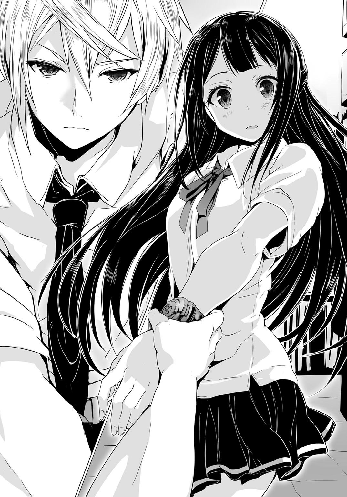

| 【合本版】神鎧猟機ブリガンド 全4巻 | |
| 榊一郎 | |
神鎧猟機ブリガンド 合本版

この本は縦書きでレイアウトされています。
また、ご覧になる機種により、表示の差が認められることがあります。

 ダッシュエックス文庫DIGITAL
ダッシュエックス文庫DIGITAL
神鎧猟機ブリガンド
榊 一郎
序章
災厄は、いつも唐突にやってくる。
平穏な日常というものは、脆く、儚く、所詮は砂上の楼閣でしかないという事実――それを忘れ果てた愚か者共に、死の鉄槌を振り下ろす為に。
故にこそ、常に災厄は人々の予想の、裏をかく。
小賢しい人間達の備えをあざ笑うかの様に、思いもしない形で訪れるのだ。
その日、街を襲った災厄もまた、人々が予想だにしなかった類のものだった。
「......何だ......？」
断続的に現場を照らす、回転警戒灯の赤光。
大音量で延々と鳴り続ける、数種の警報音。
時刻は夜の八時――とうに日は沈みきった時間帯であるが、街はむしろ明るかった。
あちらこちらに火の手が上がり、渋滞して立ち往生する自動車の前照灯が幾重にも重なって、闇を押し退けているからだ。
複雑な光と影に隈取られた街の中を、逃げ惑う無数の人々。
「......何だよ......何なんだよ......アレ？」
そんな中――呆然と立ち尽くしながら呟く男を、次の瞬間、吹っ飛んできた瓦礫が直撃した。ひと抱え程もあるコンクリートの塊である。男は疑問を解消する事なく、顔面を大きく陥没させて即死した。
親ですら見分けがつかない様な、凄惨な死に様を晒して地に転がる男を見て――しかし改めて悲鳴を上げる者はいない。悲鳴や怒号など、誰もが上げ続けていたし、今更死体が一つや二つ増えたところで、それに構っている余裕などあろう筈がなかった。
――ずしん。
人々の悲鳴の上に、覆い被さるかの様に響く――地鳴り。
いや。それは地鳴りなどではない。
耳にした者に、例外なく迫りくる圧倒的な力を連想させるそれは......確かに地震や土砂崩れにも似た重々しさを備えてはいたが、ひと連なりのものではなく、断続的だった。
――ずしん。ずしん。ずしん。
歩いている。そう。それは――足音だった。
災厄は歩いてやってきたのだ。
立ち並ぶ集合住宅の狭間、直線道路の果て。
半壊した建築物を回り込む様にして姿を現したのは、巨大な異形だった。
巨人......とでも言うべきか。
断言を憚るのは、それが『人』という単語で示すには、あまりに歪な姿をしていたからである。頭部は一つ、腕も二本、足も二本、これは人間と変わらないが、その身の丈は六メートルにも届く巨体であり、その輪郭はひどく奇怪だ。
獣を思わせる膝の逆関節、直立しながらも地に届く両腕、しかも両肩の間に埋まったかの様な頭部には、二本の角が生え、三つの紅い眼――眼だろう、多分――がぎらぎらと光を放っている。全身は極彩色の模様を描く剛毛に覆われ、不安定そうなその体軀を支える為か、後方には長々と尻尾が伸びていた。
人の様でいて人でなく。獣の様でいて獣でなく。
部分的には似ている生き物はいても、全体は悪夢の産物としか思えない出鱈目さ。
あるいはその姿に......『悪魔』の一語を思い出した者もいたかもしれない。
――ずしん。
それは、ただ歩くだけで、人々の慣れ親しんだ日常風景を壊していった。
一体どれ程の重量を備えているのか......一歩踏み出す度に、舗装道路に亀裂が走り、周辺の建物の硝子が砕け散るのだ。まるで大地震でも訪れたかの様なあり様で――しかしその異形の歩みに沿って、街が壊れていく。
しかも、異形は障害物にひどく無頓着だった。
道路上に散乱する瓦礫を踏み、あるいは蹴り飛ばす。先程の男を殺したのは異形が蹴り飛ばしたものだ。狙って投擲されたものではない。殺意の結果ですらなく、ただの余波で人間の命が奪われる。まさしくそれは災厄そのものだ。
異形は、また足元に停車していた乗用車を一台、蹴り飛ばした。
少なくとも一トンはある筈のそれが、軽々と宙を飛んで数メートル先に転がる。鋼鉄製の車体は紙の様にあっさりとひしゃげ、砕けた硝子が水飛沫の様に飛散した。だが、異形はまるで意に介した様子はなく、歩みを緩めもしない。あるいは――自分が自動車を蹴った事にすら、気付いていないのかもしれない。
「早く――こっちです、早く！」
混沌たるあり様の中で......それでもいまだ理性を保った者の声が、そこかしこで響いていた。
青ざめた顔の警察官達であり、消防士達である。
彼等の表情にもまた恐怖は色濃いが、それでも公務員達は勇敢に己の職務を果たそうとしていた。消防士達は延焼を防ぐべく消火活動を続けていたし、警察官達は警邏車輌を並べて簡易の阻塞線を敷いていた。
ここで、あの異形を食い止めようというのだろう。
「撃て！」
悲鳴じみた声で警察官の一人が命じる。
その声に重なる様にして響く、幾つもの銃声は――しかしこの場においてはひどく乾いて、軽いものの様に聞こえた。火災に熱せられた空気が轟々と唸り、建築物が崩れる音が混じり、更には異形の足音がそこに被っている状態では、わずか数十グラムの火薬が爆ぜる音など、むしろささやかな雑音とさえ言えた。
警察官達の放った銃弾は、全て、迫りくる巨大な怪物に命中していた。
だが三十八口径の弾丸は、あまりにも非力――怪物の歩みを止めるどころか、遅らせる事すら出来ない。剛毛に覆われている為に、命中箇所の状態は判然としないが――出血しているかどうかすら怪しい。そもそもこの怪物に、血が流れているとすればの話だが。
一歩、また一歩。怪物は歩くだけで街を破壊する。
それだけでなく、時折、うるさげに――癇癪を起こしたかの様にその両腕を振り回すと、街路樹をへし折り、建物を崩し、街灯の鉄柱をひん曲げる。もぎ取られた消火栓から水が噴き出し、ひどく局地的な雨を辺りに降らせていた。
「――応援を！」
警察官の一人が無線に向かってそう叫んでいる。
「とにかく早く、早く、何か手を――！」
その頭上が陰ったのは――次の瞬間だった。
警邏車輌を、吹っ飛んできた別の警邏車輌が押し潰す。どちらもが一瞬で潰れて屑鉄と化し、更には漏れた燃料が、電装から出た火花に引火して爆発を生んだ。無線に向けて叫んでいた警察官の姿は、その中に巻き込まれて――消える。
「あああああ!?」
警邏車輌の阻塞線は、あっさりと突破されていた。
辛うじて保たれていた秩序が崩壊する。人々は、蜘蛛の子を散らすかの様に、四方八方へと走り出した。最早、避難誘導の声など誰も聞いてはいない。それどころか、警察官や消防士の中にも、悲鳴を上げて走り出す者が出る始末だった。
一歩でも遠くあの怪物から離れなければ。
誰もがそう思っていただろう。足の遅い年寄りや子供、あるいは焦るあまりに転倒してしまった者達もいたが......彼等に手を差し伸べる者は殆どいなかった。そんな心の余裕など、とっくに消し飛んでしまっていた。
「............」
そんな中――少年は、ただ呆然と眼の前の光景を見つめていた。
瞬きすら忘れたかの様に、開ききったままの両眼に惨劇の現場を映し続けている。
逃げ惑う人々の只中にあって、その場に佇み続ける少年の姿は目立ったが――多くの者は彼の存在に気付く事すらなかった。
ましてや――彼の足元に堆積する瓦礫、その間から見える、小さな白い手など、誰も見てはいなかっただろう。
それは、幼い少女のものだった。
先程まで......本当につい先程まで、微かに震えていた少女の手は、しかし今、力なく垂れ下がって動かない。その指先から血の雫が滴っているだけだ。
死んでいる。脈をとるまでもなく、そう分かる。
「......あ......あ.........ああああ......あ......」
息の仕方を忘れたかの様に――少年の口がぱくぱくと、ぎこちなく動く。
漏れ出る吐息はかすれ、こじれて、声にすらならない。彼の口からこぼれ落ちるのは途切れ途切れの、単なる音だった。
よく見れば、少女の上にのしかかる瓦礫には、紅い指の跡が幾つもついていた。
少年が動かそうと――何とか除けようとした結果なのだろう。彼の両手もまた血にまみれていた。恐らくは彼自身の指先から滲む血で。
「あああ......ああああ......あああああああああ......あああああああああっ......！」
慟哭が少年の内から迸る。
怒りとか。悲しみとか。そんな分かり易くも単純な感情ではなかった。彼の全身から滲み出ているのは、諸々の激情が入り乱れた末に、真っ黒に濁った絶望の色だった。
「ああああああああああああああああああああああああああああああああああッ!!」
吠える。
絶望を身の内から絞り出すかの様に――全身で、少年は哭いていた。
「ああああああぁぁぁぁァァァァアアアアアアアアアアアア――ッ」
揺らめく炎が咆吼する少年の足元に影を刻んでいる。
その形が――歪んだ。
膨れて。折れて。伸びて。縮んで。
まるで主たる少年の束縛から脱しようとするかの如く、影は激しく形を変えながら別のものになりつつあった。
歪で巨大な何かに。
それはまるで――
「アアアアアアアアアアアアアアアアアアアアアアアアッ!!」
藻搔く影を背にした少年は、高々と慟哭しながら――血走ったその両眼で、街を蹂躙し続ける怪物を、睨み続けていた。
第一章
淡い闇の色に満たされた部屋の中で、少女は膝を抱えていた。
天井に近い位置に一つだけ設けられた、小さな鉄格子付きの窓から、白く弱い月光が射し込んでいる。完全に視界を閉ざされる程ではなく、しかし手元に開いた本の字ははっきりと読めず......中途半端な、ただ座っているだけでも、ひたすら気の滅入る暗さだった。
「......四万三千七百二十五......」
少女の――長い黒髪の間から覗く瞳は、虚ろだった。
視線は床の一点に固定されたまま、動かない。そこには何の感情も見えず、瞬きはおろか、呼吸そのものさえ忘れ果てたかの様に――そういう形の石か何かの様に、ただそこにあった。
「......四万三千七百二十六......」
澱んだ空気の中――陰々滅々とした呟きだけが続いている。
一秒に一を数えるとしても、単純に考えて十時間以上。
無意味としか思えない数え上げを、少女は飽きる事なく続けている。
何かを待っている訳でも測っている訳でもない。食事や排泄で中断する以外は、ただ数を数えているだけで......それをどこかに記録するという様子もなかった。もっとも、この部屋の中には記録に使えるようなものは何もなかったが。携帯端末やパソコンは勿論、鉛筆やボールペンの類も、ここには全く見当たらない。
ひどく殺風景な部屋だった。
十代の少女が青春の日々を過ごすには、あまりにも無粋な造りである。
薄闇に眼が慣れれば、その床も壁も天井も、全てがコンクリート剝き出しである事が分かるだろう。そして唯一の出入り口は鉄扉によって――それも二重構造の――閉ざされている。食事は鉄扉に設けられた小さな窓から差し込まれる様になっており、用足しは、部屋の片隅に設けられた真空吸引式の便器で行う様に言われていた。
「......四万三千七百二十七......」
部屋の中には――壮絶な痕跡が、刻まれていた。
乱雑に部屋の内側を走る無数の......溝。
薄闇越しに注意して見れば、少女を中心として壁に、床に、天井に、そして鉄扉にすらも、『爪痕』らしきものが刻まれているのが分かるだろう。
鋭く硬い何かでコンクリートを抉り、鋼鉄を搔いた、その結果だ。
だが一体――何で？ 勿論、部屋の中には、それらしき道具は何もない。
もしバールだのスコップだの......何らかの道具があったとしても、少女の細身で、これ程までに広範囲に、しかも深々と、傷をつけるのは困難だろう。たとえ虎や獅子といった猛獣を閉じ込めたとしても、こうはなるまい。
「......四万三千七百二十八......」
白と黒と灰色と、無数の『爪痕』で構成された閉鎖空間。
監獄の独房ですらも、まだ閉じ込められる者への配慮が見て取れる。内側からは勿論、見えないが――鉄扉の脇には、鑑札代わりとでもいう様に、樹脂製の表札が取り付けられている筈だった。
『若槻紫織』
その四文字と、その下に刻まれたバーコードが、彼女を示す全てだった。
「......四万三千..................」
ふと少女――紫織が数を数えるのをやめた。
遠くから、何かの叫び声が聞こえてきたからだ。
獣の遠吠えを思わせる、低くも鋭い声。およそ理性など欠片も含まない、原始的な感情をそのまま爆発させたかの様な、『音』だった。『声』と呼ぶには、それは、あまりにも非人間的で――誰かに伝えるべき意味を一切含んでいない。
ただ......
「......もうすぐかな......？」
床の一点を見つめたまま紫織が呟く。
「......私ももうすぐ......ああなるのかな......なるんだろうな......悪魔に取り憑かれて......」
まるで他人事の様な口調である。
乾いてかすれたその声には、恐怖の色も悲嘆の色もない。
「......中途半端なまま......何もかも......本物には程遠いまま......死ぬんだろうな......悪魔に取り憑かれて......獣みたいに......あんな声を上げて......」
無論、少女の呟きに答える者は、ここにはいない。
「それも......でも......出来損ないの偽物には......相応しい結末なのかも......ね......？」
代わりに――窓の外から届く遠吠えが僅かだが変化した。
より強く。より高く。何かを期待するかの様に。
「うっ......」
紫織が身を震わせる。
同時に――
ぎ。ぎぎぎ。ぎぎ。ぎぎぎぎぎぎぎぎ。
コンクリートが自ら抉れていく。
何も触れているものがないのに......自ら陥没するかの様に、一筋の『爪痕』が刻まれていくのだ。ぼろぼろとコンクリートの破片がこぼれ落ち、先の『爪痕』と重なって深々と抉られたその傷の向こう側には、鉄板が埋まっているのが見えた。
奇怪な現象である。
だが紫織に......それを恐れる様子はない。
壁を這う『爪痕』がゆっくりと部屋の中を巡り、紫織の方へと近付いてくる。まるで目に見えぬ巨大な怪物の爪が、迫ってくるかの様に。
その様子をぼんやりと眺めながら――
「......痛くないと......いいな......」
仄暗い笑みを浮かべてそう呟く紫織。
今の彼女にとって、それだけが抱く事を許された、望みの全てだった。
●
『収容所』の夜は、暗い。
街から遠く離れた山中にあるという事も理由の一つだが......『患者』達を出来るだけ刺激しない様に、病棟内外の音と光は出来るだけ抑え込まれ、職員達の大半が詰めている管理棟から漏れる分も、極めて限定的にしてあるからだ。故に夜中ともなれば、伸ばした手の先が自分で見えない事も珍しくない。巡回警備には懐中電灯が必須だった。
「静かッスね、先輩」
白い電気の光で闇を押し分けながら――地面に生える雑草を踏みしめて二人の男が歩いていた。今夜は月が出ているのでまだ歩きやすく、その歩調は比較的、軽い。
「いつもこんなもんだがな。......ってか、静かすぎだろ」
男達は、ぼそぼそと抑えた口調で言葉を交わす。
紺と白の制服に身を包んだ彼等は――『収容所』の警備員達だ。もっとも警備員という言葉から、雑居ビル等にいる守衛の類を想像すると、彼等の姿は随分と物々しく見えるに違いない。
何しろ彼等は制服の上から、緩衝材をたっぷり使った防刃防弾ベストを着用し、肘や足にも防具を装着、挙げ句に肩から三点スリングで吊るしているのは自衛隊も採用している八九式自動小銃だからだ。むしろ見た目の印象は軍の特殊部隊員に近い。
「こんな山の中だってのに虫の声すらしねえ」
「そういえば――そうッスね」
「まあ、虫にすら分かるんだろうな」
先輩と呼ばれた男は、忌々しげな口調で、後輩らしき警備員に言った。
これも自衛隊と同様のヘルメットを被っていて、傍目には判別しにくいが――前者が恐らく三十半ば、後者が二十歳そこそこといった年齢だろう。
「ここに詰め込まれてる連中が、どれだけヤバいかを」
「......そッスね」
後輩警備員は首を竦めた。
「でもなんつうか......こんなに静かだと、なんか怖くないッスか。先輩」
「警備する側の人間が何言ってんだ」
後輩警備員の言葉を、先輩警備員は一笑に付した。
「さっきちょっと『患者』が吠えてたけどな。どうせ何も起きやしねぇよ。今日もぶらぶら見回りして、それで終わりだ」
先輩警備員はそう言って肩を竦め――大きく一つ、欠伸をした。
この『収容所』の警備員としての経験は、先輩と後輩で随分と差がついている様だった。先輩警備員の方は、慣れて落ち着いている――というより、緊張感を欠いている印象すらあった。
「それとも何か？ その辺からお化けでも出そうってか？」
彼はふと立ち止まると、懐中電灯で自分の顔を下から照らして、後輩の方に見せつける。
「やめてくださいよ。ただでさえここは――」
後輩警備員が口を濁したのは......この『収容所』の現実を知っているからだ。
国立第二特異能力研究所――通称『収容所』
此処は表向き、非常に特殊な、俗に『超能力』と呼ばれるものを発現した人間の研究を――それも、その『超能力』を制御出来ず、自身の肉体をも傷つけてしまう様な者の治療方法の創出を目的とした施設、という事になっている。
だが定期的に職員達が、手に負えなくなった患者を積極的に『処分』している事は、関係者なら皆が知っていた。既にこの『収容所』が現在の体制で運営されて五年......『処分』されたあと、地下の研究施設で標本扱いを受けている『患者』はそろそろ三桁に達するだろう。
そう。ここは幽霊くらい出てもおかしくはない場所なのだ。
しかし......
「あいつらは死ぬ前からとっくにバケモノさ――得体の知れねぇモンに取っ憑かれた〈悪魔憑き〉さん達はよ。むしろ死んだあとの方が害がねぇ」
病棟の方を振り返りながら先輩警備員は言った。
「『良い〈悪魔憑き〉は死んだ〈悪魔憑き〉だけだ』――ってか？」
「〈悪魔憑き〉――」
自分も気味悪そうに、灰色の病棟を見上げながら、後輩警備員が呟く。
それは『収容所』と同様に、正式な名称ではない。
あくまでネットを中心として広がりつつある俗称である。ただし『突発性特異能力暴走症候群』などという胡散臭い正式名称よりは、遙かに覚えやすく言いやすい為、この『収容所』関係者の間でも問題の病気と、そして『患者』を指し示す言葉として、定着していた。
〈悪魔憑き〉。それは病気であり現象だ。
具体的には、ある日突然――特定個人の身の回りに正体不明の破壊現象が発生する様になる。窓が割れたり、布が燃えたり、壁が崩れたり、様々な形でそれは現れる。
特定個人が眠っている時、あるいはその特定個人が死亡した場合には、破壊現象が止む事から、これは一種の『超能力』ではないかとする意見が大半だ。だがそれは恣意的で制御する事はほぼ不可能で......破壊現象は、次第にその規模を拡大し、その源である筈の特定個人すら殺してしまう場合が、殆どである。
まるで旧い映画に出てくる、文字通りの『悪魔憑き』の様に。
超能力であるとしても、制御不能。当然ながら周囲を激しく巻き込み、死傷者を出し易い。
また映画の『悪魔憑き』と異なり、この〈悪魔憑き〉には聖書も聖水も効かない。
この為――〈悪魔憑き〉達は自存する災厄として、人々から忌み嫌われる事になった。
日本政府は、この事実を公的には認めず、〈悪魔憑き〉達を『新種の病気に罹患した患者である』と規定して、彼等を隔離する方法を採った。同時に各種報道機関には最大限の『協力』が『要請』される事となった。
幸いだったのは、〈悪魔憑き〉の発生がそう頻繁ではなかった事だ。
無視するには多いが、封じ込めて公式上は『なかった事』に出来る程度の、数。
総人口が一億を越える国家において、百人やそこらの患者など、文字通り百万人に一人の稀少例、政治における『誤差』でしかない。勿論、『誤差』として人権を剝奪される当の『患者』達にとってはたまったものではないのだろうが――
「なんか、あれッスよね。〈悪魔憑き〉ってなったら最後、もう治らねぇんスよね？」
「手の施しようがないって話だな。発症したら正気を失って暴れ回って、元に戻っての繰り返し。で......だんだんその間隔が短くなっていくって話だ」
そして最終的には『正気』の時間が......『悪魔』の出ていない時間がなくなる。
先輩警備員は、懐から煙草を一本取り出すと、オイルライターで火を点ける。勤務時間中の喫煙は飲酒共々禁じられているが、後者はともかく、前者は律儀に守る者も少ない。
深々と煙を吸い込んでから、先輩警備員は溜息の様にこれを吐き出して――続けた。
「そうなったら、もう手がつけられねえからな。コンクリートは抉り抜くは、鉄板はぶち抜くは......あんなモンまともに相手してたら命が幾つあっても足りねえよ」
だから、その前に自滅すれば良し――そうでなければ『処分』する。
薬を使うか、銃を使うか、それは管理棟にいる研究者達の判断だ。
「治療法はねぇ。他に入れとく場所もねぇ。どうしようもねぇからここを造って放り込んだんだ。どうせ、もう二度と出られる事はねぇよ、ご愁傷様だな」
二口ばかり吸っただけで先輩は煙草を棄てると、乱暴な仕草で踏みつけて火を消した。
あるいはこの男も、『患者』達の処遇に関しては思うところがあるのかもしれない。だが彼自身が言う様に他に方法はなく、だからこそ殊更に非情を気取って自分自身を誤魔化しているのかもしれなかった。
再び先輩警備員は歩き出し、後輩警備員も二歩ばかり遅れて、そのあとに続く。
やがて――
「......先輩？」
後輩警備員は、不意に立ち止まった先輩警備員の背中を怪訝そうに眺める。
「おい......これ」
先輩警備員が慄然とした口調で言いながら、懐中電灯で照らし出す――先。
そこに視線を向けて、後輩警備員もまた、その場に凍り付いた。
『収容所』敷地の外縁部。
内と外を仕切るそこには、刑務所じみた高い壁が設けられている。高さは五メートル、厚み一メートルの鉄筋コンクリート製で、一定間隔で高感度の赤外線監視カメラも設置されている。勿論これは外部からの侵入を警戒してのものではなく、収容した〈悪魔憑き〉達が外に逃げるのを防ぐ為の施設だった。
だが......その壁が、ない。
正確にはその一部が、ごっそりと抉り取られたかの様に消失しているのだ。幅にして四メートル余り。人間どころか大型トラックでも通り抜けられるだけの隙間だ。
しかも......
「これは......！」
先輩警備員は、壁の消失した部分に駆け寄って――残った壁の断面を見つめる。
そこは滑らかな状態だった。コンクリートでありながら、尖った鉄筋もなければ、ごつごつした破断面も見えない。代わりにそこは、熱した飴細工の様に崩れていた。
抉ったのでも、叩き壊したのでもない。溶かしたのだ。
だが――誰が、一体、どうやって？
「どういう事だ。誰か脱走したのか？」
「いや、これ、外から――」
動揺する警備員二人――その周囲の闇が濃さを増したのは、次の瞬間だった。
何かで月明かりが遮られたのだ。その事実に気付いた警備員達は、恐る恐る自分達の頭上からのしかかる影を......その本体があるであろう場所を振り返った。
「これは......！」
叫ぶ先輩警備員の声は、既に悲鳴に近い。
二人の警備員が、驚愕と恐怖に揺れる視線を向けた、先。
そこには――白い半月を背に、悠然と佇む異形の巨体があった。
●
それは......紫織が『収容所』に入れられてから初めての経験だった。
「............？」
彼女が収容されている部屋が、否、彼女の部屋を含めた第二病棟が、激しく揺れた。
地震ではない。それは直感で分かった。
それを裏打ちするかの様に、強烈な破砕音が、そして更には、けたたましい警報と入り乱れる足音、それに混乱しきった叫び声が続いた。どうやら警備員達が走り回っているらしい。
「なんだあれは!?」
「まさか具現――」
「緊急事態！ 緊急事態！」
「Ｃ棟に人を回せ！ 武器を出すんだ、急げ！」
「患者の様子を調べろ！ 暴れるようなら構わん、撃て！」
「とにかく〈悪魔憑き〉共を外に出すな！」
これまでも何度か、施設内で大きな音が聞こえた事はあった。
関係者が慌ただしく走り回る足音や、罵声や怒声が聞こえてくる事もあった。
だがその全てが、全部まとめて聞こえてきた事はなかったし――何より病棟そのものが大きく揺れる様な事は、今までなかった。
しかも......
「動くなっ！」
叩き付けるかの様な激しい音を立てて、鉄扉が開く。
そこには自動小銃を抱えた若い警備員の姿があった。
「壁際に行って伏せろ、〈悪魔憑き〉！」
血走った眼で紫織を睨みながら、警備員が喚く。
勿論、紫織には警備員の抱える銃がどういう状態なのか......安全装置は掛けられているのか、弾は装塡されているのか、そもそもどれくらいの威力なのか、全く分からない。
だが――
（あ......撃たれる）
紫織は、どこか他人事の様にそう思った。
警備員は明らかに恐慌状態だった。顔は青ざめ、目は見開かれ、手は小刻みに震えている。紫織が動けば、反射的に引き金を引くだろう。動かなくとも、恐怖に駆られた彼はやはり緊張に耐えられなくなって、引き金を引くだろう。説得も恐らくは無駄だ。この警備員にこちらの話に耳を貸す余裕があるとは思えなかった。言葉を発した途端に銃弾が飛んでくるに違いない。まさに一触即発である。
だが――どうして、この警備員はこんなにも怯えているのか。
勿論、紫織は恐れ忌まれるべき〈悪魔憑き〉である訳だが......そんな事はこの警備員もとっくの昔に承知していた筈だ。その為の自動小銃であり、その為の防護ベストであろう。〈悪魔憑き〉の一人や二人、労せずして制圧出来る筈の装備だった。
（じゃあ......何故？）
ひどく冷静な気持ちで紫織は考える。
だが、答えを得るだけの時間は残っていない様に思えた。警備員は今にも発砲しそうに見える。動揺のあまり銃口は紫織から外れてしまっているが、闇雲に乱射されれば、狭い部屋の中では逃げ場がない。紫織など瞬く間に蜂の巣だ。
（......痛くないといいな）
できれば苦痛を感じる間もない程に、一瞬で殺してほしい。
そんな事を頭の片隅で考えた紫織だったが――
「――え？」
その願いが聞き届けられる事は、なかった。
警備員の姿は次の瞬間、消えていたからだ――周囲の壁や床と共に。
「............」
突然の事に――さすがに紫織も呆然と、眼の前の光景を見つめる。
彼女のすぐ眼と鼻の先、距離にすれば五十センチもない辺りから、ごっそりと全てが抉り取られていた。病棟の一郭が、まるでスプーンでアイスクリームをすくい取るかの様に丸く消失している。一体どんな力が働いたのかは分からないが――断面からは何か饐えた様な、鼻を刺激する匂いが漂ってきた。
顔を上げると、天井も――そして上層階も、更には屋根まで、全て一続きになくなっているのが見える。紫織の頭上にはおよそ一年ぶりの夜空と、そこに浮かぶ白い半月があった。
「............」
久々に肉眼で見る月は――美しかった。
こんなにも綺麗なものだったのか、と紫織は思った。当たり前の様に見上げていた頃には考えもしなかった。失ってみて初めてその価値を知る、というのはよくある話だ。
ふと――その月光が、陰る。
何かに遮られたのだ。
「..................騎士......？」
身の丈は、およそ六メートルといったところか。
断絶感を覚える程に巨大ではなく。
侮って見られる程に矮小でもなく。
分かり易く実感を伴う――脅威そのものといった大きさ。二階建ての家屋に等しい高さだが、それが人型をして実際に動くとなると、醸し出される圧迫感は尋常ではない。
その輪郭は、複雑な流線と幾つもの突起によって構成されており、漆黒と白銀の組み合わせに彩られたその姿は、確かに鎧を纏った騎士を連想し易い。少なくとも、その見るからに硬そうな表面の質感は、生物のものとは明らかに異なっていた。背中から腰の辺りにかけて緩やかになびいているマフラーともマントともつかない布の為に、余計にその硬質さが強調されている様な印象だ。
だが同時に、その姿には、騎士の甲冑とは明らかに異なる点もあった。
全身を緩やかに循環する――複雑な紋様。
文字の様な、回路の様な、幾何学的で精緻なそれは、音もなく、装甲の表面を滑っていく。まるでどこからか、投映機で何かの映像を映し出しているかの様な、奇妙な光景だった。
これは一体何なのか。
鋼鉄の巨人――そんな表現で括るのは簡単だが、それでは何の説明にもなっていない。
（......鎧の......騎士......）
ふと――紫織の脳裏を、益体もない想像が過ぎる。
悪い魔法使い。意地悪な悪魔。囚われの姫。駆け付ける騎士。

『騎士』の一語が、紫織自身の境遇と結びついて、連想を呼び――手垢の付いた寓話を呼び覚ましていた。誰もが似たような御伽噺を聞いた事があるだろう。だが今更、己を『囚われの姫』になぞらえる様な気持ちが自分にも残っていたという事が......紫織には少し意外だった。
助けてほしい。救われたい。
既にどうしようもないくらいに絶望しきっていた筈なのに――何もかもを諦めていた筈なのに、どこかでまだ自分は、浅ましくもそんな希望を持っていたのだろうか。
「............」
巨体が音もなく動いた。
兜に覆われた頭部が――紫織の存在に気付いたかの様に振り返る。
鋼鉄の仮面の奥、切れ目の様に刻まれた覗き穴の向こうで、血の様に紅い眼球が動き、じろりとこちらに焦点を合わせるのが見えた。
（――あっ）
眼が合った。
そんな風に紫織が思った次の瞬間......巨人が右手をこちらに伸ばしてきた。
殴りつけ、叩き潰す――その意思を真っ直ぐに具現させたかの様な、鋼鉄の手は、ひどく凶悪に見えた。紫織など軽く殴るだけでも――いや、殴るまでもない、ただ摑んで握りしめるだけでも、全身の骨を砕かれてしまうだろう。
「............」
仮面の奥の紅い眼球には、憎悪が滾っていた。
一目見て、紫織にもそれと分かる程に――殺気に満ちていた。
紫織は悟った。これは断じて気高い騎士などではない。理不尽にもこの世の全てに怒り、全てを憎み、触れる者、近付く者、一切の区別なく滅びを振りまく破壊神だ。
（ああ、なんだ......）
一瞬でも、希望の欠片のようなものを感じた事を、紫織は恥じた。
壁の残骸を更に崩し、巨人の手が指を開いてこちらに向かってくる。
緊張感で間延びする時間感覚の中――紫織は静かに眼を閉じた。
（何度も、覚悟してきた事よ......）
改めて紫織は自分に言い聞かせる。
自分は死ぬ。それは確定した未来なのだ。薬殺か。銃殺か。あるいはこの身に取り憑いた『悪魔』に抉り殺されるのか。その過程に多少の変更があるだけで......結末は同じだ。たまたまこの鋼鉄の巨人に握り潰されるという形になっただけで。
「......出来れば......痛くしないで」
そんな願いを巨人が聞いてくれるとも思えなかったが......ただそれだけを呟いて、紫織は己の上に訪れる終わりを、大人しく待った。
●
『撃て！ 撃て撃て撃てッ！』
銃声の合間から半狂乱の叫び声が届く。
分厚い装甲と結界越しなのでくぐもって聞こえるが、それでも警備員達の狼狽振りが如実に伝わってくる声だった。無理もない。彼等にとっては悪夢がそのまま現実に這いだしてきた様にすら見えるだろう。
「――煩わしい」
分厚い装甲の奥で――一人の少年がそう呟いた。
隙の無い端正な顔立ちで、静かで涼しげな無表情がむしろよく似合う。口にした言葉とは裏腹に、切れ長の両眼はむしろ半眼の状態――眠たげにすら見えた。少年と言いつつも、その落ち着き振りは、枯れきった老人のそれに近い。
だが、彼の姿を最も特徴的に見せているのは、目鼻立ちよりも、態度よりも、何よりも、まずその髪の色だろう。
白......いや、どこか硬い印象を含むその色は、銀、と言うべきか。
顔の造りは基本的に日本人の、それも若者のそれだからこそ、余計にその髪との組み合わせが目立つ。彼と出会った人間は大抵、その整った目鼻立ちよりも、老人の如く白いその髪にまず眼を奪われる。
『――連志郎様』
若い娘の高い――しかし落ち着いた声が、少年の耳元でそう呼び掛けた。
彼の右耳に取り付けられた、小型の受信器からのものである。
『お分かりでしょうが、時間があまりございません。〈ブリガンド〉の稼働時間は勿論ですが、連絡を受けた草薙機関の部隊が、現在、そちらに急行中である様です』
「分かっている」
連志郎と呼ばれた少年はそう応じた。
斯波連志郎――それが彼の名だ。
そして彼がその内に座して操る鋼鉄の巨人......その名を〈ブリガンド〉という。
荒神拘束制御用外装骨格〈ブリガンド〉。
一見するとそれは、巨大な人型ロボットの類にも見えるかもしれない。
だが、実際にはそれは、空っぽの『殻』でしかない。分厚い装甲の内側は、駆動系も何もない、がらんどうだ。
装甲の各部から伸びた十数本の光る鎖が、まるで骨格の如くに、あるいは血管の如くに、互いに絡み合い、最終的に胸部にある連志郎の座る『席』へと集まってこれを固定しているが......内部の構造物といえばその程度である。
だがそれも当然といえば当然。
これは本来、外からの攻撃を防ぐ為の鎧ではない。
連志郎の内側から溢れ出しそうになる、不可視の力に形を与え、御する為のものだ。
「蹴散らしても良いのだが」
外部拡張用感覚器――紅水晶の眼を通して、地上を一瞥する。
今の連志郎は、つまりは〈ブリガンド〉は、人間と比して三倍以上の身の丈と、百倍もの膂力を備えた、常識外の怪物である。生身の人間がどれだけ束になろうと、小銃程度の武装ではろくに傷もつけられまい。ただ強引に歩くだけで、文字通り、地を這う連中を蹴散らす事も可能だった。
「どうしたものか」
連志郎は〈ブリガンド〉の右腕で抱え込んでいる少女を意識した。
眼が合った――ただそれだけの事だったのだが、咄嗟に彼はその少女を庇っていた。
あの場にいたという事は、この少女とて〈悪魔憑き〉である筈で、場合によっては――第二段階に成長する事があれば、連志郎の敵になるかもしれないのだ。わざわざ助けてやる義理など、どこにもない。
本当に咄嗟の事で、彼自身にもよく分からないのだが――あるいは、崩れかけた建物の中にいたその少女に、昔日の記憶が刺激されてしまったのかもしれない。
何にしても、余計な荷物だ。
出来れば足元の警備員達に手渡してしまいたい――というより、彼等も少女も早々にこの場から去ってもらいたい。今更、人が死ぬ事にいちいち忌避感など覚える連志郎ではないが、意味のない巻き添えは、彼としても望むものではなかった。
しかし......
「――遅かったか」
連志郎の言葉に応ずる様にして、それは第一病棟の陰から姿を現した。
大きい。〈ブリガンド〉と同等の巨大な人型。
身長六メートル前後というのは多くの〈魔神態〉に共通の上背である。勿論、人型とは到底呼べない様な異形に完成する場合もあるので、全ての〈魔神態〉に共通する特徴という訳でもないのだが。
身の丈は同等でも、その外見から受ける印象は〈ブリガンド〉のそれとは大きく異なる。
簡単に言えば、それは『剛』と『柔』――『鉄』と『肉』の差である。
鎧騎士を連想しがちな外装骨格である〈ブリガンド〉に対し、現れた〈魔神態〉はやたらに生々しい肉体を持っていた。その体表は、月光に照らされてぬめぬめとした――粘液質を思わせる光り方をしている。全身のあちらこちらにだぶついた肉が襞を成し、一歩進む度に、あちこちが泡立つ。
生理的嫌悪感をひたすらに煽るかの様な――醜悪な姿だった。
「〈魔神態〉――」
一度は見失った相手だが――少女を助けていたせいだ――感覚の端ではずっとその存在を捉え続けていた。『敵』が逃げていないのは明白だった。
元々この『収容所』を襲撃したのは、連志郎ではなく、この〈魔神態〉の方である。連志郎はあとからやってきて、何やら破壊活動に勤しんでいた〈魔神態〉に対して襲いかかっただけの事である。
この〈魔神態〉が一度、〈ブリガンド〉の前から姿を消したのは、単に奇襲されて驚いたからだろう。初撃で斃しておかなかったのが悔やまれる。
だが......
「やはり『ハズレ』か」
改めて相手の姿を確認しながら、連志郎は呟く。
「だが見逃す訳にもいかない。貴様等は一匹残らず滅ぼし尽くすと決めているのでな」
『――なんだ!?』
ようやく警備員達も再び姿を現した〈魔神態〉に気付いたらしい。
恐らく彼等は、塀の破壊も、病棟破壊も、〈ブリガンド〉の仕業だと思っていたのだろう。だが、これは誤解も甚だしい。連志郎に建物をいちいち壊して回る趣味はない。『収容所』の敷地内に入りたければ壁を乗り越えるだけだ。
だが〈魔神態〉になった連中は、そうではないらしい。
多くの場合――〈魔神態〉は己の能力に固執する。壁を乗り越えればすむ場合でも、わざわざ〈魔神態〉の能力を使って、これをぶち抜きたがるのだ。
『バケモノが二匹――』
『撃て、撃て、あっちも撃て！』
投光器の光が、慌てた様に〈ブリガンド〉と〈魔神態〉の間を往復する。
だがより生理的嫌悪感を訴える〈魔神態〉の方から、まず最初に排除すべきと考えたのだろう――警備員達は自動小銃を、迫りくる肉塊へと向けて、発砲を開始した。
『こいつはいけるぞ！』
八九式自動小銃の小口径高速弾は、はずれる事なく〈魔神態〉の異形に着弾した。
的が大きい上、元々、反動が小さく制御が楽な八九式自動小銃を用いているので、最低限の訓練しか受けていない様な警備員達でも、命中させる事が出来るのだ。
異形といえども相手は肉......〈ブリガンド〉の様に装甲で銃弾を弾き返される事もない。
しかし――
『おいっ......？』
『効いてな――』
〈ブリガンド〉の時とは種類の異なる新たな狼狽が、警備員達の間に広がっていく。
弾丸は確かに〈魔神態〉に命中していた。その証拠に表面を濡らす粘液が飛沫となって弾け跳ぶのも――焼けた弾丸に熱せられたか、粘液が白い煙を発するのも、見えた。
だが、それだけだ。醜悪な〈魔神態〉は、怯む様子もなく進んでくる。
肉を震わせ、あちらこちらに粘液を滴らせながら歩く様は、やはり醜悪の一語に尽きる。見ているだけで鼻孔の奥に異臭がしてくる――そんな錯覚すら覚える程だ。
『駄目だ、逃げろ！』
警備員達はようやく恐怖が限界に達したか――銃撃をやめて、我先にと逃げ始めた。
「ふむ。敵に感謝する事になるとはね」
より醜悪で恐怖感を煽る〈魔神態〉のお陰で、図らずも、連志郎は足元を気にせず動く事が出来るようになった。もっとも右腕には例の少女を抱えたままだが。彼女は気を失っているのか、暴れたりする様子がないのが、せめてもの救いだった。
少女を降ろしている余裕はない。また気絶した少女をこの場に降ろせば、間違いなく〈ブリガンド〉と〈魔神態〉の戦闘に巻き込まれるだろう。
「仕方ない......」
連志郎は少女の身体を左腕に抱え込み直して、身構える。
今の〈ブリガンド〉はいわば連志郎の第二の身体だ。その操作に関しては――人間の肉体に可能な動作であれば、殊更に何かを意識する必要はない。連志郎が構える事を意識すれば〈ブリガンド〉もまた、その通りの体勢をとる。
「............ん？」
近付いてきた〈魔神態〉が、足を止め、身を屈めるのが見えた。
先に叩き込んだ一撃で、相手もこちらを敵として認識している筈だ。立ち止まる意味も頭を下げる必要もない。その行動の全ては攻撃の為のもの――と考えるべきだ。
「車......か」
〈魔神態〉が持ち上げたそれを見て、連志郎は呟いた。
警備員や職員達が『収容所』内部を移動する際に利用する、電気自動車である。普通の車よりは一回り小さいが、蓄電池を満載している関係で、重量としてはあまり大差ない筈だ。
それを〈魔神態〉はあっさりと持ち上げると、まるで誇るかの様に頭上に掲げてみせた。
次の瞬間――電気自動車の輪郭が緩む。
「ふむ？」
電気自動車の車体が溶けている。
〈魔神態〉の両手が触れた部分から溶解し、そのまま幾つもの色が中途半端に混じり合った粘液となって、地面に垂れていく。
「............液状化した？」
〈魔神態〉が、何か特別な動作をしたようには見えない。
だが小さいとはいえ、車が一台、瞬く間に残骸とすら呼べない様な粘液となって地面に溜まる光景は、ひたすらに異様だった。
「先の――病棟を抉ったのも、これか」
少女と遭遇した際、彼女の収容されていた病棟は大きく壁と床が抉り取られていた。
実際にこの〈魔神態〉が病棟を破壊した際に、何をしていたのかは、連志郎の側からは見えなかったのだが――
「岩も鋼も瞬く間に溶かす――か」
恐らくは、それがこの〈魔神態〉の能力だ――それも力半分程度の。
ッ！
〈魔神態〉が震えた。
その頭部もまた肉が幾重にも垂れ下がって襞をなしている為、眼も鼻も口も判別がつかず、およそ表情は見えないが――
「............」
笑っている。
電気自動車を溶かしてみせたのは、やはり示威行動か。
見ろ、これだけの事が俺様には出来るんだぜ、怖いだろ――と。
実際、普通の人間ならば、恐怖のあまりその場に立ち竦んでいた事だろう。電気自動車を数秒で溶かしきるなら、人間など一瞬で原型も留めない液体に変えられてしまうに違いない。単に速度という意味なら、濃硫酸よりも遙かに強力な溶解力である。
「やれやれ」
連志郎は溜息をついた。
「〈魔神態〉になる事を覚えた〈悪魔憑き〉共は、どうしてこうも頭が悪いのか――」
〈ブリガンド〉が右手を伸ばした。
崩れかけた病棟の中から、手頃な長さの配管をもぎ取って――握り直す。
「道具を使うから人間なのだ」
呟きと同時に〈ブリガンド〉が地を蹴った。
轟音と共に空気を抉り抜いて突進する巨体。間合いは一瞬にして詰められ、〈ブリガンド〉は右手の配管を剣道の面打ちの如く、〈魔神態〉の頭部へと振り下ろしていた。
〈魔神態〉の防御は間に合わず、鋼鉄の筒はその顔面を直撃。
衝撃で大きく肉がうねり、粘液が飛び散る――が。
「――ふむ？」
手応えがおかしい。
咄嗟に引いたその配管は、半分程度の長さになっていた。
〈魔神態〉の頭部に触れた途端に、溶けてしまったのだ。
連志郎は後方に跳び下がって間合いを広げながら、配管の残った部分を投げつける。だがこれもまた〈魔神態〉の顔面に命中――突き刺さったかと思えたその瞬間、形が崩れて飛び散っていた。
「なるほど？ 液状化は高速、しかも両手でなく全身で可能――か」
身体を覆う粘液が、強酸の類なのか、あるいはもっと別の理由なのか、詳しい事はさすがに分からないが......この〈魔神態〉に触れたものは、片っ端から溶かされてしまうらしい。
恐らくは先程、警備員達の銃弾を浴びても平気だったのは、この能力によるものだ。銃撃を受けて飛び散っていた粘液の中には、銃弾だったものも含まれていたに違いない。
最も恐るべきは、鋼鉄も鉛も溶かしきる溶解力そのものではなく――その速度だ。
一瞬で金属すら液状化させる為、棒で殴ろうが、刃で斬ろうが、破壊力を完全に叩き込む前に武器が溶けて威力が拡散・吸収されてしまう。
「つまり、誰も俺には触れ得ない――と？」
確かに勝ち誇って笑うのも道理。
この〈魔神態〉は、ただ佇んでいるだけで良い。まさに攻防一体、無敵の肉体である。敵は攻撃をすればするだけ勝手に消耗し、迂闊に〈魔神態〉の手の届く範囲に踏み込めば、一瞬で溶かされてしまう。
だが――
「ああ......本当に馬鹿なんだな」
連志郎は、笑った。
〈ブリガンド〉は後方に跳躍――その巨体に似合わぬ軽やかさで、敷地の端へと移動する。
そこは駐車場だった。先程の電気自動車の他に、職員の通勤用や、資材の搬入等に使うらしい車が大小十数台、停車している。連志郎が侵入した際に見たよりも、多少車の数が減っている様に見えるのは、恐らく職員や警備員達が逃げ出すのに使ったのだろう。
〈魔神態〉は悠然と〈ブリガンド〉に追ってくる。殊更にゆっくりとした歩調は、こちらを怖がらせる為のものか。己の能力に対して、連志郎はなす術もない――と思っているのだろう。
その異能を秘めた醜悪な巨体に――
「勿論、触りなどしない。だが――」
――〈ブリガンド〉が投擲した自動車が命中したのは、次の瞬間だった。
一トンを越える重量物が、弾丸の如き速度で衝突する。轟音と共に〈魔神態〉は仰け反るが――しかし所詮その程度だった。自動車は衝突した瞬間から液状化され、自ら衝撃を吸収しながらどろりと〈魔神態〉の足元に流れ落ちる。
だが、自動車だったものが地面に達するその瞬間には、『次』が激突していた。
文字通り手当たり次第――〈ブリガンド〉は片腕で自動車を摑んではこれを投げつけていく。五台。六台。七台。八台。九台。十台。総計十トンを越える鉄の塊が、全て〈魔神態〉の足元で粘液となって堆積していった。
勿論、〈魔神態〉は無傷である。それどころか、連志郎の行動を悪足搔きととったか、再び〈魔神態〉はその巨体を震わせて笑った。更には片腕を手前に伸ばし、膨れあがった指を折り曲げて見せる。招く様な仕草は――『もっと好きなだけ投げてこい』という意味だろう。
しかし......
「貴様――自分の能力の特性や効果範囲を、きちんと把握しているか？」
言いながら連志郎は駐車場に残っていた長い鉄柱を――標識のものだ――強引に引き抜くと、これを〈魔神態〉ではなく、遙か頭上に向けて投げた。
一体何を？ ――と〈魔神態〉は訝しんだ事だろう。
だが思考を許さないとばかりに、最後に投げつけられた大型トラックが、その醜悪な身体を仰け反らせる。それも当然、溶解して〈魔神態〉の足元に堆積して――
「――！」
何かに気付いた様子で〈魔神態〉が愕然と頭上を振り仰いだ。
縦に細長い楕円軌道を描いて、〈ブリガンド〉の投げた標識が、まるで矢の様に落下してくるのに、ようやく〈魔神態〉は気付いたらしい。だが咄嗟に能力を発揮するのが遅れたのか、標識は〈魔神態〉の左肩に命中――そのまま巨体を刺し貫いて、地面に縫い止めていた。
「当たり前の話だが」
連志郎は淡々と、特に勝ち誇るでもなく言った。
「どこでも触れたものは溶解させられるといっても、それは限定的――能力はあくまで意識的なものだ。さもなければ貴様は地面に立つ事すら出来ないからな」
表面の全てに、触れたものを瞬時に溶かす能力が備わっているならば、当然、地面も溶けているだろうし、そもそも電気自動車を摑んで掲げる事すら出来まい。触れた端から液状化して、指の間からこぼれ落ちていくだけだろうからだ。
「それに僕は既に一度、貴様を殴っている」
病棟を溶かしていた〈魔神態〉を背後から襲った時の事である。
その際に〈ブリガンド〉は右の拳を使っているが、そこが液状化した痕跡は――ない。
「貴様は認識し、選択した部分に液状化の能力を付与する事は出来るが......逆に言えば、認識外からの奇襲攻撃に対して、その能力で防御する事は出来ない。またその能力を付与する面積や時間には、限りが有る。だから『常に足の裏以外は全て能力付与』などという事も出来ない訳だ。それが出来るなら、最初からそうしているだろうしな」
そもそも人間の意識は、同時に二つも三つもの事を集中して行える様には出来ていない。
能力を意識的に行使出来るのは、あくまで一方向だけ――それを確かめる為に連志郎は敢えて標識を頭上に投げたのである。正面の〈ブリガンド〉や投擲される自動車に注意を引かれていた〈魔神態〉は、落ちてくる標識にまで対応しきれなかった。
まして――
――ギョオオオオオオオオッ！
苛立たしげな咆吼は、身動きがとれない為か。
身体の『表面』に触れたものを溶かす事は出来ても、内部――身体を貫いている交通標識を溶かす事は出来ないのだろう。しかも、足元に大量にわだかまる、十数トン分の溶解した鋼鉄もまた足枷となって〈魔神態〉の動きを阻害する。足周りの表皮に能力を付与すればまたこれを溶解させて蹴散らせる事は出来るだろうが――そうなれば、今度は地面まで溶かしてしまって、自らが造り出した底無し沼に沈む事になる。
「無駄だ。貴様は既に詰んでいる」
そう宣言すると〈ブリガンド〉内部の連志郎は――生身の彼の肉体は、己が座する席の肘掛けを右の拳で叩いた。
金属音と共に起き上がるのは、航空機のものにも似た操縦桿である。
彼はこれを握り――親指をその尖端のボタンに添えた。
「さあ――地獄に還る時間だぞ」
〈ブリガンド〉が右腕を掲げる。
ぎしりぎしりと装甲各部が軋みながらその形を変え、各部を展開し......まるで右腕だけが一回り膨れ上がったかの様な印象になった。上から相手を殴りつけるかの如き姿勢だが、まるで〈ブリガンド〉自身が、己の右腕を全身で支えている様にも見える。
右の掌が手首の辺りで半回転。
五指を全て揃えて折り曲げた――格闘技で言うところの『掌底打ち』の形をとった。
同時に〈ブリガンド〉の装甲表面を循環し、祈禱車効果を発揮していた制御術式が切り替わり、その右腕に向けて集まっていく。
「............ッ」
短く呻く連志郎。
これを使う時は大抵――意識を持っていかれそうになる。制御術式の大半を偏った形で使う為だ。いっそ気を失ってしまえば楽になるのは分かっていたが、それだけは何があっても絶対に――死んでも、出来ない。
水晶眼の重層視界で照準。対象を固定。
轟ッ！ と地を蹴り風を巻いて、〈ブリガンド〉が飛び出した。
未だ満足に身動きのとれない〈魔神態〉に向けて真っ直ぐに突っ込んでいく。あとは『引き金』操作と発声による二重の意思確認で、抑制術式と安全機構が全て解除される。
「――〈コベット・ファング〉！」
吠えながら連志郎は、操縦桿のボタンを押し込んだ。
〈ブリガンド〉が、己の右腕に巨体を引きずられる様にして突撃。
激突は、轟音と閃光を伴った。
まるで飢えた獣の顎の様に、〈ブリガンド〉の右手は〈魔神態〉の胸部へと食らいつき――回転しながらその内へと潜り込む。全力稼働を始める抑制術式と結界が、周囲の空間を振動させ、これに肉を引き裂き、骨を砕き折る生々しい響きが被った。
「――おおおおおおおッ！」
吠える連志郎。
次の瞬間〈ブリガンド〉の右手は〈魔神態〉の身体を貫き――抜けた。
〈魔神態〉の輪郭が、崩れる。
一瞬にして白く染まった〈魔神態〉は、次の瞬間、砂像が乾いて崩れるかの様に、大量の粒子となって地面にばらまかれていた。
「............」

だが〈ブリガンド〉もまた、力尽きたかの様にその場に膝をついていた。
右腕の装甲が再び元の位置に戻り、制御術式の呪紋が全身を循環し始める。それとは別に肩や背の装甲が展開し、蒸気を噴いて放熱を始めた。制御しきれなかった『力』の余剰分を、錬金術系の術式で単純な熱量に変換し、解放しているのだ。
そして――
「......あ......あ............ああ......」
突き出されたままの〈ブリガンド〉の右手......そこには、一人の男が握られていた。
生きている。生きているが、口の端からは涎を垂らし、開かれたままの両眼は虚ろでどこにも焦点が合っていない。糸の切れた操り人形の様に、全身も脱力した状態である。
連志郎の〈ブリガンド〉が備える能力――〈コベット・ファング〉。
悪魔喰らいの顎。〈悪魔憑き〉と――その極致たる〈魔神態〉と戦い、悪魔を葬る、その為の、その為だけの力。だが......これとて万能ではない。
人間の意識の深奥にまで悪魔は根を張る。だからこそ無傷で引きはがす事は出来ない。
「......いつもながら疲れる」
〈ブリガンド〉は指を開き、男を放した。
脱力しきっているせいか、その身体は特に跳ねる事もなく、地面に落ちた。特に怪我をした様子もないが、たとえ骨折していようが、それは連志郎の知った事ではない。
ただ――
「――そういえば」
そこでようやく、連志郎は〈ブリガンド〉の左腕に抱えていた少女の事を思い出した。
生身の人間を抱えたまま〈魔神態〉の〈悪魔憑き〉と戦うなど......よくも無茶をやったものである。勿論、連志郎に怪我の類はないが、少女の方は下手をすると、火傷や骨折の一つや二つ、しているかもしれない。
だが前述の通り――恐らくは、この少女も〈悪魔憑き〉だ。
このまま握り潰そうが、投げ捨てようが、誰からも文句は言われまい。そもそも見ず知らずのこの少女を助けてやらねばならない義理など、連志郎にはない。そんな偽善臭い博愛精神は、連志郎が最も嫌う事の一つだった。
「まあ――いいさ」
少女を――こちらはそっと地面に降ろし、連志郎はそこから数歩下がると、〈ブリガンド〉を解除した。
鋼鉄の騎士が破裂する。
各部の結合が解かれ、装甲を繫ぐ鎖が、音を立てて放射状に伸びてゆき――一旦十数個に分割された部品の状態となる〈ブリガンド〉。次の瞬間、まるでフィルムの巻き戻しを見るかの様に鎖が再び巻き取られ、部品は一箇所にまとめられていた。
結合の金属音が鳴り響く。
だがそこに出現していたのは、既に『騎士』ではない。
個々の部品は同じでも、配置を換えられて組み上げられたそれは、全くの別物――巨大な鋼鉄の『鳥』となっていた。〈ブリガンド〉の高速移動形態である。
「............さて」
連志郎が左手首に塡めた腕時計に触れると、〈ブリガンド〉は風を巻いて舞い上がる。
鋼の怪鳥が夜空の彼方に飛び去るのを見届けてから――連志郎は改めて辺りを見回した。
これから、彼自身は自分の足で歩いてここから逃げなければならない。勿論、〈ブリガンド〉を使えば簡単なのだが、あれは彼自身の消耗が激しく、限界時間を超えれば暴走しかねない諸刃の剣なのである。
急がねば――先に忠告された通り、草薙機関の派遣した〈魔神態〉の制圧部隊がやってくる。必ずしも勝てない相手ではないが、〈悪魔憑き〉以外とやり合う趣味は、連志郎にはない。
連志郎は懐からスマートフォンを取り出し、有能な『家政婦』に電話を掛けた。
「――ペルヴィカ。現場から離脱する。車を回してくれ」
そう告げてから、彼は辺りを見回す。
『収容所』は〈魔神態〉に溶かされた建物や自動車を含め、惨憺たるあり様だが、後始末は無論――少女の事も含めて――草薙機関の連中に任せておけば問題ない筈だった。
「............」
連志郎は惨状に背を向けて走り出した。
今のところ、特に問題はない。探していた相手ではなかったものの、〈魔神態〉の〈悪魔憑き〉を一人斃し、連志郎自身には特に被害はない。戦闘という意味では完勝だ。今まで何度か繰り返してきた戦いと、何ら変わるところはなかった。
悪魔狩り。今夜のそれも、連志郎にとっては『目的』を遂げるまで延々と繰り返される過程の一つにすぎない。日常とまでは言わずとも、既に何度目か意識せねば思い出せない程に『いつもの事』だった。
だから――
『合流場所は候補Ａでよろしいですか？』
「いや――少し疲れた。悪いが候補Ｂで頼む」
『......承知いたしました』
――この時の彼は、今夜の『出会い』が彼の運命において、一つの岐路であったという事など、知る筈もなかった。
●
殺されると思った――あの、漆黒と白銀の巨大な『騎士』に、握り潰されて。
あの『騎士』に摑まれた直後、紫織は気を失った。恐らくは自分で思っている以上に、『収容所』生活で彼女は消耗していたのだろう。
意識が途切れる直前、紫織は思った――この紅い眼に憎悪と憤怒を滾らせる『騎士』に殺されるのならば、自分の最期としては随分とマシな方なのではないかと。『収容所』の職員に薬や銃で殺されたり、〈悪魔憑き〉の破壊現象の煽りを喰って死んだり......そんな、何の感情も介在しない、事故死や家畜の様な死に方より、多少なりとも人間らしいのではないかと。
しかし――
「生きてる......？」
気がつけば、紫織は『収容所』の敷地に倒れていた。
まず呆然と瞬きをして――彼女は、両手を眼の前に持ってきた。
眼が見える。手も動く。頰に触れてみれば柔らかく温かい。生きているのだ。
「......どうして？」
本来ならば、疑問に思う様な事ではない。
だが自分は死ぬと心の底から覚悟していた紫織にとって、この結果は全くの予想外で――むしろあの『騎士』の手で殺されなかった事を、残念にすら思っている自分がいる事に、紫織は気付いた。
「............あ」
少し離れたところに『騎士』が佇んでいるのが見えた。
その姿が、突然、爆発する。
いや。爆音や閃光はない。衝撃もない。単に『騎士』を構成している鎧の部品が内圧によって四方八方に弾け飛んだだけの様だった。
しかもそれらは、次の瞬間、時間が逆転するかの様に一箇所に集まって、全く別の形を造り上げていた。
鋼鉄の怪鳥――とでも言うべきか。
翼と呼ぶにはあまりにも歪なそれを広げると、数秒前まで確かに『騎士』だったその『怪鳥』は、音もなく空中に舞い上がった。羽ばたきすらしないでどうやって揚力を得ているのか、勿論そんな事は紫織には分からない。
そして......
「あれ......は」
『怪鳥』の飛び去ったあとには、一人の少年が立っていた。
こちらには気付いていない様で、視線は懐から取り出したスマートフォンらしきものに注いでいる。紫織の位置からは横顔しか確認出来ないが、中性的で整った――涼しげな雰囲気の顔立ちだという事は、分かった。
切れ長の眼。すっきり伸びた鼻筋。
だがその最大の特徴は髪の色だろう。白銀。やや長めで少しばかり癖のあるその髪は、艶やかながらも、まるで色素が綺麗に抜け落ちたかの様に、白い。それはどこか浮き世離れした雰囲気を彼の姿に与えていた。
貴公子――そんな言葉が、紫織の脳裏を過ぎった。
「あ、あの............！」
身を起こしながら声を掛ける。
だが――その時既に、少年は紫織に背を向けて走り出していた。こちらに一瞥をくれる事もなく。恐らくは紫織の声は彼の耳に届いていなかったのだろう。
「............」
呆然と、紫織は走り去っていく少年の姿を見送る。
あれは一体――何者なのか。
少年の不思議な存在感は、巨大な『騎士』の姿と共に、紫織の胸の内に強く焼き付いていた。未来を諦め、座してただ死を待つだけだった彼女が――興味を覚える程に。
「私......」
「――おい、君！ 異常はないか!?」
「そこを動くな！」
どうやら未だ『収容所』内に留まっていた者もいたらしい。
銃を持った警備員や白衣の職員達が、慌てた様子で駆け寄ってくるのが視界の端に見えた。
だが紫織は彼等の方を振り返りもしない。身体を摑まれ、腕を強く引かれてても同じだった。促されるままに歩き出し――それでも、その両眼はいつまでもある方向を向いたままだった。
少年の消えていった夜の闇を。
「............」
『収容所』を取り囲む闇は深い。
既にその奥に沈んで消えた彼の後ろ姿を――しかし紫織の眼は、ずっと追い続けていた。
第二章
「――以上が管理番号ＮＥ１９３４『若槻紫織』の症例に関する現状報告です」
東城美沙紀は、淡々と報告書を読み上げた。
「............」
綺麗に磨き抜かれた円卓には、周囲の諸々が映る。
美沙紀はその鏡面の中に、己の顔を盗み見た。
フレームレスの眼鏡と、結ってまとめた髪が、いかにも有能そうな印象を醸し出している。美沙紀本来の目鼻立ちよりもまず、大抵の人間はそちらに――分かり易い記号に注意を引かれる。そうして造りあげた『仮面』の中に自分を押し込めて、適合した振りをするのだ。
噓もつき続ければ、いつか本当になる。
そう自分に言い聞かせて、美沙紀はこれまでやってきた。多分これからもそうだろう。
殺風景な部屋だった。
美沙紀を取り囲む様にして、円状に七つの席が設けられ、そこには美沙紀直属の上司を含め、草薙機関の幹部が座っている。眼につく家具といえばただそれだけで、実用性に乏しい装飾品の類は全く――花瓶も絵画も見当たらない。
壁紙や絨毯もなく、コンクリートの地肌が剝き出しなのは、窓がない事と並んで、盗聴対策なのだと聞いていた。盗聴器を隠せる様な場所を可能な限り減らしているのだ。また最近は部屋の外から、窓硝子の微細な振動を計測、中の音を解析して再現出来る、レーザー式盗聴器も存在するという。
「............」
七人の幹部達は無言だった。
読み上げられた報告書の内容にも特に反応を示さない。正直なところ......美沙紀の話を聞いているのかどうかすら怪しかった。
もっとも......彼等のところには、美沙紀からのもの以外にも、複数の経路で情報がもたらされている筈だった。美沙紀の報告は、あくまで確認であり形式上のものだ。
とはいえ――
（......今回は想定外だった筈）
〈悪魔憑き〉に関しては、何もかもが想定外とも言えるが、それでもこの情報化した社会で遭遇回数が増えれば、当然に――迅速に経験則が構築されていく。そもそもこの草薙機関そのものが、そうした経験則の産物である。
だが、今回の報告書に記載された事例は『例外』だ。
経験則そのものを揺さぶる想定外。美沙紀の様な現場の人間としては、これに対して上層部にも柔軟な対応を求めたい。しかし多くの場合に、組織というものは保守的にならざるを得ない。『例外に対して見て見ぬ振りをする』という選択肢も彼等は採り得た。
（............若槻紫織）
反応がない事に倦いて――美沙紀は手元のタブレット端末に眼を落とした。
髪は長く、双眸は大きく、くせのない、可愛らしい顔立ちの......しかしどこか、暗い表情をした少女の顔写真が映し出され、その脇には彼女の簡単な資料情報が列挙されている。下に記載されているのは略歴と――そして現状に対する研究者達の報告だ。
十六歳の高校一年生。成績は比較的優秀。素行にも問題なし。
ただし彼女が高校に通った事はない。
入学式の前日に『発症』したからである。
その後、彼女の『症状』は確実に進行していた。〈悪魔憑き〉特有の破壊現象が彼女の周囲に生じ、その間隔が次第に短くなり、意識が消失する時間も増えていった。両親は早々に見切りをつけて病院と警察に相談――国立第二特異能力研究所への移送が決定された。
当初は比較的症状の軽い者が収容される第一病棟に入れられていた若槻紫織であるが、『症状』の進行が早く、入院して半年で第二病棟へと移され、更にはその三カ月後には第三病棟への移送も検討されていた。
そして第三病棟の先はない。死体すら厳重な管理下に置かれ、研究用に解剖されるまで、第三病棟の地下で冷凍保存される事になる。
若槻紫織もそうなる筈――だった。
だがそこに、降って湧いたかの様に事件が起きた。
国立第二特異能力研究所への襲撃事件。
警備装置の記録を見る限り――まず『肉塊』とも言うべき異形の巨人が敷地内に侵入し、施設に甚大な被害をもたらした。そして次に同規模の、『騎士』を思わせる装甲をまとった巨人が現れ、これに攻撃を加えている。
警備装置は、この両者の戦闘で破壊されてしまい、詳細な顚末は不明だが......現場に残っていた者達の証言から、『騎士』が勝利した事は分かっている。
「〈黒騎士〉が出た時――件の少女は、その傍にいたのだったな？」
ふと思い出したかの様に美沙紀の上司が問うてきた。
「はい。認識番号ＵＡＥ０１３――〈黒騎士〉が彼女を抱えていました」
「その状態でアレは例の力を使ったのか。その影響――と考えるのは早計か？」
「現状では何とも」
美沙紀はそう答えるしかない。
ＵＡＥ０１３――通称〈黒騎士〉が確認されたのは、これが初めてではない。
未確認活動体の語で括られる異形の怪物達、その多くは〈悪魔憑き〉患者のなれの果て、即ち〈具現体〉であると分かっている。だが中にはその正体が未だに確認出来ていない個体も存在する。その典型例が〈黒騎士〉だ。
主に〈具現体〉の出現する現場に現れ、〈具現体〉と敵対する動きを見せている。
この事からＵＡＥ０１３〈黒騎士〉を〈悪魔狩り〉と称する者達もいた。特にインターネットでは〈悪魔狩り〉の語の方がより多く見掛けるくらいだ。
しかも――
「件の少女は人格にも記憶にも欠損がない？」
「調べた限りではそうなります。もっとも記憶の欠損については自己申告ですが」
〈黒騎士〉最大の特異性はその能力にある。
〈悪魔憑き〉の〈具現体〉が〈黒騎士〉と戦って敗北した場合......その異形の巨体は粒子状となって崩壊し、〈悪魔憑き〉本人が残される。彼等は外傷こそ負っていない場合が多いが、記憶の大半を失い、精神的な均衡も失って、廃人同然となっている。
だが特筆すべきはその後、彼等には〈悪魔憑き〉としての症状が出なくなるのだ。
即ち――〈黒騎士〉は、〈悪魔憑き〉の人格や記憶を破壊する代わりに、今まで誰も成功し得なかった『悪魔祓い』を成し遂げている事になる。
この点について例外はない。
いや。なかったのだ。今までは。
「――若槻紫織、か」
そこでようやく上司は、若槻紫織個人を認識した様に、その名を口にする。
「貴重な症例――という事になる。あるいは〈黒騎士〉の素性とその能力について解明する手掛かりになるかも」
〈黒騎士〉の存在が確認されて既に二年になるが、その正体については何も分かっていない。
どこの誰なのか。何の為に戦うのか。
そして何より――どうやって〈悪魔憑き〉から悪魔を『祓う』のか。
その原理だけでも解明されれば、政府の〈悪魔憑き〉対策は大幅に前進する......少なくともそう考えている者は、多い。実際には薬殺や銃殺が、人格破壊に変わるだけでしかないが。
「ＮＥ１９３４、若槻紫織に対し、考えられ得る検査は全て実行されましたが、めぼしい結果は出ておりません」
しかも......
『私は気付いたら、病室から外に連れ出されていました。特別、何かをされたという覚えはありません。それからあの巨人を見た時には、もう去っていくところでした』
紫織から得られた証言は、これ以上でもこれ以下でもない。
本人の記憶にないものを、美沙紀達が知る事は出来ない。催眠療法や薬物刺激を提案する者もいたが......万が一にもその結果として〈悪魔憑き〉の症状が再発しては、貴重な症例を失う事になってしまう。
故に――美沙紀達は、次善策とも言うべき案を上層部に提出する事にした。
「改めまして。若槻紫織の社会生活への復帰プロジェクトを申請します」
今まで〈悪魔憑き〉の患者が、社会復帰を果たした例はない。
いざ発症すればあとは一方通行――患者の症状は着実に進行し、やがて手に負えなくなって処分される。それ以外の道はなかったのだ。
だが、若槻紫織は貴重な『例外』である。唯一の希望と言っても良い。このまま飼い殺しにしておく手はなかった。〈悪魔憑き〉の社会復帰という、草薙機関自体も半ば忘れかけている本来の目的を遂行する上でも、若槻紫織の存在は大きな意義を持っていた。
「懸案事項は山積みだが、現実的な問題もあるな」
幹部の一人が、こめかみを押さえてそう言った。
若槻紫織が収容されていた施設は、今回の騒動で多大な被害が生じた。特に第二病棟は損壊が激しく、事実上、使用不可能な状態である。第三病棟と第一病棟も、第二病棟の〈悪魔憑き〉達を移した結果、ほぼ満杯状態で、端的に言えばこれ以上、患者を受け入れる余裕がない。
当然――事実上『完治した』としか思えない状態の若槻紫織を収容しておく訳にはいかなくなる。彼女よりも遙かに差し迫って危険な状態にある〈悪魔憑き〉の方が多いのだ。
「......いいだろう」
元より上層部に採れる選択肢は、限られている。美沙紀の上司は、同意を確認する様に幹部の顔を見回してから――最後に視線を美沙紀に戻して言った。
「ＮＥ１９３４若槻紫織に関しては、限定的な社会復帰を認める」
「ありがとうございます」
まずは美沙紀達の提案が通ったという事だ。
しかし――
「ただし経過観察は怠らぬ様に。やり方は君に一任するが――」
上司は眼を細め美沙紀の顔を......『仮面』の奥を覗き込む様にして言った。
「もしもの時は、分かっているね？」
上司だけではなく他の幹部達からの視線も、一斉に自分に集中してくるのが分かる。
彼等は値踏みしているのだろう――経過観察、いや、警戒監視を任せるに足るだけの冷静さが、美沙紀にあるかどうかを。
「それは現場の判断でよろしいでしょうか？ 許可申請は」
「緊急を要する事態には、現場対応を優先する。君の判断に任せよう。装備課で丙種装備一式を受け取りなさい」
「そのかわり――いざとなれば、躊躇などせぬように」
別の幹部が釘を刺す様に言った。
「――はい」
とりあえず、躊躇なく頷いてみせる事は出来た。
〈草薙機関〉において丙種装備一式というのは、光学及び電子監視装置、デジタル通信機、大容量記録メディア、そして拳銃を主体とした武装と、各種消耗品を指す。
要するに上層部は『非常時、緊急時には、若槻紫織を射殺しろ』と言っているのである。
「............」
美沙紀は胸の奥で小さく溜息をついた。
〈悪魔憑き〉対策の現場において、人間の命は、軽い。
そうでなければ――軽いと思わなければ、『何の責任もなく厄介な病気に罹っただけ』の、無辜の市民を『収容所』に閉じ込めたり、薬殺、銃殺処分など出来る筈がない。
そして『より多くの国民を護る為』『日本という国家の体制を護る為』には必要であるという大義名分がある以上、その人命軽視の行動にも、正当性が与えられてしまう。国民に対し、要らぬ不安を煽らぬ様に――という名目で関係情報の全てを非公開にしてしまえば、尚更にそうした強引な『対処法』への批判は封殺される。
「以上だな？ では下がってよし」
「失礼します」
一礼して部屋を出る。
背後で分厚い扉が閉まる音を聞いて――美沙紀は初めて、大きく溜息をついた。
●
見慣れた通学路を――斯波連志郎は悠然と歩いていた。
「............」
街路樹の梢から滑り落ちてくる木漏れ日の中、まるで散策するかの様にゆったりと歩いていく彼の姿は、実に様になっている。元々端正な顔立ちの少年だが、朝の白い光は、彼の銀髪を輝かせ、涼しげに整った容貌を、よりくっきりと浮かび上がらせていた。
「おはよう、斯波くん！」
連志郎が校門前にたどり着いたところで、やたらと快活な声が響く。
「............」
どこか眠たげな両眼を、連志郎は声の方へと向けた。
元気一杯の挨拶を投げてきたのは、校門内側に立っている小柄な女生徒だ。
柔らかそうでボリュームこそあるものの、髪はやや短めに整えられており、角度によっては少年の様にも見える。どこか仔猫を思わせる大きな両眼と、きびきびした仕草と相まって、実に活動的な印象だ。
明るい笑顔を浮かべる彼女の腕には『生徒会』と書かれた腕章が巻かれていた。
「おはよう。相原会長」
連志郎は女生徒を見て、そう応じる。
いつもながらその表情は涼しげで小揺るぎもせず、口調も静かで落ち着いたものである。
だが――
「今日も一段と気だるげな顔だな斯波くん」
女生徒は首を傾げると、連志郎の顔を覗き込む様にして言った。
「こんなよく晴れた清々しい朝に、ふさわしくないぞ？ んん？」
十代少女の口調にしては、妙に尊大というか......その抑揚も含め、どこかわざとらしく時代がかった様な物言いだ。しかし中学生、いや小学生並の小柄な体軀と、快活な仕草が実に愛らしく、悪い印象を相殺している。子供が背伸びをしている様で、微笑ましく見えるのだ。
実際――
「会長、おはようございます」
「うん、おはよう、君塚くん！ 今日も可愛いよ！」
「会長も可愛いです！」
「当然だッ！」
連志郎の前に立ちはだかっているその間も、登校してきた他の生徒達とそんな会話を交わしていたりする。ついでに何の合図か、握り拳から親指を立ててみせたりもする。先輩も後輩も同級生も、男女の区別もなく、華やかな笑い声を上げながら、生徒達はその少女に挨拶をして通り過ぎていった。
少女の名は、相原綾という。
驚いた事に、この容姿で高校二年生、即ち連志郎の同級生で――しかも更に驚いた事には生徒会長である。生徒達は苦笑交じりに彼女の事を『学園最少最高権力者』などと呼んでいる。
「おはよう諸君、もうすぐ予鈴が鳴るぞ、急げ急げ！」
そう言って、右手をぐるぐると回す綾。
連志郎もまた、他の生徒達と同様、彼女の脇に回って通り過ぎようと――
「待ちたまえ」
――したところを、襟首を摑まれて仰け反った。
綾が小柄なので――真正面で向き合えば、彼女の背丈は連志郎の胸の辺りまでしかない――首根っこを摑んで引っ張られると、どうしてもそうならざるを得ないのだ。
「何をするんだ、相原会長」
「君が妙に疲れの滲む顔をしていたのでな。上司としては見過ごす訳にはいくまい」
どうだ、図星だろう！ ――と言わんばかりに腕を組んで、綾は言った。
ちなみに綾は何かあるとすぐに腕組みをするが、これは背丈と同様、明らかに高校生の平均値を下回る胸囲を誤魔化す為だ、という説が主流である。
「......単に寝不足なだけだ」
「寝不足か。いかんな。夜は早く寝て朝は早く起きる！ これが健全な高校生の生活というものだ！ 清々しい朝の空気を胸一杯に吸い込んで、一日を始める！ 素晴らしい！」
まるで体育会系の熱血教師じみた事を言う綾。竹刀でも持たせれば似合うかもしれないが、寝不足の人間には、うざったい事この上ない。
「朝の空気が清々しいとか。最初にそんな戯言を言い始めたのが誰なのか......そもそも午前中から叩き起こされ、家を追い出されるなど、人権侵害も甚だしいと思わないか？」
「これっぽっちも」
と綾は端的に否定してくるが――連志郎は構わず続けた。
「そもそもその様な考え方、安直な思想誘導としか思えない。太陽の下で働くのが健康的とか、午前中の空気は身体に良いとか――労働階級をこき使う為に支配階級がまことしやかに流した似非科学だよ」
連志郎は肩を竦めてみせる。
「わざわざ紫外線に身体を晒すなど、正気の沙汰とは思えない。そもそも肌が『焼け』て黒くなるのは紫外線という凶悪な光線に対する人体の防衛効果だ。日焼けが過ぎると皮膚癌になる場合があるというのも、つまりは紫外線が細胞内の遺伝子を傷つけてしまうからだよ。日光浴はビタミンの生成に良いとは言うが、ビタミンなど栄養補助剤で十分に――」
「そういえば昨晩は『魔法少女ミルキィ・マリン』の放送日か」
「しかも作画監督が小堀さんの神回――」
反射的にそこまで言ってから、連志郎は口をつぐんだ。
だが綾はそれ以上突っ込まず、代わりに胸ポケットから取り出した手帳をめくって言った。
「時に斯波くん。今日は生徒会による朝の声掛けを行う日なのだが。キミはたしか生徒会の書記だったと私は記憶している」
「............」
「随分のんびりした登校ではないかな？ んん？」
「............」
連志郎は無表情に綾を見つめている。
綾は得意げな表情を浮かべて連志郎を見返している。
両者はしばし、校門を挟んで――高校の敷地の内と外で、互いに見つめ合っていたが。
「......すみません」
連志郎が先に折れた。
半ば無理矢理に入れられたとはいえ、連志郎が生徒会の役員なのは事実である。
「まぁ、過ぎてしまった事は仕方がない」
綾はあっさりとそう言った。
ただ――
「それこそ魔法少女の魔法でもあるまいし、時間を戻して君を一時間前に登校させるのも無理であるし。だが信賞必罰は組織運営の基本、お咎めなしという訳にもいくまい。そういう訳でこれは貸しにしておこう。ちなみに私は取り立てをし損なった事はないので、そのつもりでいたまえよ？ んん？」
勿論、そう付け加えるのも忘れない。
「分かった。出来れば変な利子がつく前に、完済したいが」
連志郎がそう言った直後――まるで二人の話が終わるのを待っていたかの様に、始業まであと五分を告げる予鈴が鳴った。
●
「えー......今日は皆さんに新しい友達を紹介します」
担任教師の言葉に、教室の空気がざわりと揺れた。
ホームルームの冒頭......ぎりぎりで教室に滑り込んできた連志郎が、一限目の授業で使う鞄の中身を、机の中へと移している最中の事である。
ざわめきは速やかに引いていき――しかし完全に消える事はなかった。
声を潜めて、教室のあちこちで生徒達が会話しているのだ。
「マジだったのかよ」
「ね、言った通りでしょ」
「この時期に編入って事は、やっぱそういう事なのかな」
そんな風に、同級生達の囁き合う声を......連志郎は聞くともなしに聞いていた。
「............」
転校生という言葉にどんな印象を持つのかは、人それぞれだろう。
その言葉自体には是も非もない。学生達にしてみれば、良くも悪くも見知った顔ばかりの退屈な日常に、変化をもたらす者......その程度だろう。
しかし――
（......さすがに熱烈歓迎......とはいかないか）
視線は自分の手元に注いだまま――連志郎は、教室に満ちる空気を感じ取る。
最も色濃いのは困惑だろう。次に不安。そして......嫌悪とも侮蔑ともつかない、しかし明らかに拒否な意味合いを含んだものが少し。
生徒達の多くは緊張していた。本来ならばそれは、迎えられる側の態度である筈なのだが。
「入ってきて」
教師の言葉に続いて――細目に開かれていた教室の扉が、大きく横へと滑る。
入ってきたのは、長い黒髪の少女だった。
かなりの器量好しである。決して派手な顔立ちではなく、むしろどちらかといえば地味めなのだが――前髪を眉の上で切り揃え、一部は後頭部で括ってまとめている為、目許が明るく見えて、清潔感があった。
清楚......とでも言えば良いだろうか。
本来ならば、ここで男子生徒達が歓声を上げていてもおかしくはない。
だが次の瞬間、連志郎の耳に触れたのは――疑惑の響きを含んだ一言だった。
「あれが〈悪魔憑き〉？」
しん――と教室が静まり返る。
不用意な一言を口にした当の女生徒は、自分の声が想像以上に大きく響いた事に焦りを覚えたのだろう――慌てて顔を伏せ、机に突っ伏して、寝た振りを決め込んだ。
――転校生は〈悪魔憑き〉らしい。
既に、そういう噂が学校中に広まっていた。
事情通を自称する生徒が、口の軽い教師辺りから仕入れてきた情報だろう。連志郎も校門から教室へと向かう途中で綾から聞いていた。朝から学校全体がその話題で持ちきりらしい。
〈悪魔憑き〉――正式名称は突発性特異能力暴走症候群。
分かった様な分からない様な、何の説明にもなっていない正式名称からも分かる通り、この『病気』については、何も知られていないに等しい。少なくとも一般の国民はろくに情報を与えられていない。
『この病気に罹れば突然、異常な力を発揮して暴れ出し、周囲の物を壊したり、人を傷つけたりする』――政府はそう発表しているが、それが随分と誤魔化しの入った表現だという事は、多くの人間が知っている。
実際には罹患した本人が暴れるのではない。
患者を中心として、まるで見えない怪物が暴れているかの様な、破壊現象が頻発する様になるのである。これがいわゆる『騒霊現象』......古くから『悪魔に取り憑かれた人間の周囲に発生する』とされる奇現象に似ている事から、患者を〈悪魔憑き〉と俗称する様になった。
家具や小物が壊れるのは序の口だ。症状が進めば破壊力は増し、頻度も増す。患者が自分の住んでいる建物を丸ごと破壊し、建材の下敷きになって自滅――という例もあるという。
だがそれならばまだマシで......最悪の場合には〈悪魔憑き〉患者は肉体を悪魔に乗っ取られ、異形の怪物になってしまうのだとか。この十年間、しばしば目撃されてきた不可解な怪物の存在を、この〈悪魔憑き〉と結び付けて語る者は少なくない。
こうした情報は、ネット上において大量に見つける事が出来る。
政府は情報を制限しようとしているが、既に開放的な形で発達した情報化社会において、それは非常に困難だ。画像。映像。音声。そして文章。それらは公然の秘密として電子情報の海に拡散していた。勿論――日頃からパソコンや携帯端末で、頻繁にネットに繫がる今時の高校生達が、それらを知らない筈がない。
ただ......彼等にとって〈悪魔憑き〉はあくまで表示画面の向こう側にいる存在だった――殺人犯の類が大抵の一般人にとってそうである様に。ネット上の二次情報を介してしか触れる事のないという意味では、物語の登場人物と大差ない。
だからこそ、殆どの生徒が緊張し警戒していたのだ。
話題の〈悪魔憑き〉が自分達の学校にやってくるという――噂の為に。
「こちらが――」
担任教師は、黒板に音を立てて文字を書いていく。
綺麗な板書は普段と変わらない。だがいつもより明らかに速い筆致が、彼女の中の不安と動揺を露呈させていた。彼女もまた〈悪魔憑き〉の噂を耳にして不安を覚えているのだろう。
「若槻紫織さんよ。ご家庭の事情で、この時期の編入になりました」
「若槻紫織です。よろしく」
紹介された少女は、柔らかな笑顔を浮かべてそう言うと、腰を折って大きく御辞儀する。
先程の〈悪魔憑き〉という言葉が聞こえていなかった訳でもないだろうし、教室全体に漂う緊張感に、気付いていない訳でもないだろう。だが、彼女の顔からは怯えも怒りもうかがう事が出来ない。形ばかりの笑顔は取り繕っている様だが――中身がないのは、連志郎の目から見ても明らかだった。
教室内に、再びざわめきが広がっていく。連志郎は無論、それには加わらず......かといって、一限目の用意も終わり、特にする事もないので、紫織の顔を眺めていた。
すると――
「――あ」
目が合った。
紫織の表情が瞬間的に変わる。形ばかりの笑顔から――驚きの表情へ。
「あ......あ......あああああああっ!!」
「――!?」
教室中の視線が、まず紫織に、そして次に連志郎へと集中する。
あまりの紫織の驚愕っぷりに、隣に立っていた教師までもが驚いて、気圧される様に一歩退いているのが見えた。
一体これは何事か？ 皆の視線を浴びながら、連志郎は考える。
あの様子からして、紫織は連志郎の事を知っているかの様だが――どこかで会った事があるのだろうか。自慢ではないが、人付き合いは良い方ではない。知り合いも限られているので、見覚えのある顔ならば、すぐに思い出せる筈なのだが。ついでに言えば若槻紫織という名前にも心当たりはない。
「若槻さん――お知り合いなの？ 斯波くんと？」
「あ......い、いえ！ 違います！ 人違いです！」
教師に問われて、紫織は慌て気味に首を振る。
だがその様子は、益々周囲の疑念を強める事になった。
「斯波と転校生が......？」
自慢ではないが、連志郎は学級の中でも目立つというか、変わり者として知られている。
そんな人物と〈悪魔憑き〉の疑いのある転校生が知り合い――だとすると、周囲が興味を引かれない筈がない。
「......あ」
しばらく記憶を探って......ようやく連志郎は思い出した。

確かに彼は、紫織と会った事がある。一週間ばかり前に『収容所』でだ。
あの時とは随分と雰囲気が違っているので――恐らくは服装と髪型のせいだ――記憶の中の紫織と、今の紫織が合致していなかったのだ。
だが連志郎の側はともかく、どうして紫織が彼の顔を知っているのか？
〈ブリガンド〉の中にいる限り、連志郎が顔を見られる事はない筈だった。
となると――
（あの時――意識が戻っていたのか？）
連志郎は紫織の前で〈ブリガンド〉を解除している。
迂闊だった。気絶したままだと思っていたのだが――
「............」
改めて眼を向けると――紫織は、まだ連志郎の方を見ていた。
視線が合った事で、連志郎の側も紫織を覚えている事が――思い出した事が、伝わってしまったのだろう。彼女は口を引き結び、表情を強張らせていた。いっそ知らない振りをしていれば、紫織も勘違いだったかと、勝手に思い直してくれたかもしれないが......もう遅い。
（やはり、あの時、手を出したのが間違いだった――）
勿論、連志郎が〈ブリガンド〉を使って〈悪魔狩り〉をしているのは秘密だ。
紫織が喋れば色々と面倒な事になるが――恐らく彼女は黙っているだろう。連志郎と出会った時の事を語るなら、自分が〈悪魔憑き〉である事も認めねばならない。
どうして一度あの『収容所』に入った人間が、外の世界に出てこれたのかは分からないが、わざわざ自分は危険人物です――と周囲に主張する程、彼女も馬鹿ではあるまい。
（ともかく、今は知らぬ存ぜぬで通すのが無難か）
まだざわついている同級生達を無視して、連志郎は目を閉じる。
紫織は――やはり何も言ってこなかった。
ただ、促されるままに教室後方の空席に向かって歩いて座っただけだ。
ちなみにその席は、連志郎の右斜め後ろに位置する。
「............」
その後、担任教師が、幾つかの連絡事項を生徒達に伝えて、それで朝のホームルームは終了し――入れ替わる様にして一限目の教科を担当する教師が入ってくると、教室のざわめきも自然に収まっていった。
だが――
「............」
その後もしばらく、連志郎は自分の背中に注がれる紫織の視線を、感じ続けていた。
●
一限。二限。三限。四限。
どこか教室内の空気にぎこちないものを残しつつも、目立った問題もなく、午前中の授業を消化して――昼休み。
チャイムが鳴ると同時に、椅子を鳴らして立ち上がる音が聞こえた。振り返って見なくても分かる。音の方向からして間違いなく紫織だ。
何か話し掛けてくるだろうか？ 無視するか。知らぬ存ぜぬでかわすか。あるいは速攻で教室から逃げ出すか。どう対応したものか――と考えた連志郎だったが。
「若槻さん」
まるで機先を制するかの様に、紫織に声を掛けた者がいる。
綾である。
連志郎から見ると二列ばかり前の席に座っていた彼女は、連志郎の横を通り過ぎ、紫織の方へと近付いていく。その際に――連志郎の方を、綾は意味ありげに一瞥していた。
（また何か企んでいるのか......？）
さすがに無視する訳にもいかず、連志郎は綾と、そして紫織の方を振り返る。
綾は屈託のない笑顔を浮かべて、紫織に話し掛けているところだった。
「初めまして。私は相原綾。それから」
いきなり綾は連志郎の方を指差して言った。
「こっちは斯波連志郎くん」
「............」
連志郎が黙っていると――咄嗟に反応出来なかっただけだが――綾は数歩戻ってきて、彼の腕をとり、紫織の前に引っ張っていく。ここで無理に抵抗してもそれはそれで不自然なので、仕方なく、連志郎は彼女にされるがままになっていた。
「あの......」
紫織が、戸惑いの表情を浮かべている。
だが綾はむしろ相手のそんな反応を喜ぶかの様に、笑顔で首を傾げた。
「んん？ なに？」
「その......どうして、彼まで？」
「ああ。熱心に彼の事を見ていたから、気になっているのかと思ったのだよ？」
「あ、いや、その、それは......」
困った様子で眼を伏せる紫織。
「善は急げというし、紹介するなら早い方が良いだろう」
だが綾は、まるで気にした様子を見せず――恐らくは、敢えて、紫織の反応は無視して――言った。この学園最少最高権力者は、決して鈍感ではなく、むしろかなり観察眼は鋭い方だが......その上で敢えて、気付いていない振りをする事も多い。
「クラスメイトの顔と名前を知って損をする事はないよ。――ああ、斯波くん。可愛い子とお近付きになれる好機だぞ？ 逃げないように」
「馬鹿な。三次元になど興味はない」
眉を顰めて連志郎は言った。
「いつもながら堂々と言い切るな、君は」
少し呆れの滲む口調でそう言いつつも、綾は連志郎の腕に自分の腕を絡め、そこにぶら下がるような体勢で、彼の逃亡を封じている。
「私はこう見えても生徒会長なんだ。ついでにクラス委員も兼ねている。先生から直々に『事情のある子』の面倒を見るように言われていてね」
紫織の方を振り返って綾はそう言った。
「相原会長」
「なんだね斯波くん？」
「そういう事を言っても良いのか？」
前述の通り、紫織が〈悪魔憑き〉ではないか、という噂が学級中に――いや学校中に広まっているのは、綾も知っている。だからこそ昼休みまで、誰もが遠巻きにして、紫織に話し掛ける者はいなかった。皆――紫織にどう対するべきか、距離を測りかねている印象である。
そんな状況で『事情のある子の面倒を見てくれ』と『教師から言われた』などと口にするのは――さすがに無分別に過ぎるのではないか、と連志郎は思ったのである。
だが綾は、むしろ小首を傾げて連志郎を見上げる。
「隠し立てするよりよくないかい？」
「............」
「親しくしているように見せて、裏では猜疑心を抱いているなど気持ちの良い事ではないよ。お互いにね。若槻さん――私が君の世話をするのは理由があるからだ。それは最初に明かしておくよ。その上で、これから理由など必要のない友人関係になれれば幸いだし、その時は今の発言を謝罪しよう。友人に言う事ではないから」
はきはきと......いや、聞きようによってはずけずけと、遠慮のない言葉を綾は並べる。
いくら同級生とはいえ、初対面の相手にここまで踏み込んだ事を言って良いのか――周囲で先程から聞き耳を立てている生徒達は、そう思ったに違いない。本当に紫織が〈悪魔憑き〉だった場合、その逆鱗に触れて、破壊現象を誘発させかねない――そんな心配もあっただろう。
だが......
「......ありがとう」
意外にも紫織の反応は、綾の接し方に肯定的だった。
「そうやってはっきり言ってもらえた方が気楽。どんな話がされてるか分からないけど、私、入院してたの。それは本当だから、『事情』っていうのはそれの事かな」
紫織は再び、柔らかい笑顔を浮かべて、そう言った。
先程まで浮かべていた狼狽の色は、既にない。感情の切り替えが早いというより......表情を取り繕ったり、ある種の演技をする事に慣れている様な印象を、連志郎は受けた。
（随分と印象が違うな。当然と言えば当然だが）
連志郎は脳裏でそんな事を考える。
『収容所』で見た時の紫織とは、殆ど別人の様に見える。
だがあんな劣悪な環境下で普段通りに振る舞える人間などまずいない。あの時、どこか虚ろで疲れた表情を浮かべていた紫織と、現在、人懐っこい笑顔を浮かべている紫織と、どちらが本来の彼女であるのかまでは――それともどちらも本来の彼女とは違うのか――さすがに分からなかったが。
「ふむ。それは難儀な事だね。けれど、こうして復学出来たのなら、おめでとう。歓迎するよ。ようこそ、我が校へ」
「............」
綾が差し出した右手を、束の間、不思議そうに眺め――そして紫織は、改めて笑顔を見せながらこれを握った。
「ありがとう」
「どういたしまして。こう言ってはなんだが、私はそこそこ人望がある方だ。私が親しくなれば、みんなもじきに壁をなくすと思うよ。味方につけるなら私をお勧めするな」
これまた際どい物言いをする綾だが、やはり紫織は笑顔のまま頷いた。
「そうだね。味方になって、それから本当に友達になってくれると、嬉しいな」
「おっと。これは上手く返されてしまったか」
肩を竦める綾。
こういうやりとりは――いつの間にか相手を自分のペースに引きずり込んで親しくなるのは綾の得意技である。時に際どい発言をするのも、相手の意表を突く事で、まず警戒心を解くのが狙いなのかもしれない。通り一遍の綺麗事しか言わない人間に、胸襟を開く人間はいない。
そんな事を、連志郎が傍観者の立ち位置から考えていると――
「えっと、斯波くん？ 初めまして」
そう言いながら、紫織は連志郎に眼を向けてきた。
「......ああ」
一瞬、返事に迷ったが――連志郎はとりあえず曖昧に頷いてみせる。
だがその様子に何を見いだしたのか、綾が眼を興味深げに瞬かせながら、連志郎と紫織の顔を交互に覗き込んだ。
「やはり彼が気になるかな？」
「え？ あ......ど、どうかな」
さすがに、少し困った様な表情を浮かべる紫織。
「彼は賢い人だよ。この通り、見てくれも良い。中身はちょっと残念だが」
「失礼な」
と連志郎は抗議するが、綾は構わず笑いながら続けた。
「一言で言えば『駄目オタ』だな」
「だ、駄目オタ？」
「うん。ダメなオタクな事。先程の発言にもあっただろう？ 三次元に興味がないとか何とか。彼はアニメの世界にご執心なのさ。困ったものだよ」
「はぁ......」
紫織が眼を瞬かせて連志郎を見る。
「勿論、良いところもあるよ。駄目が十割ではないところが余計に惜しい。頭のてっぺんから爪先まで駄目人間の見本であれば、まだ諦めもつくというものだが――」
「随分な言われようだ」
「周囲からは『あれさえなければ』と嘆く声がよく聞かれる。主に女子生徒から」
連志郎の抗議の言葉を、またも無視して綾は続けた。
「見た目はむしろ私などよりも遙かに『切れ者生徒会長』といった感じなのだがね。実体は『切れ者生徒会長のパチモン』なんだと。まったくもって乙女心とは容赦ないものだね」
まるで、自分は乙女ではないとでも言うかの様な物言いである。
「一番容赦ないのは相原会長、君だと思うが」
「そうかな？」
と小首を傾げる綾。
言いたい放題の彼女だが――連志郎は別に腹を立ててはいない。
元々自分が周囲からどういう風に見られているかについては、自覚があったし、綾が連志郎を馬鹿にしている訳ではないのは分かっているからだ。もっとも、面と向かって罵倒され、侮辱されたとしても、連志郎は眉一つ動かさないだろうが。
「ついでに言えば、彼は生徒会書記でもある」
改めて連志郎を指差しながら綾は言った。
「なので、学校に慣れるまでは、私か斯波くんを頼るといいよ」
「待ってくれ相原会長。僕が何故――」
「斯波くんは、編入したてで心細い美少女に頼られるのが不服だと？」
「............」
連志郎は言葉に詰まった。
『収容所』での事を――特に〈ブリガンド〉の事を訊ねられると、色々面倒な事になる。出来れば紫織とは距離を置いておきたいところだ。まさか紫織が自分の事を〈悪魔憑き〉だと公表する事はないと思うが、失言してしまう事はあり得る。そこから芋づる式に〈ブリガンド〉の話が出てくると、連志郎としては困るのだ。
「そういえばキミは今朝、随分と重役めいた、優雅な登校だったね。んん？」
連志郎が黙っていると、駄目を押すかの様に綾は言ってきた。
どうやら彼女は早速、今朝手に入れた手札を使う事にしたらしい。
「私としては、ここでささやかな贖罪を期待してしまうのだが？」
「――分かった」
こうなっては連志郎の負けだ。それに〈ブリガンド〉の情報を秘匿する、という意味では紫織の傍にいた方が監視もし易いかもしれない。
「ありがとう、相原さん」
「綾で結構。私も紫織ちゃんと呼びたい。斯波くんの事は好きに呼びたまえ」
勝手にそんな事を許可している綾。
「いつもながら、何様かと思う事があるな。相原会長」
「無論、生徒会長様で、君の上司様だが？」
「............」
連志郎が憮然として黙り込むと――くすくすと紫織が笑った。
「それじゃ、綾。ありがとう。斯波くんも色々、よろしく」
「――よろしく」
仕方なく連志郎はそう社交辞令を返す。
ただ――
（......さて。どうしたものか）
笑顔の中にも、物問いたげな紫織の眼差しを受けながら――連志郎は脳裏で一番無難と思われる今後の対応を模索していた。
●
たとえ燦然と太陽の輝く真昼の街中にも、光の届かない場所はある。
たとえ喧噪溢れる都会の只中であろうとも、静寂の凝る場所はある。
車の通れぬ狭い路地裏であったり、不況で畳まれた店の中であったり、遮光硝子を締め切った車内であったり......人々のすぐ傍らにありながら、その眼が届く事のない、意識の空隙である。
その店も、そうした場所の一つだった。
汚れに曇った硝子越しに、陽光が遠慮がちに射し込むダーツ・バーの店内。既に営業を停止して久しいのか、ダーツ・マシンの多くは埃を被っており、棚にあるのは空き瓶ばかり、床には幾つかのスツールが転がったままだ。
なのに......そこには幾つもの人影があった。
何の集まりなのかは、一見しただけでは分からないだろう。
年齢も性別も――人種すらもまるで統一感がない。白人や黒人はごく少数、大半が黄色人種に見えるが、これは日本国内なので当然の偏りだろう。しかも彼等は三々五々と店内にたむろしているだけで、互いに親しく言葉を交わしたり、肩を抱き合って酒を酌み交わす、といった様子はない。別々に店を訪れた単独の客ばかり、といった雰囲気だ。
勿論――彼等に注文を聞いて回る店員の姿も、ない。
「〈佇む過剰〉が喰われた」
誰かが――ふと思い出したかの様に言う。
数人が顔を上げて、店の入り口の方へと視線を向ける。
そこに――入り口脇の壁に背中を預ける様にして、一人の男が立っていた。
長身瘦軀に、くたびれた印象の黒い外套を羽織っている。頰はこけており、眼元は落ち窪んでいて、まるで病人の様な顔立ちだが......何故か弱々しい印象はない。むしろその眼光は異様に精気を孕んで鋭く、見る者を心胆寒からしめる剣呑さを含んでいた。
死神――という言葉が最も端的に、その男の容姿を顕す言葉であろう。
だが店にいる者達は、その男に対して怯える様子はない。誰もが平然としていて――そもそも男の言葉を、自分には関係ないとばかりに、完全に無視したままの者もいる。カウンターにもたれて煙草をふかしていたり、ソファの上でスナック菓子を貪り喰っていたり、あるいは床に座って延々とトランプを並べていたり。
「喰われた？ 誰が？ 誰だ？」
「〈佇む過剰〉だってよ」
「誰が喰うんだよ、あんなゲテモン」
「た、頼まれたって、ゴ、ゴメン、だな」
「そお？ 意外にどっかの美食家かも～？ ぎゃははははは！」
少女のけたたましい笑い声が、店内で幾重にも反響する。
底抜けに明るく、不安や恐怖を微塵も含まない――だがどこか空疎で不自然な笑い方だった。
「こらこら。大きな声を出すんじゃないの。行儀悪いわよ」
店の奥から――この場においてはひどく今更というか、的外れな事を言う声が響いた。
こちらを発したのも少女だ。軽く涼やかな声音である。
勿論、恫喝や威嚇の響きなど微塵もない。
なのに――先の少女の笑い声はぴたりと止んだ。そればかりか気怠げに弛緩していた店内の空気が一瞬にして変質している。誰もが姿勢や行動はそのままだが、僅かに身構えたかの様な......そんな微かな緊張、いや警戒の気配が生まれていた。
奥のスツールに腰掛けているのは、制服姿の女子学生だった。
場違いな事、甚だしい――そんな印象である。
眼鏡を掛け、髪を三つ編みにし、制服も特に弄った様子はなく、装身具の類も皆無......今時の高校生にしては恐ろしく地味な装いである。手にしているのは詩集という事もあって、文学少女然とした雰囲気だ。こんな廃店舗よりも、図書館や、木漏れ日の降り注ぐ公園のベンチの方が遙かによく似合うだろう。
ただ――
「喰われたって言うと......相手は例の〈悪魔狩り〉？」
眼鏡の奥から、入り口の男に向けるその眼。
炯々と力強く光るその双眸は――どこか異様だった。儚げな少女の顔に、まるで猛獣の眼球をはめ込んだかの様な、不自然さである。眼鏡のお陰で、一見すると分かりづらいのだが。
「〈佇む過剰〉は〈悪魔狩り〉を探っていた」
男は頷きながら言った。
「勘づかれたのかもしれん。さすがにここの事までは知られていないだろうが」
「けっ――」
男の台詞に被せる様にして、硝子の砕ける音が弾けた。
「くだらねえ、くだらねえ、まったくもってくだらねえ！ なぁにが『悪魔喰い』だか。ちょっとお行儀の悪いお仲間だろうによ。放っとけ、くだらねえ！」
カウンターにもたれかかって酒か何かを呑んでいた青年が言った。
同時に――
......みしり。り。り。
彼が身体を預けているカウンターが、啼いた。
まるで何か強大な力を、ゆっくりと掛けられているかの様に。いや。様にではなく実際にそこには尋常でない荷重が生じている様だった。青年を中心に細かな亀裂がカウンター全体に広がっていくのだ。
一体どんな体重の掛け方をすれば、こんな現象が生じるのか？
いや。そもそもそれは体重を掛けた結果か？ 見た限り青年は中肉中背で何百キロも体重がある様には見えない。だとすれば亀裂を生む力は一体どこから来ている？
「そういう訳にもいかない」
犬歯を剝き出しにして吠える青年を――外套の男は、昏い眼差しで見つめる。
「そろそろ無視出来なくなりつつある。少なくとも結果だけを見るならば、アレは俺達の同類などではない。天敵だ」
「むしろ共食いなんじゃね？」
先程、笑い声を上げていた少女が言った。
こちらは眼鏡の女子学生と見るからに対照的――露出度の高い私服姿な上に、髪は金に染めており、左右の手首にも耳にも、そして波打つ髪にも安物の装身具が大量につけられている。
「で、出会ったら、こ、殺す。そ、それで、じゅ、十分、だな」
ソファの上からくぐもった声で言うのは――スナック菓子を食べ続けていた男だ。
肥満というのもおこがましい程の、膨れきった身体なのだが、これでもまだ足りないとばかりにポテトチップスを口に放り込んでは、ペットボトルの炭酸飲料でこれを延々と流し込んでいる。飽食が趣味なのかもしれないが、とても味わっている様には見えず、むしろ何かの苦行をしているかの様にすら見えた。
「そだね？ 殺せば同じだよ？ どうして〈佇む過剰〉はそうしなかったんだか？」
と言うのは、床にトランプを並べ続けている少年だ。
彼の傍らにはランドセルがあった。小学生なのだろう。だが先程から顔も上げず、視線はトランプに向いたままである。自分よりも年上ばかりがいるこの場にあっても、まるで臆した様子がないのだ。勿論、話題の〈悪魔狩り〉に怯える様子もない。
いや。少年だけではない。
この場にいる他の者達も――誰一人として『悪魔喰い』を恐れてなどいなかった。
自分が次の犠牲者になるなどとは欠片も思っていないのか。あるいはそもそも『喰われる』事に対して恐怖を覚えないのか。それとも、もっと特殊な――常人には理解し難い、異常な心理の顕れなのか。
「そういえばさ？ 〈佇む過剰〉とつるんでいたのがいた様に思ったけど？」
少年がトランプをめくりながら言った。
「〈切り裂く無貌〉ね。いたいた、そういえばそんなのも」
「彼女はどうしたの？」
眼鏡の少女に問われて外套の男は首を振った。
「知らない。興味もない」
「い、いつも、みたいに、け、喧嘩別れ、したと思う、た、多分」
「......かもね」
眼鏡の少女もトランプの少年も、さして興味があった訳ではないらしい。それ以上は二人とも〈切り裂く無貌〉について訊ねる事はなかった。
「とりあえず情報交換としてはこんなところ？」
まとめる様に眼鏡の少女は一同を見回して尋ねる。
だが答える声はなく、頷いた者も数名だ。多くの者はそもそも会話に参加する事すらなく、聞いているのかいないのかすら、分からない。
「いつもながら、まとまりのあるお仲間で嬉しいわ」
苦笑を浮かべて眼鏡の少女が言う。
「前から思ってたんだけどね？ もっと格好いい名前にした方が良いんじゃないかな？ 〈フォスファー〉ってちょっと意味分かんないし？」
「『明けの明星』って意味よ。辞書くらい調べなさい、ちびっ子」
「小学生の科目に英語は無いんだよ？ 蒲生亜麻音サン？ いや――僕等の首領サマ？」
「本名で呼ぶのは、規則違反よ」
「僕も通名は『ちびっ子』じゃないけどね？」
「くだらねえ」
眼鏡の少女と小学生のやりとりを、カウンターの青年がそう評して吐き捨てる。
特に眼鏡の少女――蒲生亜麻音は気分を害した様子もなく、静かに微笑みながら再び手元の詩集に眼を落とす。それがこの『集会』終了の合図だったのか、店内にたむろしていた者達は、一人、また一人と立ち去っていく。
そんな中――
「〈悪魔狩り〉......」
詩集の文字を眼で追いながら亜麻音は呟いた。
「さて、次に狩られるのは、誰なのかしらね」
●
放課後――生徒会室。
連志郎は割り当てられた自分の席で淡々と頁をめくっていた。
文面を追う視線は冷徹ともいうべき鋭さで......その横顔は、智の探求に勤しむ研究者か、さもなくば生真面目に理想を追う求道者を思わせる。元々整っている顔立ちであるだけに、そうした姿は実に絵になった。
だが――
「あの......斯波くん」
躊躇いがちに声を掛けてきたのは、対面に座っている紫織だった。
連志郎が文面から眼を上げると、彼女は遠慮がちに彼の手元を指差してきた。
「いいの？」
「何が？」
「何がって............それって......どうなの？」
紫織が指差したのは、連志郎が眼を通していた雑誌である。
開かれた頁にはサーフボードに乗ってポーズを決める少女の絵が、見開きで描かれていた。『魔法少女ミルキィ・マリン』。誌面の上の彼女は、読者に輝かしい笑顔を向けていた。
要するに、月刊のアニメ雑誌である。
「どうとは？ 実に良い版権絵だと思う」
連志郎は至極真面目にそう答えた。
ちなみに、アニメ雑誌に掲載される、アニメスタジオから正式に提供されるイラストを版権絵と呼んだりする訳だが......それはさておき。
「いや。そうじゃなくて......」
「面白い組み合わせだろう？」
『生徒会長』という札を立てた席で、楽しげに笑うのは綾である。
だが連志郎は気にせず、再び、頁をめくり、誌面に眼を通し始めた。
「相原さん――」
「綾だ」
「ごめん、綾。でも良いの？ いくら書記だからって......」
そんな連志郎の頭越しに言葉を投げ合う感じで会話する紫織と綾。
「基本......書記の仕事は議事録のまとめくらいのものだし。会議に入らなければそれもない。仕事中以外は好きにして良い、という約束だからね」
「......そ、そうなの？」
「本来は没収対象なのだがね、どうせ没収したものはこの部屋に集まるだけだし」
「はぁ......」
「『Ｚ美形』だの『パチモン生徒会長』だの、よく言ったものじゃないかな。黙っていれば女子の方から寄ってきそうなものなのに」
「――相原会長」
連志郎は誌面から顔を上げて言った。
「あまりその様に侮蔑的な綽名を繰り返すのは人権侵害だと思うが」
「ちなみに『Ｚ美形』のＺは『残念』の略だそうだよ」
綾はさらっと連志郎の抗議を無視して言った。
「皆、略すのが好きだな。かくいうこの私もそのうち略称になるのかもしれない。セイトカイチョウだから、Ｓ長？ 据わりが悪いな。妙な趣味がある様に聞こえるのも良くない」
どうも本気で略称を考えるつもりなのか、綾は立ち上がると、ホワイトボードに『Ｓ長』と書いて首を傾げている。紫織の方はといえば、綾のペースに巻き込まれて圧倒されているのか、曖昧な笑顔を浮かべているだけだった。
紫織がこの場にいるのは、綾が誘ったからだ。
編入してきたばかりの紫織は、当然ながら未だ部活にも委員会にも所属していない。放課後は完全に自由時間だ。普通に帰宅しようとしていた彼女に綾が『色々と案内するから』と声を掛けたのである。
「............」
紫織は、何か言いたげな様子で連志郎を見つめている。
とりあえず気付かない振りをしている連志郎だが、いつまでもこのままという訳にもいかないだろう。彼女が迂闊な事を口走る可能性もある。
（適当な機会を見つけて言い含めるか？ しかし......）
その為には、二人だけにならねばなるまい。
そんな事を連志郎が考えていると――
「そもそも斯波くんと紫織ちゃんはどういう関係なのかな？」
綾が、いきなり話の矛先を変えてきた。
「そんなに熱っぽく見つめ合っちゃうのを見ると、ただならぬ関係なのではないかと邪推したくなるのだが――んん？」
『――――!?』
ざわり――と生徒会室の空気が粟立った。
それぞれの場所でそれぞれの仕事をしていた役員達が、一斉に動きを止めて連志郎達の方へ視線を送ってくる。生徒会きっての変人が、話題の転校生と『ただならぬ関係』かもしれない――そんな風に言われれば、確かに気にもなるだろう。
連志郎は全く平気だったが、もう一人の当事者である紫織は、そうではなかったらしく。
「ど、どういうって！」
一瞬、呆気に取られた彼女は、しかしすぐさま真っ赤になって声を上ずらせる。
「紫織ちゃんが斯波くんを見る目には並々ならぬものを感じるんだよね。転校生と在校生にしてはおかしくないかな？」
「いや......それは......」
「少なくとも初対面ではなさそうだ。教室でも大きな声を上げたよね？」
「そう......だけど......」
「あれは、知っている顔を見た時の反応だと思うなー」
動揺してろくに言葉が継げない紫織を、綾は飄々とした口調で追い詰めていく。
生徒会室の各所で役員達も耳をそばだてている様で、多くの者はそれぞれの作業を再開していたが、ちらりちらりと――紫織の方に興味ありげな視線を送っているのが見えた。
「だからそれは......」
紫織は額に汗を浮かべて視線を右往左往させている。『図星をつかれて動揺していますよ』と言わんばかりだった。色々とまずい。このままでは余計な事を口走りかねない。
連志郎は小さく溜息をつき、顔を上げた。
「この間、ちょっと」
部屋中の視線が――紫織のものも含めて――連志郎に集中する。
だが彼は、臆せず予め考えておいた『シナリオ』を、すらすらと口にしていた。
「彼女が道に迷っていたので、案内をした。引っ越してきたばかりの様だったから、ね」
最後の部分で、同意を求める様に力を込めて言い――連志郎は紫織の眼を見る。
余程に察しが悪い相手でもない限り、これで話を合わせてくる筈だ。
「ふぅ～ん？ そうなのかい？」
「当人がそうだと言ってる。彼女にも確認してみればいい」
顔を覗き込んでくる綾を、真正面から見返して連志郎は言った。
「あ......ええ、そう、そうなの」
紫織は頷きながらそう言った。まだ動揺しているせいか、微妙に白々しくは見えたが、それ以上をこの場で紫織に望むのも、無理というものだろう。
「んん～？」
綾が、探る様な視線を連志郎と紫織の間で往復させる。だが、これ以上ここで問い詰めても得られるものはないと判断したのか、肩を竦めて席に座り直した。
「そうか。まぁ、今はそれで納得しておこう」
綾が引いた為に、この話題は終わり、と判断したのか他の役員達も再び自分の仕事を始めている。それでも紫織は、まだ居心地悪そうにしていたが――
「――ふむ」
丁度、良いところで下校時刻を告げる鐘の音が鳴ってくれた。
「今日はこれまでだね、諸君。名残惜しいがまた明日、元気な顔を見せてくれ。紫織ちゃんと斯波くんは、明日までにもう少しマシな言い訳を考えてくるように」
「う、うん。......ふぇっ!?」
「では、解散！ 今日は生活指導の小俣先生が、駅前を中心に見回りをするという情報もある――寄り道はほどほどにして帰るように！」
綾の号令と共に、役員達は仕事の手を止めて帰り支度に入る。
彼等を横目に、連志郎は広げていたアニメ雑誌を閉じて鞄に滑り込ませると――
「では――お先に」
そのまま軽く挨拶をして、真っ先に生徒会室を出た。
●
独り下校中の路上で――紫織は溜息をついた。
「............疲れた......」
それなりの覚悟はして臨んだ編入初日であったが、予想外の方向にバタバタと振り回された一日になってしまった。
自分が〈悪魔憑き〉だったという噂が流れている事は想像出来たので、いわゆる『ぼっち』の状態になる事を予想していたのだが......斯波連志郎と相原綾のお陰で、他の者の視線を気にする余裕すら、なかった。
特に相原綾は、噂を知った上で積極的に紫織に近付いてきた。
彼女は――善人なのだろう、多分。
「かなり強烈だったけども......」
綾の顔を思い出して呟く紫織。
勿論、綾が紫織に声を掛けてきたのは、学級委員かつ生徒会会長という肩書き故の事だったのかもしれないが、それを加味しても、世話を焼いてくれた事には感謝してしかるべきだろう。
社交辞令や職務の故ではなく、本当に友達になれたら良いな――と素直に思える。なれたらなれたで振り回されそうだが、それもまた楽しいだろう。少なくとも紫織は明日も学校に通おうという気になった。
「......本当、私には分不相応かもしれないけれど」
ふと表情を自嘲の形に歪めて紫織は言った。
そして――
「......斯波......連志郎......」
綾曰く――『駄目オタ』であり、他の生徒から『Ｚ美形』だとか『パチモン生徒会長』などと評されているという少年。生徒会書記でありながら、今日は何の仕事をするでもなく、放課後はただひたすらアニメ雑誌を読みふけっていた。
確かに端正な顔立ちをしているが、その言動には愛想が欠けていて、常に仏頂面――どうにもその感情が読みづらい。紫織は彼の笑顔というものが想像出来なかった。
要するに変人の類だ。
そして――あの夜、鋼鉄の巨人騎士に乗っていた少年。
同一人物という確証はないが、背格好はそっくりだし、横顔も記憶を思い返す限り、全く同じだ。これで別人であったりしたら、生き別れの双子の存在を疑わねばならない程に。
「............」
彼と再会したのは単なる偶然か。それとも誰かの意図した事なのか。
細かく問い詰めようとも思ったのだが――そうなると紫織の〈悪魔憑き〉としての経歴をも口に出さねばならない事になる。連志郎と二人だけの時以外には、それは難しいだろう。噂で流れている程度の話と、本人が自ら認めた話とでは、周囲への影響がまるで違う。
そんな事を考えていると――
「......斯波くん？」
ふと、紫織は交差点の向こうに、見覚えのある人物を見つけた。
連志郎だ。右手に鞄を提げ、左手に本屋の袋を抱えて歩いていくのが見えた。
「......あっちは......」
ふと――紫織は脳裏に今朝方、登校前に見た、この付近の地図を思い出す。
連志郎が向かっているのは、最寄りの駅や商店街とは逆の方向だ。住宅街からも外れて、人通りの少ない山の手の方へと向かっている。
「............」
どうせ一人暮らしである。帰りが遅くなっても文句を言う者はいない。
「綾も『寄り道はほどほどに』って言っていたし」
逆に言えば......ほどほどならば良い、という事だ。
そんな言い訳を自分の中ででっち上げると――紫織は連志郎のあとを追い始めた。
●
風景というものは、気が付くと一変している事が多い。
何の変哲もない街中であれば、尚更だ。同じ様な景色に飽いて注意を怠ると、緩やかな変化の累積に気付かなくなる。電車や自動車に乗っている場合が顕著だが――徒歩でも、しばしばこういう事は起こる。
例えば、誰かの背中を注視して追い続けている場合などは。
「............！」
木々の間に響く鴉の鳴き声で、紫織は我に返った。
風を受けて、がさがさと密に生えた枝葉の鳴る音も聞こえてくる。代わりに道を行き交う自動車の音は、すっかり聞こえなくなっていた。
紫織は足を止めて、眼の前の建物を見上げた。
いや。正しくは建物ではない。彼女の視界の殆どを占めているのは、左右に広がる壁と、その真ん中に設けられた鉄柵状の門扉である。その隙間からじっと眼を凝らすと、生え並ぶ木々の向こう側に、古めかしい造りの洋館が建っているのが見えた。
夕暮れ時の――逢魔が刻の、気怠い光を背に受けて浮かび上がるその輪郭は、そのままホラー映画か推理ドラマの舞台になっていてもおかしくない様な、独特の荘厳さを漂わせていた。
「ここが......斯波くんの家？」
改めて見ても、既に連志郎の姿はない。
少し眼を離して周囲を眺めていた隙に、見失ってしまった。
とはいえ、周囲には他に建物は見当たらないし、彼が入っていったのはほぼ間違いあるまい。
いや......そもそもこの高台全体が、洋館の敷地になっている様にしか見えない。あるいは先程から紫織が歩いてきた道も、舗装こそされているが、法的には私道なのかもしれなかった。
「............」
門柱に表札は出ていない。だが、インターホンは取り付けられていた。
門の造りからすれば、そこだけ浮いているというか、半端なく後付け感が漂っていて、ボタンを押すのも躊躇われる程である。いざ押してみて何かの勘違いだった――連志郎の家ではなかった、となると、途方もなく気まずい。いや。そもそも連志郎が出てきたとしても、一体、自分は何と言えば良いのか。
転校初日で同級生のあとをつけて家まで来てしまうなど、普通ではないだろう。
「............」
紫織は改めて周囲を見回した。
出来れば周辺の住人にでも訊ねて、事前情報を仕入れておくべきだろう。
とはいえ、周囲に他に民家の類は見えない。ここは一度、来た道を戻るべきか――そう紫織が考えていると、道を一人の女性がこっちに向かって歩いてくるのが見えた。服装は買い物帰りの主婦といった様子で、実に平凡な印象だ。
丁度良い。紫織はこの洋館の事を訊ねてみる事にした。
「あの......すみませ......」
声を掛けようとしたところで、紫織は――ふと違和感を覚えた。
女性は、俯き加減で歩いている為、その顔立ちも、表情も、よくは見えない。格好は前述の通り特別なものではないが......その歩き方が、妙だった。ふらりふらりと酔っ払っているかの様に右へ左へと蛇行している。
紫織の頭の中で、けたたましく警鐘が鳴った。
思わずあとずさる紫織。女性は変わらずふらふらと歩いてくる。
そして――
「............う」
短くその口から漏れたのは、呻きか喘ぎか。
同時に女性の肩が跳ねる。何かの発作の様にそれはがくがくと痙攣に繫がっていき、女性は激しく身体を震わせながら――しかし、紫織に向かって歩いてくるのをやめない。
「う......うあ......あ......ああ......」
女性が手提げ袋に右手を入れて――一本の包丁を取り出した。
珍しくも何ともない、今時、百円ショップにさえ売っている様な......凶器。
「......!?」
反射的に身構える紫織。
だが女性は別に紫織の方を見るでもなく、激しく痙攣しつつも、どこか慣れを感じさせる素早い――何の躊躇も示さない仕草で、自分の左手首に包丁を突き刺した。
左右に包丁をこじると、手首からだらだらと尋常でない量の血がこぼれ落ち、その足元に血溜まりを作っていく。夕暮れの朱い光が地面に刻む彼女自身の影に、血が注ぎ込まれ、泥の様に湿った地面が、ぶくりぶくりと泡立つのを呆然と見つめながら、紫織は――
（――泡立つ？）
いくら何でもそんな量が、数秒で出血するだろうか？
いや。そもそも何故泡立つ？ 加熱したり化学反応したりするものなど、何も......
「あああああああいいいいいいいいいいえええええええええええええ」
女性が――吼える。
次の瞬間、彼女の足元から噴き上がった『影』が――まるで獲物に食らい付く獣の如く、己の主を呑み込んだ。
「............」
紫織は思わず更に数歩あとずさり、そこで平衡を崩して転倒した。
尻を強く舗装道路に打ち付けたが、今は痛がっている場合ではなく、そもそも痛みも殆ど感じなかった。恐らくは、危機的状況に際して大量に分泌されているアドレナリンのせいなのだろう――どこか心の片隅で、紫織は他人事の様にそんな事を思った。
脈拍と血圧が上がっているのが自分でも分かる。
自分の心臓の音が無意味に大きく聞こえた。
これは、アレ、だ。本能的な感覚で紫織はそう悟っていた。
「............〈悪魔憑き〉の......」
黒い影は、瞬く間に異形の巨人へと変化していた。
ついさっきまでは確かに女性の足元に刻まれた平面でしかなかったそれは、しかし、今や三次元的な厚みを得て、質量を伴う存在感と共に、紫織の眼の前に立ちはだかっている。
身の丈は六メートル......あるいはもっとか。
細身だが、妙な重量感を伴うのは、胴体部分と腕の部分の不均衡さ故か。
まるで子供の身体に肩から先だけ屈強な男の腕を取り付けたかの様で、上半身がやたら重そうに見える。肩は膨れあがり、腕は太く、五指に生えた長い爪は、直立した状態でも地面に触れていた。
痙攣していた女性の姿はもうその内に埋没しきって見えない。
「......これが」
白い画用紙に墨汁を垂らし続ければ、いつか全てが黒に染まる。
悪魔に取り憑かれた者は、いずれ身も心も悪魔になるという。
それは、具体的にどういう事なのか？ ――その答えが、今、紫織の眼の前にあった。
――しゃり。しゃり。しゃり。
異次元の空気に満たされた黄昏の風景の中――場違いな程に涼やかな音が響く。
それは異形の怪物が、指先を擦り合わせている音だった。長く伸びた爪は、それらが全て刃物そのものだ。指を擦り合わせれば刃と刃が擦れ合って音を立てる。そのまま何かを握れば、それだけで対象を幾つもの細片に切り刻んでしまいそうだった。
いや――実際にそれは、そうする為のものなのだろう。
五指を開いた右の掌が、地面にへたり込んでいる紫織に向けて近付いてくる。
立たねば。逃げねば。
そう思うが、膝にも腰にも力が入らない。
『収容所』では恐ろしくも何ともなかった『死』そのものが近付いてくるのを見て、紫織は自分が恐怖に総毛立っているのに気付いた。
何を今更。死んで誰かが悲しむ命でもないだろうに。
心の片隅で自分が自分をあざ笑っている。
だが――
「あ......」
怪物の手が迫るのを呆然と見つめる紫織。
そんな彼女を、開閉する五本の刃物が、容赦なく六つの肉片へと切断する――
不協和音。
――事はなかった。
軽やかに、刃の触れ合う音を立てていた怪物の手が、止まる。
獲物を前にした昆虫の顎の様に、しゃりしゃりと、忙しなく開閉する音を立てながら......しかしその爪の尖端は、紫織に届く直前で止まっていた。
「............！」
洋館とその敷地を囲む塀――その向こう側から伸びてきた鋼鉄の腕が、怪物の手首を横から摑んで止めていたからだった。
●
実のところ――それは初めての経験だった。
大抵の場合、連志郎は〈ブリガンド〉を現場で装着する。
その使用時間には限界があり、暴走の危険をはらむ為、最初からあの『悪魔の殻』を着て出る様な真似はしない。だからこそ、何かあった場合、迅速に現場に〈ブリガンド〉を届ける為に、それ自身にも高速移動用の『飛行形態』が設定されているのだ。転送機構も用意されているが、仕様には星辰だの地脈だの、諸々の条件が影響する為、『扉から扉へ』という訳にはいかない。
だが、今回は特別だ。まさか自分の屋敷のすぐ前で〈悪魔憑き〉と戦う事になろうとは。
「――ひょっとしてつけられたか？」
自分を追尾してくる視線には、気付いていた。
だがてっきり連志郎はそれが紫織のものだと思っていたのだ。まさかつけてくる相手が二人――二組、それも別口で存在するとは考えていなかった。
「もしくは、あの『収容所』の夜から......？」
怪物の――〈魔神態〉の手首を摑みながら連志郎は相手を見据える。
あの夜、『収容所』から脱走した患者か。あるいは、あの連志郎が斃した〈悪魔憑き〉の仲間で――あの日から連志郎を追い掛けていたのか。
いずれにせよ......
「のこのこ僕の前に出てきた以上――もう還れないと思え」
装甲越しに伝わるとも思えないが、連志郎はそう告げた。
「僕の視界に入った悪魔共は鏖殺だ。例外はない。喰われる恐怖に、啼くがいい」
言葉とは裏腹にひどく淡々と――表情すら微塵も揺らがさずに連志郎はそう言った。
●
轟音が、黄昏の風景を揺るがした。
薙ぎ倒された怪物――〈悪魔憑き〉の変化した巨人が、舗装道路を深々と抉っていた。腕を摑まれた怪物は、動く左手で巨人騎士を攻撃しようとしたのだが――先手を打った巨人騎士に、投げ飛ばされたのである。
「......ッ！」
紫織は転がりながら、二体の巨人が争う場から離れた。
怖い。まだ膝も腰も力が入らずに立てない。だがそれでも身体は動いた。
（私は......死ぬ事を恐れてる？）
あるいはそれは、あの漆黒と白銀の巨人騎士を見たからか。
あの日――あの『収容所』の檻から紫織を連れ出してくれた『彼』を。
その姿はやはり異形とはいえ、紫織の中に、絶望を砕く象徴として焼き付いているのかもしれなかった。希望、と端的に呼び表すには、あまりに攻撃的で禍々しい姿であったが。
「............」
塀に身を寄せながら紫織は喘ぐ。
巨人騎士は塀を越えて道路に降り立った。対して地にめり込んでいた怪物は、巨体とは思えない程の軽やかさで跳ね起きると、巨人騎士に襲いかかる。
巨人騎士に迫る刃の五指。
勿論、相手も鋼の装甲、ただの刃で斬れる道理はない――のだが。
鋼鉄の爪が、鋼鉄の甲冑をこすって火花を上げる。
「――！」
鎧騎士の手甲に深々と疵痕が刻まれているのを見て、紫織は悲鳴を上げそうになった。
違う。あれは単に鋼鉄と鋼鉄のぶつかり合いではない。
どういう理屈か分からないが、あの爪は、鋼鉄をも切り裂けるのだ。さすがに一撃でという訳にはいかない様だが――少なくとも巨人騎士の装甲は、絶対の防御ではない。
恐らく二度か三度、同じ箇所に斬り付ければ爪は『中身』に届く。
中にいるであろう――あの少年に。
（斯波くん......！）
いても立ってもいられない気持ちになる紫織。
彼女は背中で塀をこする様にして何とか立ち上がった。
そして――
「――失礼」
そんな一言と共に腕を摑まれて凍り付く紫織。
「......!?」
いつの間にそこに来ていたのか。
紫織の腕を摑んだまま、彼女の前に回り込んできたのは......エプロンドレスに身を包んだ長身の少女だった。濃紺のワンピースに、フリル付きの白いエプロン、金髪に包まれた頭部にもまたフリル付きの白い髪留め。それはいわゆる――
「メイドさん......？」
――の格好だった。
あまりにも非日常的なその衣装は、果たしてこの場に相応しいのか否か。立て続けに予想もしていなかった事が起きて、見た事もない相手と出会って、紫織の理解力は既に限界だ。
そして次の瞬間――
「申し訳ございませんが、これも主の言いつけですので」
白い手袋に包まれた少女の拳が、鳩尾に食い込む。
一瞬で、紫織は意識を刈り取られていた。
●
幾筋もの傷を刻みつけられ、〈ブリガンド〉の装甲が鋼の悲鳴を上げていた。
「......ふむ」
〈ブリガンド〉の防御は見た目通りのものではない。装甲表面を循環する呪紋が祈禱車効果によって多重の結界を張っている。物質的な防御力とは別に、この結界が熱や衝撃といった様々な威力を拡散させる為、たとえ二十ミリ機関砲の徹甲用弾でも〈ブリガンド〉の装甲を傷つける事は出来ない。
なのに、あの〈魔神態〉の爪は確実に装甲を削ってくる。
つまりそれは、結界を相殺し得るだけの何かを、あの爪は備えているという事だ。
「――まずいな」
連志郎は呟いた。
何度目か――拳と爪のやりとりを経て、連志郎は〈魔神態〉との距離をとる。
〈魔神態〉は追ってこなかった。接近戦における自分の有利を未だ理解していないのか、あるいは別の理由があるのか。
「......やっと行ってくれたか」
水晶眼の拡張視界で背後を確認する連志郎。
気を失った紫織を抱えて屋敷に戻るメイド娘の姿が見えた。
生身の少女に足元をうろちょろされては気が散る。逆に言えば、これで連志郎は心置きなく戦えるという事である。
背後に注意を向けたのは、わずかに一瞬。彼はすぐに意識を〈魔神態〉に戻した。
「――!?」
〈魔神態〉の体勢がそれまでと一変していた。
右腕を真っ直ぐに伸ばし、左腕でこれを支えている。
それはまるで連志郎自身が――〈ブリガンド〉が使う〈コベット・ファング〉にも似た構えである。少なくとも相手を摑む、あるいは相手に斬り付ける、その為の構えではない。
次の瞬間――
ヒアアアッ!!
それは咆吼か。
〈魔神態〉から甲高い声が迸る。同時に何かを摘まむかの様にすぼめられた右手が――集められた五本の爪が〈魔神態〉から撃ち出されていた。
「――！」
撃ち出された爪は、それぞれ螺旋を描きながら――つまりは五本一組で穿孔機の様な動きを示しながら〈ブリガンド〉に向けて飛んでくる。咄嗟にこれをかわそうとした連志郎だが、次の瞬間、五本の爪は多弾頭ミサイルの如く分離して、〈ブリガンド〉を囲む様な軌道をとっていた。
上下左右どちらに逃げても、最低一本は突き刺さる。
連志郎はむしろ前に出て――〈ブリガンド〉の拳でこれを迎撃していた。
射出された爪を、空中にて叩く、鋼鉄の拳。
「――！」
弾かれた数本は空中で回転......しかし急に軌道を変えて〈ブリガンド〉に斬り付けていた。
持ち手のいない刃物など、突き刺さる事はあっても、まず斬れる事はない。ない筈なのだが......二本の爪が〈ブリガンド〉の腕を、斬り落としていた。
がらん――と音を立てて、鋼鉄の左腕が地面に転がる。
見れば五本の爪は、いきなり軌道を変更、時間を巻き戻すかの様に後進し、本体へと戻っていくのが見えた。同時に――その指と爪を繫ぐ、細い糸の様な何かも。
「......なるほど」
細かい理屈は分からないが、〈魔神態〉はあの糸で爪を操っているのだ。
刃物は押し込むか、引き込むかで、対象を切断するが......要するに爪が触れた瞬間に、高速であの糸を振動させながら巻き取るのだろう。その結果、引き切るのと同時に、刃の上に高周波ナイフの様な効果を発生させているのである。
「切れ味は大したものだ」
装甲の断面に意識を向けながら連志郎は呟く。
〈ブリガンド〉の結界の防御力を――処理能力を大幅に超えた切断能力を、あの〈魔神態〉は発揮している。先程、直接斬り付けてきていた時よりも切れ味が上がっている事を思えば、これは全身の動きを止めて集中する事で発揮される、いわば『切り札』か。
ヒアアアッ!!
再び上げたそれは勝利の宣言か。
だが――
「こうかな？」
次の瞬間、〈ブリガンド〉の左腕が突如として浮き上がり、大きく弧を描いて〈魔神態〉を横から殴打していた。
恐らく〈魔神態〉は〈ブリガンド〉に意識を集中するあまりに見ていなかったのだろう――斬り飛ばされた左腕が本体と、光る鎖で繫がっている事を。
斬り捨てた腕などに注意する必要はないと思っていたのだろうが――それはしかし、身体を旋回させる〈ブリガンド〉の動きによって、真横から襲いかかる一撃に変化していた。
「切ってお終い――と考えるから、周囲への警戒がおろそかになる」
今の一撃は咄嗟に相手の技を真似た様なものである。威力は不十分でも相手の意表は突けた様だった。
〈魔神態〉は大きく姿勢を崩している。その隙を見逃さずに〈ブリガンド〉は地を蹴った。
鋼鉄の巨体が、空気を抉り抜く勢いで突進。
最後の一歩で殊更に強く地を踏み――跳躍。一個の砲弾と化した〈ブリガンド〉は膝蹴りの体勢で〈魔神態〉に激突し、轟音と共にこれを地に這わせていた。
再び舗装道路にめり込む〈魔神態〉。
間髪容れずに連志郎は〈魔神態〉の両腕を、両足で踏んで固定する。
〈ブリガンド〉の右手が掌底打ちの形をとり、足元に向けられた右腕の装甲が大きく展開したのは次の瞬間だった。
悪魔喰らいの一撃――〈コベット・ファング〉の零距離射撃。
地に倒れた〈魔神態〉を見下ろしながら、連志郎は肘掛けから起き上がってきた操縦桿を握る。制御術式が右手に集まっていき、連志郎の意識が暴走する『力』に揺らぎ始めるが、彼は歯を食いしばってこれに耐えた。
そして――
ヒアアッ!!
次の瞬間、〈魔神態〉の胸元からいきなり飛び出す巨大な――『剣』。
それは逃げる間も許さず〈ブリガンド〉の胸を刺し貫いていた。恐らくは奥の手の更に奥、最後の切り札として隠していたのだろう。予想外の攻撃で、しかも超近接状態――咄嗟に逃れられないのは〈ブリガンド〉も同じだった、という事だ。
「............」
ぐらりと上半身を傾ける〈ブリガンド〉。
だが......鋼鉄の騎士は倒れる事なく踏みとどまっていた。
「......惜しかったな」
〈ブリガンド〉の胸部装甲殻の中で連志郎は言った。
〈魔神態〉の刃は〈ブリガンド〉を貫通して背後まで抜けている。確かに切れ味は大したものである。〈コベット・ファング〉の為に制御術式が偏り、結界の防御効果が半減していた事を加味しても――だ。
しかし相手に触れねば、刃は意味がない。低い音を立てて振動する巨大な刃は、わずかに頭を傾けた連志郎の首筋に、浅い切り傷を創るだけに留まっていた。
「あと、五センチ右なら僕の延髄を貫けていた――いや僕の首を刎ねられたものを」
音を立てて鎖が巻き取られ、左腕が胴体に接合すると、次の瞬間には斬り落とされていた事など忘れ果てたかの様に、その鋼鉄の指が胴体を貫く〈魔神態〉の刃を摑んだ。
「さあ――地獄に還る時間だぞ」
〈ブリガンド〉の各部が展開し、伸びた右腕が〈魔神態〉の顔面を摑む。
もう今度こそ〈魔神態〉は身動き一つ出来ない状態だ。
そして――
「〈コベット・ファング〉」
むしろ囁きにも近い静かな口調で、連志郎はそう宣言した。
彼の言葉と同時に――詠唱と同時に術式が発動。
轟音と閃光を伴い放たれた『力』が接触状態から〈魔神態〉の上半身を吹き飛ばす。
ごそりと身体を抉られた〈悪魔憑き〉のなれの果ては、大きく痙攣し――次の瞬間、数万年の歳月に晒されたかの如く、砕け、砕けて、遂には白い粒となって地面に流れ落ちていった。
足元を見れば――白い砂の山に埋もれる様にして、涙と涎を垂らす中年女性の姿が見えた。
憑いていた悪魔をもぎ取られた今、彼女もまた戦闘能力は皆無の状態になっている筈だ。
「さて――それよりも問題は」
〈ブリガンド〉を解除しながら連志郎は屋敷の方を振り返る。
若槻紫織。
単に『斃せば終わり』の〈悪魔憑き〉共と異なり、彼女の存在の方が、今の連志郎には遙かに頭の痛い問題だった。
第三章
靴箱で下履きと上履きを履き替えていると、つい欠伸が漏れた。
「............」
途中で強引にこれを嚙み殺して、下履きを靴箱に入れると、再び欠伸が出ない様に顎の辺りを引き締めながら、教室へと向かう。
考えてみれば、欠伸など久し振りだ。
『入院』中は朝も昼も関係ない様な――時間感覚に乏しい生活をしていたし、睡眠不足にもなりようがなかった。むしろ紫織の中の『悪魔』が暴れ出す度に、鎮静効果のある瓦斯を部屋に注入されていた為、寝ている時間の方が多かったくらいである。
「やあ、おはよう。紫織ちゃん」
机の上に鞄を置いた紫織に――真っ先にそう声を掛けてきたのは綾だった。
彼女の席は前の方なのだが、わざわざ近寄ってきてくれた。
他の生徒達の間には、いまだ若干、紫織を敬遠するかの様な空気が漂っているが......初日よりは少し薄れている様に思えるのは、紫織の単なる思い込みか、それとも、こうやって積極的に関わってきてくれる綾のお陰か。
「今日も可愛いね」
「......そうかな」
苦笑を浮かべて紫織は言う。
自分が綺麗だとか可愛いだとか思った事はない。
どれだけ色が薄かろうとも、純白の横に置かれた灰色が『白い』と評される事はなかろう。物心ついた頃からやたらに出来の良い――全方位に死角や欠点というもののない姉と比較されてきた紫織は、自分の事を肯定的に評価する事が苦手だった。
「おはよう。相原さ――もとい、綾」
「よろしい」
綾は腕を組み得意げな顔で頷いた。
「ついでに『綾こそ今日も可愛いよ』と添えれば挨拶としては完璧だな」
ひょっとして、会う相手全員にそう挨拶する事を求めているのだろうか、この生徒会長は。
「んん？ 随分と寝ぼけ眼だな」
綾は小首を傾げて、紫織の顔を覗き込んできた。
「夜更かしはお肌によくないぞ？ 何か気になる深夜番組でもあったかな？ 誰かさんの様に深夜アニメ鑑賞に勤しんでいたとか？ 文明の利器があるのだから録画をしなさい、録画を」
「あはは......」
とりあえず紫織は笑ってみせた。
眠気のせいで思考の回転が鈍りがちな紫織と違って、綾は今日も朝から全力運転中だ。決して早口という訳ではないのだが、ぽんぽんと、呆れる程の軽快さで言葉が飛び出してくる。
（アニメといえば......）
ふと顔を上げると、連志郎と眼が合った。
彼は、どうやら綾の『誰かさんの様に深夜アニメ鑑賞云々』という言葉に反応して、こちらを振り返ってきたらしい。ここで何も言わないのも不自然だろう。
「えっと......おはよう。斯波くん」
「......ああ。おはよう」
何となくぎこちない挨拶になってしまうのは仕方あるまい。
彼の顔がどうにも見づらくて、思わず紫織は眼を伏せた......のだが。
「んん～？」
綾が身体を折り曲げる様にして、また顔を覗き込んでくる。
悪戯な猫を思わせる両眼が――きらきらと期待に輝きながら、紫織を見つめていた。
「な......なに？ どうしたの、あいは......じゃなくて綾？」
「いや。なんというか空気がね？」
と綾は愉しげに言った。
「目と目で通じ合うとでもいうのかね？」
「......な......何の話？」
努めて平静を装って応じる紫織だが、上手くいったかどうかの自信はない。
対して連志郎は平然としていた。むしろ挨拶が終わってもう用は済んだとばかりに再び彼は前を向いて机の上に広げた何かを読み始めていた。多分、アニメ雑誌だろう。
「まあ、それはそれとして......」
綾は視線を紫織の顔から外して言った。
追及の眼差しから逃れられた、とこっそり安堵の息を吐いた――その瞬間。
「実にお洒落な腕時計だね？」
「......ッ！」
思わず紫織は右手で手首を押さえていた。
だがそんな事をすれば『この腕時計について隠すべき何かがありますよ』と言わんばかりである。紫織が己の失敗を悟って表情を引き攣らせたその瞬間――対する綾の顔には満足げで悪戯っぽい笑顔が浮かんでいた。
「隠す事ないではないか、紫織ちゃん」
「えっとこれはね――」
「まさか四六時中、そうやって手首を摑んでいる訳にもいかないだろう？」
「そ、そうかも、それは、そうだけど」
「そ・れ・と・もぉ？」
視線を抉り込ませてくるかの様に、更に首を傾げて紫織の顔を覗き込みながら、綾は殊更に大きく抑揚をつけた口調で言った。
「斯波くんとお揃いなのが、そんなに恥ずかしいのかなぁ!?」
『えええええええっ!?』
教室のあちこちから驚愕の声が上がった。
どうやらいつの間にか、教室の生徒達は皆、紫織と綾の会話に耳をそばだてていたらしい。
「なに、なに、それどういう事!?」
好奇心を抑えきれなくなったのか、女子の数名が席を立ってこちらに近寄ってくる。何となくだが――その様子から紫織は、哀れな獲物ににじり寄って包囲する狼や山犬を想像した。さすがに舌舐めずりする様な女生徒はいなかったが。
「いわゆる一つのペアルックというやつかな？」
と綾に言われ――紫織は仕方なく手首を隠していた左手を降ろした。
女生徒達の視線が、揃って彼女の手首に巻かれた腕時計に注がれる。
確かにそれは――どこからどう見ても、連志郎のしているものと同じ品だった。彼のしているものの『予備』なのだから当然である。
「お揃いの腕時計って」
「なんかちょっと変わったチョイスだけど」
「斯波くんだしねぇ」
「アニメのグッズか何かだったりするの、これ？」
女生徒達は口々にそう評してくる。
確かにその腕時計は少し変わっていた。少年の手首に巻かれていればまだしも、少女の手首では少々ゴツすぎる印象だ。ベルトまで含め全て金属製、腕輪の様な円環に時計部分が埋め込まれている形状で、直線を多用しており、簡素なのだが......よく見ると、細かい模様がびっしりと刻み込まれていて、どこか威圧的かつ宗教的な――いわゆるゴシックな雰囲気がある。
まるで......手枷の様な。
「っていうか、初対面じゃないの？ 若槻さんと斯波くん」
「何言ってるの。若槻さん、知ってる感じだったじゃん」
「そうそう。生徒会室でもじーっと見てたみたいよ。工藤が言ってた」
その工藤というのは生徒会役員の一人だろうか。
「なんだよ斯波の奴。アニオタじゃなかったのかよ？」
「いや、アニオタだって彼女くらいいていいだろ」
「三次元に興味ないとか言ってなかったか、あいつ？」
男子生徒の声まで加わって――教室の中をざわめきが広がっていく。
昨日会ったばかりの転校生と、クラスでも有名なアニメオタクが、同じ腕時計を着けて登校してきた――思春期真っ盛り、恋だの何だのにはひときわ敏感な高校生が、こんな興味深い詮索対象を放置してくれる筈がない。
「つまり、二人は――付き合ってるって事？」
女生徒の一人が漏らしたその『結論』に、いきなり教室中が沈黙する。
幾つもの視線が集中する中で、紫織は居心地の悪さに首を竦める。〈悪魔憑き〉の『前歴』から、教室の中で浮いてしまう事は覚悟していたのだが――こういう注目のされ方をするとは思ってもみなかったのだ。
「紫織ちゃん」
「......あ、はい」
沈黙の中で声を掛けてきてくれた綾に――縋る様にして応じる紫織。
生徒会長は、今更、驚いたかの様に眼を瞬かせて言った。
「まさかとは思うが。寝不足というのは」
「......え？」
「斯波くんが寝かせてくれなかったとかそんな？」
「――ッ!?」
いきなり教室中で驚きの声が上がった。いや、声だけではない。中には慌てた様子でバタバタと両足を動かしたり、悔しげに机を叩いたりしている者もいる。
「ち、ちち、違――」
沸き起こる喧噪の中で、紫織は慌てて言い繕う。
「そんなんじゃないって......！」
「そんなんとはどんな？」
と――一同を代表して問い詰めてくるのは、綾である。
「言ってもらわないと分かんないにゃー？」
「噓、分かってるくせに！」
明らかに悪のりしている綾に、悲鳴じみた声で紫織は言った。
「いやいや。たとえ分かっていたとしてもだね？ ここはやはり恥ずかしがる紫織ちゃんの口から聞いてみたい――というのが、人情というものだよ。んん～？」
「変態オヤジみたいな事言わないで！」
弁解しようにも、もう教室は『若槻紫織と斯波連志郎は付き合っている』という情報が既成事実化しつつある。生徒達はこぞって証拠固めを始めていた。
「ねぇねぇ！ 斯波くん、どうなの？」
実際、女生徒が二人ばかり連志郎のところに詰め寄っている。
「どうとは？」
「若槻さんの事！ 付き合ってるの？」
「というか昨日、若槻さんって斯波くんの家に泊まったの？」
まるで他人事の様に――今初めて教室の様子に気付いた、といった様子で顔を上げる連志郎に、女生徒達は遠慮なくそう問いかけていた。他の生徒達も連志郎の方に視線を向けて、耳をそばだてている。焦りのあまり、一言でも失言しようものなら、それを突破口として強引に全てを暴き出してやろう――そんな空気であった。
「ノーコメント」
無表情に連志郎はそう言った。
彼としては――あるいはそれは沈静化を図る為の一言だったのかもしれない。
だがそれはもう十分に暖まっていた教室を、刺激しただけだった。
『ッ!!』
教室中が改めて興奮に沸き上がる。
「......馬鹿」
紫織は呻く様に呟いた。
既に同級生達は連志郎と紫織の関係を誤解しきっているので、どう答えようが結果は同じだったろうが......それでも『ノーコメント』などという言葉を使えば『その通りだが堂々とは認められない』と言っている様なものである。
しかも――
「......おのれ、斯波！」
「イケメンでもオタクだし、非モテの世界の住人だと思っていたのに！」
「転校生を一日でゲットでお泊まりとか......どんだけ手が早いんだよ」
「やはりイケメンには人生にプラス修正があるのか！」
「許すまじ、許すまじぃ！」
男子生徒は男子生徒で妙に盛り上がっている。
「ああ、もう！ とにかく違うの！」
やけくそ気味に叫ぶ紫織だが――もう遅すぎる。何を言っても燃料になるだけだ。
「これは大変な事になったね」
と無責任に笑う綾。
「誰のせいだと――」
と怒りに任せて彼女に詰め寄りかけて。
（......まさか）
ふと、紫織は気付いた。
綾はこうなると分かって皆を焚き付けたのではないのか？
二人の交際疑惑に盛り上がる教室内では、既に、紫織に対する警戒の空気は吹き飛んでいた。紫織が自分達の『側』いるのだと――紫織もまた、色恋沙汰に興味津々の思春期真っ盛りであり、自分達の『日常』という『領域』の住人なのだと、認識したからだろう。
これを狙ってやったのだとすれば、相当なものだ。
「綾......これって、わざと......？」
「――ノーコメント」
綾はそう言ってただ笑っているだけである。
結局――
『斯波連志郎と若槻紫織はただならぬ関係である』
綾の思惑はさておき......始業の鐘の音が鳴る頃には、そういう一方的な認識が学級内では既成事実として共有されてしまっていた。
●
保健室とは特殊な場所だ。
学校という、教育という目的の下で完結した空間の中にあって、一つだけ、その存在理由が他と異なる部屋である。
理科室。音楽室。職員室。視聴覚室。体育館。各種倉庫。用務員室。
それらは全て恒常的に――あるいは積極的に使われる事を想定した施設だ。直接授業で使う事がなくとも、授業環境を整える為に、常に使われ、機能し続けている。
使われるのが普通なのだ。
だが保健室は違う。保健体育の授業で、別室に養護教諭が呼び出される事はあっても、保健室に授業として生徒達が訪れる事はまずない。それは本来、医療施設であり、つまりは怪我をしたり体調を崩した者が来るべき場所であり――理想を言えば『使われずに済むのならば、それに越した事がない』場所だ。
勿論、現実には怪我や病気が一切発生しない学校生活というものはあり得ないし、そうでなくとも生理が重い、などの理由で女生徒が休みに来る事もある。
だが何にしても......保健室とは学校の『日常』における『非日常』であり、どちらかといえば生徒の姿がない事の方が普通で、それが望ましい部屋だ。
実際――
「――はい」
今その保健室に学生の姿はない。
いるのは、スマートフォンで電話中の常駐の養護教諭のみだった。
「一時的に衛星監視、発信器による監視、携帯電話のＧＰＳ信号を含め、あらゆる方面で彼女をロストしていました。申し訳ありません。付近で心神喪失状態の女性が一人発見されていますが......因果関係を含めて細かい事は調査中です」
草薙機関の職員――東城美沙紀である。
彼女は養護教諭としてこの学園に赴任していた。
勿論、これは表向きの事である。身分証や履歴書は全て草薙機関が超法規的に用意したもので――それらに記されているのは偽名だ。『東条美咲』......同じ発音の名前に違う漢字を当ててあるのは、咄嗟に名前を呼ばれた時に反応し易い様にという用心である。
美沙紀の任務は、若槻紫織の監視だった。観察と言い換えても良いだろう。
任務遂行の為に、草薙機関はこの学園に出入りする造園業者に接触し、校舎内の各所に超小型の盗聴器と監視カメラを設置している。これらは全て美沙紀が持ち込んだノートパソコンで集中制御出来、専用の衛星回線を通じて、本部にも得られた情報が逐次転送される仕掛けになっていた。
当然――こうした監視装置の類は、紫織の通学路や下宿にも設置されている。
だからこそ昨日、彼女を見失ったのは痛恨の失敗だった。
草薙機関はあくまで〈悪魔憑き〉対策を研究する為の組織であり、警察でも諜報機関でもなく、監視任務もまた美沙紀の専門ではないのだが――そんなものは言い訳にもなるまい。
「――はい。そちらは問題なく。若槻紫織は今日も登校しております。昨夜、自宅付近で再捕捉してから特に変わった点は見られません。現在も教室で受講中です」
紫織が通学路から外れ、郊外に向かったところまでは記録が残っているのだが、その直後に万全であった筈の監視体制が、彼女を見失った。
「いえ。さすがにそれは――」
上層部からは紫織の体内に発信器を埋め込む案も検討されていたが、これは美沙紀が現場担当者としての権限で異を唱えてやめさせた。
過去に〈悪魔憑き〉患者全員にそうした装置を埋め込む事が検討され――試験的に、十数人にこれが実施された事がある。だが、それらの装置は早くて即日に、遅くとも一週間程度で使えなくなった。〈悪魔憑き〉の破壊現象が体内にも及び、異物を壊してしまうのである。
もし紫織の〈悪魔憑き〉が本当に完治しているのなら良いが――何らかの理由で症状が潜伏しているだけの場合、そうした異物の埋め込みが再発の引き金になる可能性があるし、何より、紫織の警戒心を無意味に高めるだけだ。結果、観察が困難になってしまえば本末転倒である。
ともあれ――真夜中に紫織が、再び監視装置に存在を確認された時は、心底から美沙紀は安堵した。
しかし......
「え？ 増員――ですか？」
その言葉に美沙紀は僅かに緊張した。
こうした監視任務が、美沙紀の専門外である事に加えて......人手不足なのは否めない。美沙紀にこれを拒否するだけの正当な理由はないだろう。だがその増員の人選によっては、草薙機官が人道無視の強引な方法を採る可能性もあった。
「勿論、現場としては有り難いですが............え？」
増員として挙げられた数名の名前に、美沙紀は聞き覚えがあった。
「彼等が――ですか？」
美沙紀以上に専門外の者達だ。
そもそも同じ草薙機関に属してはいるが――部署が全く違う。
（それって、確か......最重要機密扱いじゃ......？）
草薙機関の中でも特に厳重に、その活動内容が秘匿されている部署が幾つかあり――美沙紀もその概要や責任者こそ知っているものの、詳細な部分は知らされていない。
聞くところによれば、彼等は〈悪魔憑き〉対策の『切り札』なのだとか。
つまり――何らかの実効力を持っている？
「現場の指揮はこのまま私でよろしいのですか？ ......はい、現体制を維持します。必要に応じて彼等の支援。基本的にはお互いの任務に不干渉――了解です」
監視任務については現状を維持。そのまま美沙紀が担当するという事らしい。
とりあえず安堵したが――その一方で、では『彼等』は何をしに派遣されてくるのか、という疑問が残る。『彼等』は独自の判断で動き、美沙紀の任務には不干渉――増員といいつつ、実際には、部外者が割り込んできたのと変わらない。
「第三研究局――か」
通信を切って、美沙紀は椅子に背を預ける。
漠然たる不安が覆い被さってくるのを、彼女は感じていた。
●
若槻紫織は困っていた。
一年近くの『入院生活』の為、彼女は学業にかなりの遅れが生じている。一般の高校に編入した以上は、その遅れを少しでも早く取り戻す必要がある。ただ――幸い、紫織は勉強は嫌いな方ではなかったので、その点については多少楽観視していたところがあった。
なのに――
「............」
教壇の上で教師が喋っている言葉が、まるで頭に入ってこない。
理由は――携帯電話だった。さっきから何度も何度も震えてメールの着信を告げてくるのである。当然、授業中は使用禁止と言われているのだが、律儀に守っている生徒は殆どいない様で......紫織も電源を切るのを忘れていた。とりあえずマナーモードにはしたが。
『斯波くんってプレゼントとかするんだ。意外ー』
『でもオタクって逆に浮気しないとか言うよね？』
『二次元にしか興味ないからでしょ？』
『そうそう。浮気しても二次元浮気（笑）』
『そう考えると顔はイケメンだし、もしかして狙い目!?』
メッセージは全て同級生の女子からのものだった。
やはり綾の目論見は当たっていた様で......朝の騒動のあと、同級生の女生徒達との距離は大幅に縮まっていた。具体的にはメール・アドレスやメッセンジャーのＩＤを数名の女子に請われて交換する事になったのである。
それそのものは、良い事だと紫織も思う。
だが――その結果、授業中でも関係なく質問責めに遭っている状態だ。
『斯波くんのどこがいいの？』
（どこも良くないわよ......）
紫織は、口の端から漏れそうになる溜息を呑み込んだ。
連志郎の顔は、確かによく整っている。長身瘦軀で姿勢も良い。なんだかんだといって女生徒達が連志郎の事を気にしているのは、この辺りが理由だろう。
だが――ここで『顔』などと答えるのも、どうかと紫織は思う。
容姿は良くても、彼の場合、性格に問題があるからだ。
言動は基本的に無愛想で、興味のない事にはまるで無関心――というか彼が興味を持っている趣味嗜好の分野といえばアニメだけの様だ。本気で三次元の――生身で現実の女には興味がないのかも。まさしく綾の言う『駄目オタ』そのものだ。
あまり褒められたものではない、と紫織は思う。
とはいえ――『あんなのどこも良くない』と答えてしまうと、それはそれでまたややこしい事になりそうだった。もう完全に紫織と連志郎は彼氏彼女の関係なのだと周囲には認識されてしまっている。
なので――
『優しいところ』
とりあえず当たり障りのないようにそう答えておく。
するとまるでその答えを予想していたかの様に、速攻でメッセージが飛んできた。
『どんなふうに優しいの？』
（私が聞きたい......）
特に優しくされた覚えはないので、紫織としても返事がしにくい。
まさか『〈悪魔憑き〉に襲われたところを助けてくれた』とは言えないだろう。
ただ――
「............」
囚われの姫と――これを救い出す騎士の寓話。
絶望の最中に連志郎を――正しくは彼の操る巨人装甲〈ブリガンド〉を見た時、胸の奥に覚えた感情が何なのか、紫織ははっきりした認識を持てないでいた。
本当に......あれは何だったのだろうか。
元よりまともな精神状態ではなかった。恐怖を妙な形に歪んで捉えていただけなのかもしれない。極限状況下の興奮を愛や恋と勘違いするのと同じく。
あるいは――
『斯波くんって、今まで若槻さんの他に、付き合った子とかいるの？』
返答に窮していると次の質問が来た。
（知らないわよ、そんなの......）
紫織が連志郎と話したのは昨日が初めてだ。つまりは初対面に等しい。
しかも昨晩は、そんな個人的な話をする余裕などなかったし――そもそも紫織は会って間もない異性に、恋愛事情を根掘り葉掘り尋ねられる程、図々しくはなれない。連志郎に関しては、尋ねてきている生徒達の方が詳しいくらいだろう。
『知らない。いないんじゃないかな』
やはり適当にそう返す。
『結局、昨日は彼の家に泊まったの？』
（いやまあ......確かに彼の家には行ったけど......）
家の中にも上げてもらったし、食事もご馳走になった。
しかも下宿に戻ったのは日が変わってからだ。泊まったというか、朝帰りしたというか――夜中の三時半を朝と言えるかどうかだが。
（メイドさんに当て身喰らわされて、連れ込まれて、だけどね）
およそ浪漫の欠片もない自宅訪問である。
いい加減、うんざりして紫織がこっそり溜息をついていると――更にメッセージが一つ着信。
『エッチの時とか、どんな感じ？ やっぱアニメのコスプレとかすんの？』
「――知る訳ないでしょそんなのっ!?」
動揺のあまり思わずそう紫織は口走っていた。
「――あ」
教室が痛いほどの静寂に包まれる。
紫織は顔から血の気が引いてゆくのを自覚した。教壇では教科書を片手に、初老の数学教師が硬直している。どうやら生徒に質問を振った直後だったらしく、そこに紫織が運悪く――勝手に答える様な形になってしまった様だ。
「......紫織ちゃん」
綾が席を立ってこちらに歩いてきた。
「悪いけど見逃せなくなったね。携帯、没収」
「あー......はい」
「放課後、生徒会室へどうぞ」
「はい............」
教師に謝罪し、紫織は綾に携帯を差し出した。
周囲を見回すと、数名の女生徒が慌てて顔を背けるのが見えた。
（何なの......）
自分はもっと冷静な......いや、喜怒哀楽の薄い人間だと思っていたのだが。
どうもこの学園に来てからは調子が狂う。
それは綾のせいなのか。それとも――
「............」
ふと連志郎の背中に眼を向ける。
〈悪魔狩り〉の少年は――紫織の事などまるで興味がない、といった体で真っ直ぐ前を向いたままだった。
●
昼休み――紫織はそそくさと教室をあとにした。
誰かに名前を呼ばれた気がしたが、振り切って小走りに中庭に出る。
「はぁ......」
編入二日目にして色々振り回されっぱなしだ。
せめて昼食ぐらいは静かなところで、落ち着いてとりたかったのである。
「......ええと......」
中庭は学生に開放されているとの事で、そこかしこに生徒達の姿が見られる。
ベンチや腰を掛けるのに丁度良い大きさの置石などは、既に埋まっていた。芝生にもちらほらと微妙な距離で生徒の姿があって......独り静かに食事が出来る、という雰囲気ではない様だ。
仕方なく校舎を回り込んで、紫織は他の場所を探す事にした。
人目を避ける様にして歩いていると――やがて彼女は、校舎裏に辿り着いた。
高くそびえる校舎の壁と、同じく高めの塀の間に出来た、隙間の様な場所である。
どこか路地裏を思わせて寂しい場所だ。
「......ぼっち飯......には相応しいかな」
苦笑交じりにそう呟くと、改装工事か何かの余りなのか、丁度良いくらいの高さに積まれていたコンクリート・ブロックに腰を下ろす。軽く手を合わせて『いただきます』と唱えてから紫織は昨晩のうちにコンビニで買っておいたパンの袋を開いた。
メロンパン。
そんな名前がついてはいるが、実際にはメロンの果汁すら入っていない商品も多いという。表面がわざとひび割れる様に焼いてメロンに似た雰囲気を出してはいるが、ほんの少し雰囲気を真似ただけの、別物だ。
偽物ですら――ない。
「............」
しばらく物憂げな眼差しでメロンパンを眺めてから、おもむろに紫織はこれを囓り始める。
機械の様に一定の調子で、淡々と。
食事の内容にはあまりこだわらない方である。むしろ、紫織にとってそれは単なる栄養補給であり、ただ生きているというだけでこなさなければならない作業でしかない。簡単であればそれに越した事はないのだ。
そうして黙々とメロンパンを頰張っていると――
「――若槻」
いきなり、声をかけられた。
思わずメロンパンを喉に詰まらせた紫織は――慌てて手元に置いていた牛乳のパックを探るが、生憎とまだストローを挿していなかった。咄嗟に飲める状態ではない。
「............！」
顔を真っ赤にして苦しんでいると、横から伸びてきた手がひょいと牛乳パックを取り上げ、ストローを挿して、差し出してくれた。
「............」
瞬く間に中身を空にする程の勢いで牛乳を飲む紫織。
詰まっていたメロンパンを喉の奥へと流し込み、そこで彼女はようやく一息ついた。
「食事はよく嚙んだ方が良いな」
「......誰の所為だと思って......」
「うん？ 何が？」
やはり無表情に首を傾げるのは、言うまでもなく、連志郎だ。
メロンパンを紫織が喉に詰まらせたのは、自分がいきなり声をかけたからだ――という事を分かっていないらしい。まあそれを差し引いても、苦しんでいる女の子を見ても『大丈夫か』の一言すらかけてこないのだから、やはりこの少年は変だ。
「何か用......？」
「一言、言っておこうかと思ってね。......あまり目立たれると困る」
涙目で睨み上げる紫織に、やはり顔色一つ変えず連志郎は言った。
どうやら教室での事を言っている様なのだが――
「悪かったわ。でも、私だって好きで目立ってる訳じゃない」
「分かっている。もう少しだけ注意してくれ、というお願いだ」
そう言って、連志郎は紫織の隣に腰を下ろす。
そのまま彼が左手に提げていた包みを開くと――中から出てきたのは弁当箱だった。蓋を開けるとその中に詰まっているのは、綺麗に切り揃えられたサンドイッチである。
「......欲しいのか？」
紫織の視線を勘違いしたのか、連志郎がそう訊ねてくる。
「いらない」
「そうか」
それ以上は勧める様子もなく、連志郎は黙々とサンドイッチを食べ始めた。
その様子は――自分の食べ方と似ている、と紫織は思った。
黙々と、淡々と、機械が稼働するかの様に実行される、作業。
他人がそうして食べている様子を見ると、何かやけに侘びしい気がした。
「それってペルヴィカさんが作ってるの？」
ふと気になって紫織は訊ねる。
「いや。これは自分で作った」
顔も上げずに連志郎はそう答えてきた。
「そうなの？ 料理が趣味とか？」
「いや。ツナサンドは『魔法少女ミルキィ・マリン』の主人公、マリンの大好物で、作中にも頻出する定番アイテムなのだ。なので僕も作ってみた」
「そうですか」
心底どうでもいい情報だった。
「しかも、アマザキ・パンは春のパンフェアをしていて、シールを十点分集めると、マリンの絵皿が貰えるのだ。だが菓子パンはどうしても割高なので、手っ取り早くシールを集められる食パンを狙い――」
「聞いてない」
「そうか」
気を悪くした様子もなく頷いて、黙々とサンドイッチを食べる作業を再開する連志郎。
「............」
ふと――風が吹く。
彼のさらさらの銀髪がなびき、校舎の端からこぼれ落ちてくる陽の光で、緩やかにその濃淡が変化する。彫りの深い、端正な顔立ちと相まって、その姿は絵画の一枚の様に美しく......しかしどこか現実感に乏しい。
奇妙な距離感がそこにはあった。
触れられそうで触れられない。十分に近い筈なのに体臭や体温を感じない。
（ひょっとして......わざと？）
奇妙に冷静な、感情を感じさせない言動も、あるいはこうした部分の延長なのか。
連志郎はこうやって、わざと他人との距離を一定に保っている様にも見えた。
それは紫織自身が似た様な事をしていた経験があるからこそ、分かる事だ。
連志郎がアニメ好きなのは本当なのだろうが、これもまた、周囲との距離を一定に保つ形で作用している。『変人』だの『駄目オタ』というレッテルを貼られる事によって、多少の奇行も周りは気にしなくなる。踏み込んで細かく彼を知ろうとはしなくなる。
紫織の様に、特殊な事情でもなければ。
（本当......何なのこの人？）
連志郎の屋敷で交わした会話を思い出しながら――紫織は溜息をついた。
●
（――さむい）
無意識に熱を求めて震える身体。
それを切っ掛けに――紫織は覚醒した。
微睡みの感覚はなかった。元々眠くて寝ていた訳ではない。無理矢理途切れさせられた意識は、すぐに『今』と繫がって肉体の隅々にまで行き渡る。
「............」
瞼を開くと――見た事もない天井が広がっているのが見えた。
木造の様だが妙に古びた印象で、くすんだ色で複雑な紋様が描かれている。仏教でいうところの『曼荼羅』に似ているが......そのものではない様だ。紋様の端々に文字らしきものが書き込まれているのだが、どことなくそれが西洋風なのである。
「......魔法......陣......？」
漫画や映画で、そんな意匠を見た事がある様な気がする。
いずれにせよ、紫織の暮らすワンルーム・マンションの天井ではない。
「.........ここは？」
状況を理解しようと身を起こす。
そこでようやく彼女は肌寒さの理由を理解した。
「――!?」
一糸纏わぬ全裸――生まれたままの姿で、紫織は寝台の上に寝かされていたのだ。
思わず声にならない悲鳴が口から漏れる。殆ど反射的に紫織は自分の体をかき抱いた。
シーツか、せめてタオルでもないか――そう思って周囲を見回したが、それらしきものは何もない。胸元を覆い隠す事が出来るのは自分の細腕だけだった。
見れば家具らしきものは紫織の横たわっていた寝台だけで、他には壁際にランプと思しき照明器具が幾つか取り付けられている程度。だが天井は勿論、壁にも床にも例の紋様が描かれており、殺風景という感じはしない。
そんな事を考えていると――
「――検査は終わったんだな？」
「異常ありませんでした」
人の声が聞こえた。
驚いて紫織が凍り付いていると――部屋の扉が開く。
鍵は掛かっていないらしい。話をしながら二つの人影が部屋の中に入ってきた。
「では叔父さんを交えて説明を――......」
「............」
「............」
三組の視線が絡み合い――奇妙に乾いた沈黙がわだかまる。
入ってきたのは連志郎と、そして紫織に当て身を喰らわせたあのメイドだった。二人は顔を見合わせる。どうやら紫織が起きているとは思っていなかったらしい。
「――斯波くん」
右腕で胸元を、左腕で股間を隠し、たっぷりと軽蔑の響きを載せて紫織は言った。
「こういう事する人だったのね」
「......こういう事？」
眉を顰める連志郎。
数秒、何事か考えてから――彼は慌てず騒がず、平然と頷いた。
「ああ。なるほど。そういう事か。安心していい。僕は三次元の女に興味はない」
「人を裸に剝いておいて、言う事はそれ？」
二次元コンプレックスだか何だか知らないが、そんな戯言、信じられる筈がない。
いつの間にか涙ぐんでいる自分に紫織は気付いた。
眠っている間に何か性的な事をされたのではないか――という恐怖からではなかった。
良くも悪くも紫織は自分というものの価値をあまり高く見積もっていない。貞操にしろ生命にしろ、必死になって守る程のものではない......紫織はそんな風にすら自分の事を考えていた。
だからこれは、穢された事に対する悲しみではない。
失望した。自分に。そして連志郎に。知らず知らずのうちに、妙な期待を相手に掛けていた自分に気付いた――ただそれだけの事だった。
「念の為に言っておくが、君の服を脱がせたのは僕じゃない」
「じゃあ誰なの」
「私です」
そう言いながら前に出たのは、あの、紫織に当て身を喰らわせたメイドだった。
綺麗な少女だ。だが分かる事といえばそれだけである。
その顔立ちが整いすぎていて――偏りがまるでない。完成されすぎているとでも言おうか。若い娘という事は見た瞬間に分かるが、では何歳なのかと問われると答えられない、そんな容姿である。そういう姿で生まれて、死ぬまでそのままであるかの様な......幼い姿や老いた姿がまるで想像がつかない。
「......とりあえず、これを」
メイドが、左手に掛けていた布を紫織に手渡してくる。
ひったくる様にして受け取ってみると、それはメイドが着ているのと同じもの、つまりはメイド服だった。これをきつく胸に抱いて前を隠しながら、紫織はメイドの方を睨んで問いかけた。
「なんで、私、裸なの......？」
「身体検査をさせていただきました」

「......あなたが？」
「はい。連志郎様にしていただく訳にも参りませんので」
メイドは当然といった口調でそう言った。
「元々着ておられた御衣装ですが――差し出がましいとは存じましたが、少し汚れておりましたので、現在、急ぎで洗浄をしております。じきに終わりますのでお待ちください」
「......貴女は、一体、誰？」
「申し遅れました」
メイドはワンピースのスカート部分を両手で摘まんで優雅に一礼する。
「私は斯波家の所有物、オートマタのペルヴィカでございます」
「所有物......？ オート......何？」
怪訝の表情を浮かべて訊ねる紫織。
その物腰や行動から判じる限り、見た目通りの家政婦らしいのだが......自己紹介に奇妙な単語が混じる。所有物などという表現は、まるで自分が人間ではないかの様だった。
「ペルヴィカさん、でいいの？」
「ペルヴィカで結構です。若槻紫織様。連志郎様は壁を向いて円周率を最後まで暗誦していてくださいませ」
「分かった」
素直に『さんてんいちよんいちご......』などと、壁に向かって呟き始める連志郎。
一方、今一つどう着ていいか分からず、メイド服を抱き締めたままでいると――ペルヴィカが背後に回って紫織の両肩を摑んだ。そのまま二人して踊る様に一回転。ペルヴィカが己の身体で紫織を隠す形になった。
「それじゃ――ペルヴィカ。一つ訊いて良い？」
「何なりと」
「斯波くんを連れてくる前に服を持ってくる、という発想はなかったの？」
そもそも下着もなしにメイド服を着ろという事なのだろうか。
「............」
紫織から見て背中の側にいるので、ペルヴィカの表情は勿論――見えない。
ただ、何か黙考する様な時間をおいてから、斯波家のメイドらしき娘は言った。
「なるほど。そういう考え方もありますね」
「ありますねって......」
着替えを提供する気遣いがあるなら、まず、裸体を異性の眼に晒さずに済む様に考えるものだと思うのだが。連志郎もどこか言動がずれているところがあるが、このペルヴィカという娘も何かおかしい。
「9628292540......ペルヴィカは普通ではないからな」
円周率を唱える合間から、異常の典型が、自分の事を棚上げしてそう言った。
「若い女性の羞恥心というものを未だ理解出来ていないのだ......9171536436」
「別に見られて何か消耗するというものでもありませんし」
紫織がメイド服を身に着けるのを手伝いながら、ペルヴィカが言った。結局、下着はなしだが、裸のままでいるよりはマシだろう――というか、この言動からして、ひょっとするとペルヴィカ自身が、下着を着けるという習慣がないのではないか？
「消耗するのよ。主に心が」
「申し訳ございません。私にはその部品が存在しませんので理解は難しいかと」
益々、自分をモノか何かの様に言うペルヴィカ。
彼女の手伝いもあって、紫織は問題なくメイド服を着る事が出来た。布地の柔らかさのせいか、着心地は良く......下着なしでもあまり気にならない。スカートがめくれれば大変な状態になるが、丈は十分に長いし、そうそう妙な事にはなるまい。
「こっち向いて良いわよ、斯波くん」
一つ二つ、深呼吸してから紫織は連志郎に声をかける。
「1907021798......待ってくれ。今盛り上がっているところだ」
壁を向いて、尚も円周率を唱えながら連志郎は言った。
「いいからこっち向いて」
「......仕方あるまい」
何故か妙に恩着せがましく聞こえる台詞を吐いて、連志郎はこちらに向き直った。
「説明してもらえるのよね、どうしてこんな扱いを私が受けているのかを」
気を引き締めて紫織は問うた。
「検査とか言ってた様に思うけど」
「そう。検査だ――ペルヴィカ」
連志郎は頷いてメイドの方に視線を向ける。
「ここに」
そう言ってペルヴィカが差し出したのは、何かの資料らしき数枚の紙だった。
それを一瞥してから連志郎は小さく頷く。
「結論から言おう。若槻紫織。君は〈悪魔憑き〉だ」
「――！」
唐突にそう断定されて紫織は息を呑んだ。隠してはいたのだが、噂にはなっていた様だし、どこかから情報が漏れたのだとしたら、連志郎が知っていてもおかしくはない。
だが......
「そうね。〈悪魔憑き〉だった」
溜息を一つついて紫織は認めた。
「『入院』してたのもそのせい。でも治ったから『退院』させてもらえた。初の――」
「君の認識には一つ誤りがある」
連志郎は冷淡な口調でそう断じてくる。
「繰り返すが君は〈悪魔憑き〉だ。現在進行形で、過去形ではない」
〈悪魔憑き〉は治らない。紫織はそう『収容所』に入る際に聞かされた。
根治療法どころか対処法すら確立されていないのだ。症状は悪化する一方で、改善される事はない。だから可能な限り『患者』の中の『悪魔』が暴れないように気を配り、泥縄的に色々な方法を試しながら、せめて病状の進行を遅らせるしかない。そして手に負えなくなったら『まだ人間でいられるうちに』殺す事になるのだと――それがむしろ慈悲なのだと『収容所』の者達は言っていた。
つまり『退院』の実例などなかったのだ。今までは。
では紫織は本当に治ったのか？
〈悪魔憑き〉という病における唯一の症状――破壊現象の発作がなくなった、というだけで、他に何が変わった訳でもないのだ。だが外部から確認出来る症状がそれだけなので、他に完治を判断出来る要素がない。
そう。やはり治ってなどいなかった。
その不安はずっと紫織の中にわだかまっていた。
だが......
「どうやって調べたの？ そもそも〈悪魔憑き〉って何なの？ 斯波くんは何を知っているの？ 大体――」
どうして連志郎は異能を発揮する〈悪魔憑き〉と対等に戦える？
対処法すら存在していないからこそ、『患者』は殺されてきたのではなかったか？
「細かい事を説明するのは、僕では難しい。僕は専門家ではないからね」
「じゃあ専門家がいるの？」
あの『収容所』の職員達ですらろくに分かっていなかった〈悪魔憑き〉について詳細に説明出来る様な人間が、本当にいるのだろうか。
「もうすぐ来ると思うんだが。妙に手間取っているな。何かあったのか」
そう言って連志郎が部屋の扉を開く。
その時――
「......遅くなりました」
部屋にペルヴィカが入ってきた。
「――え？」
思わず紫織は、自分の脇に立っているペルヴィカと、部屋に入ってきたペルヴィカを見比べてしまう。双子かと思うくらいに――いやむしろ鏡像か何かのトリックを疑ってしまうくらいに、二人はそっくり同じだった。背格好は勿論だが、細かな物腰、立ち方すらも全く同じなのである。違う点と言えば――
「ああ。私の端末です。お気になさらず」
「端末？」
またしても意味不明な言葉で説明されて眉を顰める紫織。
だがそれよりも何よりも訳が分からないのは......
「叔父さん。遅いよ」
「いやぁ悪ぃ悪ぃ。準備に手間取っちまってよ。ほれ、なにせ若い女の子と会うのなんざ久し振りだからな――俺の葬式の時以来か？ だもんでな、ついついおめかしにも力が入るってもんよ、な？」
連志郎と喋っている、その相手だった。
新たに入ってきた方のペルヴィカが抱えているソレ。
何故かフロックコートを着て、山高帽を被って、片眼鏡まで掛けた――
「縫いぐるみ？」
それは呆然と紫織が漏らした言葉通り......どこからどう見てもデフォルメされた熊の縫いぐるみだった。それ以外の何物でもなかった。
なのにそれは動いていた。動いて、しかも、喋っていた。
「......腹話術？」
思わずそれを抱えているペルヴィカにそう訊ねるが、彼女は首を振った。
熊の縫いぐるみは、彼女によって紫織の寝ていた寝台の上に置かれる。
すると布と綿の塊にしか見えないそれは、すっくと立ち上がって、寝台の傍に立っていた紫織に歩み寄り――挙げ句、馴れ馴れしげに、その肉球付きの前足で紫織の腰を叩いてきたのである。
「や――嬢ちゃん。はじめまして。俺ぁ斯波和晃ってんだ。連志郎のオジサマってやつだな。野郎にオジサマなんて呼ばれても嬉しかねえんだが。そうだ、嬢ちゃん、俺の事は和晃のオジサマって呼んでくんない？」
縫いぐるみはそうまくし立てる。
「............何これ」
紫織は縫いぐるみの首根っこを摑むと、持ち上げてみる。
軽い。少なくとも中に機械の類が入っている訳ではなさそうだ。試しに両手で揉んでみたが、骨格が入っている様子すらない。触った限りでは、見た目通りの縫いぐるみだ。
「自己紹介していただろう。僕の叔父の斯波和晃だ」
平然と連志郎は言った。
「メイド姿の女子高生に揉み揉みしてもらえるとは、こりゃ至福、至福。ああ、そこそこ、そこもうちょっと揉んでくんない？」
などと喜んでいる、のだろう、多分。
「縫いぐるみが叔父さん......じゃあ斯波くんも縫いぐるみなの？」
紫織は激しく混乱したまま――連志郎の方を見て問いかけた。
「残念ながら違う」
何がどう残念なのかはよく分からないが、連志郎はあっさり紫織の妄言を否定した。
同時に紫織に抱き上げられたままの縫いぐるみが、両手足を振り回しながら爆笑する。
「ひゃっはっは！ や、実に斬新、斬新な解釈だな――そう思わねぇかペルヴィカ？」
「確かに、他に類例を見ない発言です」
「いいな。実にいい。前例の否定、可能性の開拓......常人を縛る思考の軛から解放された者が、常に道を切り開いてきた。嬢ちゃんにゃその才能があるのかもな」
これは褒めているのだろうか。
尚も混乱している頭でそう考える紫織に、しかし連志郎が少し首を傾げて問いかけてきた。
「君、意外にバカなのか？」
「馬鹿なのは認めるけれど、これは単純に混乱しているのよ」
喘ぐ様に紫織は言って――熊の縫いぐるみを寝台の上に戻す。
「ま、そりゃしょうがねえな」
熊の縫いぐるみ――いや和晃は言った。
「俺ぁちと変わり者でな。世間一般の勉学とはちと違う方面の研究をしてたのさ。お陰で親戚や知人友人からつけられた綽名は『魔法使い』――まあ概ね正しい認識だぁな。この屋敷も御近所からは『化け物屋敷』とか言われてたもんだがよ。よくこんなところまでのこのこやってきたな、嬢ちゃんも」
「魔法......使い......」
悪魔がいるのならば魔法があってもおかしくはないのか。
「まあ......そういうもんだと思ってくれ」
和晃は気安い口調でそう言った。
「それよりも彼女の身体を調べた結果について説明を」
「そうだったそうだった」
連志郎に促され、寝台の上を歩き回りながら和晃は頷く。
「紫織ちゃんつったか。嬢ちゃんは確かに〈悪魔憑き〉だ。治ってねえ。治った様に見えたのは、単に嬢ちゃんの中の『悪魔』が休眠状態に入ってるだけだ」
「休眠状態......」
「仮死状態つっても良いけどな。機能発動の引き金となる内分泌物質のバランスが変化して――いや、まあこの辺はどうでもいい。とにかく嬢ちゃんの中の『悪魔』は寝てる訳だ。だから〈悪魔憑き〉特有の症状が出ない」
どこからか取り出した杖をぐるぐると振り回しながら、和晃は続ける。
「こりゃ非常に珍しい状態だろうな。多分、前例はない。今のところ、原因は断定出来ねぇが、まあ、分かっている事から強引にでも、それらしいものを探し出すなら――俺の甥っ子のせいなんだろうな、これは」
「......斯波くんの？」
「連志郎の中にいる『悪魔』は『共食い』趣味だからな。嬢ちゃんの中にいるお仲間に嚙み付いちまったんだろう――半殺しになるくらいに、がっぷり、ってな」
恐ろしくいい加減な説明の中に混ぜて――さらりと和晃は核心に触れる事を口にした。
「それって――つまり」
「なんだ、まだ聞いてなかったのか？」
首を傾げる熊の縫いぐるみ。
ボタンで出来たその両眼が、壁際に立ったままの連志郎の方を向いて言った。
「世間でも色々噂になってるみてぇだがな。政府が〈悪魔憑き〉関連は情報統制しているから、あくまで噂でしかねえが。噂の〈悪魔狩り〉――ありゃ、連志郎のこったよ」
杖の尖端が容赦なく連志郎を指す。
そして本人は――
「............」
いつもの無表情で、小さく肩を竦めただけだった。
●
「――どうぞ」
差し出された白磁のティーカップから、ふわりと甘い香りが立ち昇る。
卓の上に置かれる際にもそれは......かちりとも音を立てなかった。勿論、中身がこぼれる様な事もない。まるで最初からずっとそこに置かれていたかの様に、ティーカップの中身は完全に平らな水面を維持していた。
「ありがとう」
ペルヴィカを振り返って、そう礼を言う。
自称・斯波家の所有物たるメイド娘は、無言で一礼すると壁際に退いた。
紫織達が今いるのは、斯波家の居間である。
屋敷の外観そのままの――どこか古めかしい印象の洋間だ。
骨董品としても通用しそうな、重厚さを備えた諸々の家具と、ペルシャ織りらしき絨毯が、独特の――ゆったりと重みのある空間を作り出している。金細工や銀細工の類は殆どなく、彩りとしてはむしろ地味目なのだが、安物や歴史の浅い大量生産品では醸し出せない何かがここには漂っていた。
紫織が腰掛けているソファも、恐らくは相当に値の張る代物なのだろう。庶民の家庭に育った感覚からすると、圧倒されるというか......むしろ場違いな気がして落ち着かない。
「............」
対面で静かに紅茶を飲んでいるのは、連志郎だ。
こちらは――まあ自分の家なのだから当然と言えば当然だが――小憎らしいくらいにこの場に馴染んでいた。『黙っていれば美形なのに』と綾が言っていたが......実際、こうやって荘厳な雰囲気の部屋で、優雅に紅茶を嗜んでいるその姿は、貴公子そのものだ。
ただし、端正な顔に浮かぶのは、いつもと同じ――冷静さがそのまま形を得て仮面と化したかの様な無表情だ。そこには揺らぎも、歪みも、偏りもない。
一体、何を考えているのか。
ふと、紫織は思いっきり彼をぶん殴って、その表情を歪ませてみたいとも思った。
「さて、どこら辺まで話したっけか？」
卓の横に置かれた椅子から、和晃の声がする。
紫織がそちらに視線を向けると――椅子に沈み込む様に深く腰掛けた熊の縫いぐるみがいた。英国紳士の誇張画みたいな格好をしたその姿は、ただ眺めるだけならば可愛らしいが――それが実際に動いて喋るとなると、ちょっとしたホラーだ。
もっとも本人は、そんな事などまるで気にした様子もないが。
「斯波くんが、〈悪魔狩り〉であると......彼の中にも『悪魔がいる』と」
「そうそう、そうだっけか。いや、一旦死んでからは忘れっぽくてな。物理的に脳がねぇんだから当然なんだがよ？」
ひどく気楽な口調で和晃はそう言った。
この縫いぐるみ――いわゆる『魔法使い』、つまりは魔術と呼ばれる特異技術体系に通じた存在であるらしいのだが。世間一般に思い描かれる『魔法使い』、即ち、童話や神話の領域でしばしば語られる存在とは、随分と印象が異なる。
恐ろしく俗っぽいというか、安っぽいというか......喋っているのは熊の縫いぐるみなのだが、その背後に、軽薄そうな笑みを浮かべる中年男の姿が見えるかの様だった。
「まあ、細かい話をする前にな。そっちの事情も聞いておきてぇんだわ」
和晃は肉球付きの右手で紫織を指してそう言った。
「陳腐な言い方で申し訳ねぇんだがよ。世の中にゃ、知らない方がいい、関わり合いにならねえ方がいい、って話も山程あってな。正直――俺等の事情に深入りするのは、あんまりお勧めしねえ」
「深入りも何も......私は」
「分かってる。もう巻き込まれてんだよな。だが、だからこそ、嬢ちゃんの立ち位置ってもんを知っておかねぇとな。どこまで話すべきか、判断しにくいんだよ」
「............」
紫織は束の間――頭の中で幾つかの事柄を整理する。
言うべき事。言わなくても良い事。〈悪魔憑き〉に関係する事としない事。
それらを簡単により分けてから、彼女は口を開いた。
「私は一年くらい前、〈悪魔憑き〉と診断されて入院しました。それから一度も病院の外に出た事はありません。その間、だんだん症状が進行していったみたいです。けど、あの夜――私のいた『収容所』で騒ぎがありました。どこからか現れた大きな怪物が、『収容所』の敷地で暴れ回り、建物を壊したんです。私のいた建物もその際に壊されました。そしてそこに続けて現れたのが、斯波くんの乗っていたあの――大きな騎士で」
「『騎士』ね――さしずめ〈ブリガンド〉は囚われのお姫様を救いに現れた白馬の王子様に見えた訳だ？」
「............」
まるで内心を見透かされたかの様で、紫織は言葉に詰まり――話題を変えたくて、ふと気付いたその名を口にしていた。
「あれは――〈ブリガンド〉って言うんですか？」
「おう。神鎧〈ブリガンド〉さ。かっちょいいだろ？」
愉しげに笑う和晃。
「ジンガイ、は神の鎧と書く。まあ『人外魔境』のジンガイでもいいんだけどよ。ブリガンドってのは元々英語で、『略奪者』とか『野武士』って意味な。イタリア語じゃまた少し意味が変わってくるが――ま、〈悪魔憑き〉共と戦う為の兵器、いや、神器だよ」
「じんぎ......」
「神の器と書いて神器と読む。元々は祭祀用の道具、神という概念の物質的象徴、まあそういったもんな訳だがよ。神様なんてのはどこにでもいるもんでな」
和晃は短い腕で己の胸を叩いてみせた。
「荒御霊と和御霊って分かるか？ 神様ってのは本来、善にも悪にもなるんだよ。放っておくと災い起こしたり祟ったりするから、祭祀儀式で宥め賺してお鎮まりいただく――余計な事しないで、私達の都合の良い存在でいてくださいってな。で――神器ってのはその道具な訳だから、神様を――神の威光を納めてく為の器、なんだな」
「はぁ......」
何やら話がややこしいところに及んでいる様だが、紫織としてはただ聞くしかない。
「ここでいう神ってのはまあ、人間の精神が生み出した比類ない力、その具現、程度に考えておきゃいい。普通は何百人、いや、何千何万って人間の、それも祈りとかそういう形で方向性を揃えられた意識が『力』となり、神となったりする訳だが。ごくたまに個人で神を生み出しちまえる奴がいる。そういう奴は大抵――奇跡を起こしてみせて宗教の教祖になるか、さもないと自分の中の神様に振り回されて自滅する。割と早い段階でな」
「......それって」
神と悪魔の違いがあるだけで、まるでそれは〈悪魔憑き〉だ。いや......そもそも神も悪魔も――善も悪も表裏一体、その様な事を先程、和晃は言っていなかったか？
「おう。その通り。最近は何故か、そういう奴がいきなり増えてな。そうさ。それが〈悪魔憑き〉だよ。鎮める司祭もいない、神器もない、荒ぶる神様って訳。で――〈ブリガンド〉はその神様に予め形を与えて、扱い易くする為の道具さ」
「............」
紫織は連志郎の方に視線を向ける。
だが彼は興味なさげに紅茶をすするばかりで、会話に加わる様子がない。
「勿論、〈ブリガンド〉もあくまで対症療法っつーか......〈悪魔憑き〉そのものを根治する事は、今のところ、俺にも出来ない。それも連志郎専用だ」
和晃は縫いぐるみの短い腕を組んでそう言った。
「便宜的に『悪魔』なんて言ってるが、アレの正体がなんなのかは未だに分かってねぇんだよ。ただ、連志郎に幾つか泥縄な感じで施してみた方法で効果があったものは分かってる。その一つが連志郎が塡めてる腕時計でな」
「え？ あ――」
言われてみれば、連志郎は少し変わった形の時計を左手に塡めている。
「あれもその一つだ。最近は電子ペーパーなんて便利なもんが出来てるんでな、状況に合わせて変化する呪符――魔法の御札、なんてのも作れちまう。あの時計の表示は『悪魔』抑制の術式になってて、一定時間毎に変化して、効果を維持する訳だ」
「......良く分からないですけど、ひょっとして」
あの腕時計を塡めれば......病としての〈悪魔憑き〉を治す事は出来なくとも、事実上、その症状が表面化しない様に抑え込む事が出来る、という事か。
「誰にでも効果がある訳じゃねえのが、これまた問題でな。元々魔法ってのはそういうもんだから、科学に比べてニッチなんだが......ソレに加えて、どうやら『悪魔』にも個性っつーもんがあって、同じ術式を突っ込んでも、効果が違うらしいんだわ。で――先に言ったろ？ 連志郎に対して泥縄で色々試して作ったってな。いわばありゃ、連志郎の『悪魔』専用の抑制術式なのさ」
「私の『悪魔』には効果がない......という事ですか？」
若干の落胆を覚えながら問う紫織。
だが和晃は縫いぐるみの右手を振ってみせた。
「いやいやいや。話は最後まで聞こうや、嬢ちゃん。嬢ちゃんは特殊な事例だ。連志郎の『悪魔』の特殊能力――悪魔喰らいの顎〈コベット・ファング〉が間近で発動したせいで、嬢ちゃんの中の『悪魔』が影響を受けて休眠状態に入ってる。しかも連志郎の『悪魔』に半殺しっつーか、半喰いされたせいなのか......影響を受けたのか、連志郎のそれと同様の抑制術式でも一定の効果が確認出来た。より深い眠りに落とし込めるってーか、まあ、そんな感じだ」
どうやらその辺りの事を、紫織が眠っている間に、ペルヴィカや和晃が調べていたらしい。あの最初の――紫織が目覚めた部屋に、所狭しと刻まれていた紋様は、かつて、連志郎の『悪魔』を封じ込める為に色々と抑制の術式を試していた名残であるのだとか。
「じゃあ――」
「着けてりゃ、より確実に『悪魔』を眠らせておける筈だ。連志郎用に作ったものなんで、女の子の手にはゴツめに見えるかもしれねえけどな、予備で良けりゃ進呈しよう。甥っ子が迷惑をかけた詫びって事で」
「ありがとうございます」
素直に紫織は頭を下げた。
完治は出来なくとも、ずっと自分の内の『悪魔』を眠らせておけるなら、普通の人間と同様の生活を送る事が出来る筈だ。自分にしか効果がないというのは多少後ろめたいが、他の〈悪魔憑き〉患者を気遣ってやる余裕は、さすがに紫織にもない。
「まあ俺からはこんなところか。で――連志郎？」
縫いぐるみの熊は、我関せずといった様子で膝の上にアニメ雑誌を広げて読み始めていた連志郎に声をかけた。
「お前の口から彼女に説明すべき事とかはねえのか？」
「............それは」
珍しく躊躇するかの様に連志郎が言い淀む。
「ちなみに、放っとくと俺はいつまでも喋るぞ。現役女子高生とお喋りする機会なんざ滅多にねえからな」
「............分かった」
連志郎はアニメ雑誌を閉じて姿勢を正すと――紫織の方に真っ直ぐ視線を送ってきた。
「今までの話から分かったと思うが、僕も〈悪魔憑き〉だ。それも割と筋金入りの」
「筋金入りって――」
「僕が発病したのは十年前だ」
「............！」
息を呑む紫織。
それは確かに筋金入り――というか、発病していながら、十年間も連志郎はそれを周囲に知られる事なく、暮らしてきたという事か。
確か『収容所』の職員達の話によれば、一旦発病してしまえば、早ければ半年、長くとも二年で『どうしようもない』状態に陥るらしい。それから考えれば連志郎の十年という数字は、和晃の『抑制術式』に確固たる効能があるのだという事が、分かる。
「これも先に叔父さんが言った通り、僕は〈悪魔憑き〉――というより〈悪魔〉を狩って回っている。君のいた『収容所』に行ったのもその一環だ」
「じゃあやっぱりあの怪物も――」
「人間、いや〈悪魔憑き〉だ」
何の躊躇もなく連志郎は言い直した。
まるで〈悪魔憑き〉など人間ではないとでも言うかの様に。
「世の中には幾つかの偶然が重なって、発見されないまま、行き着くところまで行き着いてしまった〈悪魔憑き〉が――『なれの果て』がいる。彼等の『悪魔』は具体的な形を得て、より意識的な操作が可能になるらしい。それが君も見たあの怪物の正体だ。僕等はアレを〈魔神態〉と呼んでいる」
「......〈魔神態〉......」
「同時に大抵の〈魔神態〉は固有の特殊な能力を備えている。あの病院にいた個体は触れたものを溶解させ、液状化する能力だった。屋敷の前で戦った個体は切断の能力だったのだろう。能力の形態や強さは千差万別だ」
そこまで言ってから――連志郎は何かを確認するかの様に、和晃の方を一瞥した。
「さて......ここからが問題なのだが。僕の〈悪魔狩り〉は世間には秘密だ。そもそも〈悪魔憑き〉と知られれば僕も君達と同様にあの種の病院に閉じ込められる事になる。多分、一生出られないだろう。さすがにそれは御免こうむりたい。自由にアニメも見られないなんて、生きている意味がない」
「......そこまで？」
どれだけアニメが好きなのか。
それともこれは、ある種の冗談か。連志郎の表情も口調も変わらないので、その辺の判断がとてもつきにくいのである。
そもそも......行為の結果だけ見ていれば連志郎の〈悪魔狩り〉は正義の味方、それこそアニメ等に出てくる『ヒーロー』そのものである。もっと得意げな顔をしていても良さそうなものだが、連志郎の表情はいつもと同じ......いやそれどころか、自分の行動をひどく醒めた眼で見ているかの様だった。
「とにかく、当然、君が僕の事を誰か他人に喋ったりすると困る。最も確実なのは君の記憶をあの日のものも含め、消してしまう事だが......そうした意識への干渉は、君の中の『悪魔』を目覚めさせてしまう可能性もある」
「......選択肢なんてないじゃない」
「そう見えるのならそうなのだろう」
ひどく突き放した様な言い方を、連志郎はする。
「いずれにせよ、巻き込んでしまったのは悪いと思うが、本来、僕の目的は〈悪魔狩り〉であって、それ以上でもそれ以下でもない。君の『悪魔』が休眠状態になったのも単なる偶然だし、僕は別に君を助けた訳ではない」
「............」
「僕は誰も助けない。慈善事業をしている訳ではないのでね」
「......そう......ね」
話を聞いた限りではそういう事なのだろう。
見ず知らずの人間を――しかも〈悪魔憑き〉を助ける理由は連志郎にはない。
しかし――
「そうでしょうね......」
自分は何を落胆しているのだろう――と紫織は思った。
囚われの姫と、これを救い出す騎士の物語。
だが紫織の前にやってきたのは、騎士ではなかった。たまたま敵と戦っていたら、ものの弾みで紫織に良い影響が出た――という程度の事で、本人は紫織を助けようという意思すらもなかったのだ。勿論、連志郎は紫織の淡い期待を叩き潰してみせるのが目的なのではなく、『だから恩に着る必要はない』という意味で言っているのだろう。
だが――それでも。
「おいおい連志郎。ものには言い方ってもんがあるだろうがよ」
紫織が落胆しているのを察したか和晃が取りなす様に言ってきた。
「嬢ちゃんががっくりきてるぞ」
「......？ 何故だ？」
怪訝そうな表情を浮かべる連志郎。
「ああ......俺の甥は本当に唐変木だな」
額に肉球をあてて嘆いてみせる和晃。
「まあいいや。それよりもう結構な時間だな。食事でもして帰るか？」
言われて紫織は携帯電話を取りだして時刻を確認する。
既に夜中の一時だ。どうやらかなり長い時間、眠らされていたらしい。
「その前に家に電話をすべきだろう。もう遅いかもしれないが」
と連志郎。
「......大丈夫。独り暮らしだから、別に夜中に戻っても文句を言う人はいません」
微苦笑を浮かべて紫織は言った。
「親はどうした？」
無遠慮にそう訊ねてくる和晃。
「両親共に健在で隣の県に住んでますけど――多分、もう私の事は死んだものだと思っているんじゃないですか？」
努めて明るい声を――自嘲の響きを含まない声を出したつもりだが、上手くやれたかどうか、自信はなかった。
姉と比べてあらゆる面で出来の悪い――劣化コピーの様な妹。
しかもあろう事か〈悪魔憑き〉だ。『収容所』に入る事になっても、両親は特に何も言わなかった。姉が死んでからはそもそもまともな会話を交わしていない。そこにきて〈悪魔憑き〉と判断されたのだ。むしろ両親は厄介払いが出来たと喜んだかもしれなかった。
「そうかい」
和晃は短くそう言っただけで、それ以上は追及しなかった。
連志郎もペルヴィカも同様だ。色々な面で非常識な者達ではあったが......少なくとも彼等は、他人の傷を面白半分にいじり回す様な残酷さは持ち合わせていないらしい。それだけでも紫織は彼等に感謝して良いと思った。
「では夕食――いえ、お夜食の準備をして参ります」
話はこれで終わり、とでも言うかの様にそう告げて、ペルヴィカが一礼した。
●
「――という訳で」
放課後の生徒会室。
綾は、携帯電話を引き取りにやってきた紫織の顔を覗き込みながら言った。
「生徒会公式の学則としては『授業中の携帯の使用は禁止』って事になっている」
「......うん」
「これは、生徒会が仕切って取り締まるのは、学生側に自治能力がある事を示し、せめて学校へ持ち込む権利だけは確保しよう――という考えからだ。今時、携帯もスマートフォンも持たない、では成り立たない私生活を送っている生徒も少なくない」
「......うん」
「放っておけば、学校側が携帯もスマートフォンも全面禁止に踏み切るのは明らかだったからね。勿論、これは私の代ではなく、三代ばかり前の生徒会の功績で、以来、伝統的に受け継がれてきている」
「......うん」
「紫織ちゃん？」
首を傾げて、綾は眼を細める。
「私の話――聞いてる？」
「......え？ あ――ああ、うん。聞いてる、聞いてた、聞いてたよ」
慌てて頷く紫織。
実際には昨日の事を思い出していて、殆ど綾の話は耳に入っていなかったが。
「本当にちゃんと聞いてた？」
「すっごく聞いてました」
「どの辺まで覚えてる？ 斯波くんと私が以前、男女交際をしていた話は？」
「うん、もちろ――......はあっ!?」
さらりと綾の漏らしたとんでもない話に思わず紫織は眼を丸くしていた。
「実は斯波くんと私は親が決めた許嫁同士で」
「え？ え？」
「既に私のお腹には、彼の赤ちゃんが」
「なに？ それ本当!? なんでそんな――」
「そんな訳ないでしょ」
あっさり綾は否定して両手を腰に当てた。
「やっぱり聞いてなかったのだね？ んん？」
「あー......ごめんなさい」
とりあえず紫織は項垂れてみせた。
正直......携帯電話など返してもらわなくても別に問題はなかった。以前の友達とは〈悪魔憑き〉になって以来、全員没交渉。親や親戚からすら、一度として電話が掛かってきた事はないし、紫織から掛けた事もない。
携帯電話の中に入っている連絡先は、今日、同級生達と交換した分を除けば、実家の番号だけだ。定期的に連絡をとらねばならない様な知り合いもいない。
いや。いなかった。少なくとも昨日までは。
「反省が見えないのは感心しないな」
どうやら形だけの謝罪は、綾に見抜かれたらしい。
「反省文など百枚ばかり書いてもらって自覚を促すという手が――」
「それは勘弁して......」
「では一つ貸しにしておくよ」
にんまりと猫の様に笑って綾が言った。
一方――
「斯波先輩、全然動じませんね」
「何？ ひょっとして余裕？」
少し離れたところで、ひそひそと、生徒会の役員達が言葉を交わしている。
「俺には心に決めた人がいるから、会長の言う事なんて関係ないぜ！ みたいな？」
「あ。なんか格好いい。斯波くんじゃないみたい」
「若槻さんって愛されてるなー」
（聞こえてるわよ......）
紫織は溜息をついた。
学級内では紫織と連志郎の『関係』についてはもう既成事実の様に囁かれている様だが、それがもう生徒会にまで伝播しているらしい。この様子だと一週間も経たないうちに学校全体の知るところとなるだろう。
面倒臭い事この上ない。
今既にこの状態なのに――生徒会を手伝うとなると、連志郎と一緒にいる時間が自動的に増える。勝手に交際をでっち上げられた経緯から察するに......ただ『一緒にいる場面が増える』だけで噂は更に膨れあがっていくだろう。
学校では、出来るだけ連志郎と一緒にいない方が良いのではないか。
そんな風にも思うのだが......
「............」
当の連志郎はというと、周りでひそひそと囁かれる声などまるで聞こえていないかの様で――昨日と同じくアニメ雑誌を読んでいる。まるで参考書を開いているかの様な、緩みのない、生真面目な顔をしているが......彼の視線の先には巫女服なんだかメイド服なんだかよく分からない衣装を着た少女の絵が、見開きで描かれていた。新番組らしい。
（......本当になんなの、この人）
昨日の彼とは――あの〈悪魔憑き〉の変身した怪物と戦い、それを斃した人と同じ人物とはとても思えない。
だが確かに今も彼の左腕には、紫織が塡めているのと同じ『封印具』がある。それが昨日の事が夢でも何でもない、事実なのだと教えてくれる。
彼もまた〈悪魔憑き〉で、同時に――〈悪魔狩り〉。
だがそれを知っているのは、この場では紫織だけで。
「紫織ちゃん？」
再び顔を覗き込む様にして綾が声をかけてきた。
「私の用はもう済んだのだけど。なに？ そんなに斯波くんの事を見てたい？」
「――え」
「しょうがないな。では特等席をどうぞ。菅原くん――どいてあげて？」
そう言って綾が示すのは、連志郎の隣の席だ。綾の言葉でそこで作業をしていた男子生徒が、慌てて手元の書類をまとめて立ち上がる。
「だから違うって言ってるでしょ！ そこの、ええと菅原くんも真に受けないで！」
「でもずっと斯波くんの事見てたよね？」
「だからそれは――」
紫織は言葉に詰まり――結局、上手い言い訳が見つからなかったので誤魔化す事にした。
「とにかく違うから。もう帰ります」
「はい。気をつけて。また明日」
にこやかに手を振ってくる綾。
生徒会室を出る直前――紫織は連志郎の方を振り向いたが、彼はやはりアニメ雑誌の頁に視線を注ぐばかりで、こちらの様子を窺う素振りも見せない。勿論、動揺の色など、その横顔には微塵も浮かんでいなかった。
「............」
何か――自分でも良く分からないが――面白くない。
紫織は若干、乱暴に生徒会室の扉を閉めると、足早に校舎玄関の方へと向かった。
第四章
校門前に、一組の男女が立っていた。
既に時刻は十時過ぎ――授業は始まっている時間帯で、辺りは閑散としている。新興住宅街の更に片隅で、ビジネス街からも商店街からも遠い為......この辺りは日中、通りを歩く人の姿は激減する。車もたまに通り過ぎる程度だ。
だからこそ......その二人の姿は妙に目立った。見咎める者も周囲にはいなかったが。
「ええと。住所確認。校名確認。ここみたい」
「うっし！ 到着だな！」
男女は、どちらも制服を着た学生だ。
女子生徒の方は小柄で――きっちり着こなした制服や、綺麗に切り揃えられた髪、銀縁の眼鏡などから、生真面目そうな印象を受ける。少なくとも堂々と遅刻してくる様な就学態度の生徒には見えなかった。
一方、男子生徒の方はというと、印象が正反対だ。
上着は脱いで肩に担いでいるわ、髪の毛はぼさぼさの婆娑羅髪、おまけに手には指ぬきグローブを嵌めていたりする。格好をつけようとして、ボタンを大幅に掛け違えているかの様な――微妙な違和感が漂っていた。
更に言えば彼の背後には、一台の自動二輪が停まっていた。大排気量のスーパー・スポーツ――カワサキ〈ニンジャ〉ＺＸ―１０Ｒ。恐らく二人はこれに乗ってやってきたのだろうが......値段としても性能としても、およそ免許取りたての高校生が乗り回す代物ではない。
「仮初めの学園生活開始ってとこか」
両手を腰に当てて、男子生徒は言った。
「大悟が道に迷わなければ、あと二時間は早めに開始出来たんだけどね」
女子生徒が取り出したスマートフォンで何かを確認しつつ言う。
「優羽だって『ナビ使えば大丈夫』って言ってただろ」
「自動二輪に二人乗りした状態で、そうそうスマホとか使える筈ないでしょ。何が『しっかり摑まってろよ、飛ばすぜ！』よ」
「いや、やっぱこう......な？ そういうのがお約束っていうか」
「誰とした約束なのよ」
女子生徒は、眼鏡の奥から半眼で男子生徒を睨む。
さすがに決まりが悪いのか、男子生徒は大きく咳払いして視線を学校へと向けた。
「とにかく、俺達も晴れて、世を忍ぶ仮の姿になった訳だ――燃えるぜ！」
「仮の姿に晴れてなるってどういう意味？ 日本語おかしいよ」
「細かい事は気にすんなッ！」
男子生徒は呵々と笑ってそう言った。笑顔になると途端に子供っぽくなるというか――やんちゃな印象になる。良くも悪くも野放図で裏表がない、といった感じだ。
「はぁ......まあいいけど。任務は覚えてる？」
「分かってるっつうの。心配すんな！」
ぐっと拳を握りしめてみせる男子生徒。
女子生徒は尚もどこか疑わしそうに彼を見つめていたが――溜息をついて言った。
「そう言われて、心配せずに済んだ事が皆無だから、尚更心配」
「俺を信じろ！」
「何を根拠に？」
「............」
素の口調で問われ――自分の顔を親指で示したままの体勢で固まる男子生徒。
女子生徒はもう一度溜息をついて、彼の背中を叩いた。
「もういいから。行きましょう――大悟」
「よし、気を引き締めて行けよ、優羽！」
「それはこっちの台詞」
そんな会話を交わしつつ――二人は校門をくぐって校内に足を踏み入れる。
「ええと。まず『先輩』に挨拶しとくか」
「そうね。私達の到着が遅れて、心配してるでしょうし」
男子生徒が来客用の駐車場に〈ニンジャ〉を置いたあと、二人が向かったのは――教室でもなければ職員室でもなく、保健室だった。
●
朝のホームルームの――更に数分前。
その『事件』は起きた。
「あ、あの、斯波先輩ッ！」
後輩の女子生徒が勇気を振り絞り、相手の教室まで出向いて、気になる先輩の男子生徒をデートに誘う――などという、注目必至の『事件』が。
「え、映画に興味ありませんかっ！」
「............」
教室中の視線が一箇所に集中する。
そこでは席についた連志郎に対し、両手で――まるで何かの祈りでも捧げるかの様に、映画の鑑賞券らしきものを差し出している少女がいた。
制服のリボンは、一年生のものである。多分付き添いなのだろう――入り口近くでは、同じ色のリボンの女子生徒が二人、緊張の面持ちで連志郎と少女の様子を見守っている。
「......よりにもよって？」
「罰ゲームとかじゃねえの？ イジメとか？」
「いや。でもほら、若槻の一件もあるしな」
「え？ なんで？ むしろ売約済みって事じゃ？」
「いや――ひょっとしたら、横から、いけるんじゃねってか？」
「まあ一年だと斯波のアレ具合を知らない奴もいるか」
「見た目だけはアレだからねー......可哀相に......」
............等々。
紫織を含め、教室に居合わせた二年生達は、一様に同情の表情を浮かべている。
（......『三次元に興味ない』とか言っちゃうくらいだものね）
紫織はこっそり溜息をついた。
見れば、可愛らしく純真そうな少女であるが――連志郎が相手にするとも思えない。下手をすると取り付くしまもなく追い返されてしまうだろう。出来れば相手の気持ちを慮った、優しい断り方をしてほしいが――連志郎にそれを期待するのは、何かと無理がある。
それこそ『モニターの中に入れる様になって出直してこい』などと言いかねなかった。
だが――
「君、なかなかいい趣味をしてる」
驚いた事に、連志郎はそう言った。
しかも彼は満足げに鑑賞券を受け取ったではないか。予想外の事態を前にして、教室中に動揺の波紋が広がっていくのが分かった。
『あの』斯波連志郎が――実在する女の子の誘いを受けた。
紫織の事で色々騒がれた時も、連志郎自身は我関せず、といった態度を崩しておらず、言葉にせよ、行動にせよ、実際に紫織に対して好意の証を示した事はないのに。
「どういう事だ？」
「どんな魔法を使ったんだ、あの一年？」
同級生達のざわめきを聞きながら、紫織は少し腰を浮かして連志郎の手元を覗き込んだ。
映画の鑑賞券には派手な色が躍っている。印刷されているのは写真ではなく絵だった。
（あー......）
脱力して紫織は席に座り直す。
アニメ映画の鑑賞券なのだ。それも絵柄からすると連志郎の大好きな魔法少女ものか。
「この劇場版は、ファンの間でも議論が分かれる作品だ」
連志郎は机の上に二枚の鑑賞券を並べながら言った。
「単なるテレビ版の補完に終わらず、独自の世界観を展開している。しかし、それ故に原作をないがしろにしているという意見も根強い」
「あ......は、はい」
一年の女生徒は、若干気圧され気味に、だが頷いた。
どうやらわざわざ連志郎を選んで声をかけてくる以上、趣味嗜好とか、ある程度は彼の事を知っているのだろう。それでもなおかつ告白同然の誘いを掛けてくる――掛けさせてしまうのだから、つくづく美男子というのは罪作りであった。
「だが、それは浅慮というものだ。劇場版の世界観はオリジナル要素満載に思えるが、モチーフとして見ると、実は原作と水面下でつながっているものが多い。しかも見逃しがちな伏線や、ちょっとしたキャラクターのセリフを見事に取り込んで膨らませている。ただ単に監督が独自色を発揮しようとワガママ放題に作った作品ではない」
「そ......そう、ですね」
「君もその辺りの確認の為に、改めて自分以外の誰かと見に行こうと決意したのだろう？ 同好の士とはいえ、他人の意見は冷静な判断の助けになるからね。僕としても誰かともう一度くらいは見に行くのも良いと思っていたところだ」
立て板に水、といった口調で言う連志郎。ちなみに表情はいつもの通りだ。なので今一つ本気なのか冗談なのか、見た目だけでは分かり難い。間違いなく本気なのだろうが。
「ところで君は何回目かな？」
「何回......え？」
「僕は四回目辺りで、幾つかの細かい演出にようやく気付く事が出来た。音響の凝り方に気付いたのは六回目辺りか。嚙めば嚙む程に味わい深い作品だ。見る度に発見がある。全てを堪能するには十回の鑑賞は必須だが――さて」
「じゅ......十回？」
「む。少ないと君は責めるのか。だが駅前の映画館では『特典のクリアファイルがお客様に行き渡りませんので』などと言われて、六回目以降、出入り禁止になってしまった。悲しい事だが――どうやら限定グッズの転売屋か何かと間違われてしまったらしい。なので六回目からは隣の市まで出掛けねばならなくて、なかなか時間がとれないのだ」
「............」
「いや。失礼。で――君は何回目なのだろう？」
連志郎は真っ直ぐ後輩の女生徒を見つめながらそう問うた。
女生徒はしばらく、表情を引き攣らせて、彼の顔を見つめていたが......
「ご、ごめんなさい。私、失礼します......」
「ふむ？ しかし――」
「鑑賞券は差し上げますから......」
「良いのかい......？ ありがとう」
今一つ自分が何をしたのかよく分かっていない様子で、連志郎は礼を言った。
後輩の女子生徒は、明らかに落胆した様子で、とぼとぼと歩き去ってゆく。教室の入り口のところにいた友達二人が慌ててあとを追ったが――その二人の顔も引き攣り気味だった。
「......斯波くんも、何考えてるのよ......」
紫織は溜息をつきながら呟く。
冷徹に拒否した訳ではないが、相手の気持ちを考えていないという意味では、今の連志郎の対応も大差ない。まあ早いうちに後輩の目が覚めてよかった――とも言えるが。あの調子では、たとえ我慢して映画を見に行ったとしても、ろくな思い出にならなかった事だろう。帰り道にどこぞのファストフード店に入って、意見交換会でも始めかねない。
「怒っているな。紫織ちゃん」
「そりゃそうでしょ」
横からひょっこりと顔を出してきた綾に、紫織は顔をしかめて答えた。
「私ってものがありながら、きっぱりと断らないなんて！」
「何それ。ひょっとして私の真似のつもり？」
明後日の方角を向いて祈る様に言う綾を――半眼で睨む紫織。
「いや。実は私と斯波くんは許嫁でね」
「そのネタはもういいから」
「ところで紫織ちゃん。斯波くんはあのチケット、どうするのだろうね？」
綾は連志郎の方を振り返って言った。
「確か二枚あった様に見えたが」
「知らないわよ。二回見に行くんじゃないの？ てゆうか、斯波くんも返しなさいよね」
「本人が進呈すると言ったのだ。問題ないだろう。人生の授業料だと思えば高くもないし。命短し恋せよ乙女、とは言うが――相手はよく選ぶべし、という教訓になった事だろう」
「本当にね」
言って紫織は、連志郎の方を眺めた。
彼は既に後輩の女子生徒の事など忘れ果てたかの様に、黙々と机の上に広げたアニメ雑誌を読んでいる。まるで寸暇を惜しむかの様な没頭ぶりだが――隣町まで出掛けてアニメ映画を何度も見ている事といい、一体、彼はいつ勉強しているのだろうか。腹立たしい事にあれで成績は、全教科満遍なく良いのだそうだ。
「紫織ちゃん、どうせなら君が一緒に行けば良いのではないかな、アニメ映画」
「なんで私が？」
「彼氏の趣味嗜好は理解しておいた方が良いと思うのだが」
「なら綾が一緒に行ったら？ 許嫁でしょ？」
「ふうむ。これは一本とられたか」
肩を竦める綾を束の間、睨んでから――紫織はもう今朝から何度目かよく分からなくなっている溜息をついた。
●
手渡された顔写真付きの書類を、美沙紀は何度も確認した。
糊付けされていた封筒には草薙機関の紋章と共に『読後焼却すべし』と小さな文字で記されている。正式な草薙機関の――それも非公開任務に関連する機密書類の書式だった。
「あなた達が......例の？」
書類の写真は美沙紀の眼の前に立つ二人の学生と確かに一致する。
「オス！ 風間大悟ッス！」
「今村優羽です。よろしくお願いします」
男子生徒はびしりと音がしてきそうな仕草で敬礼。
女子生徒は礼儀作法の見本の様な丁寧さで御辞儀。
何とも対照的な二人だった。
だが、美沙紀が気にしているのはそんな事ではない。草薙機関が派遣してきた応援要員が共に本物の少年少女――学生として潜入任務に就くにあたり、年齢を偽る必要すらない十七歳と十八歳だという事である。
「こんな若い子達を投入するなんて......」
元々超法規組織としての側面を持つ草薙機関に、社会通念はあまり意味を持たない。何よりも重視するのは実利であり効率だ。結果、人材の採用においても、年齢・性別・出自にかかわらず各個人の能力で判断するのが、草薙機関の方針であり......だからこそ美沙紀も若くして現場を一任されている訳だが。
それにしても十代を、非公開任務に投入するなど、やり過ぎの感が否めない。
しかも美沙紀が機関内で耳にした噂が本当なら――この二人の所属する部署は、〈悪魔憑き〉対策における、最も即応性の高い技術を研究している筈だ。つまりこの少年と少女は美沙紀の様な諜報・監視任務ではなく――〈具現体〉などと呼ばれる〈悪魔憑き〉の最大威力形態と直に戦う役目を負っている事になる。
「基本命令は待機、東城さんの指示があればそれに従う、ただし、非常時には、試験を兼ねて私達が直接対応するように、と言われました」
優羽が片手を挙げて言った。
「本日中に『本隊』が市街に確保した拠点に到着します。任務遂行上、逆に、東城さんに支援をお願いするかもしれません。ですが基本は私達だけで動きますし、そちらの任務に支障が出ないように気をつけます」
利発な少女なのだろう――優羽の物言いは要点を押さえている上に、口調がしっかりしていて嫌味がない。同じ組織内でも部署が違えば、縄張り争いだの主導権争いだのが生じるのは珍しくないが、優羽の様な態度はそうした無用のいざこざを減らす事が出来る。
一方――大悟はというと、難しい話は彼女に任せきりの様で、保健室の中を興味深そうに見回してる。優羽が頭脳労働担当、大悟が肉体労働担当、といったところか。
「――ちょっと」
優羽が大悟の脇腹を肘で突いた。
「なんだよ」
「子供じゃあるまいし。きょろきょろしない」
「......うっす」
膨れ面ながら頷く大悟。息の合ったやりとりは、まるでやんちゃな弟としっかり者の姉......という風にも見えて、美沙紀の目からすると、少し微笑ましい。
ただ――だからこそ、美沙紀の中には無視し得ない不安があった。
「でも例の『アレ』――まだ動作すら安定してないんでしょう？ 大丈夫なの？」
実効戦力といっても、まだ試作段階だった筈である。過去に類例のない装置なので、ただ稼働させるだけでも予想外の問題が頻発するとか。この二人の所属する『第三研究局』は、相当な予算を喰っている関係で、他の部署からはあまりよく思われておらず――そうした不安を誘う様な噂が、しばしば漏れ聞こえていた。
「風間くんも――怪我をする事も多いのでは？」
「まあ、多少は」
大悟は気楽にそう言って肩を竦めるが......優羽は眼鏡の奥の眼を細めて彼を睨んだ。
「多少？ 日本語は正しく使って。毎回――動かす度にどっかおかしくなるのに」
「直ってんだからいいじゃねぇか」
「誰が直してると思ってるの？」
「あー......悪ぃ」
ぼりぼりと後頭部を搔く大悟。
頭一つばかり背の高い大悟が、小柄な優羽にやり込められている姿は、やはり微笑ましい。照れ隠しなのか大悟は改めて背筋を伸ばして直立不動の体勢をとると、宣誓でもするかの様な口調で堂々と言った。
「でも、それは俺が志願した事なんで！ 問題ないッス！」
「志願っていうか、むしろ大喜びだったよね。周りが止めても聞かないし」
「なんだよ？ お前だって興味津々だったじゃねぇか」
さすがにこれにはムっとしたのか――大悟が優羽の方を振り返って反論する。
細かい事は美沙紀にもよく分からないが、どうやらこの『仕事』は大悟にとって誇りであり、譲れない一線である様だった。
「私は――」
咄嗟に何か言い返しかけて――しかし優羽は急に決まり悪そうな表情で言い淀んだ。
「大悟が......」
「俺が？ なんだよ？」
「......なんでもないです」
顔をしかめて舌を出す優羽。口をへの字に曲げる大悟。
こうしていると本当に年相応――普通の少年少女にしか見えない。
（......そうか。幼馴染みなのね）
美沙紀はもう一度二人の経歴を記した欄を見て気付いた。
元々二人は、同じ市内で生まれ、当時の実家も互いに近所、更には同じ幼稚園、小学校、中学校に通っている。幼馴染みと明記されている訳ではないが、この二人の姉弟を思わせるやりとりは、三年やそこらの付き合いで出来るものでもないのだろう。
そう。立場や肩書きがどうあれ、やはり彼等の中身は普通の少年少女だ。
美沙紀が監視している若槻紫織と、同様に。
草薙機関の、しかも特殊な部署に所属している以上、何か特殊な事情を抱えているのは分かるが――出来る事なら、彼等にはこれを機会に、ごく普通の学生生活を送ってほしいと美沙紀は思う。
「そろそろ行かなきゃ」
「おう、そうだな」
二人のそんな会話に気付いて時計を見ると――そろそろ一限目が終わる時間である。
今、職員室に向かえば、二限目の頭には何とか転校生として紹介してもらえる筈だ。
二人は美沙紀に一礼すると、足早に保健室を出ていった。
「............」
二人の去った保健室の入り口を眺めながら――美沙紀は溜息をつく。
卵が先か。鶏が先か。実効戦力たる彼等の投入が、事態をよりややこしい方向に転がす事もあり得る。先日も、〈悪魔憑き〉患者だったと思しき女性が人格崩壊状態で『保護』されたばかりである。この街に、まるで不発弾の如く、何らかの不安要素が――若槻紫織を含め――眠っているのは、恐らく、間違いがないのだ。
出来れば何事もなく、少年少女達には日々を過ごしてほしい。
半ばそれが無理だと分かっていながらも、美沙紀は痛切にそう思った。
●
戸惑いのざわめきが、教室中に広がっていった。
「えー......授業を始める前に。編入生を紹介します」
二限目の開始早々――入ってきた担任教師がそう告げたからである。
少子化の影響もあってか......教室の机と椅子にはまだ幾つか空きがある。なので決してあり得ない様な話ではない。だが、この学級には二週間前に紫織が編入されたばかりである。同じ学級に、立て続けに二度となると、生徒達が『またなのか？』と怪訝に思うのも当然だ。朝のホームルームではなく、二限目に紹介、というのも変だ。
しかも......
「風間大悟だ！ みんなよろしくなッ！」
親指を立てて得意げに自己紹介する少年と。
「今村優羽です。よろしくお願いします」
その隣で丁寧に頭を下げて一礼する少女と。
つまり今度の編入生は男女二人だった。
同じ学級にまとめて編入されているのは、ひょっとして新参者同士なら仲良くなり易い――という配慮だろうか。いかにも『仕事熱心な』教師が考えそうな事である。こうすれば臨機応変に、生徒の心理面にも気を配っていますよ――という主張の根拠が記録として残る。実際に編入生の面倒見は生徒会長や学級委員に丸投げしているとしても。
「............」
ぼんやりそんな事を考えながら――紫織は、教壇の上の二人を眺めていた。
どうにも不思議な気分である。
自分もあんな風に教壇に立っていたのだろうか。生徒達からはどんな風に見えていたのだろうか。つい二週間ばかり前の事だというのに、随分と昔の事の様にすら感じる。
それは、紫織が密度の濃い日々を過ごしてきた証拠でもあるが。
（今回は『噂』の類はなかったみたいね）
紫織の時は、教壇に立った時点で『編入生は〈悪魔憑き〉らしい』という噂が広まっていた。恐らくは口の軽い教職員から、生徒に彼女の『病歴』の情報が漏れたのだろう。
だが今回は、全くの不意打ちだった。
紫織の時に噂が広まってしまったのを、反省したか――それとも、教職員達にも殆ど何も知らされていなかったのか。二人を紹介する担任教師の、戸惑いが滲んだ態度からすると、どうも後者の様な気がした。
そのあと――授業はごく普通に進んだ。
二限目。三限目。四限目。
間に挟まれる休み時間には、生徒達も積極的に大悟や優羽に話しかけている様だった。紫織の時と違い、距離を取らねばならない様な、不穏な噂がない事もあるが――大悟も優羽も笑顔が人懐っこい感じで、口調も明るい。他人を引きつけるものを、彼等自身が持っているという事だ。
特に大悟の方は声が大きく、積極的に周囲へと声をかけている。
結果......昼休みになると、もう、彼を中心とした人の輪が出来上がっていた。
「風間は前、どんな学校にいたんだ？」
「おいおい。男同士なら名前は呼び捨てで行こうぜ！ 大悟だ、大悟」
親しげにそう言い、同級生の肩をバンバンと叩く。
ちょっと距離感が極端というか――見方によっては馴れ馴れしすぎる態度だ。だが、そういう接し方が嫌いな人間は早々に大悟と距離をとる為、彼の周りには概ね、好意的で賑やかな連中が集まる事になった。
「テンション高いなー、大悟は」
「テンション？ 違うな。俺は熱いのさ！」
親指を立てて自分を指差しながら大悟は言った。
「男なら熱く生きるモンだろ！ ヒーローみてえに！」
白い歯を輝かせ、大悟は拳をぎゅっと握る。
傍らで呆れた様に優羽が溜息をついているが、彼は気付いていない様だった。
「ヒーローって、あの、特撮とかアニメの？」
「それそれ、それ！」
よくぞそこに気付いてくれました、と言わんばかりに大悟は身を乗り出して言った。
「俺、昔からヒーローものが大好きでさ！」
「そうなんだ。ひょっとして今でも日曜の朝とかに、番組見てるくち？」
「おう！ 録画もしてるし円盤も揃えてるぜ！ やっぱヒーローっていいよな！ あれこそ男の生き様さ！ いつかあんな風になってやるって子供の頃に誓ってさ、以来、ヒーローが俺の人生のお手本だ！」
まるで恥ずかしがる様子もなく、大悟はそう言った。
だが――
「いやでもあれって子供番組じゃん？」
「ちょっとこう......恥ずかしいっていうか」
他の男子生徒達は、苦笑を浮かべて顔を見合わせる。
確かに日曜の朝などに放送されているその種の番組は、小学校と同時に卒業しました、という者が大半だろう。ある種の反動からか、『幼稚』と馬鹿にする者も少なくない。
「笑われる事も多いけど、他人がどう思ったって関係ねぇよ。俺はヒーローが好きだ。俺は俺自身にウソをつかねぇ！」
堂々とそう宣言する大悟。
周囲の生徒達は一瞬、気圧された様に黙り込んだが......すぐに笑いながら訊ね始めた。
「ヒーローっていっても沢山いるじゃん？」
「大悟が一番好きなヒーローってどれ？」
「おうっ！ よくぞ聞いてくれた！」
大悟は胸を張って言った。
「ヒーローは古今東西色々いるが！ やっぱ最高なのは『天空騎士ブレイバー』だな！」
――だん！
鋭い打音が教室に響いた。
まるで――机を力任せに拳で殴るかの様な。
「――!?」
教室中の視線が一箇所に集まる。
その音の発生源――即ち、拳を握っている連志郎に。
「......斯波？」
誰かが、驚いた様に彼の名を呟いた。
連志郎は、先程から大悟を取り巻く人の輪には加わっていなかった。我関せずといった様子でいつもの様に、早々に昼食を取り終わって、アニメ雑誌を眺めていただけだ。
なのに......
「お？ なんだなんだ？」
大悟が興味深そうに連志郎の方を見る。
「ひょっとしてお前も『ブレイバー』見てたのか？ 語れたりするか？」
同好の士を見つけた、といった感じの笑顔で大悟は席を立って連志郎のところに近付いてく。
（まあ有名な番組だし、斯波くんも見た事があっても、おかしくはないだろうけど）
連志郎の方を眺めながら、紫織はそんな風に考える。
『天空騎士ブレイバー』は、もう十年ばかり前に流行っていた男児向けの特撮番組だ。
随分と凝った造りが人気の秘密だったようで、名前と、それから主人公が変身する時の掛け声――『瞬装』だけならば、紫織でも知っている。
（でも斯波くん......）
何か妙だ。嫌な予感がする。
連志郎の様子がいつもと違うのだ。
そもそも感情など、どこかに置き忘れてきました、とでもいうかの様に冷静沈着な彼が、力任せに机を殴りつける――そんな行動に出る事そのものが異常である。
「ああ――語れるよ。よく見ていた」
連志郎は淡々とした口調でそう言った。
「............」
理由もなく、紫織は鳥肌が立つのを感じる。
連志郎は怒鳴っている訳でもないし、言葉面にも変なところはない。無表情も毎度の事だ。
なのに......まずいと分かる。
何が何だか良く分からないが、大悟を止めないとまずい、いや、連志郎にこれ以上その『天空騎士ブレイバー』の話題を振ってはいけない、そんな気がした。どうやら綾や、他の生徒達も不穏な空気に気付いた様で、腰を浮かしているのが見えたが――もう遅い。
「マジかよ！」
ただ一人――鈍感なのか何なのか――大悟だけは気にした様子もなく、連志郎に近付いていく。その顔はとても嬉しそうだ。
「やっと会えたぜ！ 『ブレイバー』の熱さを語り合えるヤツにな！ みんな、『ブレイバー』の事知ってるくせに、語り合おうとしねぇんだよ。おかしいよな？ 小さい頃は絶対夢中になったのに――」
「皆、成長して、くだらなさに気付いたんだろう」
吐き捨てる様な連志郎の一言に、教室が凍り付いた。
「高校生にもなって、あんな子供騙しの、頭の悪い番組を賞賛するとは。そもそもヒーロー？ くだらない。心底くだらない」
連志郎は容赦なくそう続けた。
大悟はというと――眼を丸くして立ち止まっている。
「あ？ なんて言った？ お前――」
「ヒーローなんてくだらない。幼稚な妄想だ。そう言った」
更に駄目押し。
「なんだと、この野郎ッ！」
――だんッ！
先に連志郎の拳が立てた音よりも更に激しく大きい打音が響く。
大悟の拳が連志郎の机に――比喩でも何でもなくめり込んでいた。
「............！」
さすがの綾も、愕然として席から腰を浮かすのが見えた。
とんでもない腕力である。机の天板が大きく凹み、亀裂が全体に走っている。激昂した大悟がもし連志郎を殴れば、ただでは済まないだろう。
「もう一回言ってみろ！」
「くだらないものはくだらない。ヒーローなどというものは現実には存在し得ない、幼稚な妄想だ。そんなものを人生の手本とか――頭が悪いにも程がある」
「てめっ......！」
連志郎程は口達者ではないのか、大悟は激昂のあまりに言葉が出てこない。
彼はしばらく、懊悩する様に唸っていたが――
「お、お前だって『ブレイバー』見たんだろ!?」
「見たよ。見た上で、幼稚でくだらないと評している」
「なんであの良さが分からねぇんだよ！」
「良さなどない。むしろ有害だ」
「どこが有害だってんだ!?」
「あり得ない、幼稚な妄想を、さも現実であるかの様に語る、その卑怯さだ」
「............!?」
抽象的な連志郎の物言いに、一瞬、困惑の表情が大悟の顔に生まれる。
だが結局、回りくどい言い方で馬鹿にされただけなのだと判断したのだろう、大悟は連志郎の襟首を摑んで、強引に彼を立ち上がらせた。
「上等じゃねぇか！ どっちが正しいかここで――」
――ぱかんっ！
緊迫した場面に響くには、いささか軽い金属音。
同時に大悟が連志郎から手を放して少しつんのめっていた。
「転校早々、喧嘩すんな！」
教室にいた誰もが呆然と様子を見守る中、大悟の大きな弁当箱――アルマイト製である――を片手にそう言うのは優羽だった。今にも連志郎を殴ろうとした彼の後頭部を、彼女が、それで先に殴ったのである。
「優羽、てめ――」
「大体、どっちが正しいか喧嘩して決めるとか、頭悪いにも程があるわよ」
大悟の鼻先に指を突きつけて優羽言った。
「だったら怪人は一般市民より正しいの？ 怪獣は一般市民より正しいの？」
「いや......それは」
言葉に詰まる大悟。
好きなヒーロー番組の内容を絡めて窘められると、彼も弱いらしい。
どうもこの二人、転校してくる前から知り合いの様だが......付き合いが長いのかもしれない。優羽は、風間大悟という少年の扱いをよく心得ている様だった。
「そっちの君も！」
更に――優羽は連志郎の方を向いて言った。
「わざわざ相手を挑発する様な事言って、何か君の得になるの？ 誰かを馬鹿にすると気分がいいとか、そういう幼稚な理由以外で！」
「............」
連志郎は驚いた様に眼を瞬かせてから――首を振った。
「いや、僕は......」
「そうだ、お前こそ幼稚――」
「一番幼稚なのは大悟でしょ！ いちいち相手の挑発に乗らない！」
「......う」
「ケンカ両・成・敗！ どっちが悪いとかありません！ どっちも悪いの！」
優羽は大悟に、ついで連志郎に指を突きつけてそう言った。
連志郎にしろ大悟にしろ、身長は高い方なのだが――そんな男子生徒二人を、小柄な優羽がしかり飛ばしている様は、実に小気味よい光景だった。
次いで優羽は、教室の一同を見回して頭を下げる。
「ごめんね、みんな。大悟は、ちょっと熱血お馬鹿なだけなの。私がちゃんと見張っとくから、怖がらないで仲良くしてあげて」
「熱血お馬鹿ってお前――」
大悟は抗議しようとしたが、優羽に睨まれて黙り込んだ。
そこに――
「いや。こちらこそすまない」
ぱん......と手を叩いて場の空気を変えながら綾が言った。
「私の部下がお騒がせして済まない」
「部下......？」
「彼は生徒会書記で、私は生徒会長だから」
首を傾げる優羽に綾はそう答えた。
「彼は斯波連志郎。不器用な男でね。言葉はきついが、悪気はないんだ。二人こそ、印象を悪くしないでもらえると助かるよ。そう......大悟くん風に言えば、彼は己の生きる道を持っている男なんだな」
「なに......!?」
何が琴線に触れたのか、俄然色めき立つ大悟。
（ものは言いようよね......）
と紫織は呆れながら考える。『駄目オタ』も言葉を換えれば『不器用』で『己の生きる道を持っている男』になるらしい。
「先程は君の言葉が彼の道を横切ってしまったのだ。たとえ君に悪意がないのは分かっていても、男として黙っている訳にはいかないだろう？ だから食ってかかってしまったのだよ。どうか許してやってほしい」
「ふぅむ......」
「誰にでも正義や信念がある。それを守る為に戦うのは、大悟くんとしても理解出来るのではないか？ 私はヒーロー番組には詳しくないけれど、主人公とは立場や価値観を異にしながらも、己の信念に従って戦う好敵手というのは、大抵のジャンルの物語で、定番だろう」
「確かに......！」
拳を握りしめて頷く大悟。何やらすっかり丸め込まれている様子だった。
「『ブレイバー』でいうと――魔導戦士ウィズダムか！」
どうやらそういう登場人物がいるらしい。
「......上手いね」
苦笑して優羽がそう評する。
「ええと――相原さん。とにかくありがとう」
「綾でいい。彼女にも言った事だが」
そう言って綾は紫織の方を振り返って言った。
「転校生に学校を案内するのも、生徒会長にして学級委員である私の仕事だ。ついでに言えば部下が余計な揉め事を起こさない様にするのも」
「なるほど。それでもありがとう」
優羽はそう礼を言うと――ふと視線を紫織の方に向けてきた。
「あなたが若槻紫織さん？」
「え？ うん......」
反射的に頷いてから、紫織は不思議に思って眉を顰めた。
どうしてこの転校生は自分の名前を知っている？ 少なくとも紫織の方から自己紹介をした覚えはないし......同級生との会話の中で、名前が呼ばれるのを聞いていたとしても、姓名を知るのは難しいだろう。
「ちょっと前に編入した人がいるって聞いてたから」
紫織の疑問を見透かしたのか――優羽はそう答えてきた。
「編入生同士、仲良くしてくれると嬉しいかな」
「......うん。よろしくね」
とりあえず紫織はそう答えた。
綾と同様、悪い人ではないのだろうし、仲良くしてくれる、というのは有り難い。
だがその一方で――
（......でも、私は......）
紫織は友人と呼べる様な相手が増えていく事に、改めて躊躇と、そして何よりも恐怖の様な感覚を抱いていた。
相手との距離が近くなればなるだけ......裏切られ、あるいは見捨てられた時が辛い。
そして自分は〈悪魔憑き〉なのだ。自分の中の『悪魔』は、眠っているだけで、いなくなった訳ではない。その事を隠している以上、本当の事を知られた時、親しくなった人達から拒絶され、嫌悪の眼で見られる可能性は、消えない。
そういう意味で、紫織が本当に自分を偽らずに接する事が出来るのは、多分――
「悪かったな！ なるほど、好敵手か。格好いいじゃねえか、仲良くしようぜ！」
「何を言っているんだ君は？」
「今日から俺達は宿命の好敵手って事でどうだ？」
「どうだ？ と言われても。益々意味が分からない」
連志郎と大悟は――少し眼を離した隙に、何やら少し様子が変わっていた。
正確に言えば、連志郎は相変わらずなのだが、大悟が一転して親しげに連志郎の肩を叩いているのである。単純というか何と言うか......喜怒哀楽は激しい様だが、あまり裏表はなさそうな少年である。
「会ったばかりで、しかも今日からとか、どうやったら『宿命』なんだ？」
「細かいなお前。さすが『ニヒルな奴』ポジションだぜ！ とにかくよろしくな！」
「別に僕は君とよろしくする理由はないが」
「一度拳を交えたら男は分かり合えるものなんだよ！」
「僕が一方的に襟首を摑まれただけの様に思ったのだが、記憶違いか」
「照れなくていいって！」
「照れてない」
............などと。
あろう事か――あの連志郎が、押されている。
「昔っから、ああいう奴なの」
苦笑を浮かべて優羽が言った。
●
ゆらりと影が起き上がった。
「――え」
絡んできた男は、瞬きしながらそれを見つめる。
眼の前の大人しそうな――制服を着て、眼鏡を掛けて、髪を三つ編みにして、いかにも地味で文学少女然とした学生と、超常現象とが繫がらなかったのだろう。全く種類の違う映画の場面を混ぜたかの様な違和感で、思考が引っ掛かりを起こしたのだ。
「あれ？ なにこれ――」
きょとんとした表情で、二次元たる事をやめて起き上がる『影』を指差す男。
その頭部に巨大な――人間の三倍はあろうかという黒い手が掛かったのは次の瞬間だった。指は四本――まるで鳥の足の様な形状をしたそれは、がっちりと男の頭部を摑んで尖端の鉤爪を首筋にめり込ませていた。
「遊ぶんでしょ？」
蒲生亜麻音は、優しく微笑んで言った。
「いいですよ。遊びましょう。私の玩具は――貴方」
みちり。みちり。みちり。何かゆっくりと布を引き裂く様な音がする。
それに被る様にして――
「あああああああああああああああ!?」
男が悲鳴を上げるが――すぐにそれはやんだ。
鉤爪に喉を深々と抉られては声など出せまい。代わりに笛の様な虚ろな音と、血を、傷口から噴き出しながら、男が悶絶する。手足をばたばたと振り回し、胴体を震わせるが、黒い手に固定された男の首から上は、微動だにしなかった。
「三分以上私を愉しませてくれたら、口付けの一つもしてあげますよ？」
人差し指で自分の唇を撫でながら、亜麻音は言った。
だが既に男は答えられる状態にない。
「まだです。まだ逝っては駄目ですよ」
跳ね回る首から下をもう一つ、地面から起き上がってきた黒い手が摑むと、ゆっくりと回し始めた。みちりみちりと男の首が音を立て、限界以上に引き延ばされた皮膚と筋肉が弾ける様にして破断していく。
最後にごつり、と硬い音がして――男の頭部と胴体は分離していた。
「......早いですね」
残念そうに溜息をついて、亜麻音は言った。
「男ならもう少し我慢してもらわないと......」
二つに千切られた男の遺体を黒い二つの手が丸め始める。骨が砕け、肉の潰れる音を立てながら、一人の人間の身体が小さく小さく折り畳まれていき......最後に両手が亜麻音の影の中に引き込まれて消えた。
周囲に飛び散った血の痕跡だけが――男の存在していた痕跡の全てだった。
「しかし物騒ね。これは警察に通報しておかないと」
そんな事を呟きながら亜麻音はポケットからスマートフォンを取り出して操作。
「どう通報すれば良いかな......『お嬢ちゃん、俺と遊ぼうぜ、と年齢三十歳くらいの男性が局部を露出しながら女学生に声をかける事案が発生』とか？」
警察関係のＷｅｂページを閲覧しながら亜麻音は――人気のない路地裏を歩いていく。
程なくして彼女は、いつもの店に辿り着いた。
既に閉店済みで、看板も外れかけ傾いているが、扉に鍵は掛かっていない。掛かっていても、ここに集まる連中には同じ事だが。
「............」
地下に向かう階段を降りて店内に入る。
相変わらず中は薄暗い。とっくに電気も止められているので、換気用として天井近くにあけられた幾つかの窓から降り注ぐ光が、闇を押しのける全てだった。
「あら。貴方だけ？」
「......そのようだ」
亜麻音はいつもと同じく、入り口脇の壁に背中を預けて立っている男を振り返った。
相変わらずの死神を思わせる陰気な風体で、瘦せこけた顔の中央に、そこだけ奇妙に精気の漲る眼球が塡まっている。実のところ――単なる見た目、という意味では、亜麻音に迫ってきた男よりも余程、変質者然としていた。
「本当......集まりが悪いわね」
「仕方あるまい。元々一人が性に合っている者の方が多い。〈佇む過剰〉や〈切り裂く無貌〉の様な奴の方が例外だ」
「ああ――そういえば」
亜麻音は男の前を横切り、スツールに腰を下ろした。
二人しかいない店内は、先日に比べるとひどく静かである。薄暗さと相まって、ここだけが時間の流れに取り残され、世界から切り離されたかの様な――そんな隔絶感がある。
「〈切り裂く無貌〉が喰われたって？」
「そのようだ」
壁際の死神は頷いた。
「例の〈悪魔狩り〉の一件、やはり気になる。調べてみようと思う」
「――へぇ？ 珍しいわね。貴方が首を突っ込むなんて。どういう風の吹き回し？」
首を傾げて亜麻音は言った。
「奴の対応が早すぎる」
男はぼそぼそと呟く様な口調で答える。
「どうやら〈切り裂く無貌〉は〈具現体〉を使った様だが......それにしては周辺に被害が出ていない。地方警察レベルでは〈悪魔憑き〉事件だと認識すらしていない。頭の壊れた人間が一人保護されただけの話になっている」
「......つまり〈悪魔狩り〉が現れて、目撃者や被害者が出る前に片付けてしまった？」
亜麻音はスツールの上で片膝を抱えながら言った。
「あるいは〈悪魔狩り〉の側で〈切り裂く無貌〉を戦い易い場所に誘い出したのかもしれないが。しかしそんな手間を掛ける様な奴でないのは、今までの事例から明らかだ。奴は〈具現体〉持ちの〈悪魔憑き〉と見れば、間髪容れずに襲いかかる狂犬だからな」
「まあ今までの事例を見る限りはそうね」
「単なる偶然ならそれでいい。だが、もし奴が戦い方を変えたのならば、それはそれで厄介だ。さすがに無視出来なくなる」
「戦術や戦略を以て対処されると厄介――そういう事？」
「そういう事だ」
「国の方も色々と動いているみたいだし、状況が変わりつつあるわね」
「............草薙か？」
男は片眉を上げて訊ねてきた。
「ええ。あの玩具に、使える目処が立ったって話よ」
「......ほう」
ゆらりと男の姿が揺れた。
壁から背を離して――男が階段を上っていく。
「尚更に面白くなってきた。俺が行く。いいな？」
「お好きにどうぞ。〈フォスファー〉は基本的に情報交換の集まりよ。集会時以外に、各人の行動を縛る規則はないわ」
来る途中――コンビニエンスストアで購入してきたカフェオレを鞄から取り出しながら亜麻音は言った。この店は〈フォスファー〉の集会所として申し分ないのだが、唯一、飲み物食べ物は自前で持ち込まねばならないのが欠点だ。
男からの返事はない。既に死神の気配は消え失せていた。
「さて――喰うか喰われるか」
薄闇の向こうに何かを透かし見るかの如く――視線を空中に注ぎながら、亜麻音は愉しそうに呟いた。
「貴方はどちらが好み？」
●
いつもと変わらぬ――朝の教室風景。
一限目の準備を終えた連志郎は、これもいつもと同じく堂々と机にアニメ雑誌を広げてこれを精読していた。表情は微塵も揺らがず、淡々と、ただ視線だけが舐める様に文面を追い、絵を鑑賞する。彼の姿だけを見れば、何かの研究に没頭している学者の様にすら見えたかもしれない。余人が声をかけるのも憚られる雰囲気だ。
だが......
「よぉ、斯波！ おはよう！」
隣の教室まで届きそうな声で彼の名を呼ぶ者がいた。
風間大悟である。
「............」
連志郎はアニメ雑誌を読む姿勢のまま無反応――の様に見えるが、ぴくりと彼の頰が引き攣ったのを、紫織は見逃さなかった。
勿論、無視されたくらいで大悟が引き下がる筈もない。彼は大股に連志郎の席まで歩み寄ると、その机の上に、どん、と音を立てて鞄を置いた。
連志郎が読んでいたアニメ雑誌のその上に。
（うわ......）
様子を見守っていた紫織は思わず胸中で呻くが、勿論、大悟は自分の行動に微塵の疑問も持っていない様で――爽やかな笑顔を浮かべる彼を前に、しかし連志郎はまだ何とか無視の姿勢を維持していた。
「............」
「今日はいいものを持ってきたぜ！ 斯波！」
そう言って鞄を開く大悟。
よく見れば学生鞄ではない。そちらは大悟がストラップで背中に背負ったままである。
「馴れ馴れしく呼ぶな」
「斯波って呼ぶの駄目なのかよ。遠慮して苗字で呼んでたんだが――分かった、これからは連志郎って呼ぶから、お前も大悟でいいぜ」
「いや――だから」
「そんな事よりこれ見ろこれ！ 『天空騎士ブレイバー』限定版のボックス！ 初回予約特典のブレイブレスレット付きだから、なかなかお目にかかれないぜ！」
「......何の自慢だ」
机の上に置かれた映像ディスクのボックスを押しのけようとする連志郎。だが大悟ががっちりボックスを摑んでいるのでびくともしない。
「自慢じゃねぇよ。お前に貸す為に持ってきたんだ」
「貸してもらっても見る気はない」
「いいから見てみろって！ おもしれぇから！」
「昨日も言ったが――僕は『ブレイバー』は視聴済みだ」
「どうせ一度、テレビで放送されたのを見ただけなんだろ？ こういうのはな、五回十回見る度に発見があって、味わい深いものなんだぜ！」
「一度見れば十分だ」
（......斯波くんがそれを言う資格はないと思う......）
昨日の後輩女子の一件を思い出しながら、思わず胸の内でそう突っ込む紫織。
「頑なな奴だな！」
「君こそ執拗だな」
「まあそれでこそ好敵手だけどな！」
「勝手に認定するなと言っている」
「よし、だったらこれだ！ 俺オススメのシーンを厳選した特製ディスク！ 六枚組合計十八時間の力作だぞ！ 更に俺のナレーションによる解説付きだ！」
「尚更御免こうむる。そもそもオープニングやエンディング、次回予告を除けば基本的に本編が二十分、総話数五十二話、『瞬装』シーンやブレイブ・ユニコーン発進シーンはほぼ全話使い回しの作品で、どう厳選して編集したら十八時間になるんだ。むしろ増えてるだろう」
「燃えるシーンは繰り返し見るだろ!?」
「それは編集と言わないし、厳選とは尚更言わない」
............などと。
嚙み合っているのか嚙み合っていないのか、良く分からない会話を続けている二人。
先日の優羽や綾の取りなしが効いているのか......不思議とあまり険悪な空気にはなっていない。連志郎は無表情だが、大悟は実に楽しそうだった。
その様子を眺めながら紫織は――ふと気付いた。
（その『ブレイバー』って番組、実は斯波くん、すごく詳しい？）
いくら有名番組だからといっても、普通の『子供の頃は見ていた』程度の人間が、話数だの、作中の用語だのをすらすら言えるとも思えないのだが。
「おはよう――紫織、綾」
かけられた声に振り向くと、優羽が自分の席に鞄を置くところだった。
どうやら大悟と一緒に登校してきたらしい。
「おはよう、優羽」
「おはよう、優羽ちゃん。今日も可愛いねー」
「ありがと。ごめんね、朝から大悟がうるさくて」
熱弁を振るう大悟の方を一瞥し、優羽は小さく溜息をついた。
「『斯波にブレイバーの良さを教えてやる！』って息巻いてて。ああなるとブレーキが利かないの。しばらく放っておいてくれる？」
「なに。斯波くんだって似たようなものだ。みんな慣れているから心配ない」
「あんな風に楽し――」
言いかけてふと紫織は言葉を止めた。
「紫織？」
「ああ。ごめん。あんな風に熱く語ったりはしないけどね」
言い直して、紫織は笑顔を取り繕ってみせた。
そう。連志郎もアニメの話題――特に『魔法少女ミルキィ・マリン』の話題となると、大悟以上のこだわりを見せて延々と喋る。ある意味で、大悟よりも遙かに細かいというか――根掘り葉掘り重箱の隅をつつきまくる様な考察を披露したりもする。
だが不思議と、それを喋っている時の連志郎は、あまり楽しそうに見えない。
むしろ今、大悟としている『天空騎士ブレイバー』絡みのやりとりの方が、楽しげに見えるのは......紫織の気のせいだろうか。
「『ブレイバー』は男の子の永遠のヒーロー、変身ヒーローものの金字塔だ！」
「だからその、ヒーロー等というものは、欺瞞の塊だと何度言えば――」
相変わらず連志郎と大悟は、互いに上滑りするかの様な会話を続けている。
しかし――
（『ヒーローは欺瞞』......）
ふとそんな言葉が紫織の中で引っかかった。
（そういえば......なんであんな事言ったんだろう）
紫織はそっと左手を見た。そこには和晃から渡された〈悪魔憑き〉の封印具がある。連志郎と同じデザインの腕時計だ。
「僕は誰も助けない」
あの日の夜――連志郎はそう言った。
どうも連志郎は『天空騎士ブレイバー』という作品そのものや、風間大悟という個人を嫌っているのではない様に見える。
（......多分......）
彼が嫌っているのは、恐らく『ヒーロー』という概念そのものだ。
だがそれはどうして？
連志郎は〈悪魔狩り〉だ。〈ブリガンド〉という武器を用い、『悪魔』に完全に乗っ取られた〈悪魔憑き〉を斃してまわる――それも秘密裏に。言い換えればそれは、報酬もなく、名誉も求めず、人々を脅かす怪物を、人知れず退治している......という事になる。
それはまさしく『ヒーロー』の行いではないか？
何故だろう。彼は何の為に戦っているのか。
紫織を助けたのは単なる行きがかり、ついで、もののはずみにすぎない、などと言っていたが......そもそも、そのはずみをもたらしたのは何なのか。
考えてみれば、紫織は連志郎が〈悪魔憑き〉と戦う、根本的な理由を知らない。
（彼は――何がしたいの？）
彼が辿る戦いの道程の先には何があるのか。
単なる刹那的な欲求――戦闘における高揚感が目的なのか。
それとも......
「............」
連志郎の心の中にはまだ何か......濃い影のようなものを感じる。
それが何なのか――この時の紫織は全く分かっていなかった。
第五章
校門を出ると――茜色に染まった空が広がっていた。
黄昏時。夕暮れ時。もしくは逢魔が刻。そんな風に呼ばれる、昼と夜の境界領域。
舗装道路の上に刻まれる影も、間延びしてどこか歪な雰囲気をもたらす。どっちつかずの曖昧さは、人々の胸の内に眠る漠然たる不安を呼び覚ます効果があるのだろう。多くの者は朱い光に背中を押され、足早に家路を辿る。
だが......紫織は、この時間が好きだ。理由を問われても、よく分からないのだが。
「............」
既に校内から、生徒の姿は殆ど消えている。
いまだ残っているのは教職員と、あとは綾を含めた生徒会の役員が数名のみである。連志郎と紫織がこの時間まで残っていたのも、生徒会に呼ばれて雑用を片付けていたからだ。紫織は生徒会の役員ではないのだが、何となく連志郎と一緒に呼ばれる事が多く――紫織としても殊更に拒む理由はないので、手伝いに行っている。
ただし......今日に限って言えば、別に大した仕事があった訳ではない。
紫織は勿論だが、連志郎がいなくても問題はなかっただろう。それでもわざわざ綾が二人を呼んだのは、大悟が連志郎につきまとって『ブレイバーの良さを分からせる』と張り切っていたからである。
大悟が連志郎と仲良くしたがるのは良い事だろうが......今のところはひたすら一方的で、連志郎の方が辟易している様な状態である。放っておけば大悟はそのまま連志郎の家まで押しかけかねない勢いだった。
このままではさすがに偏った関係になるという事で、綾が機転を利かせ、連志郎を大悟から『取り上げた』様な状態だ。適当な生徒会の用事をでっち上げて下校時間をずらし、二人が放課後にかち合わないようにしたのである。大悟の方は優羽が既に帰らせている筈だった。
そういう訳で――
「疲れた？ なんだかくたびれた顔してるけど」
「............」
紫織の言葉で――連志郎はわずかに顔をしかめた。
「風間くんも、これはもう一押しってところ？」
「よしてくれ」
唸る様に連志郎が言った。珍しい。
「休み時間の度に、あのヒーロー・マニアにつきまとわれる気分が分かるか？ ストーカー被害に悩まされる女性の気持ちが、僕は今日一日でよく理解出来たよ」
確かに連志郎に『天空騎士ブレイバー』の良さを説き続ける大悟の熱意は、ストーカーの執拗さに通じるものがある。相手が連志郎なので、紫織達としてはあまり危機感もなく見ている訳だが。
「そんなに面白いのかな。『天空騎士ブレイバー』」
「あんなもの、わざわざ見るような作品じゃない」
「じゃあ......斯波くんのおすすめは何なの？」
ふとそれが気になって紫織は訊ねてみた。
「『魔法少女ミルキィ・マリン』だ」
間髪容れずに即答された。
「ヒーローがダメで......魔法少女はいいの？」
その辺の線引きが良く分からない。
連志郎が女の子なら――まだ分からないでもない。だが男子高校生の感覚としてこういう偏り方をするのは、珍しいのではないだろうか。
（そういえば――）
連志郎がいつも見ているアニメ雑誌。
ヒーローは何も特撮に限らない。紫織は詳しくないが――『弱気を助け強気を挫く』典型的なヒーローを取り扱った作品はアニメにもある筈だ。なのに連志郎がアニメ雑誌を読んでいる時も、その種の作品らしき頁を開いているのを見た事がない。
「そもそも同じ括りで考える事そのものがおかしい」
と連志郎は言った。
「ヒーローものと魔法少女ものは全く別物、接点などないに等しい」
「どっちも変身したりしない？」
「その一点で同じだなどと言うのは、『どっちも空を飛ぶ』という事を根拠に、鳥とジェット戦闘機を同じものだと断じるに等しい暴論だ」
やたら極端な例を持ち出して、連志郎は言う。
「『魔法少女ミルキィ・マリン』は浅薄なヒーローものとは訳が違う。悪役を倒してお終い、などという暴力嗜好は微塵もない。それでいて友情、葛藤、青春、様々なドラマと人間模様を描く傑作だ。既に四クールを越えて放送されているし、近年は成人男性にもファン層が拡大している。いわば魔法少女というジャンルに革命を起こした作品だ。現代日本に生きるなら、これは絶対に見ておくべきだね」
「思いっきり子供向けの番組だと思うんだけど......」
「それが偏見だというのだ。嘆かわしい。そもそも魔法少女ものの基本コンセプトは『癒し』だ。日常の些細な問題、友達とのすれ違い、ほのかな恋心、そういったものを扱う作品だ。主人公の魔法少女は『戦って勝つ』のではない。一方的に相手を悪と決めつけて殲滅したりもしない。自分で躓いて、傷ついて、それでも手を取り合って問題の解決に一歩一歩近付いていくのだ」
「はぁ......」
「対してヒーローものというのは中身を欠いた空疎な理想を掲げ、擬人化した貧困や不平等というものを戦闘で打ち破る事により、解決した気にさせる。何という欺瞞だろう。殴れば解決、殺せば解決、勝てば正義。そもそも『助けを求める者のところに必ず駆けつける』などと――そんなありもしない事を」
そこまで言って連志郎は――黙り込んだ。
その横顔に何か懊悩の陰りが生じている様に見えたのは、紫織の気のせいだろうか。
「斯波くん？」
「ああ......いや」
何かを振り払う様に首を振って連志郎は言った。
「作品を見ていない者に力説しても鬱陶しいだけだな。申し訳ない」
「それはいいけど......」
「やはりここはきちんと見た方が良い。そうだ。君に映像ディスクのボックスを貸そう」
「え？ ――い、いいよ、悪いっていうか、斯波くんも見返したりする訳でしょ？」
「案ずるには及ばない。貸し出し用は三セット用意してあるから、君から更に友人に勧めてもらってもかまわない」
「い、いや、遠慮しときます」
「ああ、そうか。いきなり本編を見ても難しいかもしれないな。では秘蔵の名場面集ディスクを持ってこよう。編集七十二時間で僕の、渾身のナレーション付きだ」
「なんで斯波くんのナレーション聞きながら魔法少女アニメ見なきゃいけないの......」
うんざりして紫織は肩を落とす。
連志郎も大悟も言っている事は大差ない。勧めているのがヒーローものなのか、魔法少女ものなのかの違いがあるだけだ。連志郎に言わせれば、そこが一番重要な差なのかもしれないが――
（やっぱり気が合うんじゃないの？）
表面的な性格はともかく、この作品への偏愛っぷりは、根っこの部分で同じ何かを抱えているとしか思えない。それでも仲良く出来ないのは――あるいは近親憎悪というやつか。
もっとも、大悟の方は連志郎に敵意や憎悪を持っている訳でもなし......そもそも連志郎も大悟そのものを馬鹿にしている訳ではない。連志郎が歩み寄る姿勢を見せれば、すぐに打ち解けられるのではないだろうか。
（というか――）
連志郎も少しは人付き合いというものを覚えて、おかしな趣味と言動を自粛してほしい。
「これさえなければ......」
恨めしげな気持ちでそんな風に思う紫織。
「これさえなければ？」
「あっ――」
慌てて口元を押さえる紫織。
どうやら、色々と考えている内に、一部が漏れ出してしまったらしい。
「なんでもないよ、なんでもない」
笑顔を取り繕って紫織はそう言った。
これさえなければ――何だというのか。自分の中で形をとりつつある何かの感情から、意識的に眼を背けながら――紫織は溜息をついた。
馬鹿馬鹿しい。これでは普通の女子高生だ。
出来の悪い模倣品で〈悪魔憑き〉......一度は死を覚悟し、絶望を受け入れた、そんな自分が、今更、平凡な生き方を取り繕おうなどと、浅ましいにも程がある。面倒を避けて平凡な女生徒を装っているが......そもそも、自分には誰かを好きになる資格も、好きになってもらう資格もありはしないのだ。
なのに――
「............」
脳裏を過ぎる、あの夜の光景。
月光の下で、こちらに向けて手を伸ばしてくる――異形の鎧騎士。
黒く、大きく、威嚇に満ちたその姿は、本来、見る者を例外なく戦慄させる怪物である筈だった。実際、紫織はこの鎧騎士こそが、自分に訪れた死神なのだと思った。
だが......あの時。
自分に向けて迫りくる、その鋼鉄の手。
それを目の当たりにした瞬間、紫織の中に一つの感情が芽生えていた。
それは――
「............ん」
ふと――連志郎が眼を細めて立ち止まった。
行動としては、ただそれだけの事なのだが――
「斯波くん？」
「............」
彼は一瞬にして別人になっていた。
そこにはもう『駄目オタ』はいない。その横顔は凜々しく、そして険しく――まるで獲物を狙う猛獣の様な鋭さを漂わせていた。まさに豹変、である。
「斯波くん......？」
思わず自分も立ち止まり、もう一度声をかける紫織。だが連志郎はそれには答えず、代わりにポケットからスマートフォンを取り出し――その途端、待っていたかの様にそれが呼び出し音を立てた。
「――ペルヴィカ」
連志郎はそう言った。
どうやら電話の相手はペルヴィカであるらしい。
「分かってる。こっちでも認識した」
それはどういう意味か。連志郎はそれだけを告げて通話を切ると、スマートフォンをポケットに戻して紫織を振り返った。
「用が出来た。君は帰れ」
短い言葉だけをその場に残し、紫織の返事も待たずに連志郎は走り出す。
あまりにも唐突な出来事に、紫織はただ呆然と彼の背中を見送るしかない。
「え？ ちょっと――斯波くん！」
紫織が我に返って名を呼んだ時にはもう、連志郎との間には声の届きそうにない距離が開いていた。彼はそのまま大通りを横切り、走る車の間を駆け抜けていく。警笛がけたたましく鳴り響く中、連志郎の姿はすぐに消えて見えなくなった。
走り出してから十秒と経過していない。
「何なの......？」
別にまだ陽が完全に沈んだ訳でもなし、一人で帰る事に不安はないが。
しかし......
「――まさか」
恐らく連志郎は戦う気なのだ。
たった一人で。人々に知られる事もなく。
ヒーローが大嫌いなくせに――まるで自身がその大嫌いなヒーローであるかの様に。
「斯波くん――」
何も根拠はない。ないが――しかし紫織の中で不安が揺れた。
彼を放っておいてはいけない。
本当にそれは紫織自身にもよく分からない、発作的な確信だった。
「斯波くん......！」
次の瞬間、紫織は連志郎のあとを追って走り出した。
●
〈悪魔憑き〉という病が進行すると発生する症状に、〈魔神態〉というものがある。
それまでは、ただ患者の脳から溢れ出る『力』の塊でしかなく、それ故に制御が利かなかった『悪魔』が、形を与えられ、物質的な界面を成して――つまりは『受肉』して実体を持つ現象である。
人間の脳は、曖昧なものを曖昧なまま扱える様には、出来ていない。
意思疎通に、そして複雑な思考に、言葉という『枠』を必要とする様に、『悪魔』は形を与えられてこそ制御可能になる。
これはむしろ――一見すれば、良い事の様にも思える。
人間が自分の意思で『悪魔』を御せる様になるのだから。
だが......大抵の〈悪魔憑き〉は『悪魔』を使役し〈魔神態〉を出す事が出来る様になると、暴力的、犯罪的な行動に出易い。これは『悪魔』に影響を受けているのか、それとも『個人の手には強大すぎる力』を手に入れた事により生じる一種の『傲り』故の事なのか、連志郎にも、和晃にも分かっていない。
あるいは......もし『悪魔』が肉体というハードウェアに対する、ソフトウェア的なもの――精神的、あるいは神経電流的な何かだったとして。『悪魔』を使役するのに最適化された人間の脳とは、既に、『悪魔』そのものなのではないか......？
和晃はそんな仮説を立てていた。
ともあれ――
「............」
連志郎は、住宅街の片隅にある小さな公園でその相手を再び見つけた。
先程――紫織と一緒に下校途中に見た、あの男だ。
男は堂々と己の中の『悪魔』を使いながら......しかしそれが実体化する一歩、いや半歩手前で止めていた。いわば『器』を用いずに、見えない『悪魔』の気配を広範囲に垂れ流している状態だ。
まるで『〈悪魔憑き〉がここにいますよ』と宣伝するかの様に。
単に自身の感覚だけでなく――垂れ流される気配に、左手に塡められた腕時計型封印具の術式が反応していた為、連志郎はこの男が〈悪魔憑き〉だと断定した。
「............ふむ」
男が振り返る。
暗色の外套を羽織った瘦軀の男。両の眼窩は落ちくぼみ、頰はこけ、ひどく不健康な印象である一方――異様に精気だけを孕んだ瞳が連志郎を捉えた。
「お前が、そうか」
「......何の話だ？」
眼を細めて連志郎が訊ねる。
「釣れたのはお前だけだ」
男の口の端が僅かに歪む。
笑っているのだろう――ひどく陰鬱な雰囲気のせいで、そうとは見えないだけで。
「しばらく『悪魔』の『匂い』を引きずって歩いた。〈悪魔狩り〉ならば飛び付くだろうと思ってな。そして五分以上、俺のあとをつけてきたのはお前だけだ」
「不審者然とした格好の男が歩き回れば、警官だって追い掛けると思うがな」
「ならばお前は警官だと？」
男は連志郎に向けて一歩踏み出しながら問うた。
「............」
答えず、連志郎は右手で封印具に触れる。
必要ないという事で、紫織には説明していなかったが――この封印具には、連志郎の『悪魔』を抑え込む他に、もう一つ術式が搭載されている。
彼はそれを使う機を図っていた。
「俺の『悪魔』は〈輝かしき虚栄〉――〈悪魔喰い〉よ。今度は俺が貴様を喰ってやろう。『悪魔』だけなどとけち臭い事は言わない。貴様の血肉も含めて――全部」
男は言って唇の間からだらりと、妙に長い舌を出す。
次の瞬間――
「Twinkle, twinkle, little star♪」
男は歌い出した。
楽しげに――高らかに。
英語の歌詞は知らずとも、旋律を知っている者は多いだろう。
マザーグースの童謡の一つとされる『きらきら星』だ。
「How I wonder what you are♪」
同時に『変身』が始まる。
外套の裾が大きく翻り、男の足元にわだかまっていた影が起き上がる。それは膨れあがり、男の身体に絡み付きながら、瞬く間に、ごつごつした異様な輪郭を造りあげていった。
「Up above the world so high♪」
やがて......その影の色が急速に薄れていく。
闇色の塊だったそれは――硝子か水晶の様な、色を欠いた姿へと変化していた。
勿論、硝子と同様に透明といっても、その構造や形状によって光の屈曲率が異なる為、向こう側に透けて見える風景は実体の形状に添って歪む。そこに『何か』がいるのは分かるが詳細が分からない......そんな奇妙な存在が出来上がっていた。
一種の迷彩なのだろう。
この男の――この悪魔〈輝かしき虚栄〉の〈魔神態〉はこういう特性なのだ。
「Like a diamond in the sky♪」
勿論、相手の戦闘準備を律儀に待っていてやる義理は、ない。
「――『ソロモンの契約は健在なり』」
相手の『変身』が始まると同時に、封印具に触れながら連志郎はそう唱えていた。
呪文詠唱――いや、それ自身に力はない。それは意思確認であり安全装置だ。意思を以て言葉を紡ぎ出す事により、予め仕込まれていた魔法を起動させる。
「『汝、主命において責務を果たすべし』――斯波連志郎が命じる、『疾く来たれ奪い去る者』神鎧〈ブリガンド〉！」
●
一方――同時刻。
斯波邸の地下では慌ただしくペルヴィカ達が動き回っていた。
「連志郎様からの召喚を確認」
「連志郎様の空間座標確認」
「〈ブリガンド〉出陣行程開始」
学校の体育館や講堂程もある、広大な屋内空間。
石造りの床や壁は勿論だが――中央部に設置された固定台とその上に置かれた巨鳥形態の〈ブリガンド〉が、何か異教の神を祀る神殿の如き空気を漂わせていた。
その一方で床には何十本という導管や導線が這い回り、壁際では数基の電子機器が稼働している。魔法を使うからといって古色蒼然とした道具や素材のみを用いねばならないという決まりはない。むしろそうした常識――多くの人々の思い込みの裏側を選んで歩くのが魔法使いと呼ばれる者達である。彼等は必要とあれば『らしくない』道具でも当然の様に使う。
「空間干渉術式一番から十番まで自動詠唱開始。平行励起します」
「制御術式、零番から六番まで転写――励起。祈禱車効果発生を確認」
慌ただしく警報音が鳴り響く中――
「感染呪術回路による追尾開始。出撃軌道確定」
「〈ブリガンド〉――呪装化！」
十人余りの、同じ顔、同じ背格好、同じ衣装の少女達が、ほぼ同時にそれぞれの担当をこなし作業完了の声を上げた。
時間にすればわずかに数秒。恐ろしい程に一糸乱れぬ連携作業である。
だが緊急出撃となれば、それは当然に要求される力量だ。
「間に合うか？」
彼女等を見下ろす位置で、唯一、動き回っていないペルヴィカに抱きかかえられながら、熊の縫いぐるみ――和晃が言った。
「間に合わせます」
ペルヴィカが端的に答える。その言葉を証するかの様に――
「空間共鳴確認。空間転移魔法陣――顕現」
「軌道上に障害物は確認されず」
「固定鎖、解除」
巨鳥形態の〈ブリガンド〉が、係留の鎖を振り解く様にしながら、空中に浮かび上がる。
その鼻先には――まるで立体映像の様に、光で描かれた、複雑な、しかも立体的な構造の魔法陣がゆっくりと回転している。呼吸するかの様に明滅するその光は、魔法陣に魔力が送り込まれている事の証だった。
「〈ブリガンド〉――緊急出陣」
和晃が呟く様に言ったその瞬間、鋼鉄の怪鳥が魔法陣に向けて突っ込んだ。
光をまるで飛沫の様に飛び散らせながら、その巨体が魔法陣に食い込んでいき――しかし反対側には抜けてこない。まるで魔法陣を断面として斬り落とされたかの様に、その光る紋様に触れた部分から〈ブリガンド〉はなくなってゆき――
――ごおうッ!!
虚空に吸い込まれる空気の鳴動のみを残して、その姿は地下室から消えていた。
●
高く掲げた左手の――遙か上空。
灼熱の色を纏って落下してくるものがある。
見ず知らずの者は隕石かと見紛ったかもしれない。実際それは宇宙空間から――衛星軌道上から落下してくるという意味で、隕石と同じだ。
基本的に空間転移術式というものは、制約が多く、地上から地上へ物質を転移させるのは難しい。重力の影響が少なく、何より空気が薄い――物質を強制転移させた際の原子融合の危険性の少ない――高度三十五万メートルの虚空への転移は、むしろ数メートル先へと物質を瞬間移動させるよりも楽なのだそうだ。
音速の十倍という速度で滑空しつつ軌道を調整。
巨鳥形態の〈ブリガンド〉は殆ど墜落同然の速度で――いや墜落よりも更に速く、地面に向けて突き刺さるかの様に、連志郎の元にやってくる。だが地面に激突して大惨事を引き起こす直前で、魔法術式とその翼を展開――あり得ない程の唐突さで、〈ブリガンド〉は地面まで数十センチを残し、空中に制止していた。
「How I wonder what――」
同時に......〈魔神態〉形成を終えて連志郎に向けて襲いかかかろうとしていた〈輝かしき虚栄〉が、連志郎と〈ブリガンド〉を中心として放射状に発生した衝撃波に叩かれ、大きくよろめいた。
もっとも......これは本来発生するもののごく一部だ。
衛星軌道上からの、平均速度マッハ十を越える落下......本来生じるであろう衝撃波や高熱は、大型爆弾に等しい破壊を周囲にもたらす。だがそれらは装甲表面を循環する術式により吸収され、その内部に蓄えられて――〈ブリガンド〉の動力源の一つとなっていた。〈ブリガンド〉は基本的に連志郎の『悪魔』によって駆動されるが、各種術式や、幾つか搭載されている機械装置を動かす為の動力が必要だ。
「......待たせたな」
腕を組み、そう告げる連志郎の背後で――〈ブリガンド〉は、ばらばらに分解。
巨鳥形態のそれは、爆発するかの様に十数個の装甲に分かれ、次の瞬間、引き戻されて別の形態をとっていた。
巨大怪鳥から巨人騎士へ。
同時に、その装甲表面を循環している術式の紋様も変化する。
「『奴』とは違う様だが、〈魔神態〉持ちの〈悪魔憑き〉であるならば、是非もない」
連志郎に数本の鎖が絡み付く。
〈ブリガンド〉の装甲の隙間から伸びたそれらは、彼を引き上げ、そのまま開いた胸部装甲の内側へと運んでいく。玉座の如く鎖の根元に設えられた席に連志郎がついたその瞬間、胸部装甲は音を立てて閉じられ、〈ブリガンド〉の戦闘態勢が整った。
空中に浮いていた鋼の両足が地面を嚙む。
公園の砂地が、その重さに耐えて僅かに沈んだ。
「さあ、始めようか」
連志郎は〈悪魔憑き〉――〈輝かしき虚栄〉に告げる。
「Twinkle, twinkle, little star♪」
半透明の〈魔神態〉が改めて身構える。
「お前の独演会を聴いてやる義理はない」
連志郎はそう告げ――歯を剝いて笑った。
「地獄に戻ってからたっぷり歌え」
〈ブリガンド〉もまた腰を落として身構え――しかし相手の出方を待つ事なく一気に突撃していた。
物質の切断、溶解、等々、大抵の〈魔神態〉は、種類は違えど厄介な固有能力を持っている。それを使わせる暇なく叩いた方が確実と連志郎は判断したのだ。捕まえて動きを止めてしまえば、その状態から即座に〈コベット・ファング〉で相手を斃せる。
大気をぶち抜く勢いで相手に向かう鋼鉄の腕。
だが――
「――!?」
〈ブリガンド〉の手は空を切った。
かわされた――のではない。ない筈だ。
連志郎には〈ブリガンド〉の手が相手の身体を、何の抵抗も受けずにすり抜けた様に見えた。そして実際〈ブリガンド〉の指が相手に触れたという感触もなかった。
「――なに？」
〈輝かしき虚栄〉の姿が揺らいで消滅する。
まるで水面に映った虚像が消えるかの様に――
「幻影、虚像――？」
それが〈輝かしき虚栄〉の能力か。
そう考えた連志郎を、次の瞬間、真横から衝撃が襲った。
「くっ――？」
頭部を殴打された〈ブリガンド〉が、大きくたたらを踏む。
なんとか体勢を立て直し、振り向きざまに手刀を放つ連志郎／〈ブリガンド〉。それは相手の首筋を正確に狙った一撃であったが――
「!? ――またか！」
〈ブリガンド〉の手刀は空を薙いだだけだった。
今度は間違いない。ブリガンドの手は〈輝かしき虚栄〉の身体を無抵抗に通過した。
しかも姿勢の崩れたところで、背後から攻撃を食らってしまう。いつの間に――と訝しむ暇もなく〈ブリガンド〉は地に殴り倒されていた。
「くっ――」
敢えて無理に起きる事に拘泥する事なく――連志郎は地を転がって距離をとった。
おかしい。
相手が実体なき幻影だというのならば、その打撃もまた物理的破壊力を持つ筈がない。
白兵戦の間合いで向き合いながら、こちらの攻撃だけが素通りして相手の攻撃だけが叩き込まれる――そんな一方的な戦いを可能にする能力など、果たして存在するのか。
〈魔神態〉との距離を十分にとったと判断し身を起こそうとする〈ブリガンド〉が――しかし次の瞬間、大きく仰け反った。
「がっ......」
蹴り上げられたのだ。多分。
だが――どうやって？ 〈魔神態〉との距離は五メートル以上空いている。足が伸びたとか何かを投げつけてきたとか、そんな様子はない――少なくとも見えなかった。
「Twinkle, twinkle, little star♪ How I wonder what you are♪」
〈輝かしき虚栄〉が右手を振り上げる。
その半透明の腕が――腕の内部が光り始める。まずい。〈コベット・ファング〉同様の、固有能力を用いた大技だろう。間合いが開いていても届く様な。
「――ッ！」
咄嗟に〈ブリガンド〉が地を蹴って横へと跳ぶ。
同時に連志郎は――術式が〈ブリガンド〉内に溜め込んだ熱と衝撃の一部を解放した。
激突する閃光と閃光。
〈輝かしき虚栄〉が放った一撃を〈ブリガンド〉の装甲が放出した熱と衝撃が迎え撃つ。当然ながら集束された相手の攻撃の全てを相殺する事は出来なかったが、その威力は大幅に減じ、攻撃そのものがぶれて、〈ブリガンド〉の装甲をかすめるに終わった。
「あの〈魔神態〉......」
〈ブリガンド〉の装甲表面に削り取られたかの様な痕がついていた。
反応相殺防御で威力を削いだ攻撃が――しかもかすめただけでこの威力である。直撃していれば間違いなく〈ブリガンド〉は終わっていただろう。
「......そうか。光か」
半透明の――硝子の様な〈魔神態〉は伊達でも酔狂でもないのだろう。
硝子は扱い方によりレンズにも鏡にもなる。
その身体は光を取り込み、内部で屈折させ、集中させ、あるいは増幅し――レーザー・ビームの如くに照射する為のものなのだ。
同時に、その身体は幻像を投映する為の幻灯機としても機能する。
例えば――身体一つ分、いや半分だけ実体からずらした幻を設定すれば、相手からの攻撃は殆ど受け流す事が出来るだろう。そして実体は見当違いのところを攻撃している相手を、悠々と殴りつけるのだ。
「種が割れれば、恐るるに足らない」
連志郎は〈ブリガンド〉を突っ込ませる。
外光を取り込んで使う以上、あの激光照射は、そうそう連射が効かない筈だ。それなりに光を溜め込んでからでなければ、あれだけの威力は出せまい。
ならば激光照射を使う前に押さえ込んで叩き潰す。
幻影を被せて身体をずらしていようと何だろうと、手で摑んで組み伏せてしまえば、問題なく攻撃出来る。念の為に右へ左へ〈ブリガンド〉を振り回し、相手から照準されぬ様にしながら、連志郎は〈輝かしき虚栄〉を左右から抱き締めるかの様に腕を伸ばした。
だが――
「――!?」
視界が白く染まった。
眼が――焼ける。実際にはその光を受けているのは〈ブリガンド〉の紅水晶眼だが、一瞬、連志郎は眼の奥が直接灼かれたかの様な、痛みを感じていた。肉眼で直視していたら失明していたかもしれない。
「今度は目眩ましか......！」
全力疾走中だった〈ブリガンド〉は、突如、視界を奪われた為に平衡をとる事が出来ず大きく姿勢を崩す。地響きと土煙を上げながら、鋼鉄の巨体は無様にその場に転がった。
（――まずい！）
そう思った時にはもう遅い。
次の瞬間――注ぎ込まれる高熱で空気そのものが吼えるような轟音が響く。
〈ブリガンド〉の肩部装甲を激光が貫通し、熱せられた左腕の装甲が嚙み合って、軋む様な音を立てた。咄嗟に身をひねったから良かったものの、そうでなければ、あの熱光線は連志郎ごと〈ブリガンド〉の胸部を貫いていただろう。
「くっ――」
余剰の熱で蒸し風呂の如き気温になる〈ブリガンド〉内部で、連志郎は呻いた。
「さすがに〈悪魔狩り〉をおびき出そうとするだけある――」
今まで連志郎が狩ってきた〈悪魔憑き〉とは勝手が違う。
能力そのものも厄介だが、それ以上に中身の〈悪魔憑き〉自体が戦い慣れているのだ。自分の能力をどう使えば戦闘を有利に進められるかを知っていて、これを使いこなしている印象があった。
恐らくこの〈悪魔憑き〉――〈輝かしき虚栄〉は、同じ〈悪魔憑き〉同士での、それも〈魔神態〉を使っての戦闘を経験しているのだ。
武道においては実戦で相手を一人斃して『一段』という。
つまりこの〈悪魔憑き〉も『有段者』という事だ。
「――どうした〈悪魔狩り〉？ 『狩り』は得意でも『戦い』は苦手か」
嘲りの響きをたっぷり含んだ声で、〈輝かしき虚栄〉が言った。
確かに――今までは連志郎が、ほぼ一方的に相手を狩ってきた。戦術があるのは連志郎の方で、相手は自分の能力をただ振り回すだけ、戦いの駆け引きなど殆どなかった。あったのは精々が、刹那的な騙し打ちくらいのものである。
能力と戦術、両方をぶつけ合ってこそ戦いというのなら、確かに連志郎が今までしてきたのは単なる『狩り』であって『戦い』ではない。
（どうする......？ どうすれば......）
〈ブリガンド〉を立ち上がらせ、ゆっくりと回復してきた視界を頼りに、とにかく動き回らせる。棒立ちで容易い的になる事だけは、避けねばならなかった。
（〈コベット・ファング〉は『溜め』が要る......）
いざ命中すれば〈コベット・ファング〉は一撃必殺、間違いなく〈輝かしき虚栄〉をも無力化出来るだろう。だが固有能力の集中発動は、いわば『悪魔』を制御する為の手綱を一時的に緩めるという事であり――そう何度も使う訳にも、ましてや、発動直前の状態を維持したまま動き回る訳にもいかない。
連志郎の『悪魔』の固有能力は、あくまで『悪魔を食い殺す』事だ。
『悪魔』を強く強く憎む連志郎の中に生まれた、その為の――その為だけの力だ。
それ故に使えば確実に〈悪魔憑き〉から『悪魔』を奪い去り、〈魔神態〉を斃し得るが......特化が過ぎて、〈輝かしき虚栄〉の様に応用出来る幅は殆どない。
「Twinkle, twinkle, little star♪」
〈輝かしき虚栄〉が三度目の激光攻撃を放つ。
回避しつつ、咄嗟に反応相殺防御でその直撃を防いだ連志郎だが――溜め込んだ落下エネルギーによる反応相殺防御は、使えてあと二回。絞り込まず全方位に放射する分、エネルギー効率がひどく悪いのだ。
「強い......だが」
負ける訳にはいかない。
『悪魔』は皆殺しにする。全て叩いて潰して引き裂いて、地獄の底に送り返す。
それだけを胸に刻んで連志郎はこの十年間を生きてきた。
他には何もない。十年前のあの日から、ただ、それだけが連志郎の望む全てだった。
だから――
「――ッ！」
目潰しの閃光が再び弾ける。
今度は咄嗟に眼を逸らす事が出来たが――結果として出来た隙に接近してきた〈輝かしき虚栄〉の〈魔神態〉が〈ブリガンド〉の胸を殴打した。
「くおっ......！」
衝撃で意識が一瞬、飛んだ。
固有能力だけではない。膂力も相当なものだ――この〈魔神態〉は。
地面に倒れる〈ブリガンド〉。咄嗟に連志郎は反応相殺防御を使用、追撃してきた〈輝かしき虚栄〉を弾き飛ばす。だが相手は数歩後退しただけで、倒れもしない。
殴りつけるのと押し戻すのとの違いだ。反応相殺防御はあくまで防御――能動的に使ったとしても〈魔神態〉を攻撃し、これに損害を与えられる程の威力はない。
「......どうする？」
連志郎の顔に焦りの色が生じ始めていた。
●
遠くから警察車輌の警報音が近付いてくるのが聞こえた。
これに被る様にしてあちこちから沸き起こる人々の悲鳴と怒号。更には断続的な地響きと爆音も混じり合い......辺りは混沌とした様子を呈していた。
「でっかい怪物が......！」
「なんだよあれ!?」
「助けてっ......誰か助けてっ......！」
建物を飛び出した人々が我先にと逃げ惑う中――人の流れに逆らって紫織は進む。
公園を中心に、戦闘は続いていた。
争う二体の巨人。
共に身長が六メートル程度である為、二階建ての家屋が建ち並んでいる辺りだと、その姿は殆ど隠れてしまい、時折、建物の合間や屋根の向こうに見えるだけなのだが――開けた公園に近付くと、その全貌が見える様になった。
とんでもない光景だ。
人間に数倍する巨体が激突し、時折、光線や衝撃波まで放つ。そもそも片手を一薙ぎするだけで電柱や街灯をへし折る巨人達である。それらが殴り合うだけでなく、蹴り合い、場合によっては相手を投げ飛ばすのだ。周囲に被害が出ない筈がない。
不幸中の幸いと言うべきか......公園は十分に広い為、未だ隣接する建物が倒壊するには至っていない。だがそれも時間の問題だろう。二体の巨人は、互いのその位置を入れ替えながら激しく動き回っている。樹木が炎上し、遊具がひしゃげ、砂塵が舞い上がるが、共にそれを気にする様子など微塵もない。
「何してるのよ......」
公園の入り口に立って、紫織は呆然と呟いた。
連志郎が〈悪魔憑き〉を――〈魔神態〉を斃そうとしているのは、見れば分かる。それが彼にとっては人生の目的に等しい重要事だという事も聞いた。だがそれにしてもこれは、あまりにも乱暴なのではないか。
周囲にもたらす被害を、まるで考えていない。
どうやら公園にいた人々は早々に逃げ去った様だが......既に巨人同士の戦闘に巻き込まれて、怪我人や死者が出ていてもおかしくない。平日の夕方とはいえ、大きな公園が丸ごと無人などという事は、あり得ないだろう。
しかも、現場には警察や消防も駆け付けてきている。
一般には〈魔神態〉の引き起こす事件は『事故』や『テロ』として処理され報道されている。公的な発表ではこんな巨人はいない、という事になっているのだ。当然ながらこうした『事故』や『テロ』を〈悪魔憑き〉と直接に結び付ける報道もない。
だが......それでも。
直接、こうした連志郎と〈悪魔憑き〉の戦いを眼にした者はゼロではない。結果としてネットでは異形の怪物や、これを狩る〈悪魔狩り〉の噂がまことしやかに囁かれる事になる。捏造だ何だと叩かれる事も多いが――〈魔神態〉や〈ブリガンド〉を撮った写真がネットに公開される事もあった。
こんな人の多い場所で戦えば......目撃者は当然増える。実際に大量の被害者も出れば、政府や、情報統制を受けている報道機関も、見て見ぬ振りは出来なくなるだろう。
「このままじゃ......」
〈悪魔狩り〉の巨人――〈ブリガンド〉。
その存在が、行動が、万人の知る『事実』となった時――何が起こるのか。
ぼんやりとだが、紫織の中で不安が膨れあがっていく。
その時――
「――！」
半透明の〈魔神態〉......その右腕の内部に光が生じた。
激しく明滅するそれは、次第に間隔を短くしてゆき、そして――五指を広げた掌から飛び出していた。
横に跳んでこれを避ける〈ブリガンド〉。
放たれた光線は、その鋼の装甲に触れる事なく――代わりに地面を抉り、鉄柵を斬り飛ばす。〈魔神態〉は〈ブリガンド〉を追って己の腕を振り、長大な光の『剣』はそのまま、公園の外へと振り抜かれて......
「――！ 駄目ッ！」
その先には、逃げ惑う人々でごった返す大通りがあった。
最悪の想像が現実になる。大通りとはいえ、逃げ場のない人混みだ。間違いなく大量の怪我人と死者が出る。焦燥感で加速する紫織の意識は、光線がまるで嬲るかの如く、ゆっくりと人々へ迫っている様に見えた。
めくれ上がる舗装道路。熱せられて弾ける大気。
そして――
――爆音。
「......え？」
閃光の中に、軽々と紙屑の様に吹き飛ばされる人の姿――を想像していた紫織の眼に映ったのは、しかし、人々に触れる一歩手前で食い止められ、爆発に転じた光線だった。
何かに命中したのだ。あの光線でも一撃では破壊出来ない、何かに。
だがそれは――なんだ？ 一体、何が、あの光線の前に立ち塞がった？
「............」
もうもうと噴き上がっていた爆煙が、風に吹かれ、緩やかに晴れていく。
露になる――その姿。
「............〈ブリガンド〉？」
いや。違う。
装甲を帯びた人型は、確かに騎士を思わせるが――各部の意匠が全く違う。
〈ブリガンド〉に比べるとより直線的で、角張っていて、細身で、どこか近代的だ。
分厚い『盾』を左腕で掲げながら、紫織の視線の先に立つそれは......突如として現場に現れた第三の巨人であった。
●
連志郎は眉を顰めてその『乱入者』を眺めた。
「なんだ......アレは？」
端的に言えば、それは巨人だった。
それも〈ブリガンド〉や〈輝かしき虚栄〉の〈魔神態〉と同様、身長六メートル前後。
多くの〈魔神態〉はこの大きさだが――人間の意識が人体同様に操作する上で、ほぼ限界の大きさがこの六メートルではないかと和晃は言っていたが――この『乱入者』もほぼ同じという事になる。
では新たな〈悪魔憑き〉の〈魔神態〉なのかと問われれば......恐らくは、違う。
自身も〈悪魔憑き〉である連志郎の感覚に、引っかかるものが、ない。制御術式も反応していない。勿論、〈悪魔憑き〉は己の中にいる『悪魔』の気配を抑え込む事も出来るが、〈魔神態〉になっている状態でそれは不可能であるし、何より、意味がない。
また――〈輝かしき虚栄〉の方も、戸惑うかの様に動きを止めている。
愉しげに、こちらをからかうかの様な調子で歌っていた『きらきら星』も止まっていた。
つまりはこの巨人の『乱入』は、あの〈悪魔憑き〉にとっても予想外だという事だ。
〈悪魔憑き〉の〈魔神態〉でないとすると、これは――
「人型ロボット......？」
その巨人――人型ロボットは、蒼と白を基調に塗装されている。全体的にその輪郭を構成しているのは直線が多く、あちらこちらに細かい部品も取り付けられていて、機械仕掛けを強く連想させる姿だ。
直立歩行する戦車、といった印象だが、その色調のせいか、威圧感よりも、見る者に安心感を――清々しい印象を与える。少なくともそれは、黒を基調にした〈ブリガンド〉の無骨さとも、〈魔神態〉の禍々しさとも、明らかに異なっていた。
〈輝かしき虚栄〉の激光を受けたというのに、その機体に破壊された様子はない。左腕に装着されている分厚い『盾』らしきものに、多少、焼け焦げた様な痕跡が見られるが――
「......防御力は〈ブリガンド〉よりも上という事か？」
あるいは激光という攻撃に対して効果的な――相性の良い防御手段を持っているか。
「......？」
ふと連志郎はある事に気付いた。
人型ロボットの肩に、何か文字が記されている。
点検用の注意書きらしきものは他にもあちこち記載されているが、その文字列だけは筆記体の英語でくっきりと、大きく、まるで誇示するかの様に、その装甲に書かれていた。
『ＢＲＡＶＥＲ』と。
「聞こえるか、そこの黒いの！」
いきなり人型ロボットは、そう声を発してきた。
「お前の事は情報が入っている！ 『悪魔』を斃す謎の巨人、『正義の味方』、そんな風に言われてるらしいな！」
「......初耳だ」
〈ブリガンド〉の中で連志郎は呟く。
正直――自分が周囲からどういう風に見られているのかなど、興味の外だった。
勿論、そんな連志郎の声は相手に届く筈もなく、人型ロボットは続けて三本の指――形状的には人間のそれと大差ないのだが、人差し指と中指、薬指と小指がそれぞれ、一本になっている――を使って〈ブリガンド〉を指してきた。
「何が『正義の味方』だ！ 周りへの被害を考えずに戦うなど言語道断ッ!! そんな奴が正義の味方を名乗るとは片腹痛い！」
「......いや、別に名乗ってないが」
そもそも正義などという曖昧な概念の味方になった覚えなど、連志郎にはない。
彼は復讐者だ。この上もなく簡素で明解な意思を以て行動している。そこに大義名分など必要なく、ましてや他人の評価など、まるで関係がない。
勝手に正義の味方呼ばわりした挙げ句に、これを否定するなど......言い掛かりとしか言い様がなかった。
「他にも言いたい事は山程ある！ ――が、今は四の五の言ってる場合じゃねぇ！」
好き放題言っておいて、一方的に話を切り替えてくる人型ロボット。
「まずはそいつを斃すぞ！」
人型ロボット――〈ブレイバー〉が指差すのは、〈輝かしき虚栄〉の〈魔神態〉である。
手を貸してくれるという事か。だが............
「Twinkle, twinkle, little star♪ How I wonder what you are♪」
再び歌いながら〈輝かしき虚栄〉が動く。
幻影を己に被せ、わずかにこれをずらす事で、相手の攻撃をかわす能力も使っているだろう。見たところ、〈ブレイバー〉は火器の類を持っていない様であるし、格闘が基本であるならば、〈輝かしき虚栄〉の方が有利だろう。
だが......
「喰らえ、正義の発煙弾発射筒！」
そんな宣言と共に〈ブレイバー〉の装甲の一部が開き、球体状の何かが放出される。それは白煙を噴き出しながら激しく回転し、辺りの視界を閉ざしていく――
「――！」
相手の姿に幻惑されるなら、そもそも相手を直視しなければ良い。
それどころか立ちこめる煙は、幻像の投映を阻害するだけでなく、実体としての〈魔神態〉がどう動いているのかを、その濃淡で以てはっきりと示してくれる。
「よし、捕まえ――」
突進した〈ブレイバー〉が〈輝かしき虚栄〉に摑みかかる、その瞬間。
〈輝かしき虚栄〉が閃光を発した。連志郎も喰らったあの目眩ましだ。
迂闊に眼にすれば、網膜を焼かれかねない程の光量で、たとえ機械の眼だろうと正面からこれを受ければ、何らかの不都合が出て当然――
「――た！」
だが〈ブレイバー〉は危なげなく進んで〈輝かしき虚栄〉本体を捕捉していた。
視界を潰されたとはとても思えない動きだ。
「――馬鹿、な」
そう漏らしたのは〈輝かしき虚栄〉である。
「残念だったな！ 〈ブレイバー〉は音でも周りが『視』えるんだよ！」
「......反響定位......！」
連志郎は呟いた。
小型の蝙蝠や、夜行性の鳥、更には鯨類が、その能力を持つという。
自ら発した音の反射を聞き取りながら、周囲の空間を立体的に把握する。夜間や水中など光による視認が難しい環境下で、餌を採る為に発達したものだと言われており――この原理を応用して潜水艦などが超音波探信儀で海底の地形を把握したり、敵艦の位置を特定したりする。民間でも魚群探知機等に使われる技術だ。
「喰らえッ!!」
〈輝かしき虚栄〉の〈魔神態〉を、左腕の盾を使って押さえ込む。
滑らかな――まるで双方が予め打ち合わせてあったかの様に淀みない動きである。押さえ込まれた〈魔神態〉は〈ブレイバー〉を撥ね除けようと、手足を振り回すが――蒼と白の人型ロボットは、巌の様にびくともしない。〈ブレイバー〉の無駄のない動きは、何らかの格闘技を学んだ人間のそれだった。
「大人しくしろ！」
〈ブレイバー〉は右腕を振り上げる。
その動きに連動するかの様に、機体背部に装着されていた武器――警棒を思わせる鋼鉄の棍が滑り出て〈ブレイバー〉の右手に収まった。
「正義の電撃警棒！」
何にでも『正義の』と付けたがるのは〈ブレイバー〉を操っている者の癖か。ともあれ三メートル以上はあるその棍が〈輝かしき虚栄〉の〈魔神態〉を殴打した。
青白い電光が〈魔神態〉の上を這い回り、半透明の身体が痙攣する。
どうやら電撃もそれなりに効いてはいるらしい。
そして――
「......そうだ。そのまま押さえつけていろ」
連志郎は言って〈ブリガンド〉の右手を伸ばす。
制御術式を切り替え、精密照準。
装甲の各部が展開し、関節が伸張――その上で固定。
位置的に〈ブレイバー〉も巻き込まれるだろうが、連志郎に躊躇はなかった。『悪魔』殲滅が唯一にして最優先の目的だ。他の事に興味はない。
「地獄に還る時間だ――〈コベット・ファング〉！」
詠唱と同時に操縦桿を操作。
空気を抉り抜く轟音を放ち、〈ブリガンド〉の黒い巨体が、右腕に引きずられる様にして突進する。
「――！」
激突の寸前――危険を察知したのか、〈ブレイバー〉が飛び退く。
その機体をかすめる様にして突き出された〈ブリガンド〉の右手は、指先から強引に相手の〈魔神態〉に潜り込んだ。
「お、お、おおおおおッ！」
負荷に耐えながら連志郎が吠える。
回転して相手の身体を引き裂きながら更に潜り込んでいく〈ブリガンド〉の右手。
次の瞬間、激しく装甲表面の制御術式が循環し、爆音と共に〈ブリガンド〉の右腕が〈魔神態〉を貫通していた。
「............ッ！」
〈ブリガンド〉は右腕を振り抜いた体勢のまま両足を踏ん張って――急制動。地面を抉りながらも数メートル先で停止、即座に半回転して〈輝かしき虚栄〉に向き直る。
その半透明の身体が白く染まり――粒子となって崩れていくのが見えた。
「............あ......ああ......」
同時に、〈ブリガンド〉の右腕では〈悪魔憑き〉が――いや、もう己の内の『悪魔』を奪われ、既に思考すらままならない状態になった男が、痙攣している。
「危ねぇ......って、何すんだ、お前は!? ぎりぎりで避けたから良い様なものの！」
〈ブレイバー〉が警棒でこちらを指しながら喚いた。
「うるさい奴だな」
連志郎は呟いた。
腹立たしい話ではあるが――今、こうして〈輝かしき虚栄〉に勝てたのは〈ブレイバー〉の助力に依るところが大きい。基本的な能力の差というより、連戦連勝していた連志郎の側に、油断、あるいは傲りの様なものが生じていたのだろう。
しかし――
「〈悪魔憑き〉は斃しました。じゃあ僕はこれで――とは、いかないか」
改めて右手に警棒、左手に盾......まるで中世の騎士の如く〈ブレイバー〉が〈ブリガンド〉に向けて身構えるのを見ると、連志郎は面倒臭そうにそう呟いた。
●
機体各部に異常なし――初めての実戦だが、懸念されていた不具合はまだ出ていない。
『聞こえる？ 大悟』
「おう、聞こえるぜ」
通信回線を介して届く優羽の声に、大悟は笑顔でそう応えた。
通信機の感度も良好だ。戦闘中はどうしても電磁防御機構のせいで、通常の電波を用いた通信は途切れがちになってしまうが――今は無人支援観測機を介してのレーザー通信のお陰か、はっきりと優羽の声が聞こえる。
大悟が乗っているのは、〈アドバンスド・メイル〉壱号機――機体名〈ブレイバー〉。
草薙機関の第三研究局が開発した対〈具現体〉用制圧兵器。
「こっちは全く問題なしだ。ちゃんと動いてるぜ！」
『こっちも問題なし。支援観測機に載せているものも含めて、記録装置も全て順調に稼働中。〈ブレイバー〉はこちら側からも回線経由で診断アプリ走らせて機能点検してみたけど、異常は見つからない』
「ほらな。俺の言った通りだろ」
大悟は得意げに言った。
『なんで大悟がそんなに偉そうなの』
対する優羽は多少不満げである。
彼女は今......現場近くに停車した支援車輌から〈ブレイバー〉の状態を監視している。〈ブレイバー〉の自己診断機能による点検結果は勿論、戦闘中に得られた各種情報資料も残らずそちらに転送されている。全ての情報は支援車輌を介して更に草薙機関本部に送られている為、現在は第一から第三までの研究局が総出で解析に当たっている事だろう。
〈悪魔憑き〉の〈具現体〉が出現したとの報が入った時、大悟は即座に〈ブレイバー〉の出動を進言した。
だが草薙機関上層部はこれを一度は却下している。大悟や優羽は勿論だが、第三研究局の特別対応班そのものが着任したばかりで、態勢が整っておらず、〈ブレイバー〉の初陣には、幾つかの不安要素もあったからだ。
しかし......
「今出ないで何の為の特別対応班ですか！」
大悟はそう吼えた。
しかも――続けて入った情報が、草薙機関上層部に賭けを決断させる。即ち〈具現体〉だけでなく巷でも話題になりつつある〈悪魔狩り〉も現れて、戦っているというのだ。情報を得るという意味では貴重な機会――上層部はそう判断したのである。そもそも〈ブレイバー〉は試作機であり、その最大の存在理由は、対〈具現体〉戦の情報資料蓄積にある。
「で、どうすんだ。こいつ」
〈悪魔狩り〉の黒い姿を視界に収めつつ、大悟は問うた。
実のところ......彼は焦れていた。正直に言えば、こうしている間も惜しいのだ。すぐにでも動いてこの〈悪魔狩り〉を取り押さえたい。〈具現体〉を制圧するのに協力したとはいえ、〈悪魔狩り〉の正体は不明、動機も目的も不明......〈悪魔憑き〉に敵対行動をとっているだけで〈悪魔狩り〉もまた〈悪魔憑き〉でしかないかもしれないのだ。
『今のところ順調だけど、いつ不具合が出るか――』
しかし優羽の声には不安が滲んでいる。
出来ればこのまま撤退させたい――そう考えているのだろう。
『おう、大悟』
不意に、通信回線に別の声が割り込んできた。
専用回線の暗号通信時に表示される認識票が『ＴＥＴＳＵＯ・Ｍ』になっていた。
「何すか、おやっさん」
『蓄電池の限界が近い』
そう告げてくるのは、特別対応班の班長であり、優羽と大悟の上司であり、〈ブレイバー〉の整備責任者でもある本崎徹雄だ。この道三十年のベテラン機械技術者であり、特別対応班の最年長者。頑固な職人気質を如実に示すドスの利いた声は、通信回線越しでも実に迫力があった。
「なんで!? 戦闘機動でもあと十分は――」
『阿呆！ 最初に自分が何やったか思い出せ！』
徹雄は怒鳴った。
『あんなもん直に受けやがって！ どんだけ電磁装甲の電力喰ったと思ってんだ!?』
徹雄の言う『あんなもん』とは、大通りを直撃しそうだった〈具現体〉の破壊光線の事である。大悟は〈ブレイバー〉の機体を割り込ませ、更には左腕に取り付けられた『盾』――〈ブレイバー〉本体の防御機構とは別に、それ自体に独自の電磁防御機構を搭載した追加装甲〈アイギス〉を掲げて、破壊光線を防いだ。
お陰で住民に被害が出る事は防げたが――〈アイギス〉は稼働の為の電力を〈ブレイバー〉本体から得ている為、予め蓄積されていた電力の大半を一瞬で消耗してしまったのである。
『残りの電力、戦闘機動じゃ保って一〇〇秒ちょいだ』
「でもおやっさん――」
『だからよ――とっととぶちのめせ』
大悟の台詞に覆い被せる様にして徹雄は言った。
『ちょっと――班長!?』
慌てる優羽の声が聞こえるが、徹雄はそれ以上何も言わない。
大悟はにんまりと笑って叫んだ。
「おやっさん、感謝！」
さすがは徹雄、さすがは年の功――大悟という少年の事をよく理解している。
ここで〈悪魔狩り〉を見逃すという選択肢は、大悟の中にはない。〈悪魔憑き〉の〈具現体〉を斃しているとはいえ、これまでの行動からも分かる通り〈悪魔狩り〉自身は人々を守る為に戦っている訳ではない。実際、先程も必殺技の様なものを放った際にも、〈具現体〉のみならず〈ブレイバー〉をも巻き込む勢いだった。
好き勝手に暴れているという意味では〈悪魔狩り〉も〈悪魔憑き〉と大差ないのだ。
そんな奴が『正義の味方』であるかの様に語られている――それが大悟には許せない。
「おい、お前！」
大悟は〈ブレイバー〉の手で改めて〈悪魔狩り〉を指した。
「聞きたい事がある！ 一緒に来てもらおうか！」
『大悟！ 無茶しちゃダメだからね！』
優羽の警告を聞き流し――大悟は武器を構えた。
〈アイギス〉と並んで〈ブレイバー〉の主要装備......電撃警棒〈アダマンテイン〉。大悟としては〈ブレイバー〉の名を冠した以上、騎士っぽい『剣』を装備したかったのだが、こればかりは意見具申してもどうにもならなかった。
そもそも〈アドバンスド・メイル〉は制圧用の機体――周囲に被害を出来るだけ出さない形で〈具現体〉を取り押さえる為に作られたものだ。人型をしているのも偏に〈具現体〉という巨人を、時間的にも空間的にも最小限で制圧する事を目指した結果だ。当然ながらその装備は殺傷力優先の『斬り殺す』ものではなく制圧力優先で『押さえつける』『叩きのめす』為のものになる。
「天空騎士〈ブレイバー〉、〈悪魔狩り〉を取り押さえる！ ――吶喊！」
大悟の宣言と同時に、機械の巨体が一瞬、沈み――次の瞬間、猛然と突撃した。
●
苛立たしげに吹き鳴らされる笛が、ひどく耳障りだった。
「下がってください！ 危険です、下がって！」
警官隊は、押し寄せてきた群衆を押し戻すのに忙殺されていた。
住宅街に程近い公園で起きた『ガス爆発事故』――近隣住民を安全に避難させる為に動員されていた警官達であるが、避難完了後も彼等は、押し寄せてくる野次馬を現場から隔離する為に非常線を張り続けていた。
「あれ......あれ見ろよ！」
誰かが興奮気味に叫んだ。
建物と建物の隙間から見える――二体の巨人。非常線のすぐ外側からでも、その姿は見る事が出来た。多くの者は携帯電話やカメラを構えてその様子を撮影し、中には電話で事細かに『実況』をする者達もいる。警察官達は頑として『それ』を認めないが、どう見てもそれは『ガス爆発事故』だけでは説明のつかない光景だった。
「あれ――〈悪魔狩り〉じゃねえの？」
誰かがまた叫ぶ。
ネットを中心に囁かれてきた噂――〈悪魔狩り〉。
〈悪魔憑き〉と俗称される突発性特異能力暴走症候群が行き着くところまで行くと、患者は『悪魔』そのものになるという。それは異形の巨人で......人間の敵なのだとか。異常な力で一方的に嬲られ殺される、あるいは喰われる、等々、その脅威は様々だが、その巨人の『悪魔』に共通するのは、人間に対する敵意であるという。
それは一度現れれば、大量の死傷者を生み出さずにはおれない。
だがその『悪魔』ですらも天敵がいる。
それが〈悪魔狩り〉なのだと――
「じゃああっちも『悪魔』なのか？」
「違うんじゃないか？」
「〈ブレイバー〉って――昔のテレビ番組の？」
〈ブリガンド〉と向かい合う蒼と白の鉄巨人は、その肩に英字で『ＢＲＡＶＥＲ』と記されている。それはかつて子供達を熱狂させた特撮テレビ番組を、目撃者達の間に思い起こさせる事となった。
「さっきあの蒼と白のが私達を守ってくれたわ」
「じゃあ、あっちが『イイモノ』なのか？」
人々の間にざわめきが広がっていく、その中に――
「......斯波くん」
紫織もいた。
連志郎の事が心配になって来てみたものの、現場から避難する人の波に呑まれてしまい、前に進めないでいるうちに、駆け付けた警察官達が非常線を張ってしまった。お陰で彼女もまた、他の野次馬達と一緒に、現場を遠くから眺めるしか出来ない。

しかし......
「......？」
公園で激突する二体の巨人を見ていて――紫織は違和感を覚えた。
〈ブリガンド〉の動きがおかしい。
彼女が〈ブリガンド〉を見るのはこれで三度目だが、前の二回に比べて明らかに動きが鈍いのだ。いや。先の透明な〈悪魔憑き〉との戦いも紫織は少し見ていたが......その時と比べてすら、動きにキレがない。
何か不都合が生じているのか？ それとも――
（相手が......〈悪魔憑き〉じゃないから？）
あの〈ブレイバー〉と書かれた人型ロボット――だろう多分――が、有人なのか、それとも遠隔操作なのかは分からないが、相手は間違いなく〈悪魔憑き〉ではない。それどころか、先の透明な〈悪魔憑き〉との戦いを見る限り、〈ブリガンド〉に協力すらしてくれていた。
連志郎は〈悪魔憑き〉を相手に戦い続けてきた。〈悪魔憑き〉に対しては敵意を隠さないし容赦もしない。
しかし、そうでない相手には......？
「おおおおおおおおっっ!!」
どよめきが起こった。
戦況に変化が生じたからだ。〈ブレイバー〉が電撃警棒で〈ブリガンド〉に殴りかかり――今まではこれを避ける一方だった〈ブリガンド〉は、ぎりぎりのところで〈ブレイバー〉の右腕を摑んで攻撃を止めた。
力と力のぶつかり合いだ。
双方の装甲が耳障りな軋みを上げる。力は拮抗している様にも見えるが、体勢的には〈ブリガンド〉の方が不利である様に紫織には見えた。〈ブレイバー〉が振り下ろしてきた電撃警棒を、何とか〈ブリガンド〉が下から押し退けようとしている。
「斯波く――」
「やっちゃえ――〈ブレイバー〉！」
子供のものらしき声がどこかから上がった。
それは――それ自体は、ただそれだけの一声であったが、一つの切っ掛けとして、人々の間に連鎖的な反応を引き起こしていた。
「やれ、ぶっ倒せ！」
「〈ブレイバー〉！」
散発的に幾つもの声が上がり、それは瞬く間に他の声を呼んで、地鳴りの様な〈ブレイバー〉への声援へと変化していった。
実のところ......〈ブリガンド〉も〈ブレイバー〉も一般人にとって正体不明という点では同じだ。だが〈ブレイバー〉が人々を庇ったという事実、それに爽快感のある蒼と白の塗装、明らかに人工の人型機械だと分かる意匠......そういった点から人々は〈ブレイバー〉を『正義』だと認識したのだ。かつて人気を博した特撮番組の主人公と同じ名前というのも、あるいは影響していたかもしれない。
対して〈ブリガンド〉は、主に黒を基調とし、曲線主体の――やや生物的ともいえる輪郭をも備えている。見方によっては、その姿は、ひどく禍々しく映る。
しかも公園の施設に限っての事とはいえ......〈ブリガンド〉は先の〈悪魔憑き〉との戦闘で街を壊していた側の存在だ。その殆どは〈悪魔憑き〉の〈魔神態〉によるものか、さもなくば戦闘の余波によるもので、〈ブリガンド〉が意識的に破壊活動を行っていた訳ではないが......そんな事は、一般市民に区別などつくまい。
今――人々にとっては〈ブレイバー〉が正義であり〈ブリガンド〉が悪なのだ。
紫織はその事を思い知らされた。
今ここには......誰一人として連志郎の味方はいない。人々は〈ブレイバー〉越しにではあるが、連志郎に向けて敵意を剝き出しにしている。勿論、〈ブリガンド〉の正体を――連志郎の素性を知らないのだから、当然なのだが。
周りにいる全員が、連志郎の敗北を願っている。
連志郎を敵として認識し、憎悪や憤怒をぶつけている。
その事実に――紫織は慄然とした。
「――あっ！」
〈ブレイバー〉の動きが不意に鈍った。
何かの不調か。その推測を裏付ける様に、〈ブリガンド〉を押さえ込もうとしていた〈ブレイバー〉の力が緩む。
その一瞬を見逃さず〈ブレイバー〉を押し退ける〈ブリガンド〉。
「〈ブレイバー〉がんばれ！」
先の子供だろうか――そう応援する声が聞こえる。
〈ブリガンド〉は更に姿勢の傾いた〈ブレイバー〉に拳を叩き付ける。衝撃で〈ブレイバー〉の装甲が歪み――次の瞬間、そこから白煙が噴き出した。
猛烈な勢いで噴き出した煙が視界を遮り、人々の悲鳴を呼ぶ。
恐らくは煙幕なのだろう。〈ブレイバー〉側が故意に作動させたのか、それとも殴られた衝撃で誤作動したのかは分からない。だが――
「――！」
次の瞬間、ごぉう、と大気が唸った。
白煙を突き破る様にして上空に飛び上がるのは――巨鳥形態の〈ブリガンド〉である。
それは一直線に、既に夜色に染まった天に向かうと、遙か上空で軌道を折り曲げ......東の空へと飛び去っていた。
殆ど一瞬の出来事である。
そして......
「逃げた......？」
人々はゆっくりと薄れていく白煙の中に、片膝をついた状態で固着している人型ロボット〈ブレイバー〉を見る事になった。
「勝った！ 〈ブレイバー〉が勝った！」
人々の間から、歓声が上がる。
彼等は〈ブレイバー〉のところに駆け寄ろうとしては、非常線の警官に制止される、という行為を繰り返していた。人々の眼には、『正義の味方』が『悪者』を撃退した――という風にしか見えなかったのだろう。
興奮した人々が〈ブレイバー〉の名を連呼する。
しかし――
「............」
沸騰するかの様なそれらを背に――紫織は駆け出していた。
街の郊外にある、斯波家の屋敷に向けて。
●
草薙機関第三研究局――その出張所。
表向きは郊外の倉庫で、実際に一カ月前までは借り手を募集していた賃貸物件であるが、今現在、その内部には大量の機材が持ち込まれ、以前とは全く別の様相を呈している。壁際にはコンテナが積まれ、小型のクレーンまでが設置され、ある種の工場に似通った雰囲気になっているのだ。
だがその中でも一番目立つのは――
「おやっさん！」
大型トレーラーで運び込まれた〈アドバンスド・メイル〉壱号機――〈ブレイバー〉であった。仰向けに寝かされた状態で、倉庫の中央に設けられた空間にそれは収まり、整備員達が損傷した部品の交換や、冷却剤の交換等を開始していた。
「何とかあと三分――いや一分稼働出来るように出来ないんすか？」
二重に密閉された操縦席の蓋扉が開かれ、中から大悟が顔を出す。駆け寄った整備員二名が彼を左右から抱えて引っ張り出した。
「もうちょっとで〈悪魔狩り〉取り押さえられたのに！」
「阿呆。初の実戦でこんだけ動きゃ御の字だろ。贅沢言うな」
徹雄は手元のタブレットＰＣで〈ブレイバー〉の機能診断をしながら言った。
「予備の電池積むとか、有線で電力供給するとか......」
「単純に電力の問題じゃねえんだよ。人工筋が熱持って劣化する。冷却器載せたら載せたでデブっちまって、機体の運動性能落ちるしな」
「むぅ......」
説明をされても大悟は不満げである。
そこへ――
「大悟！」
支援車輌から降りた優羽が走ってきた。
整備員達や徹雄と同様に、作業用のツナギという格好だが――小柄な少女という事もあって、服に着られているかの様な、微妙に不自然な印象である。整備員達に抱きかかえられながら降ろされた大悟に駆け寄ると、彼女は手にした小さめのナイフを――
「――ていっ！」
いきなり大悟の肩に、突き刺した。
「痛っ――なにすんだよ!?」
「いいから黙って！ 身体動かないんでしょ？」
優羽はそのまま容赦なくナイフを動かして大悟の肩を、服ごと切り裂いていく。
傷口から血――ではなく蒸気が噴き出したのは、次の瞬間であった。
「熱ちっ！」
「熱いのはこっち！」
言いながら、優羽は皮手袋をはめた両手で切れ目を入れた大悟の皮膚を無理矢理引きはがす。いや。それは普通の意味での皮膚などではなく、その下から現れたのも、骨や筋肉などではなかった。
人工物なのだ。
強化合金製の骨格と形状記憶樹脂製の筋肉。やはり人工の皮膚の裏側には圧力感知の素子が格子状に配置され、刻印された回路によって繫がれていた。
人工物による人体の模倣。見方によってはひどく醜悪だ。
だが、優羽はまるで気にした様子もなく、ナイフをポケットに戻すと、代わりに取り出したドライバーを使い、金属骨格ごと大悟の右腕を取り外した。
手袋越しでもかなり熱い筈だが、彼女は大悟の右腕を放り出したりはせず、顔を近付けて子細に状態を調べていく。
「......また。ひどい負荷が掛かってるじゃないの」
「あー......いやそれは」
「人工筋肉も劣化してる。これは総取っ替えした方が早いわね」
「............ごめん」
大悟は頰を搔こうとしたのだろう。残った左腕をぎこちなく動かして――だがこちらも劣化が進んでいるのか、腕全体が痙攣しているだけの様にしか見えない。
大悟が自分で操縦席から出てくる事が出来なかったのは、これが理由だ。
彼の腕は義肢になっている。
いや。両手両足と内臓の幾つか、全身の皮膚の四割は、人工物なのである。
最先端技術で作られたそれは、本物と見分けがつかない程に精巧で......その気になれば各種運動もこなせる。実際、大悟は柔道と剣道の段位を持っているが、これは義肢と人工臓器を組み込まれてから取ったものである。
義肢や人工臓器は、いまだ改善の余地を多分に残した分野である。
試験的に大悟と同じ義肢や人工臓器を移植されている人間は他にもいるが、大悟程にこれに適応し、生身の肉体と同じかそれ以上に使いこなせている人間は他に例がない。
〈アドバンスド・メイル〉壱号機――試作機にして実験機である〈ブレイバー〉を、他の大人を差し置いて大悟が駆る理由もこれだった。
厳密な事を言えば、大悟は〈ブレイバー〉を『操縦』している訳ではない。少なくとも操縦桿だの何だのを握って動かして――などという事はしていない。〈ブレイバー〉の機体制御機構と大悟は義肢を介して繫がっており、自分の肉体を操る様な感覚で彼はこの鋼鉄の巨人を扱うのだ。
いわば〈ブレイバー〉は巨大な大悟の義体なのである。
当然......〈ブレイバー〉の機体にかかる負荷や、被る損傷とも、大悟本人は無縁でいられない。現に〈ブレイバー〉の人工筋肉の劣化と、大悟の義肢の人工筋肉の劣化が平行して生じてしまっている。操縦席内の温度上昇に加え、人工筋肉を動かす為の神経信号が回路上で漏洩――義肢の方にまで流れていたのだろう。
大悟の義肢も〈ブレイバー〉も試作品......動作上の問題が見つかれば適宜、対応策をとってはいるが、それでも次から次へと当然の様に不具合が生じる。むしろ後の改良機、量産型の為に、そうした不具合を出せるだけ出して一覧にしておくのが、試作機の使命でもあった。
「分かってるの？ 〈ブレイバー〉を動かすのは日常生活とは訳が違うの。無茶な動かし方も出来るけど、それだけ負荷がかかって壊れる――何度も言ったよね？」
「けど、直るんだろ？」
「ただで直る訳じゃないの！ 大悟の体にも負担が掛かってるんだからね！」
ここで優羽のいう『大悟の身体』とは、生身の肉体の事である。
当然ながら、こちらは『劣化したから予備と交換』という訳にはいかない。
「そういや、どうだったよ？ 大悟。例の〈悪魔狩り〉――いざやり合ってみた感想は」
「ああ、なかなか良い動きしてたッスね」
〈ブレイバー〉のすぐ横で、優羽や整備員達に応急処置をしてもらいながら、大悟は笑顔でそう言った。
「ええと――〈コベット・ファング〉だっけ？ 必殺技まであるなんて、分かってる感が半端ねえっていうか。正義の味方を名乗るだけはあるッスよ」
勿論〈悪魔狩り〉が自ら名乗っている訳ではないのだが、否定しないのならば同じ事だ......と大悟は考えていた。
「まああっちは戦闘経験も豊富みたいだしな。しかしどういう理屈で動いてるんだか。やっぱり〈具現体〉と同じなんだかな――」
「ま、次はねぇスよ」
自信たっぷりに大悟は言った。
「ヒーローの偽者は、本物のヒーローに倒されるのがお約束ってもんでしょ。ぶっ倒したあとなら、おやっさんもじっくりアレを調べ――」
「格好をつけるのはあとにしなさい！ 整備しにくいでしょ！」
優羽は大悟の頭を摑んで押さえ込みながら言った。
●
その姿は――いつもの彼とは、まるで別人の様だった。
「............アオ......イ......」
寝台の上で荒い呼吸を繰り返す連志郎。
その表情は苦悶に歪み、時折、譫言が口から漏れる事すらあった。
『アオイ』という言葉に何の意味があるのかは分からないが......それは繰り返し、彼の口からこぼれ落ちている。大事な何かなのだろう。あるいは大事な誰かの名か。
濡れたタオルを彼の額に置き、脈を測り、汗を拭い......これを繰り返しながら、ペルヴィカが甲斐甲斐しく彼の事を介抱している。だが――連志郎は帰ってきて倒れてから、ずっと目を覚まさないのだという。
和晃によれば、これは無理をして己の内の『悪魔』を使い続けた反動なのだそうだ。
本来、〈ブリガンド〉は連戦に耐えられる様には出来ていないという。あくまで〈悪魔憑き〉を見つけてはこれを襲う――いわば暗殺者の様な戦い方をしていた為、これまでは問題がなかったのだが、今回は予想外の乱入者のせいで、想定以上の時間を戦わざるを得なくなったのだ。
しばらくは目を覚まさないだろう――和晃はそう診断した。
「えらく消耗してんな」
壁際の椅子に座らされている縫いぐるみの熊が、首を傾げて言った。
「そんなに手強い相手だったか。その〈ブレイバー〉とやらは」
「手強いっていうか......」
紫織は自分の見た光景を脳裏に描き直す。
勿論、〈ブレイバー〉も強かったのだろうが、連志郎の方も動きが悪かった様に思う。
「〈悪魔憑き〉とは違うから、戸惑っていたみたいな......」
「ロボットみたいだったって？」
「はい。〈魔神態〉と違ってより機械的っていうか、兵器みたいっていうか」
「............草薙機関か」
和晃は呟く様に言った。
「草薙機関？」
「対〈悪魔憑き〉対策として、幾つかの省庁が予算と人員を出し合って運営している、非公開の――まあ平たく言や、政府の秘密組織だぁな」
「御存じなんですか？」
「一応、立ち上げの際に、宮内庁経由で勧誘が来た。知ってる連中の間じゃ、俺は〈人形使い〉なんて綽名で呼ばれてたからな。人型兵器の開発に嚙ませるつもりだったんだろ」
縫いぐるみの熊が肩を動かす。竦めてみせたつもりなのかもしれない。
「まあ、生前の――昔の話だがよ」
「............」
そういえば、詳しい話は聞かないままだが......この和晃を名乗る縫いぐるみも良く分からない部分が多々ある。断片的な話を総合すると、どうやら和晃自身は既に死亡していて、その霊魂みたいなものが、この熊の縫いぐるみに宿っている、という事らしいのだが。
「......シュン......ソ............シュン......」
連志郎は、未だ譫言を漏らしている。
ペルヴィカによれば、連志郎に特に目立った外傷はないそうだ。だが精神的な疲労が大きく......それが肉体にも悪影響を及ぼしているらしい。今の連志郎が見ているものは間違いなく悪夢であろう。
しかし――来てみたはいいものの、紫織に出来る事は何もない。連志郎を介抱するペルヴィカの手際は恐ろしく良く、紫織が手伝うような隙はなかった。結局、こうして横に座っている事しか出来ないのだ。
「......シュン......ソウ......！」
「シュンソウ？」
前にどこかで聞いた様な。
「ひょっとして『瞬装』？」
それは確か子供向け番組『天空騎士ブレイバー』において、主人公が変身する時に発する掛け声ではなかったか。旧いが有名な作品なので、その程度の事は紫織も知っている。
だが――連志郎は、あの作品を嫌っていたのではなかったか？
「――不器用な甥だぜ。まったくよ」
ぼそりと和晃が言った。
「引きずるなとは言わねぇが――引きずり方がな」
分かった様な分からない様な、妙な言い方である。
「あの......この『シュンソウ』って言葉、『天空騎士ブレイバー』の変身の掛け声ですよね。彼、あの番組見てたみたいですけど――」
見た事がないどころか、かなり詳しかった様な印象である。
なのに連志郎は真っ向から『天空騎士ブレイバー』を否定する。
一体何があったのか――
「紫織ちゃんよ。そもそもなんで嬢ちゃんはここにいる？」
和晃がそう問うてきた。
「――え？ なんでって」
「別に連志郎がどうなろうと関係ねえだろ、嬢ちゃんには？」
確かに今の紫織は、和晃の作った封印具を使わせてもらっている身だが......あくまでそれは和晃の温情とも言うべきもので、連志郎とは直接に関係がない。極論を言えば、和晃が封印具を貸し続けてくれるのならば、連志郎の生死すら気にする必要などない。
少なくとも連志郎の身を慮って、斯波邸に駆け込んでくる必要はない筈だ。
しかし――
「............」
黙り込んでしまった紫織を、和晃はボタンの目でしばらく眺めていたが。
「ペルヴィカ」
「――はい」
和晃に促されて、ペルヴィカが壁際の本棚に歩み寄ると――そこに伏せられていた写真立ての一つを持って戻ってきた。
「これは......」
ペルヴィカから渡された写真立てには、旧い情景が封じ込められていた。
映っているのは二人の子供だ。幼い男の子と女の子。
男の子の方には見覚えが――いや紫織の知る人物の面影があった。
連志郎である。恐らくは六歳か七歳の頃の。
ただしその髪は、今と異なり――黒かった。目鼻立ちは今と同様に整っているものの、当時の彼はごく普通の、日本人の標準とも言うべき黒髪をしていたのだ。
ではその隣にいる、やはり黒髪の少女は――
「俺の姪――連志郎にとっちゃ妹だ。確かその時は五歳だったか」
和晃が言った。
「妹さんがいたんですか？」
「ああ。いたな。確かに」
どこか意味ありげな口調である。
少し考えて――紫織はその意味に思い当たった。連志郎から妹の話は匂わされた事もないし、和晃もペルヴィカも言及しなかった。この家でその子の気配を感じる事もなかった。いや。そもそも連志郎の両親の話すら出てこない。
ならば――可能性は限られる。
「あの、すみません。もしかして......」
「............嬢ちゃん。昔話は好きかい？」
珍しく和晃の口調に、淀みの様なものが生じていた。
彼は常識外れの魔法使い、人間すら辞めた変人、社会通念の外側にいる非凡な存在ではあるが――彼とて、人並みの罪悪感を感じる夜も、あるのかもしれなかった。
「連志郎が〈悪魔憑き〉を追う様になった――俺が〈ブリガンド〉を造る切っ掛けにもなった話さ。ま、聞いて楽しい話じゃねえけどよ」
「......いいんですか？」
紫織は連志郎の方を一瞥して訊ねた。
部外者の自分が聞いて良い話なのかどうか。そもそも連志郎は自分の事をあまり話したがらない。本人が意識のない間に聞いてしまうのは、失礼なのではないかとも思った。
だが――
「ああ、言い方が悪かったか。すまねえな、嬢ちゃん、聞いてくれ」
和晃は短い縫いぐるみの手で後頭部を搔きながら言った。
「嬢ちゃんにこそ知っておいてもらうべきだ。そう思うんでな」
●
崩れゆく建物。噴き上がる火炎。
警報音は耳を聾する程の大きさで鳴り響き――そこに悲鳴が幾つも折り重なる。
煙に閉ざされる視界。鼻を突く異臭。歪む視界。止まらない耳鳴り。
意識は幾度も飛びそうになった。
だが気を失う事は許されなかった。
何故なら――
「............あ............あああああ............っ！」
嗄れた喉から声が漏れる。気管の奥がこすられて痛い。
破裂しそうな感情を押さえつけようと、両手で顔を強くつかんだ。指先を濡らすぬるりとした感触――これは汗か。涙か。それとも......血か。
（......これは夢だ）
何度も繰り返し見た遠い日の記憶。
だから分かっている。この先がどうなるのかも嫌という程に知っている。過去は変えられない。ただ追憶して嚙み締めるだけだ。
「......お......兄ちゃ......ん......」
今にも途切れそうなか細い声が連志郎を呼んだ。
あるいはここで振り向かなければ、違う未来が待っていたのかもしれない――そんな風にすら連志郎は思う。それは決して幸福でも何でもないだろうけれど、心の奥底に消えぬ烙印を刻み込まれる様な事もなかっただろう。
だがあの日の連志郎は振り向く。振り向かずになどいられない。
妹が呼んでいるのだから。
「葵......！」
まず目に入ったのは、崩れ落ちた瓦礫の山だ。
幼い連志郎の何倍も、何十倍もの大きさのコンクリートがうず高く積もっている。微妙な均衡によって成り立つ偶然の造形物。歪な瓦礫が互いに支え合う事で、あちこちに小さな隙間が生じていた。
その一つから......小さな手が出ているのが見えた。
駆け寄ると、その奥には泣き腫らした妹の顔も見えた。
「......痛い......よ......」
妹の顔は――その左半分は真っ赤だった。
恐らくは頭から流れ出た自身の血で染められて。コンクリートから突き出た鉄筋が妹の頰に容赦なく突き刺さっているのも、見えた。見えてしまった。
連志郎の頭の中で、何かが切れる音がした。
「葵、葵！ 今......今、兄ちゃんが助けてやる！ 助けてやるから！」
素手でコンクリートを摑む。
動かない。押した。引いた。だがびくともしない。手を放して蹴飛ばしてみたが同じだった。体当たりまでした。だが瓦礫は動かず連志郎が肩に傷を負っただけだった。
掌は、いつの間にか血で真っ赤に染まっていた。
まだ小学校に上がったばかりの連志郎は、あまりにも無力だった。ただ重く、ただ大きいだけの瓦礫を前に――為す術がない。これを動かして、妹を救い出す事が出来ない。
「......――！ ......――っ！」
どうすればいい？ どうすれば葵は救われる？
周りを見回しても、助けてくれそうな大人はいない。
絶望という言葉の意味を、連志郎はこの時、初めて知った。
ゆっくりと、しかし確実に光を失っていく妹の目。妹が死んでしまうのだと――今この瞬間にも死につつあるのだという事が、幼い連志郎にもはっきりと分かった。
何とかしなければ。
しっかりしろと、頑張れと、声をかければ良いのか？
大丈夫だと言ってやれば良いのか？
だが圧倒的で容赦ない現実を前に、そんな中身のない言葉が何の慰めにもならないのは、連志郎にも分かった。分かってしまった。
ならばどうすれば良い？ どうすれば――
（どうにも出来ない）
幼い頃の自分をひどく醒めた気持ちで眺めながら――連志郎はそう結論する。
過去は変えられない。冷厳たるその事実だけが、そこにはあった。
●
天井を淡い光が照らしているのが見えた。
「.........」
瞬きを二度ばかりして焦点を合わせる。
自分の部屋の見慣れた天井だった。
記憶に曖昧なところがあるが――どうやら自分は屋敷に帰ってきたらしい。気絶する程に消耗したのは久し振り、いや、二度目か。一度目は初めて『悪魔』を狩った時の事である。〈コベット・ファング〉を使用する時の『反動』を甘く見ていたのだ。
ともあれ――
「気がついた？」
「ああ。済まなかったな、ペルヴィ――」
そこまで言って――連志郎は固まった。
寝台の脇に置かれた椅子に座り、自分の顔を覗き込んでいたのが、ペルヴィカではなく同級生の少女だと気付いたからである。
「何故、君がいる？」
身を起こしながら、連志郎はそう問うた。
学校からの帰り道――彼女は先に帰らせた筈だった。勿論この場合の帰る先は、紫織自身の家であって、斯波の屋敷ではない。仮に帰らずどこかで連志郎の戦いを見ていたのだとしても......その後、屋敷までやってきて、しかも連志郎の部屋で彼が起きるのを待っている理由はない筈だ。
「オジサマにも聞かれた。何故かな。本当――何故なんだろう」
紫織は首を傾げる。
しばらく彼女は自分の中で言葉を探していた様だったが――
「そうね。心配――斯波くんが心配だったから」
「心配？」
「うん」
紫織は自身にも納得させるかの様に頷いて、付け加えた。
「斯波くんが......なんだか、皆に、悪者扱いされてたから」
紫織が語ったところによると、彼女はやはり〈ブリガンド〉の戦う姿を見ていたらしい。
〈輝かしき虚栄〉との戦いも、そしてその後の〈ブレイバー〉との戦いもだ。
そこで彼女は人々が〈ブレイバー〉を正義の味方と認識し、それと対峙する連志郎をいわゆる『悪者』だと決めつけてゆく――そんな様を目の当たりにしたという。
「......当然だな」
連志郎は言った。
「あの〈ブレイバー〉を名乗った奴が正義だというのなら、その敵は悪だろう。実に分かり易い。見た目にも、行動にもね」
〈ブレイバー〉が〈輝かしき虚栄〉の攻撃を防ぎ、一般市民に被害が出るのを防いだのは連志郎も見ている。実に『正義の味方』らしい行動だ。優先順位がはっきりしていて、そこには躊躇というものがない。
「でも斯波くんは、〈悪魔憑き〉を――〈魔神態〉を、倒して回っていたでしょう？ だったら斯波くんだって......」
「正義の味方だと？ よしてくれ。寒気がする」
連志郎は吐き捨てる様に言い――それから『らしくない』と気付いて溜息をついた。
「そもそも押さえ込んでいるだけで、僕も君も〈悪魔憑き〉だぞ。〈悪魔憑き〉を倒して回る行為そのものが正義だというのなら、僕は今すぐにでも君を殺して自分も死なねばならない。それとも良い〈悪魔憑き〉と悪い〈悪魔憑き〉がいて、それを見分ける事が出来るとでも？ 出来るとしたらその基準は何だ？」
「............」
紫織が言葉に詰まる。
言いすぎたか。連志郎は口調を若干緩めて付け加えた。
「他人にどう思われようと、僕はどうでもいい」
強がりでも何でもない。本当にどうでも良いのだ。最初に紫織にも告げた通り――あくまで連志郎は自分の満足の為に〈悪魔憑き〉を狩っているだけだ。
別に声援など要らない。罵られようが誹られようが構わない。放っておいてくれれば一番良いが――いずれにせよ、他人がどの様に思っていようと連志郎に影響はない。
「......斯波くんは〈悪魔憑き〉を恨んでいるの？」
紫織はふと思いついたかの様な口調でそう問うてきた。
「妹さんが、殺されたから？」
「............」
連志郎は眼を細めて紫織を睨む。
射貫く様な視線を避けて、紫織は眼を伏せ――しかし彼女は続けた。
「オジサマが話してくれたの。斯波くんと、妹さんの事。〈悪魔憑き〉が現れた最初の事件に巻き込まれたって」
「余計な事を......」
唸る様に連志郎は言った。
妹の――葵の死は、何の救いもない、ただ気分が悪くなるだけの話だ。そんなものを紫織に語って聞かせて何の意味があるのか。元々和晃は、酔狂が過ぎる部分がある変わり者だったが、他人の秘密を暴露して喜ぶ様な趣味はなかった筈なのだが。
「私が聞きたそうな顔をしてたんだと思う」
紫織はそう言った。
彼女の表情は静かなものだった。殆ど無表情と言って良い。憐れむでもなく、ましてや嘲るのでもなく、冷静に事実を事実として受け止める――そんな眼をしていた。
「何も知らないから、知りたくなったの」
「............」
連志郎は返すべき言葉が思い浮かばず、沈黙する。
紫織もまた――それ以上何かを言おうとする様子はなかった。殊更に何かを喋れと催促してくるでもない。二人の間に気怠い沈黙だけがわだかまった。
このまま黙り続けていれば、紫織も諦めて帰ってくれるかもしれない。
そんな考えも脳裏をかすめたが――
「『天空騎士ブレイバー』......」
連志郎は己の手元に視線を落とすと、呟く様に言った。
「......え？」
「僕も見ていた。子供の頃は夢中になったよ。妹と一緒に見てた」
懐かしい番組だ。
連志郎と同じ年代の男の子なら、必ずと言っていい程、見ていただろう。
例に漏れず、連志郎もまた毎週『ブレイバー』の放送される時間にはテレビにかぶりつきになり、変身ポーズの真似をした。決まり文句や名台詞の数々も全て暗記していた。
「誰かが泣いている時。誰かが苦しんでいる時。ブレイバーは颯爽とその場に駆け付け、変身して諸悪の根源を倒してくれる。弱きを助け、強きを挫く、まさしくヒーローそのものだよ。男の子なら誰しも憧れた――自分もいつかあんなヒーローになれるんじゃないか、そんな風に僕も夢想したものだ」
出来るだけ淡々とした口調を装っているつもりだが、上手くやれているかどうかの自信はなかった。記憶の瘡蓋をわざわざ自分で剝がそうとしているのだ。口の中に何か苦い味が溢れてくるのを、連志郎はどうする事も出来なかった。
どうして喋ろうという気になったのかは、自分でもよく分からない。
だが――
「――あの日。僕等の街に〈悪魔憑き〉が現れた。記録上、最初の〈魔神態〉だ。いきなりの事で、大人達は誰も――駆けつけた警察官達でさえも、その被害を防ぐ方法を持っていなかった。建物が幾つも、次から次へと崩れたよ。僕は――妹を連れて逃げていて、その崩落に巻き込まれた」
「............うん。聞いた」
紫織は小さく頷く。
彼女が、本当に何の表情も示さずただ聞き役に徹してくれているのが有り難かった。
今更誰かに慰めてほしい訳ではないのだ。そんな事をしても、葵は戻ってこない。絶望にまみれた妹の死がなかった事になる筈もない。ただ――
「僕は助かったけど、妹は瓦礫の下敷きになったよ」
まるで他人事の様な口調で連志郎は言った。
そうでなければ――突き放して考えねば彼自身が保ちそうにない。いまだにあの時の事は何度も夢を見て、その度に、汗をびっしょりかいて飛び起きるのだ。
「勿論、助けようとしたよ。でも瓦礫は重くて、子供の僕の力じゃどうにもならなかった。周りの大人も、僕達に構っている余裕なんてなかった。〈悪魔憑き〉が暴れ回っていたからね。警察ですらこれ以上の被害を出さないようにって――〈悪魔憑き〉に発砲するのに忙しくて、瓦礫の下敷きになった子供になんて、気付きもしなかった」
「......それは」
「葵が――妹がね......死んでいくのが分かったよ。血を流してさ。それが止まらなくて。僕の眼の前でさ。痛い痛いって言いながら、でも僕は何も出来なくて。何とか声をかけて、誰か助けてくれる大人が来るまで、妹を保たせたかった。だから――」
大丈夫とか。頑張れとか。
そんな中身のない言葉では、今眼の前にのしかかる圧倒的な現実を押し退けられない。子供心にそれが連志郎にも分かった。今必要なのは、具体的で、明確な、希望なのだと。
「だから、僕はさ......妹に言ったんだ。大丈夫だ、頑張れ、頑張れば、きっとブレイバーが助けに来てくれるって」
誰かが泣いている時。誰かが苦しんでいる時。
颯爽とその場に駆け付け、変身して諸悪の根源を倒してくれる皆のヒーロー。
弱きを助け、強きを挫く、万能の超人。
「本当......子供って愚かだ」
連志郎は苦笑した。
「妹はさ、それで笑ったんだ。死にかけてたのに、笑ってくれたよ。ブレイバーが来てくれるって信じてたんだろう。けれどそんなもの来る筈がない。ヒーローなんていやしないんだ。当たり前さ」
それは、あくまでもテレビ番組の中にしか存在しない。
「一度は笑った妹だけれど、それでもどんどん、血は流れていって。誰も助けに来てくれなくて。僕は焦った。このままじゃ妹が死んでしまう。とにかく、何とかして元気付けなきゃって――ただただ、僕は追い詰められてたんだろう」
今にして思えば、本当にそれは滑稽な話だった。
もしあの場に誰かがいれば、子供の浅知恵に呆れ果てた事だろう。
「僕は妹の前で叫んだ。『瞬装』......ってね」
「......！」
紫織が驚いた様に眼を瞬かせる。
「何度も何度も――叫んだよ。ひょっとしたら、そうする事で、僕自身がブレイバーになれるんじゃないか、そんな風にすら思っていた。ブレイバーになって、妹を助けてやるんだ、最後の方は、自分勝手にそんな事すら考えてた」
本当に愚かで、間の抜けた光景だったろう。
けれど当時の連志郎は本気だった。疑う事すら知らなかった――いやそんな余裕もなかったのだ。ブレイバーなら、瓦礫などものの数ではない。テレビの中で見たように華麗に、力強く、当たり前のように妹を助ける事が出来る筈だったのだ。
「でも何も起こらなかった。当然だよ。僕はヒーローではなかったし、ヒーローなんてそもそもどこにもいないんだ。そんなもの、存在し得ない」
連志郎は吐き捨てる様に言った。
「僕の時だけじゃない。今この瞬間も世界中で人が死んでる。戦争で。貧困で。病気で。事故で。災害で。犯罪で。助けを呼びながら死んでいく子供だっているだろう。世界はそういうもので、それをどうにかなんて出来ない。子供の危機に『必ず』やってきて救ってくれる、そんな都合の良い存在など、あり得ない」
どんな超能力があろうと。どんな超兵器があろうと。
世界中の助けを求める人々の全てを救う事は絶対に出来ない。ならばそれがまるで可能であるかの様に、都合の良い物語と都合の良い英雄像を子供達に刷り込むのは......無責任で罪深い行為ではないのか？
「妹は......最後に言ったよ」
あの時の一言は今も耳の奥にこびりついている。
それは永劫に消えない呪いの文句だ。
......おにいちゃんの......うそつき......
「――ってさ。まったくだ。ひどい噓つきだよ、僕は」
拳を握りしめて連志郎は言った。
自分は妹に、一度は空疎な希望を抱かせてから、改めて絶望の底に突き落としたのだ。
いもしないヒーローが、助けてくれるなどと言って。
実は自分がそのヒーローなのだと、噓までついて。
その全ては結局――無駄どころか、幼い妹を絶望塗れにさせて、逝かせただけだった。
「......〈悪魔憑き〉を皆殺しにしてやろうと思った」
その後、連志郎は当時まだ存命だった和晃のところに引き取られた。
一週間以上も、ろくに食事すらせず、ただぼんやりと部屋の片隅で膝を抱えているだけだった連志郎は――その後〈悪魔憑き〉である事が確認された。
「僕にも奴等と同じ『力』があるんだと分かった。だから僕は決めたんだ。奴等を全て滅ぼしてやると。葵の、妹の、復讐をしてやると。僕はその為に自分の中の『悪魔』を扱う方法が必要だった。そしてそれを、和晃おじさんが持っていたんだ」
「復讐――」
「言っただろう？ 僕は正義の味方じゃない。ただの復讐者だ。誰かを守るとか、正義を守るとか、そんな大層なお題目は僕にはない。僕はただ自分の為だけに――自分が満足する為に〈ブリガンド〉を使っている」
それが無駄な行為である事は、連志郎も自覚している。
復讐が何かを生み出すとも思えない。そんな事をしても妹は帰ってこない。全くもってその通りだ。
だが――そうせずにはいられない。
『敵』を見いだして。『敵』を心底から憎んで。そうでなければ正気を保っている事すら出来ない――そんな風に連志郎は思った。
だから連志郎は、自分が人々から敵視される事も予想のうちだった。あくまで個人の事情で――自分自身の満足の為に戦っているだけだ。そんな身勝手な人間をわざわざ賞賛する様な物好きはいないだろう。
しかし......
「私は――姉さんだったのよね」
ふと、今更思い出したかの様な口調で紫織が言った。
「......なに？」
「私も家族を――姉妹を亡くしてるんだ。〈悪魔憑き〉の事件ではないけど」
紫織は微苦笑を浮かべてそう言った。
「すごく良く出来た姉さんで、何でも出来たし、何でも知ってて、私にとっては姉さんがヒーローだったのかもしれない」
「............」
連志郎は改めて紫織を見つめた。
彼女は俯き加減で――膝の上で両の拳を握りしめていた。
彼女もまたわざわざ記憶の瘡蓋を剝がそうとしている――それが連志郎には分かった。
「姉さんが死んだあと、私は姉さんの代わりになろうとしたの」
「代わりに......？」
「髪型も、服装も、真似て――口調なんかも。成績も、頑張って姉さんと同じくらいになろうとしたの。きっと、姉さんがもうどこにもいないのが分かっていたから、自分が姉さんになる事で、姉さんが死んだっていう現実に、反抗しようとしてたんだと、思う」
それは一体......いつの話なのか。
小学生の時か。中学生の時か。
いずれにせよそれは――
「気持ち悪がられちゃった。友達にも。親にも。親は――出来の悪い方の娘が、出来の良かった方の娘を真似るのが、不愉快だったっていうか......死んだ人の思い出を穢す行為の様にも見えてたんじゃないかな。それとも単純に頭がおかしくなったって思われたのかな。きちんと聞いた訳じゃないから、よく分からないけど」
「............」
「結局、親とは殆ど会話とかしないままに、私は高校生になって。そこで発症した。姉さんになるどころか〈悪魔憑き〉になっちゃって、両親とはそれ以来、会ってない」
多分、これから一生、会う事はないだろう――と紫織は言った。
「しかしそれは――」
言いかけて、しかし連志郎は黙り込むしかなかった。
適切な言葉が見つからない。紫織の半生を、連志郎が評する事は出来ない。彼女もそれを望んではいないだろう。普通は誰にも明かす事のない心の傷だ。無粋に触れて勝手に評する資格など、誰にもない筈だった。
どうして紫織がこんな話をしたのかは、分からない。
あるいは自分が連志郎の過去を聞いてしまった――連志郎自身に過去を語らせた事への、彼女なりの詫び、もしくは償いなのかもしれない。
「私、病院で死ぬつもりだった。死ぬんだと思って、それを疑ってなかった」
入れば出られぬ〈悪魔憑き〉の『収容所』。
それは恐怖と絶望だけがわだかまる最果ての地だ。
「むしろちょっとは、『これでやっと終わるんだ』とか、そんな事も考えていたと思う。あんまり死ぬ事が怖くなかったんだ。でも――そんな時、斯波くんに出会った」
「あの夜の事か」
「そう。最初ね、私――斯波くんが、〈ブリガンド〉が私に手を伸ばしてきた時、このまま殺されるんだって思った。でも私は死ななかったし、それどころか、斯波くんには棄てた筈の命を......棄てる筈だった命を、拾ってもらっちゃった」
意図した事ではなかったが、連志郎の〈コベット・ファング〉の影響を受けた紫織は、体内の『悪魔』が休眠状態になる事で――生きては出られない筈の『収容所』から解放される事になった。
「......僕は、余計な事を、してしまったのか？」
「かもね」
また紫織は小さく笑った。
「でもさ、なんて言うか......〈ブリガンド〉を見た時にね。私、生きたいって思っちゃったの。あれ、ひょっとして私も生きていてもいいのか、私にも、生きている資格があるんじゃないのかなって――そんな事考えちゃった。昔のね、童話で、魔法使いの塔に囚われていたお姫様を、格好良い騎士が助けに来てくれる話――まるであんなお話みたいだって、柄にもなく、思っちゃった」
差し伸べられる――鋼鉄の手。
自分を助けてくれる人がいた。
自分に生きろと言ってくれる人がいた。
そしてそれを嬉しいと思った――思ってしまった自分がいた。
始まりが単なる勘違いであったとしても、一度、取り戻した生への欲求は......それまで強く押さえ込まれていたが故に、消える事なく、静かに燃え始める。
「ね、斯波くん。確かにあなたはヒーローじゃないかもしれない」
囁く様に言って紫織は椅子から立ち上がる。
彼女は連志郎の寝台に膝をつくと、ゆっくり腕を回して――彼の頭をかき抱いた。
「ただ、ここにあなたに助けられた命があるの。あなたがどう思っていようと――私の命はあなたに拾ってもらった。これは事実」
「............」
「これ、もう少し大事にしてみてもいいかな？ せっかくだし......ね？」
柔らかな乳房の感触と――その奥に脈打つ心臓の音。
それは実際に感じる事の出来る生命そのものだ。
「............」
意図せずして連志郎が拾った――命。
その意味や価値を評する立場に連志郎はない。それは結局、紫織自身のものであって、連志郎はその扱いに意見を差し挟める筈もない。『大切にしろ』と言うのは簡単だが、それこそ、何の責任も伴わない、空疎な理想論だろう。
そんな言葉を連志郎はかけない。かけられない。
自分はテレビ番組の中の主人公ではないのだから。
だから――
「............勝手にすればいい」
「......うん」
ぶっきらぼうに言う連志郎に――彼を抱き締めたまま、紫織は小さく頷いた。

●
報告書の作成は困難を極めた。
一度ならず二度までも若槻紫織を見失ってしまった。
しかも見失った直後、その付近では〈黒騎士〉と〈具現体〉が出現し、衆人環視の中で戦闘を行っている。見失ったのはそうした現場の混乱も関係しているが――それは言い訳にならない。もし何らかの理由で紫織の病状が再び現れ、急激に進行した結果、〈具現体〉を構成していたのだとしたら、そもそも監視をしていた意味がない。
〈黒騎士〉と〈具現体〉の戦闘現場は比較的広めの公園だった事から、施設の被害や怪我人は多数出たが......いずれも軽傷で、幸い、死者は出ていない。
この結果には、現場に介入した大悟達の――特別対応班の働きもある。
大悟の駆る〈アドバンスド・メイル〉試作壱号機が、装備した電磁盾で〈具現体〉の攻撃を食い止めたのだ。彼等が出動していなければ、住宅街に広範囲の被害が出ていたのは間違いない。
だが美沙紀は現場責任者として、彼等に出動要請を出すのが遅れた。〈黒騎士〉と〈具現体〉の戦闘で混乱する現場に、人型機動兵器を投入する事は、火に油を注ぐ結果になるのではないかと危惧したからだ。
いずれにせよ......美沙紀は失態に失態を重ねる様な形になっている。
「――はぁ」
美沙紀はこめかみを揉みながら溜息をついた。
報告書の作成に手こずって、実は昨晩から寝ていないのだ。だが草薙機関の監視員と、養護教諭の二重生活をしている美沙紀としては、学校に出ない訳にもいかない。
「彼女に積極的な『協力』を求めた方が良いかも......」
美沙紀としては、出来るだけ若槻紫織には『普通の』学生生活を送らせてやりたかった。
だからこそ、普段は自分が監視されている事も意識せずに済む様にと、美沙紀の正体や周辺地域の監視装置については、知らせていない。
だが短期間に二度も彼女の位置を見失うとなると、監視態勢を強化するか、さもなくば紫織に自発的な『報告義務』を課すのが――もっと端的に言えば『自重』を求めるのが最も堅実な手段だ。
ただでさえ彼女は二度も外泊をしている。
携帯電話のＧＰＳ記録から、どうやら外泊先は同級生の――少年の家であるらしいと分かる。美沙紀としては十代の少女達の恋愛事情に殊更、首を突っ込みたくはないが、〈悪魔憑き〉が精神の病であるとされている以上、何が影響を及ぼすか分からない。例えば失恋で〈悪魔憑き〉が再発する可能性だってゼロではない筈だ。
だからこそ紫織の行動記録に関しては、可能な限り詳細である必要があった。彼女は貴重な症例であると同時に、〈悪魔憑き〉に関しては分からない事だらけなのだから。
だが――
「〈悪魔憑き〉――か」
本当にどうしようもなく今更だが。
あれは本当に一体何なのだろうか？
「テロだって誤魔化すにも限界があるだろうし」
病気としての〈悪魔憑き〉はともかく、事実として〈具現体〉の存在を、日本政府は認めてはいない。報道管制が敷かれている為、〈具現体〉のもたらす大規模破壊は、全て『過激派のテロ行為』という形で辻褄合わせが成される事になる。
しかし......
「............」
ふと美沙紀はノートパソコンのブラウザを開いて検索をかける。
〈悪魔憑き〉の一語を打ち込めば、電子の海上にばらまかれた大量の情報が引っかかってくる。呼び方は様々だが〈具現体〉に言及する文章もあるし、写真や動画も大量に見る事が出来る。政府は一律にそれらを『合成』で『捏造』と断じているが、だからこそそうした『隠された真実』を曝こうと躍起になっている者達の存在も、あちらこちらで見る事が出来る。
............
『政府は必死に隠しているが〈悪魔憑き〉はある日突然、怪物化するのだ』
『〈悪魔憑き〉はいつか完全に乗っ取られて〈悪魔〉そのものになってしまう』
『いつ誰が悪魔になるのか分からない。貴方の隣の誰かもある日突然――』
............
病気としての〈悪魔憑き〉について、その罹患、発症にまつわる因果関係は、今のところ、解明されていない。何が原因でその病気に罹るのか、分からないのだ。少なくとも単純なウイルスや微生物の類が原因ではない様だし、かといって遺伝病の類でもない様だ。全く同じ環境に置かれていても、発症する人間としない人間がいる。
では罹患者とそうでない者を分ける一線とは何か？
本当にそこには厳密な一線などなくて、単に『誰にでもあり得る』確率論でしかないのだろうか。それとも――例えば十九世紀に発見された放射線の様に――未だ知られていない未知の要因がその病状を引き起こしているのか。
この点については未だに草薙機関でも定説を確立するには至っていない。
しかし......
「......悪魔」
その単語をふと美沙紀は舌の上に載せてみる。
〈具現体〉を出すにまで至った〈悪魔憑き〉はもう『悪魔』そのものといっても過言ではないのかもしれない。多くの場合に、彼等は凶暴で、狡猾で、存在そのものが人々の脅威に他ならない。
だがそもそも彼等は何故、現代になって、唐突に現れた？
疾病だというのならば、もっと昔から何らかの兆候が――類似の病気なり何なりが存在していてもおかしくはないのだ。なのに、過去にそうした病気の記録はない。いや。あってもそれこそがオカルトの世界に分類されてしまい、真面目に議論されてこなかっただけなのだろうか。
そして――
「あれが悪魔なのだとしたら......」
病気ではなく。障害でもなく。現象でもなく。
〈悪魔憑き〉の原因が文字通りに悪意ある存在なのだとしたら。
そこには目的がある筈なのだ。
だがそれは――何か？
「............馬鹿馬鹿しい」
美沙紀は溜息をついた。
こんなところで美沙紀一人が考えてみても詮ない事だ。そもそも〈悪魔憑き〉という呼称は破壊現象が旧いオカルト映画を想起させるという事でつけられたものにすぎない。実際にそこに悪魔なり何なりの存在を認めた上での話ではないのだ。
「......とにかく昼までに報告書、上げてしまわないと」
再びパソコンの画面にエディターを呼び出すと、美沙紀は益体もない想像を頭から締め出して、書類の作成に集中する事にした。
あ と が き
どうも、軽小説屋の榊一郎です。
今回はスーパーダッシュ文庫改めダッシュエックス文庫のリニューアル創刊にお呼びが掛かり書かせていただく事になりました。集英社関係では以前、一度コラムのお仕事をした事はありましたが、小説の仕事としては初、我ながら相変わらずの傭兵っぷりであります（笑）。
私の場合、新規にお仕事させていただく際には、割と先方の希望されるタイプの作品を尋ねたり、手持ちのプロットを何本か提示して選んでいただいたりする（勿論、その後、編集さんの意見をいただいて設定や登場人物を調整したりもするので、そのまま書く事はあまりない）訳ですが。
正直、「多分これはなかろう」くらいに思っていたプロットが通って、私、大混乱であります。
巨大ロボで変身（？）ヒーローものとか、ライトノベルの世界では『売れない三ジャンル』といわれるうちの二つを兼ね備えるという二重苦の代物で（巨大ロボ、変身ヒーローもの、時代もの）、博打にも程がある、とか思った訳です。
とはいえ、業界的に『売れない』と言われているのも承知の上で、そういうのを書かせていただけると聞くと、俄然、書き手としてもやる気が出る訳で。
絵師さんも柴乃櫂人さんという売れっ子さんと組ませていただいた以上、条件としてはこれ以上望むべくもない。
がしがしと書かせていただきました。ええもう。
主人公の連志郎ですが、いわゆるヒーローものの主人公からは少しズレています。というかヒーローものでヒーロー全否定の主人公とか、物語的に自己否定も甚だしい訳ですが......そういう彼だからこそ、そして彼を見つめる紫織や、彼の影とも言うべき大悟、といった登場人物達だからこそ描ける、ヒーローの物語というのも、あるかと思いまする。
本作は単巻で終わる読み切りではなく、連志郎の物語はこのあとも勿論、続く訳ですが――
願わくば、最後まで読者の皆様に愉しんでいただける事を。
二〇一四年十月
榊 一郎
著者紹介
榊 一郎 さかき いちろう
１９９８年に『ドラゴンズ・ウィル』が第９回富士見ファンタジア長編小説大賞に準入選しデビュー。自称『軽小説屋』。速筆であり、多作なライトノベル作家であると同時に、アニメやゲームのシナリオライター、創作講座の講師としても活動中。
illustration
柴乃櫂人 しばの かいと
大阪出身、東京都在住。
巨大ロボものは初めて描きました。
今後ともよろしくお願いします。

この本は縦書きでレイアウトされています。
また、ご覧になる機種により、表示の差が認められることがあります。


 ダッシュエックス文庫DIGITAL
ダッシュエックス文庫DIGITAL
神鎧猟機ブリガンド２
榊 一郎
序章
路地裏の歪な暗闇に――荒い息遣いが響く。
「はっ......はっ......はっ......」
生温く濡れた息が、細く長く吐き出され、夜気に溶けて消えた。
男は努めて呼吸を落ち着かせながら、垢じみて汚れた上着の襟を搔き合わせる。まるで寒さを堪えるかの様に、首を竦め、顔を服の内に沈めて身を震わせた。
多少、気温の下がる深夜とはいえ、今が初夏である事を思えば――それは季節外れの滑稽な行為と、傍目には映るかもしれない。
だが今、路地には男の行為を嘲笑う者もいなければ、その不審さや不潔さに眉を顰める者もいない。午前零時を越えても車通りの絶えない表通りと異なり、路地裏には、男の他には人影もなく、奇妙な程の静寂がわだかまっていた。
「はぁっ......はぁっ......はぁ......あ......」
ゆっくりと呼吸が緩くなっていく。
だが男の顔には、悲痛ともいえる強張った表情が貼り付いたままだ。
それは追い詰められた者特有の――泣きながら笑うかの様な、最早、自分がどちらを向いて歩けばいいのかすら分からなくなっている者の、表情である。既に男の中で己を支えるべき芯は折れてしまっていた。殆ど本能的な反射行動のみで男は逃げ回り、そうしてこの路地裏に逃げ込んできたのである。
「はぁっ......はぁっ......ああぁ......」
男は、大型のゴミ箱の脇に身体を丸めて座り込む。
更に両足で地面を搔いて、少しでもゴミ箱の陰に自分を押し込もうとする。表通りから差し込んでくる、わずかな街灯の光――それに触れる事すら怖れるかの様に、彼は、ひたすら手足を折り畳み、小さくなった。
「............」
しばらくの間――男は饐えた匂いの漂う暗がりで、微動だにしなかった。そうしていれば、風景の一部に同化してしまえると信じているかの様に、ただただ、息を殺してそこに座っていたが――
「う......」
不意に、その身体が震えた。
最初はびくりと、何かに驚いた様に。
次に――若干の間を置いてから、がくがくと、何かの発作を起こしたかの様に。
「うぐ......ぐ......ぐぎ......ぎ......！」
己の内で膨れあがる何かを堪えるかの様に、男は激しく痙攣しながら濁った呻き声を漏らした。額には今にも破裂しそうなくらいにはっきりと血管が浮かび上がり、嚙み締めた歯が耳障りな音を立てる。白目を剝き、口の端から泡を噴く様は、凄惨の一語に尽きる。何も知らない人間が見れば、薬物か何かの禁断症状だと誤解したかもしれない。
やがて男は耐えきれなくなったのか――自分が背にしている建物の壁に、手を掛けた。
「がっ......かっ............」
容赦なく力を込めて、指でコンクリートを搔く。
生爪が剝がれ、血が流れた。しかし男は構わず壁を引っ搔き続ける。幾筋もの血の跡が壁に描き込まれ、おぞましい模様を描いていった。
「......ぎ......ぎぃっ......！」
壁に亀裂が走る。
男を中心として放射状に刻まれる無秩序な割れ目。続けてコンクリートの壁が陥没する。剝離した大きな塊が幾つも地面に落ちて、更に割れる。中から現れた鉄筋は、異様な形にねじくれていた。
一体、どんな力が加わったのか。
壁に単純な衝撃や圧力を加えただけでは、こうはなるまい。
しかも――その破壊力を加えたモノが、見えない。
勿論、男の素手にそこまでの力はなかろう。また陥没も男が搔いた部分とは少しずれている。壁に亀裂を走らせているのは、男の指とは別の何かだった。
亀裂は更に男の頭上へと伸びていった。
二メートル。三メートル。四メートル。五メートル。
男が手を伸ばしても到底届かない様な高さへと。
「......い......ぎぎ......ぎ......」
もし――少し離れた所からこの様子を見る者がいれば、気付いたかもしれない。
男の背後で広がる亀裂......それがある種の形に沿っている事を。
身長六メートル弱の、大まかな、人型に。
「......あく......ま......」
呻き声の間からこぼれ落ちる一言。
『悪魔』――それは、そう呼ばれていた。
物理法則の埒外ともいうべき怪現象を起こす何か。大抵の場合にそれは破壊を伴い、窓硝子を微塵に粉砕したかと思えば、何の脈絡もなく人体を発火させたりもする。まさしくそれは悪意ある怪物の仕業――悪魔の所業に見えた。
そしてその『悪魔』を己の身に宿す者達を、世間一般では〈悪魔憑き〉と呼んだ。
「......やめ......やめ......ろ......」
暴力的で破壊的な衝動と――それを実現する目に見えぬ『力』。
それは、しばしば〈悪魔憑き〉の周囲に向かう。コンクリートを砕き、鋼鉄を抉り、自動車を投げ飛ばす。もしその威力が人間に及べば、脆弱な人体など一瞬で肉塊に変えられてしまうだろう。
そしてそれを〈悪魔憑き〉は抑制出来ない。
そう。男の中に宿る『力』は、ものの弾みで人を殺すのだ。
「......やめ......」
男は必死にそう訴える。
彼が怖れているのは、しかし己の中の『悪魔』ではなかった。
男の頭の中に響くのは、警報であり、銃声であり、悲鳴であり、咆哮、靴音だった。
それらが象徴し、渾然一体となって描き出す『収容所』の幻像。
〈悪魔憑き〉は、表向き病人という事になっている。
制御出来ない破壊現象も、あくまで病気であり、本人に責任はないという建前だ。だが実際に彼等を収容する施設においての扱いは、患者に対するものではない。囚人――いや、実験動物と言った方が近いだろう。
『収容所』と呼ばれている、あの施設――正式名称はもう忘れた――あそこでは〈悪魔憑き〉という奇怪な現象を解明するために、人倫にもとる人体実験が行われていた。
治療施設などではない。まさしく収容所であり研究所なのだ。
そして〈悪魔憑き〉の症状が進んで、研究者達の手に余る様になれば、『処分』される。
銃で。薬で。確実に。
あの『収容所』は男にとって地獄だった。研究員や警備員達こそ悪魔だった。
己の中の『悪魔』を持て余した〈悪魔憑き〉達が、夜毎に吠え、悶え、時に銃声や悲鳴がそれに混じる。研究に『協力』する時以外、独房同然の病室から出る事は一切許されず、同じ境遇の者達と互いを慰める事すら出来ない。代わり映えしない病室の壁を眺めながら、いつ自分も『処分』されるか分からずに怯える――その意味では、死刑囚ばかりを閉じ込めた監獄に近い。
あの日......男が『収容所』から逃げる事が出来たのは、全くの偶然だった。
何が起こったのかすら、男はよく理解していない。だが施設の壁が溶け崩れ、警報が鳴り響き、研究員達や警備員達が悲鳴や怒号を上げて、駆け回る――そんな混乱の最中だからこそ、男は外に出る事が出来た。
だが幸運と呼べるものは、そこまでだった。
計画性のある脱出ではなかった。だから逃げたあとに身を寄せるあてなどなかった。
『収容所』の外に〈悪魔憑き〉の居場所はない。
政府が報道管制を敷いているとはいえ、〈悪魔憑き〉達が――彼等の中に宿る『悪魔』達が、どんな被害をもたらすのか、市民の多くはそれを知っている。だから〈悪魔憑き〉をそれと知って手を差し伸べる人間など、いない。恩を仇で返される事にもなりかねないからだ。『悪魔』はその力を振るう相手について、善人も悪人も区別などしない。
「やめ......ろ......」
眼には見えない『力』だが、物を壊せば音が出る。
壁に亀裂が刻まれる音が、通行人や近隣の住民に聞き咎められる可能性があった。
このままでは見つかってしまう。
恐らく『収容所』から男が逃げた事は、もう政府や関係各省庁に知られているだろう。
『収容所』の関係者達は男を追っている筈だ。今にも路地の入口に現れて、銃口を向けてくるかもしれない。警告の言葉があれば良い方だ。問答無用で男を蜂の巣にしても不思議はない。彼等にとって男は既に患者ではなく、人間でもなく、見つけ次第に処分すべき疫病そのものであるからだ。
逃げなければ。同じ場所に留まっていれば、それだけ発見される可能性が上がる。
そう思うが......身体が動かない。
迂闊に立ち上がれば、その瞬間、『悪魔』が一層の激しさで暴れ出しそうな気がした。
そして――
「――！」
路地裏にわだかまる闇を光が切り裂く。
見つかった！ ――男は悲鳴を上げながら、頭を抱えて地面を転がった。
「ちょっと、大丈夫？」
だが、投げ掛けられたのは――彼の安否を問う若い女性の声だった。
「............？」
恐る恐る顔を上げる男。
路地の入り口に一人分の人影があった。
手にしたスマートフォンのライトを男の方に向けている。逆光気味なので、その詳細はよく分からないが――声と輪郭から若い女であろう、という程度は分かった。
「なんかすっごい音がしたんだけど。なんかあった？」
特に物怖じもせず、むしろ馴れ馴れしい口調で男に話し掛けてくる女。
「おじさん？ ねえ――大丈夫？」
女はスマートフォンを降ろし、地に伏せたままの男の方に歩み寄ってきた。
ようやく、その姿が男の眼にも分かる様になる。
歳の頃は二十歳過ぎだろう。派手な金色に染めた髪に、きつく掛けたウェーブ。化粧は濃く、眼を強調するためか周りが真っ黒に縁取られている。スマートフォンを持つその指の爪には、ごてごてと盛りつける感じのネイルアートが施されていた。
夜遊び中の学生か。さもなくば仕事帰りの風俗嬢か。
「おじさん？」
女は短すぎるスカートも意に介さず、男の前にしゃがみ込んだ。太股の間から意外にも白一色の下着が覗く。もう二年以上も女の肌に触れていなかった男には、それがひどく卑猥なものに見えた。
「ちょっ、おじさん、血が出てんじゃん！」
男の指先に気付いたのだろう――娘が驚いた様子でそう叫ぶ。
反射的に自分の手を身体の下に隠し、這いながら後ずさる男。欲情するのと同時に、自分の中で再び『悪魔』が暴れ始めようとする気配を彼は感じていた。
「駄目だよ、ちゃんと――」
女の手が、男に向けて差し伸べられる。
ネイルアートを施された指先が、薄闇の中でやけに印象的だった。
「く......来るな！」
そう叫ばせたのは、男の中に残っていたなけなしの――最後の善意だったのだろう。
女は普通に男の事を案じてくれていた。〈悪魔憑き〉と知らないが故ではあろうが、それでも男が久し振りに触れた善意だった。この女を巻き込んではならない。咄嗟にそう思ったのだ――それは全くの無駄になったが。
「おじ............」
女の声は唐突に途切れた。
「............」
代わりに男の耳に届いたのは――硬いものが砕ける音と、濡れた何かが飛び散る音。
濃厚な鉄錆の――血の匂いを男の鼻が感じたのは、それから数秒後の事だった。
「あ......ああ......あああああ......」
身体の下に隠した手に、彼は奇妙な感触を覚えていた。
まるで何かを――柔らかいアルミ缶でも握り潰したかの様な手応え。だが今の男の手は何も握ってはいない。血に塗れた指先がただ虚空を搔いて震えるだけだ。
「ああああああああ............」
女は倒れていた。
首から上は――ない。それは赤黒い泥になって辺りにばらまかれていた。
ほんの数秒前、男に向けて差し出された手は、壊れた機械の様に、無意味な痙攣を続けている。指先は血に塗れ、そこを飾り立てていたネイルアートは生々しい赤の中に埋没してもう見えない。
「あああぁぁ..........................................あ？」
男は――身を起こして首を傾げた。
奇妙な感覚だった。何かがひどく気に掛かっていた様な気がするのだが、今は、全く何も感じない。何かのスイッチが切り替わるかの様に、見えるもの、聞こえるものはそのまま、しかしそれらに対する認識が男の中で決定的に変わっていた。
「......ふむ」
男は倒れた女の太股を見遣った。
無防備に開かれたままの両足は、まるで男を誘っている様にも見える。だが別段、昂ぶりは生じなかった。先程、自分が娘の股間の下着を見て欲情した事は記憶しているのだが......まるで他人の日記でも読むかの様に、そこに実感が伴わない。
女が、もう死体だからか。
だが女が死んだ事そのものにも、さしたる感慨が湧かない。女の示してくれた善意に対しても、特に感慨を覚えなくなっていた。人間が一人死んだ。ただそれだけだ。それ以上の意味を、男は眼の前の事実に対して見いだせない。
「............」
男はしばし茫洋と、娘を――娘だったモノを眺めてから、頰を搔いて、歩き出す。
先程まで意識を支配していた絶望と恐怖すら、もう彼の内にはなかった。
だが......
「あら。かわいそうに」
そんな声に――路地から出ようとしていた男は、足を止めて振り返る。
そこには、一人の少女が立っていた。
地味な暗色のセーラー服に、三つ編みの黒髪。そして眼鏡。
先程死んだ娘と対照的――いかにも地味で目立たない、おとなしそうな印象だ。教室の隅で一人、黙々と読書をしている存在感の薄い同級生。男の遠い記憶の中にも、そんな少女がいたように思う。
何にしても、深夜の路地裏には、ひどく場違いな存在に見えた。
だが......少女は悲鳴を上げるでも、怯えて後ずさるでもなく、躊躇のない足取りで惨劇の現場に足を踏み入れてくる。
頭を失った若い娘の亡骸を一瞥し......しかしその顔には、微塵の動揺も浮かんでいない。
少女はすぐに死体には興味を失った様子で、男の方に視線を戻した。
「ようこそ。新たな段階へ」
そう言って少女は、男に向けて手を差し伸べてくる。
「............アンタは？」
何の装飾も施されていない、白く華奢な指先を見つめながら男はぼんやりと問うた。
「〈悪魔憑き〉よ」
少女は答えた。
気負いも何もなく、ただ、誕生月や血液型を尋ねられて答えるかの様に。
「変わり者の、って枕がつくけれど」
「......？」
「なんて言ったらいいのかしらね。そう......倶楽部の主催者かな。自分探しの」
謎めいた言葉の意味は、大半が男には理解不能だった。
自分と今時の女子高生との間に横たわる、感性の差を感じずにはいられない。持って回った言い方が流行っているのだろうか。
しかし――
「......〈悪魔憑き〉」
ただ一点、これだけは確実に理解出来た。
この少女もまた〈悪魔憑き〉なのだ。ならばこの現場の惨状にも動揺を示さないのは当然であった。この少女の中身は今の男と同じだ。人間が一人や二人死んだところで、慌てたり怯えたりしない。事実を事実として認識している、ただそれだけだ。
「クラブ......？ 自分探し......？」
「素敵でしょ？」
口元に指を当て、少女は小さく笑う。
あどけない微笑みは、どこか蠱惑的な光すら帯びている様に見えた。本当に高校生なのだろうか。もっと年上――人生の酸いも甘いも嚙み分けてきた女性の如き、艶然とした何かを、男は感じていた。
「私は〈悪魔憑き〉が集まる場所を提供しているの」
やはり気軽な口調で、少女はそう告げてきた。
「私達は新たな段階に立った。そして、さらにその先に上り詰める権利を得た。普通の人間にはたどり着けない、さらなる進化の階に」
「進化......」
その言葉を、男は舌の上で転がしてみる。
今の彼にとって、それは不思議と納得のいく――実感を伴う言葉だった。
「でも、個の力では数の力には抗えない。人間は面倒よね。七十億――一日十人殺したって、滅ぼし尽くすには二百万年近く掛かる計算よ。想像しただけで目眩がするわ」
芝居がかったしぐさで少女が肩をすくめる。
単なる妄想と数字遊び、と笑う事も出来るが――男は別の感想を持った。
この少女は二百万年という時間さえ掛ける事が出来れば、それが自分には可能だと考えているのだろう。
逆に言えば、現実的な時間の尺度の中、と限った場合、如何に強力な『悪魔』をその身に飼っているとしても、人間全てに真正面から敵対すれば、敗北するのは必至だ、とこの少女は言っているのである。
数は力だ。それは間違いない。
「〈悪魔憑き〉同士で群れを作る、というのか？」
「情報交換のための集まりよ。少し違うわ」
少女の口元に不敵な笑みが過ぎった。
「群れるのは弱者の習性。知性を持たない獣の法ではそうだけど、私達は違う。ただ身を寄せ合う事と、知恵を寄せ合う事とは違う。今の世の中、獲物を分け合うだけでは生き残れないでしょう？」
彼女は、自分達の『倶楽部』について――小魚が群れを成して、天敵の目を欺くのとは根本的に違う、と説明してきた。いかにも美談の如く語られる『皆で力を合わせる』事とも違うと。
「本当に分け合うべきは情報よ。〈悪魔憑き〉も然り。一人で得られる獲物や情報には限りもあるし。情報の共有と蓄積。それが私達自身の理解にも繫がる」
「俺達の......？」
「〈悪魔憑き〉は一体、何なのか......とかね」
ちょっとした秘密を告げる様に、少女は少し声を潜めて言った。
「まあ......七十億もいて、二千年も三千年も時間を掛けて、人間は未だに自分が何なのか分かっていないのを見ると、私達が自分自身の事を理解出来るのも、随分と先の話なのかもしれないけれど」
「............」
「貴方もうちに来てみない？」
誘う口調はあくまで軽い。
本当にただの倶楽部や同好会に誘うかの様に。
「そう悪いようにはしないわ。法と秩序と正義の御旗のもとに、数に任せて人間は貴方を狩りに来るでしょう。人間の数の暴力から、身を守る術を知るだけでも価値があると、私は自負しているわ」
「情報に対する見返りは何だ？」
男は眼を細めて問うた。
「こちらも情報を集めて提供する義務でも負うのか？ それとも何か――」
労働の様な行為で貢献するのか。
「別に。その気になれば、それでもいいけど。貴方が生き残ってくれればなんでもいいわ。一人増える。それが一番の貢献」
少女は肩を竦めて言った。
「............」
しばし黙考し――男はやがて頷いた。
元より行く当てなどなかった。頼れる相手もいない。追跡者に怯えて逃げ回るのにも飽きてきたところだ。だが現実的にこれからどう生きていくのか、と問われれば明確な方針や目標がある訳でもなかった。
どうせ、失うものはない。
ならば、この少女達の所に立ち寄ってみるのも悪くはないだろう。
「お前、名前は？」
「蒲生亜麻音」
表通りから漏れてくる微かな光を受けながら――自称『風変わりな〈悪魔憑き〉』はそう名乗った。
「新しい世界を照らす明けの明星、〈フォスファー〉を束ねる者よ」
第一章
夜の空気を、けたたましい発動機の音が叩いた。
「っしゃああああッ！」
暴力的な明るさで闇を切り裂く前照灯。だがそれだけでは足りないとばかりに自動二輪のあちらこちらにＬＥＤの光がちりばめられている。その様子はまるで走る電飾だった。
高速道路を爆走する、自動二輪の集団。
車体を大袈裟に飾り立て、必要以上に大きな排気管から騒音をまき散らす。警笛を鳴らしまくり、時折、意味のない叫びすら上げる。違法改造された自動二輪は異形の存在感を醸しだし、特攻服と呼ばれる特注の衣装には、やたらと刺激的な単語が幾つも刺繡されていた。
此処に自分達が存在するという事を、音と光で主張せずにはいられないのだろう。
典型的な暴走族である。いっそ古典的と言ってもいいかもしれない。
「どけやぁ！ おるぁ!!」
常識的な速度で走る一般車両を煽り、少年達は先を争う様にして加速する。
危険な行為に耽溺する事で、本能的に放出される脳内麻薬、その快感に彼等は酔っていた。理屈としては過酷な環境で運動選手の経験するものと――いわゆるランナーズ・ハイと大差はない。
とめどなく湧き上がる全能感。
このままどこまでも走っていける......そんな風にさえ、少年達は感じていた。
「どけ――......あ？」
だが......彼等の暴走は、意外な形で終焉を迎える事となった。
「......!?」
先頭を走っていた少年は、咄嗟にハンドルをきった。
高速道路の真ん中にわだかまっていたそれを回避――傍らを通り抜ける。真夜中、しかも一瞬の交錯であるせいか、それの正体を彼ははっきり視認する事が出来なかった。
事故を起こして停車中のトラックか。
「なんだあれ!?」
後続の少年達も次々とそれを回避して走り抜けながら――驚きの声を上げる。
咄嗟の事で、はっきりと見定める事は出来なくとも、それが、自分達の見た事のないものだという事は理解出来た様だった。
――異音。
地鳴りの様な音と共に、高速道路が震える。
少年達は、一瞬ながら、車体が浮いたのを感じた。
うねっている。高速道路が――衝撃で波打っている。
そのせいで自動二輪が跳ね上げられたのである。波の上に乗るサーフボードの様なものだった。わずか数センチではあったが、タイヤは路面を嚙めずに空を搔き、数台が着地に失敗して姿勢を崩して転倒――火花を上げながら高速道路を滑っていく。
「な、なん――」
二人乗りをしていた少年が、後方を振り返った。
彼は愕然と眼を見開き、自分達を追ってくるそれを見る。
大型トラックが走行してもびくともしない路面が、一歩毎に、陥没してひび割れるのが見えた。異様な足跡を文字通り高速道路に刻みつけながら、それは走っている。
そう。走っているのだ。二本の脚で。
路面を蹴るのは、節くれ立った巨大な脚である。それが支える胴体は奇怪な外骨格に覆われており、高速道路の照明を受けて、その滑らかな表面を輝かせていた。
背丈は五メートル、いや六メートルはあるだろうか。
二足歩行という点においては、人間の疾走する姿と重なるが、全体の輪郭は似ても似つかない。頭部は馬面で細長く、外骨格の継ぎ目には次々と泡が浮かんでは弾けて消えていく。何より人間は自身の身長にすら匹敵する程の長い尾など備えていないだろう。地球上のどこを探しても、こんな生物は見当たらない。
それはどこからどう見ても、怪物だった。
「ヨオオオ――ホオオオオーッ！」
怪物が吠える。
「噓だろォ!?」
少年達は悲鳴を上げた。
追い掛けてくる。振り切られる事なく。時速百キロを超える速度で走る、自動二輪の群れを――高速道路に、点々と足跡を刻みつけながら。
陸上競技の百メートル走における、世界記録は九秒台――時速にすれば四十キロ弱である。怪物の身長が人間の三倍だとしても、空気抵抗や地面の状態を考えれば、単純に速度が三倍になるとは考えにくい。競走馬ですら時速七十五キロ辺りが最高記録と言われているのだ。恐らくそれが『脚で走る』事の限界なのだろう。なのに......
「ホオオオオオッホオオオオ!!」
路面が抉れ、散弾の様にアスファルトの破片が飛び散る。
何台もの車がフロントガラスに破片を喰らい、これを真っ白に染めて蛇行する。立て続けに衝突音が響き、その中の一台が壊れた電装系か何かから発した火花がガソリンに引火したのか――爆音と共に炎上した。
「やべえ、やべえ、やべえよ!!」
「ヨオオオオオ！ ヨオオオオオオ！」
怯える少年達をあざ笑うかの様に、怪物が吠える。
猛烈な速度で手足を振りながら走るその姿は、一見、滑稽ですらあったが――実際に追われる身になれば、笑っている余裕などある筈もない。
「ホオーッホホホホホホホゥ！」
そして――あろう事か怪物は跳躍した。
その代償として高速道路が一際大きく陥没し、怪物の巨体が夜空を舞う。手足を折り畳み、まるで自身を一発の砲弾と化したかの様に空中を滑って――次の瞬間、怪物は暴走族の前に着地していた。
「うわっ............わあああああああああああああああああああっっ!!」
悲鳴を、甲高い制動機の音がかき消した。
自動二輪は次々と転倒し、その車体は火花を上げながら路面を削る。投げ出された少年達は衝撃でおかしな方向に手足を――あるいは首を曲げながら、何度も跳ねて、転がっていく。中にはもう、千切れて幾つもの肉塊に成り果てている者もいた。
「ホウッ！」
怪物が、足元に転がってきた自動二輪を踏み潰した。
噴き出たガソリンが引火して炎を上げるが――怪物は下半身を灼かれながらも、まるで意に介した様子がない。
怪物は更に別の自動二輪を拾い上げ、放り投げる。
地面の上に転がって呻いていた暴走族の一人が、直撃を喰らって、潰れた。暴走族の少年達はいずれももう、立って歩く事すら出来ない。息があっても血塗れで呻くばかりの彼等に、怪物は容赦なくとどめを刺していった。
惨劇の現場に異を唱えるが如く、警笛が鳴り響く。
後続の――あるいは対向車線を走ってきた車が、この惨状を見て停車......更に後方の車が何事かと警笛を鳴らしているのだ。怪物が、うるさいとばかりに自動二輪を拾って投げつけると、トラックの一台に激突し、再び爆発炎上した。
炎と――そして幾重にも重なる前照灯の中に、怪物の巨軀が浮かび上がる。
既に高速道路には車は流れておらず、車を降りた人々が走って逃げたり、携帯電話を取りだして内蔵カメラを向けていたりする。
そんな中――
「............」
怪物は暴れるのをやめると、路面に転がって呻いている少年の一人に近付いていった。
一際派手で『総長』という文字が刺繡されたその特攻服は、彼がこの暴走族の頭目格である事を示していた。
「目障りなんダよ。遅い奴等がチンタラ走ってんじゃネェよ」
怪物は少年の脇にしゃがみ込んで言った。
「......え？」
呻くのも一瞬忘れて少年は眼を丸くする。
「............お......お前......？」
こんな怪物に見覚えはない。声にも聞き覚えはない。
だがその台詞は――その罵詈雑言には、覚えがあった。
「まさか......！」
暴走族同士の抗争は、珍しいものではない。肥大した自意識は、しばしば衝突する。少年達の集団にも敵対する相手がいた。隣町の暴走族。再三にわたって対立し、彼等は殺し合いの一歩――いや、半歩手前でいつも争っていた。
だがそれも、半年前までの話だ。
相手の暴走族は既に解散し、消滅していた。相手側の頭目格を務めていた人物が入院し......そのまま姿を見せなくなったからだ。
『遅い奴等がチンタラ走るな』
それは、その頭目格の口癖だった。
「......〈悪魔憑き〉......！」
その頭目格には、ある噂が囁かれていた。
『奴は〈悪魔憑き〉になっちまった。もう二度と戻ってこねえ』
『他の連中も頭目格に取り付いた悪魔にぶち殺されたって話で』
......等々。
怪現象を発生させ周囲に被害をまき散らす奇病――〈悪魔憑き〉。
特異能力暴走症候群だとか何だとか、小難しい名前が付いてはいるが、多くの人間には〈悪魔憑き〉という通称の方が遙かに通りがいい。そして〈悪魔憑き〉の病状が進行すると、患者は『悪魔そのもの』になってしまうのだとも言われていた。
政府や公的機関はその存在を認めないものの......既にその『人間のなれの果て』『悪魔化した〈悪魔憑き〉』の存在については、噂が世間一般に広まっており、度々、暴走族仲間の間でも話題に上っていた。
少年も、ネット上にアップされた動画や掲示板のまとめ記事を見た事がある。
それらが完全に真実であったのだと、今、少年は知った。思い知らされた。
「く、来るな............」
折れた手足を震わせながら、少年は言った。
既に彼は立って逃げる事さえ出来ない。いや。立てたとしても、走れたとしても、時速百キロの自動二輪に追いつける怪物から、逃げ切れる筈がない。
「とろくせエ奴は生きテんじゃネえヨォ――ホオオ！」
走れない暴走族に生きる意味はない――とでも言いたげに、怪物は少年を笑った。
「てめぇラ、ぶっ潰シテやるヨー！ ホゥ！」
「やめろおおおおおおおおおおおおおおおおおおおおおっっ!!」
振り上げられた怪物の足に向かって、少年は無意味な絶叫を上げた。
高速道路上を時速百キロ以上で走るためか、その足の裏には鉄鋲状の突起が幾つも付いているのが見えた。あんなものに踏まれれば圧死する前に、全身が穴だらけになってしまう。
勿論――怪物は止まらなかった。
少年の視界一杯に怪物の足の裏が広がる。
「ヨオオオオ――フオゥッ!?」
途切れる咆哮。弾ける轟音。
次の瞬間、少年の視界から怪物は消えていた。
「......!?」
最早、唯一動かせる首を巡らせて、少年は怪物の姿を探す。
彼の眼に最初に映ったのは、しかし異形に成り果てた暴走族ではなく......
「............よろ......い......？」
少年のすぐ脇に立っている、それ。
黒く。大きく。そして厳つい。
怪物にも匹敵するその巨体は――端的に言えば『巨人』であった。
闇の中になお濃く浮かび上がる漆黒の体。西洋の古めかしい甲冑を思わせる外観は、曲面主体でありながら、明らかに先の怪物の甲殻とは異なっていた。人工物だ。
しかも、その表面には青白く輝く文字列が音もなく流れている。
その黒い巨人騎士――その向こう側に、ようやく少年は、自分達を襲った怪物の姿を見つける事が出来た。どうやら怪物が少年を踏み潰そうとしていたところに、この巨人騎士が割り込んだらしいのだが......
「......あ......〈悪魔狩り〉か............？」
〈悪魔憑き〉の噂からわずかに遅れて出回った――もう一つの噂。
即ち〈悪魔憑き〉のなれの果てを、狩って回る存在がいると。
正体は不明、動機も不明、だが〈悪魔憑き〉が暴れる現場に現れて、これを斃すという。
「ヨオオオオッ！ ホオオウウウウウッ！」
怪物は高らかに吠えると――巨人騎士に襲い掛かった。
一歩。二歩。三歩。助走はそこまで。四歩目を一際強く踏み出して、路面を大きく陥没させながら、怪物は空中に舞っていた。暴走族を追い詰めた跳躍力――それを怪物は今、前に回り込む事には使っていなかった。
十数メートルの高さから、下に向けて叩き込まれる飛び蹴り。
重力による加速で、命中の瞬間は恐らくは砲撃にも等しい威力になっているだろう。
「――幼稚な」
そんな誰かの呟きを、少年は倒れたまま聞いた。
次の瞬間、巨人騎士は右腕と左腕を十の字に交叉させ――怪物の飛び蹴りを真正面から受け止めていた。
爆発めいた轟音。巨人騎士を中心として放射状に衝撃波が走る。
巨人騎士は大きく路面を陥没させながら沈み込み――しかしそこで止まった。
「ホオオオオオオっ!?」
脚をばたつかせて怪物は巨人騎士から逃れようとするが、素早く動いた黒い両腕が、怪物の両足を摑んで放さない。巨人騎士はそのまま半回転――まるで背負い投げの様な動きで半円を描きながら怪物を高速道路に叩きつけていた。
「グボゥッ............！ ルォアアァァァァ............」
怪物の口から漏れるのは、悲鳴か、嗚咽か。
「速く走るだけが取り柄か。くだらん」
再び少年が耳にしたその呟きは、ひょっとして巨人騎士のものだろうか。
巨人騎士は、身を起こした怪物の頭部を蹴り飛ばす。巨体が数メートル横滑りして、停車中の大型トラックにぶつかり、止まった。
そして――
「さあ。地獄に還る時間だ」
巨人騎士が構えをとった。
右手を前に突き出し――掌底打ちの様に指を折り曲げる。右腕の装甲各部が展開し、全身を循環していた文字列が、動きを早めながらその右腕に纏わり付いていった。
集束される力の強さに怯えるかの如く、空気が震える。
巨人の掌を中心として、風景すら歪んでいるかの様に見えた。
「ま、マて......！」
怪物が懇願するかの様に片腕を掲げる。
だが巨人騎士がそれに応じる様子はなかった。
「喰らうがいい――〈コベット・ファング〉」
巨人騎士の姿がぶれた。
いや。残像の尾を引いて飛び出したのだ。
右腕に――その掌に引きずられるかの様に、黒い巨体が疾駆する。まるで顎の様に怪物の胸部に食い込んだ右手は、一瞬の震えのあと――怪物の背後まで突き抜けていた。
「ひいいいいいいぎいいいいいいいいいいああああああああ!?」
聞く者の正気を根刮ぎ奪い去るかの様な、断末魔。
巨人騎士の右腕は、怪物が背にしていたトラックに身体全体で食い込む様にして止まっていた。
怪物がぐらりと傾く。
次の瞬間、その巨体は崩壊し、白い砂の様になって路面に小山を成していた。
「............」
少年はただただ呆然と――手足の骨折による激痛すら忘れてその様子を見つめていた。
圧倒的で一方的。
巨人騎士はいとも簡単に怪物を斃していた。
しかも......
「......あっ......」
トラックから身を引きはがす巨人騎士。
その右腕に握られているものを見て、少年は短く声を漏らした。
見覚えのある人間の姿。入院して姿を消したとされる、暴走族の頭目格だった。
巨人騎士は――人間には興味がないとばかりに、その頭目格をあっさりと放り出した。
自分の脇に転がってきた頭目格の姿を見て少年は悲鳴を上げる。頭目格は白目を剝き、泡を噴いて、痙攣を続けていた。生きてはいる様だが、このまま意識を取り戻してももう二度と元の生活には戻れまい――見る者にそう確信させる程の壊れっぷりだった。
「......噓......だろ......」
少年は、喘ぐ様にそう呟いた。
信じ難い出来事の連続に、頭がついていかない。
これは現実なのか。頰を嬲る熱風も、耳を聾する轟音も、そして全身の痛みも、何もかもが悪い夢で、本当の自分は布団の中で寝息を立てているのではないか――そんな馬鹿げた想像すらよぎった。そうあって欲しいと彼は心底から思った。
「............」
鋼鉄の巨人が、わずかに身じろぎをする。
その身体が爆裂するかの様に四散したのは次の瞬間だった。だが弾け飛んだ各装甲はそのままばらまかれる事はなく――鎖に繫がれていたそれらは、映像の逆再生を見るかの様に引き戻された。
嚙み合う鋼鉄と鋼鉄。
だがそうして出来上がった姿は、巨人騎士のものではなく、鋼鉄の翼を備えた『鳥』の姿に変化していた。巨人騎士の鎧を組み替える事で現れたもう一つの姿――なのだろう。
耳を劈く高音が吹き抜ける。
ジェットエンジンにも似た音を立てて、その鋼鉄の巨鳥は上昇し――そのまま上空で方向転換して飛び去っていく。
そうしてこの『事件』は終わりを告げた。
暴走族があの怪物に接触してから――時間にすれば五分と経過していない。
悪夢じみた死闘の主役は既にどちらもこの場に存在せず、ただ、凄惨な破壊の痕跡だけがそれを事実だと証明していた。
「............」
少年は泣き笑いの様な表情で夜空を見上げ――遠くから近付いてくる消防や警察の警報音を聞きながら、気を失った。
●
晴れ上がった空から降り注ぐ日差しが――眩しい。
もうすぐ衣替えだった。まるでそれを促すかの様に、太陽も日に日に高くなってくる。
朝の街はどこまでも明るく清々しい。今朝のテレビ放送で確認したところ、今日の平均気温は二十二度、湿度は五〇％――初夏らしい数字だ。程良い気温と湿度は、ただ外を歩くだけでも気持ちよくさせてくれる。
だが――
「おはよう。斯波くん」
「......ああ。おはよう」
若槻紫織が登校途中に出会った彼の顔は、どことなく、どんよりとしていた。
声も、いかにも生返事、といった感じでどこか虚ろだ。
もっとも――紫織としても爽やかで元気潑剌とした返事を期待した訳ではない。むしろそんな反応が返ってきたら、何か具合でも悪いのかと疑うところだ。
彼の名は斯波連志郎。紫織の同級生である。
眉目秀麗、成績優秀、ある一点を除けば、文句の付け様のない少年である。
切れ長の双眸を中心とした端正な目鼻立ちに加え、白とも銀とも言い難い独特の――日本人離れした色の髪を備えているため、ただ佇んでいるだけでも妙に目立つ。十人に問えば十人が躊躇なく『格好いい』と評する外見だった。恐らくそこらの芸能人と比べてもまず見劣りはすまい。
しかし......
「眠そうね」
「そうだな」
微妙に焦点の緩んだ半眼で、連志郎はそう答える。
「また深夜アニメ？」
「なかなか興味深い新番組があってね」
世間一般の想像図からは随分と外れているが、連志郎はいわゆる『オタク』――正しくは『アニメオタク』、略称『アニオタ』だった。それもかなり重度というか重症の。
「『魔法少女ミルキィ・マリン』の映画版と同じ監督なのだが、いわゆる『旅モノ』でね。行方不明になった兄を探して世界中を旅しつつ、様々な人々と触れ合いながら少女が成長していく物語なのだ」
その入れ込みようは、そっち方面に興味のない人間からすれば『引いちゃう』くらいに深い。
しかも彼が好きなのは、どちらかというと魔法少女だの妖精だのが出てくる様な類の話である。例えば今引き合いに出された『魔法少女ミルキィ・マリン』は魔法少女が、お供の妖精と一緒に困った人を助けて回ったりするのだが。
「主人公の少女が天才で、お供の人工知能ロボと一緒にいろいろな機械を作るのだが、ちょっぴりドジなせいで、いつも大事なところで機械が壊れる。そこがまた良い」
真顔で『ちょっぴりドジ』とか言われるといろいろと背中がむずむずしてくるが、まあそれはさておき。
連志郎は、その種のアニメを欠かさずチェックしており、録画機器も複数台所有して再視聴やら映像研究にも余念がない。にもかかわらず『作品は生で見るに限る』とか何とか言って――いわゆる『リアルタイム視聴』というやつだ――深夜アニメは放送時刻にテレビの前で見ると決めているらしく、放送時間が夜中の二時や三時でも起きてコレを見ているらしいのだ。
「......魔法少女じゃないんだ？」
「違うな。彼女の力はあくまで機械の設計と製作に特化していて、不思議要素はない」
「斯波くんってロボットものとか嫌いなんじゃなかったっけ？」
「......僕が嫌いなのは『正義』だの何だの題目を掲げて戦う話だ」
連志郎は欠伸を嚙み殺してからそう言った。
前述の様に、夜更かしが当たり前の生活をしているせいで、彼は大抵、朝は弱い。非常にテンションが低いというか、話し掛けても口調がどこか虚ろである。登校も始業時間ぎりぎりで、少し出遅れれば校門前で生徒会役員や生活指導の先生に摑まってしまう。他の素行は文句のつけようがないため、大抵は見逃してもらえる様だが。
当然――眠そうに緩んでいると、せっかく、綺麗に整った顔立ちも魅力が何割か減じる。
彼を知る女子生徒達からは『残念美形』だの『あれさえなければね』だの『イケメンの皮を被ったキモオタ』だの散々な言われ様だが、当人はまるで気にした様子がないため、改善される気配は全くなかった。
そんな変わり者の美少年と――紫織は訳あって、少し距離が近い。
周囲には付き合っていると思われている様だが、そういう関係ではない。少なくとも紫織はそう思っている。ただし幾つかの秘密を共有しているために、結果として一緒に行動する事や会話する事も多い。それが誤解を生んでいる訳だが、詮索好きの同級生達を納得させるだけの言い訳を、未だ紫織は編み出せないでいた。
なので......
「よぉ――今日も仲良く夫婦で登校か？」
「見せつけてるよね。絶対」
「彼はあたしの！ って感じ？」
「手は繫がないの？」
こうして登校途中にも、同級生達から冷やかしの言葉が投げ掛けられたりする。
「そんなんじゃないってば」
それに対して紫織が投げ返す否定の言葉には、既に慣れというか、ある種の諦観が滲んでいた。もう毎朝の恒例行事化していて何度目になるのかすら分からない。律儀に紫織が反応するからこそ、周囲も面白がって声を掛けているのだろうが――
「............」
連志郎はといえば、どこ吹く風といった態度で反応すらしない。お陰で彼の分まで紫織が否定する事になる。
（何を考えてるのやら......）
まあ恐らくは、その新しい深夜アニメの事なのだろうが。
そもそも連志郎自身は「三次元に興味はない」などと公言する様な性格である。だから紫織と一緒にいても男女交際を疑われる筋合いではない、言い訳の必要もない、くらいに思っているのかもしれなかった。
正直......それはそれで、紫織としてはちょっと不愉快なのだが。
「............」
再び連志郎が欠伸をする。今度はやけに大きく長いが――
「そんなに遅くまでやっているアニメだったの？」
いくら深夜アニメといっても、精々が午前二時か三時、それも三〇分程度である筈だ。さすがに明け方という訳ではないだろう。だが連志郎の眠たげな様子は、まるで徹夜明けの様に紫織には感じられた。
「......ああ。まあ」
珍しく曖昧な返事をする連志郎。
それから彼は――まるで言い繕う様にこう続ける。
「実に良い番組でね。朝方まで繰り返し録画を見てしまった」
それが――しかし紫織には引っかかった。
いかにも今思いつきました、といった感じの言い訳である。そもそも連志郎は問題のアニメの題名すら未だ口にしていない。繰り返し録画を見る程に感銘を受けたのならば、もっといろいろと力説してもおかしくはないのに。
「......噓なんでしょ」
紫織は連志郎の耳元に口を寄せてそう言ってみた。
「............」
連志郎は無言。
だが既に紫織の中では、幾つか要素が繫がって、それは確信に育っていた。
「もしかして、また〈悪魔憑き〉と......？」
「........................そうだ」
誤魔化しても無駄と悟ったのか、短く連志郎は肯定した。
それは紫織と連志郎が共有する、秘密だった。
「昨夜、高速道路で大きな事故があったってニュースでやってたけど」
「ああ。それだ」
連志郎は無表情に頷いた。
今朝の報道番組では、複数の車両による多重衝突事故と報じられたが......何かその内容には違和感があった。現場の映像が映し出されていなかったし、事故を目撃したという人々へのインタビューもなかった。この日本の、しかも都市部での出来事である筈なのに、まるでどこか遠い異国の出来事を報じているかの様な印象だった。
政府は〈悪魔憑き〉について、多くの情報を隠蔽している。
〈悪魔憑き〉の症状が進行した結果――何が生まれるのかという事を。
連志郎が〈魔神態〉と呼ぶ巨大な怪物。〈悪魔憑き〉という病は罹患者を最終的にそれに変えてしまう。大抵の〈悪魔憑き〉はそうなる前に治療の名目で『収容所』行きになるが......幸か不幸か『収容所』に送り込まれる事もなく、また、自身の『悪魔』の暴走によって自滅してしまうのでもなく、生き残った者は、怪物に自らを変じさせる能力が身につくという。
そして、それを狩って回っているのが連志郎なのだ。
彼自身も〈悪魔憑き〉であり――自らの『悪魔』を鋼鉄の巨人〈ブリガンド〉という器に入れる事で制御に成功した希有な例である。恐らくは昨晩も、高速道路で暴れる〈魔神態〉を斃しに出掛けていたのだろう。
〈ブリガンド〉の事は、〈悪魔憑き〉や〈魔神態〉と同様にネットで話題になりつつある。〈悪魔〉を狩る黒騎士、通称〈悪魔狩り〉として。
だが勿論――その中身が斯波連志郎という少年である事は知られていない。
それを知っている人間は、今のところ、連志郎本人と紫織だけだ。
「大丈夫だったの？」
「何がだ？」
「何って――」
紫織は言葉に詰まる。
間抜けな事を訊いてしまった。大丈夫だったからこそ、連志郎はこうして何食わぬ顔をして登校してきているのだ。そもそも彼の裏の顔について――〈悪魔狩り〉の活動について、いちいち紫織が心配する筋合いはないし、口出し出来る権利もない。
ただ――
「やあ、おはよう――二人とも！」
紫織が適当な言葉を探して懊悩していると、そう声を掛けてくる者がいた。
闊達なその声は、初夏の日差しに相応しい。
「――綾」
〈悪魔憑き〉云々の話題は飲み込んで、紫織はその名を呟いた。
校門の脇では小柄な少女が腰に手を当てて、胸を張っていた。
紫織達の同級生にして生徒会長の、相原綾だ。
「おはよう。今日も生徒会の声掛け？」
とりあえずそう応じてみたが――綾は大きく首を横に振った。
「いや。これは自主的なものだ。生徒会とは無関係だから、斯波くんも安心したまえ。今日は重役出勤を責めたりはしない」
「どうも」
連志郎は肩を竦めてそう言った。
こう見えて彼は綾の部下――つまり生徒会役員なのである。肩書きは書記。もっともあまり熱心に活動をしている様子はなく、強引に綾が彼を生徒会に引っ張り込んだだけの様だったが。
「実を言えば、単に君達の姿が見えたから、此処で待っていただけなのだ」
生徒会の仕事がない時には、綾も結構、ぎりぎりで登校してくるらしい。
「ええと」
紫織は綾との『お約束』を思い出して言った。
「とりあえず、綾。今日も可愛いわよ」
「んむ。紫織ちゃんも分かってきたではないか」
腕組みをして頷く綾。
「私とした事が先を越されてしまったが。そういう訳で紫織ちゃん、君も可愛いぞ」
握り拳から、びしりと音がしそうな仕草で親指を立てて綾は言った。
「ありがとう」
微苦笑を浮かべてそう返す紫織。
これが綾の朝の挨拶だった。紫織相手に限らず、綾は、知り合いとは大抵このやりとりをしている。中には自分の容姿に自信のない女子生徒もいて、『嫌味ですか』と食ってかかった事もあるらしいが――綾はその女子生徒相手に『女の子は例外なく可愛いものなのだ』と懇々と説いて、納得させてしまったのだという。
「会長、おはようございまぁす」
「うむ、おはよう」
「会長は今朝もすんごく可愛いですね」
「ありがとう、佐山くんもまた、可愛い！」
「えー、でも今日の髪型、いまいち決まってないんですよぉ」
「髪に頼らずとも可愛いという事だ。だが明日は髪を完璧に決めたもっと可愛い佐山くんが見られるかと思うと、今日も一段と張り合いが出る！」
通りすがりの一年生とそんな会話を交わす綾。
一年生は笑いながら綾に手を振って校舎の中に消えていった。
可愛いから可愛いのだ――的な、かなり強引な理屈なのだが、綾が言うと不思議と嫌味がない。背の低い彼女が尊大な口調で喋る姿が、まるで背伸びをしている子供の様で微笑ましいからかもしれなかった。
「さて。もう予鈴の時間だ、急ごう」
綾は紫織と連志郎を促して歩き出す。
靴を履き替え、階段を上り、いつもの教室へと入った。
途端――
「よう、相原会長！ 斯波！ 若槻！ おはよう！」
やたらに大きな声で、挨拶の言葉が飛んでくる。
教室の後ろの方で、がっしりした体軀の男子生徒が、腕を組みながら紫織達の方を眺めていた。ぼさぼさの髪に野放図な笑顔、見るからに野生児然とした少年で、連志郎とはいろいろな意味で真逆の印象だった。
その隣には眼鏡を掛けた女子生徒の姿もあって――
「おはよう」
落ち着いた静かな口調でそう添えてくる。
どちらかといえば可愛らしい顔立ちの、つまりは童顔の少女なのだが、眼鏡を掛けている事と、先の男子生徒の傍にいるせいか――物腰に大人びた印象があった。
「おはよう、優羽、今日も可愛いな！ 大悟くんも元気だ！」
と綾が即座にそう返す。
「いい天気だしな！ やっぱり朝の空気は気持ちいいぜ！」
「元気じゃなくて、うるさいって言うのよ。これは」
大声でそう言う男子生徒の横で、女子生徒が苦笑気味にそう言った。
風間大悟。
今村優羽。
この二人は編入生だ。編入してきた時から二人一緒で、話を聞いてみると子供の頃から付き合いのある間柄――要するに幼馴染みなのだそうだ。そのためか彼氏彼女というよりも、やんちゃな弟としっかり者の姉、といった雰囲気である。
ちなみに紫織も編入生である。
あとからこの学級に加わったという共通点からか......他の同級生達と比べて大悟や優羽とは会話する機会も多く、二人共、紫織に対して親しく接してくれる。勿論、一番よく話す相手はやはり綾と――そして連志郎なのだが。
いずれにせよ、人間関係については消極的というか、他者を避けてしまうきらいのある紫織にとって、大悟や優羽は有り難い存在だった。
しかし――
「............」
連志郎は、黙って自分の席に着いた。
一応――軽く大悟や優羽に向けて頷く様な仕草は見せたが、反応はそれだけだ。元々あまり愛想の良い少年ではないが、この二人に対しては特に反応が薄い。というより連志郎は大悟の事を煙たがっている様だった。
もう始業の鐘まで一分かそこらといった時間なのだが、彼は鞄からアニメ雑誌を取り出してこれを読み始める。
大悟達の存在など、その時点で忘れ果てたかの様な態度だったが――
「お、最新号か！」
大悟が嬉しそうに連志郎のもとへ歩み寄った。
連志郎はといえば、顔も上げずにページをめくる。露骨に大悟を無視する態勢なのだが、大悟はお構いなしに連志郎に話しかけた。
「今期のアニメ、ヒーロー枠もなかなか期待出来そうだってな！ 最近はなーんかスカした主人公が多かったんで、アニメの方からは遠ざかってたけど、久しぶりの王道作品が三本もあるって話じゃねえか！ 努力、友情、熱血、勝利！ やっぱ基本はこれだぜ！」
恥ずかしげもなく大声で大悟は言う。
優羽の方を紫織が見遣ると――彼女は呆れ顔で肩を落としていた。
見た目通りに大悟は明朗快活、健康優良児......というか、やんちゃな子供そのもの、といった趣味をしている。特に彼は『ヒーロー』を扱った作品が大好きで、常々『俺もいつかヒーローになる！』などと口走っていた。
勿論、普通なら『高校生にもなって何を言っているんだ』と馬鹿にされかねないのだが......大悟の良くも悪くも単純で表裏のないその人柄からか、『ヒーロー』云々の発言も一種の愛嬌として周囲に認知されている。
ともあれ――
「............」
大悟の反応したそのヒーローもののアニメのページを、しかし連志郎は一瞥しただけでめくって、次の記事に眼を通し始める。大悟は慌てた様に身を乗り出して言った。
「あ、こら！ ちゃんと読めよ！ いい事書いてあるぞ！」
「興味ない」
「なんだと、もったいねぇな！」
大悟は憤慨した様子で言った。
「とにかくよく見ろって！ 何だったら俺が解説してやるぜ？」
「僕の購入した雑誌だ。どこをどう読もうと勝手だろう」
「この野郎――ひょっとして、あれか、お前、外で飯食う時に、嫌いなモノがあったら平気で残すタイプだろ!? 金払ったから、何を食って何を残しても自分の勝手だ――とか言って！ 作ってくれた人に申し訳ないと思わねえのかよ？」
「場合によっては完食してもらえない事も想定した上での、外食産業だろう。何でもかんでも全部食べるのはむしろ健康に悪い。既に満腹なのに無理をして平らげるとか、ラーメンのスープを飲み干すとか――」
「馬鹿、お前、ラーメンのスープは最後にご飯ぶっ込んでかっこむのが美味いんじゃねえかよ!?」
「下品な食べ方だな」
「さてはお前、そうやって食った事ねえな？ 一回やってみろ、美味いから！」
「嫌だ。塩分の過剰摂取になる」
「よし、今度俺がラーメンライスの美味い店を教えて――」
「必要ない」
............等々。
段々と二人の話題が変な方向に逸れていくのを、しかし同級生達は面白そうに眺めていた。普段、連志郎はどこか冷淡というか、他人を寄せつけない様な空気を纏っているのだが、大悟と喋っていると途端に親しみが湧く感じになる――というか、極端と極端が相殺し合う感じで、妙に微笑ましい雰囲気になるのである。
「ほら、大悟。いい加減にしなさいよ」
一周巡って再びヒーローもののアニメに話題が戻ってきたところで、優羽が仲裁に入る。
「なんだよ優羽。今いいとこなんだって」
「もう予鈴が鳴るから、あとにしなさい」
大柄な大悟の襟首を摑んで、優羽が引っ張る。
この幼馴染みには何かと弱いのか――斜めに傾いた体勢で席に戻りながら、大悟は尚もヒーローもののアニメについて視聴の有意義さを説き、連志郎はこれを無視して再びアニメ雑誌に眼を落とす。
本当にこの流れもいつもの事で――大悟が席につくと、まるで待っていたかの様に、予鈴が鳴り響いた。
●
昼休み――保健室は、不自然な程に静かだった。
元々騒がしい場所ではないし、校舎の隅に位置する事もあるのだろう。生徒達の声も届かず、まるで世界の果てにあるかの様に、外からの音が一切入ってこない。微かに漂う薬品の匂いと、その静けさがどうにも苦手で、紫織は震える様に小さく身じろぎをした。
今、部屋の中には二人分の人影しかない。
一つは紫織。
そしてもう一つは養護教諭である。
「改めまして。東城美沙紀よ。よろしくね」
差し出された名刺を――紫織は、ぎこちない手つきで受け取った。
養護教諭から名刺を貰うというのも稀少な経験であろうが、その名刺には校名も養護教諭という肩書きも見当たらず、代わりに『ＫＵＳＡＮＡＧＩ』そして『第一情報局』の文字が、美沙紀の名前の上に印刷されていた。
「あの。字が違うみたいですけど」
紫織は......ふと目についた部分について尋ねてみた。
保健室の扉の上には、管理責任者として養護教諭の名前が刻まれた樹脂製の表札が掲げられている。『東条美咲』――読みは恐らく同じなのだろうが。
「一応、潜入任務だから名前は変えているの。音は同じだから呼び間違える事はないわ。あまり気にしないで――あ、冷めないうちにどうぞ」
「......はい」
勧められて珈琲を一口含む。
「............」
紫織はもう一度名刺を見た。
『ＫＵＳＡＮＡＧＩ』――それは日本政府が作り上げた非公開組織の名称だ。
本来ならば紫織は存在すら知らない筈だったが、連志郎の関係者からその名前だけは一度聞かされていた。一応、美沙紀に対しては、初めて聞かされた様な表情を取り繕ってみたが、上手くいったかどうか自信はない。
草薙機関。
いわゆる〈悪魔憑き〉問題を裏で一手に引き受けている組織であり、『収容所』にも多大な影響力を持っている。端的に言えば紫織の『退院』に関する許可を出したのもこの草薙機関なのだそうだ。
そしてその後――密かに、監視を続けていたのも。
美沙紀はそこから派遣されてきた監視者なのだと自分の事を説明した。自分に監視がついているだろう、という程度の事は紫織も想像していたが......養護教諭がその監視者なのだと知ったのは、今日、美沙紀に呼び出されたからだ。
「こうして直に話をするのは初めてね、若槻紫織さん」
柔らかい微笑を浮かべて美沙紀は言った。
監視者というと、何となく紫織は黒スーツにサングラスの、強面な中年男性、という想像図を脳裏に描いていたのだが――さすがにそれは陳腐に過ぎた様だ。眼の前の美沙紀は、フレームレスの眼鏡を掛けた、いかにも頭の良さそうな雰囲気を持った女性である。
「私は貴女の事をいろいろと知らされています。ちょっと気味が悪いかもしれないけど、仕事なの。許して頂戴」
「......はい」
許すも何も......そんな権限は紫織にはない。それは実力で相手を無理矢理ねじ伏せる事が出来る立場の者にだけ許された、特権だった。少なくとも基本的人権の殆どを無視される〈悪魔憑き〉患者に、それはない。
紫織は〈悪魔憑き〉だった。
早々に発病が確認され、治療と称して『収容所』に入れられた。その後はただ病状が悪化する一方で、いずれ、危険と判断されれば実験動物と同様に『処分』される筈だった。
だが、ある事件を境に紫織から〈悪魔憑き〉の症状が消える。
これは他に類を見ない事例であった。〈悪魔憑き〉は重症化する事はあっても逆はない――少なくとも以前にそうした事例は確認されていない。だからこそ、紫織は実験的に『退院』を許され、ごく普通の女子高生と同様の生活を送っている。親とは電話もメールも一切やりとりしないままの一人暮らしを『ごく普通』と称していいのかどうかには、疑問が残るが。
「あまり驚かないのね」
「なんとなく分かってたので」
紫織は珈琲を更に一口飲んでから続けた。
「でも、あの......私が言う事じゃない様な気がするんですけど......こういう事って本人にバラしてもいいんですか？」
「よくはないわね。本当を言えば、黙っておきたかったのだけれど」
美沙紀は口をつけるでもなく、右に左にと弄ぶ様に珈琲カップを傾ける。
細く長い溜め息をつく彼女の姿は、どこか疲れている様にも見えた。
「出来れば、貴女には普通の生活を、普通の感覚で送らせてあげたかったのだけれど――こうも何度も外泊されたり、見失ったりが続くとね」
「すみません」
首を竦めて、紫織は言った。
外泊というのは以前、連志郎の家に泊まった事だろう。自ら望んでの事ではなかったが、詳しい事情をこの草薙機関の監視者に話す訳にはいかなかった。連志郎との関係について、妙な誤解をされているかもしれないが......そこは諦めて誤解させたままにしておくしかないだろう。
「ああ、ごめんなさい。あなたを責めるつもりはないの。監視をしているのは、あくまでこちらの都合だし。つい愚痴っぽい事言っちゃったわね」
そう言って苦笑する美沙紀。
物腰は穏やかで、紫織に対する態度もむしろ優しげに見える。
これが......紫織には少し意外だった。『収容所』にいた警備員や研究者は、皆、紫織を実験動物の様に扱っていた。少なくとも人間らしい気遣いをしてもらった記憶はない。
だが美沙紀は紫織を元〈悪魔憑き〉患者と知った上で、普通の人間に対する様な態度をとっていた。勿論、そういう演技をしているだけなのかもしれないが、それはそれで、演技をしてみせる程度には、紫織の人格を尊重しているとも言える。
「私達はこの先も貴女を監視下に置いておかなければならない。〈悪魔憑き〉については、まだまだ未知な部分が多いわ。あなたはその中でも、症状が確認されなくなった極めて特殊な事例。出来る限りのデータを集めたいのが本音なのね」
「はい。分かります」
「けれど、二十四時間の監視体制も、予算や人員の問題で難しい」
〈悪魔憑き〉関連の事件は増加する一方で、草薙機関の権限や規模を拡張するのが、それに間に合っていない――追いついていない、というのが現状であるらしい。予算一つ増やすにしても、いちいち金の流れについて隠蔽のための手順を踏まねばならない非公開組織の弱点だった。
「だから、いっそのこと貴女に『協力』をお願いしたいのよ」
「協力......ですか？」
「有り体に言えば、貴女の方から、私に日常の変化や出来事を報告してもらいたいの」
かなり思い切った提案だった。
監視している側が監視対象に報告を求めるなど――本末転倒ではないだろうか。そもそも紫織が隠し事をしたり、虚偽の内容を報告したらどうするつもりなのか。それを確認出来ないからこその『協力』要請である筈だ。
美沙紀は――草薙機関は、そこまで紫織の事を信用しているのか。
それとも何か、別の監視方法を平行して行う準備があるのか。
「いきなりこんな事を言われてもとまどうと思うわ。私の事も、まだ信用してもらえないでしょう？ 返事は今すぐでなくていいから」
戸惑う紫織に、美沙紀はそう言って再び笑ってみせた。
口調にも声音にも、不自然な感じはない。少なくとも紫織には、美沙紀が噓をついている様にも思えなかった。美沙紀は紫織を対等に、一人の人間として見ている――少なくとも見ようとしている。
「なんだか変わった人ですね。東条先生」
ふとそんな言葉が口をついて出ていた。
「いくら〈悪魔憑き〉を研究してるからって......こんな風に研究対象に近づく人は少ないんじゃないですか？」
危険だという以上に、対象に感情移入しかねない関係は、正確な情報を集める上で障害になる。〈悪魔憑き〉の研究者ならば尚更だ。『収容所』での非人道的な扱いを喜ぶ事は勿論ないが、合理的ではあったのだろう――と紫織は思う。
「私達の組織は本来、〈悪魔憑き〉の社会復帰を目的に結成されたものよ」
素直な感想を受けて――美沙紀は表情を引き締めた。
「今のところ、その道は閉ざされているに等しいけれど......貴女がその最初の事例になるかもしれない。私の個人的な考えとしては、貴女という存在に、希望を感じているの」
「希望......」
紫織にとっては、懐かしいともいえる言葉だった。
もう随分と口にしていなかったし、聞く機会もなかった様に思う。
「組織は貴女を含め〈悪魔憑き〉に強い興味を抱いています。それにはいろいろな意味があるけれど、私は〈悪魔憑き〉の人々を普通の生活に戻したい」
カップを机の上に置いて、美沙紀は紫織の顔を正面から見据える。
「それが出来るに越した事はないの。だから貴女には出来るだけ普通の生活を送ってほしいし、それが可能だって事を私の上司や他の偉い人に報告して、理解してもらいたい。私達の組織の、本来の在り方に戻りたいのよ」
「............」
少しだけ紫織は驚いていた。
こうも真っ直ぐに話をされるとは思ってもみなかったのである。
（まじめな人......なのかな）
そんな風に思ったりもする。
紫織を懐柔したければ、もっと他の方法があるだろう。そもそも監視の事を打ち明ける必要もない。監視の手が足りないなら、紫織に監視体制の外に出ないようにと強要してもいいのだ。どうせ紫織の立場でそれを断る事など出来はしない。
だが美沙紀は、その方法を選ばなかった。
むしろ効率面や確実性からすれば、悪手とも言うべき方法をとろうとしている――紫織の事を一人の人間と認めているが故に。
紫織は口元が――ほんの少しだがほころぶのを感じた。
「希望って......良い言葉ですよね」
「――え？」
「希望があるのなら......監視される甲斐もあります」
「そう言ってくれると助かるわ」
紫織の苦笑に美沙紀もまた苦笑で応じる。
連志郎絡みの事はやはり報告する訳にはいかないだろうが――それでも美沙紀にならば彼女の言う『協力』をしてみてもいいのではないかと思った。
「報告って......メールか何かで送ったらいいんですか？」
「ええ。あとで連絡先を送っておくわ。貴女の携帯のアドレスは分かっているから」
冗談めかした口調でそう言う美沙紀。
携帯のメールアドレスどころか、電話番号も住所も学校の成績も......書類を調べて分かる程度の情報ならば全て美沙紀は持っているのだろう。
そして――
「......若槻さん」
保健室を出ようとしたところで――呼び止められた。
「はい？」
振り返る紫織に、美沙紀は膝を揃え、その上に手を置いて、頭を下げてきた。
「ありがとう」
「あ......はい」
戸惑いがちにそう応じる紫織。
相手がどんな立場の人間であれ、素直にお礼を言われるのは......悪くない気分だった。
●
放課後の生徒会室は、紫織にとって一つの憩いの場だ。
部活に入っていない紫織は、放課後にこれといってやる事がない。かといって真っ直ぐ家に帰っても、狭苦しいアパートで一人ぼんやりと過ごすだけだ。
優羽や大悟は用事があるらしく、放課後はすぐに帰ってしまう。他にはっきり紫織の感覚で『親しい』と言える友人は綾ぐらいだが――その綾が生徒会室の主なのだ。ついでに言えば書記として連志郎もいる。
最初は綾に連れられてなんとなく生徒会に顔を出していた紫織だが......今では役員でもないのに生徒会室に入り浸るという、よく分からない立場になっていた。ちょっとした雑用なら手伝う事も出来るので、他の役員達も紫織の存在に殊更目くじらを立てる事もなく、受け入れてくれている。
今では生徒会室で下校時刻まで時間を潰す事は、紫織の日課になっていた。
「会長会長会長！ 若槻先輩も！ ほら、これです、これこれ！」
綾の書類整理を手伝っていたところに、一年生の執行委員が一人駆け寄ってきた。
手には小型のノートパソコンを開いた状態で持っている。インターネットの動画サイトが画面一杯に表示されていた。
「んん？ これってどれかな？ 夏美ちゃん」
「あれですよ！ あれあれ！」
「指示代名詞ばかりじゃ話は伝わらないな」
「だから、これですって！」
一年生の名前は沢渡夏美という。
彼女の興奮と連動するかの様に、ポニーテールにまとめられた髪が、ぴょこぴょこと跳ねていた。生徒会でもひときわ明るく、人懐っこい少女である。紫織にもすぐに懐いてくれて、いろいろと話しかけてきてくれる。ちょっとそそっかしいところはあるが、愛嬌たっぷりの可愛い後輩だった。
「ほらほら！ 例の〈悪魔憑き〉と〈悪魔狩り〉の動画ですよ！」
「――！」
紫織は心臓が大きく跳ねるのを感じた。
まずい――そう思いつつも、反射的に連志郎の方を見てしまう。だが彼は変わらず、アニメ雑誌を静かに読みふけっていた。顔を上げようとすらしない。
まるで夏美の声など――〈悪魔狩り〉の一言など耳には届かなかったかの様である。だが、聞こえていない筈はないだろう。生徒会室はそう広い部屋ではないし、誰かの声が埋没してしまう程に騒がしくもない。
「そういえば、皆がいろいろと騒いでいたね」
「この前の事件ですよね！ もうすごかったみたいですよ！ 街中で〈悪魔憑き〉同士が大バトル！ アタシも見たかったのにぃ」
「物騒な事を言うものではないよ」
綾は夏美を窘める。
ふざける事も多いが、なんだかんだ言っても綾は常識派である。だからこそ教師からの信頼も篤いし、生徒会長を務めていられる。
「死者が出なかったのが幸いなぐらいなのだから」
「あ......そ、そうですね。ごめんなさい」
一転して飼い主に叱られた子犬の様に眼を伏せる夏美。本物の尻尾でもあれば丸めて足の間に隠していた事だろう。綾はしかしそれ以上、夏美を責める事もなく、むしろ興味深そうにノートパソコンの画面を覗き込んだ。
「で、これがその事件の動画なのかな？」
「あ、そうそう！ 近所の人が撮影したんですって！」
再び元気を取り戻して夏美が言った。
喜怒哀楽の切り替わりが、やたらに早い少女である。
他の生徒会役員も興味があるのか、夏美とノートパソコンの周りに集まってきて、そこに繰り返し再生されている映像に見入った。
「これが......」
半月程前――〈悪魔憑き〉の〈魔神態〉が市内に現れた事件。
大勢の人が現場に居合わせ、大きなニュースになった。場所が同じ市内だった事もあり、今でも教室ではたびたび話題になる。公式機関の発表では、例によって『某国のテロリストによる破壊活動』となっていたが――誤魔化しの部分が大きければ大きい程に、噂はより迅速、かつ広範囲に出回ってしまうものだ。
しかも今回は夏美が見つけてきた様に、ネットに動画や写真が証拠として幾つかアップされている。合成だ、捏造だ、という意見も散見されるが、これらを本物と信じる者の方が多い様だった。
紫織も、その事件についてはよく知っている。
その場に居合わせたのだから当然だ。暴れる半透明の〈悪魔憑き〉も、それを斃した黒い〈悪魔狩り〉の事も、紫織は恐らく、他の誰よりも深く知っている。
「斯波先輩、斯波先輩、先輩も一緒に見ましょうよ？」
どこか得意げな口調で、夏美が連志郎を誘う。
相手が、その動画に映っている〈悪魔狩り〉の中身だとも知らずに。
「結構」
案の定――連志郎は顔も上げずにそう言った。
「えー、せっかく見つけたのに」
頰を膨らませる夏美の横で......紫織は背中に冷や汗をかいていた。
人懐っこい夏美の性格は、彼女の長所だと紫織は思うが......それも時と場合による。連志郎は滅多な事では激昂したりしないだろうが、それでも〈悪魔狩り〉について、事情も知らない第三者が好き勝手な事を言っていれば、良い気はしないだろう。
「いいじゃない。斯波くん、こういうの興味なさそうだし」
そう言って夏美の意識を画面の中に向ける紫織。
ちょうど――動画は、公園の風景と、その両端に二体の異形を収めていた。
「こっちが〈悪魔憑き〉みたいですよ！」
「んん？ なるほど――これはすごいね」
激突する異形と異形。
夏美が指したのは半透明の、ガラスのような体を持つ〈魔神態〉だ。その姿は常に揺らぎ、色を変じ、カメレオンのように周囲に溶け込んでいる。
「なので、こっちが〈悪魔狩り〉ですね！」
対峙するのは漆黒の甲冑――そう表現するのが最も相応しいだろう。鋼鉄の質感を備えつつも、滑らかな曲線で描かれた輪郭。しかも腕や腰など、装甲各所の表面に光る不可思議な文字列が流れている。それは表面の模様そのものが意志を持って動いているかの様な、異様な光景だった。
（〈ブリガンド〉......）
紫織は心の中でそう呟いた。
神鎧〈ブリガンド〉。それが鋼鉄の巨人、〈悪魔狩り〉の本当の名だ。〈悪魔憑き〉を喰らう力を持ち〈魔神態〉をも斃す――怪物の中の怪物。

連志郎の中の『悪魔』を御するために作られた鋼鉄と魔術の器。
「んん？」
ふと綾が首を傾げる。
「〈悪魔憑き〉と〈悪魔狩り〉は別物なのかな。見る限り、雰囲気が全然違うけれども」
「どうなんでしょう？ でも〈悪魔憑き〉とケンカ出来るとか、すごいですよね！」
「両方とも〈悪魔憑き〉なんじゃないかって言われてるぜ」
「そうなの？」
「そうでもなきゃ、殴り合いなんか出来ないだろ」
動画を見ながら、生徒会の執行委員達が口々に感想を述べる。
彼等は純然たる興味で以て動画を見ている様だが――紫織にしてみれば迂闊な一言が連志郎から余計な反応を引き出しやしないかと、気が気ではなかった。当の本人は、やはり我関せずといった様子でアニメ雑誌を読み続けているが......その心臓の強さが、紫織は心底羨ましかった。
「なるほど。同じ動物同士、種族同士で争うのは珍しくない。そうでないと説明のつかない大きさだし、どちらも〈悪魔憑き〉というのは的を射ているように思うね」
「じゃあ、やっぱ〈悪魔狩り〉も化け物なのかなあ」
「............」
紫織は咄嗟に口をついて出かけた否定の言葉を――呑み込んだ。
生徒会の面々は〈悪魔狩り〉の正体を知らない。だから今の一言も特に他意のない、単なる感想なのだろう。
正体不明の異形。化け物。
何も知らない人々からすれば、〈悪魔憑き〉も〈悪魔狩り〉もさしたる違いはないだろう。常識を逸脱した存在は、一律に恐怖の対象となり得る。〈悪魔狩り〉の尋常ならざる力が自分達の方へと向かないという保証は、どこにもないのだ。
しかし......
「けど、〈悪魔狩り〉は〈悪魔憑き〉をやっつけてくれるんですよ？ 人間の味方じゃないんですか？」
夏美はむしろ能天気な口調でそうも言った。
「対立の結果として、偶然人間の利益になっているとも考えられるね」
腕を組んで綾が応じる。
「例えば、てんとう虫の中には稲を荒らすアブラムシを食べるため、益虫と呼ばれる種がいる。けれど、彼等は別に人間のためにそうしている訳ではない。単純に餌を食べた結果、それが人間に利益をもたらしているだけだ」
「〈悪魔狩り〉も〈悪魔憑き〉をたまたま退治してるだけなんですか？」
「んー......それは〈悪魔狩り〉本人に聞いてみないと分からないね」
綾が肩を竦めた。
「けど、会長の言う事も分かるよな。〈悪魔狩り〉って、周りの事なんて関係なく暴れて〈悪魔憑き〉を倒そうとしたんだろ？ 人間を守ろうとか、そんな事考えてないんじゃね？」
それはその通りだ。
〈悪魔狩り〉は――連志郎は、人間を守るために戦っている訳ではない。
だから紫織も彼を、正義の味方の如く、人々に賞賛して欲しい訳ではない。正義の味方の様に言われるのは連志郎が最も嫌う事なのだとも知っている。生徒会の執行委員達が何を言おうと、紫織が異を唱える筋合いでもない。
だがそれでも......紫織は、連志郎が得体の知れない怪物と同じ様に言われるのは不愉快だった。彼も人間なのだ。深く深く傷ついた――傷ついたまま、それを癒やす事すら出来ずにいる人間なのだ。
だが、それを皆に告げる事は出来ない。
それだけは――絶対に。
だから何を言われても、言われるがままに受け入れるしかない。悔しいが、連志郎本人が黙っている以上、いかに不本意な言われようだとしても、紫織にはそれ以上、何も言えなかった。
唇を嚙む紫織。
その時――
「出た、〈ブレイバー〉！」
動画を見ていた男子生徒の間から歓声が上がる。
画面に大写しになったのは、〈ブリガンド〉よりさらに人工的で、近代的な形状の人型機械だった。それは〈悪魔狩り〉を糾弾するかの様に指差し、逃げ惑う群衆を背中に庇って立っていた。
「男の子って、こういうのやっぱり好きなの？」
夏美が興奮気味の男子達を見て首を傾げる。
「だって巨大ロボットだぜ！ 滾るよなあ！」
「浪漫だよ浪漫」
「これこそ正義の味方って感じだよな。〈悪魔狩り〉よりよっぽど」
大悟程、長々と熱中する事はないにしても、男の子なら一度はヒーローものにはまった経験があるのだろう。成長するにつれ、子供っぽいからと作品から卒業はしたが、幼い日に覚えた興奮は、彼等の中に未だ熾火の様に燃え続けているのかもしれなかった。
「おお」「すげぇ」などと口々に感嘆の声を漏らす男子生徒達。その後ろで女子生徒達は顔を見合わせ、理解出来ない――とでもいう様に苦笑を交わしていた。
画面の中の戦いは、一つの区切りを迎えようとしていた。
〈悪魔狩り〉と〈ブレイバー〉が共闘し、最後には半透明の〈悪魔憑き〉を撃破する。
〈悪魔憑き〉の姿が幻の如く消え失せ、見物する人々の間から拍手と歓声が沸き上がる中......その動画は終了した。
「ふむ。興味深い動画だった」
「ですよね!?」
綾の前に夏美が身を乗り出して笑う。
実に得意満面といった表情――『褒めて褒めて』と言わんばかりである。彼女に尻尾があれば千切れんばかりに振っているだろう。
しかし......
「時に夏美ちゃん。この動画、すぐに見つかるものなのかな？」
「いいえ。苦労しましたよぉ。動画サイトにアップされても、すぐに削除されちゃって。だからログをたどったり、あちこち書き込んでレスを待ったり。不肖、沢渡夏美。全力を尽くして情報収集致しましたぁ！」
何故かびしりと敬礼してみせる夏美。
〈悪魔憑き〉に関する報道は、どこからか規制がかかっているという噂だ。テレビでもラジオでも巨大な怪物――〈魔神態〉については一切触れられないし、〈悪魔憑き〉という言葉が公共の電波に乗る事自体が非常に希だ。
ネット上でも同様で――夏美の言う様に、〈悪魔憑き〉に関連する書き込みなどは、何故かすぐに削除され、アクセス出来なくなってしまう。動画を見つけた夏美が興奮気味だったのも、そうした状況であるが故だ。
「それはご苦労だった。時間がかかっただろうね」
綾はにこやかに笑って、敬礼する夏美の頭を撫でる。
背丈は綾の方が低いので、傍目には妙な感じに見えるが、それはさておき――
「私はその間、君に任せていた仕事がどれほど進んだのかにも興味がある」
「............はっ！」
頭を撫でられて、くすぐったそうに目を細めていた夏美の笑顔が――凍りついた。
咄嗟に身を引いて逃げようとする夏美の両肩を、しかし綾は間髪容れずにがっちりと摑んで捕まえる。
「パソコンは生徒会の備品であり、生徒会の仕事を行う上での使用を許可されている。つまり私用は厳禁だ。やるべき事をそっちのけで動画探しをするのは感心しないね......んん？ 何か言う事はあるかね？」
「はわわ......」
「で――夏美ちゃん。頼んでおいた仕事は終わったかな？ ん？」
綾の笑顔には、妙な迫力があった。
夏美はただただ青ざめ、他の役員達も慌てて席に戻ると、自分の仕事の進捗状況を確認する。暴力に訴える事など勿論ないが、綾はこの手のサボリにはかなり厳しい。
妙に、慌ただしい空気が満ちる生徒会室。
そこに――下校時刻を告げる鐘の音が鳴った。
「おや、もうこんな時間か」
頭上を見上げて綾は言った。
「では仕事の終わった諸君は下校する様に。また明日」
夏美を含め執行委員達の間で、安堵した様な緩んだ空気が流れた。
「で――夏美ちゃんは私と残業」
「ええっ!?」
まるで深刻な裏切りにでも遭ったかの様に、悲鳴じみた声を上げる夏美。
「今日中にこれを終わらせないと明日に響くのだ。意地でも終わらせるよ」
「いえ、あの、でも」
「心配無用。私が終わらせると言ったら、終わらせる」
綾は大きく頷いた。
「先生にも許可は取るから九時までは残れる」
「スパルタ式で作業進めて、強引に終わらせるだけじゃないですかぁ！」
「さすが夏美ちゃん。よく分かっているね」
綾はむしろ満足げに頷いてみせる。
「分かっているなら覚悟を決めたまえ。これから作業の終了まで席は立たせないし、よそ見はさせないし、手も止めさせない。気晴らしに会話はＯＫだ。大サービスで音楽をかけるのも許そう。では作業開始」
「ひぃん......！」
他の執行委員達が帰り支度を始める中、半泣きで夏美がキーボードを叩き始める。
横に座った綾は矢継ぎ早に指示を飛ばし、本当に夏美の手を止めさせない。巻き添えを恐れてか、帰宅を許された執行委員達は、そそくさと生徒会室から去っていった。
「薄情者ぉー」
と泣き言を漏らす夏美。
さすがに気の毒になって、紫織は何か手伝える事はないかと居残っていたが――
「紫織ちゃん。見ていても退屈だよ。もう少しかかりそうだし、先に帰りたまえ」
と指示の合間から綾がそう言ってくる。
「でも――」
「斯波くんはもう行ってしまったよ。追わなくていいのかな？」
「......あ！」
確かに連志郎の姿がない。
慌てて廊下の方を見るが、そこにもいない。恐らく帰宅許可が出た途端、真っ先に帰ってしまったのだろう。
「もう......！」
帰るなら、一声くらいはかけてくれてもいいものを。
憤然と紫織は荷物をまとめた。別に連志郎と一緒に帰らねばならないという法はないのだが、今日は連志郎に話しておく事があるのだ。
美沙紀の事を――草薙機関の監視員が校内にいる事を彼に教えておかないとまずい。連志郎がそうそうヘマをするとも思えないが、万が一にも美沙紀に彼が〈悪魔狩り〉である事がばれれば、間違いなくややこしい事になる。
研究対象として捕まえられそうになったら、多分、連志郎は実力で障害を排除して逃げようとするだろう。そうなれば人死にすら出かねない。
「ごめん、綾。先に帰るね。夏美ちゃんも頑張って」
「うん。また明日」
「ひえぇ......若槻先輩、さようならぁ」
綾と夏美に手を振って――紫織は生徒会室を飛び出した。
●
液晶画面を覗き込みながら亜麻音は小さく頷いた。
「――確かに偏っているわね」
白く華奢な指が、画面の中に表示された地図の上を滑る。
「〈悪魔狩り〉の出没地域」
薄暗い部屋の中――画面から滲み出るＬＥＤの冷たい光が、亜麻音を下から照らしていた。綺麗だが若干地味なその顔には、普段とは逆の陰影が描き込まれ、どこか妖艶な印象を醸し出している。
〈悪魔憑き〉による互助組織――〈フォスファー〉。
ここはその拠点の一つとなっているダーツ・バーであった。経営者が逃げ出したのか、既に閉店し、手つかずのまま放置されて久しい。しかも都市再開発の盲点というか......管轄と所有権が複雑に入り乱れている上、資産価値も高くないため、行政も債権者も積極的に手をつけようとしない。半ば存在そのものを忘れられた物件だ。
亜麻音達にとっては、格好の溜まり場である。
「ここに〈悪魔憑き〉の発生した場所を重ねてみます」
薄闇にキーボードを打つ音が、軽快に響く。
一人の中年男が、ノートパソコンに外付けしたマウスを操作していた。
以前、亜麻音が路地裏で見つけ、〈フォスファー〉に誘った男である。あの時とは異なり、こざっぱりした清潔な服装で、髭も剃り、髪も七三分けに整えられている。ネクタイこそしていないが、口調や物腰も丁寧なものに変わっており、見た目は『出来るビジネスマン』――といった印象である。
実際、『発病』前にはどこぞのＩＴ関連企業に、技術職として勤めていたらしい。
簡単なプログラムを書いたり、データを分析したりする事に、男は手馴れていた。
「すると――こう」
液晶画面に幾つもの赤い点が出現する。
〈悪魔憑き〉が出現した場所だ。
先に表示されていた青い円――〈悪魔狩り〉の行動半径を示す円と特に重なりは見られない。そこに有意性はない様にも見えた。
しかし......
「更に――此処に〈悪魔憑き〉発生から〈悪魔狩り〉との遭遇までの時間を加味すると面白いものが見えてくるのですよ」
〈悪魔憑き〉を表す赤い点の上に数字が添えられていく。
眼を細めてその様子を眺めながら――
「なるほど」
亜麻音は頷いた。
〈悪魔憑き〉が発生してから〈悪魔狩り〉に遭遇するまでの時間。似た様な数字を拾っていくと概ね、それらは一本の線で――一つの円でまとめる事が出来る。勿論、幾つかその円からずれている点もあるが、それは誤差の範囲内だろう。
「つまり......この円の中心付近が〈悪魔狩り〉の行動拠点って事？」
円状に並んだ同じ数字は、〈悪魔狩り〉が現場に駆けつけるまでの所要時間、と考える事が出来る。件の巨人騎士は『空から降ってくる』という目撃証言があるが、もし〈悪魔狩り〉が亜麻音達と同じ〈悪魔憑き〉ならば、別に中身がいる筈で――その人物が現場に到達するにはどうしても一定の時間が必要になるという事だ。
「元々、我々の得たデータにも偏りがあるでしょうし、確実とは言えませんが......その可能性は高いんじゃないでしょうか？」
男は得意げな薄笑いを浮かべながらそう言った。
そもそも〈悪魔憑き〉は、都市部に発生する事が多い。これが『病気』と言われる理由の一つでもある。伝染病なのか、それとも何らかの環境がこれを誘発するのか、はたまた風土的な要因が絡んでいるのかまでは、分からないが......
「〈悪魔狩り〉は、一体どこからやってきたのでしょう？」
男は、亜麻音の方を振り返ってその疑問を口にする。
それは常々亜麻音も抱いているものだった。
「〈悪魔憑き〉の発生は地域的に偏りがあるんでしょ？ この街に多いのもそのせいだって言うし。〈悪魔狩り〉が同じ〈悪魔憑き〉の異分子なら、僕達の近くにいるのは当然なんじゃないの」
店の奥から、そんな意見が投げ掛けられた。
わずかに首を動かしてそちらの方を見る亜麻音と男。
視線の先では、携帯ゲーム機を手にした少年が、忙しなくボタンを操作している姿があった。その両眼は携帯ゲーム機の小さな液晶画面を向いたままで、亜麻音達の方を見ようともしない。
どう見てもゲームに熱中する小学生だ。
場所の不自然さにさえ眼を瞑れば、別に珍しくもないが......
「この地域に発生した〈悪魔憑き〉の中に、たまたま〈悪魔狩り〉がいたって意見ね。どこかから来たのではなくて、最初からいた、と」
「そう考える方が自然だと思うけど？」
「ええ。頷けるわ」
亜麻音達〈悪魔憑き〉にとって、最大の脅威は人間だ。
正確に言えば、人間の数だ。
如何に〈悪魔憑き〉が能力的に優れていようと、何千、何万倍もの敵と戦って勝つのは不可能である。人間社会は既に高度かつ広範囲に組織化されていて、それが十全に機能すれば、〈悪魔憑き〉も十分に斃す事が出来る。実際――初期に出現した〈魔神態〉も、一体につき数千人の死者を出したと言われているが、その後、悉くが自衛隊の戦車部隊と戦闘ヘリの波状攻撃によって滅ぼされている。
だからこそ〈悪魔憑き〉は人間社会に潜む。
圧倒的多数を占める、ごく普通の人間の振りをして――必要な時にだけその本性を現す。
その機動性、身軽さこそが、〈悪魔憑き〉の強みだった。
いわばゲリラ戦だ。警察や自衛隊は組織であるが故に強いが、同時に、組織であるが故に即応性に限界がある。動きの鈍い彼等が人員を招集し、態勢を整え、武器を持ちだして現場に駆けつける頃には、〈悪魔憑き〉はもう人間の中に紛れ込んで見分けがつかなくなる、という寸法だ。
では......敵が同じ〈悪魔憑き〉であるならば？
亜麻音達は、当初、あまり〈悪魔狩り〉について注意を払っていなかった。元々〈悪魔憑き〉同士の間の仲間意識は薄い。たまに〈悪魔憑き〉同士で殺し合いに発展する事もあるが、当事者間の問題であるとして、亜麻音達はそこに介入はしてこなかった。
だが〈悪魔狩り〉がその『実績』を重ね続け――〈フォスファー〉の構成員が何人か狩られるに至って、認識を改めざるを得なくなったのである。
〈悪魔狩り〉は人間以上の脅威になり得る。
個体としての身軽さに、戦車や戦闘ヘリに匹敵する強大な戦闘能力を備える......〈悪魔憑き〉と同じ条件で戦える上に、明確な敵対の意志を以て活動する〈悪魔狩り〉は、亜麻音達にとって無視し得ぬ厄介な存在になりつつあったのだ。
だからこそ、亜麻音達は情報をまとめ始めた。
その結果――こうしてぼんやりとだが、外郭は摑めつつあった。
「〈悪魔狩り〉も私達と同類。たまたま悪魔を喰い殺す力を持った〈悪魔憑き〉にすぎない......」
恐らくこの推測は正しいだろう。
ならば――〈悪魔憑き〉が一部の地域に偏って発生する以上、〈悪魔狩り〉という異常行動の個体が、その範囲内で生まれてくるのも、当然の事である。
ただ......
「けど、そもそもどうして〈悪魔憑き〉の発生には地域的な偏りがあるのかしらね？」
ふとした疑問が、亜麻音の口からこぼれ出た。
「んなもん、病気だからじゃねえのか？」
「あー、知ってる知ってる。伝染病とかって、下水道がないとか、暑くってモノが腐りやすいとか、そーゆー場所でしか出ないんでしょ？ テレビでもなんか騒いでたじゃん。あっは！ アタシ、あったまいいー！」
店の隅に置かれたソファから声が聞こえてきた。
斑に染めた髪を逆立て、濁った眼をした青年が指先に挟んだ煙草をもみ消し、派手な化粧をして耳や唇にピアスを付けた少女が、けたたましい笑い声を上げている。
彼等は......どちらも裸だった。
先程まで他者の目を気にする事もなく『暇潰しに』と絡み合っていたのだが、どうやらもう飽きてしまったらしい。亜麻音達も殊更に彼等の行動に干渉はしない。今更倫理や道徳をどうこう言う様な立場ではないし、そもそも何をするのも自由――が〈フォスファー〉の基本だ。
いずれにせよ、退廃的なその雰囲気は亜麻音達よりもずっとこの場に似合っていた。
「ああいうのは都市衛生の問題とか、いろいろ絡み合ってくるんだけれど......」
亜麻音は首を傾げる。
「病気......病原菌が原因？ ウイルス？ 細菌？ あるいは微生物？ 草薙機関ですら未だにその病原を特定出来ていないのよね。本当にコレは病気なのかしら？」
亜麻音の背後で、彼女の影がゆらりと蠢く。
明らかにそれは本体である亜麻音とは別の動きを示していた。
「違うとしたら何さ」
「............さあ、ね」
携帯ゲーム機から顔を上げた少年に、亜麻音は意味ありげな笑みを返す。
〈悪魔憑き〉とは何者か。
この根源的な疑問について、当の〈悪魔憑き〉達自身も答えに辿り着いてはいない。
だが亜麻音を含め、大抵の〈悪魔憑き〉には信仰とも言うべき一つの考え方があった。
〈悪魔憑き〉は人間から発生しながら、人間を遙かに上回る力を持っている。
知能が同等というのならば、その力の分だけ〈悪魔憑き〉は人間よりも優位に立つ存在だと言えるだろう。それはつまり生物として人間よりも〈悪魔憑き〉は上位、即ち、上位種として位置づけ得る。
適者生存。弱者淘汰。
それが生物として当然の摂理だ。
〈悪魔憑き〉とは、人間の進化した姿である......そう考えている者は〈フォスファー〉の中にも多い。
ただ......
「――ねえ」
亜麻音はふとソファの上の青年と少女に眼を向けた。
「避妊はした？」
「あ？ なんでそんな面倒な事せにゃなんねーんだよ」
青年は顔をしかめてそう言った。
少女の方も『何故そんな事を聞いてくるのか？』と言わんばかりに、不思議そうな表情を浮かべている。まるで性行為の先に妊娠という結果があり得るという事を、忘れ果てているかの如く。
もし子供が生まれたとして〈悪魔憑き〉達はこれを育てるだろうか。
面倒臭いとばかりに放棄して死なせるか。
それとも――積極的に殺しにかかるか。
「面倒臭いっていえば、なんかこう、つまんねえよな」
身を起こして、脱ぎ捨てていたズボンに手をかけながら青年が言った。
「ヤっててもイマイチ盛り上がらねえっつーかよ」
「ひどぉい」
そう言いつつもけらけらと少女は笑う。
どちらもいざ行為に及んではみたものの、暇潰しとしては期待外れだったらしい。
これには亜麻音にも心当たりがあった。〈悪魔憑き〉としての自覚を持ってから性欲の類が非常に減退した様に感じるのだ。あの二人も過去の経験からの惰性で身体を絡めていただけなのかもしれない。
三大欲求のうちの他の二つ――睡眠や食事に対する欲求は変わらない。
だとすると......
「〈悪魔憑き〉同士が性行為に及んで、妊娠した場合」
亜麻音の口調は、何かの数式を読み上げるかの様に淡々としていた。
「生まれてくる子供は〈悪魔憑き〉？ それとも――」
〈悪魔憑き〉の原因が伝染性の病原体であるならば、母体から同じ病原体に感染した子供が生まれてくるだろう。生まれながらの〈悪魔憑き〉という訳だ。
だが、もし――そうでないのだとしたら。
「さあな。人間じゃねえの？」
「かもしれないわね」
〈悪魔憑き〉同士の間に生まれるのが、あくまで人間でしかないなら。
それは――
「いずれにせよ」
亜麻音はノートパソコンの画面に眼を戻しながら呟く。
「これ以上間引かれるのは良くないわ。ただでさえ私達は数が少ないのに」
「......ですね」
亜麻音の言葉に、パソコンを操作しながら男が頷いた。
●
紫織が暮らしているアパートは、市街地の中心部にある。
部屋はワンルームで決して広くはないが、商店街も駅も近く、普通に生活する分には特に不便を感じない場所である。
これは紫織が選んだのではなく、政府が――恐らくは、草薙機関が指定した物件だった。
部屋の中にもアパートの周辺にも、何らかの監視体制が敷かれているのだろう。私生活を覗き見されるのは勿論、気分の良い事ではないが、あの『収容所』に比べればまだ我慢は出来る。ちなみに家賃は事実上他人になってしまった両親が、機械的に銀行口座へと振り込んでくれる生活費の中から払っていた。
対して――連志郎の家は、郊外にある。
市街地からやや離れた山間部で――地価が安いせいか、信じられないくらいに大きい。勿論一軒家だ。歴史を感じさせる古びた洋館は、二階建てだが、床面積は紫織の住むアパートそのものよりも大きい......恐らくは三倍以上あるだろう。高い塀で囲まれた敷地面積は更にその倍はある筈だった。
正直......来る度に屋敷の中で迷いそうになる。
「......すごい」
まるで博物館の様な石造りの廊下を、紫織はただただ感嘆しながら歩いていた。
電球色の灯りに照らされた屋敷内は、古色蒼然とした雰囲気で、まるで中世の世界に迷い込んでしまった様にも思える。空調が効いていて快適な室温に保たれている点などは、現代技術の恩恵を強く感じるが、その手の機材は巧妙に隠されていて、あまり眼にする事はない。
代わりに、長い廊下に延々と並んでいるのは――
「『人形使い』――だっけ」
壁に一定間隔で設けられた窪み。
そこに納められているのは、等身大の様々な人形であった。
糸で吊るされた道化師。壮麗な甲冑を帯びた騎士。華やかなドレスを纏う淑女。細剣を携えた紳士。何の変哲もない農夫。その他諸々――西洋を舞台にした映画にそのまま出てきそうな格好の人形達が、静かに並んでいる。
造形はかなり細かい。こういったものには詳しくない紫織でも、凄まじい技術が用いられている事が――それ以上に途方もない手間が掛けられている事が、容易に分かる。間近に近づいても、触らなければ人形とは分からない程だった。産毛すら植えられている様で、逆に人間が人形の中に混じっていても、気付かないかもしれない。
「.........人形......なんだよね？」
問いかけてみても勿論、人形達自身から答えは返ってこない。
だが見ていると今にも動き出しそうで――そう考えると、ひどく不気味だ。
いや。この屋敷の主であった男の素性と技術を思えば、あり得ない事ではない。
「............」
紫織は小さく身震いして足早に応接室に戻った。
「おう――嬢ちゃん。待たせたな。悪ぃ悪ぃ」
扉を開くと......壮年男性を思わせる声が、気さくな調子で話しかけてきた。
無精髭を生やしてアロハシャツにサンダル履き、片手には缶ビール......そんな姿を連想する様な声音であり口調なのだが、室内にそれらしい人物の姿はない。ソファに座っているのは連志郎だけだし、部屋の隅に立っているのはメイド服姿の少女が一人である。
とても綺麗な少女だった。
一分の隙もないメイド服の着こなしや、彫りの深いその目鼻立ち、絹糸の様な金髪と相まって、その姿はまるで自身が内装の一部であるかの如く、屋敷の風景に溶け込んでいた。
ただ――一点。
奇妙なのは、その胸元に熊の縫いぐるみを抱いている事だった。
全体的に寸詰まりで手足は短く、それでいてシルクハットと紳士服を身につけ、顔には単眼鏡まで塡めている。英国紳士然とした装いだ。
「ペルヴィカ。俺はいいから茶でも用意してくれや」
先程の声は、その縫いぐるみから出ていた。
「かしこまりました」
メイドの少女は――ペルヴィカは熊の縫いぐるみを連志郎の対面に位置するソファに置くと、紫織に対して会釈を一つ、それから静々とした所作で部屋を辞した。首の動きも手の動きも足の動きも一切乱れがなく、まるで機械じみた正確さが、逆にどこか不自然にすら見えた。
「封印具の調子は順調だ。問題なく機能してるな」
「そうですか」
紫織は連志郎の隣に腰を下ろし、縫いぐるみに向き合った。
布と綿とセルロイドのボタンで出来た人形は、喋るだけでなく、器用にその手足を動かして、深々とソファに身を沈めてみせる。先程、廊下に並んでいた人形と比べれば、こちらの方が遙かに作り物っぽい外見をしているくせに、その仕草はひどく生々しく人間臭い。
当然といえば当然――この縫いぐるみは、元々人間だった。
斯波和晃。
連志郎の叔父にあたり、極めて特殊な技術に精通する事から『魔法使い』『人形使い』などという異名を取った奇人である。
いや、正しくは『奇人』だった......と言うべきか。
既に斯波和晃は戸籍上、故人なのだという。紫織の眼の前にいるこの縫いぐるみは、和晃の霊魂が憑依した代物で、『生前』と同じ様に喋り、多少は動きもするが、あくまでこれは仮の肉体、仮の器にすぎないのだとか。
喋って、動いて、下品な冗談まで言う縫いぐるみ。
怪奇現象そのものである。
正直――当初はどう受け止めていいのか分からなかった紫織だったが、連志郎やペルヴィカが人間に対するのと同様に応じている様子を見ていると、それに倣わざるを得ない。まして紫織に救いの手を差し伸べてくれたとなると――縫いぐるみだからといって、ぞんざいに扱う訳にもいかなかった。
「今まで通りに着けといてくれれば、嬢ちゃんの中の『悪魔』は眠ったままだ」
そう言って和晃が腕で差すのは、紫織の左手首に塡められている腕時計だった。
少女が着けるにしては少々ごつい印象の代物だが、これを塡めている限り、自分の病気が――〈悪魔憑き〉としての症状が抑えられるのだと言われれば、似合う似合わないを気にしている場合ではない。
今日、紫織がこの屋敷に訪れてきた理由の一つは、この腕時計......封印具の点検だった。
「ありがとうございます」
礼を言って紫織は左手首の『予備』を外し、テーブルの上に置かれたもう一つの封印具を手に取った。ちなみにこれは連志郎の腕にも塡められており、お陰でお揃いだの何だのと、二人の関係を同級生達から邪推される原因の一つになっている。
「私の『悪魔』......それ自体に、特に変化はないんですよね」
「俺等が外から調べる限りじゃな」
和晃は短い手でシルクハットを弄びながら言った。
「良くも悪くも現状維持って感じか。まあ大丈夫だろ。連志郎――何か気付いたか？」
「いや、特に」
連志郎は首を振った。
「何かあれば、僕が気付く。君は気にしなくていい」
「あ......うん」
若干の戸惑いを覚えながら頷く紫織。
連志郎から、こちらを気遣う様な台詞が出てくるとは思わなかった。
紫織は〈悪魔憑き〉だ。
つまり彼女の中には異常現象の源とも言うべき何か、俗に『悪魔』と呼称される何かが宿っていて、本来ならば彼女はこれを抑制も制御も出来ない筈だった。成長した『悪魔』はやがて宿主たる紫織自身を滅ぼすか――そうでなくとも、これを危険視した『収容所』の人間によって、紫織は『処分』されていた事だろう。
偶然とはいえ......そんな未来を変えたのが、連志郎だった。
彼の駆る神鎧〈ブリガンド〉――その『悪魔喰らい』の必殺技たる〈コベット・ファング〉が間近で発動した影響で、紫織の『悪魔』は仮死状態になった。腕時計型の封印具はその状況を維持するためのものだ。細かい理屈は分からないが、連志郎と、そして紫織の『悪魔』にしか効果がないようだ。
「君が気付いたところで、どうにもならないだろうしな」
戻ってきたペルヴィカから紅茶のカップを受け取り、連志郎はさらりとそう言った。
この少年は普段は無口なくせに、いざ口を開けば一言多い。
「悪かったわね。役立たずで」
憮然としながら、紫織もペルヴィカからティーカップを受け取る。
立ち上る芳香は、この手の嗜好品に詳しくない紫織ですら、すぐにそれと分かる『本物』だった。映画に出てきてもおかしくはない洋間で、恐らくは高級品であるカップに淹れられた本格的な紅茶をいただく――これで連志郎が余計な事を言ってこなければ、雰囲気に酔う事も出来ただろうに。
「で、どうよ？ 学校の方は」
和晃がそう尋ねてきた。
「青春、楽しんでるか？」
「ええ......まあそれなりに」
人並みな青春というものがどういうものなのか、紫織には分からない。
〈悪魔憑き〉になる以前から、紫織は少し普通の少女とは違っていた。お手本とも言うべき出来の良い姉が死んだあとは――何をやっても上手くいかず、親とも関係がぎこちなくなり、学校生活にもその影響が出ていた。だが、あの当時の事を思えば、今の紫織は、随分と真っ当に高校生活を送っていると言えるだろう。
「......そういえば」
ふと生徒会室での一件を思い出して紫織は言った。
「〈ブリガンド〉の事が、皆の間で話題になってるみたいです」
動画を見つけたのは夏美だが、綾や周りの役員達も〈悪魔狩り〉の存在は既に知っていた様だった。あの半透明の〈魔神態〉を持つ〈悪魔憑き〉を撃退した現場は、学校の近くだったため......目撃者から直に話を聞いている者もいたのかもしれない。
「あー......まあ、な」
和晃は前脚で器用に頭を搔く。
「先日は、街中で派手に暴れたからな。草薙の秘密兵器まで出てきたし、噂にならねぇ方がおかしいわな」
やはり和晃は先日の〈悪魔憑き〉の一件について詳細まで把握している様だった。
そもそも〈ブリガンド〉と封印具を造り、連志郎に〈悪魔狩り〉として戦う手段を与えたのは和晃である。以前は草薙機関から誘われた事もあるというし、〈悪魔憑き〉関連の事件については、この『魔法使い』もそれなりに興味を持って情報収集しているのだろう。
「草薙だけに任せてもおけねえから、こっちも動画や記事は逐一削除したり、手は打ってんだがな。今の情報の速さには追いつけねぇわ。参った参った」
どうやら夏美の言っていた『すぐに消された証拠動画』の一件には、政府だけでなく、和晃も絡んでいたらしい。
「しっかし嬢ちゃんの後輩ちゃんも、よく見つけたモンだ。自慢していいと思うぜ」
「笑いごとじゃありません」
能天気とも言える和晃の態度に、紫織は憮然とした表情で言った。
当の本人――連志郎はというと、やはり焦る様子も怯える様子もない。
「好きに騒がせておけばいい。僕には関係ない。君もいちいち反応するな」
「そういう訳にはいかないでしょ!?」
紫織は語気を強めて言った。
「普通の人は気にするわよ。気にして当然の話題なの。無視していたらその方が変に目立つでしょ。アニメにしか興味がないって普段から公言している斯波くんなら、平気かもしれないけど――」
綾などは、勘が良いので余計な事を気取られかねない。
「とにかく......〈ブリガンド〉が、なんだか複雑な見方をされてるみたいです」
紫織は和晃の方に向き直って話を続けた。
「〈悪魔憑き〉を倒す正義の味方って言われたり、暴れるからどっちも同じ怪物だって言われたり。私はさすがに......斯波くんが、その......他の〈悪魔憑き〉と同じとは思わないですけど......」
連志郎自身にその意図はなかったにせよ、紫織は彼に救われた様なものだ。
だからこそ連志郎が――〈ブリガンド〉が怪物扱いされるのが、紫織には不愉快でならない。何も知らずに他者にレッテルを貼る、その行為が酷く腹立たしいのだ。
しかし......
「皆を救うヒーローだってか？」
和晃が揶揄する様な口調で問いかけてくる。
「それは......いえ、思いません」
ちらりと連志郎の横顔を一瞥し、紫織は首を横に振った。
連志郎はヒーローを好まない。
いや、それ以上に嫌悪し、否定している。
彼の妹は昔――〈悪魔憑き〉の〈魔神態〉が街を破壊した際に、巻き添えになって亡くなっている。即死ではなく、長く連志郎の眼の前で苦しんだ末に息をひきとったそうだ。
なす術もなく死にゆく妹を、少しでも勇気づけようと、連志郎は当時大好きだった特撮番組『天空騎士ブレイバー』を引き合いに出し、『ブレイバー』が助けに来てくれると言い続けた。
だが当然ながら......虚構の中の主人公が、現実に出てくる筈もない。
幼い連志郎のついた『噓』は、何の役にも立たなかった。むしろ一度は希望を与えたが故に、結果として、妹をより深い絶望に突き落として逝かせる事となった。
以来......連志郎はヒーローというものを嫌っているらしい。
それは空疎な理想論を説いて、徒に希望を煽るだけの、無責任極まりない噓だと。
復讐として〈悪魔憑き〉を狩り始めた今も、その考え方は変わっていない。彼はヒーローという概念そのものを嫌う。自分がヒーローの様に扱われるなど、彼にしてみれば不愉快極まりない事だろう。
「僕は誰も助けない。僕はヒーローじゃない」
以前にも聞いた台詞を、連志郎は繰り返す。
「僕は単に復讐者だ。徹頭徹尾自分の満足のために戦っている」
いつも通りの無表情、冷静沈着そのものの口調であり声音だが、どこか頑ななものを感じるのは紫織の気のせいだろうか。
「ヒーロー嫌いがヒーロー扱いされるたあ、皮肉なもんだな」
低い声で笑いながら和晃が言った。
「で――逆に悪者扱いだと嬢ちゃんの方が気に入らねぇと。こりゃ難儀だわ」
「わ、私は......」
眼を伏せて言葉に詰まる紫織。
こうはっきりと言われてしまうと、やはり気恥ずかしいものだ。
しかし......
「くだらない」
そう言うのは連志郎本人である。
「何よ、その言い方。私は――」
君のために怒っているのに。
そんな言葉を紫織は呑み込んだ。
余計なお世話だ――そんな風に返されたら、正直、辛い。
「まあ、噂になるのはしょうがねぇ。最近、〈悪魔憑き〉どもも妙に活発に動き回ってるしな。遅かれ早かれ、政府も全てを隠し通す事なんざ、出来なくなる」
取りなす様にそう言う和晃。
「そういや、草薙機関の監視役が接触してきたんだって？」
「あ、はい。保健室の先生だったんですけど」
紫織は美沙紀の事を脳裏に思い描きながら答えた。
「私を二十四時間監視するのは難しいから、私の方からあった事を教えてほしいって。勿論、斯波くんやこの家の事は話しませんけど......」
美沙紀に対しては好感を持った紫織だが、だからといって抱える秘密の全てを打ち明ける気にはならない。美沙紀という個人がどうあれ、草薙機関という組織が下す判断如何によっては、連志郎も紫織もあの『収容所』に送り込まれてしまう可能性があった。
「その人は、私に普通の社会生活を送らせたい、〈悪魔憑き〉の社会復帰を目指しているって言ってました」
「ふぅん？」
和晃は大袈裟な仕草で肩を竦めた。
「未だにそんな綺麗事を言える奴が草薙にいるとはな。とっくに公安組の連中に駆逐されてるかと思ったが」
もし表情を作る機能が縫いぐるみにあったなら、皮肉な笑みの一つでも浮かべているかもしれない。そんな斜に構えた口調であった。
「公安組......？」
「草薙機関ってーのは、まあ、〈悪魔憑き〉関連の事件に対応するために、政府が大慌てで編成した組織でな。書類上は相当な強権が与えられているけどな、足並みが揃ってないってーか......人材も装備も予算枠も、何もかもが継ぎ接ぎで、内部での派閥争いも相当なもんなのさ。いかにもお役所仕事って感じだろ？」
まるで町内会の揉め事でも語るかの様に、和晃の口調は軽い。
「前に言ったが――俺に声を掛けてきたのは、広い意味での『魔法』方面からのアプローチ、要するに祭祀関係を取り仕切る宮内庁絡みの一派だったんだが。それとは別に、厚生労働省や、国家公安委員会、防衛省の一派もいてな。こっちはガチガチの教条主義者ってーか、融通の利かない役人の見本みたいな連中でさ、冗談も、いちいち規定の書式に則った書類で提出しねーと、笑いもしねえ」
「はぁ......」
「この辺の連中を宮内庁側は『公安組』って呼んでた訳だけどな。とにかく公安組の連中は〈悪魔憑き〉患者に対してはかなり厳しい姿勢で臨んでた。『収容所』とかは大体この公安組が仕切ってたな」
つまり〈悪魔憑き〉を人間扱いしない『収容所』や草薙機関の基本姿勢は、この公安組と呼ばれている者達の考え方であるらしい。非人道的だとは思うが、〈悪魔憑き〉の被害から一般国民を守るという意味では、効率的で確実な方針なのだろう。
「ま――それはともかく」
和晃は改めてシルクハットを自分の頭の上に載せて続けた。
「〈悪魔憑き〉の社会復帰ね。それなら確かに嬢ちゃんが先駆けになるわな。監視するのも当たり前だ。研究者としちゃ、二十四時間三六五日、計測機器持参でストーキングでもしたいくらいじゃねえかな」
「他の〈悪魔憑き〉にも監視がついたりするんでしょうか」
「まさか。見つけたら即拘束、問題を起こす前に〈収容所〉にぶち込んで、そのまま幽閉――それが草薙の基本方針だろ。嬢ちゃんもそうだったんじゃねえの？ 〈悪魔憑き〉を見つけたら、監視なんて悠長な真似はしてられねぇよ」
〈悪魔憑き〉の体内に巣喰うとされる『悪魔』は、個体差が激しい。
現れる現象にも勿論違いはあるが、何より、その成長速度が個々の事例で大幅に異なるのである。極論すれば、〈悪魔憑き〉はたった一日で別物に成長する事だってあり得る。様子見などしていれば、最悪、その一日の遅れで何十、何百という死傷者を出しかねない。
〈悪魔憑き〉には、とにかく謎が多い。
しかも発症し〈魔神態〉にでもならなければ、外見は普通の人間と同じだ。見ただけでそれと分かる特徴はない。和晃達の特殊技術――『魔法』を以てしても、手間暇のかかる精密検査を経てようやく、〈悪魔憑き〉の体内にいる『悪魔』の状態が把握出来る程度なのだ。
彼等はどこに潜んでいるか分からない。ある日突然、隣にいる人が『悪魔』の力を発揮して襲い掛かってくるかもしれないのだ。未然に防ぐためには早期発見が不可欠だが、『患者』が一人暮らしだと発見が遅れる事も多々ある。身内が隠そうとする事も少なくない。
だが――
「それじゃ、斯波くんはどうやって〈悪魔憑き〉を見つけてるの？」
何か〈悪魔憑き〉同士だけに通じる独特の感覚があるのだろうか。
さっきも、紫織の中の『悪魔』が眼を覚ませば、分かると連志郎は断言していたが――
「普通の人間の姿をしてても、何か気配みたいなものを感じたりするの？」
「さすがにそこまでは無理だ」
あっさりと連志郎はそう言った。
「そこまで便利な感覚じゃない。道ですれ違っただけではそうとは分からない。〈悪魔憑き〉だと分かるのは、相手が『悪魔』の気配を垂れ流している場合か――さもなければそれを具現化させて〈魔神態〉になった時だけだ」
「じゃあ......」
「街の中には俺らの『眼』が幾つもあってな」
代わりに答えたのは和晃である。
「『眼』？」
「人形さ」
わずかに縫いぐるみの熊が首を傾げる。
紫織はその向こうに、にやりと笑う中年男の顔が見えた様な気がした。
「人形を放ってるんだよ。いわば偵察機、いや早期警戒機、だな。外見は普通の人間と見分けがつかない。嬢ちゃん、ここに来る途中、横断歩道でばあさんとすれ違っただろ？ あれも俺が作った人形だぜ」
「......え？」
さらりと言われて――紫織は間の抜けた声を漏らす。
交差点で老婆とすれ違ったかどうか、紫織は正直言って覚えていない。だが少なくとも、この屋敷に来るまでの間で『本当にこの人は人間だろうか？』と、疑いを感じる様な相手とすれ違った覚えもなかった。
「ペルヴィカも、そうと知らなきゃ普通の人間に見えるだろ？ 同じような人形が街を歩いてる。そいつらのための部屋も借りて、それぞれに『生活』させてるぜ。そこから入ってきた情報を屋敷で分析して、〈悪魔憑き〉の兆候を探してるのさ。それ以外の情報もいろいろ入ってくるけどな」
「............」
啞然として話を聞いていた紫織は、壁際に佇むペルヴィカに眼を向ける。
メイド少女は――無表情だが、外見的には人間にしか見えない。だが彼女は人形だ。正確には自動人形というらしい。確か最初に出会った際、ペルヴィカはそんな言葉を添えて自己紹介をしていた様に思う。
和晃の言うところの『魔法』で生み出され、自律して動く自動人形。
紫織が屋敷の廊下で見た人形も、まるで生きているような造形だった。あるいは『彼等』も一般人の服装に着替えて街中を歩き回る時があるのかもしれない。
人の形をした、しかし人でないモノが、人の群れに紛れて、情報を集める――
（......人の......形......）
ペルヴィカを見ていると『独りでに動く人形』への恐怖はあまり感じない。人の形状をして人の行動を模する彼女もまた、人に準じた存在だとすら思える。だが逆に――能力を解放する事で人としての姿を棄ててしまう〈悪魔憑き〉達は、人間と言えるのか。
そんな事を紫織が考えていると――
「叔父さん。彼女が草薙機関に監視される事で、僕らにたどり着く可能性は？」
連志郎が和晃に尋ねた。
「ないとは言えねぇな」
和晃は嘆息するかの様に天井を見上げた。
「昔の草薙は現実を直視出来ないボンクラ揃いで、大した事はなかったんだがな。なんだかんだで活動を続けてるし、それなりに実績も上がってる。昔と同じとは思わない方がいいかもな。まさか俺以外に、対〈悪魔憑き〉兵器の実用にこぎつける奴がいたとはね。しかも人型兵器ときた。いっぺん顔が見てみたいもんだ」
対〈悪魔憑き〉兵器とは〈ブレイバー〉の事だろう。
紫織も見た時は驚いた。人型兵器などというものは、およそ、漫画やアニメの中にしか出てこない代物だと思っていたからだ。
だが考えてみれば、『主に市街地において』『可能な限り迅速に現場に到達し』『概ね人の形をしている対象を』『可能であれば取り押さえ捕獲する』事――これを目的とした場合、人型兵器というものは、意外と合理的なのかもしれない。
「まあ、通り一遍の監視装置程度なら誤魔化す方法は用意出来るけどな。嬢ちゃんの人形を一体、こしらえればいい」
そんな事を和晃は言い出した。
「私の人形、ですか？」
「おう。そいつと必要に応じて入れ替わるって寸法さ。昔の漫画にあったろ、コピーロボットってやつ。鼻のボタンを押すと自分そっくりに変身してだな」
「知りませんけど......」
「お......おう。そうか。まあ、その、何だ、連志郎みてえにどっぷりハマれとは言わねえが、有名な漫画くらい読んどいても罰はあたんねえぞ、嬢ちゃん」
何故か少しガッカリした様子で和晃は言った。
案外、連志郎のアニメ好きはこの『魔法使い』の影響なのかもしれない。
ともあれ――
「とにかく監視の方はその人形に相手させときゃいい。例えばうちに来る時とかな。家に人形を置いといて、嬢ちゃんは適当に変装でもしてきな。そうすりゃ、草薙は嬢ちゃんが家にいるもんだと思いこむ。アリバイ成立ってわけだ」
「なるほど。身代わりか」
連志郎が頷く。
「草薙機関に気取られる怖れは？」
「零とは言わねえが、まあ、ねえな」
短い腕を交叉させながら――腕組みをしているつもりなのかもしれない――和晃が言う。
彼の提案は単純だが、効果的な方法だと紫織には思えた。
例えば紫織がこうして斯波家に来ていた場合。この事を美沙紀に報告しなかったとしても、その時間どこにいたのか、『空白』を埋めるための何かが必要になるだろう。また美沙紀も全てを紫織の協力に任せて、監視体制そのものを解くという事はさすがにない筈だ。監視記録と紫織の話に齟齬が生じれば、疑いを持たれてしまう。
その点、紫織と見分けのつかない人形が、紫織の代わりにアリバイを作っておいてくれるなら、秘密が露呈する可能性は随分と減る。
「んじゃ、さっそく作るとするか」
「はい。お願いします」
「となると――」
縫いぐるみの熊はソファの上に立ち上がって、両腕を突き出した。
「嬢ちゃんの身体の寸法を隅から隅まで、事細かに知らないとなんねえな!?」
「え......？」
「そりゃそうだろ。人形は顔立ちはもちろん、体格も本人に合わせないと意味がねぇ。これから夏場だしな、薄着になる事も多い訳だろ、な？」
顔を引き攣らせる紫織に、ソファから飛び降りてにじり寄りながら和晃は言った。
本来、表情を刻む事のない布製のその顔に、やたらとやる気が満ちている様に見えたのは、紫織の気のせいだろうか。
「しっかり調べて、寸分違わぬサイズにしないとな。あと色んな場所の色とか艶とか」
「ちょっ......!?」
「ひゃっはっは。役得役得。今時、合法的に女子高生のスリーサイズを確かめられるのは俺と医者ぐらいのモンだ。生きてて良かった！」
全然合法でも何でもないですよね？ とか、死んでますよね？ とか、咄嗟に突っ込んでおくべき言葉が幾つか紫織の脳裏を過ぎったが、それを口に出している余裕はなく。
「ちょ、ちょっと......」
紫織は、思わず体をかき抱いて後ずさる。
だが和晃は構わずぽてぽてと歩きながら紫織に迫ってきた。愛嬌のある熊の縫いぐるみも、こんな状況だと、ひたすら不気味だ。
いくら死者とはいえ、男性に身体を隅々まで調べられるなど、耐え難い恥辱である。しかも今この場でなど――隣には連志郎もいる。彼には前に一度、全裸を見られているが、それとこれとは、また話が別だ。
後ずさり続けて、壁に背中が触れたその時――
「最初に身体検査をした際に採った記録は？」
ふと思い出した様子で連志郎が言った。
「こちらにございます」
ペルヴィカがタブレット端末を取り出して操作する。
初めて斯波邸を訪れた際――というかペルヴィカに当て身を喰らわされて気絶し、連れ込まれた際に、紫織は身体検査を受けている。あくまで彼女が〈悪魔憑き〉かどうかを調べるものだった様だが、その時一緒に、身長や体重、その他の数値も記録されていたらしい。計測は一応ペルヴィカが行った様だった。
「こちらに――紫織様の３Ｄモデルを作れる精度で」
「だ――そうだ。叔父さん」
連志郎は、紫織ににじり寄る和晃の頭部を上から摑んで吊り下げた。
「再計測は必要ない」
「そりゃねぇだろ、連志郎」
じたばたと手足を振り回しながら抗議する和晃。
「十代の――成長期の身体なんてのは三日経てば別物だぞ。男子三日会わざれば刮目して見よ、と言ってだな。やはりここは改めて精密な計測をだな」
「三日毎に計測して造り直すのか？」
「............」
暴れるのをやめて、だらんと四肢を降ろす和晃。
そこに追い打ちをかける様に――
「細かな数値を基にしての作業は、私や端末が行いますので、和晃様はご指示のみくだされば結構です」
とペルヴィカは言った。
要するに正確な数値は和晃に知らせずに、人形を作る事が出来るという事らしい。
「ちっ、しょうがねぇな」
連志郎にぶら下げられたまま縫いぐるみの熊は言った。
「しぐさとか口調とか、そっちの調整もしなきゃいけねぇだろ。それはさすがに俺がやらにゃどうにもならんぞ」
「はい。その辺りは和晃様にお願い致します」
そう言って頭を下げるペルヴィカ。
連志郎がひょいと放り投げた和晃を、彼女は両腕で受け止め抱え込んだ。
「まあ、そういう訳だから。人形が出来たらまた連絡するわ」
ペルヴィカの胸元に抱きかかえられながら和晃が言う。
紫織は――
（......ひょっとして助けてくれた？）
ふと連志郎についてそんな風に思った。
勿論、いろいろな意味で常識外れな少年なので、単なる気紛れや偶然でしかないのかもしれないのだが。普段の連志郎なら、こういう事に口を挟んでこない様な気がした。
ともあれ――
「よろしくお願いします」
ふて腐れた様子の和晃に、紫織は頭を下げる。
とりあえず和晃達の協力があれば、草薙機関の眼は誤魔化せそうだった。
●
夜道の先を連志郎が歩いていく。
「............」
街灯に照らされた背中は、何も語る様子はない。
世間話一つするでもなく――彼は黙々と紫織のアパートに向かっていた。
「............」
彼から三歩ばかり遅れて歩きながら、紫織は長身瘦軀の後ろ姿を見つめていた。
斯波邸を出てからずっと無言だが、今更、居心地の悪さを感じる様な事もない。連志郎がアニメ関連以外では極端に口数が減るのは、よく知っている。
無愛想で、自分勝手で、他人の気持ちを慮る事のない少年だと最初は思った。
いや。実際、著しく愛想には欠けるし、勝手な行動も目立つし、空気を読む様な性格ではないのだが......それが斯波連志郎という少年の全てでもないという事を、今の紫織は知っている。
不器用なのだろう、と思う。
自分に対しても、他人に対しても。
死んだ妹の事を引きずり続けて、生き方を変えてしまう程に。
何事も程々のところで折り合いをつけて、適当に流すという事が出来ない。むしろ常に真剣であるからこそ、他人とはある程度の距離を置いておかなければ、消耗してしまう――それを彼自身分かっているのではないだろうか。
「あの、斯波くん」
意を決して、紫織は先を行くその背中に声を掛けた。
「次に〈ブリガンド〉を使う時は、私にも教えてほしいの」
「............」
連志郎の足が止まる。
屋敷を出てから初めて、彼は紫織の方を振り返った。
「どうしてだ？」
切れ長の目が紫織を見据える。
ともすれば冷たいとも言えるまなざしだ。容姿が整っているからこそ、表情を消すだけで他者を拒絶するかの様な雰囲気になる。連志郎自身が望んでいるか否かに関係なく。
〈ブリガンド〉と〈悪魔憑き〉の戦いは遊びではない。ましてや見世物でもない。
紫織は連志郎の事情を知っている数少ない一人だが、ただそれだけだ。戦いにおいて連志郎の助太刀が出来る訳でもなく、他の面で手伝いが出来る訳でもない。支援はペルヴィカで十分だし、彼女の方が出来る事は多いだろう。
連志郎がいちいち〈ブリガンド〉の使用を紫織に報告する意味がない。
だからこそ彼は『何故か？』と訊いている。
しばしの沈黙を挟んで――紫織は正直に答えた。
「気になるから」
それが一番の理由だった。
どういう因果か、それとも縁でもあるのか、紫織は連志郎が〈ブリガンド〉で戦うところを何度も目撃している。その理由も聞かされたし、彼の戦いを見た周りの人達がどういった感想を抱いたのかも知っている。
そうして――一つ見えてきたものがあった。
それは連志郎の危うさだ。
連志郎と〈ブリガンド〉は〈悪魔憑き〉との戦い全てに勝ってきた。例外なくひたすらに勝ち続けてきた。一度でも負けていれば、彼こそ悪魔の餌食となって果てていた事だろう。
だが......その戦いは、危うい。
彼が弱いという訳ではない。むしろ〈ブリガンド〉を駆る連志郎の力は、並の〈悪魔憑き〉を凌駕している。無策で正面からぶつかったとしても、そうそう彼が打ち負かされる事はない様に思えた。
だが、彼の戦い方はがむしゃらだ。
復讐の念を原動力に彼は動いている。それは確かに強力な動機として人を駆り立てるが、容易く視野狭窄を引き起こす。周りを見ずに猪突猛進。己の身の安全すら二の次。求めるのはただ〈悪魔憑き〉に喰らいつき、これを斃す事のみ。
まるで首輪を解かれた猟犬だ。
今は良くても、脇目も振らぬその戦い方が、いつか彼を追い詰めるであろう事は、紫織にも想像出来た。
だから連志郎には必要なのだ。
彼の傍らで彼を――彼とその周りを見続ける者が。
自分を見つめている者がいるのだと、彼に意識させるための存在が。
「............」
連志郎は、紫織をじっと見つめたまま動かない。
紫織も真っ直ぐ彼の目を見つめ返した。
無茶な事を言っているという自覚はあった。だからこそ眼を逸らしてはいけない気がする。自分には無茶を、それと知ってやるだけの覚悟があるのだと、連志郎に伝えるために。
やがて――
「分かった」
連志郎は小さく溜め息をついた。
「勝手についてこられて、巻き添えになっても困るからな」
ぶっきらぼうな口調でそれだけを言って、彼はまた歩き出した。
無言の背中は変わらず――しかし彼が、背後の紫織を今まで以上に意識してくれているのは、何となく分かった。
「ありがとう」
とりあえず、そう声を掛ける。
勿論、連志郎は振り向かないし、立ち止まらない。だがそれでいい。何かと人との関わり合いにおいて不器用な少年だが、紫織も他人をどうこう言えた義理ではないし、何より連志郎は約束を破らない。一度でも彼が『分かった』と言ったならば、それ以上繰り返す必要がない。
そして――
「それじゃ......また明日」
アパートの前まで辿り着いて、紫織は連志郎に別れを告げた。
「............」
連志郎は軽く目を伏せただけで、紫織に背を向けて歩き出す。
その長身瘦軀の後ろ姿が、闇に溶けて消え去るまで――紫織はじっと見送っていた。
第二章
市街地を見下ろす小高い宅地には、立派な構えの住宅が建ち並んでいた。
どの敷地にも余裕があり、塀や門扉で内と外を区別している。車庫を覗けば、置かれているのは高級車ばかり――しかも複数。大抵、庭は広く、池や温室を備えている家も幾つか見受けられる。
此処は、いわゆる高級住宅地だ。
市内でもこの区域に住む事は、一つのステータスとして認知されている。辺りの景観を損なう様なマンションや狭小住宅は建てられないよう、住民達の自治会が新参者を『審査』――つまり値踏みする事で知られていた。
時刻は――深夜。
既に、一帯は冷たい静寂に包まれていた。起きている人間は殆どいないのだろう、窓に灯りが点っているのは、数える程しかない。
そんな中......一軒の住宅の玄関先で、照明が自動点灯した。
門を開けて入ってきた人影に反応したのである。
「......ふぅ」
イタリア製高級ブランドのスーツを着た男性が、指紋錠に指先を押しつけて解除、身体全体で扉を押し退ける様にして家の中に入った。
革靴を脱ぎ、どこか頼りなくふらつく足取りで廊下を進み、居間に辿り着くと――男は照明も点けず、常夜灯の光だけを頼りに歩いて、暗がりにあるソファへと身を沈める。
革張りのアタッシュケースが投げ出され、毛足の長い絨毯の上に転がった。
「............」
ソファの端から両手足を垂らしたまま、男性は動かない。連日の激務に疲れ切っているのだろう――その顔には憔悴が見て取れる。改めて身体を起こして着替える気力すら湧かない様だった。
虚ろな眼が、泳ぐ。
無意味に右往左往していた視線は――ソファの対面にある家具の上で止まった。洒落た造りのサイドボード。そこに小さな写真立てが飾られていた。
と――
「――う？」
不意に、居間の灯りが点いた。
薄闇に慣れた視覚には、痛みすら伴う様な白い光が降り注ぐ。眼を細めて男が呻いた。
「............亜麻音か......」
「お帰りなさい」
壁のスイッチに手をかけて、娘が立っていた。
久方ぶりの再会である。そもそも男が家に戻ってきたのも二週間ぶりだった。
埃を被った写真立ての中で、一人の女性が明るい笑顔を見せている。その面影が壁際に立つ娘――亜麻音にも見受けられた。
ただ、写真の中の母親とは対照的に、亜麻音の表情は薄い。父との二週間ぶりの再会にも、さしたる感慨を抱いていない様だった。むしろ路上ですれ違う他人に向けるかの様な、誰かというより何かを――風景や物体を見るかの如く、熱のない視線だった。
だが男はその事に気付かない。疲労のせいでそんな余裕がない。
代わりに――
「学校は？」
親としての義務で、とりあえずそう問いかけた。
「心配しないで。ちゃんと通っているわ。勿論よ――だから、お父さんはお仕事、頑張ってね」
台詞こそ優しいが、口調は淡々としている。
その後は――重苦しい沈黙だけが部屋を満たした。
「............」
昼夜を問わず、父親は仕事に没頭している。帰宅する事すら希――一カ月のうちの十日もあればいい方だ。会話も義務的なものを最低限交わすばかりで、そこに喜怒哀楽の感情は絡んでいない。健全な家族関係とは言い難かった。
いや。そんなものは五年前に失った。
写真の中の女性――亜麻音の母、男にとっては最愛の妻が、物言わぬ骸になった時から。
原因は〈悪魔憑き〉だった。
五年前のあの日、親子三人の前に現れた異形の怪物によって、蒲生家における『日常』は消滅したのである。
それから......男は死に物狂いで働いた。
幸か不幸か、彼の職場は過酷な現実を忘れる事が出来る程に、仕事へ打ち込める環境が整っていた。更に言えば、仕事に邁進すればする程に、怪物への復讐になる、そんな立場に男はいたのだ。
〈悪魔憑き〉対策の専門組織――通称・草薙機関。
「お父さん。部屋で寝たら？」
娘の声が遠く聞こえる。
だが足にも腕にも、力が入らない。起き上がる事すら億劫だ。
今日も男は朝から関係省庁を巡り、会議を幾つも重ね、山の様に積まれた事案を片付けるべく、現場の部下達に指示を出し続けた。
全ては〈悪魔憑き〉根絶のため。
脇目も振らずに仕事に打ち込み続けた結果、男は異例の早さで昇進し、草薙機関の中でも重要な役職を任される様になっていた。気が付けば、男は組織に使われる側から組織を動かす側に回っていたのである。
数え切れない程の機密情報を捌き、未知の脅威への対策を練り続ける日々。各方面への折衝も怠らず、円滑に事を回そうとすると、その間にも新たな情報がもたらされ、全体に更新を要する事になる。
休めない。常に事態は動き続けている。
「う............」
立ち上がろうとする意志とは裏腹に、視界は暗く閉ざされてゆく。
そして――
............
「お父さん？」
返事の代わりに耳に届くのは、規則正しい寝息の音だった。
亜麻音は眼を細めて男の――父の姿を見つめた。
ソファに横たわったまま、身じろぎもしない。念のために更に二度ばかり声を掛けてみたが反応はなかった。完全に眠っている様だ。
「............」
亜麻音は部屋の隅に置いたアロマキャンドルを手に取った。
安眠の――というか睡眠導入の効果があるという謳い文句で、亜麻音としては半信半疑だったが、どうやら本当であった様だ。もっとも父は元から疲労困憊といった体だったから、このアロマキャンドルがなくてもすぐに眠ってしまったかもしれない。
「おやすみなさい、お父さん」
亜麻音は薄く微笑むと、アタッシュケースを拾い上げる。
中から取りだしたノートパソコンを開くと――どうやら休止状態だったのか、すぐに液晶画面を灯してパスワードを要求してきた。
母の名前と結婚記念日を続けて打ち込むと、ロックが解除される。
パスワードは以前から変わっていない。過去に執着しがちな父の性格は、こんなところにも反映されていた。一度決めた事を変えられないのだ。何もかも。
「............」
亜麻音は、慣れた手つきで素早くファイルを検索する。
草薙機関の内実を記した機密文書、閣僚や官僚の動向を記録した一覧、その他――部外秘の機密資料が次々に見つかる。当然、〈悪魔憑き〉に関する研究報告も幾つかあった。
草薙機関が――日本政府がどこまで〈悪魔憑き〉について理解しているのかが一目瞭然だった。流出すれば、間違いなく大騒ぎになる代物ばかりである。
亜麻音は最終更新日時を調べ、この二週間ばかりに更新、もしくは新規作成されたファイルだけを並べ直していく。こうして父のパソコンを調べるのはこれが初めてではない。旧い情報に用はなかった。
そして――
「――これは」
ふと亜麻音の手が止まる。
『【秘】ＵＡＥ０１３〈黒騎士〉／俗称〈悪魔狩り〉に関する調査報告』
どうやら草薙機関も〈悪魔狩り〉については無視出来ない様だった。
中身は推論中心で、確たる事は何も分かっていないに等しいが――自分達とは違う視点から〈悪魔狩り〉について考察を加えているこの文書は、それなりに興味深かった。
「これも必要――」
小さく舌舐めずりをすると......改めて亜麻音はデータの奪取に取りかかった。
白い紙を数枚取り出して、テーブルの上に並べる。続けて紙の上に文鎮代わりのコップをそれぞれ置き、最後に鉛筆を四本。
「さて......」
居間を満たす薄闇の中に――より黒い闇が凝る。
床の上から起き上がり、壁から離れて、空間にそれ自体として存在を始めた亜麻音の影が、音もなく鉛筆を摑むと、猛烈な勢いでこれを白い紙の上に滑らせ始めた。
これが亜麻音のデータ奪取法だった。
父のパソコンのデータ・ファイルには、全てプロテクトが掛けられている。操作可能なのは閲覧のみで、特定環境下――オンラインで草薙機関のサーバーと繫がっていなければ、ファイルの複製も移動も出来ず、オフラインであっても、少しでもデータの内容に手を加えれば、その行為自体が記録として残る。
当然の安全対策であった。
迂闊な操作をするだけで、草薙機関のシステムエンジニアに気付かれてしまう可能性がある。娘が父のパソコンを覗き見した、という程度なら誤魔化しはきくかもしれないが、以後はよりデータ管理が厳重になって、亜麻音には手が出せなくなるかもしれない。
だからこそ亜麻音は、恐ろしくアナログな......原始的とも言うべき手法をとっていた。
手作業による書き写し。
これならばパソコンに余計な痕跡も残らない。
強いて言えば、データの閲覧記録だが......帰宅した父が自分のパソコンを起動させ、データをチェックしたところで不自然な行動ではないだろう。いくら優秀なシステムエンジニアでも、これだけで異変を感じる事はない筈だった。
「............」
自分の両手も使って、亜麻音は文書のみならず、図表やグラフ、さらに動画まで連続スケッチの――アニメーションの要領で書き写してゆく。亜麻音の背後に起き上がった黒い『悪魔』は印刷機並みの正確さと速度でデータを『複製』していった。
ふと亜麻音の口元に苦笑が過ぎる。
〈悪魔憑き〉の互助組織〈フォスファー〉の主催者は、敵対組織たる草薙機関幹部の娘。
何とも皮肉な話である。草薙機関の連中も、獅子身中の虫をこんな所に飼っているとは夢にも思うまい。
勿論、亜麻音の父に落ち度はない。
彼はただ運が悪かっただけだ。
妻が〈悪魔憑き〉に殺された事も。
娘が〈悪魔憑き〉になった事も。
「つくづく、〈悪魔憑き〉と縁のある人ね」
泥の様に眠る父を、亜麻音は眼鏡越しに冷めた目で見遣る。
既に親子の情なるものは亜麻音の中にない。あるいは父の中にも残っていないのかもしれない。形として二人の親子関係は未だ続いているというだけで、心情的には赤の他人に等しかった。

「けど、感謝してるわ。お父さん」
貴重な情報をもたらしてくれる庇護者には、まだ利用価値がある。
アタッシュケースにパソコンを戻すと、乾いた微笑を浮かべながら、亜麻音は別室から持ち出してきた毛布を眠る父の上にそっと掛けた。
●
その現場に出くわしたのは、全くの偶然だった。
「おい、ちょっと来いよ。お前さ。態度悪くね？」
粗野な響きの声が耳に飛び込んできた。
放課後の校舎裏――人通りなど殆どない場所なのだが、連志郎と〈悪魔憑き〉絡みの話をする場合などには、紫織もたまに此処へ来る。今日もまた草薙機関の監視者――東城美沙紀の動きについて、定期報告の様な形で連志郎と話してから、帰るつもりだった。
「......あ」
声のした方を見れば――眼鏡を掛けた小柄な男子生徒が、制服を着崩した、いかにも不良っぽい男子生徒達に、首根っこを摑まれて連れていかれるところだった。
紫織は思わず眼を瞬かせた。
あの種の連中がこの学校にいたというのが、驚きだった。
元々この学校――進学校という程ではないが、割と偏差値は高い方で、あまり程度の低い生徒は、まず入学出来ない。
これに加えて、綾や生徒会の面々が校内における暴力行為の根絶に乗り出していて、いわゆる不良生徒は大層、居心地が悪くなっている――と紫織は聞いていた。
綾は生徒個々人の主張は尊重するが――なので制服や髪型については多少の逸脱があっても、何も言わない――理不尽で不当な暴力は絶対に許さない。それが生徒のみならず教師の側であってもだ。相手の立場にかかわらず堅持される綾の主張は、概ね、学校全体で支持されており、余計に不良生徒が居辛い空気になっている。
だが......あくまで『居心地が悪い』程度でしかないのだろう。
結局、根絶には至らないまま、暴力行為は影に潜む事になる。見つからなければ良いという考え方だ。だから時と場所を選んで――例えば昼休みの校舎裏などで、その種の暴力は振るわれる事になる。
「キモオタのくせにさ。何なんだよ」
「なんか勘違いしてるよな」
四人の不良生徒は、男子生徒を校舎の壁に押しつけ、威圧していた。
男子生徒は完全に萎縮しているのが、紫織達の位置から見てもよく分かった。
見掛けてしまった以上――放っておく訳にもいかない。
だがそう思ったのは紫織だけの様で......隣の連志郎は、素知らぬ顔でこの場から歩み去ろうとしていた。
「ちょっと――斯波くん」
紫織は、連志郎の制服の袖を摑んで引っ張った。
「見て見ぬふりするつもり？」
「......何の話だ？」
端正な顔を怪訝そうにしかめて、連志郎は問いかけてきた。
「いや、だから、あれ......」
「あれがどうかしたか？」
紫織の差す方を一瞥し、しかし連志郎は淡泊にそう答えた。
どうやらあの男子生徒を助けてやろう、という気持ちは全くないらしい。
「だから......困ってる人を見捨てるの？」
苛立たしい気持ちで紫織は問いかけた。
「困っていると、彼が言ったのか？」
「どこからどう見ても困ってるでしょ」
「よしんば君の見た通りだったとしても、慈善事業に興味はない」
平然と連志郎はそう言い放った。
駄目だ。連志郎は頼りにならない。元々義俠心だの何だのには縁のない少年だとは分かっていたが、いざこの種の揉め事の現場に際してさえ、こうも冷淡だとは思わなかった。
こうなれば、紫織が割って入るしかないだろう。
（......姉さんだったら、きっと、そうしてた）
亡くなった姉の笑顔を思い出しながら、紫織は不良生徒達に向かって歩き出す。
元々陰気で引っ込み思案だった紫織は、よく同級生から虐められていて......姉には何度も助けてもらった記憶がある。姉は紫織にとって自慢で憧れだった。姉の様になりたいと思って、髪型や口調を真似たりもしていたくらいだ。
ともあれ――
（......でも、どうしよう）
歩きながら紫織は悩んだ。
不良生徒を四人も相手にして、紫織に何が出来るだろうか。勿論、腕力で敵う筈がないし、言葉で説得出来るとも思えない。囲まれている男子生徒を連れて逃げる――のも多分、無理だろう。校舎裏は障害物が多く、真っ直ぐ走るのも難しい。
（私が巻き込まれたからって、斯波くんが助けてくれるとは限らないし）
下手をすれば、紫織も置いてさっさと立ち去ってしまうかもしれない。
では、どうするべきか――
「持ち物検査だ持ち物検査」
紫織が懊悩している間にも、不良生徒達は哀れな男子生徒から鞄を奪うと、これをひっくり返して中身を地面にぶちまけていた。
教不良生徒達の足元に散らばる、教科書や筆記用具。
その中に――
「あん？ なんだこれ。ストラップか？」
「なんで袋に入ったままなんだよ。使えよ」
「ってか、なにこれ？ アニメのキャラじゃね？ 痛いわー」
「あ、先輩。これ、ネットオークションですげぇ値段ついてましたよ！」
「え？ そうなの？ ひょっとして売れば金になるんじゃね？」
「なあキモオタ。これ俺にくれよ？」
いきなり空気に不穏さが増した。
あからさまな恐喝――いやもうこれは強盗か。どうやら件のストラップは余程に大事なものだったのか、それまで怯えるだけでろくに言葉も発していなかったその男子生徒は、不良生徒の腕に縋り付いて叫んだ。
「か、返してくれよ......！」
「あ、こら、何すんだてめー」
「『ミルキィ・マリン』のイベントの限定品なんだ！ もう手に入らないんだよ......！」
「............」
聞き覚えのある題名に、思わず紫織は足を止めて背後を振り返る。
連志郎が眼を細めてそちらを――紫織越しに、不良生徒達と男子生徒を見つめていた。
「ミルキィ......はあ？ なんだその、気持ち悪ぃタイトル！」
不良生徒達は男子生徒を突き飛ばし、鼻先に取り上げたストラップを揺らした。
サーフボードに乗っかった魔法少女の小さなフィギュアに、紐が付いている。
「なんだっていいんじゃね。売っ払えば金になるんだってよ」
「じゃ、もーらい」
見せびらかすようにして――嬲る様にして、不良の一人がストラップをポケットにねじ込んだ。絶望の色に染まる男子生徒の顔。不良達はそれを見て、さも愉快そうに笑い声を上げる。
だが――
「返してもらおうか」
不良生徒の一人――リーダー格と思しき三年生の肩を後ろから摑んでそう告げたのは、連志郎であった。
「......あ？」
いきなり声を掛けられた不良生徒達が、顔をしかめて連志郎を睨みつける。だが彼は三年生の肩に手を掛けたまま、眼を細めてこう言った。
「お前達如きには分からないだろうが、それは価値ある逸品、真実の輝きを持つ貴重品だ。ネットオークションなどに流されては、他のファンにも制作側にも申し訳が立たない。返してもらおう」
「ああ......やっぱり」
紫織は短く呻いた。
要するに虐められている男子生徒には微塵も興味はないが、『魔法少女ミルキィ・マリン』が絡んでいると、話は別、という事らしい。実に連志郎らしいというか――いっそ清々しいくらいに、分かり易くも最低だった。
「んだ、てめぇ！ 放せよ！」
三年生は連志郎の腕を振り払い、続けて両手を掲げ――いわゆるファイティングポーズを取った。
一方、連志郎は自然な立ち姿のまま、これに対峙する。
特に身構える様子もなく、ひどく無防備にも見えるが、『お前程度の相手に構えるまでもない』と言っているかの様でもあり、威風堂々とした雰囲気すら感じられる。
それがまた、相手を刺激したのだろう。
「――っしゃ！」
三年生は景気づけの様に何度か小さくステップを踏み、いきなり拳をくり出す。
フック気味の一撃が連志郎の頰に食い込む。彼の姿勢が傾いたところで、十分に腰を溜めた姿勢からのストレートがまともに決まっていた。
連志郎は仰向けに反り返った体勢で数歩後ずさり、そこで何かに引っかかったらしく、背中から地面に倒れ込んだ。
「ちょ、ちょっと斯波くん！」
紫織は声を裏返らせながら、連志郎に駆け寄った。
呆れる程に一方的なやられようである。こうも連志郎が弱いとは意外だった。
何しろ鋼鉄の巨人〈ブリガンド〉を操り、〈悪魔憑き〉の〈魔神態〉を一蹴する連志郎である。心のどこかで、不良の一人や二人、簡単に倒してしまう姿を、紫織は勝手に想像していたのだ。
だが考えてみれば、戦闘機や戦車の操縦者と、ボクサーや空手家の様な格闘技経験者――素手で戦って勝つのは明らかに後者だろう。〈ブリガンド〉の力がそのまま連志郎の腕力ではないという事だ。
なす術もなく痛打を受けて倒れる連志郎を――不良生徒達が、腹を抱えて大笑いした。
「バーカ！ 坂口さんはボクシングの経験者なんだよ」
「せっかく助けに来て、僕ちゃんカッコイイ！ ってとこだったのにな」
「残念だったな、クソイケメン！」
口汚い言葉が次々に飛んでくる。どの顔も揃って喜色満面だ。
正義漢ぶった色男をぶちのめしてやったと、気分が高揚しているのだろう。坂口と呼ばれた三年生は調子に乗ったのか、得意げにシャドーボクシングを繰り返し、取り巻きが歓声を上げる。
一方――からまれていた眼鏡の男子生徒はというと、逃げるに逃げられず、ひたすらおどおどしていた。萎縮しきっているのだ。
まずい。
紫織が、とりあえず連志郎を起こそうと彼の肩に手を掛けると――
「いい。離れていてくれ」
と、連志郎が片手を挙げて紫織を制した。
彼は頰を拭い、ゆっくりと立ち上がる。
（......あれ？）
一瞬、紫織は怪訝に思う。
かなり強烈な打撃が二発も入っていた筈なのだが、連志郎の顔はいつもの通り、小憎らしい程に涼しげな顔のままだ。青あざの一つもない。
「すまないが、若槻。彼を連れていってくれるか」
不良生徒達を見据えたまま、連志郎が指差すのは......小柄な男子生徒である。
「でも斯波くん――」
「ここから、離れるんだ」
嚙んで言い含める様な、物言い。
それを聞いた瞬間――紫織の背筋が、ぞくりと粟立っていた。
口調も表情も、いつもの様に無感情なのだが......だからこそ、内側で蠢くものが透けて見える事がある。そして紫織は彼の右手が、腕時計に添えられている事に気付いた。
〈悪魔憑き〉用の封印具に。
連志郎の意図を理解し――紫織は大慌てで男子生徒の手を摑んだ。
「き、来て！ こっち！」
「え......？」
「早く！」
眼鏡の男子生徒の手を強く引く。
この場にいては危ない。この場において最も危険なのはボクシングをしているという坂口なる生徒ではない。連志郎だ。確かに戦闘機の操縦士が空手家と路上で戦って勝つ見込みはないだろう。だがその操縦士が、ポケットに戦闘機を隠し持っているならば、全く話は別だ。
「斯波くん......」
一抹の不安を残しつつも、紫織はともかく距離を取る事を優先した。
男子生徒の手を摑んでその場を離れながら、肩越しに紫織は連志郎の方を振り返る。
いつも静かな筈の、秀麗な横顔に――一瞬、凶暴な笑みが重なって見えた気がした。
●
深い息を吐いて、呼吸を落ち着かせる。
顔にも身体にも痛みはない。殴られた衝撃はあったが、それも瞬間の事だ。既に身体はいつもの感覚に戻っている。特に恐怖も感じない。
実を言えば試すのはこれが初めてだったが、概ね、和晃の予想通りである様だった。連志郎の身体は明らかに常識外れの強靭さを備えている。
（......さて。やり過ぎない様にだけ注意しないとな）
胸の内で自分にそう言い聞かせる連志郎。
そんな彼を、何も知らぬ不良生徒達は四方から取り囲んだ。
「彼女だけ先に逃がしてやるってか？ ひゅー、かっこいい」
「イケメンって、そういうとこ腹立つわー」
にやにやと顔を歪めながら、揶揄するような言葉を投げかけてくる。
口調は軽薄だが、彼等の眼は笑っていなかった。どうやら怒らせたらしい。実験がてら、敢えて殴られてやったのだが......連志郎があまり堪えた様子でないのが、気に食わないのだろう。
「イケメン......イケメンか」
連志郎は眼を伏せて言った。
「気軽にイケメンイケメンと口にするが、お前達に何が分かる」
「......あ？」
「黙っていればスカしていると因縁をつけられ、わざわざ笑顔を取り繕ってみれば、女を口説いているだの何だのと誤解され、普通にしていても調子に乗っているなどと邪推される。別に望んでイケメンに生まれた訳ではない。なのにこれは差別ではないのか？」
拳を握りしめて連志郎は力説した。
「大体、イケメンだからどうだというのだ。二次元の美少女達は人間の顔形などで差別をしたりしない。何の有利性もないのだ。むしろイケメンとは漫画やアニメにおいて、いけ好かないヤな奴的な立ち位置に置かれる事が多い。ヒロインに言い寄ってもふられ、主人公と戦えば引き立て役として負ける、それがイケメンの宿命だぞ」
「え......あ、そ、そうなの？」
「そうだ」
毒気を抜かれたかの様に尋ねてくる不良生徒達に、連志郎は大きく頷いた。
「それが分かったらお前達も、これからはイケメンを見ても虐めないでほしい」
「お......おう」
と気圧された様に頷く不良生徒達。
だが――
「――って、訳分かんねえ事言ってんじゃねえぞコラ！」
リーダー格の、たしか坂口という三年生が我に返って喚く。
「丁寧に説明したのに分からないのか。頭が悪いんだな」
「やかましい！」
顔中を口にする様な勢いで怒鳴ると――坂口は左手で連志郎の襟首を摑んできた。
右手を大きく引いて殴ろうとする相手を見つつ、連志郎は短い溜め息と共に腕に塡めた封印具の文字盤を回した。
一瞬、文字盤が真っ黒に染まり、次の瞬間には時計の表示とは明らかに異なる、複雑な紋様が現れていた。重なる同心円の間に『力ある言葉』を配置した図案。ある種の知識を持った人間ならば、すぐにそれが『魔法陣』なのだと気付いただろう。

次の瞬間――
「――――ッ！」
顔面を殴打されて鼻から血をしぶかせる。
連志郎ではなく――坂口が。
だが......
「なっ......？」
殴られた坂口は勿論、すぐ傍にいた他の不良生徒達三人も、驚愕の表情を浮かべていた。
坂口の鼻っ柱は強打を食らって明らかに曲がっていた。口の端も切れて血も出ている。恐らくすぐに内出血で青痣も生じてくるだろう。
だが......彼を殴ったのは何なのか？
恐らく誰にも見えなかった筈だ。何も。
殴ったのが連志郎でないのは皆、分かっているだろう。彼の両腕は上がっていない。坂口の顔に触れてもいない。右手を左手首に――左手首に巻いた腕時計を庇う様に、添えているだけだ。
「がっ――」
次の瞬間、連志郎の襟首を摑んでいた坂口の左手が、跳ね上がる。まるで下から蹴り上げられたかの様にすら見える勢いだったが――やはり連志郎の足は動いていない。彼は解放されてただその場に立っているだけだ。
更に――
「げっ!?」
残る三人もいきなり――何もない所でつんのめって倒れる。最初から打ち合わせてあったかの様に、揃いも揃って同じ場所に向けて倒れた三人は、互いに頭をぶつけ合ってくぐもった悲鳴を上げた。
しかもそれだけでは終わらない。
まるで見えない腕に摑まれて振り回されるかの様に、四人は続けざまに宙を飛び、校舎の壁や地面に体を叩きつけられた。骨折する程ではなかった様だが、不良生徒達は衝撃で肺の中の空気を絞り出され、悶絶する。
数秒後――その場に立っているのは連志郎だけになった。
「てめっ............な、何をしやがった............？」
さすがにボクシングをしているというだけあって、鍛え方が違うのだろう。倒れたままだが坂口がそう問いかけてきた。ちなみに他の三人は声も出せない。
「天空剣法奥義・旋風斬陣」
淡々とした口調で連志郎は言った。
「......というのは勿論、噓だが」
「............」
「別に僕は何もしていないよ。見ていただろう？ 君達が自分で転んだんだ」
連志郎は封印具を元に戻す。
電子ペーパー上に描き出されていた魔法陣は、通常の時刻表示用の盤面へと戻った。
「僕に何が出来ると言うんだ。君に、いいようにぶちのめされたというのに」
限定的に〈悪魔憑き〉としての能力を解放する――相手を殺さない程度の小出しにするのは上手くいった様だ。
厳密に言えば、連志郎の『悪魔』は紫織のそれと違って、眠っている訳ではない。
封印具で押さえつけられているだけで、隙あらば外に噴出しようと連志郎の中に満ち満ちている。あくまで外に出ない様にしているだけだ。結果――器たる連志郎の肉体を補強する様な効果を及ぼしている。
当然――封印を緩めれば、猛烈な勢いで『悪魔』は噴出する。
通常の『力』と異なり、まるでそれ自体に意志があるかの様に、周囲の人間や器物に破壊的な形で影響を及ぼすのは『悪魔』の悪魔たる所以か。今不良生徒四人を叩きのめしたのも連志郎ではない。連志郎は本当に封印を一段階弱いものに換えただけである。
「ふむ......」
連志郎は放り出されたストラップを拾い上げると、指先で汚れを払う。
「おお............素晴らしい」
国宝級の芸術品でも見るかの様に、連志郎は眼を細めた。
先日、某所でのイベントで百個限定で配布されたという超稀少品である。実を言えば連志郎も徹夜で列に並ぶ筈だったのだが、〈魔神態〉出現の連絡がペルヴィカから入ったため、仕方なく見送った品だった。
「約束通り、これは返してもらうよ」
「......約束してねえ......」
とりあえずそう突っ込んでから坂口は気を失った。
連志郎は地面に転がったままの四人に背を向けて歩き出す。
そして――
「......まったく」
連志郎は眼を細めて呟いた。
「何が天空剣法奥義だか......」
勿論、咄嗟に思いついたのだが、それだけだったからなのだが......嫌いだと公言してはばからない『天空騎士ブレイバー』の必殺技を、自分が口にした事に、連志郎自身が驚いていた。
『魔法少女ミルキィ・マリン』に必殺技の類はないし、他にも見ているアニメは戦闘がない日常系が大半なので、そもそも技の名前というものに連志郎は詳しくないのだ。
大悟にでも聞かれたら、また面倒な絡まれ方をされる事になる。
「............」
いずれにせよ、これ以上此処に留まる必要はないだろう。
掌の上のストラップを眺めながら、連志郎はそそくさと校舎裏から立ち去った。
●
校門の辺りで、男子生徒と共に待っていると――すぐに連志郎がやってきた。
「斯波くん！」
とりあえず駆け寄って、彼の姿を眺める。
特に、返り血だのなんだのは付いていない様だった。
実のところ、紫織は連志郎の身の安全については全く心配していなかった。
むしろ彼女が案じていたのは不良生徒四人の方だ。〈悪魔憑き〉の中に宿る『悪魔』がどれだけの力を持っているのか、紫織はよく知っている。鋼鉄を抉り、岩石を砕く、そんな力が人間に向けられればどうなるか......連志郎が無闇矢鱈と他人に危害を加える様な性格でないのは紫織も知っているが、もののはずみ、という事がある。
「大丈夫？」
「問題ない」
「あの四人は？」
「問題ない」
そう繰り返す連志郎。
それから彼は、校門の所に立っている男子生徒の方を向いた。
「それより――君。君だ」
男子生徒はびくりと肩を震わせる。
よく見てみれば男子生徒は、殊更に小柄という訳ではない。高校生男子の平均値と言っていいだろう。ぽっちゃりした丸顔でどことなく幼く見える上、姿勢が良くないというか、背中を丸め気味にしているせいで、小柄に――そして、いかにも気が弱そうに見える。しかも常に眼は伏せがち。
不良生徒に眼をつけられやすい『犠牲者』の典型例だった。
「これは良いものだな」
連志郎は男子生徒の前に立って、不良生徒達が取り上げていたストラップを差し出した。
どうやら、ちゃんと不良生徒達から取り返してきたらしい。もっとも、他のぶちまけられた鞄の中身については放置の様だったが。
「奇跡的な出来だと話には聞いていたが......これ程とは。確か配布されたイベントは二月初旬だったな。徹夜で並ぶには辛い季節だ。よく手に入れたものだ。同じ『魔法少女ミルキィ・マリン』を愛する者として君の情熱には敬意を表する」
「......あ......えっと......」
男子生徒は表情を強張らせながらも、連志郎の方に――彼が取り返してきたストラップを受け取ろうと手を伸ばす。
だが――男子生徒の指が触れる直前で連志郎はその手を引っ込めた。
「その上で相談なのだが。恥ずかしながら僕は事情があって例のイベントに並ぶ事が出来ず、これを手に入れる事が出来なかった。ずっと欲しいと思っていたのだが、改めて現物を見て益々欲しくなった。どうだろう。譲ってもらえないか？」
「......え？」
「――え？」
紫織と男子生徒の、啞然とした声が綺麗に重なった。
何を言っているのだろうか――この残念美形は。
だが連志郎はいつもの鉄面皮を崩さず、至極真面目な口調でこう続けた。
「別に恩に着せるつもりはないが、事実として、僕は身体を張って君をあの場から逃がした上、これを取り返してきた。その事に対して君からの報償を――誠意を期待しても罰は当たらないと思うのだが、どうだろうか」
「あ......で......でも」
「駄目か？」
口ごもる男子生徒に対し、わずかに身を屈めて顔を近づける連志郎。
彼はいつも通りの無表情だが、怜悧に整ったその顔は、単に真顔をしているだけで怒っている様にも見える。男子生徒は短く呻き声を上げながら半歩後ずさった。
「うむ。君の心情は分からないでもない。稀少な上に『ミルキィ・マリン』を愛する者にとっては千金に値する品だからな。そう簡単には手放せないか。だがそうなると別の交渉手段を使わざるを得ない――」
「やめなさい！」
紫織は手にした鞄で、連志郎の後頭部を叩いた。
さすがに紫織から殴られるとは思っていなかったのか、連志郎は一瞬、ぐらりと傾いてから――校門に手をついて持ち直す。『何をするんだ？』と言わんばかりに眉を顰めてこちらを振り返ってくる連志郎に、紫織は改めて怒鳴った。
「斯波くんまでカツアゲしてどうするのよ！」
「カツアゲ......？」
怪訝そうに首を傾げる連志郎。
「僕は別に――」
「誠意とかなんとか、完全に脅してるじゃないの！」
「いや。そんなつもりは」
「見なさい！ さっきの連中に絡まれた時と同じ顔してるわよ、彼！」
紫織が指差す先で、男子生徒は今にも泣き出しそうな顔をして固まっている。
「何故だ」
「何故だ。じゃないでしょ!?」
「僕が論じているのは誠意の問題で、カツアゲなど――」
「だったら言い方とか少しは考えて！」
ある種の徒労感すら覚えながら紫織は叫んだ。
「欲しいなら欲しいって素直に言えばいいでしょ!?」
「だからそう言っている」
「そこに誠意だとか何だとか誤解されるような言葉を付け加えずに!!」
声を荒げる紫織。
本当に、どうしてこの残念美形はこうまでズレているのか。
結局――連志郎に問題のストラップを諦めさせるのに、この後彼女は、十五分を要した。
●
男子生徒の名前は阿川将太といった。
学級こそ違うが、学年は紫織達と同じ二年である。だが正直言って紫織には見覚えがなかった。編入生という事もあり、相手が生徒会役員でもない限り、他の学級の生徒まで顔と名前を覚えるのが追いつかないのだ。印象の薄い相手なら尚更である。
将太は......たとえ同じ学級にいたとしても、顔と名前を覚えるのは最後になっていただろう。
容姿にしても、言動にしても、積極的に人目を引く様な特徴がない。
「............」
自己紹介を終えたあとも――続けて何を話すでもなく、そのまま黙り込んでしまっている。
連志郎の様に性格として無口、という訳ではなく、上手く言葉が出てこないらしい。人と話すのが苦手なのだろう。紫織も昔は人と喋るのが苦手だった事もあり、気持ちは分からないでもなかった。
だが、全く会話がないというのもやはり気まずい。
どうにも話題がなかった。不良生徒に絡まれた事情について根掘り葉掘り尋ねるのも気が引けたし、かといってこのまま彼を残して立ち去る訳にもいかなかった。連志郎が例のストラップについて『せめてしばらく観賞させてくれ』と言い出したからだ。
彼は今――『魔法少女ミルキィ・マリン』のストラップに夢中だった。
袋越しにさまざまな角度から見て、「細部まで作り込んであるな」としきりに感心している。紫織から見れば、何がそんなに面白いのかよく分からなかったが。
さて、この沈黙をどうしたものか。
紫織が頭を悩ませていると――
「......えっと、斯波、だっけ」
ふと将太の方から口を開いてきた。
「お前も......見てるの？ 『ミルキィ・マリン』」
「至高の作品、現代の傑作だ」
ストラップから目を離す事なく――しかし連志郎は即答していた。
「十三話で母親の幻影を見た時には震えたものだ。完璧な伏線の回収だった。二十話の思い出話も感動的だ。次の話のクライマックスにしっかり繫がって、マリンが勝利より友情を選ぶ理由を明確にしている」
「七話と二十五話の共通カットは気づいた？」
「あの演出に気がつくとは......」
ここでようやく連志郎はストラップから眼を離して将太の方を見た。
「君も目が肥えているな。同じマリンのシルエットながら、希望と絶望の両端を表現していた。見事――そう見事と言う他ない」
「そうだよな！」
途端――将太の声が弾んだ。
うつむきがちだった姿勢から一転、自分から顔を上げて連志郎と眼を合わせる。
「君、なかなか話せるな。久しぶりに僕の話題についてこられる人に出会った」
「......なんでちょっと偉そうなのよ」
思わず、そうツッコミを入れる紫織。
正直、二人が何を話しているのかさっぱり分からないが、将太が連志郎に負けず劣らずのオタクだという事は分かった。それも同じ作品のファン。『ミルキィ・マリン』について連志郎が認めるとなると――多分、かなり業の深い感じにのめり込んでいるのだろう。
外見も性格も似たところなどまるでない様に見えるが、この二人、もしかしたら気が合うのかもしれない。
「......でも、お前、リア充じゃん」
ふと――黄昏れた感じで眼を伏せると、自嘲の笑みを浮かべる将太。
「彼女とか連れてさ。どうせ話、合わないよ」
「あの、ちょっと待って？」
紫織は、思わず二人の間に割って入った。
「彼女ってまさか私の事？」
「......違うのか？」
眼を瞬かせて将太は問いかけた。
「違うわよ。全然違う。付き合ってません」
「その通りだ。誤解も甚だしい。僕は三次元に興味はない」
何故か堂々とそう言う連志郎。
「............」
思わず顔をしかめる紫織。
自分から否定しておいて何だが――こうも堂々と『お前に異性としての興味はない』と言われると、それはそれで腹が立つ。元より連志郎に細かな気遣いなど求めるだけ無駄だというのは分かっているのだが。乙女心は複雑である。
「なんだ、そうなのか」
将太はぱっと表情を明るくする。
それだけでなく、おずおずと相手の反応を窺う様な口調も、やや気安い感じに変化する。劇的、という程ではないが......いきなり陰から陽へ、正反対に転じたかの様な、落差を紫織は感じた。
「若槻は？ 見てる？ 『ミルキィ・マリン』」
「え？ 私は見てないけど......」
「なんだよ、もったいないな。ちょうど今日、やるぜ。一時三十五分から。見ろよ」
「いや、寝てるし」
「おいおい。それじゃ、俺と話が合わないじゃん」
瞬く間に将太の喋り方が、気安いどころではなく、馴れ馴れしい程になっていく。
感情の浮き沈みが激しい性格なのか、まるで別人の様である。
更に――
「そうだ、忘れてた。助けてくれてありがとな。あいつら、たいした用もないくせに絡んできてさ。マジ迷惑な連中だよ。死ねばいいのに」
後半......吐き捨てる様な言い方だった。
表情も憎々しげに歪んでいる。
「............」
紫織は半ば呆然と将太を見つめていた。
何か......この少年は、ひどく危うい印象を受ける。
感情の振れ幅が、身の丈に合っていない様な感じだ。
「ああ、そうだ。斯波。それやるよ」
将太はあっさりとそう言った。
連志郎は連志郎で「そうか。ありがとう」と淡泊な口調で答えて、再びストラップを凝視している。三次元に興味はないと言い切っているが、アニメキャラのフィギュアは別らしい。
そして、そんな連志郎の姿を――将太は満足げに眺めている。
「ま、俺とお前の友情の証ってヤツだ」
こめかみに指を当て、不器用に片眼を瞑ってみせる。
どうやら本人は格好つけたつもりの様だが――全体的に仕草や口調がわざとらしく、何だかずれた感じが否めない。
とはいえ......気分的に、かなり持ち直した様だ。既に不良生徒に絡まれていた際の、おどおどした雰囲気はない。今の将太は随分と楽しそうに見えた。
「............」
連志郎は尚もストラップをいろいろな角度から眺めている。
どれだけ見ていても何も変わらないだろうに、よく飽きないものである。
しかも――
「ところで斯波。来月、『ミルキィ・マリン』の作画監督がミニ画集出すの知ってるか？ 『ミルキィ・マリン』の原画も収録されるらしいぜ」
「既に予約済みだ」
「どこで？ アニメイトなら店舗特典つくぜ」
「店舗特典？」
「掛け替えカバー。表紙絵のレイヤー変えて、第一クールの衣装になってる」
「しまったな。それは盲点だった」
......などと再び紫織には半分も分からない会話を始める連志郎と将太。
結局、そのまま二人は『ミルキィ・マリン』談義を始めてしまい――紫織は立ち去る事も出来ないまま、しばらくその場で待たされ続ける羽目になった。
●
翌日――朝の校門前。
そこで紫織は改めて将太と出会う事になった。
「よう、斯波。若槻。おはよう」
将太が親しげに手を挙げる。
偶然同じ時間に登校してきて、校門前で出くわした、という感じではない。同じ学級でもないのに、わざわざ紫織と連志郎を待っていたのだろうか。紫織は思わず連志郎と顔を見合わせる。
「おはよう、阿川くん」
少し躊躇を覚えながらも紫織は挨拶を返した。
「下の名前で呼んでいいぜ？」
「そ......それは遠慮しておきます」
昨日会ったばかりで、そこまで親しいわけでもない男子を名前呼びするのは、紫織には抵抗があった。連志郎の事も未だ苗字で呼んでいるのだ。
昨日の今日だというのに、随分と親しげである。
連志郎は誰に対しても距離を置きすぎな印象があるが、将太の場合は急いで詰めすぎといった感がある。どちらが良いとか悪いとかいう訳ではないが――強いて言えばどちらも良くない――オタクというものは、人付き合いの距離感を摑むのが苦手なのかもしれない。
そんな事を紫織が考えていると......
「おはよう。――んん？ 珍しい取り合わせだね」
そこにちょうど、登校してきた綾が通りかかった。
「おはよう、綾。今日も可愛いわよ」
「うむ。紫織ちゃんも安定の可愛さだな」
と綾が腕を組んで頷く。
彼女はそれから将太の方を見て――
「阿川くんと知り合ったのかい。なるほど、斯波くんとは同好の士だね」
さすがは綾と言うべきか――どうやら彼女は将太の事も知っている様だった。
綾は全校生徒の顔と名前を覚えているという。しかもこの様子では趣味だの何だのの周辺情報まで把握している様だ。本人は『生徒会長の嗜み』と言い切るが、どう考えても普通の人間には真似し辛い記憶力だった。
ただ――
「............」
名を出された将太本人は、何やら気まずげだった。
視線を綾から外して居心地悪そうにしている。紫織や連志郎には親しげに話し掛けてきたというのに、綾が相手だとそれが出来ないらしい。あるいは紫織や連志郎が知らないだけで、綾の事が苦手になる何かが以前にあったのか。
「......それより斯波」
綾の存在を無視するかの様に将太は連志郎に声を掛けた。
「昨日の回、見た？」
「ああ。続きが気になる。来週が待ち遠しい」
微塵も揺らがぬ無表情で、そんな事を言う連志郎。
「マリンのシャワー・シーンで終わって次回に引くなど......何というトリッキーな演出だろうか。だがそこがいい。湯気が消えるであろうＤＶＤ版の発売も待ち遠しい」
「だよな！」
と――昨夜の『ミルキィ・マリン』の話を始める二人。
将太と連志郎は、そのまま紫織や綾を残していってしまった。
「......？」
しばらく二人の後ろ姿を眺めてから――ふと紫織は綾の方に向き直った。
綾が珍しく溜め息をついたからである。とても浅く短く......紫織が気付く事が出来たのも多分に偶然であったのだが。
「綾？ 阿川くんと仲悪いの？」
「ん......いや」
綾は首を振った。
「彼は誰に対してもあの調子だよ。コミュニケーションに癖があると言うのかな。あんなふうに親しげに話すところは見た事がない。中学の頃はそれが原因で虐められていた事もあるとかでね。先生から少し話は聞いていたので、とりあえず生徒会に誘ってみた事もあるのだが、断られてしまったよ」
「ああ......お疲れ様」
紫織は苦笑した。
生徒会長にして学級委員、社交的で教師からも信任の篤い綾は、問題のありそうな生徒の面倒を見る役を教師から頼まれる事が多い様だ。実際、紫織と綾が親しくなったのも切っ掛けはそこである。あるいは連志郎を生徒会に引っ張り込んだのも、その辺が理由なのかもしれなかった。
「紫織ちゃんも苦労しているようだね」
「苦労と言うか、ちょっと調子が狂うかな」
よそよそしい態度から急に――過程を幾つかすっ飛ばす様な感じで親しげになって、更には少々行き過ぎな感があるくらいに近付いてこられると、紫織としてもどう対処していいのか戸惑ってしまう。
連志郎とは同好の士、という事で急接近するのも分からないではないが、紫織にまで深夜アニメを見ていて当然、といった態度を示されると、正直――困る。
「んん......まあねえ」
と綾は同情するかの様に紫織の肩を叩いてきた。
「若いうちの苦労は買ってでもしろと言う。言葉の意味を取り違えたご老体が増えて、それこそ苦労している若人も多いが、人生訓としては悪くない話だ。紫織ちゃんも青春の一ページと思って楽しみたまえ」
「青春とか......どこの仏教用語？ って感じなんだけど」
数カ月前まで〈悪魔憑き〉患者として収容――隔離されていた紫織としては、青春だ何だと言われても今一つぴんとこない。自分は二十歳になる前に死ぬのだと本気で思って、衰えきった老人の様に、ただ死神の迎えを待っていたくらいなのだ。
「どうにもならなくなったら、私のところに来ればいいから」
「うん。ありがと、綾」
「私としては斯波くんと阿川くんとの間で揺れる紫織ちゃんの乙女心も見てみたいものだが」
「それはないから」
即座に斬り捨てる紫織。
何が哀しくて二次元少女に夢中のアニメオタク二人と三角関係なんぞ築かねばならないのか。連志郎といろいろ噂になっているのは......もうしょうがないと諦めているが。
「んん？ なるほど。紫織ちゃんは斯波くん一筋か」
「やーめーて」
いつもの如く茶化してくる綾にそう言って――紫織は長々と溜め息をついた。
●
気が付けば閉め切ったカーテンの向こうが明るくなっていた。
どうやら朝になってしまったらしい。
「......徹夜とか。勤労中毒でもあるまいし」
亜麻音は苦笑してキーボードを叩く指を止めた。
ノートパソコンの周りには、大量の紙が散らばっている。亜麻音が徹夜で入力していた情報元だ。父のパソコンから手作業で『複写』した草薙機関の情報である。
時計を見れば既に時刻は午前八時を回っている。登校時刻はとうに過ぎていた。今から身支度をして学校に行っても遅刻は確実だろう。
「今日は自主休校ね」
早々にそう決める。
学校では目立たないよう、遅刻もサボりもしない優等生で通していた。下手に遅れていくと、かえって目を引いてしまう。それなら最初から休んでしまった方が良いだろう。体調不良とでも言っておけば、亜麻音の普段の素行からして怪しまれる事もあるまい。
父は――不在だった。
家には亜麻音一人で、咎める人もいない。どうせ、また何日も――しばらくは帰ってこないだろう。その間に、亜麻音は手に入れた情報を整理してしまいたかった。
もっとも、入力はほぼ終わった。
ここからは、確認と分析と検証の時間だ。
「これが〈悪魔憑き〉の最新一覧と――経歴」
呟きながら亜麻音は最も基本的な情報からあたっていく。
草薙機関が保有している全〈悪魔憑き〉と、その事件の関係者の一覧だ。以前に亜麻音が見たものより、ずっと量が増えていた。それだけ〈悪魔憑き〉の『感染』が拡大しているという事だろう。
〈悪魔憑き〉の多くは、発症する前に他の〈悪魔憑き〉が関連する事件に立ち会っている。
事件の被害者や、その家族などの近しい者が、後に発症して新たな〈悪魔憑き〉となり、次の事件を引き起こすケースが驚く程に多い。
さながら伝染病だ。この分析から、草薙機関は〈悪魔憑き〉を伝染性の病気――少なくともそれに類するものであると捉え、対策を練っていた。
故に一覧には附記として、発症した〈悪魔憑き〉だけでなく、事件に巻き込まれたり、現場に居合わせたりした者の名も、発症の怖れアリとして列挙されている。
当然それは膨大な数だ。
ただ――それ故に、それらの情報を俯瞰すれば見えてくるものもある。
「でも、同じ現場にいながら、発症している者と発症していない者がいる......」
亜麻音は首を傾げながら画面の上で一覧を流していく。
「何故？ 個人差というのなら、それは体質？ それとも環境？ あるいは......」
〈悪魔憑き〉の事件に出くわした者全てが、発症するわけではない。
もしそうであれば、最早〈悪魔憑き〉は収拾のつかない数になっているだろう。
その意味で、発症はひどく限定的と言える。
では、その限定の要因になるものは何か。
少なくとも現時点では草薙機関にも分かっていないらしい。発症したとしても、その時期や場所、事件からの経過日数などはばらばらである。発症者の性別や年齢に共通点があるわけでもない。亜麻音の目は膨大な情報を猛烈な勢いで確認していくが......やはりそこに、確たる有意性は見当たらない。
強いて言えばやや十代に偏りが見られるが――
「......年齢、か」
ふと、亜麻音は〈フォスファー〉で耳にした話を思い出した。
〈悪魔狩り〉の行動拠点を割り出した男が言っていた。〈悪魔狩り〉の活動時間帯は夕方から夜に集中している。さらに言えば、日中に出現する機会がかなり限られている――と。
その時間帯に動けない理由があるのか。
あるとしたら、それは何か？
亜麻音には一つ心当たりがあった。
『学校に行っているから』だ。
意外だが、盲点でもある。会社勤めという事も考えたが......先の発症者が十代に偏っている事と併せて考えれば、〈悪魔狩り〉が学生である可能性は、比較的高いと思われる。
就職した社会人である場合、夜間に〈悪魔憑き〉退治を繰り返していては、昼の仕事に支障をきたすだろう。その点、学校なら今日の亜麻音のように、適当な理由をでっち上げて休めばいい。教室で寝ていれば、昼の間に睡眠時間も確保できる。学生というのは存外に自由の利く立場だ。
勿論――フリーターや自営業なども考えられたが、そちらの可能性はとりあえず除外する。そこまで追い掛けていてはきりがないし、何よりそうした仕事に就いている者は比較的時間に自由が利くので、〈悪魔狩り〉の出現時間に偏りが出る事と嚙み合わない。
これらを調べるのは、亜麻音の推測が外れたと確かめたあとでも遅くはないだろう。
まずは、調査の方針を立てる事だ。
「学生だとしたら――」
〈悪魔憑き〉を相手に戦い......その脅威となる者。
事件の発生現場に駆けつける素早さからして、何らかの情報収集手段を持っていて、入ってくる大量の情報から〈悪魔憑き〉関連事件を素早く判別する力がある筈だ。となると小学生以下という事は考えにくい。中学生でも厳しいだろう。例外は多々あるが――幼ければ幼いだけ、この社会では経済的にも法制度的にも行動に制限が掛かってしまう。
一覧を年齢順に並び替えして眺めてみる。
注目すべきは高校生、もしくは大学生――十五歳から十九歳。
「............この辺かしらね」
更に〈悪魔狩り〉出現場所の地域的な偏りも加味して絞り込む。
二十名ばかりにまで絞ってから――亜麻音はふと手を止めた。
阿川将太。
今村優羽。
風間大悟。
斯波連志郎。
若槻紫織。
この五人が同じ学校だ。しかも、附属情報を見るに、そのうちの三人が編入生である。
偶然の一致だろうか。それとも、何者かの意思が介在しているのか。
「......おや」
更に言えば――この風間大悟と今村優羽は、草薙機関に所属しているらしい。過去に大規模な〈悪魔憑き〉関連の事件の現場に立ち会っており、その際に風間大悟は母親を、それから数日後に父親を失っている。この事から草薙機関は機械的に自分達の身内の名を一覧に加えたのだろう。
いかにも公的機関――『お役所』らしい処置だ。
もっとも身内だからと除外してしまわないのは、公正であるとも言えるが。本当に〈悪魔憑き〉が伝染性の疾病であるならば、社会的立場や肩書きで感染率に差はつくまい。
「おもしろいわね」
五人の名前を――まるで慈しむかの様に優しく指先でなぞり、亜麻音は小さく笑った。
●
終業の鐘の音が鳴って――数秒後。
待ち構えていたかの様に、教室の扉が開いた。
「――斯波！」
担任教師も出ていかないうちから、教室に入ってきたのは将太である。
彼は啞然としている教師を尻目に、真っ直ぐ連志郎の座っている席に向かった。ちなみに授業が終わった途端に将太が入ってくるのはもう三度目なので、生徒達は『またか』と生暖かい感じの表情でその様子を見守っていた。
休み時間の度に、将太は連志郎のもとへやってくる。
そして、時間一杯までアニメについて語ると、始業の鐘に追われるようにして自分の教室に戻っていく。
あの無口で無愛想な連志郎に話し掛ける奇特な人物――しかもわざわざ他の学級からやってきて。当初こそ一体何者かと好奇の視線を向ける生徒もいた様だが、三度目となると既に、同級生達も飽きてきたらしい。
何しろ話題はこてこてのアニメ談義。それも大半は将太が一人で語っているのだ。彼はやたらに大きな声で――周りにも聞かせようとするかの如く、専門用語を取り混ぜて何やら語り続けている。
「............」
むしろ......教室の中に異物感の様なものが漂い始めている事に紫織は気付いた。
生徒の中には露骨に顔をしかめる者もいる。
当然、教室にいる生徒の中には、アニメだの漫画だのにあまり興味がない者もいる。そういう者達にとって将太の話し声は雑音というより騒音だ。
ひたすら一方的で――しかも、勢い余って『あの良さが分からない馬鹿共』とか『安っぽい流行を追うクソ共と俺達は違う』とか、他者に対する嘲笑と罵倒の言葉も目立つ。連志郎もアニメオタクである訳だが、彼は問われなければ自ら主張しないし――口にするのは殆どが賛美の言葉ばかりだ。だから興味のない者達は苦笑して聞き流す事はあっても、それ以上の反感を買う事はなかった。
しかも――
「お前ら、ホント盛り上がってるな。俺もまぜてくれよ」
やたら『濃い』話題に辟易して殆どの生徒が遠巻きにしている中――空気を読めないという意味では、将太以上の図太さとも言える風間大悟が、アニメオタク二人に大股で歩み寄っていった。
「............」
途端、将太が話を中断して迷惑そうに大悟を睨む。
だがその程度で怯む大悟ではない。それなら最初から連志郎に話し掛けたりもしないだろう。大悟は構わず近くの空いていた椅子を引き寄せ、背もたれを前に二人の傍に座った。
「魔法少女もいいけど、たまにはヒーローの事も語り合おうぜ！」
「............」
連志郎が眉を顰める。
彼のヒーロー嫌いは、大悟もよく知っている筈で――大悟の転校初日にあわや暴力沙汰にまで発展しそうになったのだから、忘れている筈がない――だが、覚えているからこそ、大悟は連志郎を『説得』しようと、この手の話を繰り返している。連志郎にヒーローの良さを教えてやるのだと。
連志郎は連志郎で諦めたのか......感情を露にするかの様な、挑発的な言い方をしなくなったので、とりあえず教室内の平和は保たれていた。
だが――
「ヒーローなんていやしないさ」
将太は大悟を小馬鹿にする様に、鼻を鳴らした。
「あんな薄っぺらい存在、語る事なんてない」
「おいおい。お前もアンチヒーロー派かよ。斯波みたいだな」
こちらも連志郎に散々言われて慣れたのか......大悟は怒りもせずに将太の肩をばんばんと叩く。野放図というか開けっぴろげというか、大悟らしい仕草であった。
「何だよ。馴れ馴れしいな」
殊更に痛そうに顔をしかめてみせ、将太はその手を払った。
「お......？ なんだよ。仲良くしようぜ？」
「どっか行けよ」
能天気に笑う大悟に将太は言った。
「お前みたいな『強い』奴には、俺の気持ちなんか分からないだろ。弱くて駄目な奴が何考えてるか、興味ないだろ？」
呟く様に低く抑えられた、将太の声。
そこには何か、仄暗いものが混じっていた。
同じく空気を読めないという問題はあるものの――明るく快活で表裏のない大悟は、連志郎とも、そして将太とも対照的な人物だ。連志郎や将太が文化系だとすれば、大悟は間違いなく体育会系である。大きな『オタク』というくくりの中でも明らかに別種――いや対極と言っていいだろう。
強い光は、それだけ濃い影を生む。
将太は明らかに大悟を疎ましがっていた。
だが――そこで空気が読めないからこそ、大悟は大悟である訳で。
「そんな弱気な事言ってるから、自分が弱いって思っちまうんだぜ？」
彼は引き下がるどころか、より顔を近づけて笑った。
「よし！ それならお前も一緒に鍛えようじゃねぇか」
「はぁ？ 何言って――」
「『ブレイバー』も言ってたからな。『強き思いは強き体に宿る』ってよ！」
眉を顰める将太に大悟は腕を組んでそう言った。
しかし――
「いい加減にしなさいよ、大悟。迷惑がられてるわよ」
背後から大悟の服を引っ張ったのは――優羽である。
彼女はそのまま大悟を引きずるようにして、自分の席に連れていく。大柄な大悟はその気になればいくらでも抵抗出来そうなものだが、どうも彼は眼鏡の幼馴染みに逆らう訳にはいかない様で、斜めになりながらも、そのまま大人しく引っ張られていった。
「............」
紫織は内心で胸をなで下ろした。
どうも同じ様に感じていた者は多かったらしく――教室内に漂っていたある種の緊張感も、緩やかに拡散し薄れていった。あのまま大悟が将太を構い続けていれば、将太がより侮蔑的な言葉を吐いて、それにさすがの大悟も激怒して――喧嘩に発展するのではないかと思ったのである。
「あいつはリア充だな。間違いない」
将太が大悟と優羽の方を、苛立たしげに睨んだ。
二人は――自分達の席で、何やら夫婦漫才じみた掛け合いを演じている。主に優羽が「人の話の邪魔をするな」と大悟を諫め、対する大悟は「友情はぶつかり合いから始まる」とお決まりのヒーロー節で応じて――概ねそんな感じである。
あの二人は幼馴染みらしく......言い争う姿にも傍で見ていて安心感の様なものが感じられる。昔からああいう関係なのだろう。本人達にどれだけ自覚があるのかは分からないのだが、露骨に仲がいいので、周囲も苦笑して見守るしかない。古くからの友人がいない紫織にしてみれば、二人の関係は羨ましかった。本当に見ていると微笑ましいのだ。
青春という言葉は、ああいう二人にこそ相応しいのだろうと思う。
しかし......将太はそうは思わない様だった。
「リア充は死ね」
憎々しげにそう呟く将太。
「ま、俺は若槻がいるからいいけどさ」
「......え？」
唐突に出てきた自分の名前に戸惑う紫織。
だがそこで次の授業の開始を告げる始業の鐘が鳴り――疑問を解消する間もなく、将太は足早に教室を出て行った。
●
『要注意人物一覧』を眺めながら美沙紀は溜め息をついた。
養護教諭に偽装し、監視役として若槻紫織のいる学校に配されたのはいいのだが――正直、注意すべき要素が多すぎて、美沙紀一人では明らかに手が回っていないのが現状だ。
「この間の事件もあって、もの凄い数になってるわね......」
草薙機関から送られてきた最新版の『要注意人物一覧』は、その記載数が数倍に跳ね上がっているのである。
美沙紀が監視すべきは若槻紫織である訳だが......彼女が何故『治った』のか原因が分からない以上、再発の怖れは常にあるし、外的要因がそれを誘発する可能性は否定出来ない。
特に〈悪魔憑き〉同士が相互に『共鳴』の様な現象を起こすのは『収容所』でも確認されている。『悪魔』が『悪魔』を呼び育てるというか......同じ空間に〈悪魔憑き〉を詰め込んでおくと、症状の進行が劇的に加速する場合があるのだそうだ。『収容所』が基本的に独房ばかりになっているのは、これも理由の一つである。
つまり......〈悪魔憑き〉を発症する怖れのある者が若槻紫織の身近にいた場合、若槻紫織の病気が再発したり、あるいは相手の〈悪魔憑き〉としての症状を加速的に深刻化させてしまう可能性があるのだ。
だから、『要注意人物一覧』に載っている人物と若槻紫織が接触している場合には、注意すべし――と美沙紀は言われている。
この一覧に記載されているのは、つまり、〈悪魔憑き〉の〈具現体〉が出現した事件に居合わせたと確認されている者達だ。彼等には『感染』の可能性がある。
だが、先日の公園での事件。
あれは大量に目撃者が存在する。
学校の生徒に限っても二十数名――更に、元々一覧に載っていた者も含めると、要注意とされる人物は学校内でも三十名を超える。しかもその中には大悟や優羽の名前もあるし、若槻紫織が付き合っていると噂の、斯波連志郎の名前もある。彼等は全員同じ学級にいるし、『接触するな』と紫織に命じるのも無茶な話だろう。大悟と優羽に関しては、監視の補助も頼んでいる事であるし。
要するに『注意しろ』と言われても、どうにもならない。
せめて斯波連志郎と親しくする事については、釘を刺しておくべきだろうか。
だが――どうも紫織は何度か斯波連志郎の家に訪れている様だし、彼氏彼女の関係になっているのだとしたら、『あまり親しくするな』と指示した場合......余計な心理的圧迫を彼女に加える事になる。
それが〈悪魔憑き〉を再発させない――とは言い切れないのだ。
十代の少年少女にとって恋愛は、人生の一大事である。
しかも――
「どうしたものかしらね......」
更に美沙紀のノートパソコンに表示されている紫織からの『報告書』。
大まかに学校内外での出来事を記した日記の様なものだが、ここに、阿川将太の名前まで記載されている。彼もまた『要注意人物一覧』に名前が載っていた。
「どうしてこうも引き寄せるのかしらね。まさか若槻さんがこの一覧の内容を知っている筈もないし」
わざわざ『危険』な相手に紫織の方から近付いているという訳でもないだろう。
だとすると――
「............偶然か、それとも、必然か」
美沙紀は長々と溜め息をついて、他の資料のチェックを始めた。
●
放課後......帰り道も紫織は将太と一緒になった。
今日も生徒会で時間を潰したあとで――なのに彼は校門の所にいた。将太は何かの部活に参加している様子もないし、放課後に学校でやらねばならない事がある訳ではない。つまり二時間近くも彼は紫織達を待っていたのだ。
恐らくは校門の所で――朝と同様に。
「遅かったな。帰ろうぜ」
当たり前の様に声を掛けてくる将太。
紫織は一瞬――訳の分からない不安に駆られて、思わず隣にいた連志郎の背後に身を隠してしまった。
「なんだよ、若槻。恥ずかしがる事ないだろ」
そう言って、将太は紫織に笑いかけてくる。紫織はぎこちなく笑い返すしかなかった。
（何だろう......？）
将太が紫織に向けてくる視線には、奇妙な自信と熱意を感じる。
親しげ――というよりも、やや無遠慮な印象だ。不良生徒から助けた事で、必要以上に心を開かれてしまったのだろうか。こちらの気持ちはまるでお構いなし――そんな一方的に距離を詰めてくる様な感じがあった。
勿論、悪意は感じない。
（人との付き合い方に関しては、あんまり他人をどうこう言える訳でもないし......）
紫織は――元々の彼女は、姉と違い、引っ込み思案であった事から社交性に欠け、親しい友達は殆どいなかった。
入院生活を――『収容所』での生活を送っていた事で、辛うじて友達と言える様な者達との繫がりも切れた。両親とすら〈悪魔憑き〉の発病後は一度も会っていない。もし綾が積極的に声を掛けてくれなければ、この学校でも一人で孤立していたかもしれない。
だから、他人との距離を測るという意味では、紫織も経験に乏しいのだ。
将太の事をとやかく言えた義理ではない。
ただ――
「手、繫ごうぜ」
そう言って将太は紫織に手を差し伸べてくる。
「......え？」
紫織は――思わず眼を瞬かせて、将太の手を見つめた。
これは一体何の意思表示なのか。
手を繫いで歩くなど、まるで――......
「あ、えっと、その――遠慮します」
紫織は曖昧な笑顔を取り繕ってそう応える。
一瞬、連志郎の方を見たが、彼は将太の言動に特に何の疑問も持っていない様子だ。
「本当、若槻は恥ずかしがり屋だなぁ」
将太は将太で特に気分を害した様子もなく、自信たっぷりといった笑顔である。お前の事は全部分かってるんだぜ――とでも言いたげな感じだった。
「そ......そうね。恥ずかしい、ね」
ぎこちなく笑いながらそう言う紫織。
ちょっと将太の距離の詰め方は性急すぎる。というより本人は『既に距離が十分に詰まっている』と感じている様なのだが。
まあ実際、連志郎とは意気投合している様にも見えるが......
（......だからって私と手を繫ぐとか......）
そこまで考えて――ふと気付いた。
不良生徒に将太が絡まれていた時の事だ。
紫織は現場から離れるために、将太の手を摑んで走った。勿論、咄嗟の事で異性の手を自分から摑む事については、特に何か考えがあった訳ではない。
だが将太は、それを勘違いしたのではないか？
「まあ、また今度、な？」
と将太はまた片眼を瞑ってみせる。
「はぁ......」
紫織としては曖昧にそう応えるしかない。
結局、紫織は連志郎と将太に左右を挟まれる様な形で下校する事になった。
（阿川くんの事が、嫌いな訳ではないけれど――）
急な距離の詰め方には戸惑うが、殊更に何か迷惑を掛けられた訳でもない。
というより、昨日の今日で阿川将太の事をろくに知りもしないのだ。好きも嫌いもないだろう。さすがに一目惚れする様な、衝撃的な出会いでもなかったのだし。
「............」
歩きながらふと紫織は連志郎の方に視線を向ける。
衝撃的な出会いというのならば、連志郎なのだろうが......。
「......ふうむ。しかし原作を信奉するファンもいるだろう？」
「だからさ。オリジナル回こそ至高だってのに、原作信者共は――」
歩きながら連志郎と将太はやはりアニメの話をしている。
喋っているのは主に将太であるが、連志郎も相槌を打ちつつ、たまに何か意見を差し挟んでいるところを見ると、一応は聞いている様だ。いつもの鉄面皮なのでよく分からないが、彼は彼なりに将太との語らいを愉しんでいるのかもしれない。将太は将太で連志郎の反応の少なさを気にした様子もない。とにかく語れれば満足なのだろうか。
だがさすがに、紫織には彼等の言っている事が半分も分からない。
『エンバン』とか『ウリブタ』とか......ＵＦＯに家畜が攫われるとか、そういう内容のアニメなのだろうか。いや、あれは豚ではなくて牛だったろうか。
いずれにせよ紫織としては会話に入りようがない。
「でも結構、マリンの親友ポジションにいる智美も萌えるよな」
「うむ。トモミンは素晴らしいサブヒロインだ。認めよう。だが僕としてはマリンに次ぐ存在として、好敵手たるアクアを推したい」
「アクアな。でもマリンよりツルペタ幼児体型じゃん」
「むしろそこが良い」
「上級者だな、斯波は！」
「うむ。紳士の嗜みだな」
（ないない......）
如何に衝撃的な出会いだったとしても、コレに一目惚れするなどあり得ない――と思う。というか、もし一目惚れしたとしても速攻で冷めているだろう。
何にしてもオタク丸出しの濃い会話を左右でされると、紫織としては非常に鬱陶しい。
というか――
（......斯波くんってロリコン？）
件の『魔法少女ミルキィ・マリン』の主人公も、高学年とはいえ小学生の様だし。
幼児体型の女の子がお好みなのか。
確かにそれならば、紫織に異性としての関心を抱く様子がまるでないのも当然だ。割と紫織は胸は大きい方で、いわゆる幼児体型ではない――
（っていうか......アレって、ひょっとして引かれたりしてた？）
前に一度、成り行きの様な形で紫織は連志郎を抱き締めた事がある。
ベッドの上の彼の頭をかき抱く様にして――いわば胸に彼の顔を押しつける様な形になった訳だが。勿論、紫織としては殊更にそれを意識しての行為ではなかったが、改めて考えてみると、かなり恥ずかしい。
連志郎が、いわゆる幼児体型の女の子が好きで、胸の大きな女性は好みではないというのなら、アレは、相当に――
（......あれからも斯波くんの態度って変わらないしね......）
将太が意識しすぎというのならば、それこそ連志郎は意識しなさすぎである。
むしろ紫織が抱き締めた事についても、連志郎は辟易していたのではないか？
だとすると、あれは明らかに失敗――
（......って、失敗って何なの失敗って）
思わず自分の思考にそう突っ込む紫織。
何がどうなったら成功だというのか。
「......はぁ」
思わず溜め息が漏れる。
そんな彼女の左右で、二人のオタクは濃縮二倍のトークを延々と繰り広げていた。
●
改めて資料を精読してみると――風間大悟という少年は、かなり悲惨な境遇にある。
両親はどちらも死亡。母親は〈具現体〉が暴れた事件で死亡、父親も同じ事件で重傷を負っており、妻のあとを追う様にして後に死亡している。
そして彼自身が、その事件で身体の一部を失っている。
具体的には両手両足、それに胃と腸の一部。これらは後に最先端技術の塊である義肢と人工臓器によって補われる訳だが――これは多分に人体実験の意味合いが強く、大悟程に上手く適合した人間は今のところ、存在しない。
この『人工の手足』を上手く操るという『才能』に着目した草薙機関の第三研究局は、かねてより開発中だった対『具現体』制圧用人型兵器の制御中枢に大悟を使う事を考える。
大悟が〈アドバンスド・メイル〉を動かす際のデータ、神経系の生体電気信号を緻密に計測して、量産型〈アドバンスド・メイル〉の制御プログラムに活かそうという考え方である。
天涯孤独になった上に――事実上の実験動物扱い。
万が一に実験の過程で死亡しても、文句を言う家族はいない。
彼が〈ブレイバー〉の操縦者に選ばれているのは、そういう背景もある様だ。
しかし......
「......なんすか？」
美沙紀に凝視されて首を傾げるのは、その大悟本人である。
彼の隣には、当然の様に優羽の姿もある。
保健室に美沙紀が二人を呼び出したのである。
「いえ。なんでも」
美沙紀は首を振った。
書類から分かる彼の悲惨な境遇と、眼の前の明朗快活な少年とが、どうにも繫がらない。
勿論、酷い目にあったからといって、ひねていたり、いじけていなければいけないという法はない訳だが......
「それより今回の呼び出しは何の......？」
と優羽が尋ねてくる。
「ああ。ちょっと――気をつけておいてほしいの。最近、若槻さんは阿川将太という少年ともよく登下校しているみたいだけど......」
「ああ、あの――」
と顔を見合わせて大悟と優羽が頷いたところを見ると、その阿川将太については二人も知っているらしい。どうも阿川将太は休み時間の度に紫織のいる教室に出向いている様なので、同じ学級の二人が知っていても不思議はない。
「彼も〈悪魔憑き〉発病の可能性があるとして、この学校関係者の要注意人物一覧に載っているのよ。知っていると思うけれど、〈悪魔憑き〉同士が傍にいると影響を受け合って病状の進行が早まる事もあるから――」
「それを言えば、私や大悟も要注意人物一覧に載ってません？」
と優羽が苦笑する。
「......そうなのよね」
と美沙紀は溜め息をつく。
大悟の様に両親を失ったりはしていないが、事件の現場には優羽も居合わせていたようで――彼女も、要注意人物の条件には合致する。〈悪魔憑き〉同士の相互影響については、はっきりとした研究資料が草薙機関上層部に提出されたのが一昨年の事で、その頃にはもう二人は第三研究局に所属していた。
なので一覧に載りはするのだが、関係者は大悟や優羽が今更〈悪魔憑き〉を発症するとは考えていない。まして大悟はその身体のせいで毎月健康診断を受けているし、異状があれば彼の体内に内蔵された装置が草薙機関に一報を入れる仕組みになっているので、問題になる可能性はほぼ皆無と言ってもいい。
「彼女が親しくしている斯波連志郎という少年も一覧の中の一人だしね。だから阿川将太という少年がどうのというよりも、監視対象である若槻紫織の周りに、〈悪魔憑き〉を発病する可能性の高い人間が、集まってきている事、それが少し気掛かりなのよ」
「......なるほど」
優羽が頷く。
「一応、注意はしておきます。ただ――大悟が」
「あ、なんだよ？」
「嫌われてるでしょ、阿川くんに」
「俺が？ え？ そうか？」
きょとんとした表情で首を傾げる大悟。
「......露骨に鬱陶しがられてるじゃないの」
優羽によると、大悟は阿川将太が若槻紫織の教室に来る様になった初日から、声を掛け、そして煙たがられているという。明朗快活を絵に描いた様な大悟は、人付き合いにおいてもまるで物怖じしないが――だからこそ、人によっては暑苦しくて鬱陶しい存在だろう。本当に、その境遇からすると不思議な少年である。
「斯波と同じで照れてるだけじゃねえの？」
「おめでたい考え方してるわよね、大悟は」
「褒めても何も出ないぜ」
「褒めてません」
いつもの通り夫婦漫才の様なやりとりを始める大悟と優羽。
（案外――）
その様子を見ながらふと美沙紀は思った。
（彼がこういう明るい性格なのは、今村さんの支えがあったから――なのかも）
たとえ足を踏み外しそうになっても、その時に手を差し伸べてくれる者がいれば、踏み留まれる者は多いだろう。問題は、多くの人間がそういう相手に恵まれていない事だ。その意味で――今村優羽という少女と幼馴染みであった、その点だけは、風間大悟は幸せであると言えるかもしれない。
「とにかく、お願いね」
美沙紀は苦笑しながらそう締めくくった。
●
なんだかんだで――将太と共に下校するのは、毎日の事になっていた。
少なくとも将太は紫織や連志郎と一緒に下校すると決めている様で、生徒会の仕事を終えて二人が来るのを、いつも校門の前で待っている。
紫織としてはせっかく待っていてくれたのだから、と考えると一緒の下校を無下に断りにくい。相変わらず将太は紫織について少し勘違いをしている様だったが、殊更にそれを正すのも何だか躊躇われた。連志郎は相変わらず将太とは意気投合している様で――迂闊な事を言えば、彼等二人の関係を自分が壊してしまいそうな気がしたのだ。
なので......
「いい買い物をした」
「俺の言った通りだろ？」
学校の帰り道――アニメ関係の専門店に寄って、『ミルキィ・マリン』の画集を予約特典ごと手に入れた二人は、実に嬉しそうだった。まあ連志郎はいつもの通り表情に乏しい鉄面皮なのだが、それでも口数が少し多い事を思えば、それなりに興奮しているのかもしれない。将太は将太で実に得意げで――「な？ 俺の言う通りアニメイトで予約して良かっただろ？」と何度も繰り返していた。
「若槻も買えばいいのに」
と将太は紫織の方を向いてそう言ってくる。
「いや......私は興味ないから......」
そう答える紫織。
考えてみれば、何故わざわざ自分はこんな買い物に付き合っているのか。
勿論、連志郎と一緒に下校するのは、生徒会の仕事がある事に加えて、封印具や〈悪魔憑き〉関連で何かあれば、斯波邸に寄りやすい様に――という理由からだ。だがそれとて一日も欠かさず必ず、という訳でもなし、自分はさっさと家に帰った方が良かったかもしれない。
「そんなんじゃ俺の事を理解出来ないぜ？」
と将太はまた片眼を瞑って笑う。
「彼氏の事を理解するのは彼女の務めだろ」
「いや。彼女じゃないし......」
「照れるなよ」
「別に照れて言ってる訳じゃないんだけどね......」
と紫織は曖昧に笑った。
同時に――
（......斯波くんも何か言いなさいよ）
などと理不尽な怒りを連志郎に対して感じる紫織。
将太からは露骨に『彼氏』だの『彼女』だの言われている訳だが――事情を知っている連志郎から『それは違うんじゃないか？』と、訂正の一つもあっていい筈である。そもそも学校では、大多数の生徒が紫織と連志郎の関係こそ彼女と彼氏だと思っている訳で......積極的に肯定する事はなくとも、二人の秘密を守る上では、周囲にそう思わせておいた方が楽という面もある。
ならば連志郎は、きちんと将太の勘違いを否定すべきではないか。
このままでは――何がどうなるという訳でもないかもしれないが、微妙に紫織としては落ち着かない。
（迷惑......は言いすぎだけど）
先日、綾に言われた『苦労している』という言葉が脳裏に蘇った。
確かにここ数日、将太に振り回されている感は否めない。
正直、連志郎の事よりも将太の事を考えている時間の方が多いくらいだ。
（......まあもう少し......）
様子を見ようと紫織は思った。
将太も子供ではないのだ。いずれ勘違いにも気づいてくれるかもしれない。
「そういえば......阿川くんの家はどっちなの？」
ふと気になって、紫織はそう尋ねた。
将太がどこに住んでいるか、という事そのものには、正直言って興味はない。
ただ彼を――いや誰も連志郎の家には近づけたくなかった。あの屋敷には秘密が多すぎる。連志郎も和晃もペルヴィカも、どこか最後の一線で妙に警戒心が緩いところがあるし、万一、彼等の秘密が白日の下に晒されれば、紫織の現状も――実は〈悪魔憑き〉は完治などしていない事も、芋づる式にばれてしまうだろう。
普段は適当な所で別れるのだが――今日は少し事情が違った。
アニメ専門店に寄ったせいで、いつもの下校路とは別の道を歩いている。将太の家の位置によっては、連志郎の家に不用意に近付く事にもなりかねない。
だが――
「ああ。俺の家はこっち」
そう言って将太はある方向を指差す。
それは――
「あれ？ こっちって......」
すぐに気が付いた。
見覚えのある光景がそこには広がっていたからだ。
以前――連志郎を追い掛けて走った道である。この先にはビル街が、そしてその向こうに住宅街があって、境目の辺りには、大きめの公園が一つある筈だった。
「............ここは」
記憶の通り――ビルとビルの谷間、その向こう側に公園が見えてきた。
いや。今はもう公園というより、公園だった空き地、と言うべきだろう。遊具はほぼ全て撤去され、立ち入り禁止のロープが張られて封鎖中だ。中は綺麗に片付けられていて、瓦礫の一つも残っていない。綺麗すぎるとさえ言えた。
（〈ブリガンド〉と〈魔神態〉が......〈ブレイバー〉も......あんなに暴れたのに）
そこは、三体の巨人が激突した戦場だった。
連志郎の駆る〈ブリガンド〉と半透明の〈魔神態〉に加え、同規模の人型兵器らしい〈ブレイバー〉までもが現れて大立ち回りを演じたのだ。その様子は夏美が見つけてきた動画にもはっきり残っていたし――紫織の記憶にも残っている。
公園の遊具は悉く踏み潰され、樹木は薙ぎ倒され、地面には破壊光線の抉った跡や、巨人達の足跡が深々と刻まれていた筈である。
だが、それらの痕跡は一切残っていない。
ほんの少し前の出来事だというのに、不自然な程、完璧に戦いの跡が消されていた。
まるで、そんな騒ぎなど最初からなかったかの様に。
「それでさあ――――」
唐突に、将太の声が途切れた。
「......？」
振り向いた紫織は、歩道の真ん中に立ち尽くしている将太を見る事になった。
彼は――立ち入り禁止の公園を凝視している。
「............あ............」
「阿川くん？」
不安を覚えて声を掛ける紫織だが、将太は反応しない。
何かただならぬ気配を感じて――紫織は将太の顔を覗き込む。彼はしかし紫織の存在など見えていないかの様に、ただ公園を見つめて、青ざめていた。それどころか額からは脂汗が流れ落ち、口からは喘ぐ様な呼吸音がこぼれる。
「う......あ......ああ......」
胸を押さえて身を折り――白目を剝くと、そのまま彼は地面に横倒しになった。意識はないか、あっても朦朧としているのだろう。彼は言葉にならない声を漏らしながら、陸に打ち上げられた魚の様に、不規則な痙攣を起こしていた。
「阿川くん!? ちょっと、どうしたの!?」
「――若槻」
思わず揺さぶろうとした紫織の手を――しかし連志郎が摑んで止めた。彼は紫織を脇に退けると、跳ね上がる将太の体を押さえつけ、その腕を取って脈を確かめる。
「発作的な痙攣だな。原因までは素人の僕には分からない。どこか、落ち着ける場所に運んで、医師を呼ぶべきだが」
「落ち着ける場所って............」
急に言われても、そんな都合のいい場所など思いつかない。公園のベンチというのが順当だろうが......生憎と眼の前の公園は閉鎖中で立ち入り禁止だ。いや。そもそもそのベンチも〈ブリガンド〉に踏み潰されて撤去されている。
どうしたものか。
紫織が懊悩していると――
「どうしたんだい？」
そこへ、一人の老婆が声を掛けてきた。
買い物帰りだろうか、スーパーのロゴの入ったビニール袋を提げている。
「その子......」
老婆は、将太の顔を見て驚く。
「将太くんじゃないか。ああ、これはいけない。家に運ぼう。すぐそこだから」
「あの、おばあさんは？」
どうやら将太とは知り合いらしいが......この落ち着きと判断の早さからすると、将太がこういう状態になるのを見るのも、初めてではないのだろうか。
「この子の暮らしてるマンションの大家だよ。事情はあとで話してあげるから、とにかく連れてきておくれね」
「は、はい！」
偶然とはいえ、助かった。
連志郎が将太を抱え上げ、紫織は安堵しつつ二人のカバンを拾う。
老婆に案内され、二人は足早に将太の家へと向かった。
●
ベッドの上で、将太は規則正しい寝息を立てていた。
呼吸は既に落ち着き、痙攣も治まっている。連志郎が念のためともう一度脈を取ったが、概ね正常と言える範囲に戻っているとの事だった。
「助かりました。ありがとうございます」
「いいえー、こちらこそ」
紫織が頭を下げると、大家の老婆も丁寧にお辞儀を返してくれた。
将太は......一人暮らしだった。
このマンションには長く住んでいるらしく、老婆とは昔からの付き合いだそうだ。勝手知ったる様子で将太の部屋まで案内してくれて、薬箱も用意してくれた。
改めて見れば、部屋は３ＬＤＫで間取りも広めだ。単身者用ではなく、家族用のものだろう。家具も揃っていて......あまり一人暮らしという感じはしない。それこそ両親が一緒に暮らしている方が自然に思える。
「ついこの間の事だからねぇ。まだショックなんじゃないかねぇ」
老婆が、溜め息まじりにそうこぼした。
「何の事ですか？」
そう問う紫織に、大家の老婆は窓の外を見遣って言った。
「ほら、あそこの公園でテロだったっけ？ 大きな騒ぎがあっただろ？ 阿川さんのご夫婦......あの子のご両親ね、その時に亡くなったのよ」
「......！」
頭を横殴りにされた様な衝撃が、紫織を襲った。
「たまたま居合わせちゃっただけなのにねぇ。運が悪かったとしか言いようがないんだけど......それ以来、あの公園の近くに行くと将太くん、倒れちゃってね。近づかないようにしてたのよ。だけど、友達と帰ってくる間に忘れちゃったのかしらねぇ」
発作は完全に心因性のもので......通常の医療では完治させるのは難しいという。
「............そんな事が」
今はもう、将太は穏やかな寝息を立てている。
だが――紫織は彼を直視できなかった。
分かっていた。いつかは直面せねばならない事だと分かっていながら――これを突きつけられるのを怖れて、考えないようにしていた。
あの時......〈ブリガンド〉が戦う脇で、犠牲者が出ていたのだ。
勿論、連志郎が将太の両親を直接殺した訳ではないだろう。被害に遭ったとすれば、恐らくはあの半透明の〈魔神態〉が撃っていた破壊光線によるものだ。〈ブリガンド〉も〈ブレイバー〉も飛び道具らしい武器は持っていなかった様に思うし、戦いが始まってからは見物人も公園を遠巻きに見守るだけだったから、遊具やベンチの様に踏み潰された人間はいない――いないと紫織は思う。
だが......
「仲の良いご夫婦でね......」
大家の老婆は、しみじみとした口調で言った。
「出かける時はいつも手を繫いでたの。将太くんは年頃だから恥ずかしがってたみたいだけど、小さい頃は親子三人、いつも手を繫いで歩いてたのよ。私の家にもよく遊びに来てくれたわ......」
大家の老婆が、懐かしそうに目を細める。
彼女は既に夫とは死別しており、子供も一人娘が結婚して独立し、一人暮らしなのだそうだ。そんな生活の中で――頻繁にやりとりをしていた阿川夫妻とその息子は、血こそ繫がらない他人だったが、彼女にとって家族の様なものだったのかもしれない。阿川夫妻の方も殆ど親戚づきあいがなかった事も、影響しているかもしれない。
「......そう......なんですか」
温かい思い出を聞かされれば聞かされる程......紫織の顔からは血の気が引いていった。
将太はつまり、例の騒動で家族を失い、天涯孤独になってしまったのだ。
「阿川......くん......」
両親の思い出が色濃く残るこの家で、将太は何を思って暮らしているのだろう。
彼の日常は、どんな風に壊れ、変わってしまったのか。
紫織には想像もつかない――いや、概ね想像がつくからこそ、余計に辛い。
個人にとっての日常は、家族という存在に多分に依存しているのだという事を、人は、失って初めて実感し理解する。
紫織も同じだった。
家族とは最も近しい他人であるというが――それはつまり、その者にとって一番傍にある『世界』という事なのだ。肌で触れて感じるこの世界の入り口であり、緩衝材。それが失われれば、剝き出しの、無防備な素肌を直接、この冷徹で容赦ない現実に晒さねばならない。
他人との距離感が狂うのも当然だ。
「............」
連志郎は――無言だった。
だが彼も自分と将太の両親の死との関係について、理解していない筈はない。
そして同時に――家族を、肉親を、ある日突然奪われる苦痛について、理解し実感もしているだろう。多分彼は、紫織以上に身に染みている筈だ。彼もまた〈悪魔憑き〉の引き起こした事件で、家族を失ったのだから。
彼は、どう思っているのだろう。
紫織は横目で連志郎の方を見るが、彼は鉄面皮を崩していない。
整ったその横顔は、憎たらしい程に何の揺らぎもなく――しかし。
（斯波くん......）
その右手が――白くなる程に強く握りしめられている事に、紫織は気付いた。
斯波連志郎はヒーローではない。
彼は復讐者だ。失われた自分の家族の弔いのため、行き場のない自分の怒りと憎しみのため、命懸けで戦い続けている。彼は誰も助けない。少なくとも彼は自分の口でそう言った――テレビ番組のヒーローの様な、偽善のために自分は戦っているのではないのだと。
だがそれは、人の死に何も感じないという意味ではない筈だ。
誰かを無意味に傷つける事も、誰かの命を積極的に奪う事も、彼は望んでいない。〈悪魔憑き〉に対してすら、彼は最終的には相手を殺してはいない。人格が崩壊する事と、純然たる死と、どちらがマシかという問題は残るにしても――単純に誰かを殺す事で溜飲を下げる様な、八つ当たりをしている訳ではない。
なのに結果として、彼は将太の両親の死に関わってしまった。
その心情は如何ばかりか......こちらこそ、紫織には、推し量る事すら出来なかった。
●
小さく身じろぎをして――将太が眼を開けた。
「うっ......」
「眼が覚めたかい？」
大家の老婆――田村光代が気遣わしげに声を掛ける。
将太は、しばらく、ぼんやりと天井を眺めていたが......
「大家さん......なんで？」
「公園の前を通りかかってね......」
光代はそう答えた。
「お友達が家まで運んでくれたよ。ほら。お礼を言いなさいな」
「............」
将太はふと眼を瞬かせると、頭を動かしてベッドの脇にいた連志郎と紫織の方を見た。
束の間――彼は不思議そうに二人を眺めていたが、やがてようやく理解と感情が嚙み合ったのか、照れ臭そうに笑って鼻の下を擦った。
「ありがとう、若槻。斯波も。心配かけた」
「ううん」
紫織は小さく首を横に振った。
言うべき事はいろいろあるだろう。だが、今の紫織には、とても気持ちの整理がつけられなかった。将太の顔を見ていると、どうしても両親の一件が脳裏をかすめてしまう。
だから――
「それじゃ、私達――帰るね」
耐え切れなくなる前に、紫織はこの場を離れる事を選択した。
「ゆっくり休んだ方がいいから」
努めて平静を装い、紫織は無理やり笑顔を作った。
とりあえず「お大事に」とも告げてみたものの――自分の声が震えていなかったかどうか、今一つ自信がなかった。連志郎はただ、将太に向けて小さく頷いてみせただけだ。
光代にも改めて礼を言い、三人揃って将太の家を出る。
「............」
マンションの前で光代と別れ、紫織と連志郎は歩き出した。
辺りは既に暗くなっている。
ひと気もほぼ絶えた夜の道を、無言のまま歩いて行く二人。
いつもの様に紫織の前には連志郎の背中がある。黙して語らないそれが――いつにも増して孤独に見えるのは、紫織の気のせいか。
全ての痛みを――後悔も自責の念も、全て一人で背負って歩いているかの様に。
「斯波くん............」
そう声を掛けてみたものの、続ける言葉が出てこない。
恐らく今の連志郎には、何を言っても気休めにすらならないだろう。安易な慰めの言葉の方が、人を傷つける事もある。
だが紫織は、それでも彼に何かしてやりたかった。
自分に未来をくれた、復讐の黒騎士に。
「......なんのつもりだ」
連志郎が立ち止まると――自分の左手を見てそう問いかけてきた。
駆け寄って並んだ紫織が、それを右手で握ったからである。
「......おまじない、かな」
一瞬、躊躇してから紫織はそう答える。
我ながら幼稚というか、咄嗟の事とはいえ、他に言い方はなかったのかと呆れてしまうが......元々あまり紫織は気の利いた物言いが出来る方ではない。
「......斯波くんが、自分を見失わないように」
しばらく考えてから紫織は、こう付け加えた。
「貴方はここにいるって、分かるように。この手に何かを摑んでいる事を、忘れてほしくないの」
「............」
眉を顰める連志郎。
紫織の言葉の意味を摑みかねているのか。
それとも――
「......迷惑？」
上目遣いに問いかけてみる。
自分の手は余りにも小さく、力もない。知らされた連志郎の事実を共に支えるには足りないだろう。彼を繫ぎ止めておく事すら、出来るかどうか。
だが......人の肌の温もりを伝える事は、出来る筈だ。
貴方の傍には、誰かがいるのだと。
連志郎の家には和晃とペルヴィカしかいない。共に人形の身体である彼等では人の温もりを伝える事は出来ないだろう。そのままだと連志郎はどんどん冷たくなってしまいそうだった。罪の意識に耐えるために、自分は冷酷な復讐者だ、復讐を実行する機械の様なものなのだ、そう何度も何度も、己に言い聞かせて。
それは......きっと哀しい事だ。
それを和らげる程度ならば、自分の小さな手でも出来ると思う。
だから――
「別に......迷惑ではない」
連志郎はそう言ってから......何かを言い訳するかの様に付け加えた。
「勝手にすればいい」
連志郎は再び歩き出す。
ただし手は繫いだままだ。握り返す事はないが、振り払いもしない。
「うん。そうする」
一緒に歩きながらそう答える紫織。
冷酷な復讐者の手は――しかしほんのりと温かかった。
●
窓枠にぶら提がる様な姿勢で――将太は床に膝をついた。
「あああ......あああああ......ああああああああ！」
部屋に、苦悶の声が延々と流れ続ける。
灯りの点いていない暗い部屋が――部屋そのものが、その慟哭に反応するかの様に、細かく震えていた。食卓が。椅子が。ソファが。本棚が。何もかもが。まるで地震の様だが、窓の外の世界は平穏そのものだ。
「......噓つき............噓つきぃいいいいいッ......!!」
嚙み合わない歯の間から、怒りに塗れた声が漏れる。
部屋は耐えきれないとでも言うかの様に、振動の域を越えて歪み、鉄筋コンクリートそのものが音を立てて軋み始めた。
「......くっ......あっ......」
将太は喘ぐ。
もう抑えきれない。以前はマグカップが割れたり、ポスターが破れたり、自分自身で転んだり、その程度の弱いものだった。だから全て気のせいだと自分に言い聞かせる事が出来た――自分は『悪魔』に取り憑かれたりしてはいないのだと。
だが一旦、成長を始めたそれは、猛烈な勢いで膨れあがっていく。
それまでの抑圧に対する反動の様に。
「ああああああああああああああっ!!」
異音が走る。
壁に獣の爪の様な痕跡が刻まれる。五本。巨大な手が搔き毟ったかの様だが、その結果を引き起こしたものが見えない。部屋の中にいるのは将太だけだ。なのに彼の周りで次々と物が壊れていく。
最初は両親の寝室だった。リビング。そしてキッチン。家族の思い出が色濃く残る場所から順に、傷は増えていく。既に他の部屋は、人には見せられない状態だ。そして、とうとう将太の自室にまでそれが及んだ。
もう逃げられない。
自分の中に巣喰う『悪魔』から。
「斯波ぁ......！ 若槻ぃ............っ！」
折れそうな程嚙み締めた奥歯の隙間から、呪いに塗れた低い唸り声がこぼれ出す。
窓から見た。見てしまった。
自分の家から帰っていく――二人の姿を。
手を繫いでいた。
父と母と同じ様に。息子の目から見てさえ、辟易する程に仲睦まじく、愛し合っていた二人と同じ様に。
紫織と連志郎、手を繫いで歩く二人の後ろ姿は、恋人同士以外の何者でもなかった。少なくとも将太にはそうとしか思えなかった。
『き、来て！ こっち！ 早く！』
あの時、若槻紫織は......そう言って自分の手を摑んでくれた。
あれが自分を受け入れてくれるという徴なのだと思った。運命の相手と出会ったのだと将太は思った。思ってしまった。
しかし......
『彼女ってまさか私の事？ 違うわよ。全然違う。付き合ってません』
『その通りだ。誤解も甚だしい。僕は三次元に興味はない』
紫織と連志郎の言葉が空虚に響く。
噓っぱちだ。将太をからかって、弄んで、心の奥であざ笑っていたに違いない。斯波と二人でぐるになって。裏切られた。気持ちを裏切られた。親切そうな顔をしておいて、優しくしておいて、自分を騙し、自分の純粋な気持ちを、奴等は玩具にしたのだ。
（許せない............）
暗い炎が胸に灯る。
恋人と手を繫ぐ事に憧れていた。
気恥ずかしさから、中学生になったら反発していたが、内心はいつまでも恋人同士の様な関係でいられる両親の姿を羨ましく思っていたし、親と手を繫ぐのも嫌いではなかった。
それは将太にとって、絆そのものだった。
もう二度と得られる事のない――ない筈だった、温かな日常そのもの。
「噓つきぃぃいいいいいい！ 斯波ぁああああ！」
斯波連志郎。
不良から助けてくれて。趣味も合って。アニメ談義にも嫌な顔一つせずに付き合ってくれた。本当に嬉しかったのだ。自分は受け入れられたと思った。
それが全部、噓だったなんて。
全部、全部、残酷な噓。
一旦持ち上げてから、奈落の底に墜とすための。
将太に夢を見させて、その夢を粉々に打ち砕くための。
奴等こそ悪魔だ。
「ぎいいいいいいいいいいッ！」
吠える将太の脳裏に、再び連志郎と紫織の姿が浮かび上がる。
手を繫ぐ二人。まるで将太に見せつけるかの様に。
いやあれはきっと見せつけるために、手を繫いだに違いない――
「噓つきめ、クズ共め、ビッチ、淫売、死ね、死ね、死ね、何が楽しいんだよぉ！ 俺を苦しめて何が嬉しぃんだよぉ！ 死ねよ、死ねよ、お前等みんな、死ねぇっ!!」
絶叫が腹の底から迸る。
仏壇が倒れて、両親の写真が転がり、そして次の瞬間、粉々に粉砕された。
窓辺に縋る将太の背後で――蠢きながら長々と伸びる黒い影。
「がああああああああああああああああッ!!」
次の瞬間――爆風が、将太の家を何もかも吹き飛ばしていた。
●
背中を叩く轟音に、紫織と連志郎は振り返って愕然とした。
「ウソ......」
呆然と紫織は呟いた。
将太のマンションが炎と煙を噴いている。それも最上階の一番右端。それはつい先程まで紫織達がいた部屋だ。
つまり、あそこには将太がいる筈なのだ。
「阿川く――」
思わず駆け出そうとして――しかし連志郎と繫いでいた右手を強く引かれて、紫織は立ち止まった。
「斯波くん？」
「......見ろ」
連志郎は眼を細めてそう言った。
促されてもう一度、将太のいるであろう部屋の方に眼を向ける。
如何なる力が炸裂したのか、マンションの壁や屋上部分が大きく欠けており、そこに轟々と音を立てて炎が揺れ、煙が膨れあがっている。中がどうなっているのかは、此処からはとても判別出来ない。
ただ――
「............！」
紫織は目を見張った。
炎の中に立ち上がってくる――異形。
まるで世界そのものに己の存在を誇示するかの如く、それが雄叫びを放ったのは次の瞬間だった。
人の形に似ていながら、明らかに人でない輪郭。
間違いない。あれは〈悪魔憑き〉の〈魔神態〉だ。
「え......でも......」
火災報知器のものだろうか――ベルの音が微かに聞こえ、断続する警笛の音がそれに被っていく。紫織達の周りはまだ静かだが......わずか三百メートル余り先、マンションの周りは既に大混乱に陥っていた。
「どこから......阿川くんは？」
呟きながら――しかし、馬鹿な事を口にしているという自覚はあった。
両親を失い、将太は一人暮らしだ。大家の光代も紫織達と一緒に部屋を出た。
あこには将太しか残っていない。
ならば、あの〈魔神態〉の正体は一つしかない――
「離れていろ」
連志郎が紫織の手を放した。
彼は鋭い目つきで〈魔神態〉を見据え、腕時計型の封印具を掲げる。
「――『ソロモンの契約は健在なり』」
詠唱を始めた連志郎の腕に、紫織は思わずしがみついた。
「待って、斯波くん、待って！」
「............」
切れ長の眼が、紫織を見下ろす。
紫織に比べて連志郎は冷静だった。動揺など一切していない様に見えた。まるで――まるで何も分かっていないかの様に。
だが、そんな筈はない。連志郎だって分かっている筈だ。
「あれは――彼なのよ？ 阿川くんなのよ!?」
「〈悪魔憑き〉は滅ぼす」
連志郎はそう告げてきた。
そう。それは彼の唯一にして絶対の行動原理だ。
「でも、斯波くん――」
「奴等が暴れ出したらもうどうにもならない。それは君自身も知っているだろう」
「そうだけど......そうだけど！」
「確かにあれは――」
一瞬、躊躇の様な間があった様に感じたのは、気のせいか。
だが続く連志郎の言葉には、微塵の揺らぎもなかった。
「阿川将太なのだろう。そして同時に己の中の『悪魔』に呑まれた〈悪魔憑き〉だ」
連志郎が手を振り払って走り出す。
「ただそれだけだ」
厳然たる事実だけが、そこにある。
紫織はもうこれ以上、彼を止める事は出来なかった。遠ざかる連志郎の背中はそれ以上のやりとりを拒んでいる。冷徹の仮面を被って疾る復讐の黒騎士。『敵』を前にした彼を繫ぎ止める事は、元より不可能だった。
「『汝、主命において責務を果たすべし』」
冷たい声が詠唱する。
「――斯波連志郎が命じる、『疾く来たれ奪い去る者』神鎧〈ブリガンド〉！」
●
将太は歓喜の雄叫びを上げた。
オオオオオオオオオオオオオアアアアアアアアアアアアアアッ！
振り回す腕が、崩れずに残っていた壁を叩く。
砂の城を崩すかの様に鉄筋コンクリートがあっさりと砕け散る。衝撃で隣や真下の部屋の硝子が砕け散る音と、住人の悲鳴が聞こえてきた。それが自分を褒め称える声に聞こえて将太は益々猛り、咆哮を全身から絞り上げた。
だん！ と床を蹴って跳び上がる。
つい数分前まで自分の家だった場所の床を大きく陥没させ、将太は十メートルもの高さをものともせずに着地。ちょうどそこにあった乗用車がへしゃげながら衝撃を吸収、次の瞬間、大爆発を起こした。
炎が脚を舐めるが――熱くも何ともない。
アアアアアアアアアアアアアッ!!
何という強大な腕力。何という頑強な身体。
将太は生まれ変わった自分に、狂喜していた。
衝動的に手近な家屋を殴りつけるとあっさりと倒壊した。街路樹を殴ると根元からへし折れた。電柱も同様だ。乗り捨てられた車を蹴飛ばすと、まるで紙で出来ているかの様に軽々と飛んで、逃げ惑う人々の中に突っ込んだ。
凄い。凄い。凄い。
これならば何でも出来る。
自分を騙して弄んだあの二人を、思い知らせてから殺すのも簡単だろう。いや。それだけでは足りない。自分にカツアゲをしてきた馬鹿共も皆殺しにしておこう。鬱陶しいリア充の風間大悟とやらも、幼馴染みと一緒に潰しておこう。生徒会長だからといい気になって声を掛けてきたあのチビ女もだ――どうせあいつも、自分の事を心の中で馬鹿にしていたであろうから。
歓喜と同時に、憎悪が猛烈な勢いで噴き上がる。
殺そう。壊そう。
自分が不幸だった時に幸せだった奴を皆殺しにしよう。充実した人生を送っている奴を見つけて片っ端から殺そう。世界中を自分よりも不幸な奴等で満たしてやろう。そうすれば自分はきっと幸せになれる。
オオオオオオオオオオオオオオオオオオオオッ！
そして将太は見つけた。
逃げ惑う人々の遙か向こう――路上に呆然と立ち竦みながら、こちらを見つめている少女の姿を。将太の中で燃え上がる、憎しみの核とも言うべき相手の姿を。
若槻紫織。まずはお前からだ。
手足を引き千切って。身動き出来なくしてから、股間に手を突っ込んで左右に引き裂いてやろう。その腹から内蔵を搔き出して、丁寧にそれらを踏み潰してやろう。謝っても許してやらない。俺の気持ちを裏切った奴には相応しい末路だ。殆ど肉塊と化しても死ねず泣き叫ぶ若槻紫織の姿を想像するだけで、将太は、全身が震える様だった。
道路を蹴って走り出す将太。
立ち尽くす若槻紫織の姿が近付いてくる。
さあ――復讐の時間だ。
笑いながら将太は手を伸ばし――
「――ッ!?」
次の瞬間、世界が一転した。
自分が何かに跳ね飛ばされたのだと気付いたのは、地面で二度ばかり跳ねて、二十メートル以上も後退させられてからの事だった。
「............！」
将太の前に立ち塞がっているのは――黒く大きな甲冑だった。
大きい。今の将太にも匹敵する大きさだ。
それが音もなく動く。動いて身構える。しかもその表面には――まるで何かの装置で画像を投映しているかの様に、不可思議な文字列が流れていた。
一体こいつは何なのか。
頭部の隙間――仮面に穿たれた細長い孔から、将太を睨み据える赤い眼が覗いていた。
「......ナンダオマエ......」
何か格好いい言葉で相手を罵倒してやりたいのだが、どうにも言葉が出てこない。喋るのも億劫だった。言葉を口にするのに妙に手間取る。この新しい身体を使いこなすのには、まだまだ慣れが必要なのかもしれなかった。
「フザケンナ......オマエ......シネヨオマエ......」
将太は思った。
こいつも俺を馬鹿にしている。若槻や斯波と同じだ。俺の前に立ち塞がってみせて俺をコケにしているのだ。殺す。殺さねばならない。中身が何だろうと殺して殺して殺し尽くすのだ。その権利が俺にはあるのだ......！
「シネエエエッ！」
衝動に身を任せて将太は両腕を振りかぶった。
距離は二十メートル以上ある。だが届くという確信があった。
猛烈な勢いで将太の腕が伸びる。身長六メートル余りの身体から、五メートルの、十メートルの、いや、二十メートルにも達する腕が空中で幾重にも折れ曲がりながら黒い甲冑に襲い掛かる。最終的に関節は一本につき十箇所になり、腕全部の長さは三十メートルにも達していた。
がつん、と硬いモノを殴った手応えが返ってくる。
だが痛みはない。だから将太は立て続けにその長大な腕で相手を殴り続けた。
更に――
「シネヨオオオオオ！」
将太の背中が、盛り上がる。
次の瞬間、更に四本の腕が彼の身体の前後から発生し、それらも黒い甲冑への攻撃に加わる。六本の腕――六臂による怒濤の連打。
しかも相手の拳の届かないところから一方的に。
「オレカッケエエエエエエ!!」
将太は吠える。
まるで......阿修羅になったかの様だ。
いや。そうだ。俺は阿修羅なのだ。怒れる鬼神なのだ。虐げられてきた俺の怒りが、悲しみが、俺を阿修羅に転生させたのだ。そうだ。そうに違いない。素晴らしい。誰も彼も皆殺しにしてやる。
「アシュラララララ......アシュラッーシュ!!」
カッコイイ必殺技の名も決まった。
あとは――
「ラララララララララ――アッ!?」
立て続けに叩き込んでいた拳の一つが、止まった。
止められた。摑まれた。あの黒い甲冑に。
だが残り五本は健在だ。別に問題は――
「――!?」
将太の体勢が崩れる。
腕を摑んで引っ張られた――ただそれだけだったが、相手の膂力は半端なかった。
踏みとどまろうとする脚が、路上のアスファルトを擦り、抉って、大量の破片が舞い上がるが、将太は止まることができない。まるで巻き上げられる錨の様に、ただただ相手の方へと引っ張り込まれていく。
五本の腕で殴ろうにも、体勢が崩れていては力が入らない。まして慌てれば慌てるだけ長すぎる腕は互いに干渉して、上手く動けない。
そして――
「ガッ......!?」
顔面を殴りつけられ、将太は仰け反った。
単なる打撃ではない。引っ張り込む勢いを上乗せした、いわばカウンター。痛みは然程でもなかったが、衝撃で脳震盪でも起こしたかの様に、意識の輪郭がぶれた。
「ウ......ギ......」
黒い甲冑はしかし将太を放さない。腕の一本を摑んだまま、更に拳を叩きつけてくる。
「ヤメ......ヤメロオオ！」
将太はもがいた。
長さを戻した五本の手で相手を摑んで引きはがそうとするが、黒い甲冑のトゲトゲした手は、がっちりと将太の腕の一本を摑んでいて、全く離れない。
今度は黒い甲冑側が連打する番だった。
正拳。裏拳。肘撃。
将太の上半身に相手の打撃が隙間なく叩き込まれていく。
なす術もなく将太は殴られ続ける。まるでサンドバッグだ。
意識が朦朧とする。
この敵は強い。圧倒的だ。
まるで――アニメや特撮のヒーローの様に。
ならば将太が悪役か。斃されるべき悪者なのか。
「クソォオオオオ......！」
くぐもった声で呻く将太。
ふざけるな。
なれるものなら、自分もそうなりたかった。ヒーローの様に格好よく、颯爽と生きてみたかった。だが自分には何もなかった。とことん平凡な有象無象の一人でしかなかった。
自分は――
「ヤメロヨオオオ......!!」
将太は悲鳴を上げる。
殺される。潰される。
酷い。こんな事があっていいのか。
誰か――助けて。
「ダレカア――」
殴られ続けながらも、必死に腕を伸ばす。
だが三十メートルもの長さがあるのに、その腕の届く範囲には誰もいなくて。
誰も自分の手を――手を。
「タスケ............」
朦朧とかすむ意識で将太は見た。
虚しく空を搔く将太の手の先で――躊躇いながらも、こちらに向かって手を伸ばしてくる少女の姿を。
「阿川くん......！」
若槻紫織。
ああ。君は手を繫ごうとしてくれるのか。
俺と。こんな怪物になってしまった俺と。ヒーローになす術もなく殴り倒される格好の悪い俺と。手を繫いでくれるのか。
ああ。俺は何をしていたのだろうか。
この腕は――腕で、俺は何をすべきだったのか。
誰かを殴るためではなくて、きっと、多分、差し伸べられる手を摑むためのもので、そのために長くて、そのためにたくさんあって、そのためだけに、俺はこんな姿になって、だから――
「――〈コベット・ファング〉」
黒い甲冑が言い放ったのは、死刑宣告か。
左手で将太を摑んだまま、右腕を一杯に引いた構え。
腕の装甲が展開し、表面を流れていた文字列が肘から先に集中し............指を折り畳んで『顎』の様な形をとった手が、猛烈な勢いで将太の胸に突き刺さった。
全身を引き裂かれる激痛に吠える将太。
黒い甲冑の一撃が自分の胴体を貫通する様を――将太は呆然と見ているしかなかった。
（......クソゲーだ......人生なんて......）
怒りとか。悲しみとか。憎しみとか。
いろいろなものが一緒くたになって襲ってくる。
そして――
（ああ......でも俺、どうして）
あんなに怒っていたんだろう。
どうして、誰も彼も殺そうなんて思ったんだろう。
巨大な身体になってからは、まるで誰かに焚きつけられたかの様に、怒りと憎しみが勝手に膨れあがっていって、自分でも何を考えているのかよく分からなかった。まるで他人の頭の中に間借りしている様な、そんな奇妙な感覚で、思考の殆どは、怒ったり憎んだりする感情すら、その他人に任せていた様な、そんな――
（本当......どうして）
将太が最後に感じたのは、そんな疑問だった。
●
病院の空気は、いつも独特の匂いがする。
徹底した消毒がもたらす清潔さは――時に息苦しい。
自分が入院していた時よりも、誰かの見舞いに来る時の方が、遙かにそれを感じるのだという事を、紫織は知った。
「......阿川くん」
硝子越しに、眠る将太を見る。
人工呼吸器や点滴、心電図などの機器が繫がれ......ケーブルまみれの体は微動だにしない。半開きの目はくすみ、そこには何も映っていないのだという事が、傍目にもはっきりと分かった。どこにも焦点を結んでいない。意思なき視線は、虚しく散じるのみだ。
付き添う人もおらず、将太は一人で眠り続けている。
彼は家族だけでなく、自分自身も失ってしまったのだ。
〈ブリガンド〉に斃された〈魔神態〉は、〈悪魔憑き〉患者という核を残して消滅する。
いや。残された者はもう〈悪魔憑き〉ではない。その症状は二度と出る事はない。〈ブリガンド〉の特殊能力は『悪魔喰らい』である。それは内なる『悪魔』を喰い殺す。
だが、人間の心に深く深く根を下ろしているという『悪魔』は――それだけを分離する事は出来ない。無理矢理に引きはがされた場合、宿主である人間の精神もまた、ずたずたに引き裂かれる事になるのだ。
将太の心電図は規則正しい波形を描いている。生命活動の証だが、それ以上のものではない。廃人同然となった彼は、二度と回復する事はないだろう。
殺された訳ではない。
だがこれでは死んだも同然だ。
将太は〈悪魔憑き〉だった。しかも〈魔神態〉と化した〈悪魔憑き〉は人間にとって脅威以外の何者でもない。連志郎と戦わなくとも、いずれ、将太は草薙機関やそれに関連する国家機関の力で追い詰められ、殺されていた事だろう。
万が一に彼が逃げ延びたとしても......それからは、彼が誰かの家族を奪う番になるだけだった。実際、将太が暴れた際に、死傷者が何人か出ているという。
「斯波くん......」
隣に立つ連志郎は、終始無言だった。
お見舞いに行こうと提案した時も、黙って頷いただけだった。思えば、今日の彼は一言も喋っていなかった。
「......阿川将太」
ぽつりと、彼はその名を呟いた。
彼は今まで〈悪魔憑き〉個人の事には全く興味を示さなかった。彼は〈魔神態〉を出す程までに成長した〈悪魔憑き〉を倒せればそれでよく、それは〈魔神態〉出現の報を聞いてからでも十分に間に合う事だったのだろう。
連志郎は、自分が今まで倒してきた〈悪魔憑き〉個人を知らない。
だから彼は『悪魔』という記号を倒していたとも言える。そこに生身の人間がぶら下がっていて、その人間にも人生があり、喜怒哀楽があり、それぞれの人生を歩んできているのだという事を、普段の連志郎は意識しない。しなくても構わない。
それでも〈悪魔狩り〉は出来た。
だが今回、彼が『狩った』のは見知らぬ他人ではなかった。
だから――
「............」
白くなる程に拳を握りしめたまま、連志郎はずっとそこに佇んでいた。
第三章
分不相応という言葉がある。
身分や地位などと釣り合いがとれていない、というか――明らかにそれらが低い人間に、贅沢な何かがもたらされている事を指す表現だ。
学生の身では、身分や地位に高い低いもないとは思うが......紫織の頭の中に最初に浮かんだのは、とにかく、そんな言葉だった。場違いというか、適材適所の反対というか、とにかくそれを全く必要としていない人間のところに、価値のあるものが行ってしまうという皮肉な状況――これを端的に示す四文字熟語が他に何かあるだろうか。
「......あ。豚に真珠か」
四文字熟語ではないけれど。
「......ぶぅ」
机の上に顎を載せて紫織は片手を振ってみた。
色味豊かな紙片が、羽根の様にふわりと揺れる。
アミューズメント・パーク『ブルー・オーシャンズ・ガーデン』の優待券である。
最近出来たばかりの臨海公園型施設で、定番のプールだの水族館だのは勿論、最新技術を使ったアトラクションも数多く導入され――丸一日掛けても遊びきれないと評判だが、ただ入場するだけでお一人様三千円を要求されてしまう。勿論、内部での各施設の利用は別料金で。
それが全部タダになるというのだから、大変お得な券だと言えるだろう。
昨日――たまたま補助券が揃ったので、近所の商店街で福引きをしてみたのだが、その際に一等賞を当ててしまったのである。紫織としては三等のジュース詰め合わせの方が良かったのだが、鐘を鳴らしながら『一等賞出ました！』と大声で告知され、『是非愉しんできてくださいね！』と満面の笑みで手渡されてしまっては、『換えてください』とも言いにくい。
「......どうすればいいのやら」
はっきり言って、紫織は優待券を持て余していた。
そもそも、この券には優待枠が五人分もある。明らかに家族向けを想定しているのだ。それが紫織のもとに舞い込んでくるとは......皮肉以外の何ものでもない。
だからといって棄てるのは論外だ。
入場料だけでも一万五千円分がタダ。中のアトラクションやら何やらを遊ぶとなると少なくとも二万円から三万円分が無料になる。欲しいと思う人間は多いだろうに、自分が当ててしまって、ひたすら申し訳ない気持ちで一杯である。
勿論......一人で行くのも論外だ。
とはいえ誰かを誘っていく、と考えると、また微妙な数である。
例えば生徒会全員、というと十人を超えるし、かといって今の紫織に気楽に声を掛けられる友人というと――それこそ綾くらいのものだ。
連志郎とは、将太の一件以来、少し気まずいままである。
話しかければ普通に応じてはくれるが、どこかそれまでの連志郎とは違う気がする。かといってそれを確かめると、彼を不必要に追い詰めてしまう様な気もして、躊躇われる。結果――少しぎくしゃくしてしまっているのだ。
本当にどうしたものか。
憂鬱な気分で、ぶぅぶぅと真珠を押しつけられた豚の気分を紫織が味わっていると。
「んん？ 紫織ちゃん。なにやら良さげなものを持っているね」
机の前に綾がひょこっと顔を出した。
ひらひらと揺れる優待券に合わせて首を左右に振る様が、猫じゃらしに反応する猫の様で実に可愛い。そのまま猫パンチでもしてきそうだった。
「『ブルー・オーシャンズ・ガーデン』の優待券か。人気のスポットだね。超大型のウォータースライダー付きのプールをメインに、水や海をテーマにしたアトラクションが盛りだくさん、水族館やショッピングモールも併設されている。ファミリーもカップルも友達同士でも、一日かけて楽しめる場所だよ」
まるで広報担当のように滑らかに『ブルー・オーシャンズ・ガーデン』の魅力を教えてくれる綾。まあ紫織も一応、ホームページを見て大まかなところは知っているのだが。
分かっているからこそ、尚更、自分には分不相応だとも思う訳で。
「一人で行ってもつまらないよね」
「それはそうだ。こういう場所は複数で行ってこそ、醍醐味がある。中には一人を好む人もいるだろうが、紫織ちゃんはそうではないだろうしね。優待枠ももったいない」
「......ぶぅ」
改めて机の上にへたり込みながら紫織は啼いた。
「何の遊びなのかな、それは」
「豚に真珠ごっこ」
「どうせなら猫に小判と言ったらどうだろう」
「にゃー」
「......何だか分からないが重症だね、これは」
綾は呆れた様に言った。
「一人で行かなければいいではないか？ ん？」
「じゃあ――」
綾は一緒に行ってくれるのか。
期待して顔を上げると――
「斯波くんの都合は悪いのかな？ 夏の海には近付いてはいけないというのが亡くなった祖母の言いつけだとか、もっと端的に実は泳げないとか――」
「......なんで、彼の名前がそこで出てくるかな」
じとっと恨めしげに湿らせた視線で綾を睨む。
「プールもあるのだし、紫織ちゃんの水着姿でメロメロにする絶好の機会ではないかな」
「今時、メロメロとか死語よね」
「私は古風なのが売りでね」
と童顔の生徒会長は笑った。
「百万歩ぐらい譲ったとして、斯波くんが私の水着姿でどうにかなると思ってる？」
「思わないな」
あっさり綾はそう言った。
「なったらなったでおもしろいのだが、その時は学校がひっくり返る大事件になりそうだね。生徒会の仕事が増えてしまいそうで考えものだな......」
などと変な心配をしている綾。
「それより綾――行かない？」
「ん？ いいのかな？ 二人の邪魔になりそうな」
「だから、斯波くんから離れてってば」
溜め息をついて紫織は言った。
「んん？ では紫織ちゃんは斯波くんと行きたくないと？」
「別に嫌って訳じゃないけれども......」
連志郎と――特に今の連志郎と二人っきりで遊びに行くとなると、そもそも何を話していいのかも見当がつかなかった。迂闊にアニメの話など振れば、それこそ将太の事に触れてしまいかねない。
「とにかく。女の子同士で遊びに行ってもいいでしょ」
「ん――まあ道理だね。異性同伴でなければならないとは書いていない。家族向けと言っても人数だけで、家族である事を証明する必要はないだろうし」
チケットの端を摘まんで覗き込みながら中身を読む綾。
「分かった。ご一緒しよう」
「ありがと。まああと三人ばかり枠があるけど――生徒会の誰かでも誘う？」
別に五人揃えねばならないという訳でもないが、やはりもったいないと思ってしまう。
生徒会には一年の沢渡夏美を含め、綾以外に三名ばかり女子がいる。
「私が誘ってもいいかな？」
「いいよ。私より綾の方が友達多いでしょ。綾が誘う子なら安心だし」
「では、さっそく一人誘うとしよう。斯波くん、来たまえ」
「ちょっ......!?」
思わず椅子を蹴立てて立ち上がる綾。
「ちょっと、綾!?」
「人選は私に一任してくれるのだろう？」
綾は腕組みをして得意げに言った。
「いや、だから......」
「斯波くん、話は聞こえていたね――そういう訳だから週末は空けておくように」
連志郎の方を振り返って、そう命じる綾。
「相原会長。悪いが」
いつもの如くアニメ雑誌を広げていた連志郎は、眉を顰めて言った。
「僕はその『ブルー・オーシャンズ・ガーデン』とやらに興味は――」
「次回の『ミルキィ・マリン』は遊園地が舞台の水着回だそうだね？」
「............それが？」
「直前に同じ体験をしてヒロイン達の心情に近づくとは見上げたファン心理だ。作品を隅々まで楽しむために余念のない姿勢は称賛に値する。おっと、こんな事を斯波くんに言うとは釈迦に説法をするようなものか。失礼した」
「............」
「おや？ よく見れば『ミルキィ・マリン』グッズのプレゼント抽選会もあるのだね」
「行こう」
あっさりと陥落する連志郎。
紫織がチケットを見直すと――確かに下の方に小さく、綾が言ったイベントの案内が書かれている。目ざといと言うか、細かいというか、何と言うか。
この記載があったからこそ、勝算ありと考えて連志郎を誘ったのか、それともこれは単なる偶然なのか。
いずれにせよ、こうなっては、紫織が抵抗しても無駄である。
プレゼント抽選会の事を聞いてからは、連志郎は完全に行く気になっている様だし――結局は綾の思惑通り、連志郎と一緒に行く事になってしまった。
「綾、ズルい」
「二人きりにさせてあげられなくて申し訳ないね」
紫織が口を尖らせても、綾は涼しい顔でそう言ってくる。
彼女はそれから少し紫織の耳元に口を寄せてこう付け加えた。
「......これを機に仲直りしたまえ」
「は？ 仲直りって――」
と言ってから、紫織は気付いた。
どうやらここしばらく、紫織と連志郎がぎくしゃくしていた事に、綾は気付いていたらしい。しつこいくらいに連志郎を誘う事にこだわったのも、このためなのかもしれない。
「べ、別に喧嘩とかは――」
していない。むしろ喧嘩ならまだマシだ。大抵の場合にどちらかが謝れば済む。
だがそんな事を言える筈もなく――
「おい、聞いたか、優羽！」
と――既に学級名物になっている大声が、響き渡った。
「『ブルー・オーシャンズ・ガーデン』でヒーロー大集合ショーがあるんだってよ！」
新聞の折り込みらしきチラシを手に、大悟が優羽に詰め寄っている。
このスマートフォンやタブレット端末全盛期に、大悟は電子ではなく紙の新聞を、わざわざ学校に持ち込んで読んでいる事が多い。しかも時にはペンで新聞に徴まで付けている。チラシまでいちいち見ている事も含め、妙に古臭いというか、アナログ派なところがこの少年にはあった。
「子供向けのイベントよ、あれ」
優羽は手にした文庫本から顔を上げて、溜め息をついた。
「いいじゃねぇかよ。『童心を忘れるな』ってブレイバーも言ってたし！ 行こうぜ！」
「子供のままでいいって意味じゃないでしょ」
呆れ顔の優羽だが――大悟の誘いを断る様子はなかった。それどころか「で、いつ行くの？」と自然にスケジュールを確認している。腐れ縁と諦めているのか、単に面倒見がいいのか。
「............」
紫織は綾と顔を見合わせた。
手元には件の『ブルー・オーシャンズ・ガーデン』のチケットがあって。優待枠は五人で。紫織、綾、そして連志郎が行くとしても、まだちょうど二人分の空きがある。
「あの、大悟くん。優羽」
「ん？ 何だ」
「どうかした？ 紫織」
声を掛けると、揃ってこっちを振り返ってくる。
どうやら紫織と綾、それに連志郎のやりとりは聞こえていなかった様だ。
「『ブルー・オーシャンズ・ガーデン』の優待チケットがあるんだけど、よかったら一緒に行かない？ 入園料、タダになるし」
「うおっ！ マジか？ 行く行く！」
即座に食いついてくる大悟。
こうも嬉しそうだと誘い甲斐があるというものだ。
しかも――
「それ、施設内ならどこでも自由に入れるの!?」
意外にも、優羽も身を乗り出してきた。彼女がそんなに興味を示すとは思わなかったのだが、大悟とは別に心惹かれる何かがあったのだろうか。
「なんだよ、優羽。お前の方が盛り上がってるじゃねぇか。そんなに行きたかったのか？ だったら素直に言えばいいのによ」
大悟に言われ、優羽がぎくりと顔を強張らせる。
確かに紫織の眼から見ても、大悟より優羽の方がそわそわしているように思えた。
「そ、そんな事ないって！ 私は......私は、そう、大悟のお目付け役だから！」
「なんだそれ？ 俺の何を――」
「暴走熱血馬鹿は見張ってないと危なくってしょうがないから！」
だから一緒に行くのも仕方なく......という主張であるらしい。
照れ隠しなのか、彼女の頰は少し赤かった。
「では、これで決定だね」
締める様にぽんと綾が両手を打ち合わせる。
「次の週末、現地に集合という事にしよう。超大型ウォーター・スライダーが目玉らしいからね、各自、水着を忘れないように」
『はーい』
綾の仕切りに、紫織、優羽、それに大悟までが声を揃える。
ただ一人、連志郎は黙っていたが――綾が『斯波くん、返事は？』と確認すると、小さく頷くのが見えた。
（あ......よく考えたらこういうの小学生以来かな）
紫織が、友達と連れ立って遊びに出掛けるのは。
学生だけで保護者がいないという点も含めて考えれば多分、人生初だろう。
そう考えると楽しみだ。
それに――
（......斯波くん......）
連志郎にしてみれば余計なお世話かもしれないが、彼を少しでも気分転換させてやれるかもしれない――そんな風に、紫織は思った。
●
「――連志郎様」
自動人形のペルヴィカが、連志郎の所にやってきたのは夜半の事だった。
自室で深夜アニメの録画予約とその確認作業をしていた連志郎は、声を掛けられても、液晶テレビの画面に眼を向けたまま振り向こうともしない。だがペルヴィカもそんな彼の態度をいちいち気にする様な事もない。声を掛けた際に連志郎の肩がわずかに揺れたのを聞いている証拠と判断して、メイド型自動人形は続けた。
「週末の御予定はいかがでしょうか。和晃様より、可能ならば〈ブリガンド〉の新規装備について試験を行いたい――と伺っております」
「すまないが先約がある」
連志郎はリモコンでビデオデッキを操作しながら言った。
「若槻や相原会長らと『ブルー・オーシャンズ・ガーデン』に行く予定だ」
「............」
ペルヴィカは――無言でその場に佇んでいる。
微動だにせず、まるで電池が切れた機械の様だったが――
「承知致しました」
唐突にそう言って一礼し退室していった。
妙な『間』があったが......あれは一体何だったのか。
そんな事を、連志郎が頭の片隅で考えていると。
「――てめぇこの野郎ッ！」
出ていったばかりのペルヴィカが戻ってきた――頭部にやかましく喋る熊の縫いぐるみをしがみつかせた状態で。
「女子高生の水着に囲まれに行くだと！ 説明しろ！ 詳しくッ！」
生身なら唾でも飛ばしそうな勢いで和晃は喚いた。
どうやらペルヴィカから報告を受けたらしい。
で――その内容が琴線か逆鱗か、とにかく和晃の何かに触れた様で、連志郎を問い詰めに来たという事か。自分でもそれなりに歩けるくせに、ペルヴィカを急かし、彼女にしがみついて移動してきたのは、余程に急いでいたのだろう。
「説明も何も、誘われた」
『水着の女子高生』ではなく『女子高生の水着』を問題にしているところが、実に和晃らしい――などと思いながら、嚙みつくかの様な叔父の剣幕をさらりと受け流して、連志郎は言った。
「勿論、新装備の試験を優先するなら断る事も出来るが」
『ミルキィ・マリン』のグッズ抽選会は惜しいが――〈ブリガンド〉関連の問題は連志郎という人間の存在理由そのものに関わる。優先順位など考える必要すらない。
だが......
「アホか！」
和晃は、連志郎の言葉を即座に斬り捨てた。
「お前な、よく考えろ。女子高生の水着だぞ？ 天然記念物だぞ？」
「............叔父さん」
訳の分からない主張に、連志郎は眉を顰めた。
「女子高生など、そこらに掃いて捨てる程転がっているが......？」
いかに少子化が叫ばれているとはいえ、学校制度に従って毎年、何万、何十万、あるいは何百万の女子高生が生まれている。従って女子高生の水着も同数程度は毎年、生産されており、国や地方自治体が保護に乗り出す稀少存在と比較するのは少々大袈裟に過ぎる――などという若干ずれた理屈を連志郎が続けようとした瞬間、和晃はフェルト製の両腕を振り回して吠えた。
「それくらい価値があるってこったよ！ 分かれよ！」
「水着など衣装の一つにすぎない。最近は水着回などと言って視聴者の興味を引く手法もあるが、本当に作品を愛するファンはそんなものに惑わされない。良いストーリー、良いキャラクターは水着の有無にかかわらず映える。物語性やキャラクター性を鑑みた上で、水着のデザインに反映させる事に制作側が注力したのなら、それは評価されて然るべきだが」
「二次元の話してんじゃねーよ！」
縫いぐるみの熊は、ペルヴィカの後頭部から跳躍し、連志郎の頭頂部に着地。
軽いので全く連志郎は気にする事もなく、録画のチェックを続けたが、和晃はその短い手足を動かして連志郎の顔の側にまで降りてきた。
困った。これでは画面が見えない。
「お前が週末、嬢ちゃん達と出かけるって現実の話をしてんだ」
「必要なら断る」
熊の縫いぐるみを、仮面の様に顔面に被ったまま連志郎は言った。
「何聞いてんだこの唐変木！ 行けっつってんだよ、行ってきやがれ畜生！」
何故か、和晃はやたらに悔しそうである。
歩み寄ってきたペルヴィカが首の後ろ辺りを摑んで、和晃を連志郎から引きはがす。和晃は、しかし尚も両手両足を振り回しながら言った。
「いいから行ってこい！ 出来れば写真撮ってこいお願いします！」
「僕は別に――」
「......人の好意をあんまり無下にすんな」
いきなり和晃の口調が変わった。
「叔父さん？」
連志郎は作業の手を止めると、改めて縫いぐるみを眺める。
「お前はちょっと自分に厳しすぎる。たまには息抜きってもんをしろ。最終的にはそれはお前の目的のためにもなる」
「............」
連志郎は返すべき言葉が見当たらずに、口をつぐむ。
自分に厳しいかどうかはともかく、息抜きならば今も深夜アニメの録画チェックをしていたのだが。それともこれでは息抜きにならないと和晃は言っているのだろうか。
「ところで、ペルヴィカ」
「はい、和晃様」
「若槻の嬢ちゃん、水着なんて持ってんのか？」
「存じません。確認致しましょうか」
「おう――ああ、いや、持ってても構わねぇわ。一着、用意してやれ。いろいろ迷惑かけてるからな。詫びと礼だ」
「承知致しました」
ペルヴィカは和晃を連志郎の膝の上に置くと、部屋の端に置いてあったコードレス電話の受話器を手に取る。まるで熟練者がタイプライターのキーを打つかの様な速度と正確さで番号を押して――最後に『スピーカー』と書かれたボタンを押す。
ハンズフリー・モードになった受話器から、呼び出し音がして――
『はい、もしもし』
紫織の声が聞こえてきた。
「若槻様のお電話でございましょうか？」
『はい、そう......ってペルヴィカ？』
「はい。斯波家のペルヴィカにございます。突然のお電話、失礼致します。連志郎様から週末の御予定を伺いまして」
『あ、ええと、うん。皆で一緒にね......』
ほんの少しだけ、躊躇う様な間を置いて紫織は言った。
『斯波くんの、なんて言うか、気分転換にも良いかなって......思ったから』
「............」
作業を再開しようとリモコンに伸ばしていた連志郎の手が、一瞬、止まる。
そちらを一瞥してから、ペルヴィカは電話の向こう側の相手に頭を下げた。
「左様ですか。お心遣い痛み入ります」
『あ、その、実際に誘ったのは綾――一緒に行く相原さんって子で』
「存じております。で――一つお伺いしたい事が」
ペルヴィカは和晃の方を向いて続けた。
「不躾な事をお尋ねしますが、若槻様は水着をお持ちでいらっしゃいますか？」
『水着？ あ......うん、実は持ってないの』
あっさり紫織はそう言った。
多分、この会話が連志郎や和晃にも筒抜けになっているとは思っていないのだろう。
『さすがにもう中学の頃のは無理だろうし。学校指定のやつはまだ買ってないし』
「左様ですか。では差し出がましい様ですが、こちらでご用意させていただいてよろしいでしょうか？」
『え？ ペルヴィカが？』
「贈り主は和晃様です。ご迷惑を掛けているお詫びにとの事で」
『迷惑とか、むしろ私が――』
「連志郎様と仲良くしていただいているお礼も兼ねて」
『............』
電話の向こうで、紫織が言葉に詰まる。
「勿論、選定は私が致します。もし差し支えなければお受け取りください」
先日行った検査で紫織の、身体各部の数値は分かっているだろう。サイズを改めて確認するまでもない。
『いいのかな。そんな』
「構わねぇよ」
『え？ あ、オジサマ？』
割って入った和晃の声に驚く紫織。
『これってどういう――あ、ハンズフリーか』
「女子高生に水着をプレゼントなんざ、おっさんには御褒美だ。一歩間違えばセクハラで訴えられかねねえ危機感がたまらんな！」
『......それは人としてどうなんですか......』
「今は熊の縫いぐるみだしな」
生前は違うかの様な物言いだが、和晃の性格は死後も変わっていない。
魔法使いのくせにひどい俗物っぷりというか――その辺の助平親父と大差ない。縫いぐるみの中に人格を封入されている状態で、どうやって性欲を維持しているのかは、とても不思議だったが。
『えと......それじゃ、お言葉に甘えよう......かな』
「ありがとうございます」
見えない筈の相手に向かって、一礼するペルヴィカ。
「では当日、連志郎様にお預けしますので、お受け取りください」
『ちょっと......斯波くんが持ってくるの!?』
途端に紫織の声が、悲鳴じみたものに変わる。
「持参が駄目だとすれば、連志郎様が身につけて出向かれてから、現場で脱いでお渡しするという方法も」
『そういう意味じゃないっていうか、絶対やめて!!』
「分かりました」
素直にそう応じるペルヴィカ。
『あー......しょうがないわね。分かった。ありがとう、ペルヴィカ。お願い』
「かしこまりました」
『オジサマも聞いておられますよね。ありがとうございます』
「おう。最高の水着を用意させるから楽しみにしててくれや」
『......はぁ』
若干、不安が滲む声になったのは、和晃の言う『最高』が世間一般の評価基準におけるものと同じとは限らない......と分かっているからだろう。油断していると和晃はそれこそ『馬鹿には見えない水着』とか言って完全透明の水着を作りかねない。
ともあれ――
「ああくそ、本当なら直接俺が行って嬢ちゃん達の水着姿を、網膜に焼きつけたいところだぜ......！」
網膜どころか眼球そのものがない縫いぐるみが、ボタンの眼を動かして――心底悔しそうにそう言った。
●
日曜日――空は見事に晴れ上がり、白い日差しが街全体に降り注いでいた。
「んん――素晴らしい日本晴れだね」
プールサイドに仁王立ちしながら綾が頷く。
「皆の日頃の行いが良い方向に転がったようだ。善哉善哉」
そのまま日の丸の扇子でも取り出して扇ぎそうな雰囲気である。
言っている事は妙に年寄り臭いが、シンプルなワンピースの水着は、綾の容姿とよく似合い非常に可愛らしい。色気云々は正直あまり感じられないが、つい背中に羽根でも付けたくなる様な――妖精じみた可憐さがあった。
「で――紫織ちゃん？」
ふと後方を振り返って綾が問いかけてきた。
「いつまで恥ずかしがっているのかな？」
「いや......だって......」
腕で胸元を隠しながら、おっかなびっくりプールサイドを歩く紫織。
猫背になり、まるで氷の上を歩いているかの様に、一歩一歩がやたら慎重に動いている姿は、我ながら不審というか――周囲の目には、妙な奴として映っているだろうとも思う。だが、この場で堂々と胸を張る度胸など紫織にはなかった。
何しろ水着が水着である。
白いビキニ。それも割と際どいデザインで胸元がかなり強調されている。
紫織の胸は、同年代の少女達と比べて割と大きい方だが......水着のデザインによって実際のサイズよりも更に大きく見えてしまう。しかも自分で見てすら挑発的だと思うくらいに、それは露出度の高い代物だった。
「ううっ......」
あの和晃が贈ると言い出した時点で警戒してしかるべきだったのだが、ペルヴィカが選定に加わっているという事で、油断した。
だがよくよく考えてみれば、ペルヴィカはペルヴィカで『下着はつけていない』だの何だの言っていたし、最初に斯波邸に紫織が連れ込まれた際、全裸に剝いたのは彼女である。羞恥心や常識といった部分では、ペルヴィカもあまり信用してはならないのだという事を、今更ながら紫織は思い知らされていた。
「似合っているのだから、堂々とすればいい」
「そう言ってくれるのは嬉しいんだけどね......恥ずかしいものは恥ずかしいの」
雑誌のグラビアなどではこういう水着を見た事もあるが、いざ自分が着るとなると何だかもの凄く恥ずかしい――というか、申し訳ない気分にすらなった。あれはそれこそグラビアモデルが着るものであって、自分の様に、容姿としては平凡な高校生が着て良いものではないのではないか。
「そんなんじゃ斯波くんの目は奪えないよ？」
面白そうに綾がそう言ってくる。
「立体の時点で無理じゃないかな」
ちらりと連志郎の方を見て紫織は言った。
連志郎はというと――飾り気のないトランクス・タイプのパンツに、薄手のパーカーを羽織っている。これがまたやたらに似合うというか、ただ立っているだけでも本当に絵になってしまうのが紫織としては腹立たしい。彼の傍を通り過ぎた女の子達が、振り返りながら何か囁き合っている姿も何度か見受けられた。
彼は、当然ながら紫織の水着には見向きもしていない。感想の一言もない。
さすがにアニメ雑誌を読んではいないが、まるで普段の教室にいるのと変わらない態度で平然としていた。自分に視線を送ってくる異性もまるで関知していない様子である。
本当に美形の無駄遣いだ。
（何だかな......）
紫織としても一応は年頃の女の子な訳で。
勇を鼓して男子の眼の前で素肌を晒しているというのに、何も反応がないのはさすがに面白くない。いっそアニメのコスプレ水着でも着てきた方が何か反応が引き出せたりしたのだろうか――などと考えてから、邪念を振り払おうとするかの様に、紫織は首を振った。
まずい。連志郎に毒されかかっている。
「うおおおおおおおおおおおおお！」
一方――やたら静かな連志郎と対照的なのが、大悟である。
「『銀河戦士コスモス』がいる！ あっちは『炎の勇者レッドサニー』か！ すげぇ！」
彼はあちらこちらに飾られたヒーローショーの看板を見て大興奮であった。
傍らでは優羽が、頭痛を堪える様に額に手を当てていた。
「ちょっと静かにしなさいよ、大悟。はしゃぎすぎ」
ちなみに大悟はボクサーパンツ型の水着。
優羽はスポーツタイプのセパレート型水着。
どちらも順当というかよく似合っている。むしろ他の水着を着ているところが想像がつかないくらいの塡まり方であった。
大悟の身体は筋肉質でがっしりとしている。日頃から相当な鍛錬を積んでいるに違いない。ぼさぼさの髪を水泳帽の中に押し込んでしまえば、競泳選手だと言われても疑う者はいないだろう。
優羽はといえば、細身で無駄な肉が一切ない。胸や腰は標準よりやや小さめだが――すらりと伸びた足が印象的で、歩いている姿にも、ある種の品が感じられた。
「............」
二人を見習って、少し運動した方がいいのかもしれない。
自分の腹回りにそっと指先で触れながら紫織は若干、反省した。
「ここが中心になるプールだが、向こうからビーチにも出られる」
受付で貰ってきた施設内地図を見ながら綾が言った。
「大悟くんのお目当てのステージはあちらだね。ショーまではまだ時間があるようだ」
「そうだな。ちょっと泳いで、エンジン温めとくか！」
と言うや否や――大悟は猛烈な勢いで準備体操を始める。
両手を回すだけでも空気を抉る唸りが聞こえてきそうで、とても『エンジンを温めておく』ための動きには見えないが......本人は爽やかな笑顔のままである。はっきり言ってちょっと不気味だった。
対して連志郎は、早々に確保したプールサイドのベンチに腰を下ろしてしまう。
「僕は休んでいる」
「ちょっと斯波くん――」
「荷物番が要るだろう？」
と言って連志郎が見るのは、紫織達がプールサイドに持ち込んだタオルや浮き輪、あるいは水着の上から羽織るための上着等々――ちょっとした荷物である。さすがにこれを盗んでいく様な不心得者はいないと思われるが......
「せっかくなんだから一緒に――」
と言いかけて。
「――優羽？」
紫織はぼんやりとした様子で立ち尽くしている友人に気付いた。
優羽である。
明らかに彼女はいつもと様子が違っていた。大体において優羽は大悟と一緒に行動し、暴走しがちな彼を諫めている事が多いため――こんな風に頰を上気させ、潤んだ瞳で何かを見つめているという姿を見るのは、多分、初めてだ。
何と言うか――普段との落差もあって、妙に艶めかしい。
しかも......
「......素敵」
喘ぐ様な声で優羽は言った。
「......黒光りして......あんなに太くて......中に入れたらきっと......きっと私......嗚呼」
「ちょ、ちょっとちょっと!?」
珍しいどころか、突然とんでもない事を言い出した優羽に、驚く紫織。
恍惚とした表情の友人を正気に戻すべく、紫織は優羽の肩を摑んで揺さぶった。
「何言ってんの!?」
「え？ 何って――」
一瞬にして普段の真面目そうな表情に戻った優羽が、きょとんとした表情で首を傾げる。
「アレだけど......」
と優羽が指差したのは――
「――船？ っていうか」
ビーチの一角に係留された、一隻の船舶だった。
確かに黒光りしていて太い。船というよりも魚雷じみたその円筒形の輪郭は――恐らく潜水航行を前提として作られているからだろう。船体の半ばまでが水面下に沈んでいるため、まるで水面に浮かび上がってきた鯨の様にも見えた。
「あれって、遊覧潜水艇？」
「そう！」
拳を握りしめて優羽が言った。
そういえば――『ブルー・オーシャンズ・ガーデン』には幾つかの目玉というか、世界初だの日本唯一だのを謳う施設が幾つかあるが、その一つが、あの遊覧用の潜水艇であるらしい。全長十メートル、乗客の定員は十二名。実際に海の中に潜行し、最大潜航深度五十メートルを超える海中散歩を愉しめる海底クルーズが大人気になっている。何でもダイバーによる魚の餌付けショーなども潜水艇のすぐ横で行われるらしい。
そういえば、紫織の優待チケットには遊覧潜水艇の料金も含まれていた筈だ。
「優羽、あれに乗りたかったの？」
「えっと......うん」
我に返ったのか、少し恥ずかしそうに優羽は頷いた。
紫織がチケットの話をする前から、『ブルー・オーシャンズ・ガーデン』に行く気になっていた様だが......要は、大悟と同じく、優羽にもお目当てがあったという訳だ。
「教室で大悟に指摘された時は、恥ずかしくて強がっちゃったけど。ホントは私も一度、来てみたかったの。あの潜水艇、見たくて」
そう言って歳相応の、はにかんだ笑顔を見せる優羽。
なんというか、これが同性の紫織の眼から見てすら、実に可愛い。
「だからありがとね、紫織」
「どういたしまして」
紫織も笑い返す。
しかし海中散歩が目当てだったとは。
しっかり者でまじめな優等生、見るからに堅物そのもの、といった雰囲気の優羽にも、かわいらしい趣味があった訳で――紫織としては友人の隠れた一面が見えた気がして嬉しい。
ひょっとして、家に水槽でも置いて魚を飼っていたりもするのだろうか。
そんな風に思った紫織だが――
「あれね、ハイドロジェット推進の潜水艇なの」
「え？ ハイド――何？」
「ハイドロジェット推進。ウォータージェットって言った方がいいかな。水上オートバイとかに使うやつ。スクリュー型に比べて周囲を巻き込む危険性が低いから、ダイバーも近くまで寄ってこれるし、音も小さいから遊覧には適しているんだけど、推進効率があんまり良くなくて」
「......はぁ」
「潜水船に採用されているのは主に軍用なのよね。出力に余裕のある原子力潜水艦とか、魚雷とかで――」
「......はぁ」
ここぞとばかりに喋り始めた優羽を紫織は呆然と見つめる。
連志郎はアニメオタク、大悟は特撮ヒーローオタク、で――どうやら優羽は潜水艇、というよりメカニックのオタクであるらしい。
「いいなあ............機関部、見せてくれないかなあ......触っちゃダメかなあ......」
言っている間に、また瞳が潤んでくる。
わずかに開いた唇から熱のこもった溜め息をつくその様子は――もう恋する乙女そのものである。ただしその眼差しが見つめるのは、黒くて硬くて大きな、無機物の潜水艇である訳だが。
「......こういうのってなんて言うんだっけ」
「メカフェチというやつだね」
といつの間にか隣に来ていた綾が笑いながら言った。
「くすぐられていたのは知識欲の方か。ん――優羽ちゃんらしいね」
「それもそうかな」
と紫織も笑う。
でもって――
「よし、勝負だ斯波ッ！」
「嫌だ」
「このプールの端から端まで早く着いた方が勝ちだぜ！」
「誰と戦うつもりか知らないが、他の客の迷惑だぞ」
「勿論、他のお客さんにぶつかったらマイナス一点だ！」
「僕の負けでいい」
「斯波、勝負を投げるのかっ!?」
「投げる以前に手を着けてもいない」
............等々。
少し離れた場所では大悟が連志郎にちょっかいをかけているが、いつもの如くけんもほろろにあしらわれている。ただ――いつもと違って優羽が止めに入らないので、大悟が引き下がらない。
結果......嚙み合っているのかいないのかよく分からない、漫才じみたやりとりを延々と繰り返している二人の周りに、人だかりが出来つつあった。
「......どうしよう」
「他人の振りをするというのも手だね」
あっさりそう言う綾。
「あれで結構、二人とも楽しそうに見えるがね」
「まあね」
これはこれで悪くないのかもしれない。
賑やかな一日が始まる予感に――紫織は微笑を浮かべた。
●
照りつける日差しに、亜麻音は眼を細めた。
暦の上ではまだ夏の入り口といったところだが、陽光の強さはもう真夏並みだった。当然気温も高く――『ブルー・オーシャンズ・ガーデン』の主要施設である大プールは、大変な賑わいを見せていた。
「水着持ってくれば良かったね」
そんな事を亜麻音のすぐ傍で言っているのは、学校の友人達である。勿論――亜麻音を含めて彼女等は、皆が私服姿だった。
無難で平凡な女子高校生を演じる上で、友達付き合いというのも意外と疎かには出来ない。孤立していると無駄に真面目な教師がお節介を焼いてくる事もあるし、生徒同士の陰湿な嫌がらせ――いや、いじめの対象にされたりもする。いじめ程度を苦にする様な亜麻音ではないが、いちいち相手をするのは無駄の極みだ。
なので、亜麻音も誘われれば友人達とファーストフード店にも入るし、遊びにも出掛ける様にしていた。〈悪魔憑き〉たる自分を世間の眼から隠しておくためには、世間の女子高生がやりそうな事は一通りしておいた方が、面倒がなくていい。
ただ――
「なんだか面白いよ。あれ」
友人の一人がプールサイドを指差して言った。
何やら高校生くらいの男子二人が、勝負だ何だと騒いでいる様だが――
「あの男子。ちょっといい感じじゃない？」
「そうかなあ。馬鹿っぽくない？」
友人達が早速その男子二人の品定めを始める。
片方は筋肉質で、見るからにスポーツマンといった雰囲気の少年である。
友人の一人が言う様に目鼻立ちは整っていて、悪くはない。ただもう一人が言う様に、その表情や仕草が開けっぴろげすぎて、どうにも馬鹿っぽい――いや子供っぽく見えてしまう。その辺りで評価を下げる者もいるだろう。騒いでいるのは主にこちらの方の様だ。
で――
「むしろ相手の方がいけてるでしょ」
「あ。うんそうね」
その相手が、真逆というか対照的な印象だった。
先の少年はいわゆる熱血系で、一方こちらはクール系、といった感じである。
端的に言えば美男子なのだ。目鼻立ちはすっきりと涼しげで、特に切れ長の双眸はいかにも理知的な印象を与えている。しかも外国人の血が入っているのか――その髪は銀髪である。このせいで、その少年はただそこにいるだけでも、やたらに目立つ存在だった。
こちらの少年は、大声で勝負だ何だと騒ぐ相手を、面倒臭そうに受け流している。
周りに人だかりが出来るのも、当然といえば当然か。
容姿の整った少年二人がプールサイドで漫才同然のやりとりをしているのだ。ついつい足を止めて見てしまう者も多かろう。そのうち、誰かが二人の足元に空き缶でも置けば、おひねりが投げ込まれそうな雰囲気だった。
「............」
亜麻音は小さく溜め息をついた。
いかにも平和な――停滞しきった日常の風景だ。
亜麻音はこういう空気が嫌いだった。身を浸していると寒気すら感じる。勿論――普通の女子高生を演じている以上、嫌悪感を表に出す訳にはいかないが。
（――ん？）
ふと既視感を覚えて亜麻音は眼を瞬かせる。
改めて騒いでいる男子二人を眺めて――そして気付いた。
以前、資料で見た。
風間大悟。
斯波連志郎。
どちらも草薙機関の資料に『〈悪魔憑き〉発症の可能性あり』として載っていた人物だ。もっとも風間大悟の方は草薙機関の構成員でもあるらしいが。
「蒲生さん？ どうかした？」
友人の一人が怪訝そうに眉を顰めてこちらの顔を覗き込んでくる。
極力、〈フォスファー〉主催者の『顔』は表には出さない様にしていたのだが――ひょっとしたら何か気付かれてしまったかもしれない。
「......日差しが強くて」
適当に亜麻音はそう言い訳した。
この友人は普段から周りを気にしていて、あれこれとお節介を焼いてくる。今日、亜麻音を誘ったのもこの少女だ。
亜麻音としては、取り立てて好悪の対象でもなく、路傍の石の様に、どうでもいい存在なのだが――あまり観察眼が鋭すぎる様なら、行方不明になってもらう事も考えねばなるまい。下手をすれば亜麻音の正体に気付きかねないからだ。
ともあれ――
「ちょっと休んでるわ。皆、楽しんできて」
亜麻音は柔らかく微笑んで、そう告げる。
「そう？ 分かった」
ベンチに腰を下ろした亜麻音を置いて、友人達は華やいだ声を上げながら歩いていった。『ブルー・オーシャンズ・ガーデン』のショッピングモールは広い。彼女達もしばらく戻ってこないだろう。
「......さて」
友人達の背中が見えなくなったのを確認し――亜麻音は鞄からスマートフォンを取り出した。電子メール、着信履歴、ＳＮＳを一通り確認するが、特に〈フォスファー〉関係者からの連絡はない。
しかし......少なくとも亜麻音以外にもう一人、〈フォスファー〉の〈悪魔憑き〉が今日、『ブルー・オーシャンズ・ガーデン』に来ている筈だ。
亜麻音は数日前――〈フォスファー〉の集会所にしているダーツ・バーで交わされた会話を思い返す。
............
「『ブルー・オーシャンズ・ガーデン』でひと騒ぎ起こす」
仲間の一人は、唐突にそう言った。
「あそこなら〈悪魔狩り〉を釣れる筈だ」
亜麻音の手に入れた草薙機関の資料などを分析し、今後の事を話し合った――その最中の事である。
その仲間は、日曜の『ブルー・オーシャンズ・ガーデン』で〈魔神態〉となり、暴れるという計画を提案してきた。
『ブルー・オーシャンズ・ガーデン』は〈悪魔狩り〉の行動拠点に程近い。人でごった返す施設の中に〈魔神態〉が出現すれば、瞬く間に騒ぎが広がり――当然〈悪魔狩り〉の耳にも入る筈だ。
亜麻音としても〈悪魔狩り〉をおびきだす作戦そのものには、異論はない。
最初から待ち構えていれば、たとえ〈悪魔狩り〉を斃すに至らずとも、有意義な情報を蓄積する事が可能だ。少なくとも戦い方を第三者として眺めるだけでも、多分得るものは多いだろう。
だが......亜麻音には一つ気になる事があった。
「ただ〈悪魔狩り〉を誘い出すだけなら〈魔神態〉になって立っているだけでいいわね」
「......なに？」
「それで十分、釣り針になる筈」
異形の〈魔神態〉が、客でごった返すアミューズメント・パークの真ん中に、何の前触れもなくいきなり現れる――それだけで、間違いなく人々は大混乱に陥るだろう。
「なのに、どうして私達は騒ぎを起こしたがるのかしらね」
〈悪魔狩り〉の目に留まればいいというのなら、これ見よがしに〈魔神態〉となるだけで事足りる。事実――〈輝かしき虚栄〉は状況を見る限り、そうやって〈悪魔狩り〉をおびき出した様だった。
少なくとも敢えて混雑する『ブルー・オーシャンズ・ガーデン』を選ぶ必要はない。
だが............
「劣等人種に力を誇示するのは自然な事では？」
〈フォスファー〉の構成員達は、誰一人として疑問に思ってはいない様だった。
「ブッ殺せるならそれが一番だろ」
「ただ突っ立ってるだけとかヒマすぎー。ぎゃはは！」
今回の計画に限らない。
どうにも〈フォスファー〉の構成員達は――というより明確に〈魔神態〉を出せるに至った〈悪魔憑き〉達全般に言える事の様だが、やたらと凶暴性が増すのだ。
勿論、人間を殺す事そのものを忌避する様な感覚は、亜麻音にもない。だが積極的に人間を殺しに行こうとする〈悪魔憑き〉達の心理は亜麻音には若干、合理性を欠いているものの様に思えた。
何故こんなにも〈悪魔憑き〉は騒ぎを起こしたがる？
そもそも〈フォスファー〉の構成員達は、〈悪魔憑き〉を発症しながら、草薙機関に発見される事なく『収容所』送りを免れた者達である。いわば何らかの理由で目立たなかったからこそ、人間側の『数の暴力』から逃れられたのである。
目立つ事の愚は、よく分かっている筈だ。
〈魔神態〉を得た今ですら......引き際というものをわきまえず、長々と現場で暴れていれば、自衛隊なり草薙機関なりが駆けつけてきて、圧倒的な戦力で殲滅されてしまう。
息を潜めて暮らすべき、とまでは言わずとも、特に必要がなければ〈魔神態〉を誇示して暴れない方がいい。亜麻音はそう考えているのだが――実際、彼女は滅多な事では〈魔神態〉を全部出したりはしない――他の者達はどうにもそれが我慢できない様で、何かと理由をつけては暴れたがる。
その結果として〈悪魔狩り〉に見つかり、狩られる訳だ。
考えてみれば――〈輝かしき虚栄〉も〈悪魔狩り〉探しはあくまで建前で、本当の目的は、暴れる事そのものだったのかもしれない。
「そもそも、私達〈悪魔憑き〉って何なのかしら」
ふとそんな疑問を口にする亜麻音。
哲学的とも言える問いに――〈フォスファー〉のメンバーからは怪訝の視線が向けられる。殆どの者達が、呆れるか嘲るかしていた。彼等には亜麻音が考えても仕方のない事を敢えて考えたがる変わり者――一種の変態に見えていたのかもしれない。
結局――亜麻音の言葉に、まともに応じてきたのはただ一人だけだった。
「何を今更？ 我々は進化した人類ではないか」
それは先の――『ブルー・オーシャンズ・ガーデン』での計画を提案してきた男だ。
「その力を示し、人類の進むべき方向を教えてやる必要がある」
宗教家だったというその男は、何かと壮大な言葉を使いたがった。
人類。進化。あまりに規模の大きな言葉は、その実、何も言っていないに等しい――大きすぎる空っぽの器だ。
程度の差こそあれ、仲間達が皆、思考停止をしている様に、亜麻音には見えた。
............
「――あら」
顔を上げた亜麻音は――人混みの中に、聖書を手にした男性を見かけた。
分厚く丁寧な装丁の本格的な代物だ。少なくともその辺の書店で売っている様な代物ではないだろう。わざわざどこからか引っ張り出してきたのだろうか。よりにもよって〈悪魔憑き〉が験を担ごうというのなら、こんなに皮肉な話はない。
あるいは――
「〈悪魔憑き〉だから......とか？」
自ら捨てた神だからこそ、これから起こる現実を見せつけてやりたい――そんな風に思っているのかもしれなかった。
男は、遊覧潜水艇の乗り場の方へと歩いていく。
その背中をしばし眼で追い――
「始まるのね。それじゃ、お手並み拝見といきましょう」
スマートフォンを鞄にしまって、亜麻音はベンチから立ち上がった。
●
「............？」
何か、奇妙な感覚があった。
悪寒の様な――頭髪から産毛まで、全身の毛が逆立つかの様な、強い違和感である。本能の部分で感じる恐怖とでも言えばいいのか。言葉にして理解出来ないが故に、それはひどく輪郭の曖昧なものにならざるを得ないのだが。
「紫織ちゃん？」
思わず身構える紫織を――隣にやってきた綾が不思議そうに見つめていた。
「どうかしたのかい？」
「えっと............」
紫織は答えに窮する。
今の紫織達は、混み合うプールの区画を出て、浜辺の方へと移動してきていた。
だが相変わらず周囲は人でごった返している。芋洗いという程まで酷くはないが、泳ぐというよりは水遊びが精々、といった雰囲気である。ある程度の距離をまともに泳ぎたければ、沖合の方に出るしかないだろう。
「ごめん、何でもない。綾こそ、何？」
「そろそろ遊覧潜水艇の方に行こうかと話していた。優羽ちゃんが我慢しきれなくなっているようでね」
綾の視線の先では、優羽が砂浜にレジャーシートを敷いて腰を下ろしているのだが――膝の上に頰杖をついて、ぼんやりと海の方を見ていた。正確に言えば、彼女が見ているのは海ではなく、ちょうど沖合に出ていく遊覧潜水艇なのだが。
「次の乗船は三十分後だそうだが、人気のアトラクションだし、早めに並んでおくに越した事はない。優羽ちゃんがあのままでは、大悟くんのブレーキもかからないしね」
と言って綾は、砂浜の一角を指差す。
そこでは......ヒーロー繫がりですっかり子供達と仲良くなった大悟の姿があった。『気合』だの『根性』だのを連呼しては子供達と走り回ったり、両腕を持って子供をぶん回し海に投げ込んでみたり、子供達の掘った落とし穴に落ちてみたり――と大活躍である。
活躍しすぎというか、そろそろ止めないととは思うのだが、大悟や子供達の活力は半端なく、傍に行って声を掛けるだけでも大変だ。
ちなみに連志郎は、優羽とは別の所に敷いたレジャーシートの上で寝ている。大悟を止めるのに、頼りになりそうにはとても見えなかった。
やはり大悟を確実に止められるのは、優羽だけだろう。
皆で遊覧潜水艇の乗り場に並ぶから――という理由で、優羽に大悟を引っ張ってこさせようという考えだった。
「それじゃ、優羽――」
紫織が優羽に声を掛ける。
その時――
「............!?」
誰かが驚愕の声を上げる。
轟音と共に――海面に大きな水柱が立っていた。
「え？ なに......？」
突発的なその現象に、紫織はただそう呟く程度にしか反応出来ない。
だがよく見ると――沖の方、遊覧潜水艇が潜行を始めた辺りで、海面が大きく波打っているのが分かった。しかも、それはやけに不自然な波だった。浜辺に向けて押し寄せるのではなく、全方位、放射状に――まるで水面に石を投げ込んで出来る波紋の様に、四方八方へと広がっていくのだ。
「......事故!?」
身を起こして優羽が叫ぶ。
波の中心で、遊覧潜水艇が異様な角度に傾いていた。推進器――ハイドロジェットの部分が完全に空中に出てしまっているのだ。まるで何かにぶつかって、つんのめっているかの様な、そんな不自然な体勢だった。
そして――そのすぐ脇に出現する、巨大な影。
「――！」
息を呑む紫織。
悲鳴が浜辺のあちこちで上がったのは、次の瞬間だった。
節くれ立った外骨格に包まれる異形。人の形をした昆虫とでも言うべきだろうか。硬質な印象でありながら、金属製の機械とはどこか印象の異なる、生物的なその形状と質感は――明らかに〈魔神態〉のそれだった。
「............」
連志郎は、一瞬で飛び起きていた。
彼は〈魔神態〉の姿を認めると――物も言わずに浜辺の出口へと向かって走り出す。
それは一見、自分だけさっさとこの場から逃げ出した様にも見えた。勿論、紫織は彼が他人に目撃されずに〈ブリガンド〉を召喚出来る場所を探しに行ったと分かっていたが、その辺の事情を知らない他の者には連志郎が友達も顧みずに、脱兎の如く逃げた臆病者にしか思えないだろう。
しかし......
「逃げろ、あいつに続け！」
一緒に遊んでいた子供達の背中を押して、大悟が叫ぶ。
直後......我に返った人々が、連志郎のあとを追う様に、出口へと殺到した。
「私達も逃げよう」
綾が紫織や大悟、優羽を促してくる。
だが......紫織はその場に立ち竦んで動けなかった。
〈魔神態〉が両腕を振り上げるのが見えたからである。まるで神を拝む様に指を組んだ両手が〈魔神態〉の頭上に掲げられた。〈魔神態〉の前には例の遊覧潜水艇。あの怪物が何をしようとしているのかは、一目瞭然だった。
「やめて！」
思わず叫ぶ紫織。
だがその声が届く筈もなく――万が一に届いたとしても〈魔神態〉が動きを止める事などなかっただろう。空気を抉る唸りを周囲に撒き散らしながら、〈魔神態〉が腕を振り下ろしたのは次の瞬間だった。
轟音と共に、遠くから見てもはっきりと分かる程に、遊覧潜水艇の船体が歪む。
そして――
「.........まずい......！」
優羽の呟く声が聞こえる。
遊覧潜水艇はゆっくりと、しかし確実に、沈没を始めた。
●
連志郎は、手近な建物の陰に駆け込んだ。
周囲は既に大混乱となっており、連志郎の姿にいちいち眼を止める者もいない。スマートフォンをパーカーのポケットから取り出して、ペルヴィカへの直通番号に通話を繫げた。
「ペルヴィカ。〈魔神態〉が出た」
連志郎は端的にそう告げる。
「〈ブリガンド〉緊急出撃」
『承知致しました』
唐突な命令に――しかしペルヴィカは驚きもしなかった。
余計な事を問わないし言わない。連志郎の現在位置はスマートフォンのＧＰＳで把握している事だろう。必要な情報と命令さえ与えられれば、人形娘は粛々と指示を実行するのみだった。
連志郎は通話を切ってスマートフォンを再びパーカーのポケットに収めると、左手首に巻いている腕時計型の封印具に指を触れさせた。
〈ブリガンド〉が来るまで、恐らくは一分といったところか。
封印具の術式を弄れば、連志郎の中の悪魔を解放する事が出来る。以前、不良生徒相手にしてみせた様に、〈魔神態〉の様な実体こそ伴わないが、破壊的な力を引き出す事は出来るのだ。
最悪の場合にはそれで......剝き出しの『悪魔』を用いて〈魔神態〉と戦う事も連志郎は想定していた。
だが、それは同時に――部分的にしろ連志郎自身が『悪魔』に自分を明け渡すという事をも意味する。『悪魔』の持つ破壊衝動に支配されてしまえば、恐らく、連志郎はそのまま〈魔神態〉を生み出して、人類の敵の側に回ってしまうだろう。
ミイラ取りがミイラになる典型だ。
「しかし、あんなところに現れるとは、どういうつもりだ......？」
物陰から浜辺の方を覗き込み、視界に〈魔神態〉を捉えながら、連志郎は呟いた。
〈悪魔憑き〉には破壊衝動がつきまとう。それは連志郎も理解している。黙って闇に潜んでいればいいものを、ついつい破壊や殺戮への欲求に衝き動かされて〈魔神態〉を出して暴れ始める。細かい部分で個体差はある様だが、これはもう〈悪魔憑き〉共通の性だと思って間違いないだろう。
だが――あの〈魔神態〉の行動は、単なる衝動の結果には見えなかった。
暴れたいというのならば、砂浜でも、屋内でも構わない筈だ。そちらの方が人の数も多いし混乱の空気は強くなる。歪んだ〈悪魔憑き〉の欲求を満たすのには都合が良かろう。
何故わざわざ、遊覧潜水艇を狙ったのか。
〈悪魔憑き〉は別に遊覧潜水艇に乗っていた訳ではないだろう。それならば〈魔神態〉を出した時点で遊覧潜水艇は真っ二つに裂けて沈んでいる。では海中に潜んでいたか、わざわざ泳ぐか何かして沖に出たのか。
いずれにせよ最初から遊覧潜水艇を目標にしていたのだとして、それは何故か？
何か目論見が――計画性があるのではないか。
以前の〈輝かしき虚栄〉の様な。
「............いや」
連志郎は首を振った。
「どうでもいい」
〈悪魔憑き〉は敵で――敵は滅ぼすのみ。
それさえ分かっていればいい。相手の事情など気にする必要はない。
脳裏を過ぎる阿川将太の顔を強引に意識の外へ追いやり、連志郎は頭上を振り仰ぐ。
大気との摩擦で真っ赤に焼けた巨大な鋼鉄が降ってくるのが見えた。
電話での出撃要請から時間にして四十二秒。ペルヴィカが頑張ったらしい。
「『ソロモンの契約は健在なり』」
そう唱えながら連志郎は駆け出した。
狩って。喰って。滅ぼす。
ただそれだけの――復讐という目的のために稼働する機械になる。
自分にそう言い聞かせながら連志郎は叫ぶ。
「『汝、主命において責務を果たすべし』――斯波連志郎が命じる、『疾く来たれ奪い去る者』神鎧〈ブリガンド〉！」
●
草薙機関の第三研究局。
この部署が設立され――対〈具現体〉制圧用兵器の開発が始められた時点で、政府からは、満たすべき性能や仕様についての要求があった。
重火器を用いずして〈具現体〉を確実に制圧出来る戦闘能力を備える事は勿論なのだが、それ以前の問題として、迅速な運用が可能である事――具体的には一個運用単位での高い機動性の確保が、重要課題の一つとして掲げられていた。
〈具現体〉は、別に滅ぼす事が不可能な存在ではない。
適切に運用されれば、自衛隊の一個戦車中隊でもこれを斃す事は可能だ。近年の戦車はネットワーク・システムの搭載で高度な連携行動が可能になっている。ただ暴れ回るだけの怪物ならば、距離をとって包囲し、集中砲撃を浴びせれば十分に制圧可能だ。
だが......基本的に戦車を都市部で、しかも機敏に運用する事は困難だ。
日本の道路は戦車の通行を想定していない。戦車の重量と無限軌道に一般道路は耐えられないし、都市部では戦車では通れない幅の狭い道も少なくない。また戦車も百キロ二百キロといった長距離の自走移動は考えられていない。多くの場合、戦車は列車や輸送車両に搭載されて戦場まで運ばれる。
要するに戦車では〈具現体〉出現の報を受けても、迅速に対応出来ない可能性が高い。
攻撃ヘリの類ならば勿論、迅速な対応が可能だが――高層建築の多い都市部においての戦闘飛行は危険が伴う上、そもそもの数が少なく、搭載火器の威力――打撃力に関してもやはり戦車に劣る。
つまり......対〈具現体〉制圧用兵器には、実効制圧力の大きさもさる事ながら、都市部においても迅速に現場に急行して、作戦行動にあたれるだけの『身軽さ』が求められる。
故に――
「おやっさん達は、もう近くに来てんだよな!?」
逃げ惑う人の波をかき分ける様にして移動――大悟と優羽は『ブルー・オーシャンズ・ガーデン』の従業員通路に飛び込んだ。
「さっき緊急連絡を入れたから、こちらに向かってる筈！」
大悟と共に走りながら優羽は叫ぶ。
二人が目指すのは資材搬入口だ。あそこには大型車両を入れられる駐車場がある。
元々、緊急出動が可能――というのが〈ブレイバー〉開発において求められた条件である。故に〈ブレイバー〉は非常時の部品取りを兼ねた予備の機体を含めて二機が存在し、出撃は交互に行われる。一機が整備中でも、もう一機は即座に出撃出来る様になっているのだ。
搬入口を飛び出すと――既に荷台にシートを被せた大型トレーラーが、待機していた。
「おやっさん！」
「おう、来たか」
大悟の叫びに応じて、トレーラーの脇で外部機器を操作していた男性が、帽子のつばを持ち上げた。四角い貌の、厳つい中年男性――『おやっさん』こと整備班長の本崎徹雄だ。
他にも数名の整備員がトレーラーの上の機体に取り付いて最終点検を行っている。
「『暖機』は？」
投げ寄越されたパイロットスーツに袖を通しながら大悟が問う。
「走りながらやった。とっとと乗れ」
と徹雄が言った。
ちなみに超伝導バッテリーにより駆動し、内燃型のエンジンを積んでいない〈ブレイバー〉の場合――『暖機』とはエンジンをかけておく事ではなく、内部冷却機構の循環ポンプを動かしておく事を指す。『暖機』という言葉は慣習的に使っているだけだ。
「システムチェック、替わります！」
「任せたぞ、優羽」
優羽や他の整備員達が走り回る中、大悟はトレーラーの荷台に飛び乗った。シートをくぐり、操縦席に潜り込む。
既にシステムは起動して、待機状態になっていた。
「よっしゃ――」
大悟が両手両足を所定の位置に置くと――まるで処刑用電気椅子の如く金属環が彼の身体を数カ所で拘束した。
これは勿論、単なる手枷足枷の類ではなく、安全対策として大悟の身体を固定するためと――そして大悟の四肢から神経電流を拾うためのものである。小脳と運動野からも神経電流を拾うが、細かな動きは末端神経の反応も拾って調整した方が安定するのだ。
『大悟、聞こえる？』
「おう。感度良好！」
ヘッドギア内蔵の通信機越しに答える大悟。操縦席前面の装甲を閉めると、周囲のモニターが一斉に点灯した。
『神経接続、確認！ ＮＬＳシステム、高速自己診断モード――異常なし！』
『パイロットの生体部分にも異常なし、脈拍、体温、正常値範囲内！』
「......おう」
舌なめずりを一つ。それから呼吸を落ち着かせる。
ここまでは、徹雄や整備班員、そして優羽の仕事。
ここからが、大悟の仕事だ。
『――〈アドバンスト・メイル〉壱号機。起動準備、完了』
「了解！」
大悟の神経信号を――意志を受けて〈ブレイバー〉の光学感覚器の保護板が引き込まれ、各所の作動灯に光が点る。人工筋肉を含め機体各所の駆動機構が突入電流によって一瞬震え、弛緩した骸の様だった人型機械の四肢に、力がこもった。
「〈ブレイバー〉――出撃する！」
被せられていた擬装用のシートをはねのけ、機械の巨人が身を起こす。
対〈具現体〉制圧用人型機動兵器〈アドバンスト・メイル〉壱号機――機体名〈ブレイバー〉が、正義に燃える男をその魂として内蔵し、立ち上がった。
●
〈ブリガンド〉は砂浜に降り立った。
既に連志郎はその内部である。
彼は何本もの鎖で支えられた座席について、紅水晶の視界越しに、海上の〈魔神態〉を見据えている。
「......外骨格系か」
連志郎は呟いた。
大雑把な印象は、二本脚で立つ昆虫か、さもなくば蟹や蝦か――とにかく甲殻類の様な印象である。実のところ、外骨格系の外見を持つ〈魔神態〉は珍しくない。だがそれ故に個別の能力の見当がつけにくかった。
ただ――
「......水か？」
〈魔神態〉は海から出てこない。
比較的、浅瀬の方に移動してはきた様だが......未だ腰の辺りまでが水面下だ。〈ブリガンド〉と相対しても上陸してこないという事は、あの位置で戦うのがあの〈魔神態〉にとって有利という事だろう。恐らくは水上、ないし水中での戦いに適した特殊能力を備えている可能性が高い。
対して〈ブリガンド〉は、海に踏み込めば、当然脚を水に取られて動きが鈍る。
また水の中では〈コベット・ファング〉も撃ちにくい。
「なんとかこっちに引っ張ってきたいが――」
せめて砂地で戦えれば、足場の不利は考慮する必要は、ほぼなくなる。
何とか捕まえて、地上に引きずり上げるのがいいのだが......。
「............」
相手の隙を探っている過程で――ふと沖合の方に目が向いた。
もう殆ど水面下に沈んでいるが、遊覧潜水艇の船尾が見えた。
勿論――〈魔神態〉から解放されて自力で潜行しているのではない。沈没中なのだ。恐らくは〈魔神態〉の攻撃を喰らって。
だが完全に破壊された、という訳ではない様だ。
ゆっくり沈んでいくところを見ると、浮力調整部分が壊れたか、さもなくば船内に浸水しているのか......後者であったとしても、バラバラに引き裂かれたのでもない限り、内部には空気の残っている部分があるだろう。
恐らく、中の客達はまだ生きている。
今引き上げれば――多分、助けられる。
「............何を」
己の脳裏をかすめた考えを――連志郎は自嘲気味に笑った。
関係ない。目の前に〈魔神態〉がいる。それが全てだ。
それが――
『ただ、ここにあなたに助けられた命があるの。あなたがどう思っていようと――私の命はあなたに拾ってもらった。これは事実』
『これ、もう少し大事にしてみてもいいかな？ せっかくだし......ね？』
『そうだ、忘れてた。助けてくれてありがとな』
『ああ、そうだ。斯波。それやるよ』
「――関係、ない」
脳裏を過ぎる紫織や将太の顔と言葉を――しかし強引に意識の外に閉め出して、連志郎は呟く。連志郎は復讐者だ。ヒーローなんかではない。誰かを助けるために〈ブリガンド〉を駆っている訳ではない。〈悪魔憑き〉を狩る、ただそれだけの存在だ。
別に、人の死も珍しいものではない。
今この瞬間にも、世界中で人が死んでいる。戦争で。病気で。事故で。ほんの少しの善意や注意があれば救えた命だってあるだろう。だが彼等は現実として救われていない。全ての人々を救って回るヒーローなど存在しない。し得ない。
そもそも......動きが鈍る海の上で、遊覧潜水艇を引き上げている余裕はない。
そんな事をすれば、それこそ、諸共に〈魔神態〉に攻撃されて海の藻屑だ。
「いくぞ、〈悪魔憑き〉」
〈ブリガンド〉は海に足を踏み入れた。
白い波飛沫を立てながら〈魔神態〉に肉迫する。
対する〈魔神態〉は身を屈め、左腕を海に突き入れた。一体何をするつもりなのか――怪訝に思った連志郎の視線の先で、〈魔神態〉は右腕を掲げて、指を折り曲げた掌を〈ブリガンド〉に向ける。
まるで〈コベット・ファング〉を撃つ〈ブリガンド〉の様に。
「............！」
一瞬、〈魔神態〉が破裂した様にすら見えた。
だが勿論――違う。背中が、まるで巨大な荷物でも背負っているかの様に、一瞬で膨れあがったかと思うと、直径四メートルはあろうかというそれが、次の瞬間には一気に元に戻る。
――ぢぃッ。
甲高い擦過音。
次の瞬間、〈ブリガンド〉の左腕の装甲が大きく切り裂かれていた。
相手の構えに反応した連志郎が、〈ブリガンド〉を横に跳ばせていなければ、その攻撃をもろに――胴体中央で喰らっていたかもしれない。
「――なるほど」
左腕の濡れた『傷口』を見て連志郎は呟いた。
ウォーター・ジェット。いや、ウォーター・ビームと言うべきか。
たかが水、されど水――高圧を掛けられた上で細く絞られた水の噴流は、工業の分野で鋼鉄の切断にすら使われる。恐らくあの〈魔神態〉は左腕で取り込んだ水を、体内で一気に数千気圧にまで加圧して放っているのだ。
射程距離こそ短いだろうが、切れ味抜群の――否、決して切れ味が落ちる事のない無形の『刃』をあの〈魔神態〉は持っている事になる。
「水の中で戦いたがるわけだ」
続けざまに来る攻撃から〈ブリガンド〉を回避させながら、連志郎は唇を舐める。
海の水は事実上、無限だ。あの位置にいる限り、〈魔神態〉の『刃』が尽きる事はない。連射性能も高い――秒間二発といったところか。機関銃程ではないにしても、相手を近寄らせないための弾幕、いや刃幕を張るには十分だ。
このまま一方的に中距離攻撃を続けて、〈ブリガンド〉を斃すつもりか。
だが――
「底が浅い」
連志郎はそう評して突撃した。
当然の様に〈魔神態〉は〈ブリガンド〉に向けて水の刃を放ってくる。
だが――それが黒い巨体を切り刻む直前、〈ブリガンド〉は身を投げ出す様にして水中に潜っていた。猛烈な波が起こり、海水が壁の様に立ち上がる。水の刃はその壁に激突して――そこで虚しく爆ぜて消えた。
そもそも水も空気も流体で――流体は移動する物体が高速であればあるだけ、抵抗が増えていくという性質を持っている。〈ブリガンド〉が真っ赤に焼けて落ちてくるのも、空気との摩擦で――空気抵抗によって加熱されるからだ。人間が飛んだり跳ねたりする程度ではこんな現象は起こり様がない。あくまで空気抵抗を受けながら、音速に等しい速度で落ちてくるからこその結果だ。
そして――水の抵抗は、空気のそれとは比較にならない程に、大きい。
例えば水中で銃弾を発射した場合、通常なら百メートルでも二百メートルでも殺傷力を保ったままの弾丸が、数メートル程進んだだけで威力の大半を奪われる。
高速であるが故に脅威となる水の刃だが......だからこそ、同じ水の盾に容易く阻まれてしまうのだ。〈ブリガンド〉が水中に身を沈めてしまえば、相手の攻撃の威力は半減――いやそれ以上に落ち込んでしまう。
〈魔神態〉は水の刃を連射するが、水中に潜り込んだ〈ブリガンド〉を傷つけるには至らない。当然――〈ブリガンド〉の装甲の隙間から海水が入り込んでくるが、そもそも連志郎の『悪魔』に殻を被せただけの〈ブリガンド〉には、複雑な駆動機構も何もない。搭載している幾つかの機材にも簡易ながら防水処理が施されている。つまり浸水しようが連志郎が窒息しない限りは、全く平気なのだ。
「攻める事ばかり考えているから、対処法にまで頭が回らない。これはむしろお前達の仲間から教わった事だぞ」
そう告げるや否や、連志郎は〈ブリガンド〉内に溜め込まれていた『衝撃』を足元から解放する。
亜音速で落下してくる〈ブリガンド〉が地面に接触する直前、その運動エネルギーの大半を変換術式で体内に溜め込むのである。さもなくば〈ブリガンド〉自身が破損するし、出撃の度に巨大な陥没を生み出してしまう事になる。
轟、と音を立ててブリガンドが跳ねた。
旧約聖書の一節の如く――海の水を衝撃波で左右に割りながら空中に躍り出た黒い巨体は、〈魔神態〉に襲いかかった。
真下から噴き上げるウォーター・ジェット。
だが〈ブリガンド〉を切り裂くだけの勢いも、量もない。左腕を補給口として水中に差し込んでいる以上、あの〈魔神態〉の攻撃姿勢は限られる。真上を向くためには、一旦、左腕を水面下から引き抜かねばならず、それ故に威力は半減してしまう。
多少姿勢を崩しつつも、〈ブリガンド〉はそのまま落下――〈魔神態〉に組み付き、これを押し倒していた。
「水遊びはおしまいだ」
連志郎はそう告げると、〈魔神態〉の両腕を摑んで放り投げる。
怪物の巨体は軽々と空中を飛んで――地響きと共に砂浜に叩きつけられていた。大量の砂がまるで水飛沫の様に飛び散り、大きく窪んだ浜の真ん中で、まるで蟻地獄に囚われた虫の様に〈魔神態〉がもがいている。
〈ブリガンド〉は無様に暴れる〈魔神態〉の上に馬乗りになって、これを押さえ込んだ。
そして――
「さあ。地獄に還る時間――」
「待て待て待て待てーっ!!」
連志郎が、真下の〈魔神態〉に向けて〈コベット・ファング〉を撃とうとしたその瞬間――機械的な駆動音を響かせながら、もう一体の巨人が砂浜に脚を踏み入れてきた。
白と蒼を基調とした人型戦闘兵器。
今一度の邂逅に、〈ブリガンド〉の内で連志郎は眼を細めた。
「あれは......」
〈ブレイバー〉と名乗っていたあのロボットだ。
和晃によると、草薙機関が開発した対〈魔神態〉用の兵器なのだとか。人型の兵器など本来ならば無駄の極みというか、噴飯物だが、一度対戦した事のある連志郎は、それが決して侮れない力を持っていると知っていた。
少なくとも連志郎は一度アレと戦って――敗走している。
「天空騎士〈ブレイバー〉――見参！」
そう言って見得を切る人型ロボット。
連志郎はその仕草や口調に何やら既視感の様なものを覚えた。
もしあの巨大ロボットを大悟が見ていたら、どんな反応を示すだろうか――
「おい、そこの黒いの！」
〈ブレイバー〉は〈ブリガンド〉に向けて指を突きつけてくる。
ちなみに強度の問題からか、五本指ではなく、人差し指と中指、小指と薬指はそれぞれ一本になっている様だが――それはさておき。
「そいつは俺に任せろッ！」
「............？」
「お前はあの潜水艇を助けるんだ!!」
〈ブレイバー〉はその指先を〈ブリガンド〉から沖合で沈没中の潜水艇へと向けた。
●
既に人々は逃げ去り、無人になった砂浜の端で――紫織は事の成り行きを見つめていた。
〈魔神態〉出現の混乱で、綾とも大悟や優羽ともはぐれてしまっている。
だが、見通しのいい砂浜に死傷者の姿は特にない。三人共きちんと避難してくれているだろう。むしろ避難者の中に紫織の姿が見えないので、心配しているかもしれない。
だが――紫織は此処から立ち去る事は出来なかった。
〈ブリガンド〉が、連志郎が、戦っている。
それに......
『お前はあの潜水艇を助けるんだ!!』
唐突に乱入してきた人型兵器――〈ブレイバー〉が言った。
「斯波くん......」
紫織は息を呑んで〈ブリガンド〉の反応を見守った。
連志郎が沈みかけている遊覧潜水艇を放置して〈魔神態〉と戦い始めたのを、彼女は見ている。勿論、敵である〈魔神態〉を前にして、遊覧潜水艇を助けている余裕などないだろう。それは分かる。
連志郎はヒーローではない。
彼は誰かを助けるために戦っている訳ではない。彼は復讐者だ。彼は彼自身のために戦っているだけであり、他人の生死は本来、彼の関心の外である筈なのだ。少なくとも彼自身の口にしていた理屈からすれば。
そう。連志郎に、遊覧潜水艇の中の乗客や乗務員を助ける義理はない。
ましてやヒーローを、その在り方を『偽善』と断じて嫌う連志郎が、そのヒーローそのものの行動をとるとも思えない。
実際――
「おい、聞いてるのか!?」
〈ブレイバー〉が砂を蹴立てて詰め寄る。
だが〈ブリガンド〉は何ら応じない。それどころかその装甲表面を循環する制御術式の紋様が右腕に集束していくのが見えた。『悪魔喰らい』の顎――〈コベット・ファング〉。連志郎は〈ブレイバー〉を無視して〈魔神態〉を葬る事を優先している。
「おい！ おい――頼む！」
応じる様子のない〈ブリガンド〉を前に、明らかに焦れた口調で〈ブレイバー〉は――その中に乗っているであろう操縦者は言った。
「さっき見た――お前は水の中に入れるんだよな!? 〈ブレイバー〉は水中行動が出来る様に作られてない！ 俺では潜水艇を助けられないんだ！」
〈ブレイバー〉は叫ぶ。
確かに、いかにも陸戦兵器然とした〈ブレイバー〉では、海の中に潜って潜水艇を引き上げるのは不可能だろう。ある程度までは水場に踏み込む事も出来るかもしれないが、完全に水没する状態になれば、その時点で機能停止しかねない。
だがそれでは、あの潜水艇を助ける事は出来ない。
〈ブリガンド〉は......やはり無反応だった。
その右腕の装甲が音を立てて展開する。
その様子を見ながら――
「駄目――駄目だよ斯波くん」
紫織は喘ぐ様に言った。
連志郎のヒーロー嫌いはよく知っている。
僕は誰かを助けたりはしない――彼はそうも言った。
だが本当に彼は潜水艇の人々を見捨てて平気なのだろうか？
「斯波くんは、きっと、本当は――」
誰も助けないというのなら。
他人の生き死になどどうでもいいというのなら。
あの日――あの『収容所』で初めて〈ブリガンド〉を目の当たりにした日、どうして紫織は生き残る事が出来たのだろう。どうして〈ブリガンド〉は――連志郎は紫織に手を差し伸べてきたのだろう。〈魔神態〉と戦うのに紫織は多分邪魔だった筈だ。放置しておくなり、途中で投げ捨てるなり、なんとでも出来た筈だ。
それを、しかし連志郎はしなかった。
確かに彼は、あの『収容所』へ誰かを積極的に助けに来た訳ではなかっただろう。
しかし連志郎は紫織を守った。一面識もなかった相手を救った。
それは単に偶然か？
それとも――『誰も助けない』というのは、偽悪を気取っているだけか？
妹を救えなかった自分を許せず、ひたすら自分を責め続ける......その気持ちが分かるなどと傲慢な事は言えないが、紫織にも、概ね想像はつく。
彼は自分を罰している。彼は自分に復讐という懲役を科しているのだ。
だから他人を助けている余裕などない――彼はそう考えているのかもしれない。
だがこの先、誰も助ける事なく、助ける事が出来る場面でもこれを見捨て......そんな事を繰り返して、彼が彼自身に赦される日は来るのだろうか。彼が救われる日は来るのだろうか。
それは――連志郎の過去を知った時から、紫織が抱いている疑問だ。
「駄目だよ......！」
勿論、この場で声を嗄らして叫んでも多分、連志郎には届かない。
だから紫織は祈るしかない。
意固地な連志郎が――節を曲げてくれる事を。
他ならぬ彼自身を救うために。
しかし......
●
「さっき見た――お前は水の中に入れるんだよな!? 〈ブレイバー〉は水中行動が出来る様に作られてない！ 俺では潜水艇を助けられないんだ！」
勿論――〈ブレイバー〉の叫びは、連志郎の耳にも届いていた。
だが連志郎は、その要請に応じるつもりはない。
眼の前に敵がいるのだ。これを斃す事よりも優先すべき事などない。
自分は復讐者なのだから。
そう胸の内で繰り返しながら、連志郎は〈コベット・ファング〉の術式に意識を集中する。
その時――
「頼む！ この通りだ！」
それは......予想だにしなかった光景だった。
〈ブレイバー〉が地面に膝をついている。
いや違う。これは――
「......何を」
連志郎は呻く様に言った。
「何をしているんだ、こいつは......!?」
〈ブレイバー〉は――あろう事か、土下座していた。
砂浜の上に跪き、全身を折り畳んで、〈ブリガンド〉に向けて土下座をしている。相当な勢いで頭を下げたのか、頭部が打ちつけられた辺りの砂浜が凹んでいた。
その体勢のまま、〈ブレイバー〉は微動だにしない。
あまりにも思い切った――というより、見栄も体裁もかなぐり捨てた身も蓋もないその行動に、連志郎はただただ呆気にとられていた。

「馬鹿か......！」
訳が分からない。
この人型兵器の中の奴は、連志郎に何を期待しているのか。
眼の前に敵がいるのに、この手で〈悪魔憑き〉を斃す事が出来るのに、それを譲って何の関係もない連中を助けに行けというのか。
だが――
「何が〈ブレイバー〉だ......！」
人型兵器が土下座をするなど、滑稽の極みだ。
しかも有名ヒーローである〈天空騎士ブレイバー〉の名前を使いながら、その姿はヒーローの颯爽たる印象とは程遠い。ひたすらに泥臭く無様なだけだ。
〈ブリガンド〉と〈ブレイバー〉は過去に戦っている。
つまりは敵同士なのだ。土下座する〈ブレイバー〉に〈ブリガンド〉が攻撃を仕掛ける事だってあり得る。そんな事もあの人型兵器の操縦者は分からないのか。
それとも、分かった上で、覚悟の上で、そうしているのか。
何のために？
それは勿論――
「――格好悪いヤツだな」
吐き捨てる様に言う連志郎。
次の瞬間、〈ブリガンド〉は展開していた装甲を戻し、制御術式も通常状態に移行させて〈魔神態〉から跳び離れる。
「......今回は、一つ貸しだからな」
連志郎の声が、相手に聞こえたかどうかは分からない。
だが〈ブレイバー〉が顔を上げるのを確認すると、連志郎は〈ブリガンド〉を跳躍させる。高々と水柱を上げながら、復讐の黒騎士は一気に水面下へと潜り込んでいた。
●
振り抜かれる相手の腕を、左腕の盾で受ける。
激突の轟音とは別に、機体が軋む音を大悟は感じ取っていた。神経同調接続中の〈ブレイバー〉は彼の身体そのものだ。優羽や徹雄の様な技術者ではないので厳密な判断は出来ないが、どこに負担が掛かっているかくらいは、感覚として分かる。
「ぬっ.........！」
砂地で戦うのは初めてだ。
高い運動性能を――その前提として高性能の平衡機構を備えた〈ブレイバー〉でも、未経験の状況では、各部の自動調整が追いつかない。
随時経験データは蓄積されていくので、経験を積めば積むだけ、対応能力は上昇するが......一定量の経験を蓄積しない限りは、反映されない。さすがに今回の戦闘中にいきなり〈ブレイバー〉の性能が上昇する、という事はなかろう。
はっきり言えば苦しい状況だった。
歩行兵器が不安定な足場で戦うのは、はっきり言えば愚策だ。
しかし――それを知っていても尚、大悟はまるで臆していなかった。
元より弱気とは無縁の少年だが、普段にも増して彼はやる気になっているのだ。彼らしい言い方をするなら風間大悟は『燃えて』いたのだった。
ＵＡＥ０１３〈黒騎士〉は――あの〈悪魔狩り〉は、大悟の頼みを聞きいれ、潜水艇の救助に向かってくれた。それはつまり眼の前の〈具現体〉を任されたという事である。
こんな場面で戦わずに逃げ回るなど、許されない。
特に〈ブレイバー〉の名を背負って出ている以上は。
「いくぜ！ 正義の電撃警棒――」
『ダメよ、大悟！』
主兵装を引き抜こうとしたところへ――優羽の制止が入った。
『海水は電気を伝えるわ。全員が避難したという確証がない以上、電気系の装備の使用は厳禁！ 間違って海に落ちたら、残ってる人が感電死する！』
「............了解！」
土下座までして〈黒騎士〉に遊覧潜水艇の救助を依頼しておいて、こっちの失敗で一般人の死者を出すなど、笑い話にもならない。
「......って事は徒手格闘かよ」
勿論、電撃警棒の回路を切って単なる棍棒として使う事は可能だが、単なる打撃が〈悪魔憑き〉の〈具現体〉にはまず効かないという事は分かっていた。どうやら〈具現体〉は痛覚がないか――あっても相当に鈍いらしい。つまり殴られたり斬られたりした痛みで動きを止めたり鈍らせるという事が、ないのだ。
ならば、力ずくで取り押さえるしかない。
〈ブレイバー〉が人型をしている理由の一つがこれだ。多くの〈具現体〉が人に準じた形をしている事から、押さえ込むには同じ人の形をした機械を用いればよい――と。
しかし......
「うおっ!?」
大振りの一撃を喰らい、〈ブレイバー〉がよろめく。
「てめっ――くあっ!?」
さらにもう一撃――重い攻撃を受けた〈ブレイバー〉は砂に足を取られて転倒してしまった。先程見せていた水の刃を撃ち出す攻撃はもう使えない様だが、単なる殴り合いでもこの〈具現体〉は十分に強いらしい。
〈具現体〉が〈ブレイバー〉の上にのしかかり、警棒を持った腕を押さえつける。
相手の異形の背中が膨れあがったのは、次の瞬間だった。
「――!?」
まず感じたのは衝撃。
次に神経回路を逆流する――激痛。
「がああああああッ!?」
大悟は右腕を遡って届く痛みに吠えた。
〈ブレイバー〉の装甲が破砕され、機内に警報音が鳴り響く。水の刃を撃ち出すこの〈具現体〉の能力――どうやら砂でも使える様だった。
実際、ウォーター・ジェットと同様、大量の粒子を――微細な鉄の粒などを超高速で叩きつける事で、対象物を削ったり切断したりする技術は存在する。恐らくこの〈具現体〉は先程、〈黒騎士〉によって砂浜に叩きつけられた際に、砂を取り込んでいたのだろう。
『大悟！ 損害が大きい！ 退却して！』
「......んなわけに......いくかぁッ！」
優羽に怒鳴り返し〈ブレイバー〉の体を起こす大悟。
だが――右腕が動かない。神経同調接続をしている大悟の身体感覚にも、右腕の存在が欠落している。頭部を動かして目視による確認――〈ブレイバー〉の右腕は二の腕の辺りで大きく破壊されていた。もう機能はしていない。人間の身体で言えば、薄皮一枚で繫がっているだけの様な状態だった。
〈具現体〉が〈ブレイバー〉を蹴ってくる。
再び地に倒される〈ブレイバー〉。それを確認すると〈具現体〉は踵を返して海の方を向いていた。恐らくは〈黒騎士〉を気にしているのだろう。〈ブレイバー〉はもう戦えないと判断したらしい。
確かに腕一本とはいえ、破壊されてしまえば平衡機構にも影響が出る。人体は意外に両腕の振りで姿勢制御している部分が大きい。今の〈ブレイバー〉はもう走れまい。
だが――
「――いかせるかぁッ!!」
大悟は砂地を蹴って〈具現体〉の脚に組み付いた。
『大悟、無茶――』
「うるせえッ！」
左腕一本で〈具現体〉の脚にしがみつく。
走れないなら歩く。立てないなら這う。それだけの事だ。息の根を止められない限りは戦える。少なくとも風間大悟という少年はそういう考え方をする。
「............！」
衝撃が降ってきた。
〈ブレイバー〉の頭部が〈具現体〉に踏みつけられ、光学感知器からの映像にノイズが走る。警報音は更に数を増やし、赤い警告灯が点滅を始めた。超伝導バッテリーの残量がもう残り少ないのだ。
しかし――
「あいつの、ところには、いかせ、ねぇ......！」
何度も何度も踏みつけられながら吠える大悟。
そして――
●
遊覧潜水艇は、船首を下に傾けて着底していた。
海底に隆起した大きめの岩に引っかかっている状態だ。
幸いな事に――船内の空気はまだ残っている様だった。側面に並んだ丸い硝子窓越しに、〈ブリガンド〉を指差して何か叫んでいる乗客達の姿が確認出来る。
「......くっ......」
むしろ浸水という意味では〈ブリガンド〉の方が酷いかもしれない。
既に、連志郎は胸の辺りまで海水に浸かっている。精々深度は二十メートルといったところだが、流れ込んでくる水は、夏の海のものとは思えない程に冷たい。しかも水圧のせいで更に容赦なく水は流れ込んできて、水位は上がっていく。
ぐずぐずしていれば、乗客達の前に連志郎が溺死しかねなかった。
だが――
「なんて面倒なんだ......」
連志郎はゆっくりと〈ブリガンド〉の手を潜水艇にかけた。
既に〈魔神態〉の一撃を食らって潜水艇の船体は大きく歪んでいる。慎重に、傾きを変えたり、一部にだけ負荷を掛けない様にして引き上げねばならない。迂闊に傾けるだけでも船体の亀裂が広がったり、内部の空気が一気に抜けてしまう可能性があった。
「ぬっ......くっ......」
〈ブリガンド〉内の水位が、連志郎の顎の辺りまで来た。
もう本当に時間がない。
だが下手に急ぐと、全てが駄目になる。
「............」
救助という行為が、こんなにも面倒なものだとは思わなかった。いや。知識としては理解していたつもりだったが――実際に行う際の重圧は、尋常でない。
敵を斃すだけなら、力任せにでも強引にでも、やれる。
万が一に失敗しても、失うのは自分の命だけだ。
だが、誰かを救うという事は――賭けるのは自分の命ではなく、他人の命だ。失われても責任をとれない。しかも、命というものは本当に容易く失われる。細心の注意を払っても絶対とは言えず、最初から最後まで一切気が抜けない。
正直――〈魔神態〉と戦う方が何倍も楽だと、連志郎は感じた。
「............」
水位が、連志郎の鼻の辺りにまで来た。
水面まであと十メートル弱。陸上で駆けるなら生身の足でも二秒とかからない距離だが、今は途方もない彼方の様に感じる。
ゆっくりと。慎重に。それだけを念じる。
鼻で呼吸し、苛立ちを押し殺し、連志郎は少しずつ〈ブリガンド〉と潜水艇を浮上させていく。
そんな中――
「............」
硝子越しに見える人々の表情。
それが次第に明るくなりつつあるのを――希望の笑顔を形作るのを、連志郎は見た。
●
火花と異音を撒き散らしながら〈ブレイバー〉の脚が、もげ落ちた。
蒼と白に塗装された機体は、傷だらけの砂まみれで、既に見る影もない。装甲の半分がひしゃげて脱落したか、残っていても歪んで用をなさなくなっており、隙間から内部の駆動系が見えている。
どう見ても満身創痍の状態だ。
だが――それでも片腕だけは〈魔神態〉の脚に絡みついたまま、放さない。
不快そうに身をよじる〈魔神態〉が、右腕を〈ブレイバー〉の胴体部分に向け、背中を大きく膨らませる。既に水は周囲にはないが、予め取り込んであったか、それとも代わりに砂を使うのか――いずれにせよ、その直撃に装甲の大半を失った機体では耐えられまい。
恐らくその一撃は〈ブレイバー〉の胴体部分を、中にいる操縦者諸共、完膚なきまでに破壊してしまうだろう。
だが――
「何が『そいつは俺に任せろ』だ」
轟音と共に右腕から砂のビームが放たれる。
だがそれは〈ブレイバー〉ではなく、まるで見当違いの方向に飛んで、海面を切り裂いていた。右腕を摑まれたまま振り向く〈魔神態〉の顔面に〈ブリガンド〉の拳がめり込んだのは次の瞬間である。
「大口を叩いておいて、やられてるじゃないか」
『――おお！ 待ってたぜ相棒！』
意外に明るく元気そうな声が〈ブレイバー〉から聞こえた。
どうやら中の操縦士は健在らしい。
「誰が相棒だ」
顔をしかめて呟く連志郎。
大変珍しい巨大ロボットの土下座などというものを見せられたために、仕方なく頼みを聞く事になったが――別に協力関係を結んだ訳でもない。なのにもう勝手に相棒認定してくる押しつけがましいところが、誰かに似て非常に鬱陶しかった。
「......まあいい。そのまま押さえてろ」
言って連志郎は術式を操作。
海水で未だ濡れたままの操縦桿が座席の脇で起き上がり――これを握る連志郎。術式は通常状態から〈コベット・ファング〉制御用のものに切り替わり、黒い鋼鉄の鎧の中に満ちていた『悪魔』の力が、右腕へと集束していく。
「待たせたな。地獄に還る時間だぞ」
いろいろと想定外の出来事が重なり、鬱憤が溜まっていたところである。連志郎は歯を剝き口の端を凶暴に吊り上げながら、高らかに極刑の宣告を行った。
「――〈コベット・ファング〉！」
この距離と状況では、外しようがない。
右手に引きずられる様にして飛び出す〈ブリガンド〉。まるで獣の牙の如く、折り曲げられた指が〈魔神態〉の甲殻に食い込み、これを破砕しながら――貫通。
〈悪魔憑き〉本体を右手が抉り出したところで、〈ブリガンド〉は止まった。
断末魔に痙攣を一つ。
次の瞬間〈魔神態〉は色を失い、砂状の抜け殻となって崩れ始めた。
同時に――
「......そちらも限界か」
連志郎が振り向いた先で、〈ブレイバー〉が完全に沈黙していた。全身各所についている作動灯の光も消えている。歪んだ装甲の中で耳障りな音を立てていた駆動系も既に動いている様子はない。
「まったく――」
ふと、連志郎は砂浜の端に眼を向ける。
そこに紫織の姿があった。
彼女は、まるで何かに祈るかの様に胸元で手を合わせ、そして――安堵の笑顔を浮かべている。こちらに向けて何か言っている様だったが、聞き取る事は出来なかった。
「............」
連志郎は席に座ったまま〈ブリガンド〉を飛行形態に移行させる。鋼鉄の巨体が爆ぜ――次の瞬間には各部が位置を変えて組み合わさり、鳥の姿に変わった。
轟――と風が吠える。
次の瞬間、既に残骸に等しい〈ブレイバー〉と紫織をその場に残し、〈ブリガンド〉は『ブルー・オーシャンズ・ガーデン』を去っていた。
●
夕日が海に沈んでいく光景は『ブルー・オーシャンズ・ガーデン』の『売り』の一つだ。
水平線の彼方に陽の朱が溶けて広がるその景色は、温かく、美しく、そして切ない。
その様子を、遅めのお茶を愉しみながら眺める事が出来るこの時間帯の展望テラスは、恋人達で埋め尽くされると言われており――恋人云々はさておいて、紫織も一度は見てみたいと思っていた。
ただ――
「どうして貴女はいつも、こういう事件の現場に居合わせちゃうのかしらね」
眉間を押さえながら、ぼやく様な口調で言うのは――草薙機関の監視員である東城美沙紀だった。日曜なので白衣は着ておらず、かなりラフな、プリントシャツにジーンズという格好である。あるいは『ブルー・オーシャンズ・ガーデン』の客に紛れるために、そういう衣装を選んでいるだけかもしれないが。
「......はぁ」
紫織は、しおらしく彼女の言葉に耳を傾けている。
「自分の立場が微妙だという事を理解してほしいの。あまり騒ぎを起こされると、私も庇いきれなくなる。まあ......巻き込まれるのは偶然で仕方ないとしても、出来れば素早く現場を離れて頂戴」
「......すみません」
頭を下げる紫織の横を、制服姿の警官達が忙しそうに通り過ぎていった。
草薙機関による現場封鎖と、警察の検証は今も続いている。潜水艇の乗客の他、事件に居合わせた人達はまだ帰れない。敷地内に集められて、草薙機関から派遣されてきた職員を相手に、何か問診のようなものを受けさせられていた。
関係者には、事件の事を公表しないよう、根回しがされているのだろう。いつもの事である。既に大衆にとって〈魔神態〉の存在は広く知られていて、隠し通す事は事実上無理なのだろうが――政府は為替相場の変動や近付く選挙を気にしているのか、公式には知らぬ存ぜぬで通している。
恐らく今日の事件も、写真や動画がネットにアップロードされるだろうが......もの凄い勢いで片っ端から削除されていくだろう。
ともあれ――
「細かい事はまた明日――学校で。帰っていいわ。寄り道はなしでね」
美沙紀は紫織に対する一通りの事情聴取と簡単な検査を終えると、そう言った。
「失礼します――」
そう言って美沙紀から離れる紫織。
スマートフォンを確認すると、綾と、そして優羽からのメールが入っていた。
綾は正面玄関脇で連志郎と合流、紫織が来るのを待っているとの事。
一方、優羽は――何やら大悟が軽い怪我をしたとかで、救急車で運ばれたらしく、それに付き添っているらしい。『頑丈なだけが取り柄の奴だから、心配しなくていいよ。即日退院出来るし。念のため』と書かれていたので、まあ、深刻な状態ではないのだろう。明日にでも学校で会える筈だ。
そして――
「――あ」
大きく開放された、正面玄関。
その脇に立っている綾と連志郎の姿が見えた。
二人に向かって駆け寄ろうとする紫織。
だが――
「ねえねえ、お母さん、お母さん。あのロボット、カッコよかったねぇ！」
そんな興奮気味の幼い声を聞いて、足を止めた。
声の方に眼を向ければ、何か赤い人形を手にした小さな男の子が、母親に向かってしきりに話し掛けている姿が見えた。
「そうね。でも、あんまりそういう事を外で言っちゃダメよ」
草薙機関に言い含められているのだろう。母親は渋い表情でそう言った。
「えー......」
男の子は不満げだ。
勿論、四歳や五歳の子供に草薙機関が絡んだ『大人の事情』なんぞ分かる筈もない。彼は、すぐに気を取り直した様子で言った。
「カッコよかったねぇ！」
「そうね。でもその話は外でしちゃダメ」
「でもね、でもね、黒くて大っきいの、ほんとうにカッコよかったんだよ」
男の子は困る母親の様子などまるで分かっていない様子で、その『黒くて大っきいの』がどれだけ格好よかったか、熱心に語り始めた。
「............」
紫織はすぐに気付いた。
男の子の言うロボットとは、〈ブレイバー〉ではない。
〈ブリガンド〉だ。〈魔神態〉を倒した事もそうだが――どうやらこの親子はあの時、潜水艇の中に乗っていたらしく、『黒くて大っきいの』が自分達を助けに来てくれた事が、男の子の心には強く響いたようだった。
「みんな助けてもらったんだよね？ すごいね、カッコいいね！」
「そうね。でもね――」
「あのヒーロー、なんていう名前かな？」
「分からないわね。でも――」
「ぼく、ありがとういえるよ。あの黒くて大っきいの、ありがとう！」
「うん。でも今言っても聞こえないから、静かに――」
男の子を宥めながら、母親は紫織の横を通り過ぎて行く。
その様子を眺めて――
「............あ」
親子の向こうで――連志郎が仏頂面をしているのが見えた。
表情に乏しいのはいつも通りなのだが、今の彼は、少しばかり不機嫌そうに見える。あるいは男の子の声が聞こえていたのか。勝手にヒーロー扱いされて面白くないのだろうか。
ただ――
「............」
連志郎は右手を握ったり開いたりを繰り返していた。
どうにも落ち着かないといった感じに――居心地が悪そうに。
あれは怒っているというより......何か自分の中に生まれた感情を持て余している様に、紫織には見えた。連志郎の感情は、顔よりも指先に出る。
照れている――とまではいかなくとも、子供の無邪気な賞賛や憧憬を浴びて、どう反応していいか分からないのだろう。
「やあ、紫織ちゃん。見つかって良かった」
綾がこちらに気付いた様子で手を振ってくる。
改めて紫織は連志郎と綾の所に駆け寄った。
「はぐれちゃってごめんね、綾。斯波くんも」
「ああ」
連志郎が、常にも増して抑揚のない声で応じてくる。
だがそれとて実は、彼が自分の揺れる感情を押し隠すものなのだと思えば、可愛らしくも思える。連志郎は復讐だけに凝り固まった怪物ではない。それが確認出来ただけでも紫織は嬉しかった。
「行こうか。すっかり遅くなってしまったね」
「晩ご飯、どこかで食べて帰ろうか。斯波くん――何か食べたいものある？」
「......何でもいい」
そんな会話をしながら歩き出す三人。
紫織達の頭上で――長かった一日の終わりを告げるように、茜色だった空が、蒼い宵闇の色に染まりつつあった。
●
未だざわめきに満ちた『ブルー・オーシャンズ・ガーデン』の正面玄関前――案内所の脇で、亜麻音はスマートフォンを取り出した。
撮影した映像を、再生する。
四インチ半の小さな液晶画面だが、そこには草薙機関の対〈具現体〉用制圧兵器〈ブレイバー〉と、そして〈厳格なりし絶望〉の〈魔神態〉、更には草薙機関内において〈黒騎士〉と呼称される〈悪魔狩り〉の姿が映っていた。
「......やはり強いわね」
〈厳格なりし絶望〉は斃されてしまったが、〈悪魔狩り〉をおびき出し、貴重な情報を幾つか手に入れるという意味では、十分に役に立ったと言える。
一対一では〈悪魔狩り〉を斃すのは、やはり難しいだろう。
まして草薙機関の対〈具現体〉用制圧兵器と協力までするとなると、脅威としての度合いは更に上がる。〈悪魔憑き〉という存在を考える上で、〈悪魔狩り〉は非常に興味深い観察対象なのだが......やはり持て余す様になる前に、斃してしまうべきなのかもしれない。
ならば――
「あ、蒲生さん、いたいた！」
明るい声に名を呼ばれて、亜麻音はスマートフォンの映像を消した。
顔を上げれば、はぐれていた友人達が、揃って駆け寄ってくるのが見える。
「一人だけいなくなるから心配したよ」
「ごめんなさい。その――ちょっとね」
苦笑の表情を取り繕う亜麻音。
「あの騒ぎの中でトイレとか大物すぎない？」
「私もお漏らし姿晒すくらいなら怪物に喰われる方選ぶけどな」
「なんたって乙女ですし？」
助かった安堵からか、友人達ははしゃぎ気味だ。
彼女等に話を合わせながら、亜麻音は――
「......確実を期すなら、五人くらいかしらね」
薄い笑みを口の端に湛えながら、そう呟いた。
あ と が き
どうも、軽小説屋の榊一郎です。
『神鎧猟機ブリガンド』二巻をお届けいたします。
とりあえず、本巻の見所は〈ブリガンド〉――ではなくて、紫織と綾と優羽の水着姿でもなくて、勿論、連志郎と大悟の水着姿でもなくて、〈ブレイバー〉の●●●シーンです（ネタバレのために伏せ字）。
本邦初かどうかは知りませんが、まあ滅多に見ないシーンかな、と（笑）。
そういえば人型兵器の実用性云々を大真面目に議論するのもなかなか難しいものがありますが......仮に戦闘用兵器としてソレが存在するとして、関節部ってどの程度まで曲がればいいんだろうかとか思います。特に膝関節って歩行に必要な可動範囲（曲げられる角度）ってどれくらいなんだろうとか、それ以上曲がっても意味ないのかとかそんな。
さて本編としては連志郎が少しずつ追い詰められていたりしますが（どういう意味でかは本編をご覧くださいませ）、さてどうなる事やら。
またコミカライズの企画も動いていたりいなかったり（詳細は未だ私も知りません）するらしいので、そちらもご期待いただければと。当初は大悟を主人公にして大悟サイドからの物語を描く、とかも考えていたのですが、そうなると『機動正義ブレイバー』とかそういう題名になりかねないので自主的に没にしました（笑）。
とりあえず『全く売れなかったので強引に二巻完結』――という事態にはならずに済んだようなので、この後も物語は続きます。
挿絵の柴乃師、担当のＴ氏、営業や校正の方々、そして何より買ってくださった読者の方々に感謝を（ちなみに紫織の胸の云々はぶっちゃけ、挿絵を見てから追加した後付け設定です。大きいのは正義。小さいのも正義。うん）。
今後、どの様に連志郎や周囲の者達の関係や考えが変わっていくのか――既に大まかなプロットはきってあります故、最後まで追いかけていただければ幸いです。
二〇一五年二月二十五日
榊 一郎
著者紹介
榊 一郎 さかき いちろう
１９９８年に『ドラゴンズ・ウィル』が第９回富士見ファンタジア長編小説大賞に準入選しデビュー。自称『軽小説屋』。速筆であり、多作なライトノベル作家であると同時に、アニメやゲームのシナリオライター、創作講座の講師としても活動中。
illustration
柴乃櫂人 しばの かいと
大阪出身、東京都在住のフリーイラストレーター。
最近はカードゲームやスマホアプリの絵を描いてます。
ブリガンド２巻、よろしくお願いします。

この本は縦書きでレイアウトされています。
また、ご覧になる機種により、表示の差が認められることがあります。


 ダッシュエックス文庫DIGITAL
ダッシュエックス文庫DIGITAL
神鎧猟機ブリガンド３
榊 一郎
序章
地獄絵図とは......まさにこの事なのだろう。
「撃て！ 撃て、撃て！」
「住民を避難させろ！ そっちが優先だ！」
「――だから応援を！ 早く！」
人は、苦痛というものに慣れる。
傷というものは、それを負った瞬間が最も痛い。
逆に......いかに辛い事であろうとも、毎日繰り返していれば感覚が鈍磨していく。その様に人間の心と体は出来ている。漠然たる不幸の感覚に虚ろな眼をする事はあっても、それをもって人は泣き叫んだりはしない。
幸福から悲劇へ墜落するその瞬間。
それが最も痛く、苦しい。
例えば......多くの家庭が平凡ながらも夕餉を楽しんでいたその時、降って湧いた怪物によって全てが叩き潰されてしまう様な時に、人は最も高く高く悲鳴を上げる。
「痛いいいいいぃぃ！」
「ママぁ!! ママぁ――どこ......!?」
「助けて！ 助けてぇ！」
鳴り響く警報音。燃え盛る炎の群れ。
だが消火の手は足りず、避難の誘導も体をなさない。防災無線が無感情に警告を繰り返し、時折、雷鳴の如き爆音が挿入され、逃げ惑う人々の悲鳴と足音がそれに覆い被さり――全体として意味不明の轟音へと堕していく。
勿論、人々に落ち着く様、必死に呼びかける者はいるが......入り乱れて溢れる、威嚇的な音の氾濫の中で、それは文字通りに焼け石に水だ。
集合住宅が幾つも倒壊し。
火炎はそこかしこで噴き上がり。
瓦礫と乗り捨てられた車が道を塞ぎ。
右往左往する人々の向こうに、傲然と立つ――異形。
「おい、どけよ！ 通れねぇだろ！」
「ひっ！ き、来た！ 来たああああっ!!」
「きゃああああああああ!!」
一層、激しく湧き上がる悲鳴と怒号。
恐慌状態そのものである。
我先にと逃げようとする人々は、目の前の隣人を押し退け、蹴り倒し、転んで泣き声を上げる幼児に手を差し伸べる大人もいない。そもそも多くの者は他人など『視えて』はいないだろう。彼等の眼に映っているのは、迫りくる脅威と、目の前の障害だけだ。
「なんだあれ、なんだあれ、なんだあれえ!?」
誰かがそう問うが無論、答える者はいない。
三階建ての建物にも劣らぬ背丈と、乗用車をたやすく踏み砕く体軀を備えた――怪物。
節くれ立った外皮の間から覗く血色の目が、無慈悲に、人々を蟻か何かのように見下ろしている。四肢を持ち、直立歩行する、大まかには人の形をしているが故にこそ、その異形はおぞましかった。
台風や洪水や地震といった自然災害は、悪意を持たない。
嘲笑い、憎悪し、積極的に人を襲いはしない。それをするのはただ人間のみであり、異形の歪な人型は、そうした理解しやすくもおぞましい、悪意の具現だ。
破壊神。
人に似ながら人にあらざる存在。
圧倒的な――暴力の具現。
無力な人々はただただ背を向けて逃げるか、さもなくば伏して通り過ぎるのを待つしかない。個人の力ではどうにもならない。一人一人の人間は本当に小さくて無力だった。それをあの異形は、ただ存在するだけで嫌という程にわからせる。
だから......誰もが必死で周囲に目を向ける余裕がない。
積み重なった瓦礫の下から、わずかに染み出している血にも、気づかない。気づいたとしても立ち止まらない。当たり前だ。それどころではない。本当にそれどころではない。
「............う......た......助け......て............」
瓦礫の下には少年がいた。
彼は自分で逃げる事が出来ない。もどかしげに身体をよじるが、その場からは全く移動できていない。全身に広がる苦痛は既に限界を超えていて、もう、麻痺の段階に入っている。痛くない。苦しくない。ただ――だるい。ひたすらだるい。このまま眠ってしまいたいとさえ思えてきたが、彼の中の生存本能が、最後の一線で異を唱えていた。
ここで意識を手放せば死ぬ。
既に夜であった事に加え、瓦礫の下という事もあり、少年の周りには闇が凝っている。
それはむしろ幸いだったろう。もし自分の身体がどうなっているのか、視る事が出来たなら、彼はその瞬間に恐怖と絶望で気を失っていたであろうから。
「......優羽............」
ふと少年の口から少女の名がこぼれ落ちる。
親が仕事で忙しいとかで――先程まで、少年の家で一緒に遊んでいた、幼馴染みの女の子。大丈夫だろうか。また泣いていないだろうか。本当に泣き虫で気が弱いのだ。こんな場所にいたらその場に座り込んでわんわん泣いてしまうだろう。
苦痛を殆ど感じなくなっているせいか、それどころではない筈なのに、少年は自分以外の者の事を案じていた。あるいはそれは単に、自分の上にのしかかる絶望から眼を逸らそうとする本能の働きだったのかもしれないが。
絶望。それが人を殺す。
だが――
「......ブレイバー......」
絶望を斃す希望。
困っている人のところに、泣いている人のところに、苦しんでいる人のところに、彼は必ずやってくる。やってきて助けてくれる。テレビでそう言っていた。何度も何度も。
天空騎士ブレイバー。
空を駆け、どんな窮地にも颯爽と現れる無敵のヒーロー。強くて格好よくて、絶対に負けない。ブレイバーならこんな瓦礫もどけてくれるし、優羽も泣きやませてくれるし、自分も助けてくれる筈だ。
きっと彼が来てくれる。
自分達を助けてくれる。
だから――今は、まだ、絶望すべきでは、ない。
そう信じて少年は待つ。
しかし......
「......ブレイ......バー......」
テレビ番組のヒーローは来ない。
待っても、待っても、待っても、待っても、来なかった。
願っても、頑張っても、呼んでも、祈っても、来なかった。
「............」
あれは、噓なのか。
何もかもが、噓なのか。
今にも途切れそうな少年の意識に疑念が湧く。
ブレイバーなんて、いない、のか。
「......ゆ......う............」
このまま一生、ここから出られないのだろうか。
このままもう二度と動く事は出来ないのだろうか。
家にも帰れない。学校にも行けない。友達にも会えない。来週のブレイバーの活躍も観る事が――......いや、それは、もう、どうでもよくて。
テレビ番組のヒーローの代わりに、背後に忍び寄ってくる黒い何か。
それを感じて少年は短く呻いた。
――――死。
まだ幼い子供には本来、意識する事すら希な概念だ。
昨日と同じ今日、今日と同じ明日、それが途切れる事なく続いていくのだと、根拠もなく思う――思う事が出来る、幼少時代。子供達にとって未来とは本来、自分の足下から永遠の彼方に伸びてゆく輝かしい軌条であり、それがどこかで突然、断絶するなど、考えてもみない。
しかし......
「............」
自分は死ぬのだろうか。死んだらどうなるのだろうか。
それは恐怖というより漠然とした疑問だった。
だがそれに対する答えは得られる事なく、影は着実に近づき、濃くなっていく。
「............」
その中に呑み込まれたら終わりなのだ、と少年は悟った。
手足はやはり動かない。ここから――迫りくる死から自力で逃げる事は不可能だ。
意識が千々に乱れていく。むしろ今まで意識があった事の方が奇跡だろう。
もう苦しくない。もう終わっていい。
そんな甘やかな死の誘惑が少年の上に覆い被さっていく。助けを待っていたのが馬鹿らしくなる様な、安らいだ気分に、少年は眼を閉じる。
そして――
第一章
窓から吹き込む風が――温い。
夏はすぐそばにまで来ていた。
「............」
ふと若槻紫織は眼を瞬かせる。
先日、半袖になった制服から伸びる彼女の腕を、微かな風が撫でて過ぎる。冷たくもなく熱くもなく、ただ産毛の上に感触だけを残していくのが心地よい。思わず眠気を誘われる心地よさだ。
半ば無意識のうちに緩んでいた口元から、漏れかけていたあくびを、紫織は嚙み殺した。
（......ねむ......）
放課後の生徒会室は、いつになく静かだった。
会話の声は絶無。微かに聞こえてくるのは、書類にペンを走らせる音、パソコンのキーを叩く音、程度のものである。生徒会長の相原綾をはじめ、生徒会の面々は皆それぞれに机に向かい、集中していた。
一見すると、誰もが生徒会の仕事を黙々とこなしている様にも見える。
だが――よくよく見れば、生徒会の書類と一緒に、教科書やノートを広げている者も少なからずいる。普段は生徒会活動とは関係のない事は禁止なのだが、この時期に限っては自習も容認されているのだ。
（......夏休みまで一カ月切ったしね......）
もうすぐ夏休みである。
当然ながら学生の身としては、一年の中でも有数のイベントが目白押しの時期だ。受験や就職活動が控えている三年生はともかくとして......一年生や二年生にとって、長い休みは日頃の通学という束縛から一気に解放される喜びに満ちている。友達と連日遊ぶも良し、家族と旅行に出かけるも良し、気になる異性との仲を一気に進展させるも良し。
何にせよ、学生達の期待は日増しに高まっていく。
ただ――その前には一つ大きな試練が待ち構えている。
期末テスト。
心置きなく夏休みを満喫するには、全教科で、一定以上の点数を獲得しなければならない。赤点でもとって補習という事になれば、夏休みだというのに、定期的に学校に通わねばならなくなり――長い解放の季節は無慈悲に分断され、可能性は幾つもの面から制限されてしまう。
「生徒会役員たるもの、多少なりとも生徒に模範を示さなければならない。まかり間違っても平均点を下回るようなことはないように」
綾からはそんなお達しも出ている。
生徒会にはそこまで成績の悪い者はいないそうだが......生徒会の活動で勉強時間を削られるのには、やはり不安を覚える者もいる。普段から勉強していれば――などというのは実体のない理想論だろう。
そういうわけで、綾は生徒会活動の時間内にも試験勉強を許可している。前述の『生徒に模範を示す』のも生徒会役員の仕事のうち――という考え方だ。勿論、通常の生徒会業務と平行してという事になるのだが。
試験勉強と生徒会活動。両立は大変――に見えるが。意外とこれが効率的と生徒会役員の間では好評である。どうしてもわからないところを、気楽に他人に尋ねられる勉強会として機能するし、勉強に疲れれば生徒会活動、生徒会活動がひと段落すれば勉強、とこまめに切り替える事で、むしろ短時間で集中出来る。
ちなみに――言い出しっぺの綾は成績も優秀で、生徒会室で教科書を開く事はまずない。少なくとも紫織は見た事がない。普段から予習復習は万全とのことだ。
一方......紫織は入院生活が長かった為に、学業では遅れが目立つ。静かな生徒会室で試験対策ができるのはむしろ助かったくらいだ。
（......っていうか、本当、今更だけど、私がここにいていいのかな？）
役員でもない自分が、生徒会室の一角に当然のように座っている。
元々は『転校してきた生徒が、手持ち無沙汰で学校に馴染めなくてはいけない』という事で綾が紫織を生徒会室に連れてきただけで――紫織は未だに正式に生徒会に入ったわけではない。ただなんだかんだで雑用を手伝う様になってきたので、生徒会役員達も、紫織の事を仲間と考えている様だったが。
部活に入るつもりもなく、さりとて家にこもるのも気が進まない紫織にとって、生徒会室という居場所があるのは有り難い事だった。
（......彼も最初はこんな感じだったのかしらね）
ふと紫織は――横目で隣席の男子生徒の様子を窺った。
この生徒も少し他の役員達とは違っていた。
綾と同じく、教科書やノートを一切開いていない。その横顔は、もう見慣れた筈なのに、それでも時折、はっとさせられる程に整って......雑誌の表紙を飾っていてもおかしくない美男子ぶりである。
斯波連志郎。生徒会の書記。
彼は同時に紫織の同級生である。
端正な顔立ちと物静かな佇まいは、何をしていても実に絵になる。
周りが試験勉強に四苦八苦する中、悠然と本を――彩り豊かな雑誌を読む姿も小憎らしい程絵になっていた。周囲におもねる事なく、堂々と我が道を行く余裕が、もはや風格のようにすら感じられる。
惜しむらくはその歩む道が......微妙にねじ曲がっている事だが。
「............」
切れ長の双眸が一心不乱に視線を注ぐ先、その雑誌の誌面には、艶やかで可愛らしい衣装を着た少女の絵が大きく描かれていた。
アニメの登場人物だ。それもどちらかというと女児向けに作られている作品の。
ちなみに......机の上には他の生徒会役員と同様に、生徒会の資料も置かれている。しかし、連志郎はそれを一読しただけでそっけなく脇に置いてしまった。そしておもむろに自分の鞄からアニメ雑誌を取り出すと、横で見ていても思わず引いちゃうくらいの集中力で読みふけりだしたのだ。
何度も前のページを読み返したり。あるページを穴が開きそうな程凝視したり。
途方もない熱意を持って読んでいるのがよくわかる。
既に一瞥もされない資料との対比が、なんとも生々しかった。
（その熱意の十分の一でも、他に回せばいいのに）
詮ないことと知りつつも、紫織は内心で溜め息をついた。
『残念イケメン』『パチモン生徒会長キャラ』『美形の無駄遣い』等々――連志郎は散々な綽名で呼ばれている。彼程の美男子であるならば、ちょっとやそっと趣味が変でも気にしない女生徒は多いだろうが......彼は呆れた事にアニメや漫画の登場人物、つまりは二次元にしか興味を示さない。お陰で黙って立っていれば引く手数多の美形の癖に、浮いた話が殆どない。あっても速攻で――そのオタク趣味の業の深さに女の子の側が耐えきれず――潰れてしまう。それが斯波連志郎という少年だった。
勿論、連志郎自身はそういう状況をまるで気にしていない。
自分につけられた綽名も知っている様だが、自分から改善しようという素振りは微塵もなく......そもそも周囲の視線を意識していない。
今こうして紫織が呆れ顔で見ていても何の反応もない。
「............」
ちょっとだけだが紫織はムっとした。
いろいろあって、紫織は他の生徒達よりも少しだけ連志郎と縁が深い。他の者が知らない様な連志郎の個人的な秘密を、紫織は知っている。
だからこそ、普段から何かと彼の事が気にかかってしまうわけだが......連志郎が紫織の事を気にかけている様子はない。少なくとも気がつけば彼が紫織の方を見ているとか、彼から紫織に何か、挨拶以外で話しかけてくるとか、そういう事はない。
なんだかそれが――不公平な気がして紫織はおもしろくないのだ。
ひどく一方的というか、一方通行というか。
もっとも、細かな事情を知らない周りからすれば、紫織と連志郎の関係はまた別の解釈が生じる様で――
「若槻先輩、また斯波先輩のこと見てる」
「毎日わざわざ生徒会室まで来るくらいだもんね」
「斯波先輩って実はツンデレ？」
「きっと二人っきりの時って凄いんだぜ、ああいうヤツに限って」
「俺も若槻の胸に顔埋めてみたい......！」
「斯波............爆発しろ！」
などと生徒会役員達がひそひそと言葉を交わすのが聞こえてくる。
「............」
とりあえず紫織は黙殺した。
露骨に反応すれば誤解が深まって、事実無根の余計な噂が流れる事になる。それはこの三カ月あまりで紫織も嫌というくらいに学習した。
......まあいろいろあって実際、紫織が連志郎を抱きしめてしまった事はあるのだが。
それは恋人同士の行為ではない――ないと紫織は思っている。
ともあれ......
「――ふむ」
ふと綾が顔を上げて言った。
「根を詰めすぎるのもよくないし、少し休憩しようか」
そんな言葉で、ふっと室内の空気が緩む。
何人かの顔に安堵の色が浮かぶのが見えた。
無言で集中するのはいい事かもしれないが、あまり長時間それが続くと半端なく疲れてくる。人間が集中して勉強出来る時間はそう長くない。先の紫織と連志郎に関する生徒会役員達の会話も、『そろそろ限界ですよ』という表れだったのだろう。紫織が連志郎の方を見ていなくとも、別の話題でひそひそ話が始まっていたに違いない。
綾の宣言は絶妙のタイミングといえた。
こういう見極めが彼女は本当に上手い。綾の場合、ただ可愛いからというだけで生徒会長になっているわけではないのだ。
「ん............」
紫織も凝った背中を大きく反らせて伸びを――一つ。
ちなみに連志郎はかまわずアニメ雑誌を読んでいる。
そんな中――
「会長会長会長！ 若槻先輩も！」
休憩になるのを待っていたかのように、一年生の女生徒が席を立った。そのまま転がるような勢いで綾と紫織の方へ駆けてくる。
生徒会の中でもひときわ明るい元気印、沢渡夏美だ。
「どうしたんだい、夏美ちゃん」
「おもしろいおやつを見つけたんです！ じゃーん！ 〈ブレイバー〉クッキー！」
「ええっ!?」
夏美が得意満面に差し出したお菓子を――紫織は目を丸くして受け取った。
透明な包装の中に、変わった形をしたクッキーが入っている。デフォルメされているが、ロボットを模したものなのだとわかった。勿論、産業用の工作機械の事ではなく、アニメやゲームに出てくる様な、人型の――それも横顔だ。
ブレイバー。
それはかつて国民的な人気を誇った特撮番組の題名だ。
同時に――
「この間、『ブルー・オーシャンズ・ガーデン』で〈ブレイバー〉が出動したじゃないですか。結構ハデにやられちゃいましたけど。でも、今あちこちで話題になってるんですよね！」
「よく知ってるわね、夏美ちゃん」
「そりゃあ、もう！ 動画サイトで生中継してる人もいたんですよ。ああん、アタシも生で見たかったですぅ！」
『ブルー・オーシャンズ・ガーデン』とは、この街で一番の総合レジャー施設だ。海岸に面して建設されており、海水浴場も兼ねている。ますます暑くなるこれからの季節、観光客のみならず地元の人間も押し寄せてごった返す人気施設だった。
紫織は先日、その『ブルー・オーシャンズ・ガーデン』を訪れていた。ひょんなことから優待チケットが手に入り、連志郎と綾、それに風間大悟と今村優羽というクラスメイト二人も含めて遊びに行ったのだ。
親しい友人達と過ごす初夏の休日。
少々特異な過去を持つ紫織にしてみれば、それはとても得難く特別なもので、誇張でも何でもなく、一生の思い出になる――筈だった。いや。実際それは一生忘れる事のないであろう一日になった。決して素敵な記憶ばかりでもないが。
事件が起きたのだ。
それも――
「あの遊覧潜水艇、危なかったよね」
「もう〈悪魔憑き〉がいないなんて、誰も信じないよな」
「あれだけはっきり見ちゃったらなあ。しかも何百人も」
「相変わらずテレビじゃ爆弾テロとか言ってるけどなあ」
ビーチの向こう、海の中から突如として出現した異形の怪物、〈悪魔憑き〉。
都市伝説レベルで存在を語られつつも、公には否定され続けてきたそれが、休日の『ブルー・オーシャンズ・ガーデン』を襲った。衆人環視の中、堂々と現れて、遊覧潜水艇に攻撃を仕掛けたのである。
これが話題にならない筈がない。
まして――
「もしかして今日も動画を見つけたのかな、夏美ちゃん」
やや呆れ気味の口調で綾が問う。
「勿論です！ あとでみんなで見ようと思って！」
夏美はといえば、むしろ誇らしげに胸を張って言った。
休日のレジャー施設は当然ながら大変混雑しており......携帯電話やカメラを所持している人も多かった。問題の事件の現場については、無数の画像や動画が撮影され、ネットに溢れかえって――〈悪魔憑き〉と呼ばれる『病気』や、それにまつわる幾つもの噂について、信憑性を与える事になった。
「あ、でもまずは食べてみません？ 〈ブレイバー〉クッキー」
「んん......商魂たくましいとは、このことだね」
袋から〈ブレイバー〉クッキーを取り出し、感心した様子で眺める綾。
〈ブレイバー〉は、事件の際に〈悪魔憑き〉と戦った人型のロボットだ。
〈悪魔憑き〉は――正確にはその病態の最終段階ともいうべき〈魔神態〉は、体長五メートルを超す巨体である。勿論、生身の人間がこれに武器もなく向かっていって勝てる筈もなく、それ故に〈魔神態〉を制圧するために、格闘可能な戦闘兵器として〈ブレイバー〉は開発されたらしかった。〈魔神態〉が出現する度に、戦車部隊だの何だのを繰り出して、街の一区画を犠牲にする様な戦い方をするわけにはいかないからだろう。
実は〈ブレイバー〉が衆目に曝されるのは、その時が二度目だった。
一度目は、紫織達が通う学校の近くの公園で、やはり〈魔神態〉と戦っている。
こうなると、〈ブレイバー〉の存在自体、いかに政府が情報操作をしようとしても、隠し通すのは難しいだろう。マスメディアが報じない事でむしろ発憤して、『聖戦』をしたがる自称・情報通もネットには沢山いる。
結果......関係者の名が明かされていない事もあり、『〈悪魔憑き〉を倒す正体不明のヒーロー』として〈ブレイバー〉はネットで持ち上げられ始めていた。
一部のメカマニア、ロボットマニアなどはネットの掲示板で盛んに意見を戦わせ、その性能諸元は勿論、運用方針から稼動の費用まで推論した上で、正体を見極めようとしているようだ。
そういう盛り上がりに、いち早く反応した商売人がいるらしい。
クッキーは比較的、簡単に作れる菓子ではあるだろうが――それにしても、この対応の早さは呆れるやら恐ろしいやら。同じく話題になっているにもかかわらず、〈悪魔憑き〉クッキーでなかったことには、最低限の良識を感じるが......一体、どこの誰がこんなものを売り出しているのか。
「これ、うちの近所のパン屋さんが作ったんですよ」
「今も売ってるの？」
「いいえ。アタシが買った次の日にはなくなってました。もう作らないんですって。なんででしょう？ そんなに売れなかったのかなあ？」
クッキーを手に夏美は首を傾げた。
（......圧力でもかけられた？）
ふと紫織はそんな風に思う。
ほぼ事実として衆目に曝け出されたとはいえ......〈悪魔憑き〉の〈魔神態〉や〈ブレイバー〉について政府や関係組織から公の発表があったわけではない。またネット上の動画や記事も次々と削除されている。情報統制だ。
政府内には〈悪魔憑き〉に関する問題を管轄する組織がある。
草薙機関。正式名称は紫織も知らないが――一時期、この機関の監督下にある施設に紫織は入っていた事があったし、今もこの機関から派遣されてきた監視員が、この学校にはいる。恐らくは草薙機関があちこちに手を回しているのだろう。
さすがに地元のパン屋にまで干渉してくるとは驚きだが。恐らくそのパン屋も、さぞかし驚いた事だろう。黒服の男達がやってきて、脅しをかけたりしたのだろうか。
「斯波先輩もどうぞ！」
夏美は笑顔で連志郎にもクッキーを差し出した。
（本当に物怖じしないわよね......この子）
紫織は内心で感心していた。
どうもこれは彼女だけの意見ではなく、他にも生徒会役員が何人か、苦笑している。美形だが無愛想な上、趣味嗜好の面でも変人そのものの連志郎に対して、夏美が、普通の知り合いに対するのと同じ様に話しかけているからだ。何度無視されようが、辛辣な物言いをされようが、夏美はめげないし、懲りない。
今回も、連志郎はいつもと同様に無視するか、皮肉なひと言を投げるだけだろう。
そう思い、連志郎を窘めようと腰を浮かした紫織だが――
「ありがとう」
「ちょっと、斯波くん――――へっ!?」
思わず間の抜けた声が漏れた。
連志郎がアニメ雑誌を閉じて、夏美の方を向き、クッキーを受け取ったからだ。
「......何か？」
クッキーを受け取った連志郎が、怪訝そうに眉を顰めて紫織に眼を向ける。
「ああ、えっと、その。なんでもないよ、なんでもない！」
慌てて両手をぶんぶん振る紫織。
一体どういう風の吹き回しか。驚いたのは紫織だけではないらしく、他の生徒会役員達も眼を丸くして連志郎の方を見ている。いつもと変わらないのは、当の連志郎と夏美、そして綾くらいのものである。
そして――
「なんか斯波先輩、雰囲気変わりましたよね。前はもっと取っつきにくかったんですけど、少し話しかけやすくなったみたいで」
「ちょっ......」
思わず言葉に詰まる紫織。
あろう事か......連志郎本人に直接そんな事を言うとは。
本当に夏美は物怖じしない少女である。
しかも彼女は笑顔のまま、ふと首を傾げて連志郎の横顔を覗き込む。
「なんでしょう？ 若槻先輩が生徒会室に来るようになってからですかぁ？」
「んん？」
綾の目がきらりと光った。紫織には光った様に見えた。嫌な予感と共に。
「――また余計なこと考えてるでしょ、綾」
「思索は個人の自由だよ。余計かどうかは主観の話だね」
「私と斯波くん、なんでもないからね」
先回りして牽制しておく紫織。
どういう思惑からなのか......綾は、事あるごとに紫織と連志郎が、彼氏彼女の関係にあるかの様に扱いたがる。いや。むしろこれは焚きつけているのか。目端が利く彼女がこんな安易な誤解をするとも思えないから、彼女には彼女なりの考えがあるのかもしれないのだが――
「そう邪険にすることはないよ、紫織ちゃん。君と斯波くんは友人だ。そうだろう？」
「それはまあ、そうだけど」
「互いの心情を変化させるのは恋愛だけではない。友情も十分、その範疇に入る。毎日接して、話をするだけでも人の心は安らぐものだ。挨拶一つでも気が晴れることがあるしね。声をかけるのは大切なことだよ。私にもそれくらいのことはできるから、折に触れて校門に立っているわけだし」
「はぁ......」
思いの外、真面目な反応が返ってきて戸惑う紫織。
元々朝礼や全校集会で話すことも多い綾は、話術にも長けている。言葉そのものは妙に硬いというか、女の子らしくないのだが、しっとりとした口調は耳に優しく、自然と胸に染み渡る様な説得力があった。
「紫織ちゃんが斯波くんに変化をもたらすというのもおもしろいね」
「そ、そう？」
「王子様の接吻がお姫様の眠りを覚ますのは定番だが、女性の強くなった現代だ。逆のパターンがあってもいいだろう。お姫様が王子様の心をこじ開けても構わない。斯波くんが周りと打ち解けていくのなら、それはいいことだ」
そう言う綾は――小柄で幼い姿なのに、やけに大人びて見える。
まるで可愛い弟が自立するのを喜ぶ姉の様な。
（そういえば......）
考えてみれば綾は、紫織が連志郎と出会う以前から、彼と知り合いであった様だが。
一体、二人はどの様にして出会ったのだろうか？
そもそもあの自分勝手――もとい個人主義の塊のような連志郎を、どうやって生徒会に引き入れたのだろうか。書記として最低限の仕事をすれば、空き時間はアニメ雑誌を読んでいていいという条件らしいが、それだけで唯々諾々と提案を受け入れる様な性格ではないだろう、この斯波連志郎という少年は。
そう考えるとやはり気になる。
二人はどういう関係なのか。
楽しげに紫織と連志郎の関係を冷やかしている綾だが、むしろ――
「というわけで」
ふと綾の眼差しが悪戯っぽいものに転じる。
「一つ、接吻でもしてみようか、お姫様？」
などと、生徒会長はとんでもない事を言い出した。
「は？ してみようかって――そんな」
ものは試し、と言わんばかりの軽いノリでやる事でもなかろう。
「いいじゃないか、減るものでもなし。むしろ経験としては増えるのだから」
「だから、なんでそう一足飛びの話になるの!? 私と斯波くんはそういう関係じゃないんだから――」
「ん。だからこれから一歩一歩関係を築いていけばいい」
「つまり、斯波先輩と若槻先輩が、リア充の――いえ、大人の階段を上りつつあるのをアタシ達、目撃してるんですね!?」
と眼を輝かせて夏美が言う。
「ほら、夏美ちゃんが真に受けてるじゃないの！ ちゃんと否定してよね、綾！」
「仕方ないな」

綾は肩を竦めてから夏美の方に向き直ると、大きく頷いてみせた。
「夏美ちゃん。大人の二人は人前でいちゃいちゃしたりはしない。分別をわきまえているのだよ。公私をきっちり分けるのはたしなみの一つ。二人を見習って、君も素敵な大人になるのだよ？」
「はい！ 若槻先輩を見習って頑張ります！」
「何の話よ!?」
躍起になって否定すればする程、泥沼に引きずり込まれているかの如く、むしろ深みにはまる印象があった。周囲は勝手に『素敵な二人』を見守る様な、慈しむ様な、そういう眼になっている。
しかももう一人の被害者――もとい当事者である筈の連志郎は、まるで気にした様子もなく、再び開いたアニメ雑誌のページをめくっている。このふてぶてしさの半分でも分けてもらいたい、と心底、紫織は思った。
「......っていうか斯波くん、斯波くんも何か言って！」
「............」
「斯波先輩。またおもしろそうなものがあったら持ってきますね。期待しててください」
「ああ」
「そうだ！ 『ブルー・オーシャンズ・ガーデン』の動画も一緒に観ませんか？」
「いや。それは結構」
「そうですかぁ？」
多少残念そうではあったが、夏美は素直に引き下がった。
連志郎は再びアニメ雑誌の誌面に視線を落とす。
その様子を見ながら――何やら紫織は不愉快な気分になった。
（私は無視したくせに、夏美ちゃんには返事するわけ？）
勿論、連志郎は『何か言え』と言われても単に言うべき言葉を思いつかなかっただけかもしれないのだが。扱いが不公平な様に紫織には思えたのだ。
（......っていうか、夏美ちゃんって、実は斯波くんの事が好きとか？）
だったら、彼に物怖じせずに声をかける事も、連志郎が夏美の言動に普通に応対している事にも、筋が通る。自分に向けられた夏美からの好意を感じ取っているので、あまりに素っ気ない態度は気が引けると思ったとか。
（......ってないかな。そんな事）
連志郎がそんな気遣いをする性格にも見えない。
「それじゃ、クッキーも食べましたし、動画鑑賞タイムに入りますか！」
「夏美ちゃん」
苦笑を浮かべながら綾が言う。
「観る前に確認しておきたいのだが、頼んでおいた仕事は？」
「ふっふーん。同じ失敗は繰り返しませんよ、会長」
芝居っ気たっぷりに、一本立てた人差し指を左右に振りながら夏美は言った。
「きっちり終わらせてます。あと生徒会のパソコンを使っちゃダメってことだったので、今日は自分のスマホです！」
時代劇でどこかのご老公一行が悪人に突きつける印籠の如くに――夏美はスマートフォンを突き出した。その液晶画面には動画投稿サイトが映し出されている。
生徒会の面々が次々に席を立って画面の前に集まっていく。やはり誰もが興味のある話題なのだろう。
しかし――
「............」
紫織は連志郎の様子を窺う。
彼は先の答え通り......見るつもりはないらしい。席に座ったまま、立ち上がる事もなく、黙々とアニメ雑誌を読みふけっている。
（自分が映ってるかも――って気にならないのかな）
どこから撮影した動画かはわからないが、『ブルー・オーシャンズ・ガーデン』の事件の動画なら、その中に連志郎は確実に映っているだろう。
それも......学校とは全く異なる姿で。
（世話が焼ける......）
連志郎自身が気にしていなくとも、紫織としては気にせざるを得ない。
何しろ紫織と連志郎は幾つかの点で運命共同体である。連志郎の『正体』が世間に知られてしまえば、紫織にもいろいろと不都合が生じてくる筈だ。
憮然とする紫織をよそに、夏美の指がスマートフォンに伸びる。
「それじゃ、再生しますよぉ！」
画面が白い指先に二度ばかり叩かれ――明るい海岸線を映した画像が動き始めた。
●
部屋に満ちる静寂を、排気扇の回る音が緩やかにかき回している。
繁華街の片隅――いや、かつて繁華街であった区画の端に、まるで置き忘れられたかの様に残されたダーツ・バー。
既に商業的には閉店し、客の姿も従業員の姿もない、半地下の廃屋である。
照明は消えて久しく、天井付近の小さな窓から差し込む光の中で、音もなく塵が舞っているのが見える。債権関係でもめ事でもあったか......通信機能付きの電子ダーツ盤をはじめ、各種設備だけは、そのまま残って埃を被っているが。
当然ながら入り口も施錠されている――筈だったが。
「............」
今、店内には何人もの人影があった。
老若男女――共通点はない。髪型や服装もバラバラだ。若い女性が水着同然の格好で胸元やへそ周りを大胆に出しているかと思えば、壁際の男性はトレンチコートを羽織っていたり、カウンターで袋菓子をむさぼる男性は肥満体にはち切れそうなシャツを着ていたり......と、季節感すら、彼等の姿からは読み取るのが難しい。
退屈そうにタバコをふかす者、一心不乱に携帯ゲーム機を操作する者、床の上にひっくり返って大いびきをかく者......それぞれ好き勝手にたむろしていて、何の集まりなのかさえ一見すると定かではない。お互いには何の関係もない他人の様で、たまたま廃墟に入り込む物好きが沢山いた――だけの様にすら見える。
唯一の共通点は......店内に満ちる退廃的な空気だった。
埃まじりのすえた空気がどこか破滅的な印象を強める。
ただ――
「――慣れたものね」
コンビニで購入したカフェオレのカップを手に、蒲生亜麻音は感心する口調で言った。
前述の様に、元々統一感のない面々ではあるが......その中でも彼女は一際、異彩を放っていた。セーラー服......明らかに学校の制服だ。特に着崩している様子もなく、長い黒髪も地味な三つ編みでまとめ、眼鏡もかけたその姿――絵に描いた様な『地味めの優等生』そのものである。とてもダーツ・バーに......それも閉店後の廃屋に入り浸る様には見えない。だからこそここでは非常に目立つ。
この場においては『普通』や『平凡』こそが異物といえた。
亜麻音の視線の先には――パソコン一式があった。
その前に座って一人の男が熱心にキーボードを叩いている。
これだけが例外的――時間潰しとは異なる、生産的な光景といえた。連結された複数ディスプレイを見ていれば、無為にネットの海をたゆたっているだけではない事がわかる。刻々と変化するその内容は、むしろ証券取引所の株価や、ある種の計測器が送ってくる測定値の様に見える。
「――恐縮です」
パソコンの前に座ったスーツ姿の男は、無表情にそう言った。
口調もどこか上の空なのは、目の前の作業に集中しているからだろう。職業的にパソコンを使いこなしている者特有の素早さで、彼はキーボードの上に両手を走らせ続けている。横にはマウスもあるが、そちらには殆ど触れる事はなかった。たたたたた、とリズミカルに響くキータッチの音が、ある種のＢＧＭの様にさえ聞こえる。
「こういう仕事をしていたものですから」
明らかに男は亜麻音よりも年上だが、応じる口調は上司に対するものであるかの様に丁寧だった。職業として組織に所属していた事の名残なのだろう。目上の者に対しては意識する事なく口調が切り替わる。
当然といえば当然か。男は亜麻音が『拾った』からだ。
キーボードで矢継ぎ早に命令が入力される様子を、亜麻音は見るとはなしに眺めている。元々パソコンは一台だけ店にあった。暇潰し用に置かれていただけなのだが、今は五台が接続されて常時に稼働し続けている。
（電気代はどうしているのかしら）
ふと益体もない疑問が頭をよぎる。
それから亜麻音は自らの思考に苦笑を浮かべた。
人を殺しても街を破壊しても、気に病むどころか、それが当然――良心の呵責などどこかに置き忘れてきた〈悪魔憑き〉達。病状が進んで強大な力を手にしたのと同時に、彼等は常識や社会通念から解放された。
そんな怪物達が、たかだか数千円の出費を気にするとは、滑稽な話である。
これとて以前の、普通の人間だった頃の習慣を引きずっているだけなのかもしれないが。
今――この店内にいる者達は全員が〈悪魔憑き〉だ。
正確に言えばその極致、〈魔神態〉を出せる様になり、己の中に宿っている『悪魔』の力を意識的に操作出来る者達である。人間の姿をしてはいるものの、必要とあれば異形の巨体に変じ、卵の殻を割るかの様に容易く、街を壊し人を殺す。
そしてここはそんな〈悪魔憑き〉による互助組織〈フォスファー〉の潜伏地である。いや。集会所というべきか。所属する〈悪魔憑き〉達は好き勝手にここにやってきて顔を合わせているだけだ。
（案外、能力で発電しているのかも？）
そんな事をふと亜麻音は思う。
〈悪魔憑き〉の能力は千差万別、個性が強い。このスーツの男の能力が発電であってもおかしくはないだろう。もっとも単純にどこかから送電線に『枝』をつけて盗電していると考えた方が簡単だろうが。
（それにしても）
途切れる事のないキーボードのタイプ音に、亜麻音は眼を細めた。
男はディスプレイに目をやったまま、手元には一瞬たりとも視線を落とす事はなく、正確にキーを叩き続けている。指の動きは滑らかで淀みなく、一流のピアニストさながらだ。
猛烈な勢いで画面の上に紡ぎ出されていく文字列も、既に亜麻音には理解出来ない領域に達している。他の者もこの男の作業を理解しようとする努力を放棄して久しい。
内容は理解出来なくとも、この『仕事』ぶりだけでわかる。
この男はかつて――〈悪魔憑き〉を発症するまでは優秀な技術者だったのだろう。
（何を考えているのかしら）
基本的に〈悪魔憑き〉は他の〈悪魔憑き〉と関わりを持たない。
彼等は利己的で自己中心的で、尊大だ。他人というものへの感覚が鈍く、繫がることへの価値も見いださない。要するに自分が一番大切で、自分が満足できればそれでいい。
〈フォスファー〉も根底には〈悪魔憑き〉のそうした感覚がある。
互助組織として集まっているが、参加も脱退も自由。行動を制限することもない。構成員は亜麻音が拾ってきたり、どこからか噂を聞きつけて自らやってきたりとバラバラの来歴で......既に組織を抜けて去っていった者もいる。
主宰者の亜麻音は勿論、それを咎めたりはしない。
彼女は情報を求めていた。
生き残るための情報。亜麻音が生き残るための情報を集める――それが〈フォスファー〉を立ち上げた根本的な理由だ。変わり者の〈悪魔憑き〉を自称しているものの、彼女とて、利己的で自己中心的という〈悪魔憑き〉の基本から逸脱しているわけではなかった。
（人間は社会性の生物で――群れて暮らすが故に、言語を発達させ、高度な意思疎通の手段を手にしてきた。その一方で人間の進化形である〈悪魔憑き〉は、個体の生存性が高く、その発現能力にも差が大きいため、社会性に乏しい）
亜麻音は自分の頭の中でそんな言葉を弄ぶ。
折に触れて繰り返す――それは彼女の信条の様なものだった。
（性欲の減退も同様。社会性の低い生物程、発情期が明確に存在する。普段、群れる必要がなく、縄張りを持つ生き物にとって、むしろ同種の個体は競合他者として邪魔。自己複製としての生殖の際に、異性の存在が必要となるだけで、だから発情期というシステムで時限的に行動基準を切り替えているだけ）
以前、〈フォスファー〉の構成員同士がセックスに興じていた事があった様だが、彼等も大して快感を得られたわけではないのか、絡み合っていたのはそれっきりで、再び生殖行動に至る様子はない。
（そう。基本的に私達は人間の形を残してはいるものの、人間とは行動基準からして別種の生き物。今は『本能』的に行動してそれでどうにかなっているけれど――）
自分達が何なのか。
それを知らずに、好き勝手に生きていくのは――危うい、と亜麻音は思う。
このスーツ姿の男は比較的、亜麻音の考えに近いものを持っている様だった。だからこそ彼は、慣れ親しんだ方法で積極的に情報を集めようとしている。彼がこの場におらずとも、眠っていても、あるいは......彼が死んだあとも、彼の手によって作られたプログラムは半自律的に〈悪魔憑き〉とそれに関連する情報を集め続け、分析し続けるだろう。
「......正直、コンピュータの世界は最新技術が五年で陳腐化しますのでね」
男はふと思い出した様に言った。
「私はもうシステム・エンジニアとしてはロートルもいいところですよ。最新技術についていけていなかったから......同業他社がしのぎを削る業界に、居場所はなかった。〈悪魔憑き〉になっていなければ、『収容所』にぶち込まれる事もなかったが、代わりに職を失って首をつっていたかもしれませんな」
「むしろ〈悪魔憑き〉になったからこそ、身につけた技術が生きている？」
「そうとも言えるかもしれませんな」
やはり無表情にキーを叩きながら男は言った。
「皮肉な話――なのかしらね」
亜麻音は苦笑を浮かべた。
〈悪魔憑き〉にならなければ、職を失っていたかもしれないとはいえ、人間として生き、人間としての死を迎えていた事だろう。たとえその結末が自殺であったとしても、収容所で危険な動物の様に扱われ、機械的に『処分』されるという最期よりは、いわゆる『人間の尊厳』に満ちた終わり方であったかもしれない。
果たして――
「......どちらが『幸せ』であったのかしら」
亜麻音は呟く。
勿論、既に別の生き物に『進化』している以上、幸福の概念すら異なっている可能性がある――比較するのは無意味だろう。
「............」
亜麻音はカフェオレを口に含んだ。
苦みと甘みが口の中で絡み合い、舌の上を滑って喉の奥に流れていく。
どちらも一度に味わえるのがいかにも贅沢な感じで、これは以前からの――『転生』前からの亜麻音のお気に入りだ。そしてその嗜好は今も変わっていない。
人間と〈悪魔憑き〉。
両方の生き方を同時に楽しむ事は、できないのだから。
●
「おおお......」
感嘆の声が生徒会室に満ちる。
いつの間にか――夏美の小さなスマートフォンの画面に、十人分を超える視線が集まっていた。男子も女子も興味津々といった様子で動画に見入っていた。
「ぬふふ。今回の動画は一つじゃないんですよ。他にも見つけましたから」
夏美が小さく鼻を鳴らし、スマートフォンを操作。
示された関連動画の一覧には、同じく『ブルー・オーシャンズ・ガーデン』を映したサムネイルがずらりと並んでいた。『悪魔憑き』『ブレイバー』といったタグまでついているようだ。コメントも膨大な量に上る。
以前も夏美が〈悪魔憑き〉の事件の動画を見つけてきた事があった。
その時には、あちこちのサイトを回って、ようやく一つ見つかったくらい――だと夏美が言っていたが。対して、今回の『ブルー・オーシャンズ・ガーデン』の動画はネット上のあちこちに転がっているらしい。情報は次々に拡散され、片っ端から閲覧されてコメントがつく。更に同意や反論が重なり、あちこちの掲示板やコメント欄で炎上も起こっている。
一種の『祭り』と呼ばれるような状態だ。
「まるで当局の検閲が追いついていないようだね」
綾がポツリと呟く。
紫織はぎくりとして、思わず表情を強張らせた。
恐らく草薙機関は不毛ともいうべき情報統制作業に追われているのだろう。あるいは保健室に養護教諭として赴任してきている紫織の監視員――東城美沙紀も、ノートパソコンか何かで延々と作業しているのかもしれなかった。
何にしても、今回はあまりに目撃者が多かった。
遮蔽物の少ない広い砂浜や海上に〈悪魔憑き〉の〈魔神態〉が現れ、大量の動画や写真が撮影された事も、原因の一つだろう。
「それにしても、〈悪魔狩り〉と〈ブレイバー〉が協力するなんてなあ」
「敵じゃなかったんだな。前は殴り合いしてたのに」
「ケンカして友情が芽生えたとか」
「ヤンキー漫画かよ」
画面の中では近代的な形状の白いロボットが〈悪魔憑き〉の〈魔神態〉を相手に戦っている。夏美にもらったクッキーと同じ顔――〈ブレイバー〉だ。それこそ漫画かアニメの中から出てきたような巨大ロボットで、特に男子はその挙動に目を奪われている。
そして――もう一つ。
〈ブレイバー〉と〈悪魔憑き〉の他にも、大きく特徴的な影が動画に映っていた。
黒一色で統一された異形の巨体。
まるで〈ブレイバー〉とは対になっているかの様に、何もかもが正反対だ。曲線が多用された装甲――中世の騎士の甲冑を思わせる外装が施され、頭部には角の様な、耳の様な、尖った部品が備わっている。このため、どこかその姿は『悪魔的』だ。
だがこれは〈悪魔憑き〉の〈魔神態〉ではない。
むしろその敵――〈悪魔狩り〉である。
他にも『黒騎士』などという通称で呼ばれるこれは、〈ブレイバー〉が登場するよりも前から〈悪魔憑き〉と戦い、これを倒してきたと言われている。ただ、正体はおろか存在すら噂の域を出ていなかった。動画や画像が出回りだしたのはつい最近の事で......それでようやく実在が確認されたのだ。
もっとも......
歩く災害とも言うべき〈悪魔憑き〉の〈魔神態〉を狩って回っているその行動について、世間の評価は少々複雑だ。
例えば〈ブレイバー〉の方は〈悪魔憑き〉から人々を守るヒーローの様に認識されている。実際に〈悪魔憑き〉の攻撃から避難する人々を庇い、身を挺して〈悪魔憑き〉を阻んだ事もあるからだ。それはまさしくわかりやすい『正義の味方』の姿だった。
だが――〈悪魔狩り〉は違う。
〈悪魔憑き〉を撃退するものの、周囲への被害は度外視だ。殊更に人々を庇うような事もなく、街中でも平気で暴れる。正義だの何だのには興味などなく、ただ〈悪魔憑き〉を倒せればいい――そう考えているのが、行動から明らかだった。
しかも〈悪魔狩り〉と〈ブレイバー〉は正面から戦った事がある。
先に〈悪魔憑き〉の〈魔神態〉を倒したあとの、いわば『その場の流れ』であった様なのだが......その対立の構図はまるで、〈ブレイバー〉が〈悪魔狩り〉を倒し、街を守ろうとしているかの様にも見えた。
その際、結局は〈悪魔狩り〉が逃走し、決着はつかなかったのだが......現場にいた目撃者達に対して、両者の印象を決定づける出来事だったのは疑いない。
当然、ネット上に拡散される情報にも、そうした目撃者達の認識が、影響を与える。
編集された情報には必ず編集者の意図が滲むものだ。
以後、〈ブレイバー〉は『正義の味方』として認知され、一方〈悪魔狩り〉は〈悪魔憑き〉を倒すが、同類のようなもので悪、あるいは黒に近い灰色――概ねそういう認識が広がっている様だった。
だからこそ......『ブルー・オーシャンズ・ガーデン』で両者が共闘し、一体の〈悪魔憑き〉に対処した事は、多くの人々の眼に意外と映ったのだろう。
「あ、土下座」
室内に小さな笑いが起こる。
砂浜で〈ブレイバー〉が〈悪魔狩り〉に向かって頭を下げていた。しかも、両手両膝をついての、本当に土下座そのものの姿勢でだ。巨大人型ロボットの土下座とはなんともシュールな光景で――確かに笑いを誘う要素はあった。
実際にはかなり緊迫した場面で、〈ブレイバー〉も真剣な対応として土下座になったのだが、あとから動画で見ると、これがなかなか伝わりにくい。
「堂に入った見事な土下座だね。ロボットとは思えないな」
「関節の構造、どうなってるんでしょうね？」
「そりゃ人間ができる動きなら、全部できるんじゃないの？」
「それにしてもきれいな土下座だよ。パイロットが土下座慣れしているのかな」
みんながそんな会話をしながら〈ブレイバー〉に注目する中――
「............」
紫織は、画面の隅に立つ――立ち尽くしている様にすら見える〈悪魔狩り〉の方に注目していた。
このあと、〈悪魔狩り〉は〈ブレイバー〉の頼みを聞いて動き出す。〈悪魔憑き〉によって沈められた遊覧潜水艇の救助に向かうのだ。
〈悪魔狩り〉の行動としては珍しい。〈ブレイバー〉が海に入って助け出すならわかるが、事実はその逆だ。それも〈ブレイバー〉の土下座、いや誠意が引き出した事かもしれないが......
（何を考えてたのかな）
紫織は――一人輪に加わらず、自席で黙々とアニメ雑誌を読みふける連志郎を見た。
あの漆黒の巨人を操っていたのは、他ならぬ彼だ。
斯波連志郎こそ〈悪魔狩り〉の中身――正体である。彼は人知れず〈悪魔憑き〉を狩り続けてきた。そして単なる結果としてかもしれないが、街と人々を守っている。
その事を紫織は知っている。
この場にいる者の中では――紫織だけが。
これこそが紫織と連志郎が共有する秘密なのだった。
「会長もこの日、『ブルー・オーシャンズ・ガーデン』に行ってたんですよね？」
「そうだよ」
夏美に問われ、綾が頷いた。
「紫織ちゃんと斯波くんも含めてのグループデート」
「違うから！ 大悟くんと優羽もいたでしょ!?」
また余計な事を言い出す綾に紫織は突っ込みを入れる。
だが綾は笑顔で首を傾げて反論してきた。
「んん？ 二人を含めてもグループデートの構図は変わらないんじゃないかな？」
「女子が一人余るじゃない」
「私は、そうだね、仲人という立ち位置で。あとは若い者同士に任せて――的な」
「親戚のおばさんかッ！」
連志郎も含めて『ブルー・オーシャンズ・ガーデン』に行ったのは事実だが、デートでもなんでもない。友達同士で遊びに行っただけだ。少なくとも紫織はそう考えている。
しかし......
「ちなみに大悟くんと優羽ちゃんというのは私達の同級生だ。優待券の枠がこれで埋まってしまったから他には誘えなかったのだよ。すまないね、夏美ちゃん」
「残念ですけど、そういうことなら仕方ないですね」
思いの外あっさりと夏美は納得した様だった。
「でも、それなら先輩達も見たんですか？ 〈ブレイバー〉と〈悪魔狩り〉」
「一応ね。避難していたし、周りは混乱していたから目の端に留まったくらいだよ。紫織ちゃん達ともはぐれちゃったし」
「私もドタバタしてたから、よくわからなかったかな」
「斯波先輩は？」
「さあ......」
適当にごまかす紫織。
まさか動画に映っている〈悪魔狩り〉本人だとは言えない。
「斯波せんぱーい？」
「......怖かったので、早々にトイレに隠れていた。だから僕はどちらも見ていない」
夏美に声をかけられ、他人事の様な口調で連志郎は言った。
「うわ、格好悪っ!?」
「美形のくせに？」
「いや、美形関係ないだろそれ」
などと生徒会役員達が笑うが、連志郎はやはり気にした風もない。
「何か現場にいた人ならではの話とかないんですか？ 〈ブレイバー〉が必殺技を撃ったとか、〈悪魔狩り〉が喋ったとか」
「そんな目立つことがあったら動画に入っていると思うよ」
と苦笑する綾。
「そうなんですけど。〈ブレイバー〉、やられちゃいましたもん」
夏美が小さく口を尖らせる。
『ブルー・オーシャンズ・ガーデン』で〈ブレイバー〉は奮闘したものの、〈悪魔憑き〉の前に大破してしまった。これは〈ブレイバー〉が弱いというより、条件が悪かったからだろう。背後に多くの人々を庇っていたし、砂浜で歩きにくそうにしていたから――踏ん張りが利かなかったのかもしれない。何より主武器である『警棒』を使っていなかった。電撃系の武器らしいので、海上に取り残されていた遊覧潜水艇や、逃げ損なった客が感電するのを懸念したのかもしれない。
「悲観することではないよ、夏美ちゃん」
諭す様に綾はゆっくりと言った。
「確かに〈ブレイバー〉は破壊されたが、そのお陰で私や紫織ちゃん達は無事に避難できたのだし。派手に活躍するだけがヒーローではないのだよ。生徒会だって私だけでは成り立たない。みんながそれぞれの仕事をこなしてくれるから全校生徒の利益に繫がっているのだ。んん？ 違うかい？」
「......確かに、そうですね」
夏美がくすぐったそうに頰を緩めた。
更に彼女はもじもじしながら、えへへと恥ずかしそうに笑う。物怖じしない性格である一方で、こういう純真さというか、照れ屋なところは本当に可愛らしい。紫織も思わず唇をほころばせた。
こういう素直な愛らしさは、いろいろと屈折している紫織から見れば、とても羨ましい。
そんな風に思って夏美を眺めていると――何故か、紫織の方を振り返ってきた夏美と眼が合った。
「ところで若槻先輩。前から思ってたんですけど」
「え？ 何？」
「若槻先輩と斯波先輩って本当に付き合ってないんですか？ いつも否定してますよね」
「な、何、いきなり......？」
うろたえる紫織。
今まで全く関係のない話をしていた筈なのに、どうしてこう突然こんな事を聞いてくるのだろうか、この後輩は。
「いえ。なんとなく」
「い、いつも否定してることは伝わってるのよね？ だったらわかってほしいんだけど」
動揺をしかめ面で押し隠して紫織はそう言った。
「私と斯波くんは友達です。それ以上でもそれ以下でもありません。ちょうどいいからはっきり言っとくわよ」
「んん......世間体というものもあるからね。人前では分別をわきまえ、あまり個人の事情をおおっぴらにしないのも美徳だ。つまり事実は隠した方が」
「あ・や。何が言いたいの？」
「おっと？」
綾に若干引き攣り気味の笑顔を向けると、彼女は明後日の方を向いて素知らぬ顔をする。
本当に......どうしてこの生徒会長は生徒会長で、自分と連志郎をくっつけたがるのか。
「そうなんだー。若槻先輩と斯波先輩、お似合いだと思うんですけど」
「夏美ちゃん。そういう冗談、おもしろくないわよ。綾だけで十分」
「待ちたまえ、紫織ちゃん。私がおもしろくないような言い方は心外だ」
「私はおもしろくないわよ、綾」
語気を強めて紫織は綾に釘を刺す。
「ところでそろそろ休憩時間は終わりなんじゃないの？」
「ん。確かに紫織ちゃんの言う通りだ。そういうわけで、みんな、席に戻りなさい」
ぱんぱんと手を叩いて綾が命じる。
生徒会役員達はそれぞれ素直に席へと戻った。彼等もそろそろ試験勉強に戻る頃合だと考えていたのだろう。
そんな中――
「そうなんだ。違うんだ。ふーん」
ふと、夏美のひとりごとが紫織の耳に入った。
スマートフォンを口元に当てながら、彼女は連志郎の方を窺っている。勿論、連志郎は気づいた様子もなく、アニメ雑誌を読み続けていた。
「夏美ちゃん？」
「あ、はい。お仕事します！」
綾に敬礼し、夏美も席に戻る。
「............」
紫織はなんとなくその背中を目で追った。
連志郎を見つめる夏美の視線が、どこか熱のこもった――意味ありげなものに見えたのは、気のせいだろうか。
（まさか、そんな......ね）
胸のざわめきを感じつつも、自分に言い聞かせる様にそう考えて――紫織もまた、自分の席に戻った。
●
真新しい高層マンションの――地下駐車場。
その一画を巨大な牽引型運搬車両が占有していた。
引っ越し等に用いられる様な車とは明らかに違う。会社名はどこにも記されておらず、荷台には分厚い防水シートがかけられていて、何を運んでいるのかさえ傍目にはわからない。何より荷物を積み降ろしする様子が全くなかった。
今――荷台にもたれかかりながら白い作業服を着た男性二人が、缶コーヒーを片手に談笑している。
「しかし、いい所に住ませてもらってるよなあ、俺達」
頭上を――自分達の真上にある高層マンションを見上げながら一人が言う。
「オートロックはともかく、オール電化で、風呂もでかいし」
「研究所と工場に缶詰だった頃に比べりゃ天国だな」
「お前の運用にも整備にもちょうどいい。なあ？」
男性の片方がシート越しに荷台へとそう話しかける。
勿論――返事はない。そこには誰もいないからだ。だがもう一人も相棒の言動を奇異に思う様子はなかった。荷台に積まれた大型機械は、彼等にとって特別なものだった。長い試行錯誤の末にようやく量産試作品として完成を見た代物だ。関係者達の思い入れはとても強い。しかもそれが人の形に似ているとなれば――まるでそれに魂が宿っているかの様に錯覚を起こすのも無理なからぬ事だろう。
草薙機関第三研究局――特別対応班。
彼等は元々、対〈具現体〉用制圧兵器〈アドバンスド・メイル〉を開発していた者達である。機体が一応の完成を見たあとは、そのまま開発者の大半が特別対応班という部署に移籍して、実地試験を行う部隊として活動している。
荷台に載せられているのは〈アドバンスド・メイル〉の一号機だ。
人間に近似の四肢と胴体、頭部を持ち、実際に人間の操縦士が搭乗してこれを操る人型のロボット。書類上は一号機となっているが、二号機以降のための実験データを集めるための機体であり、二号機以降の形状や性能は大きく変化する可能性があった。
ちなみに――操縦士の希望でこの一号機の機体には〈ブレイバー〉という固有機体名が付けられている。このため、二号機以降の〈アドバンスド・メイル〉と区別するためにも現場では〈ブレイバー〉と呼ぶ事が多い。
白い作業服の男達は、特別対応班の人間であり、〈ブレイバー〉の整備を担当する機械技術者であった。事実上、一品物に近い状態のこの機体を整備する以上、機体に設計段階から関わった者達の手がどうしても必要になるからである。
「けど、今回はさすがに調整に時間かかったな」
「派手にぶっ壊したからなあ」
男達は揃って溜め息をつく。
よく見れば帽子の下の彼等の顔――目の下に隈ができている。まともに眠っていない日々がここしばらく続いていた証だった。
「大悟のヤツも無茶するよ」
「あれじゃ優羽ちゃんも気が気じゃないだろうなあ」
彼等の言う『無茶』とは――先日の『ブルー・オーシャンズ・ガーデン』での戦いを指している。その際に〈ブレイバー〉はかなりの損傷を受け、即刻整備工場送りになったのだ。
実をいえば損傷した機体は現在も整備工場で修理中である。
男達の背後に横たわっているのは、予備の部品で組み立てられた〈ブレイバー〉だ。戦闘経験を積んで『賢く』なっている中枢の制御装置やら、幾つかの重要部品はそのまま移植されているが、部品としてみると九割が別物である。
〈悪魔憑き〉への即時対応を求められる〈ブレイバー〉は、修理中で使えない――などという事があってはならない。また〈悪魔憑き〉の〈具現体〉と格闘戦を行う事を......つまりは部分的な損壊を前提に設計されているこの機体は、部品交換も迅速に行える様になっている。最悪、全壊に近い状態になっていたとしても、中枢部品と操縦士だけ移せば『全回復』出来る様に、丸ごと一機分の予備が常に確保されているのだ。
もっとも出動二回目で事実上の全損状態になるなど、誰も予想していなかったが。
結果......中枢部品の移植と調整にこの数日、特別対応班の技術者達は忙殺されていたのである。この間に〈悪魔憑き〉の〈具現体〉が現れなかったのは、幸運だった。
いずれにせよ調整作業は終わった。
これから実際に動かして問題がないかどうかの確認をするわけだが――今はまだ肝心の操縦士が来ておらず、彼等は待機している状態だった。
「まあ大悟の無茶なところは親譲りだって話だが」
「ああ――警察官だったっけ？」
「大悟達を助けて殉職したんだそうだ」
男達の口調にどこかしみじみとしたものが交じる。
そこへ――
「――殉職じゃねえよ」
野太く低い、まるで恫喝するかの様な声が割り込んだ。
「あ、おやっさん――」
作業服の男達は慌てて荷台から背を離すと、直立不動で上司を迎えた。
作業服こそ彼等と同じだが、厳つく四角い顔に、サングラスをかけた壮年の男性が大股に歩いてくる。明らかに先の二人とは風格が違う。
「奴が大悟と優羽を瓦礫の下から助け出したのは非番の時だったし、奴が死んだのはそれから一週間後だ。〈具現体〉騒ぎの時の怪我が原因だってのはその通りだがな」
「............」
男達は顔を見合わせる。
「それよりお前等。コーヒーブレイクたぁ、洒落た御身分じゃねえか。作業は全部終わってんだろうな？」
と彼等の上司――即ち本崎徹雄は言った。
彼は〈ブレイバー〉の整備員達をまとめる責任者であり、事実上、特別対応班の指揮官にあたる。戦闘の専門家でない彼が指揮官役を担っているのは、〈ブレイバー〉が情報収集用実験機たる側面を持っているからだ。
ともあれ――
「そりゃ、もちろん」
「Ｃ２型コイルダンパーの予備と、ラバープレート、それに組み付けの専用工具は積んであるんだろうな？ 現場に着いてみたら路面が濡れてて戦えません、じゃお話にもなんねえぞ!?」
「......あ」
「あ？」
「す、すぐ持ってきます！」
怒声が飛び出す前に、二人は泡を食って走り出した。
徹雄の頑固さと厳格さは筋金入りだ。時代を半世紀は間違えて生まれてきたのではないかとも言われていて――ちょっとした失敗でも拳骨が飛んでくる。それでも部下に慕われているのは、確かな技術と知識を持ち、何事にも筋を通す性格だからだ。
前世紀に絶滅したとも言われる、愛すべき頑固親父そのものである。
「おやっさん、何だか機嫌悪いな」
「そりゃ――あの話してたからだろ」
マンション裏に確保されている倉庫へと小走りで向かいながら、二人は顔を寄せ合い、小声で言葉を交わす。
「おやっさん、大悟の親父さんと親友だったらしいしな」
「そうだったんだ？ 初耳だけど」
「葬式じゃ号泣してたらしいぜ」
「あのおやっさんが？ 涙腺あったんだ？」
「――聞こえてんぞ!! 与太話してる暇があったら走れ！」
二人の背中に怒声が投げつけられる。
「す、すんません!!」
二人の姿が地下の駐車場から消える。
それを確認して――徹雄は忌々しげに言った。
「ったく、今時の若ぇ奴等は、サボり方ばかりすぐ覚えやがる」
ふと――徹雄は遠い目をした。
脳裏に浮かぶのは懐かしい顔と名だ。
風間真太郎。
徹雄にとっては無二の親友だった男である。歳は離れていたし、仕事も違ったが、心根がよく似ていたというか――とにかく気が合った。一緒に呑む酒があんなに美味い男は、あとにも先にも彼だけだった。
だから真太郎の訃報を聞かされた時は己の耳を疑った。
次に腹を立てた。何故死んだ。何故。死んではいけない男だった。生きてさえいれば、何人もの、何十人もの、人間を救う事が出来た男だ。警官だからではなく――当たり前の様に、そういう生き方の出来る男だったのだ。
だからこそ......死因を聞いたあとは何も言えなかった。瓦礫の下敷きになって重傷を負った自分の息子と、近所の少女を助けるために、無茶をし、その際に負った傷が原因で彼は還らぬ人となった。
あいつらしい――と徹雄は思った。
その後、彼の忘れ形見を預けられる事となった。恐らくは真太郎にとって唯一の心残りであろう大悟。彼の後見人として、すぐ傍らで見守る事が出来たのは......為す術もなく親友を見送らねばならなかった徹雄にとって、せめてもの救いだったかもしれない。
「......つか、大悟の野郎も何してやがんだ」
頭上に視線を向けて徹雄は呟いた。
このマンションの一室には、大悟も暮らしている。
彼は草薙機関の特別対応班に所属し、〈アドバンスド・メイル〉計画の中で重要な役割を担っているのだ。そして真太郎が大悟共々救い出した隣家の一人娘――今村優羽もまた草薙機関に所属している。
同じ〈悪魔憑き〉の事件に遭遇し、同じく親を失った子供達は、成長し、徹雄の下で共に〈悪魔憑き〉に立ち向かい始めた――まだ高校生だというのに。
徹雄としては、本来ならば彼等を巻き込みたくはなかった。
だが〈悪魔憑き〉の事件で、両親に加えて己の四肢すら失った大悟は――草薙機関の実験体となり、『人型戦闘機械の開発』に協力するという名目で、最先端技術による人工義肢の移植手術を受ける事が出来た。彼が〈ブレイバー〉の操縦士になるのは当然すぎるくらいに当然だったのだ。
そして――優羽はそんな彼をすぐ隣で支え続けた。大悟を支え続ける事で、彼女もまた救われようとしていたのかもしれない。
彼女は徹雄の下で機械工学を学び、いつの間にか大悟の専属医の様な立場になっていた。恐らくは元々こちらの方面の才能があったのだろう――人型機械の整備という主題に限れば、徹雄ですら彼女に及ばない部分が幾つもある。
いずれにせよ......二人は自分の意志で今の居場所を摑んだ。
そして、そこに居続けるための覚悟を共に持っている。
ならば......見守り導いてやるのが、周りの大人の義務だろう。
風間大悟と今村優羽。
徹雄を含む特別対応班の大人達にとって、二人は見守ってやるべき息子であり娘であると同時に――互いに助け合う仲間でもあった。
●
上半身裸の状態で、風間大悟は自室のベッドに横たわっていた。
カーテンを閉め切り、薄い闇が凝る部屋には、二人きり――幼馴染みで同級生の今村優羽がいるだけだ。
時刻は午後二時――本来ならば学校に行っている筈の時間に、二人で部屋にこもっているというのは、どうにも奇妙な印象があった。
「............ッ」
眼を閉じて、ただされるがままになりながら、大悟は時折、短い呻きを漏らす。意思とは無関係に身体が反応するのだ。
優羽の白い手が伸びて――大悟の胸に指先でそっと触れる。
「はい、次。右手を握って」
「......あいよ」
大悟は言われた通りに右手を握る。
腕の中で、複雑に組み合わされた幾つもの超小型アクチュエータが、筋肉の代わりに伸び縮みし、その微かな振動が炭素繊維強化プラスチックの骨格を伝ってくるのを大悟は感じた。
「んー......」
優羽はタブレット端末に表示された各種計測値を確認。
脈拍、血圧といった基本的な数値に異常はなく、大悟の義肢に取り付けられた計測器からの情報にも目立った問題は見つけられない。機能検査用の信号を送り込んでみたが――大悟が何度か呻いたのはこれのせいだ――やはり異常はない。
「大丈夫そうね」
「だから問題ないって言ったじゃねぇか。お前まで学校休むことなかったのに」
「そういうわけにはいかないでしょ。調子悪いって言ったのは大悟じゃない」
ベッドの横に腰かけながら優羽は言った。
「ちと調子悪ぃけど、問題ないって言ったんだよ」
「同じ事でしょ。はい――終わり」
「おう」
検査の終了を告げられて大悟は身体を起こした。
粘着パッドで数カ所に取り付けられていた計測器を引っぺがし、裸の上半身にＴシャツを着る。その間――優羽はといえば、眉一つ動かす事なく、タブレットを操作して計測値を再度確認していた。
物心ついた頃から一緒にいた二人である。関係としては幼馴染みなのだが実質的にはもう家族――兄妹に近い。いや姉弟か。幼い頃は大悟が気弱な優羽を庇う兄の様な役回りが多かったが、今ではいろいろと逆転して、暴走しがちな大悟を優羽が諫める、という場合が多い。
いずれにせよ大悟の裸を見た程度で優羽が殊更に何か反応を示す事はない。そもそも大悟が人工義肢を取り付けられたばかりで、まだ殆ど身動き出来なかった頃――ただ風呂に入るのにも大事だった彼の身体を、優羽が洗い、拭いた事が何度もある。
「んー......？」
大悟は立ち上がると、手足をぐるぐると体操でもするかの様に動かしてみる。
寝そべって静かにしている時には、アクチュエータの動きも感じ取れるが、いざ、全身を動かし始めるともう一つ一つの振動は大悟にも捉える事が出来ない。本来の手足を失って十年近くになるため、もう昔の感覚は覚えていないが......一度扱いを覚えてしまえば、生身の四肢と感覚的には大差ないと大悟は思っていた。
「にしても、わざわざ調べる必要あったのか？」
「自己申告をそのまま受け入れるわけにはいかないじゃない。大悟みたいなタイプが『自分の身体のことは自分が一番わかる』とか言い出すんだから」
「その通りだぜ。俺の身体なんだし」
「そんなわけないでしょ。何のために専門家がいると思ってるの。人間の身体の事を一番よくわかってるのは、お医者さん。で――」
タブレットから大悟の方に眼を向けて優羽は言った。
「大悟の身体の事を一番よくわかってるのは私」
「お前、医者じゃないじゃん」
「プロの技術者です......って、ごめん」
ふと何かに気づいた様子で優羽は表情を曇らせ、頭を下げた。
「うん？ 何が？」
「ああ、だから――その」
優羽は束の間、困った様に口籠もっていたが。
「人間の身体を一番よくわかってるのはお医者さん、大悟の身体の事を一番よくわかってるのが私――って言い方がね。ちょっとデリカシーがなかったなって」
それではまるで、大悟が人間ではないと言っている様にも聞こえる。
「気にすんなよ。今更だろ、今更」
大悟は朗らかに笑ってそう言った。
実際――大悟の身体、正確にはその何割かが、普通の医者の範疇ではなくなった事は動かしようのない事実だ。
また、優羽が大悟を嘲ったり貶めたりするためにそういう物言いをしたわけでもないのを、大悟はよく理解している。そういう気持ちが彼女の中にもしあったなら、そもそも今、この場に彼女はいないだろう。もっと楽な生き方は他にいくらでもあった筈だ。少なくとも、寝る間も惜しんで猛勉強し、大悟の義肢の調整を、草薙機関から一任される様になるよりは。
「で、もういいんだろ？」
「うーん......ちょっと待って」
優羽の指がタブレットの上で踊る。
幾つかのデータが重ね合わされ、優羽の表情が少し曇った。
「やっぱり膝とか幾つかの関節に負荷がかかってる。すぐに機能に異常が生じる様なものじゃないけれど、幾つかの部品について、消耗が激しいから――交換頻度が上がりそう」
外見上見分けがつかず、皮膚感覚もある程度まで再現可能、十分に訓練すれば生身の手足と全く遜色ない動きも出来る――恐ろしく高性能な義肢であるが、さすがに、生身の身体と違って、消耗した部品については、交換で対処するしかない。
「俺、何か気をつけた方がいいか？」
大悟は素直にそう尋ねた。
表示されたデータは、大悟には読み方すらわからない。自分の身体の事は自分が一番よくわかっている――その主張を撤回するつもりはないが、それはあくまで感覚的な部分に限っての事で『全て』ではない。
大悟が感覚で把握出来ない部分については、やはり優羽が一番詳しいのだ。
何か注意すべき点があるならば、彼女に指示を求めるのが一番、手っ取り早い。
「あー......ううん」
優羽は顔を上げると、小さく手を横に振った。
「あ、ううん。これは大悟のせいじゃないから。どっちかって言うと、私達が悪いの」
「優羽達が悪い？」
「うん。部品の一部が大悟の動きに合わせられないみたい。前より少し負荷が増えてるの。でも、それは大悟が変な動き方をしてるわけじゃなくてね、部品の方が日常的な動作に耐えられなくなってるのね」
大悟の義肢は〈ブレイバー〉同様に試作品だ。
当然ながら試行錯誤の連続で改良し続けられていく。想定外の摩耗や劣化をする部品が出てくるのも当然――そういう部品の洗い出しをするための、試作品なのだから。
だが設計が優秀なら、そうした改良点は当然多くはない筈なのだ。
「............よくわかんねぇけど、俺はいつも通りにしてるぜ？」
「それでいいの。その『いつも通り』に対応できてないってこと。大悟だって、身体のことなんて気にせずに目いっぱい動きたいでしょ。成長期は過ぎたけど、筋肉がついたりすれば体型もバランスも変わるし。そういうところまでカバーできる義肢を私達が用意しなきゃいけないのよ」
優羽はそう言ってその細い肩を落とす。
どうやら完全な義肢を用意できていない事に責任を感じているらしい。確かに今、大悟に取り付けられている義肢は、一年前に新規設計で造られた最新型で、その設計には優羽も嚙んでいたそうだが――
「............」
大悟は所在なく頰をかいた。
真面目な優羽は、考え込むと長い。大悟からすると些細な事でも、一旦引っかかると、とことん気に病んでしまう。もう昔の様な泣き虫ではないが、大悟の前でだけは、時折、弱音を吐いたり、落ち込んだ表情を見せる事がある。
大悟は小さく息をつき――ぽん、と優羽の頭に手を載せた。
「そんな顔すんなよ。こうやって手と足が動くだけでも俺は感謝してるんだぜ」
「大悟......」
「跳んだり走ったり、野球もサッカー、バスケも普通にできるじゃねぇか。十分だって。パーツ交換したり、調整したりするのはいつものことだろ。そのうち、もっといいものに変えてくれよ。別に今だって不満はねぇけど」
本当にこの義肢は優秀だと大悟は思う。
こうして優羽の髪を撫でることも、力加減を間違えずに自然に行える。感覚はまだ完全には伝わってこないが、そこまで望むのは贅沢というものだろう。
「......ん」
最初は戸惑った様な表情を見せた優羽だったが――大悟の手を払い除けるでもなく、文句を言うでもなく、おとなしく頭を撫でられている。眼を伏せて彼女は自分の膝の辺りを眺めながら――ぽつりと小さな声で言った。

「............ありがと、大悟」
「おう」
野放図な笑みを見せる大悟。
つられて優羽も顔を上げ、口元を緩める。
「ところでさ。腕が新しくなるなら、ビームとか出ねぇの？」
「出ません」
空気を変えようと発したひと言は、にべもなく否定された。半眼で自分を睨んでくる優羽に、大悟は名案、とばかりに人差し指を立ててみせながら言う。
「撃つのは無理でもシールドとか。〈ブレイバー〉の〈アイギス〉みたいなのが」
「無理です」
「やっぱヒーローには、それにふさわしい必殺技とか、見るからにこう、『強い！』って感じの装備が欲しいんだよなあ......」
「前にも言ったでしょ。駄目。そんな余計なもの仕込んでる余裕はないの」
「ロケットパンチは？」
「手首から先飛ばして、避けられたらどうするのよ。ロケットって後ろに戻れないし。あとがないわよ。武器も握れなくなるし。敵に『ちょっと待ってて』って頼んで、取りに行くの？」
「うーん......」
唸る大悟。
その様子を見て、優羽は長々と溜め息をついた。
「ホントにヒーロー馬鹿なんだから......」
「おう。ヒーロー馬鹿上等だ」
大悟は胸を張って堂々と言った。
「俺は、〈ブレイバー〉みたいな――そして親父みたいなヒーローになる」
それは......優羽にしてみればもう何十回、いや何百回聞かせられたかわからない決意表明であろう。
あの運命の日ともいうべき〈悪魔憑き〉事件の際――大悟の父は、大悟と優羽を瓦礫の下から救い出した。警察官であった風間真太郎は、非番であったために自宅付近におり......いち早く二人の救助に駆けつける事が出来た。
実のところ、彼自身も建物の崩落の際に傷を負っていたらしい。
だが彼はそんな事にはお構いなしに、大悟と優羽を抱えて近くまで来ていた救急車のもとへと走り、二人を救急隊員に預けたあと、『まだ現場に怪我人が残ってる』と再び〈悪魔憑き〉の具現体が暴れる現場に戻っていったという。
結果――誰もが我先にと逃げ惑う中、自身の傷をも構わずに救助活動を続ける彼の姿を見て、一人、また一人と公務員、民間人を問わず、現場に戻って彼を手伝う者が出てきたという。
この辺りの経緯は、大悟自身があとから聞かされた話である。
だが――瓦礫に手足を潰され、意識が朦朧とする中だったが、大悟は自分を抱き上げた父の腕のたくましさを覚えている。力強く「もう大丈夫だ」と言ってくれた声が、鼓膜に焼きついている。
ああ。〈ブレイバー〉は来てくれなかったけれど。
ヒーローはいたのだ。こんなにも近くに。
結局......真太郎は事件の際に負った傷が原因で、一週間後に死亡した。
大悟は父とは二度と会えなくなってしまったが――その悲しみを、誇らしさで乗り越える事が出来た。
変身なんかしなくても。超能力なんかなくても。
人は、誰かのヒーローになれる。
それは大悟にとって信念となり、様々な苦境を乗り越えるための原動力となった。
「真太郎おじさんみたいになりたいなら、もう少し落ち着いたら？」
呆れ気味の口調で優羽がそう言ってくる。
「親父だって熱血バカだったって、おやっさんが言ってたぞ」
「大悟にだけは言われたくないと思うわよ」
優羽は溜め息交じりにそう言うと、タブレットや計測器を手早く片付け始めた。
「そろそろ行かなくちゃ。班長、いつまでも待たせるわけにはいかないし」
「そうだな、行くか」
ぐるぐると両肩を回しながら大悟は嬉しげに頷いた。
「よーし、待ってろよ〈ブレイバー〉。今お前に、新しい命を吹き込んでやるからな！」
「操縦バランスの調整に、いちいち大げさなことをつけ加えないでよ？」
大悟と優羽は、共に草薙機関の特別対応班に与えられた濃紺のジャンパーを肩に引っかける。非公開組織である草薙機関は、当然、支給する制服にもその名を示す事はない。ただ現場の要請で、背中に、ある一文が縫いつけられていた。
『A hero is no braver than an ordinary man, but he is braver five minutes longer. 』
復讐ではなく。悔恨でもなく。ましてや功名心や名誉欲でもなく。
ただ純粋に亡き父への憧憬と矜持を胸に風間大悟は〈ブレイバー〉に乗る。
いつか父に追いつき、父の遺志を継ぎ、父の行けなかったその先に、行く――そのために。
●
下校時刻の鐘が全校に鳴り響く。
同時に録音された音声が、まだ校内に残っている生徒達に対して下校を促していた。
校門を出たところで、紫織はそれを聞いた。周囲には綾や夏美、生徒会の面々もいる。忙しい時には綾を中心に、教師に申請して『残業』をする事もあるが、期末試験直前という事もあって、今日は全員が定刻通りに下校する事になった。
「では、また明日」
「斯波先輩、若槻先輩、さよぉならぁ！」
分かれ道で夏美が大きく手を振る。
更にそれからも......それぞれが家路を辿り、交差点やバス停で、一人また一人と人数が減っていく。最後まで一緒だった綾に手を振って別れを告げると――最終的に、紫織と連志郎だけが残った。
遠ざかっていく綾の背中を束の間見送ってから、紫織と連志郎は一緒に歩き始めた。連志郎は綾に対しても小さく頷いてみせただけで、手を振るでも、『さようなら』と告げるでもない。いつも通りの無愛想さである。今更それを咎めても仕方ないという事は、紫織にもわかっていたが。
「お腹空いたな」
夕飯をどうしようか――とぼんやり考えていたら、ついそんな言葉が口をついて出てしまった。食い気が先に立ってしまったのは、乙女としては失態だろう。たとえそばにいるのが朴念仁の権化みたいな連志郎でも、である。
慌てて口を押さえ、隣の様子を窺う紫織。
連志郎は――無表情のまま、カバンに手を突っ込んでいた。
「これでも食べたらどうだ」
そう言って差し出されたのは、夏美が配っていた〈ブレイバー〉クッキーだった。
「貰った物は自分で食べなさいよ」
顔をしかめて紫織は言った。
まあ、連志郎はこれを貰っても喜ばないだろうな、とは紫織も思っていたが......
「こんなヒーロー気取りを象った物、口に入れたくない」
「そんなに意固地になる事もないでしょう？ ただのお菓子なんだし」
「販促グッズに作品とコラボレーションした菓子を作ることは定番だし、それを否定するつもりはない。しかし、この選択は失敗だ」
「それでも斯波くんが夏美ちゃんから貰ったんだから、斯波くんがなんとかしなさい。そんな風に邪魔っけに扱われたら、夏美ちゃんがかわいそうでしょ？」
そう言って――ふと紫織は思う。
（そうよね。貰ったのよね。............女の子から）
そう。連志郎は夏美からクッキーを受け取ったのだ。思い返しても、あのお礼のひと言には驚いた。以前の連志郎なら、『いらない』と、にべもなく断っていた筈だ。
何か心境の変化でもあったのだろうか。
それとも――
（夏美ちゃん、だから、とか？）
連志郎の側に変化があったわけではなく、夏美という特別な存在からクッキーを貰ったので、連志郎も特別な反応を返した――と考える事も出来る。
（......うーん）
誰に向けてであれ、連志郎が人並みな対応をとる事そのものは歓迎してしかるべきだろう。綾などはきっと「おや。斯波くんも大人になったね」などと言って、素直に喜ぶに違いない。
だが紫織は何か釈然としない。
（......私が何度言っても聞かなかったくせに）
自分でもよくわからないのだが、何だか、自然と口が尖ってしまう。
だがそんな紫織の様子を、連志郎はまるで気にした風もなく――
「あ、ちょっと待って」
ふと気づいて紫織は連志郎を呼び止めた。
「ここで――ちょっと『お花摘み』に」
小さなテナントビルの前に差しかかったところである。
連志郎は小さく頷くと、そのまま一階にある書店に入っていった。紫織は書店脇の通路からビルの中の女子トイレに向かう。歩きながら連志郎とお揃いの『腕時計』の時刻を確認すると、設定しておいた時間の範囲内だ。問題ない。
トイレに入る前に左右を見て、人がいないことを確認。更にトイレ内も無人であることを忘れずにチェックして、紫織は一番奥、閉じている個室のドアを叩いた。
二回、一回、一拍の間をおいてすばやく三回。モールス信号の様なリズム。あらかじめ決めておいた調子で叩くと、個室の扉がわずかに開く。紫織はそこに体を滑り込ませた。
そこにいたのは――もう一人の『紫織』だった。
「お待たせ」
紫織が声をかけると、先に入っていた『紫織』が頷き――おもむろに服を脱ぎ始めた。
当初はその躊躇ない動きに驚いたものだが、三日も繰り返せば慣れた。
考えてみれば、そもそもこちらの『紫織』は羞恥心など持ち合わせてはいない。服を脱ぐのも、決められていた動作を実行しているだけで、産業ロボットが部品を組み立てているのと大差ないのだ。
紫織も制服のボタンに手をかける。
ここに来たのは紫織と『紫織』がお互いの服を交換するためだ。
「......でも本当......」
まるで鏡でも覗いているのかと思うくらいに紫織と『紫織』はそっくりだった。
瓜二つどころか、服装以外では全く区別がつかないだろう。恐らく体つきも寸分違わず同じ筈だ。
「............」
とはいえこのトイレの狭い個室で二人して服を脱いでいると、妙に背徳的というか、いけない事をしている様な気分になってくる。紫織に同性愛だの自己性愛の趣味はないので、興奮こそしないが......もしこの場を他人に見られたら、どんな風に思われるかと考えると、どうにも落ち着かない。
特に――連志郎は紫織が何をしているのか、知っているのだろうし。
互いに下着を残して服を脱ぎ、これを交換する。
手早く私服を身にまとってから、『紫織』の方を見ると、制服姿の『女子高校生・若槻紫織』がそこにいた。毎度の事ではあるのだが、何だか自分の存在があやふやになりそうな気がして、紫織は思わず相手の顔に手を伸ばした。
『紫織』の頰に触れてみる。柔らかでほのかなぬくもりすら感じられる。自分の顔に触れた時と大差ない。意識を集中すれば呼吸や鼓動による振動すら感じ取れそうだった。
だがこれが生身の肌ではない事を――いや生き物の身体でない事を紫織は知っている。
こちらの『紫織』は作り物、人形だ。常識では考えられない程の精密さで作られた自動人形。ただ姿形が似ているというだけでなく、歩き方や仕草、喜怒哀楽の表情の浮かべ方まで、余人には見分けがつかない程の完璧さで紫織を擬態してのける――機械。
勿論、こんな常識外れの代物がその辺の店舗で売っていたり、通販で買えたりする筈もない。これを造ったのは、現代に隠れ住む『魔法使い』の一人――〈人形遣い〉とも通称される連志郎の叔父だ。
紫織は〈悪魔憑き〉を発症した患者の中で、唯一、その症状に改善が見られた希少な存在である。試験的に一般社会への復帰を許されたが、常に草薙機関の監視がついている身の上だ。

だが......紫織には連志郎と共有する秘密があり、それを草薙機関に知られてしまうと、非常にまずい。場合によっては紫織はあの刑務所の如き『収容所』へと逆戻り、連志郎は実験施設で生体解剖でもされかねない。
だからこそ草薙機関の監視の目をごまかすための仕掛けが必要になる。
この自動人形はその一つなのだった。
「じゃ、よろしくね」
手早く紫織は髪をまとめ、人形が差し出してきた帽子を受け取る。
人形は細めに個室の扉を開いて外を確認――恐らくは本物の紫織よりも何十倍と鋭い感覚を駆使して外に人がいない事を確認すると、するりと滑らかな動作で出て行った。
それから後――紫織も時計で三分が経過するのを確認し、深めに帽子を被ってトイレを出る。出来ればサングラスでもかけて完全に顔を隠してしまいたいところだが、そこまでやると逆に目立ってしまうので、我慢しているのだ。
一階の書店に入ると――制服姿の『紫織』が連志郎に近づき、言葉を交わして立ち去っていくのが見えた。そのまま人形は、紫織の自宅の方へと歩いていく。手近な所にあった雑誌を手にとって読む振りをしながら、紫織は人形の帰宅を見送った。
人形はこれから紫織の家に帰り、外出しないことになっている。傍から見れば、紫織は学校帰りにテナントビルに立ち寄り、トイレに行ったあと、連志郎に別れを告げて帰宅した、と認識される筈だ。草薙機関はいろいろと人手不足らしく、監視といっても二十四時間、監視員が紫織に張りついているわけではない。通学路や自宅周辺に監視カメラが仕掛けられていて、紫織の行動を記録している程度だから――たまたま制服姿の紫織が通り過ぎたあと、背格好のよく似た少女が映像記録に残っても、気にする人間はまずいないだろう。
「......お待たせ」
まるでスパイ映画か何かの様に、連志郎の隣で立ち読みする風を装い、紫織は囁いた。
連志郎は小さく頷くと読んでいた漫画雑誌を手に、レジへ向かう。紫織はそのまま雑誌を平台に戻すと、書店を出た。
連志郎が追いついてきたのは、店を出て一分かそこらが経過してからだ。
二人は特に言葉を交わす事もなく、互いに見ず知らずの他人を装って、連志郎の住む屋敷へ――草薙機関が血眼になって探しているであろう〈悪魔狩り〉の本拠地へと向かう。
紫織の通学路から――草薙機関の監視対象区域から大きく外れた辺りで、ようやく紫織は連志郎の隣に並んだ。
だが連志郎の方に特に反応はない。
これもまた、いつもの事なのだが――
「あの、斯波くん？」
「何だ？」
無表情に連志郎が紫織の方に目を向けてくる。
「その............どうかな？」
「......何が、どうなんだ？」
「だから、その............」
そこまで言ってから、急に何だか馬鹿らしくなった。
「いい。なんでもない」
「そうか」
頷く連志郎の横顔に――しかし紫織は恨みがましい眼を向ける。
考えてみれば、連志郎が紫織の私服姿を見るのはこれが初めてでもないし、そもそも一度は全裸も見られているのだ。今更、連志郎が何か目新しい反応を示す筈もない。
ましてや『可愛いね』とか『似合ってる』などという気の利いた言葉が、連志郎の口から出てくるとも思えない。
そんな事は百も承知していた筈なのだが......
「はあ............」
ふと夏美から貰った〈ブレイバー〉クッキーの味を思い出す。
バニラ風味の、オーソドックスなクッキーだったが......思い返すと何故か、ほろ苦かった様な気がした。
●
街外れの丘の上――そこに周囲との調和を拒むかの様に異彩を放つ、一棟の建物がある。
隣町とを繫ぐ国道の脇に、唐突に一軒だけ姿を現す屋敷だ。
敷地は広く、高い塀と、更に丈の高い樹木に囲まれているため、周囲からは館の様子を詳細に見る事は出来ないが......門は鉄扉、塀や外壁は煉瓦造り、とまるで絵に描いた様な洋館であった。夕暮れ時にカラスが集まってきて屋根にとまっている様子など、雰囲気満点――映画の一場面であるかの様にすら思える。
まともに近所付き合いをしている様子もなく、周囲には人の気配も希薄、館の周りはいつも静寂に包まれている。無人のままうち捨てられた廃屋かと勘違いする者もいるかもしれないが、敷地が雑草に埋め尽くされる様子もない事から、少なくとも手入れをしている者がいるのはわかる。
斯波邸。
ここが連志郎の住む屋敷であり――〈悪魔狩り〉の秘密基地なのだ。
「――おう、若人ども。お勤めご苦労さん」
屋敷に足を踏み入れると――出迎えてくれたのは、熊のぬいぐるみだった。
比喩でも何でもない。フェルトの布に綿を詰めて作られた身体、ボタンをただ縫いつけただけの眼、辞書的な意味そのままのぬいぐるみである。だがそれが古びた洋館の玄関で、ぽつんと置かれた椅子の上に座り、片手を挙げて挨拶してくるとなると――ちょっとしたホラーである。
さすがに紫織はもう慣れたが。
古びた洋館といっても――屋敷の中はきれいに片付いていて、塵一つ落ちていない。照明器具もよく見ればＬＥＤ電球が使われているし、あちらこちらに空気清浄機だの、サーキュレーターだのといった家電が置かれているのも見かける。中に入ってみると、近隣が噂する様な『お化け屋敷』とは全く異なる印象だ。
「お帰りなさいませ、連志郎様。いらっしゃいませ、紫織様」
更にどこからか現れたメイド服の少女が、紫織と連志郎に一礼し、ひょいと熊のぬいぐるみを抱え上げる。
一見すると紫織とそう大差ない年齢の少女に思えるが......屋敷同様の古式ゆかしいメイド服を寸分の隙もなく着こなし、機械の様に正確な角度でお辞儀をするその姿は、風格の様なものすら漂わせている。家電などよりも遙かにこの屋敷の佇まいに馴染んでいるというか、屋敷の一部であるかの様な雰囲気すらあった。
金髪碧眼に加えて白い肌――北欧辺りを連想させる少女であるから尚更だ。
ペルヴィカというのが彼女の名である。
姓は、ない。斯波家に仕えるメイドという立ち位置だが――彼女に言わせると自分は斯波家の所有物なので、姓は必要ないとの事だった。
「おじゃまします、オジサマ。ペルヴィカも」
と挨拶をする紫織。連志郎は小さく頷いただけだった。
で――
「帰ってきて早速で悪いんだがよ、ちとこっちに来てくれねえか」
そう言って熊のぬいぐるみ――否、連志郎の叔父・和晃は短い手を動かして紫織と連志郎を招く。ペルヴィカは和晃を胸元に抱いたまま、静々と歩いて屋敷の奥へと向かった。
「............ここは？」
眼を瞬かせて紫織が尋ねる。
長い廊下の奥――行き止まり。
壁際に、いかにも、といった感じの全身甲冑が一体、飾られているが、他には何も変わったものはない。わざわざ紫織達を連れてくる意味がある場所とも思えなかったが......
「ちょい待ち」
そう言って和晃がひょいと全身甲冑に飛びつくと、面頰の目元を覆う部品を両手両足で押し上げる。かちん、と軽い金属音が響いたあと、床の一部がゆっくりとせり上がり、その下に隠されていた構造――階下へと続く階段を露にした。
「やっぱこういうのは様式美だな。電子式のカードキーとか、便利だが、風情がない」
「はぁ......」
短い腕を組んで頷いている和晃に、紫織はただ頷くしかない。
それから和晃とペルヴィカは、紫織と連志郎を地下へと案内した。
予想以上に長い――普通の家屋であれば一階層どころか三階層分はあろうかという階段を下りて、その先に設けられていた分厚い鉄扉の入り口をくぐり抜けると、そこには広大な空間が広がっていた。
学校の講堂くらいの広さはあるだろうか。テニスコートなら二面はとれるだろう。天井の高さも同様――恐らく十メートル近く、壁際にはキャットウォークが設けられている。壁面や床面はコンクリート剝き出しで、鉄鎖があちこちに垂れ下がり、小型のクレーンや、工作機械も設置されていて、ひどく物々しい雰囲気がある。
そして――そこで動き回る十数人のメイド達。
彼女等は全員がペルヴィカだった。ペルヴィカと同じ顔をし、同じ服を着た少女達が、黙々と働いているのである。メイド服というのは元々作業服であるわけだから、こうした場にいても不自然ではないかもしれないが、同じ顔の少女達が何人もいるその光景は、和晃とは別の意味でホラーに近い。
ペルヴィカは人間ではない。そしてここで働いているメイド達も。
彼女等は全員――『紫織』と同様に自動人形なのだ。
「ここは......」
「和晃様の工房です」
と答えるのはペルヴィカである。
続けて和晃がボタンの眼で紫織の顔を覗き込みながら問うてきた。
「どうした、嬢ちゃん？」
「あ......いえ。こんな所まで案内されたの初めてだから、ちょっとびっくりしました」
「ああ、嬢ちゃんは工房の方には連れてきたことなかったっけか。悪ぃ、悪ぃ。『新作』が出来たんでな、早いとこ、使用者の意見を聞きたくてなあ」
そう言う和晃をペルヴィカが壁際にまで連れていき、そこに置かれていたコンピュータの前に座らせる。その一画は実に混沌だった。電子機器が幾つも置かれているかと思えば、すぐそばに錬金術を思わせるビーカーやフラスコ、複雑に螺旋を描くガラス管などといった実験器具が並んでいるし、壁に貼りつけられているメモらしき紙には、日本語だけでなく、英語、更には紫織には読む事も出来ない様な奇妙な文字が乱雑に書き連ねられている。
こうしてみると、確かにここは魔法使いの工房なのだろう。
電子機器の類は実に今風だが――和晃に言わせれば『便利なもんがあればそりゃ使うだろ。魔法ってのも元々はその当時の最新技術だったりしたんだぜ？』との事である。
「私、部外者っていえば部外者なんですし。〈ブリガンド〉関係の秘密を見ちゃうのはどうなのかなって――」
「見たところで、どうせ君には理解できない。問題ない」
「............」
連志郎の怜悧な――というか無遠慮な物言いに紫織は頰を引き攣らせた。
それに目敏く気づいたか、和晃が器用にその短い手で後頭部を搔きながら言った。
「......ったく、うちの甥っ子は相変わらず口の利き方ってモンを知らねぇな。気ぃ悪くしないでくれよ、嬢ちゃん。もう慣れたと思うけどよ」
「はい、お陰さまで」
熊のぬいぐるみに向けて皮肉交じりの笑顔を返す紫織。
和晃には悪いが、もう少し連志郎の性格を素直な方向に転がせなかったのかと、恨み言の一つも言いたくなる。
「まあ、しかし――仮に、嬢ちゃんがここで見た事、聞いた事を理解した上で、どこぞで誰かにそれを漏らしたとして。今度はそいつが理解なんざできねぇよ。〈ブリガンド〉も〈悪魔憑き〉用の封印具も、泥縄っつーか、大慌ての試行錯誤で造った一品物だ。ぶっちゃけ、俺にも理解しきれてない部分だってある。俺と同じ様な『魔法使い』でも、本人がこの場に来るのでもない限りは、たいした事はわからねえさ」
これまた器用に肩を竦めてみせる和晃。
「――そうは言っても、ま、こいつの用途くらいはわかるか」
と和晃はある方向を振り向く。
そこには――天井から頑丈な鎖で、吊り下げられた物体があった。
細部は複雑だが、全体としての輪郭はむしろ簡素――長い直線を主体として構成されたそれは、ひと振りの巨大な『剣』だった。
長さにすれば三メートルはあるだろうか。剣身の幅も五十センチはあるだろう。
勿論、人間が使える様な大きさではないし、重さでもなかろう。もしあれが落ちてきたら――倒れてきたら、刃がついているいないにかかわらず、紫織などはひとたまりもなく潰されて死ぬに違いない。
「〈ブリガンド〉に武器を持たせようと思ってな。そいつの試作品だ」
和晃の声が、少しだけ自慢げな響きを帯びる。
『剣』の向こう側、壁際に同じく鎖で吊るされている巨大な人型。
騎士甲冑の如き外観を備えているが、漆黒のその装甲はひどく禍々しく、どこか怪物じみた雰囲気を漂わせている。今は力なく四肢を垂れ下がらせているが、ひとたびそれが動き始めれば、いかに強大な力を発揮するか、紫織は知っている。
神鎧〈ブリガンド〉。
世間では〈悪魔狩り〉と呼称される存在であり、〈悪魔憑き〉の――〈魔神態〉の天敵である。和晃が連志郎のために造った、これこそが『復讐の刃』だった。
連志郎はかつて〈魔神態〉が暴れた事件で両親と妹を喪っている。
特に妹は、彼の目の前で死んでいったのだという。
だから連志郎は〈悪魔憑き〉を――というよりその最終形態である〈魔神態〉を憎む。
だが皮肉な事に、連志郎自身が〈悪魔憑き〉を発症しており、〈魔神態〉と戦おうとすると、彼自身が〈魔神態〉を発生させられる程に病状を悪化させる必要が出てくる。
故に......和晃は〈ブリガンド〉を造った。
連志郎の中の『悪魔』を受け止め収めて制御するための『器』として。
六メートルという〈ブリガンド〉の身長は、多くの〈魔神態〉とほぼ同じだが、これは偶然の一致ではなく、和晃によると、人間の意識が直接制御出来る限界の大きさなのだろう、との事だった。
「〈ブリガンド〉は素手......って言っていいのかわからないですけど、いつもそれで戦ってますよね」
「ああ。元々、鎧ってのが一種の武器っつーか凶器だからな」
鎧を『防具』と――まるで『武器』とは対になるかの様な言い方をする事も珍しくないが、実際には鎧は武器を兼ねる事も多い。籠手の尖った部分は、十分に打撃用の武器になるし、薄くとも鋼鉄に覆われているだけで、握り拳は十分に凶器たり得る。勿論、足も同様である。
だからこそ〈ブリガンド〉はそれ自体が武器なのだ。
しかし――
「〈コベット・ファング〉は相手に手が届かねぇと使えねぇからな。〈ブリガンド〉はそれに合わせて格闘戦重視で作ってある。けど、〈悪魔憑き〉どもにはいろんなタイプがいて、必ずしも殴り合いに付き合ってくれるとは限らねぇ。最近、何かいろいろ出てきやがったしな」
相手がいわゆる『飛び道具』を持っている場合、徒手空拳状態である〈ブリガンド〉は何かと不利になる。必殺技ともいうべき〈コベット・ファング〉は、どうしてもその発動に際して、動きに一定の『溜め』を必要とするので、相手の動きが鈍るまで弱らせておく必要があるのだ。
「ま、そういうわけでな。こっちもパワーアップってわけだ。お約束だろ？」
と和晃は楽しげに言った。
「でも......斯波くん、剣なんて使ったことあるの？」
「現代日本において刀剣類を手にし、実戦に用いる機会などまずない」
連志郎は淡々と答えてきた。
「何かと見栄えがいいので、戦いを扱ったテレビドラマや映画にはよく登場するが。若槻。君は少しフィクションの見すぎではないか？」
「他の誰に言われても、斯波くんにだけは言われたくないわよね」
げっそりとした表情でそう返す紫織。
「――そうじゃなくて、剣道とか。そういう経験がないと難しいものじゃないの？ ただ振り回すだけじゃ、家とか車とかに当たるだけの気がするし」
かく言う紫織も武道の経験はない。
なので、剣の使い方など想像の範疇外だ。しかもそれが身長六メートルの巨人が扱う、刃渡り三メートルの剣となると、普通の剣術や剣法とはまた異なる問題が出てくる様な気もする。建物が入り組んだ場所で戦わざるを得ない場合もあるだろう。
「おう、鋭いな、嬢ちゃん。そうなんだよ」
ぺし、と自分の頭を叩いてみせながら和晃が言った。
「実は今、長剣タイプと短剣タイプと、どっちがいいか考え中でな。長けりゃ間合いが有利だが、短い方が取り回しはいい。帯に短し襷に長し――ってやつだな。なかなか、これって理想型が見つからねえ」
「役に立つならどちらでもいい」
と連志郎。
「じゃあ、あれは......？」
紫織が指さすのは鎖で吊り下げられている巨大な剣だ。長剣と短剣、どちらがいいかと悩んでいるとすると、あれは一体、何なのか。
「とりあえずの試作だよ。どうせ武器ってのは消耗品だからな。幾つも造る事になるんだろうし。〈ブリガンド〉に搭載する時のバランス見たりとかするのに、試作してみたわけだが――連志郎、〈ブリガンド〉でちとあの剣を持ってみてくれ」
「わかった」
左手首の封印具に右手を添えながら連志郎が前に出る。
その姿を見ながら......ふと紫織は不安めいた感情を覚えた。
一般市民は今や怪物化した〈悪魔憑き〉を倒す『正義の味方』は〈ブレイバー〉だと認識している。そして〈ブレイバー〉と戦った事のある〈ブリガンド〉は、その形状や色彩のせいもあってか、半ば『悪』であるかの様に認識され始めている。
そんな〈ブリガンド〉がもし――あの見るからに武器、いや、凶器然とした得物を片手に現れれば、人々はどう思うだろうか。そしてその武器が、戦いの最中、近くにある建物を巻き込んで倒壊させでもすれば......
「............斯波くん」
胸の奥に揺れる不安を抑え込もうと――胸元に手を添えながら、紫織はそっと、連志郎の名を呼んだ。
第二章
清潔たる事を求められる保健室には、独特の臭気が漂うものだ。
通常......生きるという事は、常に何かを汚染しているという事にほかならない。
生命活動の上で宿命的に発生する老廃物は、病原菌の温床になる。それらを可能な限り排除しようとするならば、化学処理やその他の方法で殺菌を徹底せざるを得ない。
オゾンにせよ、エタノールにせよ、紫外線にせよ、それらは等しく微細生物の生命活動を抑制――あるいは強制停止させるためのものだ。生命現象を排除した『無』臭の領域に、純粋な薬物の臭いが広がり、生命保護を目的としていながら、生命そのものを拒んでいるかの様な、倒錯的ともいうべき空間が出来上がる。
本能的に多くの人間は、その事に違和感を覚えるのではないだろうか。
自分がここにいていいのだろうか――と。
「朝早くからごめんなさいね」
「いえ。気にしないでください」
紫織は、養護教諭の東城美沙紀が淹れてくれた珈琲を受け取った。
淹れ立ての強い香りが薬品の臭いを打ち消してくれる。美沙紀は向かいの椅子に腰かけてミルクを入れていた。紫織も勧められて、一つ受け取る。
「ありがとうございます。いい香り」
「専門店のには負けるけどね」
苦笑する美沙紀。
その白衣の胸にネームプレートが揺れる。記されている名前は『東条美咲』――読みは同じだが、本名とは異なる表記だった。学校ではこちらで通しているらしい。
東城美沙紀は草薙機関の監視員だ。
養護教諭という肩書きも、『東条美咲』という名も、非公然活動をするための偽装にすぎない。
紫織はその事を、当の美沙紀本人から聞かされていた。
本来ならば監視対象に監視者が身分を明かすなど、あってはならない事だろう。だが草薙機関は常に人手不足で、紫織に対しても万全の態勢で監視するのは難しい。実際に紫織は何度か美沙紀達の監視網をすり抜けて行方不明になっていた事がある。これに苦慮した美沙紀が、紫織本人に協力を要請してきたのだ。
美沙紀は草薙機関の中でも珍しい考え方の持ち主で......〈悪魔憑き〉の社会復帰を大真面目に考えているらしい。かつては草薙機関全体がそのために動いていた筈なのだが、病としての〈悪魔憑き〉を治療する方法は一向に確立されず、今では草薙機関の大半は〈悪魔憑き〉そのものの根本的殲滅を目指している。
そんな中――初めて完治した元患者として紫織は貴重な存在と考えられていた。
社会復帰の第一号、あとに続くかもしれない完治者のための、先例になり得ると。
だからこそ、監視対象とはいえ、美沙紀は紫織の行動を制限せず、できるだけ自然に、普通に過ごせるように努めてくれている。無意味に心理的圧迫を加えて紫織の〈悪魔憑き〉が再発する様な事になれば、かろうじて見えた希望を自分達で潰してしまう事になるからだ。
美沙紀の様な考えの者が監視役である事は、非常に有り難い。
なので紫織は美沙紀の協力要請を受け入れ、自分から日々の出来事を報告する様にしている。勿論――〈ブリガンド〉絡みの部分だけは、黙っているが。
「昨日は特に何もなかったのね。下校時に書店によって、あとは夜、一度コンビニに行っただけ、と」
「はい」
昨日、紫織は連志郎の家から帰宅する前に、コンビニのトイレでまた人形と入れ替わった。部屋着に着替えた本物の紫織は、そこから家に帰り、外出用の私服姿になった人形は街へと消えている。傍目には紫織はコンビニに買い物に行っただけという風に見える事だろう。
人形は今も街のどこかに身を潜めている筈だ。さすがに紫織と同じ顔をした人形が歩き回っていて、紫織と同時に目撃されると、まずい。
ちなみに――街には他にも和晃の放った人形が何体もいて、それぞれの生活をしながら屋敷に情報を送っているのだとか。どうやら和晃の口ぶりだと、紫織は自分の替え玉以外にも何度か人形と顔を合わせているらしいのだが――未だに誰がそうなのかわからない。人形とわかって相対しているペルヴィカですら、人間にしか見えないのだから、区別がつかないのも無理はないのだが。
「特に問題はなしね。ありがとう」
美沙紀は笑顔でそう言った。
「わかってると思うけれど、何かあったらすぐに報告してね。不安なこととか、相談してくれたら聞くから」
「はい。といっても特に変わった事は......」
「それならそれに越した事はないの。あなたが普通の学生生活を送れるのなら、それが一番よ」
そう言う美沙紀は、とても非公開組織の監視員の様には見えなかった。
むしろ本当に保健室の先生なのだと言われた方が違和感がない。
「では――」
美沙紀に送り出され、紫織は頭を下げて保健室をあとにした。
恐らく美沙紀は本心から――ただの職務ではなく、一個人として、紫織を気にかけてくれている。善い人なのだろう。それは有り難い反面......彼女に対してやはり隠し事をしているのは少し気が引けた。
心の中で謝りながら教室に入る紫織。
まだ始業までは三分ばかり時間があるが、既に同級生達は皆、登校している様だった。
「やあ、おはよう。紫織ちゃん。今日も可愛いよ」
「おはよ、綾。綾も可愛いわよ」
綾と朝のお約束である挨拶を交わす。彼女の向こうには連志郎の姿も見えた。こちらは紫織を一瞥もせずに、アニメ雑誌を開いている。いつもの光景だ。
「おはよう、若槻さん」
「うん、おはよう」
他のクラスメイトも次々に声をかけてくれる。
学級委員を綾が務めている影響もあってか、この学級は挨拶が盛ん――というか誰もが本当に気軽に声をかけ合う。転校生の紫織にも気安く声をかけてくれるので、紫織も順調に周囲と溶け込む事が出来た。
ただ......そんな中でも連志郎はどこか浮いている。
彼が自分から挨拶をする事は殆どない。たまに彼に声をかける同級生がいるが、連志郎の方は生返事をするのがせいぜいだ。綾によれば、それでも当初よりずっと進歩したそうなのだが。
そんな連志郎の表情が――ふと大きく動いた。
何かの気配を察したかの様に、眉を顰めて顔を上げる。
次の瞬間......
「オーッス！ おはよう、みんな！」
扉が開くと同時に、快活な声が教室中に響き渡る。
半袖のシャツを更に捲り上げ、筋肉質の腕を剝き出しにした大柄な男子生徒が、ずかずかと大股で教室へ入ってくる。
「お、大悟だ」
「おはよう、大悟くん」
「おう！」
あちこちからかけられる声に、男子生徒は――風間大悟は、子供の様に無邪気な笑顔で応える。事実としては、彼がただ入ってきただけなのだが、途端、空気が変わったというか、教室全体が明るくなった様にも感じられた。
そんな中で、連志郎だけはどこか迷惑そうに顔をしかめていたが。
「腹はもういいのか？ 大悟が学校休むなんて、相当ヤバかったんだな」
「そうだよな。皆勤賞とか余裕で取りそうだし」
「はっはっは、まあな。俺もできれば取りたかったんだけどよ」
健康優良児の見本のような大悟だが......二日ばかり欠席していたのだ。
そして――
「おはよう、優羽ちゃん。今日も可愛いね」
「いつもと一緒よ。おはよう、綾。紫織」
「あ、おはよう」
大悟に続く形で優羽も教室に入ってくる。
いかに腹痛が激しいものだったか、これに打ち勝つためにどれだけの気力を必要としたかを同級生達に力説する大悟を、呆れた様な眼で一瞥し、彼女は溜め息をついた。
「あっちもいつもと一緒ね。うるさくてごめんね」
「いや、快復したようでなによりだよ。やはり大悟くんはああでないと。優羽ちゃんが看病したのかい？」
「保護者代わりの義務だしね。病み上がりなんだから、おとなしくしときなさいとも言ったんだけど......」
やんちゃな弟に手を焼く姉の様な口調である。
彼女もまた二日ばかり欠席していたわけだが――どうやら大悟に付き添っていたらしい。
普段から一緒に登校してくる事といい、つきっきりで看病する事といい、十代の少年少女ならばいろいろと冷やかされてもおかしくはないわけだが......不思議と大悟と優羽に関してはそういう声が同級生達の間から出ない。
優羽によると、元々家族ぐるみの付き合いだったそうで、兄妹、いや姉弟の様な二人の距離感が、周囲にも何となくわかるのだろう。
「元気になってよかったじゃない」
大悟の方を見て苦笑しつつ紫織は言った。
「朝からうるさくてたまらなかったわよ。学校に行けるからって」
優羽は溜め息をついて首を振る。
「そうなの？」
「うん。大悟、学校、好きなの。友達に会えるし。一時期、ちゃんと行けなかったしね」
「え......？」
「あ、ごめん。今のなし。聞かなかった事にして」
失言だったのか――優羽が慌てた様子で手を振った。
紫織としては、少し気になったが、『聞かなかった事にして』と言われればそれ以上追及するわけにもいかない。あまり他人に知られたくない過去を持っている、という意味では紫織も同じだ。
しかし......
「病は気からっていうだろ？ 要は気合いだよ気合い！」
「大悟の場合、本当に気合いで癌とかでも治しそうだしなぁ」
大悟は周りの友達と笑い合い、軽く背中を叩いたりもしている。どこから見ても健康優良児そのものだ。
そんな彼が学校に『ちゃんと行けなかった』とは一体どういう意味なのか。
身体を壊していたのか。それとも何か問題でも起こしたのか。大悟が退学や停学を食らう様な問題児だったとも考えにくいが――売り言葉に買い言葉で喧嘩をする、というのはありそうだった。実際、転校初日には連志郎ともめていたわけだし。
「我が校を気に入ってもらえるとは生徒会長として光栄だね」
優羽が若干、気まずそうにしているのを察したらしく、綾が会話に割り込む様にしてそう言ってきた。
「特に、転校生の大悟くんに言ってもらえるのが嬉しい。学校はどちらかというと嫌われる場所だし、休めるものなら休みたいと思っている人の方が多いだろう。登校を喜んでくれるなら、こちらもより良い学校にしていこうという意欲が湧く。お互いにすばらしいことだよ」
半歩間違えば政治家の答弁の如き、教科書的な台詞なのだが......綾が言うと何故か、白々しくは聞こえない。
「願わくは、優羽ちゃんも大悟くんと同じように感じてくれているといいのだけど」
さすがというか何というか、見事な話題の逸らしっぷりだった。
「......そうね」
失言のせいなのか、どこか憂いを含んでいた優羽の表情が、ふと......緩む。
「私も好きよ、この学校。普通に入学できたらよかったなって思う。紫織はどう？」
「そうね」
紫織も素直に首肯する。
「私も、好きかな。こんな高校生活が送れるなんて思わなかったから」
『あなたが普通の学生生活を送れるのなら、それが一番よ』
脳裏に先程聞いた美沙紀の言葉が蘇る。
もし紫織が〈悪魔憑き〉になっていなかったならば、その意味を実感する事はなかったかもしれない。普通である幸せは、一度失ってみなければ、わからないものだ。
かつて紫織は『収容所』の中で死を覚悟した。
このまま身も心も『悪魔』に取って代わられてしまうにせよ、そうなる前に『処分』されてしまうにせよ、若槻紫織という少女の未来は、ここで潰えるのだと思っていた。
それが――ある事件を境に変わった。
決して戻る事はないだろう諦めていた一般社会に復帰し、こうして学校に通っている。綾や連志郎、大悟、優羽といった友達と言葉を交わし、授業を受け、家に帰って宿題をこなす。翌朝にはまた、当たり前の様に学校に行くのだ。
（......言われてみれば、確かに、学校って嫌いだったかも）
幼少期は学校に通うのが嫌だった。確かにそんな記憶がある。
紫織の場合は、出来の良い姉と何かと比較される事が多くて、それがとにかく苦痛だったのだ。学校という場所は良くも悪くも成績というものを基準に回る小社会だ。どれだけ否定したところで、成績という格差が生じる。
そしてその格差は――そのまま家庭にも持ち込まれる。
成績なんか関係なく姉は紫織に優しかったが、両親は事あるごとに紫織と姉を比較したし、『結果を出している』姉を露骨な程に贔屓した。なまじ姉妹で容姿が双子の様にそっくりだっただけに......姉には出来て何故、妹の紫織には出来ないのかと、苛立っていたのかもしれない。
いずれにせよ――
（そうね。学校に通うのが楽しい、嬉しい、そんな風に思う様になるなんて、思ってもみなかったかも）
運命のいたずらで手に入った高校生活。
ごく普通に、当たり前に、友達と笑い合える日々。
それを大切にするべきだと――今、痛切に紫織は思う。
「そうか。嬉しいね。では、みんなの大好きな授業の始まりだ」
綾が言ったところに予鈴が鳴る。
好き勝手に喋っていた同級生達が、自分の席へと慌ただしく戻っていった。
「大好きな授業――ね」
と紫織は苦笑する。
一時間目は数学、紫織が最も苦手にしている教科だ。
二次方程式だの何だの......実生活では何の役にも立ちそうにない。数学なんて四則演算が出来ればそれでいいと紫織は思うのだが、世の大人達はそう思っていない様だ。
「はぁ......」
前言を撤回したくなるが、そうもいかない。
いつかこの苦手意識も、懐かしく楽しい記憶として思い返す事になるのだろうか――そんな事を思いながら、紫織は教科書を開いた。
●
「――ね、ね、先輩？」
放課後の生徒会室。
そこで紫織は夏美から思わぬ質問をぶつけられる事になった。
「斯波先輩って映画に興味あるんですか？」
そう尋ねてくる夏美の両眼は好奇心に輝いている。
ちなみに――綾は教師と話があるとかで、席を外している。当の連志郎はというと例によって例の如くアニメ雑誌を熟読中だ。何でもネット放送局限定で魔法少女ものの新番組をやり始めたとかで、その内容が気になるらしい。
他の役員達は作業が残っている様で、手元に視線を注ぎ、黙々と手を動かしている。
珍しく先に仕事を片付けてしまった夏美は、退屈している様だった。
「......どうしたの急に？」
手を止めて紫織は問うた。
紫織は単に宿題をしていただけだし、ちょっと息抜きもしたかったので、夏美の話に付き合ってやる事にする。
「アタシのクラスの子が、前に斯波先輩を映画に誘ったって聞いたんですよ」
「ああ、あの時の」
紫織は思わず顔をしかめた。
連志郎の鈍感さとぶしつけさが遺憾なく発揮された一件だ。後輩の女子生徒が勇気をもって――蛮勇と言ってもいいかもしれない――連志郎に映画のチケットを差し出したのである。きっちり二枚。どこの誰でもデートのお誘いだとわかる。
しかし......いかんせん相手が悪すぎた。
「結局ダメだったみたいで、その子ももう冷めちゃったみたいですけど。そもそもどうやって斯波先輩の興味を引いたんでしょう？」
「アニメ映画」
「あ、なるほど！」
夏美が得心した様子で手を打つ。
紫織もあの時は下級生の手法にいたく感心した。他人の話など聞かない連志郎だが、アニメは別である。それを餌に誘う――正しい。実に正しい。しかも確かあの時のアニメ映画のチケットは、連志郎が大好きな『魔法少女ミルキィ・マリン』映画版のものだった筈である。
「それなら斯波先輩の好みにも合いそうですね。でも、何で断っちゃったんです？」
「斯波くん、断ってないわよ」
「え、そうなんですか？」
「検証のために十回は見ないとダメだけど、君は何回目？ って言っただけ」
「おおう......ハードル高いですね」
夏美が乾いた笑いを浮かべる。
連志郎の美学では、作品の真意や隠された演出を理解するために一度の視聴では足りないそうだ。実際、誘われた映画も既に数回見ていて、近所の映画館からは配布される限定グッズ目当てと思われて来場を断られたらしい。
たいした情熱だ。その一部分でも後輩の女子生徒に向けていれば、乙女の夢を無残に砕くこともなかっただろうに。
結局――オタクの心構えを正面から説かれた女子生徒は、チケットのみを残し、悄然と立ち去った。気持ちが冷めたというなら、気の毒には思うが、あれは彼女の人生においていい教訓になった事だろう。
しかし――
「十回かあ。お小遣い、もつかなあ」
夏美の言葉に不穏なものを感じ取り、紫織は身を乗り出した。
「夏美ちゃん。ひょっとして斯波くんと映画行くつもり？」
「えっ!? いやいや、まさか！」
「悪いこと言わないからやめときなさい」
紫織は大真面目に言った。
「きっと、終わってからわけのわからない講釈が始まるだけよ」
「見終わってから感想言い合うのは普通だと思いますけど」
「甘い。夏美ちゃんの普通と斯波くんの普通は違う」
「そうなんですか？」
「あの、斯波くんが――斯波連志郎が、『楽しかった』なんてありきたりのこと言うと思う？ 映像がどうとか音楽がどうとか、わかる話が出てくるならまだマシよ。制作会社の裏話とか他の作品との兼ね合いとか、出演声優の生い立ちとか関係ないことをさも当然のように語るの。当然、こっちが知らないことなんてお構いなしにね。何が悲しくて映画のために予習までしなくちゃいけないのよ」
「............若槻先輩？」
「なに？」
「ひょっとして、若槻先輩は、斯波先輩と一緒に映画行ったんですか？」
「......あ」
紫織は自分の失言を悟った。
こんなにも事細かく、具体的に連志郎のオタクっぷりを語るのだから、それは紫織の実体験によるものかと思われるのも当然だ。実際には一緒に映画など行っていないのだが、しばらく連志郎と、そしてあるオタク少年の会話に延々付き合わされた事があるので、映画を見たあとの連志郎がどういう会話をするのか、概ね想像がついただけである。
「............」
「あ、あの、若槻先輩？ なんか、まずい事聞いちゃいました？」
ふと表情を曇らせる紫織に、夏美が困惑気味に尋ねてくる。
「ああ、なんでもない、なんでもないよ」
今も病院の一室で、医療機械に繫がれたまま、虚ろな眼を天井に注いでいるだけの少年の事を思って滅入りかけた気分を――紫織は強引に脇へと追いやった。
「とにかく――」
紫織は夏美の肩を摑み、顔をぐいっと近づけた。
「夏美ちゃんのために言ってるんだからね。いい？ 血迷ったこと考えないで、もっとちゃんとした人と見に行きなさい。もしくは友達。わかった？」
「あはは......」
紫織の剣幕に表情を引き攣らせる夏美。
彼女は逃げ道を探すかの様に、視線を右往左往させていたが――
「あ、綾先輩だ！ 先輩、書類終わりましたー！」
戻ってきた綾を目ざとく見つけ、夏美は紫織の手から転がり出た。
そのまま主を見つけた飼い犬の様に、一直線に綾へと駆け寄る。紫織はどこかごまかされた気がしたが――まあ、これ以上、連志郎の話をしていると、また綾にからかわれかねない。紫織は宿題に戻る事にした。
「まったく......」
だがそう簡単に意識を切り替える事は出来ないらしく、ノートに視線を向けていても、つい、溜め息が漏れる。
いつかの女子生徒といい、夏美といい、酔狂な事だ。
連志郎の見た目は間違いなく美形だし、先輩の男子に憧れを抱く気持ちもわからなくもない。しかし、それでも思慕の対象に連志郎を選ぶのはあまりに軽率だろう。
連志郎と乙女心程、嚙み合わないものはない。水と油の方が、まだ同じ液体だということで近しく思える程だ。ちょっとやそっと容姿に優れているからといって、それだけを理由に付き合おうものなら、間違いなく失敗する。
命を救われたとか、何か自分達だけにしかわかり合えない様なものを、共有しているのであれば、まだしも――
（......って。何考えてるの、私も）
おかしな方向に向かいかけた考えを、首を振って振り払う。
改めて夏美の方を見てみれば――綾に容赦なく誤字を指摘され、あたふたしている姿が眼に入った。『また残業』などという、いささか気の毒な言葉も漏れ聞こえてきた。
「............」
そこから更に視線を転じて連志郎の方を見る。
彼は変わらずアニメ雑誌を読んでいて、夏美の方に注目している様子はない。だが夏美の方からは、何かこう――矢印が出ているというか、『見て、見て、こっち見て！』と訴えかける何かが、連志郎に向けて放たれている様な気がする。
連志郎がそれに気づけば、どう反応するだろうか。
いつもの様に無視をする？
それとも先日の様に『ありがとう』と言う？
そして――
「............」
憮然としながら紫織は数学の教科書に目を戻した。
『ｘ』だの『ｙ』だの、文字で書かれた式が幾つも並んでいる。数字の学問の筈なのに、どうしてアルファベットを使わなければならないのか。わけもなく腹が立つ。
「うー......」
宿題は、まるではかどらなかった。
●
忙しなくキーボードを叩いていた音が、ふと止まった。
「......よし」
ダーツ・バーの中には今日も退廃した空気が漂っている。
そこかしこに人影はあるが、会話が交わされる事は滅多になく、誰かが出入りしても挨拶する者はいない。ここに住んでいるも同然の者さえいる様だった。
飲食に関しても、他の者の目に余る程にゴミを散らかさなければ自由という事で、各人が好き勝手にコンビニや何やで買ったものを持ち込んでいる。〈悪魔憑き〉といえども腹は減るのだ。ちなみに今日は一段とピザの匂いが濃い。
「............」
亜麻音は文庫本からゆっくりと視線を上げた。
壁際のパソコンの前では、元システム・エンジニアの男が背中を伸ばし、肩を叩いている。〈悪魔憑き〉の身体は疲労や病気にやたらと強い。〈悪魔憑き〉そのものが病気だというのならば皮肉な話だが――あるいは身に宿った『悪魔』が宿主を死なせない様にと無意識下で何らかの調整をしているのかもしれない。
いずれにせよ〈悪魔憑き〉の身体は肩凝りの類とも無縁だ。少なくとも亜麻音は〈悪魔憑き〉になって以降、多少の無茶をしても筋肉痛や関節炎になった事はない。恐らく男が肩を叩いているのも、一種の癖――長年、作業がひと段落したあとに、繰り返してきた行為なのだろう。
「何か出来たの？」
亜麻音が声をかけると、男は、アームに取り付けられていたディスプレイを店の奥へと向けた。
「これを見てください。〈悪魔狩り〉の行動半径は、この範囲に絞って間違いない」
「............」
それまで男を気にもしていなかった他の〈悪魔憑き〉達が反応する。身を震わせたのが五名余り、ディスプレイに視線を向けたのは全体の半数程。だが、男の言葉に注意を払っているのは、この場にいるほぼ全員だと、亜麻音にはわかった。
「先日の『ブルー・オーシャンズ・ガーデン』での一件で、大方のデータが揃いました。最終的な範囲を絞り込んだものがこれです」
ディスプレイには、市街地の地図が映され、様々な色の円が重ねられている。赤い二重丸が点滅するのは実際に〈悪魔狩り〉が現れた地点だ。
〈悪魔狩り〉。その名の通り、悪魔を狩る者。
〈悪魔憑き〉を次々に屠り、駆逐していく正体不明の敵である。
自覚的に〈魔神態〉を出す事が可能になっている亜麻音達にとっては、事実上、唯一にして最大の危険要素であることは間違いない。〈フォスファー〉のメンバーにも〈悪魔狩り〉に狩られた者がいる。故に亜麻音は以前から〈悪魔狩り〉に注目し、その足跡を追っていた。
この元システム・エンジニアは、そんな亜麻音の考えに共感したのか〈フォスファー〉に来て以来、ずっと〈悪魔狩り〉の行動を解析し続けていた。日々キーボードを叩き、複雑なプログラムを組んでいたのもそのためだ。亜麻音も彼の行動に興味を持ち、彼女の独自経路で入手した情報を、彼に提供してきた。
そして、ようやく今――納得のいく成果を得る事が出来たらしい。
とはいえ、複雑に入り組んだその解析結果は、素人が眺めただけでは到底、理解出来そうになかった。
「で？ 結局どうすんだよ」
「なーんかすごそうなのはわかんだけど、意味あんの、それ？ なかったらご苦労様って感じじゃーん。ぎゃははは！」
「どうでもいいや、やっぱ」
数名がディスプレイを覗き込み――半数がすぐに苛立ったり興味をなくしたりして、その場を離れた。だが半数は、そのまま興味深そうに解析結果を眺めている。それだけ〈悪魔狩り〉の存在は〈悪魔憑き〉達に重要視されているのだろう。
「今までのような単体行動では〈悪魔狩り〉を追いこめません」
元システム・エンジニアは人差し指を一本立てた。
「そこで、複数で同時多発的に行動を起こし、撹乱してはどうでしょう。奴は複数の〈魔神態〉を相手にしたことがありませんし、それに対応する能力も今まで見せていません。〈魔神態〉を一撃で倒す〈悪魔狩り〉の能力は非常に危険ですが、あくまで一対一の戦闘でしか役に立ちません」
〈悪魔憑き〉の〈魔神態〉は、個人の能力という意味では桁違いで強大無比だ。
だがそれは絶対不滅の存在ではない。実際――自衛隊の戦車部隊によって〈魔神態〉が殲滅された記録が残っている。〈魔神態〉は再生能力もあるが、それとて無限ではなく、継続的な破壊力に曝されれば――例えば複数の戦車砲の波状攻撃等――再生が追いつかなくなって核となっている〈悪魔憑き〉の肉体が破壊され、死亡する。
逆に言えば、そうした物量による力押しに曝されなければ、〈魔神態〉は無敵と言っても過言ではない。
そして戦車部隊や、それに相当する破壊力を投入するには、相当な時間がかかる。
その現場が市街地であれば尚更だ。組織としての弱点と言える。
対して〈悪魔憑き〉達は個人だ。
交通機関を使えば身軽に、かつ高速に移動できるし、〈魔神態〉を消してしまえば街の雑踏に紛れ込む事だって出来る。自衛隊の戦車部隊や攻撃ヘリが押し寄せてくる前に、逃げてしまえるのだ。
ただし......敵もまた個人であった場合。
〈悪魔憑き〉達の優位性は失われてしまう。
〈悪魔狩り〉の脅威とは即ち、その機動性、身軽さにあった。
だが――
「ついては〈フォスファー〉の皆さんに協力をお願いしたいんですがね」
「何......？」
数名が怪訝そうな表情を浮かべる。
彼等にとっては意外な提案だったのだろう。〈悪魔憑き〉達は基本的に集団行動が苦手だ。何となく、亜麻音に誘われてこの場に集まってきてはいるものの......彼等が一緒になって何かを成し遂げた事など、過去に一度もない。なかった。
「同時多発で〈魔神態〉を出現させるには、どうしても複数の人手が必要ですので」
元システム・エンジニアは口元に薄い笑いを浮かべながらそう言った。
「同時多発......」
「つまり時間だけ決めて、それぞれが好き勝手に暴れ出すって事か？」
「そうなります」
〈悪魔憑き〉達の問いに元システム・エンジニアは頷いた。
束の間ながら、静寂と共に戸惑う様な空気がダーツ・バーに満ちた。
そして――
「おもしれぇじゃねぇか。乗ってやるぜ、おっさん」
最初にそう返事をしたのは、ソファを定位置にしている青年だった。
逆立てた髪に派手な色のスカジャン。荒々しい外見は、およそ集団行動とはかけ離れて見える。そんな彼が手を挙げたのは――実をいえば亜麻音にとっても意外だった。
「珍しいわね。群れるのは嫌いなんでしょ？」
「うるせぇな。〈悪魔狩り〉とか調子こいてるヤツの方がムカつくんだよ。てめぇらに任せてもいつまで経ってもヤレそうにねぇし、しょうがねぇから俺がヤってやる」
「わーお、頼もしいわぁ。ぎゃははは！」
対面のソファで半裸の少女が大笑いする。
青年はこめかみを引き攣らせて彼女を睨んだ。大の男でも卒倒しそうな迫力の形相だが、少女は気にも留めない。薄ら笑いを浮かべて指を舐め、逆に挑発的な視線を返す。
そうだ。殆どがこういう連中なのだ――〈悪魔憑き〉は。
およそ協調性など望むべくもない。
「亜麻音さん。よろしいですか？」
火花を散らす二人をよそに、元システム・エンジニアは亜麻音を振り返った。
「私に許可を取る必要なんてないわよ」
亜麻音は小さく肩を竦めた。
〈フォスファー〉は個人の行動に干渉しない。騒ぎを起こしたければ起こせばいいし、複数人で動きたければそうすればいい。入会も脱退も自由だ。〈悪魔狩り〉にやられるのもまた、自己責任、で片付いてしまう。
〈フォスファー〉の目的はあくまで情報交換だ。
〈悪魔憑き〉同士で情報を共有し、生き残る確率を高めるために作っただけだ。更に突き詰めれば、「亜麻音が生き残る」事が最大の目的である。個々の〈悪魔憑き〉同士が協力しようが対立しようが、敬愛しようが侮蔑しようが、亜麻音の関知するところではない。
「では――」
元システム・エンジニアは亜麻音に一礼し、計画に参加する意志のある者を募った。
さして時間を要さずに、先の一人を含めて五人が手を挙げる。元システム・エンジニアは満足げに頷くと、ディスプレイ上の画像を切り替え、地図を表示した。
「貴方はこの地区で暴れてください。連携はこちらで取りますから、お好きなように」
「わかってんじゃねぇか。俺ぁ、指図されるのは嫌いだしな」
「貴方はこちらで。重要なのは開始時間のみです」
「はいはぁい......了解ですよ」
元システム・エンジニアの指示は作戦といえる程のものではなかった。
だが、亜麻音は口を挟む事なく、彼の采配を眺める事にした。
これまでも〈フォスファー〉のメンバーが〈悪魔狩り〉と戦ったことはある。しかし、それは全て単独行動だ。複数が協力するのはこれが初めてで......もしかしたら、〈悪魔憑き〉全体を見ても「共闘」という形は前例がないかもしれない。
人間は一人では弱い。素手では中型の野犬一頭にすら敗北する。
にもかかわらず、人間がこれ程に繁栄してきたのは、群れを成し、これを効率的に運用する知恵を持っていたからだ。数が集まれば武器たる知恵もより強力になる。より多くの知識を集め、組み合わせ、更に強大になる。
これは――果たして〈悪魔憑き〉にも通用する理屈だろうか。
気質として〈悪魔憑き〉は群れない。個体でも十分に生存し得るだけの能力を持っている。また生殖に興味を持たない者も多い。だから群れる必要がそもそもない。
だが......〈悪魔狩り〉という脅威を前にして一部は力を寄せ合おうとしている。
これまでとは違う変化を見せようとしている。
もしこれが〈悪魔憑き〉という生物種にとって『進化』なのだとしたら、〈悪魔狩り〉とはむしろ〈悪魔憑き〉達をより高みへと押し上げるために存在する、という可能性も考えられる。
あるいは――
「......それすらも『悪魔』の思うつぼなのかしらね」
亜麻音はそう呟いた。
「〈悪魔狩り〉をこちらの手のひらの上で踊らせてやりましょう」
元システム・エンジニアの声が聞こえる。
亜麻音にはそれが――痛烈な皮肉にも思えた。
踊らされているのは、踊らせているのは、果たして誰なのだろうか。
●
校門を出ると――思った以上に日はまだ高かった。
下校を促す鐘の音を聞かずに学校を出るのは久しぶりである。
いつもこの時間には生徒会室にいるのだが、今日は生徒会の活動そのものが休止になっている。生徒会長である綾の決定によるものだ。
「期末試験前だし、たまにはじっくり勉強する時間を作ってあげないとかわいそうだからね。ただし、寄り道しないで帰るように。あくまで勉強時間の確保が目的だ」
――との事である。
試験前に帰宅日を設けるのは、生徒会の伝統にもなっているらしい。
ただし、当の綾はというと、学校に残って雑務を片付けている。彼女は日頃から予習復習を欠かしていないため、試験期間が近づいてきたからといって、殊更に慌てる必要もないらしい。当然ながら成績も常に全科目学年で五位以内を維持している。
綾の気遣いは紫織としても有り難い。
だが――実を言えば、唐突に出来た時間の余裕を持て余してもいた。
家に戻っても特にやる事がないのだ。勿論、ここは真っ当に試験勉強をするべきなのだろうが......ここしばらく生徒会室でみんなと勉強していたせいか、一人でやっても、むしろ集中出来ない様な気がした。
「斯波くん。今日もおじゃましていい？」
「何か用があるのか？」
「用って程の事じゃないけど......一緒に試験勉強、とか。駄目？」
「............」
即座に拒否されるかとも思ったが、意外にも連志郎は束の間、紫織の提案を胸中で検討している様だった。
「構わない」
連志郎は素っ気ない口ぶりではあるが、了承してくれた。
本来、〈悪魔憑き〉や〈ブリガンド〉絡みでもないのに、斯波邸に入り浸るのはよくないのだろう。紫織は連志郎の事を友人だとは思っているが、殊更に仲良くしていると、それこそ草薙機関に関係を疑われた挙げ句、いらぬ詮索を呼び込みかねない。その結果として〈ブリガンド〉の存在が露呈すれば、紫織は連志郎や和晃に対して、恩を仇で返す様な形になってしまう。
だが......正直、一人暮らしのアパートにいるよりも、斯波邸の方が落ち着くのだ。
連志郎がいて、和晃がいて、ペルヴィカが――ペルヴィカ達がいる。人によっては幽霊屋敷などと呼ぶ事もある館だが、紫織にとっては、居心地のいい空間だった。
厚かましいとは思うが、今回は、甘えさせてもらう事にした。
今からでも人形を呼んで入れ替わる手筈を整えよう。
紫織がそう考えた時――
「......ん」
連志郎の携帯電話が鳴った。
珍しいこともあるものだと、紫織は思う。連志郎の番号を知っている人など本当に限られるだろう。紫織と綾と、あとは誰だろうか。
（......ひょっとして、夏美ちゃん？）
生徒会の役員同士なら、非常時の連絡先として互いの携帯番号を知っていてもおかしくはないだろう。
連志郎が通話ボタンを押すと、前置きもなく、若い女性の声が彼の名を呼んだ。
『連志郎様』
「ペルヴィカか」
連志郎が眼を細める。
斯波家のメイドを務める自動人形がわざわざ連志郎に連絡をしてくる場合は、極めて限られている。大抵は何か急を要する場合だ。
「――〈魔神態〉か？」
『はい』
肯定するペルヴィカの声には喜怒哀楽の響きがない。
ひたすら事務的で淡々としたやりとりだが――事態は深刻だった。
「どこだ？」
『それが――』
珍しく――本当に珍しい事にペルヴィカが言い淀む。
わずかな沈黙のあと、抑揚を欠いた声で彼女はこう続けてきた。
『――市内、全くの同時に、五カ所です』
●
〈ブレイバー〉の操縦席で......大悟は己の歯を折れんばかりの強さで軋らせていた。
「くっそ！ どうすりゃいい!?」
何かをぶん殴って八つ当たりでもしたい気分だったが、彼の腕は〈ブレイバー〉の制御機構に繫がっている。大悟の苛立ちを受けて〈ブレイバー〉が腕を震わせたが、まだ出撃前の待機モードであったため、即座に安全装置が働いて無意味な動きを抑制した。
大悟の両手両足は今〈ブレイバー〉に繫がっている。義肢を制御するための神経電流をそのまま〈ブレイバー〉の機体制御にも使うという方式だ。これによって〈ブレイバー〉は大悟の第二の身体として機敏かつ精妙な動きを可能とする。
だが大悟と〈ブレイバー〉を接続するその瞬間や、緊急整備で接続を維持したまま一部の部品を交換する場合の安全を確保する為......〈ブレイバー〉にはその動きを大幅に制限する待機モードが設定されている。焦燥感を募らせる大悟をよそに、〈ブレイバー〉は落ち着いた様子で直立していた。
大悟達が住むマンションの――裏手。
物流倉庫の名目で借りている倉庫の敷地に〈ブレイバー〉は立っていた。〈具現体〉出現の報を耳にして、大悟達は即座に〈ブレイバー〉を出撃可能な状態に持っていったのだ。
だが――
『今、草薙機関の上層部が優先度を決めてるわ。ちょっと待って』
「悠長なこと言ってる場合かよ！」
大悟は通信機に向けて大声を張り上げた。
優羽に文句を言っても仕方ないのはわかっていたが、それでも黙っていられない。
〈具現体〉の力は強大だ。腕のひと振りで建物を倒壊させ、脚で蹴飛ばせば自動車が軽々と宙に舞う。生身の人間がその破壊力に曝されれば、大抵は即死だろう。
だからこそ〈具現体〉対策において最も重要なのは時間なのだ。
一瞬でも早く現場に到着して、その動きを抑え込み、死傷者が出るのを防ぐ。そのための〈ブレイバー〉であり特別対応班であった筈だ。現場に急行するための装備だって開発されている。しかし現状、〈ブレイバー〉は、まるででくの坊の様に、突っ立っているだけである。
同時多発的に発生した〈具現体〉――その数、五体。
しかもそれらは同じ市内ではあるが、別々の場所にいる。まずどの〈具現体〉から制圧にかかるのか、その順番を草薙機関上層部が決めあぐねているのである。
当初は現場判断という事で徹雄が『最も近い場所から』と大悟達に命じていた。だが、いざ出撃、というその瞬間に草薙機関の方から『待った』がかかってしまった。草薙機関に繫がりを持つ者達――主に政治や経済の分野で強い影響力を持つ者達が、自分の家族や財産に被害を及ぼす可能性の高い〈具現体〉から、優先して倒せと注文をつけてきたからである。
「くっそ......！」
勿論、誰であろうと人は人、命は命、大悟にしてみれば、それを守れという命令に否はない。だが〈ブレイバー〉は一体で、同時に、別々の場所に現れた〈具現体〉全てに対応するのは不可能だ。ならばそこに順番をつけねばならないのは必至。
それはつまり......人間の命に、人間が順番をつけるという事である。
「なんで――」
既に自衛隊の方にも緊急出動要請が行っているらしい。
だが彼等には〈ブレイバー〉程の即応性はない。大量の人員と機材を動かすのはそれだけで時間がかかる上に......迅速に動くための法改正も遅々として進んでいない。自衛隊の存在そのものを快く思わない人々が、『自衛隊の権限拡大は侵略国家への第一歩』と声高に主張しているからだ。結果......自衛隊は今なお、対〈具現体〉戦闘のためであったとしても、出動するために幾つもの煩雑な手続きを必要とする。
勿論――警察の対応は早い。
だがこちらは装備が貧弱、というより純然たる防御力や破壊力が足りない。装甲を持たないパトカーや、あくまで対人戦闘を想定して造られている機動隊の盾では、〈具現体〉の侵攻を食い止める事は出来ないし――何より、拳銃や小銃では、〈具現体〉を制圧するのは不可能だ。
「まだか......まだか！」
大悟は吼えた。
今こうしている間にも、誰かが怪我をしているかもしれない。
誰かがかつての自分の様に、瓦礫の下で死にかけているかもしれない。
一瞬でも早く〈具現体〉を制圧して、救助隊が現場に入れる様にせねばならないのだ。
なのに――
『――大悟ッ！』
通信機越しに優羽の悲鳴じみた声が聞こえた。
同時に――
「――あれは」
〈ブレイバー〉のすぐ近くにそびえるビルの脇から、巨大な異形が姿を現した。
人の形に似て非なる歪な姿。過剰な程に強調された筋肉の盛り上がりに加えて、頭部に一対の角を持ち、肘や膝にも同様の突起物を備えている。見るからに威嚇的な、全身これ凶器といった形状である。
言うまでもなく〈具現体〉だ。
〈悪魔憑き〉のなれの果ては、我が物顔でビルの間を歩いていた。しかもこちらに気づいたか、その切れ込みの様な細い眼を〈ブレイバー〉に向けると――その口の端をにんまりと持ち上げた。
「野郎ッ......！」
嗤っている。
〈ブレイバー〉が手出しを出来ないと知っているのか、あるいは、単にまだ出撃できる状態ではないと考えているのか。いずれにせよあれは大悟を――いや〈ブレイバー〉をでくの坊と舐めてかかっている。
さすがに大悟の我慢も限界だった。
「とりあえずアレをぶっ倒すぞ！ 優羽、モード変更！」
『で、でも』
『ここで〈ブレイバー〉が壊されたら元も子もねえ、正当防衛だ、責任は俺がとるからやっちまえ、大悟ッ！』
躊躇する優羽の声に覆い被さる様にして徹雄が叫ぶ。
「おやっさん、感謝！」
〈ブレイバー〉の待機モードが解除され、出撃モードに切り替わる。
『大悟、足下は気をつけろ！ いつもと違うんだ、わかってるな！』
「了解！ ローラースケートは得意だぜ！」
そう叫びながら大悟は〈ブレイバー〉に前傾姿勢をとらせた。
まるで――スタートの合図を待つ短距離走者の様に。
「いくぜ――正義の高速軌道装置ッ!!」
〈ブレイバー〉の脚部で高速走行用のユニットが唸りを上げた。
開発されたばかりの高機動戦用装備である。本来は迅速に現場に到着する、あるいは移動速度が速い〈具現体〉を追撃するためのものだ。
〈ブレイバー〉の脚部に装着されているそれは、車輪こそ左右にそれぞれ六輪ずつ、総計十二も備えているが――ローラースケートというよりも、外見的にはスキーに近い。脚部の前後に展開した板状の部品が、転倒を防ぐと同時に、四方八方へと圧搾空気を噴出して細かな障害物を退ける様になっている。
鋼鉄の巨人は、猛烈な勢いで飛び出した。
「おおっ――」
速度は瞬く間に時速六十キロに達し、〈具現体〉に肉薄する。
さすがに〈ブレイバー〉がこんな突撃を仕掛けてくるとは思ってもみなかったのか、中途半端に人間としての目鼻立ちを残しているその顔が、驚きに歪んでいるのが見えた。
「いつまでも好き勝手にさせねぇぞ！」
左手で構えた盾――複合装甲〈アイギス〉に右手を添えて、〈ブレイバー〉は立ち竦む〈具現体〉に激突した。
●
「――はい。こちらからも確認できます」
携帯電話で上司と通話しながら美沙紀は眉を顰めた。
「現在、居残っていた生徒達も、職員も、校内に留まっています。〈具現体〉が見えるので、避難しようにも動けません」
保健室の窓からでも、建物の間を闊歩する〈具現体〉の姿が見える。
幸いというべきか――あの怪物がこの学校の方へ近づいてくる様子はない。だが相手は〈悪魔憑き〉だ。安心は出来ない。いつ気紛れに進路を変えるかもわからないし、破壊活動の結果、瓦礫が飛んでくる可能性もある。記録では〈具現体〉が放り投げた軽トラックが、三百メートル離れた民家に突っ込んで、住人を圧死させた事があった筈だ。
授業が終わってからまだ間もないため、校内にはまだ多くの生徒が残っている。
とりあえず数名の教師達が彼等を体育館に集合させている様だが、そこからどうするかは、誰もが決めかねているのだろう。校長や教頭を含め、教師の半数は下校した生徒の安否確認と保護者への連絡、そして何より警察への通報で忙殺されている。目の前の出来事に反射的に対応するのが精一杯で――それ以上の事を考える余裕がないのだ。
美沙紀としては、一刻も早く彼等を安全な場所に移動させたい。
しかし、現状ではどこにそんな場所があるのかわからなかった。断片的な情報だが、市内には複数の〈具現体〉が出現しているらしい。単に逃げるといっても、どちらに逃げればいいのかすら、判然としないのだ。
恐らく市内はどこも大混乱だろう。
「――え？ 情報の隠匿ですか？」
上司の言葉に美沙紀は思わず呻き声が漏れそうになった。
現場にいない人間が無茶を言うのは、組織の常だが――草薙機関や政府は、この状況でもまだ情報統制を考えているらしい。〈悪魔憑き〉については......そのなれの果てが〈具現体〉を生み出すのだという事については、まだ公式な発表はなされていない。未だ、公式文書の上では〈悪魔憑き〉も〈具現体〉も「存在しない」ことになっているのだ。
治安維持や国際関係について考慮すれば、その考えもわからないではない。
だが――この状況で隠し通す事はもう不可能だろう。
学校に限っていっても......体育館の窓にはカーテンがかけられ、外が見えないようになっている様だが、それが精一杯だ。好奇心で扉を開ける生徒もいるだろうし、携帯電話で写真を撮って、そのままネットにあげてしまう者もいるだろう。ネットの物理遮断は可能だろうが、衛星回線でも経由されれば、お手上げだ。いずれにせよ、そこまで美沙紀一人で止めることはできない。
「とにかく生徒を避難させたいんです。〈アドバンスド・メイル〉が来られないのはわかっています。だからせめて自衛隊を。災害派遣なら、〈具現体〉に対処できなくても避難誘導は可能な筈です」
思わず上司に向かって怒鳴りそうになるのを、美沙紀は必死に堪えていた。
代わりに机を指が忙しなく叩く。焦燥感で頭の中が焼き切れそうだった。上層部の見通しの甘さからくる対応の遅れが、じれったくてたまらない。
（どうして今まで考えてこなかったの？）
想定が甘かったと言わざるを得ない。
自分も含めて、草薙機関全体への苛立ちが募る。勿論、理由はいろいろとあるのだろう。予算の限界、人員の不足、非公開組織であるが故の制限、〈悪魔憑き〉の発生や〈具現体〉の出現という『現象』に関する情報の不足......等々。
特に〈具現体〉に関しては、テロというよりも、災害という認識が政府にも草薙機関上層部にも強い。今までの記録を見る限り、〈具現体〉の出現と行動は散発的かつ突発的で、そこに何らかの戦術や主張を読み取る事は出来なかったからだ。通り魔の様なもので、そこに組織的な連携は見られなかった。
だが、いざ現実を目の当たりにすれば、やはり思慮が足りなかったと言わざるを得ない。
「どうすればいいの......」
複数の〈具現体〉に対処する手段は、草薙機関には、ない。
●
街は――街全体が複数の〈魔神態〉の出現で恐慌状態に陥っていた。
今までは騒ぎが起こってもあくまで市街の一部、せいぜいが一区画で人々が騒いだにすぎない。比較的情報統制が効いていた事もあって、〈魔神態〉が暴れていても、一本か二本、通りが違えば、人々はのんびりと道を歩いていたくらいである。
だが今回は、違う。
〈魔神態〉が同時に五カ所で出現したという事は――それぞれの場所から、四方八方に向けて人々が逃げ惑うという事だ。〈魔神態〉から遠ざかったつもりでも、気がつけば別の〈魔神態〉の前に飛び出していた、などという事もあり得る。
当然――人々の逃げ得る先は限られ、そこに向かおうにも、別の場所から逃げてきた人の波とぶつかってしまう。徒歩は勿論、車での避難も同様だ。道路は瞬く間に渋滞し、運転手が乗り捨てたために動かなくなった車両が、更に人々の行く手を阻む。
「......早くどこかに行ってくれ」
連志郎は召喚した〈ブリガンド〉の中で呻く様に呟いた。
これではまともに動けない。迂闊に動けば、それだけで逃げ惑う人々を蹴散らし、踏み潰してしまう。〈魔神態〉の足音が聞こえ、その正確な位置もペルヴィカから送信されたデータでわかっているというのに、そこに、辿り着けない。
建物の上を、八艘飛びの様に飛んで――とも考えたが、〈ブリガンド〉が着地する際の重量と衝撃に、全ての建物が耐えられるとは限らない。崩れる建物に脚をとられれば、路上の人々を転倒する〈ブリガンド〉の巨体が押し潰す事になる。
「............」
いっそ、それでも――とも考えた。
自分は復讐者だ。
敵を斃せればそれでいいのだ。無関係の他人が死のうが、知った事ではない。逃げ惑う人々を踏み潰そうが、蹴り殺そうが、いちいち気に病む必要など、ないのだ。
そう――思おうとした。
しかし......
「ただ、ここにあなたに助けられた命があるの。あなたがどう思っていようと――私の命はあなたに拾ってもらった。これは事実」
「ぼく、ありがとういえるよ。あの黒くて大っきいの、ありがとう！」
他愛のない、ただの、言葉。
なのにそれが連志郎の耳から離れない。
妹を助けられなかったから、復讐者になった。
連志郎にとっての復讐とは贖罪であり、自分は決して消えない烙印を押された罪人なのだと思っている。だから人々に忌み嫌われようが、それが当然なのだと――妹を救えなかった無力で無様な兄への、罰の一つだと思っていた。そう自分に言い聞かせてきた。
しかし......
「......ん？」
ふと〈ブリガンド〉の感覚器に引っかかるものがあった。
全方位を見渡す紅水晶の『眼』――その視界を見知った形の影がかすめたのだ。
「あれは......」
夏美だった。
生徒会役員の後輩は、幼稚園児くらいの小さな子供達を庇いながら、〈魔神態〉から逃げようとしている。お節介な彼女らしく、子供達の足の速さに合わせて走り、時には立ち止まっていた。転んだ子供がいれば、駆け寄って起こした。常に最後尾にいて、後ろを何度も振り返っている。
「早く行け......逃げろ......逃げろよ......！ 何やってるんだ......！」
連志郎の声に焦りが滲む。
中途半端に離れた位置にいるのがまた苛立たしかった。〈ブリガンド〉で駆け寄って彼女を摑みあげる事も出来ない。迂闊に走ればそれこそ、他の人々を蹴り殺してしまう。
我知らず、指が苛立たしげに玉座の肘掛けを叩いていた。
早く、早く。一刻も早くいなくなってくれ、安全な所まで逃げてくれ、と――連志郎は胸のうちで訴え続ける。
そして――
――轟音が辺り一帯の空気を震わせた。
『待ちやがれ、この悪党ッ！』
同時にそこに被さる怒号。
その声に連志郎は聞き覚えがあった。
〈ブレイバー〉だ。あの『ブルー・オーシャンズ・ガーデン』で連志郎に土下座してまで、遊覧潜水艇を救助してくれと頼み込んできた、『正義の味方』――
『もう、好き勝手はさせねえッ！』
何かに突き飛ばされたのか、〈魔神態〉が大きくよろめき、後ずさりながら姿を現す。
その異形の巨体が路上に倒れ込もうとしたその瞬間、機械仕掛けの腕が伸びて、その首を摑んで転倒を防いでいた。
〈ブレイバー〉が建物の向こうから姿を現す。
暴徒鎮圧の機動隊員の様に、盾と、そして電撃警棒で〈魔神態〉を押さえ込もうとしている。だが意外に防御力が高い〈魔神態〉なのか、〈ブレイバー〉を突き放すと、数歩後ずさってから身構える。
どうやら〈魔神態〉は〈ブリガンド〉の存在に気づいていない様だ。こちらに半ば背中を向ける様な状態で――見た限り、無防備そのものである。
同時に、見た目にわかりやすい『脅威』が現れた事で、逃げ惑う人々の動きに、方向性が生まれていた。波が引くかの様に、一斉に、人々は〈魔神態〉から離れていく。
今なら路上に〈ブリガンド〉が駆け抜けられる余地もあるだろう。
好機、と判断して連志郎は〈コベット・ファング〉の発動準備を行った。わざわざ〈ブレイバー〉が注意を引きつけてくれているのだ。利用しない手はない。
ただ――
「――!?」
〈魔神態〉が何かを摑んだ。
武器の代わりにするつもりだろうか。その正体を見極めて――連志郎は目を剝く。
タンクローリー。
恐らくは乗り捨てられていたものだろう。車体側部には石油会社の名と社章、後部には『危』の一文字も見える。間違いなく中身はガソリンだ。
〈魔神態〉はそれを振り上げた。
〈ブレイバー〉に投げつけるつもりか――と連志郎は思ったのだが。
次の瞬間、異形の怪物はその奇怪な顔に、誰の目にも明らかな『笑い』の形を浮かべると、〈ブレイバー〉に背中を向けた。〈ブリガンド〉の方に向くでもなく、黄色く濁ったその双眸は、路上を避難する人々を睨み据えていた。
その中には――幼い子供達と、夏美の姿もあった。
「よせ――」
『やめろおおおおおおおおおっ!!』
〈ブリガンド〉と〈ブレイバー〉が手を伸ばす。
だが――届かない。
絶望と焦燥によって間延びする時間感覚の中、まるで見せつける様にゆっくりと、タンクローリーが宙を飛んで――路上に叩きつけられる。燃料槽がぐしゃりと潰れて裂け、噴き出したガソリンが瞬く間に気化、壊れた電装系から跳んだ火花に、引火した。
――爆音。
一瞬、膨れ上がる光と音が他の全てを駆逐する。
猛烈な衝撃が〈ブリガンド〉を襲い、周囲の街路樹や交通標識をなぎ倒す。
やがて間延びしていた時間感覚は元に戻り――立ち上る黒煙が〈ブリガンド〉と〈ブレイバー〉の頭上を覆っていた。
「............」
連志郎は呆然と燃え盛る炎を見つめる。
文字通りの火の海だ。逃げ遅れた人々はまとめてその中に消えた。
子供達も。夏美も。
............
「斯波先輩もどうぞ！」
「斯波先輩。またおもしろそうなものがあったら持ってきますね。期待しててください」
............
「......僕は............」
『――――てっめええええええぇぇぇぇぇぇぇっっ!!』
血を噴くかの様な絶叫と共に〈ブレイバー〉が〈魔神態〉に飛びかかった。
まず電撃警棒が側面から〈魔神態〉の頭部を殴り飛ばす。〈魔神態〉の側で防御する暇もない程の、速く――そして愚直な一撃だった。技が介在する隙もない程に、ただただ煮えたぎる怒りをそのまま表したかの様な、殴打。
〈魔神態〉が後退しつつ、大きくその姿勢を崩す。
頭部が大きく凹み、一瞬、その輪郭そのものが崩れた様に見えたのは......電撃警棒の力が『核』になっている〈悪魔憑き〉本人にも届いたからか。だが完全に殺傷、あるいは昏倒させるには至らなかったのか、〈魔神態〉は即座に元の姿を取り戻していた。
格闘戦に備えて両手を掲げる〈魔神態〉。
そこに――あろう事か、跳躍した〈ブレイバー〉が跳び蹴りを叩き込んでいた。
顔面に容赦ない蹴りを喰らい、轟音と共になぎ倒される〈魔神態〉。しかし〈ブレイバー〉はそれを放置する事なく、腕を伸ばして首を摑み、引き上げて立たせる。
そこから先は......ただ、滅多打ちだった。
その〈魔神態〉がいかなる能力を持っていたのか、わからない。だがもうそれを発揮する暇もなく、異形の怪物は、鋼鉄の人型機械によって、一方的に殴られ続けていた。怒濤の連撃に、〈悪魔憑き〉の意識が追いついていけないのだろう。
そして――
「............」
〈ブリガンド〉は――連志郎は立ち尽くしていた。
目の前で燃え盛る炎の海が、まるで何かの冗談の様にすら思えた。
巻き込まれた人々は、どう考えても助からない。祈る様な気持ちで連志郎はしばらくその炎を睨み続けたが――誰一人として、炎の中から出てくる者はいなかった。
死んだ。死んでしまった。
もう――二度と、会えない。
「......僕は............」
連志郎は震える唇で呟く。
人の死を見たのは初めてではない。
間近で人が亡くなるのを見た事もある。
もっと親しい者の死を看取った事もある。
〈悪魔憑き〉は死と破壊をばらまくのが本能だ。奴等を追い続けていれば、血と炎の匂いは馴染みのものにならざるを得ない。
だが――
「僕は......ッ！」
虚ろな瞳に暗い炎が揺れる。
「僕は、復讐者だッ......！」
連志郎はまるでその言葉を祈りの様に唱えた。
「誰が、死のうが、関係ない......！ 僕は、復讐の、妹の仇を討つために、戦っているんだ......！ 僕自身の、ために、贖罪と、自己満足の、ために......ッ！」
だから気にする必要はない。
だから――
「関係ない............関係ないっ!!」
己の座る御者席の肘掛けに拳を叩きつける。
そうだ。関係ないのだ。
連志郎は〈悪魔憑き〉を狩る。それ以外の事がどうなろうと、復讐者たる連志郎の知った事ではない。気に病む必要などない。そもそも自分は自己満足のために戦うただの下衆なのだ。妹も救えなかった最低の野郎だ。だから他人の死もまた、平然と受け入れられる。
ただ、それだけの単純明快な――
『斯波先輩』
なのに、いつまでもいつまでも、脳裏に彼女の声がする。
揺らめく炎から、目が離せない。
「............」
嚙み締めた奥歯の間から、くぐもった唸り声がこぼれ出た。
●
大気を抉り抜くかの様な勢いで電撃警棒が突き込まれる。
槍でも杭でもない、尖ってさえいないその先端が、深々と相手の体内に潜り込んだ。
高圧電流が火花を散らし、首元に警棒を突き込まれた〈具現体〉が、びくん、と大きく痙攣する。とどめ、とばかりに〈ブレイバー〉の全身で電撃警棒を更に押し込むと、今度こそ異形の怪物は完全に動きを止めた。
「はあっ......はあっ......はあっ......はーっ......」
〈ブレイバー〉の操縦席で大悟は荒れた呼吸を落ち着かせようと大きく息を吸い込んだ。
ようやく一体を倒した。
実を言えばこれが〈ブレイバー〉にとって対〈具現体〉戦における初白星だった。他の時にはとどめを刺したのはいずれも〈黒騎士〉である。〈アドバンスド・メイル〉システムでも〈具現体〉に対抗する力になるとようやく証明されたのだから、喜んでしかるべきかもしれない。
だが――そんな気分にはなれなかった。
振り返れば、いつの間にか到着した消防隊が、必死の消火活動を行っている。火災への対応は彼等が専門家だ。任せるしかない。炎に呑まれた人達については、もうどう足搔いても手遅れであろうが。
「............」
唇を嚙む大悟。
助けられなかった。慚愧の念で頭がおかしくなりそうだった。巻き込まれた中には小さな子供も沢山いた筈だ。当たり前の様に彼等に訪れる筈だった未来は、もう、ない。炎の前に膝をついて彼等に許しを請いたかった。
だがそんな自己満足に浸っている場合ではない。
大悟には大悟の為すべき事が、まだ、残っている。
もし父なら――天空騎士ブレイバーなら、こんなところで立ち尽くしてなど、いない筈だ。
「おい――黒いの！」
大悟は近くに立ち尽くしていた黒い鋼鉄の巨人に呼びかける。
草薙機関ではＵＡＥ０１３、もしくは〈黒騎士〉と呼ばれている、謎の存在。その正体も目的もわからないままだが、〈具現体〉と敵対している事は間違いがない。それ故に人々はこの黒い巨人を〈悪魔狩り〉と呼ぶ。
「俺を、手伝え！」
『大悟!?』
インカムの向こうで優羽が裏返った声を上げる。
だが、大悟は本気だった。
〈ブレイバー〉だけでは、この騒ぎは収められないだろう。草薙機関の上層部は、未だに明確な作戦を指示出来ていない。
「こんな戦闘をあと四回も続けてたら、どんな被害が出るかわからねぇ。それに〈ブレイバー〉も無限に動けるわけじゃねぇんだろ？」
『それは......』
言葉に詰まる優羽。
〈ブレイバー〉は大容量の超伝導蓄電池を装備しているとはいえ、電撃警棒や電磁装甲は途方もない電力を消費する。また、格闘戦を行えば、各所の部品が摩耗、あるいは劣化するのは避けられない。
最善を求めるならば一度戦闘する度に、消耗部品と蓄電池の交換をすべきだろう。
だがそれには――帰還と再出撃の時間を含めれば、どんなに頑張っても半時間は必要になる。最終的には二時間もの遅延が生じる事になるのだ。
その間にどれだけの命が失われる事か。
それを看過する事は、大悟には絶対に出来ない。
ならば――どうするか。
どうすれば被害を最小限に食い止められるのか。
大悟はそれを既に一度経験済みだ。
即ち――
「黒いの！ 俺達なら〈悪魔憑き〉どもを倒せる！ 別個に戦ってちゃいつまでかかるかわからねぇ！ 協力して畳みかけるぞ！」
大悟は大声でそう提案する。
だが鋼鉄の巨人からの返答はなかった。無言のまま、そこに立ち尽くしている。
『大悟。話が通じる相手なの？』
「さあな。けど、『ブルー・オーシャンズ・ガーデン』でも協力してくれたんだ。中身がどんな奴だか知らねぇが――」
根拠のない話だと呆れられるかもしれない。
だが、大悟には確信があった。あの鋼鉄の巨人は――恐らくあの中にいるであろう誰かは、決して『悪』ではない。草薙機関ではＵＡＥ０１３を〈具現体〉の一種と認識し、制圧対象に認定されているが......そして実際、大悟も最初は敵だと思っていたが、二度ばかり相対して、考えが変わった。
大悟の土下座など些細な事だ。きっかけでしかない。
重要なのは〈黒騎士〉が人々を助けた事だ。少なくとも自分で敵を倒す事よりも、人を救う事を優先した。たとえそれがほんの少しでも、短い間でも、その間、あの〈黒騎士〉は間違いなく大悟の信じる『正義』を共有してくれた。
そうだ。
正義の味方などという超人など、そもそも、存在しない。
ただの人間が、普通の人が、ほんのひと時だけ、正義の味方に『変身』するのだ。三分でも。五分でも。それで十分だ。ならばあの〈黒騎士〉が正義の味方に『変身』してはいけないという道理など、どこにも、ない。
「一緒に来い、〈黒騎士〉ッ!!」
祈りにも近い気持ちで大悟はそう叫んだ。
●
『――斯波くん！』
〈ブリガンド〉の中に紫織の声が反響する。
一度、連志郎はそれを聞き流した。聞こえてはいたが、返事をする気にならなかったのだ。だが、そんな連志郎の事など知る由もなく、紫織は執拗に呼びかけてくる。
『斯波くん！ 聞こえる!?』
〈ブリガンド〉への通信は、一部に魔法的な技術を併用しているため、斯波邸の機器を通さなければ出来ない。〈ブリガンド〉を召喚した際に紫織とは別れたが、どうやら彼女は家に戻ったのではなく、斯波邸に向かったらしかった。
正しい判断だと思う。物理的にも魔法的にも斯波邸は――特に〈ブリガンド〉関連の機器が置かれた地下は、頑強で防御性が高い。
紫織が考え得る限り一番安全な場所にいる事に、連志郎は安堵を覚えた。
しかし――
「聞こえてる」
重い口を動かし、連志郎は静かに答える。
『よかった。じゃあ、〈ブレイバー〉の声は？』
「それも聞こえている」
〈ブリガンド〉の各種感覚器が捉えた映像や音声の情報は、そのまま斯波邸にも転送されている。紫織はそれを聞いたのだろう。
『〈ブレイバー〉と一緒に戦って。斯波くん』
「............何故？」
連志郎は御者席の肘掛けを握りしめながらそう尋ねた。
『な、何故って――』
「お断りだ。僕はあんな奴と手を組むつもりはない」
紫織に――というよりは自分に言い聞かせる様に連志郎は言った。
「ヒーローにも、ヒーロー気取りにも用はない。僕は復讐者だ。復讐のためだけに動く。この先もそうする」
『一人じゃ無理よ！ わかってるんでしょ!? 意地を張ってる場合なの!?』
「............」
『〈ブレイバー〉が気に入らないのはわかるけど、そんな理由で我を通すつもり？ そんなのただの我が儘よ！ 今のままじゃ、〈悪魔憑き〉は止められない！』
「............ッ！」
連志郎は拳を肘掛けに叩きつけた。
恐らく――紫織は〈ブリガンド〉の映像と音声を途中からしか視聴していない。彼女は夏美の死を知らないのだ。知っていれば紫織の性格上、こんな風に話したりはしない。むしろ、しばらくはろくに言葉も出てこないだろう。
いっそ夏美が死んだ事を教えてやろうか。
そんな理不尽な苛立ちすら覚える。
だがそんな事をして何になるのか。自己満足ですらない。紫織の言う事が正しいのはわかっている。そう――そんなものは何の正当性もない、ただの八つ当たりだ。
頭が混乱している。冷静になれない。
嚙み締めた奥歯がぎしりと軋んだ。
『連志郎、少しは考えな。ものごとには効率ってモンがある』
聞こえてくる声が変わった。
和晃だ。叔父は紫織よりも遙かに冷静な口調でこう続けた。
『気に食わねぇなら気に食わねぇなりに、そいつとの折り合いのつけ方を覚えろ。お前の目的は何だ。そこに突っ立ってることじゃねぇだろ？』
「............」
連志郎の頭が......ほんの少しだが、冷えた。
そうだ。目的は〈悪魔憑き〉を一匹残らず狩る事だ。
そのためには利用できるものは何でも利用する。それが復讐者としても正しいあり方だろう。そして今なお、四体の〈魔神態〉が活動中なのだ。これらを全て逃がす事なく斃すのであれば――〈ブリガンド〉一体では何かと無理がある。
『復讐者だってんならそれでいい。復讐しろ。そのために何が一番適切か考えろ』
「............」
連志郎は短く呻いて〈ブリガンド〉の紅水晶が捉えた映像に眼を向ける。
そこでは――〈ブレイバー〉が右腕を差し出して、待っていた。
●
時計の秒針が一回りする。
たかが一分とはいえ、一秒を争う様な事態では、長すぎる程の時間だ。
もう相手の反応を待つのも限界――そう大悟が考えたその時。
『今回だけだ。手を貸してやる』
差し出された手を握り返す様な事はなかったが――〈黒騎士〉は、ほんの少しだけ頭部を〈ブレイバー〉に向けてそう告げてきた。
「よっしゃ！ その言葉を待ってたぜ！」
大悟が――いや〈ブレイバー〉が両手の拳を打ち合わせる。
戦いは単純な足し算ではない。協力出来れば取り得る戦い方は大幅に増えるし、最終的な戦力は二倍どころか三倍にも四倍にもなる。
「連中はあちこちに散らばってる。移動しなきゃならねぇが、お前、飛べるよな？」
確か鳥の様な姿に変形して、飛べた筈である。
しかし――
『飛行形態は速度が出すぎる』
〈黒騎士〉はそう言ってきた。
『直線移動なら利点があるが、複雑な動きや、短距離の移動には不向きだ。市街地で遊撃戦を展開するには向かない。航空機と同じだ』
「――そうか。仕方ねえ」
大悟は改めて手元のディスプレイに〈ブレイバー〉と高速軌道ユニットの性能諸元を呼び出す。どちらも試作品である以上、数字をそのまま全て信用するわけにはいかないだろうが――
「なら、こっちが運ぶか」
〈黒騎士〉がもし〈ブレイバー〉と同程度の重量であるならば、これを運んでも十分に速度は出せる。つまり――
「乗っかれ」
〈ブレイバー〉は高速軌道ユニットを展開。
十二の車輪が地面を嚙み、圧搾空気噴出機が作動する。
『乗る......？』
「俺がお前を運ぶ。お前は――あの必殺技みてえなのを準備しとけ」
大悟が見た限り、〈黒騎士〉の腕が繰り出す必殺技は、使うのにある種の『溜め』が必要だ。だからこそ普段は〈具現体〉とある程度殴り合って、その動きを鈍らせてから、とどめの一撃として使うのである。
だが――もし移動は他の者が担当し、一撃離脱戦法をとれるのならば、どうなるか？
大悟の考えている事は、〈黒騎士〉もすぐに理解した様だった。
『......不本意だが、仕方がない』
そんな言葉を発したあと、〈黒騎士〉は〈ブレイバー〉の背後に回り込む。大悟は〈ブレイバー〉を前傾姿勢に――単独で走行するよりも更に低く、しゃがみ込む様な姿勢にして安定させる。
促すまでもなく〈黒騎士〉は〈ブレイバー〉の背中に乗ってきた。
「しっかり摑まっとけよ！ 正義の高速軌道装置！」
大悟の叫びと共に、十二の車輪に直結したモーターが唸りを上げ――二体の巨人は疾風の速度で走り始めた。
●
立ち並ぶビルの間を〈ブレイバー〉が疾走する。
時速にすれば六十キロ程度か――一般的な車両と比較しても驚く様な高速というわけではない。だが〈ブレイバー〉の背中に乗った〈ブリガンド〉の視点は高く、地上六メートルという位置から見る時速六十キロでの走行風景は、連志郎の想像以上に迫力があった。
やがて――
『――いたッ！』
〈ブレイバー〉が叫ぶ。
路面に車輪の跡を黒々と描き込みながら、右旋回。
慣性で振り落とされそうになるのを、〈ブレイバー〉の肩を摑みつつ堪える。急速に横方向へと回転する視界の端に、禍々しい異形が立っているのが見えた。
〈魔神態〉だ。
奇妙な縦縞模様――というより、何枚もの『板』を重ねた様な凹凸を示す胴体に、螺旋模様を描く四肢が付属している。頭部はなく、代わりに、胴体部の真ん中に、人間のものをそのまま巨大化させた様な顔が埋まっていた。
「待ってたぜェ――〈悪魔狩り〉!!」
〈魔神態〉がその『顔』に歓喜の色を浮かべて吼える。
続く動作で〈魔神態〉は螺旋模様の刻まれた右腕を掲げた。
その掌が燃え上がったのは――否、掌のすぐ前の空間に火球が生まれたのは、次の瞬間である。更に次の瞬間、火球は〈ブリガンド〉に向けて撃ち出されていた。
〈ブレイバー〉がわずかに姿勢を崩し、風景が横に流れた。
敢えて横滑りを誘い、進路をずらしたのである。火球は〈ブリガンド〉をかすめて飛び去り――街路樹の一本に着弾し、これを炎上させた。
『飛び道具かよ。卑怯な』
〈ブレイバー〉が忌々しげに言う。
「殺し合いに卑怯もへったくれもないだろう」
少なくとも相手はこちらを殺すつもりできているのだ。飛び道具としての能力を持っているのなら、使わない方がおかしい。
『つっても、お前の必殺技、接近しないと使えねえわけだろ？』
「必殺技とか言うな」
確かに〈コベット・ファング〉は一撃必殺の大技なのだが。
どうもこの〈ブレイバー〉の操縦士に言われると正義の味方の決め技みたいに聞こえて、連志郎としては落ち着かない。この操縦士、きっと風間大悟とは気が合うだろう。
『今までは上手くいったってのに......！』
悔しげに言いながら〈ブレイバー〉は更に旋回。
敵の放つ火球を避けながら走行するが――切れ目なく攻撃されているせいで、どうにも近づく事が出来ない。
他の三体は能力としての『飛び道具』を持っていなかったか、さもなくば持っていても連射が効かなかった。このため〈ブレイバー〉の高速走行で肉薄し、〈ブリガンド〉があらかじめ準備していた〈コベット・ファング〉を叩き込む事で、迅速に制圧出来た。
だが......どうやら先の三体を斃したこの戦法を、この〈魔神態〉は知っているらしい。
あるいは何らかの相互連絡手段を持っていたのか。
いずれにせよ、このままでは埒があかない。
それどころか――
『このままじゃ、街が......！』
火球をかわせばかわすだけ、流れ弾が周囲に被害を及ぼす。
とりあえずこの辺りは既に避難が済んでいるのか、人の姿を見かけないのが救いだが、このままだと大規模火災に発展しかねない。いや。そうやって炎で辺りを埋め尽くすのが、相手の目論見なのかもしれない。
「――そうだな」
連志郎はある事を思いついて言った。
「近づければいいんだ。走るよりも速く、相手の予想していない方法で」
『それはそうだが――』
「おい。ヒーロー気取り」
連志郎は〈魔神態〉を見据えながら〈ブレイバー〉に向けて静かに告げた。
「あれに向かって僕を投げつけろ。全力でだ」
『............！』
さすがにこの提案には〈ブレイバー〉の操縦士も驚いた様だった。
だが連志郎は全くの本気である。
そもそも〈ブリガンド〉は見た目よりも軽い。黒い装甲の内側に満ちているのは、あくまで実体も質量もない連志郎の『悪魔』であって、物質として見れば、いわば隙間だらけのがらんどうだ。
その事については〈ブリガンド〉を背負って走ってきた〈ブレイバー〉の側でも気づいているだろう。〈ブレイバー〉の膂力も何度か組み合った際におおよそわかっている。〈ブリガンド〉をぶん投げる程度の力は発揮できる筈だった。
『......いいのか？』
「ああ。すぐに終わらせる」
『よし。悪ぃが、こっちはもう限界だ。お前を投げたら多分動けなくなる。任せるぞ』
「............」
連志郎は返事をしなかった。
任せるも何も......最初から連志郎は〈悪魔憑き〉を斃すために〈ブレイバー〉を利用しているにすぎない。今までの三体も全て〈コベット・ファング〉で斃してきた。最初の一体を〈ブレイバー〉に制圧されたのがむしろ悔やまれる位だった。
『よし――』
〈ブレイバー〉の右腕が背後に回される。それを〈ブリガンド〉の右腕が摑んだ。
両脚の高速軌道ユニットに備わる十二の車輪が、甲高い回転音を放つ。〈魔神態〉からの火球の弾幕を、更に加速して回避。火球と火球の狭間に強引に機体を押し込む様にして〈ブレイバー〉は進み――
『うおおおおおおおおおおおりゃあっ!!』
咆哮と共に〈ブレイバー〉は〈ブリガンド〉を――投擲した。
まるで柔道の背負い投げの様に。
「なっ――!?」
さすがの〈魔神態〉も驚きに声を上げる。
繫いだ腕を柄の様にして、まるで巨大な鉄槌を背中から大きく振りかぶって下ろすかの如く、〈ブレイバー〉は〈ブリガンド〉を〈魔神態〉に向けて投げつけていた。
「――ッ！」
猛烈な加速に思わず呻きが漏れそうになる。
だが連志郎はこれを堪えながら――〈コベット・ファング〉の制御術式を起動。激突と同時に相手の身体に叩き込める様にと空中で右腕を構える。〈ブリガンド〉は極めて緩い放物線を描きながら、迫撃砲弾の様に〈魔神態〉へと肉薄した。
そして――
「なああああめええええんんんんんんん――なぁッ！」
〈魔神態〉が吼えた。
火球を空中の〈ブリガンド〉に向けて打ち込もうと両腕が上がる。
当然、自由落下状態の〈ブリガンド〉が自らその軌道を曲げる事は出来ない。
しかし――
「......ぬおっ!?」
〈魔神態〉の腕から鎖が生えていた。
いや。違う。鎖は巨大な短剣に繫がっており、もう一方の端は〈ブリガンド〉へと繫がっていた。〈ブリガンド〉の左腕から射出された短剣が、〈魔神態〉の腕――その螺旋模様の部分に突き刺さったのである。
「ぐあっ!?」
火球の射出穴を塞がれた――正しくはその『砲身』に斜め横から障害物を刺し込まれた〈魔神態〉の腕が瞬間的に膨れ上がり、破裂する。
体勢を崩した〈魔神態〉に〈ブリガンド〉が激突した。
「......意外にも役に立ったな」
連志郎は呟く様に言った。
〈ブリガンド〉が射出したのは、和晃が試作した『剣』の一つである。紫織にも説明していた様に長剣は間合いが稼げるが、取り回しにくい。短剣は狭い場所でも扱えるが、そもそも間合いが短ければ改めて武器を用意する意味が半減する。
故に、短剣を射出する武器を試作して組み込んだらしい。
改めて火薬や圧搾空気といった仕掛けを造ったわけではなく、〈ブリガンド〉に元々備わっていた術式の一部を書き換えてあるとか。〈ブリガンド〉が召喚された際、地面に激突して生じる際の衝撃波を、魔法術式の結界によって吸収・蓄積しているが......この一部を解放して短剣を撃ち出しているのだ。
勿論、ただ撃ち出すだけでは一発こっきりの使い捨てとなってしまうため、鎖を取り付けて回収出来る様になっている。それでも構造上、連射がきく様な代物ではないわけだが。
今まで連志郎がこれを使わなかったのは、試作品なので効果が曖昧であった事に加え、射程距離が十メートル程度しかないからである。だが空中で〈魔神態〉の火球攻撃を防ぐためには、他にとり得る手がなかった。
咄嗟の一撃にしては上出来すぎる程である。
ただ――
「もう一度、やり直しか」
連志郎は改めて〈コベット・ファング〉の制御術式を起動させながら言った。
左腕の短剣の射出に別の制御術式を使ったため、〈コベット・ファング〉の制御術式を一旦中断してしまったのである。
だが――
「こ、の、クソがぁっ！」
〈魔神態〉が喚き、腕に刺さった短剣を抜こうとする。
だがその瞬間〈ブリガンド〉は左腕を振ると同時に鎖の巻き取りを開始した。〈魔神態〉は姿勢を崩し、飛び跳ねる様にして〈ブリガンド〉の前へと引きずられてくる。
「放せ、放しやがれっ......！」
よろめく様にして近づいてくる〈魔神態〉。
その胸部――顔面に〈ブリガンド〉が蹴りをめり込ませた。
「ひゅがっ......」
顔面を蹴り潰されて〈魔神態〉が喘ぐ様な声を漏らす。
勿論、すぐに復元が始まるが――
「............」
更に〈ブリガンド〉は〈魔神態〉を引きずると、とうとう転倒した〈魔神態〉の上に馬乗りになった。
そのまま、左の拳を叩きつける。
「くそ......がっ......」
毒づく〈魔神態〉の各所から炎が噴き上がる。
どうやら火球を撃ち出すだけではなく、触れた相手を焼くために炎を全身にまとう事も出来る様だった。もっとも火球に比べると一撃必殺の威力はないらしい。あまりに火力が強すぎれば、自分自身を焼きかねないからか。
「............」
連志郎はしかし構わず拳を叩きつける。
何度も。何度も。
炎は〈ブリガンド〉を包み込み、装甲の表面温度が急速に上昇していくのがわかる。直接中まで炎が届く事はないが、熱の逃げ場がないために、内部の温度も殺人的なものに跳ね上がっていく。
『連志郎様。危険です』
ペルヴィカの冷静な声がそう告げる。
実際、連志郎はじりじりと肌が焼け、汗が噴き出すのを感じていた。
〈魔神態〉は〈ブリガンド〉を焼き尽くそうと、両手を上げて、更に炎を噴きつけてくる。
「............」
『連志郎様――』
『斯波くん、斯波くん、危ないって、ペルヴィカが――』
ペルヴィカと紫織の声が聞こえる。
だが連志郎は返事をする事もなく、がむしゃらに殴打を続けた。
〈魔神態〉の顔が潰れ、歪み、ねじれ、そこから漏れる声は罵声ではなく、既に悲鳴になっている。『やめてくれ』という言葉も聞こえた様な気がする。
だが連志郎はやめない。
砲撃のそれにも似た打撃音が続く。何かに取り憑かれたように、連志郎は延々と〈魔神態〉を殴り続けた。既に温度上昇のせいで意識も朦朧としているが、殴る、という意志だけは確固たるものとして彼の頭の中にあった。
熱い。苦しい。
炎に焼かれて死ぬというのは、こういう事か。
きっと彼女も――
「ぐっ......げええ............」
〈魔神態〉が奇妙な呻き声を上げる。
いつの間にか抵抗がやんでいた。炎の勢いが弱まり、〈ブリガンド〉にかかっていた手が力なく落ちる。そのまま手足を投げ出し、〈魔神態〉はぐったりとして動かなくなった。
恐らくこのままあと何発か殴ってやるだけで、〈悪魔憑き〉は〈魔神態〉を維持できなくなるだろう。だが......
「......さあ......地獄に......還る......時間だ......」
譫言の様にそう告げると、連志郎は〈ブリガンド〉の右手を〈魔神態〉の腹に添えた。狙いを定める必要もない。
術式が最終段階に入り、魔術文字の列が右腕で延々と螺旋を描く。装甲の隙間から甲高い音と青白い光が溢れ出てくる。
そして――
「――〈コベット・ファング〉」
ゆっくりと操縦桿を押し込む。
どぉんッ！ ――と腹に響く重い音。
アスファルトが放射状に陥没し、その中心には〈ブリガンド〉の腕が突き立っていた。
既に〈魔神態〉の異形は、存在しない。
代わりに......
「............」
〈ブリガンド〉が右手を引き抜く。
拳を開くと、そこに握り込まれていた〈悪魔憑き〉の姿が露になった。
先の喋り方に相応しい感じの――いかにも柄の悪そうな、チンピラ風の男である。ただしそれは薄汚れたジャージや、その腕に彫られた入れ墨からの印象だ。
男の顔は無残に腫れ上がり、もう元がどんな顔だったのかわからない。
〈魔神態〉は悪魔の力を物質化させたもので、〈悪魔憑き〉の肉体そのものではないが、自分の肉体同様に扱おうとすれば、どうしても苦痛の類も感覚として逆流してくる。男の肉体は自身が殴られているのだと錯覚して、勝手に腫れ上がってしまったのだろう。
「............」
連志郎は〈ブリガンド〉を立ち上がらせた。
顔を腫らしたチンピラはその場に投げ捨てる。もうどうでもいい相手だ。〈コベット・ファング〉を喰らった以上、もうこのチンピラは何も覚えていないだろうし、何も考えられなくなっている筈だった。
『斯波くん、斯波くん、大丈夫......!?』
通信越しに紫織の心配そうな声が聞こえてくる。
だが連志郎はやはり答えない。答えられない。
勝ったというのに、高揚はなく、喜悦もなく、達成感は更になく......ひどく虚ろな気持ちだけが、連志郎の胸にわだかまっていた。
●
葬儀には数多くの学生が参列した。
誰もが一様に沈鬱な表情を浮かべている。斎場のあちらこちらでは同級生らしき少女達がすすり泣く声も聞こえた。喪主たる父親も、その隣に立つ母親も、顔面は蒼白で今にも倒れそうに見えた。愛娘の突然の死という現実を突きつけられれば、当然だ。
喪服の人々に支えられて、ゆっくりと棺が運び出される。
白い木棺は......葬儀の始まりから終わりまで、決して開かれる事はなかった。
遺体はとても人目に曝せる様な状態ではなかったからである。事件から一週間後に葬式が挙げられたのは、故人の確認をするのに手間取ったためだという。
「............」
紫織は唇を嚙んでじっとその場に佇んでいた。
隣には制服姿の連志郎や綾もいる。同級生や生徒会の役員達は勿論......殆ど面識のない筈の大悟や優羽、それに上級生らしき生徒の姿も見受けられた。親子連れの姿も目立つのは、彼女が事件の際、たまたま幼稚園児達の避難に出会して、これを手伝ったからだろう。
沢渡夏美という少女が、いかに沢山の人々に愛され、その死を悔やまれたかという証だ。
「何度列席しても、この空気には慣れないね」
綾がポツリとこぼす。
その横顔は、ひどく寂しそうだった。生徒会室で一番、夏美が懐いていたのは綾だ。そうでなくとも生徒会長として全校生徒を愛してやまないと公言する綾である。可愛がっていた後輩の葬儀に出るのは――辛かろう。
「............ん」
綾がふと頭上を振り仰ぐ。
彼女の鼻先に小さな雫が弾けた。
「涙雨......か。たいして慰めにもならないものだね。天も意地が悪い」
重苦しく濁る空を見上げて、綾が言う。
「雨が上がれば夏だ。美しい夏――きれいな名前だ。彼女がその美しい季節を目にする事は、永遠になくなってしまったけれど」
やがて霊柩車が棺を呑み込み、ゆっくりと走り出す。
それを見送って――綾は斎場に戻っていった。他の参列者達も同様に雨を避けて屋内に入っていく。紫織もそれに続こうとして――しかし、一人、その場を動こうとしない少年の姿に気づいた。
「......斯波くん」
霊柩車の去った方を見つめたまま、連志郎は黙って雨に打たれていた。
紫織が隣に立つと、彼は無表情に、ただ眼だけを何度も瞬かせながら言った。
「僕はヒーローじゃない」
何度も繰り返し聞いた言葉だが、何故かそれはいつもと違うものの様に聞こえた。
まるで――
「僕が戦っているのは復讐のためだ。誰かを助けるためじゃない」
「............」
「だから、この通り、僕は彼女を、救えなかった」
まるで、自らを糾弾するかの様で。
「〈悪魔憑き〉を斃す力を手に入れて――手に入れたのに」
「斯波くん、それは......」
「ヒーローなんていない。ただの偽善だ。わかっていた事だ。誰も彼もを、取りこぼす事なく救うなんて出来ない。そんなものはただの理想、実体のない夢物語だ」
連志郎はそう吐き捨てた。
勢いを強めた雨が彼の銀髪を伝い、白い頰を流れ落ちる。
一瞬――紫織は彼が泣いているのかもしれない、と思った。彼の顔は無数の雨粒に濡れていて、それを確認する事は出来なかったが。
「......僕は............」
雨は容赦なく降り続く。
連志郎は、まるで雨に打たれる事が己の義務であるかの様に、その場を動かず......紫織もまたそんな連志郎を前に動く事が出来ない。
二人してただ、泣き続ける空の下でうなだれるだけだった。
第三章
短い階段を下りて半開きのままの扉をくぐる。
途端――刺す様な視線が亜麻音に集中した。
「............あら」
亜麻音は首を傾げながらいつものダーツ・バーの店内を見回した。
いつもより空気が硬い。冗談や軽口を許さない様な緊張感に満ちている。いつもならば誰かが騒々しいだけの下品な音楽をかけていたり、品のない冗談を言ったり、あるいはゲームをしたり、スナック菓子を食べたり......それぞれが好き勝手に過ごしているが故の雑音がそこかしこから聞こえるのだが、今はそうした物音が皆無だ。
まるで何かに怯えるかの様に。
亜麻音は〈フォスファー〉の面々に肩を竦めてみせると、定位置にしているカウンター奥のスツールへと歩み寄った。
ダーツ・バーの店内からは、『常連』の姿が半減した。
先日の〈悪魔狩り〉への対抗作戦の結果だ。参加した五人は〈悪魔狩り〉と草薙機関の特殊兵器の前に倒されてしまった。五名共そのまま『収容所』に移送されたそうだ。
恐らくもう二度と出てはこれないだろう。
〈フォスファー〉所属の〈悪魔憑き〉が減るのは今に始まった事ではない。
基本的に来る者拒まず去る者追わずの方針である事に加えて、〈悪魔憑き〉は気紛れで我が儘な者が多いので、ある日突然、来なくなる――という事も珍しくはない。ダーツ・バーにたむろする者達の顔ぶれは、決して一定ではないのだ。
だが......先の対〈悪魔狩り〉作戦に関しては、参加した全員が『常連』だった。
つまりは、よく見かける顔が一度に五人分抜けた事になる。
それも自らの意志で離脱したのではなく――狩られて。
この事実、翻せば、残りの〈悪魔憑き〉達にも〈悪魔狩り〉の脅威がまた一歩分近づいてきたという事になる。〈悪魔狩り〉が積極的に〈悪魔憑き〉を狙っているのはこれまでの行動から明らかである。このまま〈悪魔狩り〉を放置すれば、その悪魔を喰らう牙は、いつか自分に到達する事になる。
勿論、〈悪魔憑き〉達が〈魔神態〉を出して暴れるのを金輪際やめてしまえば、〈悪魔狩り〉に狩られる事はないのかもしれないが――
「さすがにもう無視するわけにはいかないんじゃないの？ リーダーさん」
携帯ゲーム機をいじる手を止めて、少年が亜麻音を見る。
ソファにだらしなく身を投げ出した少女、袋菓子を貪る肥満体の男、タバコをもみ消す細面の神経質そうな男、その他諸々――から、険しい視線が投げかけられた。
壁際では主を失ったパソコンが空しく稼動している。
元システム・エンジニアの〈悪魔憑き〉は『収容所』送りになった五人のうちの一人である。彼は確か『収容所』を脱走して亜麻音と出会ったので――再び『収容所』に戻されてしまった事になる。かつての記録を確認されれば、真っ先に『処分』されるだろう。
「だりぃけど、放っといたら次はアタシら？ 冗談じゃねーし」
「こ、殺せばいいんだよ、とっとと、こ、殺せばいいんだよ、よ」
「〈悪魔狩り〉は危険だ。対策を求める」
言葉や態度は様々だが......全員が〈悪魔狩り〉に対して警戒感を露にしている。
だが元システム・エンジニアの様に、率先して何か対策を立案して動こう、という気はない様だった。亜麻音に向けられる視線には、無責任な期待と非難が揺れていた。
あんたが俺達の『頭』ならどうにかしてくれ。
彼等は言葉にこそ出さないまでもそう考えている。
ある意味でそれは亜麻音にとって興味深く感動的な光景だった。およそ協調性に欠ける〈悪魔憑き〉達が、亜麻音を自分達の集団の『指導者』だと認めているという事だ。勿論それは責任を押しつける生け贄を求めているだけかもしれないが。
「......そうね」
短く言って、亜麻音はキーボードに手を伸ばした。優雅な指使いで素早くデータを打ち込む。創造者がいなくなっても内部のプログラムは健在で、現在も自動的に情報を収集し続け、分析を続けている。
亜麻音が更新したデータはすぐに反映され――重要度が高いと思われるデータの一覧が画面上に表示されていった。
そして......
『黒いの！ 俺達なら〈悪魔憑き〉どもを倒せる！』
録音された〈ブレイバー〉の『声』が薄暗いダーツ・バー店内に響いた。
「............」
〈悪魔憑き〉達が顔を見合わせる。
「これが、どうしたっていうんだ？」
「五人は斃されてしまったけれど」
亜麻音はキーボードを叩き続けながら言った。
「幾つか、おもしろい事がわかったわ。今のは現場で捉えられた草薙機関のロボットの音声。あれは有人兵器で――中の搭乗者が喋っていると見ていいでしょうね。勿論、遠隔操作、という可能性もあるのだけれど......少なくとも一個人が操っている代物で、プログラムによって自律行動を行う様な、自動兵器じゃないわ。万が一のハッキングを恐れての事なのでしょうけど」
「............」
「勿論、間に機械を嚙ませて多少、声質は変えているのでしょうけど、喋り方――抑揚の付け方や単語の選び方には、どうしても個人としての癖が出る。この癖を、携帯電話の通話内容記録と照らし合わせると、かなり高い確率で、個人を特定出来たりする――そうよ。このプログラムは私が作ったものではなく、『彼』の遺作だけれど」
「通話内容記録......？ そんなもの――」
「三年くらい前から、携帯電話やインターネット通信は、政府が全て盗み見して記録してるわ。〈悪魔憑き〉を早々に見つけ出すためにね。知らなかった？ 元々はアメリカの〈エシュロン〉が全世界規模でしていた事だけれど」
〈エシュロン〉とは、アメリカ合衆国を中心として運営されているという軍事目的の通信傍受システム――言うなれば諜報活動のための盗聴機構だ。
勿論、アメリカはその存在を認めてはいない。
だが、ありとあらゆる通信情報を可能な限りに入手して、音声を言語化、膨大なその文字情報の中から国防上無視し得ない様な単語を拾い上げ、データベース化しているという。
草薙機関の提案により、日本政府もこうした盗聴機構を設置して、情報収集し、分析し、分類し、〈悪魔憑き〉の存在を可能な限り素早く発見しようと試みている。
そのデータベースを〈悪魔憑き〉達が利用しているというのは、皮肉というほかないが。
「この〈ブレイバー〉と同じ喋り方をする、つまり、同一人物である可能性が高い者を一覧に出した上で......携帯電話基地局の接続記録を調べて照らし合わせる。要するに『どこの基地局に携帯電話を繫いだか』という記録から、大まかな位置を推測出来る」
亜麻音は更に地図を画面上に呼び出す。
「〈ブレイバー〉の出現時間と移動速度から逆算した行動半径。この内部にいる人間という条件で絞り込めば、〈ブレイバー〉の搭乗者が誰なのか、かなり高い確率で特定出来る、という寸法ね。勿論、同様の事はあの〈悪魔狩り〉にも出来る」
「......！」
〈悪魔憑き〉達の顔色が変わる。
「ただし〈悪魔狩り〉の方は〈ブレイバー〉に比べると、喋っている量があまりに少ないので、可能性はあまり高くない。ただ、以前、私が入手した情報とも更に照らし合わせれば、やはり対象は絞れる筈」
以前、亜麻音は父親――この体の持ち主である少女の父親から、草薙機関の内部データを入手したことがある。その中で〈悪魔狩り〉か、それに近い人物ではないかと当たりをつけた者達がいた。
「恐らく〈悪魔狩り〉も〈ブレイバー〉の搭乗者も十代の学生」
「学生......!?」
意外だったのか〈悪魔憑き〉達は再び顔を見合わせた。
「その線で何人か、目星をつけた相手がいるわ。せっかくだから......私が直接見てこようと思う。たまには主宰者らしい事も、しないといけないしね？」
からかう様な口調の亜麻音に――しかし応じる声はない。
〈悪魔憑き〉達の間には疑念と不信が渦巻いている。元々が友愛だの信頼だのとは縁遠い連中であるが、今はちょっとした弾みで敵意に化けかねない濃さだった。
亜麻音の本心を誰もが摑みかねている。
『変わり者』を自称する通り、亜麻音は他の〈悪魔憑き〉とどこか雰囲気が違う。物事を見ている視線の高さが他の者と違う印象だ。端的に言えば『何を考えているのか今ひとつわからない』のである。
突然、彼女が予想もしなかった裏切り行為に走る可能性も、否定出来ない。
このまま、亜麻音に任せていいのか？
そんな疑問が〈悪魔憑き〉達の間に膨れ上がっているのだ。先程までは彼女に期待と責任を押しつけておいて身勝手にも程があるが――〈悪魔憑き〉達に倫理や道理を説いても詮ない事である。
「そうね......」
〈悪魔憑き〉達の疑惑を知ってか知らずにか、亜麻音はふとダーツ・バー内で視線を彷徨わせてから――一人の〈悪魔憑き〉の所でこれを止めた。
「ねえ、あなた。一緒に来てくれない？」
亜麻音が声をかけたのは、窓際で幽鬼のように佇む女性だった。
「わ、わ、わた、私、ですか？」
女性の肩がびくりと、大げさな程に大きく跳ねる。長い髪が顔の前に垂れ、表情は全く窺えない――どころか年齢も判然としない。着ているものから察するに比較的若いと思われるが、どこかくたびれた様な感じは、むしろ老婆のそれに近い。
瘦せすぎて骨と皮だけになったような細い腕が、震えた。
「わた、わた、私、私、な、なんです、か？」
「ええ。あなたが適任だわ」
何度もつかえる声に、亜麻音は優しく答える。
だが女性はむしろ大声で罵倒か叱責でもされたかの様に、激しい反応を示していた。虚空に消え入ろうとするかの様に、身を縮めて壁に寄りかかり、首を振る。
「で、で、でも、私がお姉様のお役に、立てるかどうか......」
「それは私が判断することだし、使うのは私よ」
亜麻音は相手を宥める様な口調である。
「失敗したら私のせいだから、気にしないで？」
「お、お姉様............！」
感極まったように、女性は膝から床に崩れ落ちた。
薄汚れた床に額をこすりつける女性――その背に、亜麻音はそっと手を置く。女性は恐らく亜麻音より年上だ。にもかかわらず亜麻音を『お姉様』と呼び、心酔どころか服従に近い姿をさらすのは、ひたすらに異様な光景だった。
〈悪魔憑き〉同士では本来、忠誠心や帰依心といったものが発生する事の方が珍しいのだが......これは女性の性格や趣味嗜好が変なのか。それとも亜麻音の持つカリスマが異常なのか。他の〈悪魔憑き〉には判別がつかない。
「異論は？」
亜麻音が他の者達を見回して問う。
いつまで経っても反対意見は出てこなかった。
●
「おはよう――諸君！」
清々しい晴天の下......生徒の誰もが聞き慣れた生徒会長の声が校門前に響く。
闊達な、いつもの相原綾の声である。
「............」
紫織は思わず足を止めて声のした方を見つめた。
定例ともいうべき朝の声かけをしている綾の横を、登校してきた生徒達が通り過ぎていく。普通に会釈を返す者、短いながらも言葉を交わす者、あるいは無視する者、反応は様々だが――綾は一人一人に欠かす事なく声をかけていた。
綾は紫織にも気づいた様子で声をかけてくる。
いつもの朗らかな声で。いつもの愛らしい顔で。
「やあ、おはよう、紫織ちゃん」
ただ――言葉がそこで止まる。
お決まりの文句が出てこない。
綾自身は気づいているのかいないのか......それ以外は本当にいつも通りだ。だがだからこそ紫織は違和感を感じざるを得ない。いつも通りに振る舞おうとして、振る舞いきれていない、そんな印象だった。
綾は笑顔でただ紫織の反応を待っている。
なので――
「おはよう、綾」
「うむ。斯波くんも」
「........................ああ」
一緒に歩いてきた連志郎が、少し間を置いてそう応えた。
挨拶に躊躇したというより、綾に声をかけられた事に気づくのに、何秒かを要した......といった感じだった。綾も普段ならば『どうしたね？ んん？ 元気がないね斯波くんは。深夜アニメの見すぎかい？』と返してくるところだが――今日は小さく頷いただけだった。
いずれも他者から見れば、ほんの些細な違いかもしれない。
だが紫織にはそれが『日常』に刻み込まれた小さな亀裂の様にも思えた。
「............」
連志郎が校舎の方へと歩き出す。
若干猫背気味で、黙りこくっているために、どうにも陰気な印象だ。元々明朗快活な少年ではないのだが、今はひどく疲れている様に見える。
紫織は綾の隣に立ち止まったまま、彼の後ろ姿を見送った。
夏美の葬儀から一週間。
学校生活は続き、期末テストも終わった。あとは夏休みを迎えるだけだ。多くの生徒は浮かれた様子で、楽しそうに予定を話し合っている。
だが一部の生徒は陰鬱な空気を引きずっていた。
「............」
あれから、連志郎も綾も夏美の名を一切口にしていない。
特に連志郎は、ろくに眠れていないのか、日に日に憔悴している様にも見える。阿川将太の時も彼は衝撃を受けていた様だったが......あの時は彼自身、覚悟を決めていた。夏美の様に力及ばず死なせてしまったというわけではない。まして夏美は連志郎にも懐いていた後輩生徒である。
「綾。今日は生徒会、どうするの？」
「............それは」
綾が口籠もったのを見て――紫織は己の配慮の足りなさを、激しく後悔した。
「んん......ん。まあ、そうだね。急ぐ業務もないから、今週はお休み、かな。期末試験も終わったし、みんな、のんびりしたいだろう。終業式前に少し片付けておくべき仕事は残っているが、まあ私一人でもなんとかなる」
そう言って綾は笑顔で頷いてみせた。
「紫織ちゃんは無理して来る必要はないよ」
笑顔という形だけを整えた空疎な仮面。
「ごめん、そうだね。わかった」
紫織は頭を下げてそう言うと――連志郎のあとを追って歩き出す。
校舎の方に向けて少し歩いてから、振り返ると、やはり綾は校門の脇に立って、続々と登校してくる生徒達に、明るく声をかけ続けていた。勿論、単に数という意味では夏美と接点などない生徒の方が遙かに多いため、綾に明るく話しかけている者もいる。小柄な生徒会長は笑顔を崩さず、丁寧に応えていた。
「......綾............」
彼女の小さな後ろ姿が、紫織には、とても大きく尊いものの様に見えた。
自分はとても、あんな風に頑張れない。
「............」
紫織は教室に向かう途中で――女子トイレに入った。
洗面台の鏡に自分の顔を映す。
さぞかし自分は『悲しんでいますよ』と言わんばかりの、鬱陶しい顔をしているのだろうと思ったが......改めて見ても自分ではよくわからなかった。どこか引き攣った様な、笑顔とも泣き顔ともつかない表情がそこにあるだけだ。
「............」
自分の顔に記憶の中のある人物が重なる。
正しくは自分の顔の向こうに、自分以外の人間を見ているのだ。当然といえば当然であろう。それは紫織の肉親で、しかも紫織自身がある時期、彼女に似せようと躍起になっていたのだから。
「お姉ちゃん......」
呟くだけで自分の中の何かが削られていく気がした。
紫織にとっても、家族にとっても自慢だった姉。彼女は紫織の憧れであり――同時に劣等感の源でもあった。何をさせても優秀で、明るく人付き合いにも長け、いつも人の輪の中心にいる、太陽の様な人だった。
自分は、どう頑張っても姉のようにはなれない。
紫織の心の底には、いつもそんな忸怩たる思いが渦巻いていた。姉と競おうなどという気持ちは最初からなかった。むしろ姉が親の愛情や期待は全部受け止めてくれるのだから、自分は駄目でもいいのだ――そんな風にすら、思っていた。
だが姉の急逝により若槻家は壊れ始めた。
両親は何かと喧嘩が増えた。気がつけば、父が家に帰ってこない日が何日も続き、母は台所の片隅で酒におぼれ始めた。あまりにもわかりやすい家庭崩壊の図だ。それはいかに姉が両親に愛されていたかの証だが――それがわかったところで何の慰めにもならない。
姉が生きていたなら、こんな事にはならなかった。
そう考えた愚かな妹は、今更ながらに姉の背中を追い始めた。髪を伸ばし始めた。記憶の中の姉の仕草や表情を逐一真似た。自分が姉の代わりを務めねばならない。いや。自分が姉になれば、姉の死はなかった事になる。そんな風にすら思っていた。
今にして思えば、正気の沙汰ではない。
恐らく紫織もまた姉の死に衝撃を受け、追い詰められていたのだろう。
勿論――紫織の馬鹿げた試みは失敗した。彼女は姉にはなれなかった。表面的に姉っぽくしたところで、中身が伴っていなければ、それはただの演技だ。いや、両親には嘲笑的な誇張絵にすら見えたのかもしれない。彼等はむしろ紫織を気味悪がり、ますます家庭から会話が減った。
しかも――最後に紫織は決定的に姉とは違う存在に成り果ててしまった。
〈悪魔憑き〉である。
紫織が『発病』したと知ると、両親は即座に彼女を手放した。送られた先は草薙機関の施設――通称『収容所』だ。
結局、姉の死を『なかった事』になど出来なかった。
人の死は不可逆で、絶対で、どうしようもない現実だ。
受け止めるしかない。受け止めて背負い続けていくしかない。見ない振りをしたところで意味がない。綾も連志郎も、そういう意味では無駄な事をしている――そんな風にすら紫織は思う。夏美の事に言及しないでいたところで、夏美の死をなかった事になど出来はしない。
悲しければ、泣けばいいのだ。辛ければ、慰め合えばいいのだ。
何も恥ずかしい事ではない。
でも――では、どうやって？
「............」
紫織は唇を嚙み締めた。
辛く、苦しく、何より歯痒い。
綾や連志郎にしてあげられる事が思いつかない。夏美の思い出でもみんなで顔をつき合わせて語り合えばいいのか。それとも葬式とは別に自分達で『送別会』でも開けばいいのか。
そんな程度で癒される程度の、傷なのか。
多分――違う。
「............」
紫織は水で顔を洗い、頰を何度か叩く。
打開策は何も思いつかないままだが、陰気な顔をして教室に入っても仕方がない。
「......よし」
どうにか気合いを入れなおして、紫織は教室に入った。
教室内を見回すと、もう、殆どの席が埋まり生徒が揃っている。綾も程なく声かけを切り上げてやってくるだろう。
そんな中――
「よお、斯波、昨日の『ジャッジメント』観たか？ 燃える回だったよなあ！」
大悟がいつも通りに連志郎に絡――もとい声をかける姿が見えた。
「やっぱり主人公と好敵手が共闘するって展開は、王道だよな！」
「............」
大悟はいつも通りの口調と表情だが――連志郎は一切反応を示さない。
紫織は慌てて大悟に駆け寄って言った。
「大悟くん、ちょっとその、やめてあげて」
「ん？ 何だ、若槻。どうした？」
「えーっと、だからね」
言葉に窮する紫織。
連志郎が落ち込んでいるから――などと言えば、逆に大悟に火をつけかねない。連志郎も嫌がるだろう。こういう時、わけ知り顔で同情されるのは、腹立たしいだけだ。それがいかに善意から出たものであろうとも。
いや。そもそも大悟も夏美の葬式には出ていた筈だ。
ならば連志郎が憔悴している理由も察してしかるべきではないか。
大悟は絶望的な程に鈍感なのか。それとも――察した上で敢えて素知らぬ顔で連志郎に話しかけているのか。もしかしたら、連志郎がいつもの皮肉めいた物言いをしてくるのを期待して。
しかし......
「大悟、いい加減にして」
優羽が止めに入ってくれた。
さすがに彼女は、大悟のやり方が――それがむしろ連志郎を励ますためのものであったとしても――あまりに強引で大雑把だという事に、気づいている様だった。
「なんだよ優羽？」
大悟は不思議そうに言った。
「俺は斯波に昨日の『ジャッジメント』の燃える展開をだな」
「ちょっとは空気を読みなさい。斯波くん、困ってるでしょう」
「うん？ そうなのか、斯波？」
と大悟は連志郎の顔を横から覗き込む。
「そういえば、ちょっと顔色悪いか？ 腹でも痛いのか」
「............」
「季節の変わり目ってのはついつい油断して腹壊しちまうよな。こーゆーのは鍛えようがねえし。そうだ、俺、いい薬知って――」
「――大悟くん！」
パンッ！
大悟が連志郎の肩を叩こうとした――瞬間。
乾いた音が教室中に響き渡った。
辺りは一瞬、静まりかえったあと――女子生徒の間から短い悲鳴が漏れた。
教室の後ろの壁、ロッカーの上に飾られていた花瓶が、粉々に砕けていたからだ。中身の水がロッカーの上からしたたり落ち、破片と、生け花が床に散乱する。
「え............？」
紫織は呆然と花瓶の方を見る。
花瓶は『はじけ飛んだ』としか思えない。幸い、近くには誰もおらず、破片でケガをするようなことはなかったが。
そうだ。誰もいなかった。
手の届く様な範囲には。
風が吹いたわけでもなく、ロッカーが揺れたわけでもない。いや。それならばそもそも花瓶は床の上で砕けている筈で、ロッカーの上で砕け散るのはおかしい。単にその場で横に倒れただけならば、割れる事はあっても、砕け散ったりする程ではあるまい。
「............」
生徒達が驚いた様子で砕けた花瓶を見ている。
一体、何が起こったのか？
誰もが一瞬、それを理解し、しかしそんな不自然な事があり得るのかと考えているのだろう。花瓶が、自ら、勝手に砕け散る......などという事が。
「おや。どうかしたのかな」
微妙な空気に満たされた教室に、綾が入ってきた。
彼女は見渡してすぐに花瓶に気づき、早足にそちらに近づいた。
「んん？ 危ないな。誰かが倒したのかな？ ケガをした人はいない？ 大丈夫？ では片付けよう」
教室の微妙な空気そのものを片付けようとするかの様に、ぱんぱんと手を叩いて綾は近くにいた同級生に指示を飛ばし始めた。
「すまないが、ほうきとちりとりを取ってくれるかな。それから雑巾と、ゴミ袋を二重で。紙袋を持っている人がいると助かるのだが」
数名の生徒達がそれに従って動き出す。
数人の男子が手を切らないようにと、注意を受けつつ破片を片付け、飾られていた花は既に枯れかけていた事もあって、仕方なくゴミ箱に処分された。
ロッカーの上はすぐにきれいになった。元から何もなかったかの様に。
しかし......
「............」
紫織は花瓶が消えた空間と、自分の手とを見比べる。
同級生達が掃除をしている間、彼女はその場から一歩も動けずにいた。
「――紫織？」
優羽に名を呼ばれて、我に返る。
「どうしたの？」
「え？ あ、えっと――」
答えに窮していると、都合よく予鈴が鳴ってくれた。
紫織は曖昧な笑みを浮かべて優羽に会釈すると、席に着く。
座ったお陰で、とりあえず膝の震えをごまかす事は出来た様だ。
しかし......必死に平静を装おうとする余りに、紫織は周囲を見る余裕がなかった。
だから彼女は気づいていない。
花瓶が割れた瞬間からずっと......連志郎がその切れ長の双眸をわずかに細めて、自分の方を見ているという事に。
●
「再発の可能性？」
優羽の口から出た言葉に――美沙紀は書類を束ねる手を止めた。
改めて優羽の方を見るが、彼女は背筋を真っ直ぐに伸ばしたきれいな姿勢で座っていて、表情も真剣である。冗談を言っている様には見えない。それ以前に優羽はこの種の悪質な噓や冗談を言う性格でもないし、それが許される内容でもないが。
「若槻さんが少し興奮して、教室で声を上げたんです。それと同時に花瓶が割れました。近くには誰もいなくて、自然現象で倒れた様子もありません」
「なるほど......」
〈悪魔憑き〉の初期症状によく似ている。
あの奇妙な『病気』が〈悪魔憑き〉と呼ばれる所以は、その初期症状において、まるで悪魔に取り憑かれたかの様に、周辺のものが壊れる現象が生じるからである。それは、硝子が割れる、床が凹む、持ち物が砕ける、といった比較的軽度のものから、壁に爪痕が残ったり、人の形に床が焼け焦げたり、偶発的な現象とは到底思えない結果が出るものに変化していく。
その行き着く先――最終症状が〈具現体〉だ。
もっともその段階に達すると、患者は自分の意志で症状を制御出来る様になる。それが本当に『病気』なのかどうか、実を言えば草薙機関の中でも意見が分かれていた。
ともあれ――
「再発......か」
我知らず......美沙紀の声は低く鋭くなった。
実のところ、それは美沙紀が最も懸念していた事態だ。紫織は〈悪魔憑き〉の社会復帰を検証する貴重なテストケースである。事実上、〈悪魔憑き〉が治ったという事例は紫織のみで他にはない。だから紫織の場合、〈悪魔憑き〉が治ったのではなく、何らかの理由で症状が一時的に潜伏しただけ――という考え方もあったのだ。だからこそ再発の可能性を懸念して美沙紀が監視役として送り込まれる事となった。
しかし......たとえどれだけ実例が少なくとも、〈悪魔憑き〉が治せる、治る見込みがある、という事実は希望に繫がるし、手に負えなくなった患者を一律に『処分』する現状の体制にも歯止めがかかりうる。
その意味で紫織の存在は、閉塞した絶望的状況を打破するための楔であったわけだが......
「人的被害は出なかったのね？ 気づかれた様子は？」
「どちらもありません。爪痕も確認されませんでしたし、何かのはずみで花瓶が倒れたのだろうということで落ち着きました」
「そう。それなら......」
美沙紀は『よかった』という言葉を続ける事が出来ずに呑み込んだ。
よくはない。全くよくない。
だがまだ本当に優羽の勘違いという可能性も捨てきれない。単に温度変化や経年劣化である日突然、陶器が自ら割れる......という事もあり得るだろう。
「経過観察を続けましょう。少し気をつけて見てあげて。それと、何かあった時のフォローをお願い。彼女の学生生活を壊さないように」
「わかりました」
優羽は頷き、それからふと表情を緩めて......年相応の少女の微笑を浮かべて、言った。
「私達も紫織と――若槻さんと、いつも通りに接していきたいので」
「わざわざ言い直さなくていいわよ」
微笑を返すと、優羽は少し照れた様に頰を赤らめた。
彼女は草薙機関の一員であり、自分や大悟が若槻紫織と接触する事の意味は理解しているだろう。だが、それとは別に同年代の少女として親しくなった相手を気遣う思いやりを備えている。それが当たり前だ。そうであるべきなのだ。
たとえ症状が出なくなって『収容所』を出る事が出来たとしても、親しい友人や知人が出来なければ社会復帰出来たとは言い難い。十代の少年少女ならば尚更だ。優羽の存在が紫織の社会復帰の一助になっているのだとすれば、それは有り難い事である。
「本部への報告は私からします」
美沙紀は出来るだけ上司を刺激しない文言を頭の中で組み立てながら言った。
「あなた達は今まで通りでいてあげて」
「はい。よろしくお願いします」
丁寧に頭を下げて、優羽は保健室を出て行った。
「......ふぅ」
美沙紀は手早く書類をまとめると、机の端にそれを追いやり――ノート・パソコンの電源を入れた。
とりあえず報告書を記さねばならない。紫織の身辺は幾つかの装置によって自動的に監視されている。優羽の報告してきた破壊現象について美沙紀が報告しなくても、他所で同様の現象が記録されていれば、草薙機関の上層部は紫織を再び『収容所』に戻しかねない。そうなる前に報告書に美沙紀の『所感』を添えて提出すれば、多少は上層部の心証も良くする事が出来る筈だ。
「でも......」
先日の〈具現体〉の複数発生といい、今回の紫織の件といい......何やら慌ただしくなってきた感がある。これが何者かの意図によるものか、それとも単なる偶然か、あるいは何らかの必然か――それは美沙紀にもわからないが。
草薙機関においても、〈悪魔憑き〉に対する姿勢を今一度、再考する時期に来ているのかもしれなかった。
●
家路を行く足取りがどうにも重い。
紫織は今日一日を陰々滅々とした気分で過ごす事になった。
朝方には夏美の事で綾や連志郎を心配していたが、正直言って今はその余裕がない。割れた花瓶の事が頭から離れないのだ。
「............」
すぐ目の前には連志郎の背中がある。
彼は紫織の方を振り返る事もなく、黙々と歩いていた。学校を出てから何度か声をかけようとしたのだが、その度に躊躇を覚えて紫織は俯いてしまった。
だが――
「......若槻」
振り返りはせず、連志郎はただ呟く様な声で言った。
「僕に何か言いたい事があるのか？」
「............あ」
紫織は思わず立ち止まってしまう。
気配でそれを察したか、連志郎も三歩ばかり進んでから立ち止まって――そこでようやくこちらを振り返ってきた。
切れ長の双眸が紫織を真っ直ぐに見据えてくる。
まるでそれは『逃げるな』と言われているかの様で......
「あ......あの、斯波くん」
逡巡を呑み込んで紫織は言葉を絞り出した。
「教室の花瓶のこと、なんだけど」
「............」
「あれ、私の......その......『悪魔』の仕業じゃないかと、思うの」
口に出すと、抱えていた不安がより実感を伴ってのしかかってきた。
ひとりでに割れた花瓶。クラスのみんなは不思議がったが、原因はわからないという事で落着した。怪我人も出なかったし、今後は気をつけようという綾のひと言で終了だ。昼休みになる頃にはもう誰も話題にしなかった。
だが......紫織には原因について思い当たる事があった。
実のところ、紫織が初めて〈悪魔憑き〉を発症した際にも、花瓶が割れたのだ。その時の事と今日の事が重なって、無関係とはとても思えない。
「斯波くんは、どう思う？」
声の端が微かに震えた。
同時に紫織は左の手首、正確にはそこにはめられた腕時計を摑んだ。
女子高生には少し重厚で古風なデザインのそれは、連志郎の着けているものとお揃いだ。別に示し合わせたのではない。連志郎の持っている予備を紫織が借りているのだから同じで当然なのだ。
これは『悪魔』を抑制するための封印具だ。和晃が作ったもので、時計としての機能も備えているが、それが主の機能ではない。内に潜む『悪魔』を抑えるための特殊な――魔法の道具なのである。
紫織の中の『悪魔』は今、眠っている。
草薙機関の検査でも、和晃による検査でも同じ結果が出た。更に、万全を期して和晃がくれた封印具で抑えつけてある。紫織は元〈悪魔憑き〉だが、その症状が表に出る事はなく、症状が進行する事もない。ない筈だった。
しかし......
「わからない」
連志郎は端的に答えてきた。
「わからないって......」
「確証を持てないのだから仕方ない。封印具は正常に作動しているようだし、今、君から『悪魔』の気配は感じない。花瓶が割れた時にも注意してみたが、何も感じなかった」
「そ......そう......なんだ？」
「ただ、花瓶が割れたのは事実だ」
容赦なく連志郎はそう言ってきた。
「よく調べもせずに問題ないと断じるのは、無責任にすぎるだろう」
連志郎の口調は淡々としていて、事実を事実として述べている、ただそれだけといった印象だった。論理的で筋も通っている。だが紫織の不安を解消してはくれない。
「私――」
再び〈悪魔憑き〉としてあの『収容所』に閉じ込められるのか。
あるいはもう手がつけられないとして『処分』されてしまうのか。
仄暗い未来予想ばかりが紫織の脳裏を過ぎり、蝕んでいく。
一度は死も覚悟した筈なのに、今はそれが恐ろしい。〈悪魔憑き〉として殺されてしまう事も恐ろしいし、〈悪魔〉に振り回されて誰かを殺してしまう事も同じくらいに恐ろしい。
「どちらにせよ、もし封印具の不調なら僕には手のつけようがない。叔父さんに見てもらうのが一番だ」
「そう......そうよ、ね」
「うちに来るんだろう？」
「......うん」
今――この事を相談できるとしたら和晃くらいだろう。美沙紀は紫織に理解を示してくれるが、やはり草薙機関の監視役である。それに封印具の事は言えない。和晃は勿論、連志郎にも迷惑がかかる。
斯波家に向かう道を――紫織は連志郎について歩いていく。
いつもなら半時間とかからぬ道程が、今は無限の彼方の様にも感じられた。
●
まろやかな香りの中に見え隠れする微かな刺激。
ペルヴィカの淹れてくれたハーブ・ティーの香りが胸を満たす。
安息効果があるのかもしれない。わずかながらも紫織は気が安らぐのを感じた。
斯波邸を訪れると、いつもはダージリンやアッサムといった紅茶が出てくるのだが......今日は何故か違っていた。あるいは人形であるペルヴィカにすらわかるくらいに、自分は悲愴な表情を浮かべていたのかもしれない。
「むう？ むむむむ？」
斯波家の広い居間では......和晃が頭を捻っていた。
大型の液晶ディスプレイやキーボードの前で、熊のぬいぐるみが腕を組んだり、首を傾げたりする様は、実に滑稽――というか微笑ましい。キーを打つ姿など、両手で太鼓でも叩いているかの様だ。何も知らない子供なら大喜びするかもしれなかった。紫織ももう少し心に余裕があったならば、その光景を楽しめたかもしれない。
やがて――
「なるほどな。こりゃまた妙な事になってやがるわ」
どうやら何かわかったらしい。
和晃は紫織の正面のソファに飛び乗る様にして座ると、その肉球付きの前足で紫織の左腕を指し示した。
「結論から言うわ。封印具に異常はねぇ。今までと同じように作動してる」
「そう......ですか」
とりあえずは安心していいという事か。
しかし――
「だが、嬢ちゃんの『悪魔』を抑えられなくなってきてる。どっちも事実だ」
「え？ ど、どういうことですか？」
やはり花瓶が割れたのは『悪魔』の仕業か。
しかし封印具に異常がないという事は......
「彼女の『悪魔』が目を覚ましたのか」
人一人分程度の距離を置いて紫織と同じソファに座っていた連志郎が口を挟んできた。
「まあ、そう表現するのがわかりやすいかもなあ」
そう言って和晃は壁際に立っていたペルヴィカを呼んだ。
斯波家の所有物を自認する人形少女は、音もなく歩み寄り、ソファとソファの間に置かれた卓の上にタブレット端末を置いた。
その画面には何やら数字と、グラフと、そして紫織のものらしき全身の透視画像が映し出されていた。レントゲンの様にも見えるが、映っているのは骨ではなく、全身に隈なく伸びている神経らしい。頭の部分は真っ白に塗り潰されている様な状態だ。
「さっきペルヴィカが撮った嬢ちゃんの全身神経の走査図だ。連志郎のものとよく似た――要するに『悪魔』の反応が出てやがる。ただし活性がまだ低い」
「活性......ですか？」
「目覚めた、とまではいかねぇな。たとえるなら夢を見てるって感じか、もしくは寝返りだ。意思を持って活動してるわけじゃねぇが、偶発的な動きから外に影響が出る事がある――って感じかね」
「はぁ......」
「今まではそれも封じ込めてたんだけどよ」
和晃は腕を組んだ。
紫織の『悪魔』はこれまで、彼の言葉を借りれば『仮死状態』だった。『悪魔喰い』をする連志郎の『悪魔』――悪魔喰らいの顎〈コベット・ファング〉が発動する影響を間近に受けたため、そうなったのだという。
いわばショック死の様なものだ。
〈コベット・ファング〉の直撃を受けていないため、紫織は人格を破壊される事もなかったが......その代わりに『悪魔』そのものも無傷で残っている状態である。仮死だというのなら、確かに何かのきっかけで目覚める事もあるのだろう。
「封印具はもともと連志郎用のモンだし、嬢ちゃんの『悪魔』がどういうモンか、俺も完璧には把握してねぇ。というより、連志郎の封印具がそのまま使えてる事の方が、不思議っちゃ不思議なんだよな」
言って和晃はタブレット端末に前足を走らせる。
すると――
「これは、草薙機関のデータをちょろまかしてきたもんだが」
画面の上に表示されるのは、また全身神経の走査図だった。
ただし――紫織とは別の誰かの。
「前にも言ったが『悪魔』ってのは個体差がやたらでかくてな。これを見ればわかるが、嬢ちゃんや連志郎はよく似た活性パターンを示すのに、この〈悪魔憑き〉のパターンはかなり違う。他にも何人か見てみたが、本当に全員、ばらばらだ」
お手上げ、といった風に両手を掲げる和晃。
「手に入れた中に嬢ちゃんの過去のデータはなかったが......嬢ちゃんのも今のとはパターンが違っていたかもしれん。俺は単に、二人のパターンが似てるのは、嬢ちゃんの『悪魔』が連志郎の『悪魔』の〈コベット・ファング〉の影響を受けて変質したからだ、くらいに思ってたんだが、こいつはひょっとすると、違うのかも」
「どういう事です？」
「............」
急に和晃は黙り込んだ。
ぬいぐるみの熊に表情などないが、喋る声音や口調からある程度までは和晃の考えている事も想像がつく。わからないのではなく、これは、紫織に教えてもいいものかどうかを考えあぐねているのだろう。
「いや、考えすぎか。まあ、大丈夫だ」
和晃は紫織の膝に飛び乗ると、その胸を叩いてきた。
本当は肩を叩くべきところなのだろうが、ぬいぐるみの熊の身長ではそこまで届かない。
「ちょっ......オジサマ？」
思わず自分の胸を両腕で庇う紫織。
「............和晃様」
「うお、何すんだペルヴィカ」
ペルヴィカが手を伸ばして和晃の頭を摑む。
ぬいぐるみなので骨格がないせいか、和晃の頭部はおもしろい様に握り潰されていた。
「セクハラです。というか痴漢行為です」
「法改正があったんだっけか。うっかりしてた」
「女性の胸を同意もなしに触るのは戦前から痴漢行為です」
「マジで？」
漫才の様なやりとりをする人形二人を紫織はしばらく眺めていたが――短い溜め息をついて、少し笑った。ペルヴィカはともかく、和晃は紫織に気分転換させようとしていたのだろう。勿論、胸を触りたかったのも本当なのだろうが。
「連志郎にも言える事だが」
ペルヴィカに強く握り潰されて、半分くらいの大きさの頭部になったまま――どこから喋っているのかは相変わらず謎だが――和晃が言った。
「死んでない以上、『悪魔』は生きてるわけだ。で、延々それを内側に向けて封じ込めておくと、ある日、一杯一杯になって、破裂する。ぱーん、てな感じでな」
「破裂......」
どうしても紫織は割れた花瓶の事を思い出してしまう。
具体的には〈悪魔憑き〉の身体が実際に爆発するかの様に弾け飛ぶのか。それとももっと別の現象が生じるのか。
「だからたまには『ガス抜き』してやる必要がある。連志郎の場合は〈ブリガンド〉なわけだけどな。嬢ちゃんの場合は『悪魔』が仮死状態だから、圧力が限界に達するのはずっと遅い感じだが、たまにはこう、『悪魔』の力が漏れ出す事もあるかもしれん」
「ひょっとしてそれが......」
「多分な」
ペルヴィカの手にぶら下げられたままの和晃が身体を揺らす。
これはひょっとして頷いたのだろうか。
「一応、封印は調整して強めておくが、あんまり強くすると、今度は限界に達した時に出る現象がより大規模で洒落にならんものになるかもしれん。むしろ花瓶が割れるくらいの方がごまかしが利くだろう。ついでに言えば、一度、放出して圧力を下げてるわけだから、しばらくは出ないだろ。ま、ごくたまに出る発作みたいなもんだ。安心しな」
「......はい。ありがとうございます」
当面の問題は解決したと思っていいのだろう。
だが根本的な問題は変わらず残ったままである。
「あの、オジサマ」
「うん？」
ようやくペルヴィカの手から解放された和晃は、髪を整えるかの様に、前足で頭の形を戻していたが――
「『悪魔』を完全に殺......消す事って出来ないんですか？」
「出来るぜ。勿論」
あっさりと和晃は言った。
「〈コベット・ファング〉でな」
「............」
言葉に詰まる紫織。
脳裏を過ぎるのは、病院で虚ろな眼をしながら天井を見上げている阿川将太の姿である。
『悪魔』は人間の意識の奥底にまで根を張っているという。これを強引に引き抜けば、当然ながら人間の意識はずたずたになってしまう。
「他にももっと、穏当な方法はあるのかもしれねえんだが......今のところは、俺にも、草薙機関にもそれはわかってない」
「......ですよね。ごめんなさい」
安全に『悪魔』を除去出来る様な方法があるなら、とっくに和晃は紫織にそれを施してくれているだろう。
「症状がまた出てきて不安になるのはわかるがな。まあ、糖尿病みたいなもんだと思いな。一旦、発症したら完治はないと言われている。だがいろいろ手を尽くしてれば日常生活が送れる程度までには何とかなる――そんな感じか。まあ、何かおかしいと思ったらすぐにうちに来な。授業中だって人形と入れ替わりゃ、わかりゃしねぇよ。連志郎。お前もちっとはフォローしてやれよ」
「............」
連志郎が話を振られて顔を上げる。
彼は和晃を、そして紫織を順に眺めてから熱のない口調で言った。
「下手に気にすると言動が不自然になる。秘密とは、得てしてそういうところからバレるものだ。気をつけろ――というのは矛盾か。気を楽に持つといい」
愛想の欠片もない言い方な上、何の助言にもなっていないが――連志郎なりに気を配ってくれているのはわかった。この少年は無愛想だが、冷酷でもなければ非情でもない。
むしろ――
「うん、わかった。気をつける」
笑顔を取り繕って紫織は言った。
一度起きた事は、なかった事になど出来ない。
『悪魔』は消せない。紫織の姉は帰ってこない。連志郎の妹も生き返ったりはしない。将太は元に戻らないし、夏美の件も同様だ。
それを認め、踏まえた上でどうするか。
自分に――自分達に今求められているのはそれなのだと、紫織は漠然と考えていた。
●
学校というのは特殊な空間である。
特定の年代の子供を大勢集めて、長時間にわたり、拘束する。その内外は明確に区別され、部外者の立ち入りは制限される。
圧倒的多数の子供達と、ごく少数の大人によって運営される閉鎖社会。
それは社会の縮図、小規模な社会演習の場であり、教育という目的からすれば、それは合理的かつ効率的な制度なのだろう。
多くの人間がそれに疑問を持っていない。
だが......危機管理という観点からすれば、それは多くの不安と問題を抱えている。
いざ、学校を目標とした凶悪事件が発生した場合、少なくない犠牲者が出るのがその証拠だった。
「わざわざ一つの建物に集めてくれるのだから、大助かりね」
無人で静まりかえった校庭を眺めながら、亜麻音は苦笑した。
校庭に限らず、敷地内には人の姿が見えない。校舎にも人の姿はない。
代わりに賑わっているのが――校舎横に併設された講堂だった。
今日は一学期の終業式だという。朝から全校集会が開かれ、生徒も教師も講堂内に詰め込まれている様だ。待っているのは型通りで退屈な式典だが、真っ当な学生生活を送っている生徒ならば、出ないわけにもいくまい。
全くもって好都合である。
亜麻音の標的は全員が講堂の中にいる筈だ。
あとはあの場を突いてやるだけでいい。何の力も持たない人間共は悲鳴を上げて右往左往するだけだろうが......
「じゃ、手はず通りに頼むわね」
亜麻音は脇に立つ女性に声をかけた。
「は、は、はい」
頷くと顔の半分以上を覆う前髪が揺れる。
ただ伸ばしっぱなしでろくに手入れをしていないその長い黒髪や、フリルを満載しているくせに、薄汚れたままのワンピースが、殊更にこの女の姿を異様なものに見せている。夜中に出会えば、幽霊か何かと見まがうかもしれない。
道を歩いているだけでも無意味に目立つが、大きめの麦藁帽子を被って顔を隠しているせいか、ここまでは警官に職務質問をされたり、ゴロツキの類に絡まれたりする事もなく、やってくる事が出来た。
人間など何程の事もないが、騒ぎになると面倒だし、今回の『作戦』にも影響が出る。
「あ、あ、あの、お姉様」
「なあに？」
亜麻音は首を傾げる。
どう見ても女は亜麻音よりも年上――恐らくは三十歳前後なのだが、いつも亜麻音の事を『お姉様』と呼ぶ。亜麻音自身は〈フォスファー〉の頭首とも言うべき立場を指した呼び方なのだと勝手に思っていたが。
「こ、こ、これが終わったら、か、可愛がっていただけますか？」
「............」
唐突な要求に亜麻音は眉を顰めた。
言うまでもなく――この女は〈悪魔憑き〉だ。〈フォスファー〉の構成員であり、いつも例のダーツ・バーにいる。隅っこで膝を抱えて黙り込んでいるので、今ひとつ存在感はないのだが。
必要がない限りは互いに不干渉。それが〈フォスファー〉の基本方針であるから、亜麻音も特に気にしてはこなかった。正直、つい先日までは存在すら忘れかけていたくらいである。
〈悪魔憑き〉としての彼女の力は弱い。
正確には特殊すぎて使いどころが限られるのだ。
意思も薄弱で、特に頭が良いというわけでもない。〈フォスファー〉には......亜麻音にとっては、いてもいなくても変わらない構成員だ。枯れ木も山の賑わいとは言うが、その陰気な言動からいえば、賑やかしにすらなるまい。
だが......今回に限っていえば、この女は非常に有用だった。
それなりに頑張ってもらわねば困る。
〈悪魔憑き〉は性欲に乏しい。亜麻音にも性的な欲望は同性異性を問わずないが、その種の行為を行う事に抵抗を感じるわけでもない。必要ならする。その程度だ。
もっともこの女も――本当に亜麻音に抱かれたいと思っているわけではなく、人間だった頃の嗜好を引きずっていて、自分でも区別がついていないだけなのかもしれないが。
「もちろんよ。期待しているわ」
亜麻音はにっこりと笑って、女性の頰に手を触れた。
「は、は、はいぃ！」
悲鳴のような喜びの声を上げて、女性が背筋を伸ばす。それだけで頭一つ分くらい、身長が高くなった様にも見えた。
女は両手を広げ、上半身を仰け反らせ、乾いてひび割れた唇を一杯に開く。
「あ、あ、あ............ああああああアアアアアアアアアアアアアアアアッッッッッッ!!」
絶叫が迸った。
声というより音だ。そこに意味はない。誰かに伝える内容もなければ表現すべき感情もない。ただ迸り、空気を振るわせるだけの、現象。
同時に女はその全身を激しく震わせ始めた。
痙攣などという生やさしい状態ではない。ある種の音楽の愛好家達が行う行為――ヘッドバンキングにも似ている。溢れ出す力を持て余し、立ったままのたうっているかの様な、そんな奇妙な姿だった。
やがて――
「......ッ！ ......ッ!! ............ッ！」
掠れて既に音にもならず、かひかひと息だけを吐く女。
その足下から鈍い――重量物がこすれ合う様な、不気味な音が這い上がってきた。
夏の日差しによって地面に描き込まれた黒い影がゆらりと蠢き、拡大され、そして起き上がる。三次元にまろび出たそれは、次第に厚みを帯び、膨らみ、そして瞬く間に影色の巨人としてそこに立った。
既に女の姿は影の巨人の脚の部分に呑み込まれている。
巨人は――天を仰ぎ見るかの様に両腕を掲げる。
「............見事なものね」
亜麻音が呟いたのは、巨人の両腕の間に生まれたものを見たからだ。
ゆっくりと回転する――闇。
晴天の風景をそこだけ切り取ったかの様に、漆黒の球状空間がそこにあった。巨人はまるでそれを抱きかかえる様にして、講堂に向け歩き始める。
その間にも闇色の空間は膨張してゆく。
やがて――直径二十メートルにも達したそれは、影の巨人から転がり落ちる様にして、講堂にぶつかった。
次の瞬間、闇色の空間は更に拡大した。
講堂全体を呑み込むかの様に――直径はもう五十メートルを超えただろう。そして更に膨れ上がっている。
「じゃ、行くわ」
亜麻音は影の巨人にそう声をかけると、黒い空間に向けて歩き出す。
「じっくりその正体を拝ませてもらいましょうか――〈悪魔狩り〉さん」
微笑を浮かべてそう呟く亜麻音。
その足下で――彼女の姿形とは似ても似つかない異形の影が、ゆらりと蠢いた。
●
それは――何の前兆も脈絡もなく唐突に起こった。
生徒会長である相原綾が、夏休みの注意事項を全校生徒に告げるべく登壇した、直後。
「――!?」
ふと講堂の明かりが消えた。
一斉に電灯が消えた――だけではなかった。窓という窓がまるで目張りでもしたかの様に黒く染まり、一切の光を通さなくなっていたのだ。単なる停電ではない。まるで黄昏や宵を飛ばしていきなり深夜になったかの様な、それは異様な現象だった。
あり得ない。
現代社会、それも都市部において、本当の闇に――自分の手すら見る事が出来ない様な暗黒に閉じ込められる事などまずない。生徒の多くにとっては、いや、教職員達の殆どにすら、未経験の事態だったろう。
当然、驚愕による一瞬の静寂を置いて――講堂のあちこちではざわめきが生じた。
「え？ え？」
「なに、これ？ 暗い？」
「停電？ 違うの？」
機転を利かせた一部の生徒が携帯電話を取り出す。液晶ディスプレイのほのかな光が、ようやく暗闇を押しのけた。付属するカメラの撮影用に、電灯機能を持った機種もあり、それらが次々に点灯される。
だが――それらは講堂全体を照らすには、あまりにも細く、弱い。
紫織も周りに倣って照らしてみたが、隣の生徒の顔を確認するのが精一杯だ。
どうしたものか。今のところはただ暗いだけで、差し迫った危険を感じない。
そんな風に考えていると――不意に、右手を強く摑まれた。
「――若槻」
水底から浮かび上がるかの様に、端正な顔が紫織の目の前に現れる。
「し、斯波くん？」
「〈悪魔憑き〉だ」
そう言って連志郎は素早く視線を右へ左へと走らせる。
確かにこの異常事態――〈悪魔憑き〉の〈魔神態〉が扱う特殊能力なのだとすれば、筋が通る。前に光を扱う〈魔神態〉を紫織は見た事があった。
いずれにせよ『敵』がいるのだ。
それも――恐らくは、すぐ近くに。
「みんな、落ち着いて――」
壇上にいるであろう綾が、言葉に詰まるのが聞こえた。
彼女は先程と同じくマイクに向かって話しかけているのだろうが、声がスピーカーから出てこないのだ。〈悪魔憑き〉の仕業かどうかはさておき、停電しているのは間違いないらしい。圧倒的な濃度の闇の中、あちこちに点る弱い光の中を、教師達が何人か、配電盤の方へと歩いて行くのが見えた。
生徒達はただただ戸惑い、好き勝手に喋り合っている。
まだ単なる停電だと思っている者も多い様で、怯えている者はむしろ少ない。
しかし――
「なんで窓が暗いままなんだ？」
「おかしくね？」
「おい、誰か外に――」
「出口どこだよ!?」
生徒達の声に恐怖が滲み始める。
それは瞬く間に連鎖して講堂中を包む雑音へと変わっていった。
「みんな、落ち着いて、聞いてくれ!!」
生徒会役員か誰かが、携帯電話の電灯を向けているのだろう、壇上の綾が闇の中にぼんやり浮かび上がる。彼女は両手を口に添えて叫んでいるが、この雑音が次から次へと溢れ出てくる状況では、とても隅々にまでその声は行き届かない。
その事実がまた混乱を助長させ、更に大きなざわめきを生んでいく。
まずい――紫織は焦りを感じた。
このままでは恐慌状態に陥る者が出てくるだろう。もし生徒達が一斉に出口に向かいでもしたら、この暗闇のせいもあり、間違いなく怪我人が出る。
恐怖や焦燥が、さざなみのように押し寄せてくる。思わず紫織は連志郎の服の袖を強く強く摑んでいた。
そして――
――だん！
何かを強く叩く音が講堂中に反響した。
続けて――
「おーい！ ちょっと静かにしろ、みんなー！」
肉声とは思えない程の大声が響き渡る。
みんなが壇上の方を見ると――そこには、綾のすぐ隣に大悟が立っていた。
しかも呆れた事に、大悟の足下、つまりは演壇が大きく凹んでいる。先程の音は大悟がこの演壇を陥没させた際に出たものだろう。空手の有段者には、積み上げた瓦をまとめて何枚も割る者がいるが......大悟も床に向けてこれを行ったのかもしれない。
彼は続いてパン、パン、と大きく手を打ち鳴らし、生徒達の注目を集めるだけ集めると、先の綾と同様に両手を顔に添えて叫んだ。
「大丈夫だ！ ちょっとした停電だ！ すぐに原因がわかるし、なんとかなるからじっとしてろ！ 動くんじゃねーぞ！ 危ねぇから！」
大悟の声はよく通り――恐怖に濁ったざわめきが、潮が引くかの様に消えていく。
講堂が闇に閉ざされている事に変わりはないのだが、力強く断言する彼の声が、不安に揺れる生徒達、いや、教職員達すらをも支えたのである。
更に――
「――ん。彼の声が聞こえたね、皆の衆」
講堂内が静かになったところで、綾が話を引き継いだ。
今度は彼女の声も全員に聞こえている様だ。
「原因はわからないが、一時的な停電だ。窓の外が見えないのも、非常用の防火シャッターが降りた可能性がある。出入り口も同様だ。とにかく復旧するまでその場を動かないように。じきに明るくなるから心配は要らない。ゆっくり待てばいい。それと、先生方と生徒会役員はご足労ですが壁際に並んでください。気分の優れない人は壁際の先生か生徒会役員に伝えること。暗い中だ。みんなで協力して情報を伝達してほしい」
綾の指示で、何人かが動く気配があった。
もう騒いだり、大声を上げたりする者はいない。生徒会長として先頭に立ち、人望と実績を積み重ねてきた綾の存在は、やはり大きいのだろう。
「よかった......」
とりあえず大悟と綾のお陰で、全校生徒が恐慌状態に陥るのは防げた様だ。
「よくはない。根本的な問題が残っている」
安堵する紫織に対し――連志郎は硬い声でそう言った。
確かに〈悪魔憑き〉の居場所も、その正体もわからないままだ。停電ならいずれ復旧するかもしれないが、〈悪魔憑き〉の能力で光を遮られているとしたら、いつまでも闇は晴れない。
そのうち、これがどれだけ異常な状態かという事に改めて気づく者が出てくるだろう。
「――紫織。斯波くん」
声をかけられて振り返ると、そこには優羽がいた。
驚いた事に彼女は眼鏡の蔓の部分に小型のライトを取り付けている。時計職人等が、精密機械の中を弄る際、手元を照らすために使う様な代物だ。普通の女子高生が持ち歩いている様なものではない。
（ああ、でも機械好きなんだっけ......）
ふとそんな事を思い出す紫織。
「ちょっといい？」
紫織と連志郎を確認すると、優羽は小さく手招きをしてきた。
更に口元には人差し指を当てて『静かに』と告げている。
「......？」
よくわからないままに、しかし優羽のそばに行くと......近くには壇上から降りてきたらしい、大悟や綾の顔もぼんやりと見える様になった。さすがにこれだけ闇に曝されている時間が長いと、多少は夜眼も利く様になるらしい。
「ちょっと、一緒に来てくれるかな」
綾はそう言って――闇の奥を指さした。
●
「なに、これは......!?」
保健室から講堂に駆けつけた美沙紀は――それを見て愕然と呻いた。
何と表現したらいいのだろうか。
黒く淀んだ球体状の何かに、講堂と周辺の校舎の一部が呑み込まれてしまっている。そこだけが一切光を反射しない漆黒に染められて、中の様子は全く窺えない。まるで風景写真の一部を黒く塗り潰してあるかの様だった。
しかも――
「これは、まさか......〈具現体〉!?」
その巨大な黒球を、両手で支える様にして、やはり闇を押し固めたかの様な巨人が立っている。身長は通常の〈具現体〉よりも遙かに大きく、十メートル近い様だが、その分細部がないというか、のっぺりとした姿で、手の指すらもない。子供が落書きする『ヒト』そのものといった姿だった。
ここまで大きな〈悪魔憑き〉の〈具現体〉を見たのは初めてだ。記録にもない。
だが他には考えられない。人間の何倍もの大きさの人型が、突然、街中に出現するなど、他に類例がなかった。
だがこれが〈具現体〉だとすれば、事態は深刻だ。
今は終業式の真っ最中である。あの〈具現体〉の支える黒球の中に、教師達と生徒達が閉じ込められているのだ。養護教諭という立場の美沙紀は保健室に待機していたが――長い式辞などの最中には倒れる生徒がよく出るため――場合によっては彼女も一緒に閉じ込められていたかもしれない。
「まずい......」
美沙紀は携帯電話を取り出して草薙機関上層部を呼び出す。
非常事態用の緊急回線という事もあり、呼び出し音は二度で繫がった。
「東城です。緊急事態です。〈具現体〉が出現。位置は私の携帯のＧＰＳ情報で確認してください。〈具現体〉は見た事もない――類例のないタイプ、能力は不明ですが、黒い球体状のものを造りだし、これに多数の生徒や教職員を呑み込んだ模様......申し訳ありません、それ以上の事は何も..................はい、やってみます」
美沙紀は私物の方の携帯電話を取り出すと、念のためにと登録しておいた大悟の番号にかけてみた。
だが――
『おかけになった電話番号は、現在、電波の届かない場所に――』
お馴染みのアナウンスが聞こえた。
繫がらない。優羽にもかけてみたが同じだ。更に念のためにと確実に講堂の中にいた筈の教師にも二人ばかりかけてみたが、やはり繫がらない。
「ダメです。連絡が通じません。電波を遮断しているものと思われます......校外からも視認できます。はい。わかりました。残っている民間人は避難させます」
もっとも現状であの黒球に取り込まれず校内に残っている民間人など、用務員と、あとはいるとすればサボりの不良生徒ぐらいのものだろうが。いずれにせよあの影の巨人を見たならば、呑気にその場に留まっているとも思えない。
「あの......〈アドバンスド・メイル〉は？」
現状、草薙機関が所有する〈具現体〉への最大の対抗手段は〈ブレイバー〉だ。
だが、操縦者たる大悟は〈具現体〉の作り出した球体内にいる。
「......そうですか」
駄目で元々と確認してはみたものの、やはり、大悟がいなければ動かせないらしい。
一応、〈アドバンスド・メイル〉量産を視野に入れ、自衛隊ではシミュレータを用いた操縦士の訓練が行われているらしいが......大悟の『直結』型操縦機構とはまた異なるため、彼等だけを連れてきてもやはり動かせない。かといって操縦機構を入れ替えるのにも時間がかかる。
「あ、ですが、万一という事があります。〈アドバンスド・メイル〉と支援設備一式を現場まで運んで待機してもらう様に、第三研究局に連絡を――はい。お願いします」
ちなみに......警察と自衛隊には、美沙紀の連絡と同時に出動要請が飛んでいる。警察車両の警報音が近づいてくるのが、美沙紀にも聞こえた。
だが〈具現体〉は講堂周辺から動く様子はない。
もしこのまま〈具現体〉が暴れないでいてくれれば、周辺住民の避難や、〈具現体〉制圧のための態勢を整えるのは難しくない。戦車部隊はともかく、攻撃ヘリならば二時間とかからず現場に到着するだろう。
だが――問題はそこからだ。
あの黒い球体は、恐らく〈具現体〉の能力で作り出されたものだろう。
ああやって支えて維持しているという事は、あれも〈具現体〉の一部と考える事も出来る。どういう原理でどういう効果があるのかわからないが、もし、〈具現体〉を攻撃した場合――そして斃した場合、あの中にいる生徒や教職員は、無事でいられるのか？
いや。そもそも現在でも無事なのか？
既に取り返しのつかない事になっている可能性は？
「私達はいつも後手後手に回ってばかり――」
〈悪魔憑き〉や〈具現体〉については、わからない事だらけである以上、仕方のない事ではあるのだが、多数の死傷者を出した先日の事件といい、草薙機関も関連省庁も、基本的に事件に対してはいつも『手遅れ』だ。
「............」
美沙紀は白衣を脱ぎ捨てると、バッグの中に手を入れる。
万が一の場合にと渡されていた拳銃の感触は、確かにそこにあった。
まだ何か出来る事があるかもしれない。
美沙紀はバッグの中で拳銃を握りしめながら、大きく回り込んで〈具現体〉の背中側から近づいていった。
●
携帯電話を仕舞い――敢えて周囲を闇で満たす。
辿るべき経路は先頭の大悟と、そしてそれに続く優羽が頭に叩き込んであった。勿論、あらかじめ手を繫いでおいたので、はぐれる心配もない。
「外の様子を確かめに行こう」
そう提案してきたのは綾だった。
生徒達を落ち着かせるために、彼女はこの事態を『停電だ』と主張した訳だが――すぐに彼女はこれが単なる事故の類でない事に気づいていた。電気が止まっただけで、窓から入ってくる光まで途絶える筈がない。防火シャッターといったのは、完全に口から出任せだそうだ。
「それに電波も通じていないようだったしね。みんなの携帯も圏外になっているんじゃないかな。そのうち誰かの体調が悪化して通報する必要も出るかもしれない。それまでに外と連絡を取る方法を探しておきたい」
それが綾の考えであるらしかった。
「ざっと講堂の中を回ってみたが、一番落ち着いていたのが、大悟くん、優羽ちゃん、斯波くん、紫織ちゃんだった。悪いが私の我が儘に付き合ってもらえるかな」
勿論、大悟も優羽も綾を手伝う事に異論はなかった。
ただ――
「よし......行くぞ」
大悟、優羽、綾、紫織、連志郎という順番で五人は密かに講堂の出口に向かった。
講堂内ではひそひそとした話し声はするものの、静けさを保っている。綾の演説が効いたのだろう。だが、いつまでも平常心が保たれるとは限らない。次に混乱が起きたら、綾でも鎮めることは難しいだろう。
「あちゃ......外も真っ暗かよ」
大悟が細めに開いた扉から外に出て言う。
続けて他の四人も素早く講堂の外、校舎と繫がる渡り廊下の部分に出たが――確かに大悟の言う通り、そこには闇が広がっているだけで、何もなかった。
あり得ない。こんな現象が普通に起こる筈がない。
「講堂だけじゃなかったのね。とりあえず明かりが欲しいわ」
「あそこ、赤い点が見えるんだけど」
「消火栓だね。あのランプは電池だから消えてないようだ。非常用の懐中電灯も備えてある筈だよ」
と綾が言う。
「よっしゃ。じゃ、まずはあそこまで行くか」
「もう携帯を出しても大丈夫だから、みんなので照らそう」
五人分の携帯電話や優羽の作業用ライトを用いれば、何とか周囲数メートルは照らす事が出来る。もう手を繫がなくても大丈夫だろう。だが改めて隊列を崩す必要もない。とりあえず大悟と優羽の二人が横に並んで先導し、紫織達はそれに続くことにした。
「大悟くんと優羽ちゃんは、あまり動じていないね」
ふと綾が先行する二人にそう話しかけた。
「むしろこういう事に慣れているみたいだ」
「あー、まあ、ちょっとな......その」
「探検ごっことか、最近はサバイバルゲームとかで大悟に付き合わされるのよ。お陰で変な知識がついてしょうがないの。暗いとこではまず明かり――とかね。見えないとどうしようもないし」
言い淀む大悟の台詞を、優羽がさらりと引き取って続ける。
真っ正直なのは大悟の美徳だと優羽は思っているが、こういう場で咄嗟に噓がつけないのはいろいろと問題だった。一応草薙機関は非公開組織だし、〈ブレイバー〉にしても大悟の手足にしても機密に属する技術だ。
大悟と優羽は、真っ直ぐ消火栓に向かって歩いていく。
背中側から見ればただそれだけの様に見えるが......二人は、後ろの三人からは死角になる位置で、素早くハンドサインを交わしていた。一見すると手話に近いが、草薙機関外では通用しない様な単語が幾つか混じっている。
『わかってる？』
『わかってる。〈悪魔憑き〉がいる』
『民間人の安全確保も』
『了解』
素早く無音で意思疎通を図る大悟と優羽。どちらも十代ながら非公開組織たる草薙機関の――それも現場の人間である。この程度の事は出来て当たり前だ。
だが......そんな二人でさえ気づいていない事が一つあった。
講堂の脇から彼等の事を見つめる一対の視線。
それはセーラー服を......他の学校の制服を着た、黒髪を三つ編みにした少女だった。
●
消火栓に装備されていた懐中電灯は、かなりの出力だった。
元々災害時に使用する事を想定されているからか、口径が大きく、大光量、しかも照らせる範囲も調整がきく。照射範囲を絞れば、かなりの先まで見通す事が出来た。
とはいえ......無人の校舎というものは基本的に不気味だ。
普段、人の姿で溢れているのが当然だからこそ、人がいないだけでも違和感がある。『そこにあって当然のもの』の欠落が、見る者を不安にさせるのである。それが光を欠いてそこかしこに闇が凝っている状態となれば、尚更に異様な雰囲気になる。
しかし......
「ブレイバ～、ブレイバ～、人は誰～しも～♪」
先頭を歩いている大悟の歌が聞こえてくる。
彼はこの状況を全く意に介していない様だった。懐中電灯片手に、のっしのっし――といった擬音が似合いそうなくらいの大股で、平然と歩いていく。
「大悟。少しは緊張感持ちなさい」
さすがに優羽が窘めるが、大悟は平然と笑いながら言った。
「いいじゃねーか。夜の校舎を探検するってのは男の子の憧れのシチュエーションなんだよ。夜じゃねえけど。なあ、斯波」
「そんなこと、考えたこともない」
答える連志郎の声は、いつも通り実に素っ気ない。
しかし――
「ロマンのねえ奴だな。――だから光を～、人は焦がれる～、闇を～打ち破るために～♪」
「おい。それは二番だろう」
連志郎は眉を顰めてそう言った。
「天空騎士ッ、ブレーイバーッ！ ......あれ、そうだっけ？」
「一番は『だから全てを、俺は愛する、夢を君と見るために』だ」
「あ、そういえば。んじゃ最初から」
「やめろ。聞くに耐えない」
......などと、いろいろな意味で連志郎と大悟は通常運転である。
「ああもう......馬鹿なんだから」
溜め息をつく優羽。
それに対して――
「まあ、男の子は冒険心をくすぐられるところは、あるかもしれないね」
と一定の理解を示すのは綾である。
「普段、人で溢れる校舎が無人になるのは夜だけだ。けれど、夜に学校に行くことはない。身近で非日常を体験する場所としては優秀かもしれない」
「そうそう。この静かさと、いかにもヤバそうな雰囲気がいいんだよなあ」
振り返って大悟が嬉しそうに言う。
「馬鹿言ってないで、前見て。綾も調子に乗せないでね」
「んん？ それはすまない」
と優羽に謝りつつも、綾はふと首を傾げる。
「私は肝試しでも企画したらおもしろそうだと思ってしまうけれど、ね」
「お、いいな！ どうせなら『ヒーロー肝試し』とかどうだ？」
「ヒーロー肝試し？」
「お化けとか幽霊とか、使い古されてるだろ。だったら怪人だ。こう暗闇からさ、変な怪人が襲ってくるんだよ。そこに颯爽と『出たな、悪党！』。怪人を成敗するヒーローの登場って感じで！」
「またヒーローか」
うんざりした顔で連志郎が吐き捨てる。
「ヒーローが助けに来るなら、それはもう肝試しじゃない」
「それもそうかぁ」
腕を組んで唸る大悟。
「じゃ、ヒーロースーツ着て参加だな。俺達がヒーローだ！ ってなもんで」
「冗談じゃない。そんな悪趣味でくだらない企画、誰が喜ぶんだ」
「お前、ホントにヒーロー嫌いだよな」
「ああ。何度でも言うが、大嫌いだ」
連志郎ははっきりとそう言った。
（......斯波くん？）
ふと紫織は背筋がぞくりと泡立つのを感じた。
連志郎がヒーローを悪し様に言い、ヒーロー好きの大悟と衝突する事はままある。というより毎日の挨拶の様になっている。横で聞いている紫織達ももう、多少の事では二人の口喧嘩を気にしなくなっていた。
だが――今回に限って言えば何か違う気がした。
連志郎の口調に、何か、仄暗く毒々しいものが混じっている気がする。
「あんなものは絵空事だ。ヒーローなど存在しない。存在し得ない。たとえ存在しても意味がない」
「意味がない？」
何か引っかかったらしく――大悟の声も尖った。
「意味がないって言ったか？ 悪と戦い、人を救う、それに意味がないわけねえだろ！」
「人を救う？」
連志郎の口元に冷笑が過ぎる。
「誰が？ ヒーローがか？ 笑わせるな。そんなもの現れる筈もない。なのに都合のいい絵空事を子供にすり込む、そのおぞましさ――」
「おい。聞き捨てならねえぞ。おぞましいとか」
大悟が立ち止まり、振り返って連志郎に詰め寄る。
しかし連志郎は臆する様子もなく――言った。
「もう忘れたのか？」
「あ？ 何を――」
「この間のことだぞ、沢渡が死んだのは！」
それは――連志郎にしては珍しい、腹の底から迸る様な叫び声だった。
廊下で幾重にも反響するその声に、全員が息を呑み、言葉を失った。誰もが連志郎の見せた激情に驚いていたのだろう。連志郎自身ですらもが、思わず眼を見開いて――そして自身の言葉を恥じるかの様に眼を伏せた。
沢渡夏美。
彼女は突如、複数出現した〈悪魔憑き〉の〈魔神態〉によって命を落とした。現場には〈悪魔狩り〉の〈ブリガンド〉や〈ブレイバー〉もいたというのに、助けられなかった。彼女は何人かの幼児と共に、爆炎に呑み込まれた。
彼女の死からそう時間は経っていない。突き刺さった棘が抜けるには余りに短い。
連志郎の発言はあまりにも――彼自身に対してすらも、迂闊なものだった。
「――斯波くん」
ふと綾が口を開いた。
「感情的になるのは仕方ない。だが言葉を選んでくれ。今のは、看過できない」
「............」
「人の、それも近しい人の死を、軽々しく主義主張の材料に使わないでくれ。それは――卑怯だ」
綾の声はひどく冷静だった。
だがそれだけに彼女が怒っているのがよくわかる。彼女にしてはかなりきつい物言いだが、連志郎は反論せず、大悟や優羽も口を挟めなかった。
ただ......
「あ、綾――」
紫織は知っている。この場にいる者の中では紫織だけは。
連志郎が何故、ヒーローを嫌うのか。
連志郎が何故、夏美の死でこんなにも取り乱すのか。
だが言えない。
それは紫織が勝手に他人に喋っていい事ではない。
「斯波くんは、その、夏美ちゃんの事を悲しんでいるからこそ......」
「......いや」
紫織の言葉を遮ったのは連志郎だった。
「会長の言う通りだ。今のは僕が悪かった。言いすぎた」
「斯波くん......」
うなだれる連志郎に、紫織は何も言えない。
「......ん」
綾は小さく笑顔を取り繕って頷いた。
「わかってくれればいい。気をつけよう――お互いに」
「......ああ」
連志郎が頷き、綾が彼に背を向ける。
綾が大悟と優羽を促し、一同は再び歩き始めたが――のしかかる空気は重く、誰もが無言だった。大悟も歌わないのは勿論、黙ったままだ。
それから――数分後。
「ん？ あそこで廊下が途切れてんな」
「本当ね。あれが境目ってことかしら」
数メートル先で、廊下が途中で切れているのが見えた。
その先は暗闇に覆われて、懐中電灯の光も届かない。まるで光を一切反射しない黒い壁が立ちはだかっている様だった。
「外に出られるかな」
「そう簡単なものじゃないと思うけど、行くだけ行ってみましょう」
近づいてみると――近づけば近づく程に、その黒い壁は異様なものだとわかった。
手で触れる事が出来る様な距離にありながら、実体としての存在感が全くない。だが蜃気楼や影の様に、どこか透けて見える様な感じでもない。ひたすらに黒い――しかし単なる平面なのだ。
触れればどうなるのだろうか。硬いのか。それとも柔らかくて凹むのか。それさえ見ているだけでは全く想像がつかない。
「......いっちょ突っ込んでみるか？」
と大悟が肩をぐるぐると回しながら言った。
タックルでもしようというのか。
だが――
「――大悟くんッ！」
それに一番最初に気づいたのは紫織だった。
大悟のすぐ脇――問題の黒い壁から、何かが浮かび上がってきたのである。
そう。浮かび上がってきた。まるで深い水底から出てくるかの様に、平面の向こう側から――まず、腕が。
「なんだッ!?」
目を剝いて大悟が跳び下がる。
その黒い壁の向こうから浮かび上がってきたその腕は、しかしその黒い壁にしっかりと手をついて、残りの部分を引きずり出した。
黒い人影。ただそうとしか呼べないものだ。
腕は二本。脚も二本。頭は一つ。それらが胴体の周りに配置されている。大まかな輪郭は常識的な人体に沿っていた。だが細部を見ていくと明らかにおかしいのだ。右と左の腕の長さがはっきりと違う。頭部の位置が左に寄りすぎている。足首の関節の位置が右と左で違う。等々。
そして何よりその人影の眼は――黒一色に塗り潰された顔の中で、どこか虚ろな眼が、縦に並んでついていた。
人間に似せていながら、明らかに人間の造形から外された異形。
悪意の具現ともいうべき、おぞましい姿だった。
それが、大悟に向かって手を伸ばしてくる――
「下がれ！」
大悟の叫びで、弾かれる様に後方へと飛びすさる紫織達。
「大悟、迎撃！」
「わかってる！」
吼える様に叫んで大悟は影の怪物に向き合った。
影の怪物が腕を振り上げて――殴りかかる。関節の位置も腕の長さもおかしなその影の殴打は、まるでふざけて踊っているかの様だった。
しかし、この一撃を大悟が腕で受け止めた瞬間、耳障りな金属音が響いていた。
「ぐっ......!?」
短く呻く大悟。
影の指が――空手でいうところの、手刀の形に揃えられて、大悟の腕に深々と食い込んでいる。刃物であれば骨に届こうかという程の深さだ。しかも一瞬見えたあれは......火花ではないか？
「この野郎！」
大悟が殴り返す。
影は大きく仰け反り、よろめき、しかし倒れない。姿勢を崩したままであるのに、関節が異様な動きを示して影は大悟に摑みかかる。
「こんの......ッ！」
そのまま彼は影と組み合ったまま、動かない。
動けないのだろう。明らかに力が拮抗していた。
そこに――
「――！」
黒い壁から新たに影が湧き出てくる。
一つ。二つ。三つ。四つ。
紫織達に合わせたとでも言うのか、新たに生まれた四つの影は、大悟の脇を通り抜けて紫織達の方へと歩み寄ってくる。
「ぬぅあッ！」
大悟が唸り声を上げながら腰を沈める。
次の瞬間、彼と組み合っていた影は縦に半円を描いて、別の影に叩きつけられていた。
柔道の一本背負いである。ただし本来は相手の道着の袖や襟を摑んで行う筈のこの技を、大悟は直に相手の腕だけを摑んで行ったのだ。
とんでもない膂力である。
「三人とも、離れて！」
同時に――片手で紫織達に遠ざかる様指示を出しつつ、優羽が前に出た。
残る三体のうち、一番手近にいる影に向かって踏み込むと、スカートの中から引っ張り出した黒い箱を押しつける。
バヂッ！ ――と、接触部分に青白い一瞬の光と異音が走った。
影が痙攣し、怯んだかの様に後ずさる。
彼女が手にしているのは恐らくスタンガンだろう。それも相当な高圧電流を相手に流し込む代物だ。護身用、あるいは痴漢撃退用という名目で市販されている武器だが、百万ボルトを超えるものも多い。
その威力は、どうやらこの歪な影の化け物にも有効であるらしかった。
しかし――
「あっ――」
残る二体が優羽の脇を通り抜けて飛び出す。
目指す先には――紫織と綾がいた。
「......！」
思わず身を竦ませる紫織。
次の瞬間、彼女を綾が咄嗟に突き飛ばしていた。
伸ばされた影の腕は、紫織をかすめつつも空振りし――そのまま一回転して綾の方に向かう。もう一体の影の腕も同様だ。左右から挟まれる様な形で綾は逃げられない。
大悟とも互角に組み合う影の手が四本、綾へと迫る。
「綾ッ！」
「......！」
紫織は、視界の隅で連志郎が腕時計の文字盤に右手を触れさせているのを見た。
いや。それは腕時計ではない。腕時計に模してあるが、それは『悪魔』の封印具だ。紫織の左手にも同じものがはまっている。そして紫織の封印具は出来ない様に固定されているが、連志郎のそれは――部分的に封印を解除できる。
そして――
「......!?」
綾に迫っていた影が――二体まとめて薙ぎ払われる。
まるで玩具の人形の様に軽々と横に吹っ飛ばされ、壁に激突。だが影を襲った不可視の力は、それだけでは足りないとでもいうかの様に、深々と壁に四条の爪痕の様な傷を穿っていた。
愕然と凍りつく大悟、優羽、そして綾。
彼等の視線の先で――紫織と、そして連志郎は、ただただ立ち尽くすしかなかった。
●
「............」
指の先に小さな痛みが走る。
亜麻音はわずかに眉を顰めて、もたれかかっていた壁から背を離した。
「......『悪魔』がいるわね」
壁を――いやその向こうにある空間を見透かす様にしながら亜麻音は呟く。
「でも誰に憑いているのか......」
亜麻音が放っておいた『使い魔』が予想外の抵抗に遭っていた。
五体のうち、三体は、多少損傷しながらもまだ問題なく動いているが、二体は――これはもう制御出来ない。かなり強烈な攻撃を受けたらしい。単純な打撃ではある様だが、瞬間的に加えられた力が問題だった。断じて素手の人間に出せるものではない。時速百キロで走るトラックに正面衝突したかの様な衝撃だった。
『悪魔』の気配も感じた。ただし一瞬だけ。
つまり......この〈悪魔憑き〉は、己の身に取り憑いている『悪魔』を出し入れ自由という事であるらしい。恐らくこの〈悪魔憑き〉はもう『一人前』――〈魔神態〉を出せるまでに成長しているだろう。
つまり――
「あの五人の中の誰かが〈悪魔狩り〉――と」
先程、物陰から目撃した五人の顔を思い浮かべながら亜麻音は密やかに笑う。一応、草薙機関の〈悪魔憑き〉候補者一覧に載っている者と、その周辺関係者については、記憶した上で彼女はここまでやってきた。
風間大悟。
今村優羽。
相原綾。
若槻紫織。
斯波連志郎。
「さて......どう絞り込もうかしらね」
亜麻音は唇を舐めると愉しげにそう呟き、廊下を一人歩き始めた。
●
「痛ってぇ～」
顔をしかめて大悟がそう訴えた。
彼の口振りと表情だけを見れば、どこか軽い印象がある。ちょっとした打撲かさもなくば小さな擦り傷切り傷程度だと勘違いする者もいるかもしれない。
だが――
「あーあ、やっちまった」
「やっちまったじゃないでしょ。また派手に壊して」
優羽が顔をしかめてポケットから工具を取り出す。
小さいが、握りの部分の造りがしっかりした、明らかに本格的なもので――女子高生が趣味にしても持ち歩く様なものではない。むしろ技術者が精密機械を扱う際に用いる様な代物だった。勿論......医者や看護師が使う様な品でもない。
「大丈夫だって。まだ動く。細かい作業ができないだけだ。殴り合いなら十分だぜ」
軽い口調で言いながら、大悟が腕をぐるぐる回す。
彼の腕には――手首と肘の中間辺りには、先程の『影』の攻撃を受けた際に出来た傷があった。大きく裂けた傷口は、一見すれば重傷そのものだ。刃物傷だとすれば骨にまで達する深さだった。
なのに、そこからは一滴の血も流れ出ていない。
代わりに見えているのは――何本も束ねられた白いチューブと、明らかに金属と思しき『骨格』だった。血や肉の赤はどこにも見当たらない。
紫織は――昔見たＳＦ映画の擬人機械を思い出した。
「え、えっと、大悟くん？ 優羽？」
「んん......どこから質問したものか、こちらがとまどってしまうね」
綾も首を捻っている。
「とりあえずの脅威は去った様だけれど」
黒い壁の方を振り返りながら彼女はそう言った。
影の怪物は、唐突に紫織達を襲うのをやめると、再び黒い壁の中に沈んで消えた。しばらく紫織達は身構えていたのだが、また襲ってくる事もなく――五人はとりあえず現場から少し離れる事にした。
紫織達の『反撃』が相手にとっては予想外だったのかもしれない。
普通の高校生五人であったなら、間違いなく皆殺しになっていただろう。
そう――普通の高校生であったなら。
「二人はどういう人なの？ 大悟くんの......その、腕も、どうなってるの？」
優羽に関しては、機械が好きらしい事は知っていたが――正直、こんな工具や、更にはスタンガンまで持ち歩いているとは思わなかった。特に後者は痴漢対策用というには明らかに大きく威力も高そうである。
それに――
「うーん。こっちもどこから話したものか、迷うんだけどな」
大悟は腕の傷を優羽に預けながら言った。
「俺と優羽は草薙機関っていう〈悪魔憑き〉に対処する組織のメンバーだ」
「......！」
紫織は思わず息を呑んだ。
自分の監視役が美沙紀だけだとは思っていなかったが、まさか学生にまで紛れ込んでいるとは思わなかったのだ。
「草薙機関......」
綾は呟いて首を傾げる。彼女は草薙機関の名を知らない様だが、非公開組織である事を思えば当然の話である。〈悪魔憑き〉関係は今でも国民に公式発表されない情報が多い。
「〈悪魔憑き〉の事は説明しなくてもいいよな？ もうだいたいバレちまってるし。あのバケモノどもをぶちのめすのが俺達の仕事」
「............」
紫織は短く喉の奥で呻く。
バケモノ。
大悟の言うそれは恐らく〈魔神態〉の事を指しているのだろうとわかっているが、それでも紫織は、親しい筈の友人から『お前はバケモノだ』と言われた様な気がした。
そんな紫織の気持ちは勿論知る筈もなく、大悟は真顔で続ける。
「で、今回も多分〈悪魔憑き〉の仕業だろうってことで動いてるわけ」
「正確には〈悪魔憑き〉の中でも、最終段階に入ってしまった一部の者ね。私達は〈具現体〉って呼んでるけど、あの大きな怪物を出せる様になっている人達の事」
ちらりと紫織の方を一瞥して優羽が付け加える。
一応――彼女は紫織に配慮してはくれている様だった。
「本当は私と大悟で処理しなきゃいけないんだけど、勝手に動いて混乱させたらまずいしね。三人に付き合ってもらって、できれば正体を知られずになんとかしたかったの。もうそれどころじゃなくなっちゃったから、こうして打ち明けちゃってるけど」
「つまり......政府の秘密機関の特別派遣員、といったところかい」
「どっちかってーと現場労働者だけどな」
と綾の言葉にそう応えて笑う大悟。
対〈悪魔憑き〉の組織で、その現場対応者であるならば、この異常な状況に対処するための知識も経験もあって当然だ。
「転校生というのは、名目だったということかい？」
「半分はね。私と大悟が高校に通う年齢なのは本当よ。前にも機関の施設から通学してたし。この学校に来る任務があったから、転校生という形を取っただけ」
優羽は言って――それから綾、紫織、連志郎の顔を順に見て眼を伏せた。
「黙っててごめんね。守秘義務があるの」
「それは理解出来るけれども......」
綾は人差し指を額に当てながら言った。
「その任務というのは、今回の事件に関係があるのかな」
「ないとは言い切れないけど、こんな状況に陥るとは予想もしてなかった。多分、講堂周辺を包んでいるのは任務とは関係ない新手の〈悪魔憑き〉だと思う。だから大悟と調査することにしたの。三人を巻き込むつもりはなかったし、危険に曝すことも絶対にしないつもりだったんだけど――」
「......私が外を見に行くと言い出したから、仕方なく、か」
「そうなるわね。ごめんなさい」
本当は二人だけで外を調べるつもりだったのだが、綾は綾で外を調べるつもりで動き始めたため、護衛を兼ねて一緒に行動する事にしたのだろう。
「まあ、結果的には助かったので、責めるつもりはないけれど」
と綾が苦笑する。
「で――大悟くんのその腕は？」
「これか？ 義肢なんだよ。作り物。要するにサイボーグだな」
あっさりと――悲愴感も何も含まぬあっけらかんとした口調で大悟は言った。
「俺、ガキの頃に両手足を失くしちまってさ」
「............」
紫織は言葉も出ない。
どうやら大悟は両手両足が義肢である様だが......今まで彼と接していても、全く気づかなかった。彼の水着姿も見ている筈だが、全くわからなかったのだ。
恐らく市販されている義肢よりも更に進んだ代物なのだろう。
見れば――さすがの連志郎も、眼を丸くして絶句している。
「それも〈悪魔憑き〉事件でさ。確か記録上、一番最初の〈具現体〉が暴れた事件だよ。政府発表じゃ爆弾テロって事になってるけどな」
まるで世間話の様に平然とした口調で大悟はそう説明する。
「十年......前の......？」
と掠れた声で問うのは連志郎である。
「おう。それそれ。で、まあいろいろあって草薙機関に入ってさ。最新鋭の義肢とか貰うのと交換条件で働いてるって感じかな」
「......監視員として？」
と紫織は尋ねる。
「監視員？ いや、俺の仕事は基本的に現場労働だよ。お前ら、〈ブレイバー〉って知ってるだろ？ 番組じゃなくて、〈悪魔憑き〉とやり合うロボットの方。アレに乗ってるのが俺――」
「――大悟」
窘める様に優羽が口を挟む。
「それは一段階上の機密でしょ。もう遅いけど......」
「いいじゃねぇか。包み隠さず、全部打ち明けた方がスッキリするぜ」
やはりあっけらかんとした口調で大悟は言った。
「俺達だってこれから聞かなきゃならねえ事があるだろ」
「それは......」
優羽が表情を曇らせて口籠もる。
「〈ブレイバー〉の......」
実のところ、二人が草薙機関の人間であるという事よりも、大悟の両手足が義肢であるという事よりも、彼があの白い人型兵器の操縦士であるという告白が、最も紫織には衝撃を与えていた。
〈ブレイバー〉。
連志郎の〈ブリガンド〉と敵対したり、共闘したり......浅からぬ因縁を持つ存在。黒くどこか禍々しい印象の〈ブリガンド〉に対して、見た目にもとてもわかりやすい『正義の味方』そのものだ。
驚くと共にある種――紫織は納得もしていた。
現場での言動を見る限り、〈ブレイバー〉の『中の人』は熱血漢で、良くも悪くも真っ直ぐな人物という印象があった。大悟と重なる部分は多い。人助けのためになりふり構わず、土下座までする。あれが大悟だったのだと言われれば、むしろ彼らしい、とも思ってしまう。
「............」
ふと気になって連志郎の方を見ると――彼は眼を細めて大悟を見つめていた。
紫織よりも彼の方が大悟の『告白』に衝撃を受けているかもしれない。紫織はあくまで傍観者だが、連志郎は実際に〈ブレイバー〉と戦い、そして協力して〈魔神態〉に立ち向かいもしている。
それが、学校で毎日顔を合わせている大悟だったのだといきなり言われても、彼としては、整理しきれない気持ちがあるのではないだろうか。
「まあ一通りぶっちゃけたが――今度はこっちから質問だ。優羽？」
「............」
優羽が真剣な表情で小さく頷く。
彼女はそれから綾、紫織、連志郎の三人を順に見て言った。
「さっきの、『悪魔』の影――仮にこう呼ぶわね。アレは十中八九、〈悪魔憑き〉の能力よ。私達を閉じ込めてる奴と同じかどうかはわからないけれど。で――綾を襲ったあの『悪魔』の影が、吹っ飛ばされたわよね？」
「............」
綾と紫織は無言。勿論連志郎も無言だ。
「私と大悟は、別の三体を相手にするので精一杯だった。つまりあれは私や大悟が何かしたわけじゃない。むしろ『見えない大きな手』みたいなのが、あの『悪魔』の影を薙ぎ払った様にも見えた」
優羽の言っているのは、連志郎が一時的、部分的に解放した『悪魔』の事だろう。
連志郎は以前、不良生徒達に絡まれた時にも、試験的に『悪魔』を解放している。あとで紫織が和晃から聞いたところによれば、この『悪魔』の解放は、諸刃の剣らしく、連志郎にも極めて制御しにくいものであるらしい。唐突に拘束を緩められた『悪魔』は、いわば攻撃衝動の塊で、手近な相手に襲いかかる。人間、機械、そして『悪魔』の区別なく、より強そうな――つまりは自分にとって脅威になり得る可能性の高い相手を自動的に選んで、攻撃を仕掛けるらしいのだ。
今回は咄嗟の事だった上、位置的にも綾に襲いかかる『悪魔』の影が近かったので、これを攻撃した様だが......場合によってはその攻撃が、大悟に向いていた可能性もある。
「考えられる理由は一つ。あれも『悪魔』なのよ。〈悪魔憑き〉の症状の一つに、念動力による周囲の物体の破壊があるけれど――多分、それ。要するにここにはもう一人、〈悪魔憑き〉がいる。この状況を作り出した〈悪魔憑き〉や、あの影を使って私達を襲ってきた〈悪魔憑き〉とは別にね。でないと綾を助ける筈がない」
「............」
綾、紫織、そして連志郎。
三人の間に重苦しい沈黙が降りる。
それを見ながら――
「あー......」
大悟が頰を搔きながら言った。
「勘違いしないでくれ。俺達は〈悪魔憑き〉に対処する組織だけど、問答無用で殺したりはしねぇから」
「そうね。状況をはっきりさせておきたいの。どこに〈悪魔憑き〉がいて、どれを倒さなきゃいけないか。疑心暗鬼のままじゃみんなが無用の危険に曝される。敵対する意志がないなら、今ここでどうこうしようって気は――少なくとも私や大悟には、ない」
「............」
紫織は大悟達に気づかれないよう――顔を伏せながらこっそりと連志郎を一瞥する。
連志郎は無表情だ。
いつも通りといえばいつも通りだが......内心はどうだろうか。
咄嗟に、彼は綾を庇って『悪魔』を解放したわけだが、それは彼自身を危険に曝す事にほかならなかった。
彼は〈悪魔憑き〉であると同時に〈悪魔狩り〉でもある。
それが草薙機関に知られれば――彼は間違いなく、『収容所』行き、いや、最悪実験室で人体実験に供されかねない。大悟や優羽は庇ってくれるかもしれないが、多数決前提の組織の論理に、高校生二人が抗しきれる筈もない。
だが......
「............」
ふと紫織は気づく。
先程から、大悟と優羽が見ているのは綾でも連志郎でもなく紫織だ。
つまり――
（......綾を助けたのが、私だと思ってる？）
元々紫織は〈悪魔憑き〉だったと草薙機関に知られている。そして『再発』の可能性を恐れて美沙紀という監視役が付けられているのだ。大悟達が紫織に対する監視任務を負っていたかどうかはわからないが、同じ組織に属する彼等が紫織の『前科』を知っているのは当然だろう。
つまり......ここで紫織が『私がやりました』と申し出れば、大悟や優羽はそれで納得するだろうし、草薙機関に〈ブリガンド〉の正体が知られる事はない。
「............あ、あの」
逡巡は自分でも意外に思うくらい、短かった。
「それ......私。私が、やった」
紫織はゆっくりと片手を挙げる。
「紫織ちゃん？」
驚いた様子で綾がこちらを振り返ってくる。
「〈悪魔憑き〉は私。大悟くんも優羽も知ってるんでしょ？」
「............」
大悟も優羽も――無言だった。
要するに彼等は紫織に『自首』を勧めてくれていたという事だ。自分達で紫織を指し示して『お前が〈悪魔憑き〉だ、知っているぞ』と言うのは容易いが、彼等がそれをしなかったのは、友達として紫織の内心を慮ってくれたのだろう。
だがこれは紫織にとって好都合だった。
自分が名乗り出る事で――連志郎に疑念が向くのを止められる。
もし連志郎が〈ブリガンド〉の中身だと草薙機関に知られれば、それは彼だけの問題では済まなくなる。和晃やペルヴィカは芋づる式に存在を知られ、拘束されるだろうし......そうなれば〈ブリガンド〉はもう今までの様に〈悪魔憑き〉の〈魔神態〉を斃して回る事は出来なくなるだろう。
それは――それだけは、避けたかった。
（......斯波くんは、自分はヒーローじゃないなんて繰り返しているけれど......）
紫織は〈ブリガンド〉に――連志郎に救われている。
単に命を救われたというだけではない。小賢しい諦念と甘酸っぱい絶望に塗れる事で、希望にすがる事をすっかり諦めていた愚かな少女に......彼は手を差し伸べてくれた。それは彼にしてみれば、ただの成り行きだったのかもしれないけれど、紫織は『生きろ』と言われたかの様で......その時の思い出を嚙み締める事で、今までやってこれたのだ。
そしてきっとそれは、自分だけではない。
彼にその気はなかったとしても――彼の行動に命を、あるいは心を救われた人は必ずいた筈だ。そしてきっとこれからもいる筈だ。彼等の希望の芽を摘んではいけない。摘ませてはいけない。痛いくらいに紫織はそう思う。
「............」
ふと横目で綾を見る。
彼女は普通の人間だ。だから紫織が〈悪魔憑き〉と知れば、これまで培ってきた彼女との友情も全て壊れてしまうかもしれない。ただそれだけが惜しかった。本当にそれは悲しくてたまらない事だった。
だがそれも仕方がない。そもそも自分が高校生活を送れた事、友達ができた事、それ自体が、紫織にとってはあり得ない程の幸運、いや奇跡だった。そして......それも、もとを正せば連志郎のお陰だ。
ならば――
「ごめんね」
優羽が眼鏡の下の眼を伏せる。
紫織に告白を強いた事を謝っているのだろう。
だが......
「いや、違う！ 若槻は――」
連志郎が、彼に似合わぬ慌てた様子で口を挟もうとするが、大悟が首を振って言った。
「彼女が〈悪魔憑き〉だって思いたくねえのはわかるが、誤解するな。〈悪魔憑き〉ってのは病気だ、若槻が何か悪いわけじゃねえんだ。彼女は草薙機関が把握している限り、唯一、〈悪魔憑き〉が自然に治りかけてた患者でな。だから貴重な社会復帰の一例として草薙機関監視の下で、普通の学生としての生活を送ってもらってたんだ。別に彼女が自分からお前達をだましていたわけじゃない」
「............」
連志郎は何かを言いかけて――しかし、言葉にならずに口を閉じる。
恐らくは紫織がどうして自分から名乗り出たかに気づいたのだろう。彼が見つめてきたので――紫織は小さく苦笑いを浮かべて頷いてみせた。
「なるほど。疑問も多いけど、主要部分は理解したよ」
それまで黙っていた綾が口を開いた。
「あのね、綾。大悟も言った通り、紫織は別に貴方達を――」
「わかっているよ、優羽ちゃん。皆まで言わずとも大丈夫」
苦しげに言い募る優羽を、綾は穏やかに制した。
それから紫織の方へと向き直り――
「紫織ちゃん。君が転校してくる時、『〈悪魔憑き〉じゃないか』という噂が流れたのは知ってるよね」
「......うん」
「私もそれを聞いた一人だ。あくまで噂と思っていたけど、先生方があまりに言葉を濁すのでなんとなく察していたよ。なので、本当に君が〈悪魔憑き〉だとわかっても特に驚かない」
綾はそう言って紫織に歩み寄る。
〈悪魔憑き〉に自分から近づく......その仕草には何の躊躇も見えなかった。
「いや。むしろまだ礼を言っていなかったね」
「......え？」
「危ないところを助けてくれてありがとう」
「あ............」
差し出された手を、紫織は半ば反射的に握る。
綾は力を込めて、ぎゅっと......握り返してくれた。
「綾......」
信頼と、そして感謝。
噓偽りのない気持ちが、はっきりと握りしめる手にこもっていた。
思わず涙ぐんでしまうのを見られたくなくて、紫織は左手で目元を覆った。
綾はしばらく無言でそんな紫織を眺めていたが――
「大悟くんと優羽ちゃんの事情も理解した」
大悟達の方を振り返って彼女は改めてそう告げる。
「となると、ここから先は専門家にお願いした方がよさそうだね。大悟くん、優羽ちゃん。改めて生徒会長からの要請だ。外部との連絡を含めて、〈悪魔憑き〉への対処をお願いできるだろうか。先程の怪物が生徒や先生方に危害を加えないように――警護してもらうのを最優先として」
「おう、任せろ」
「勿論。でもそれは分散していると無理だから――」
「勿論だね。これから講堂に戻って、外に出ないように釘を刺すつもりだ。危険性はさっき、我が身をもって体験したところだし。以降は私も講堂内にいるよ。〈悪魔憑き〉云々のことは伏せる」
綾はそこまで淀みなく言ってから――
「それと、言いにくいのだが。紫織ちゃん」
手は握ったまま紫織の方を再び見つめて綾は言った。
「君は大悟くん達と一緒に講堂の外にいてくれないか」
「私？」
「ただでさえこんな状況だ。生徒達の間で何が起こるかわからないし、君に何かあった時にどうしたらいいかも私には判断できない。万が一、先程の様に君が『悪魔』を使った場合、それが他の生徒を守るためだったとしても、みんなに理解が得られるとは限らない」
「......それは、そうね」
苦笑して紫織は頷く。
何百人もの生徒を――場合によっては教職員さえ落ち着くように宥めながら、不確定要素である紫織にも気を配るのは、いくら綾でも無理がある。また......教師達は紫織がかつて〈悪魔憑き〉だったという事を、直接的には知らされておらずとも、周辺事情からおおよそ察しているだろう。以前の花瓶の様に、不意に紫織が『悪魔』の力を漏らしてしまえば、むしろ教師達が恐怖で紫織を糾弾しかねない。
不安の種はできるだけ取り除いておきたいところだろう。
断る理由は紫織にはなかった。
「わかったわ。大悟くんと優羽の目の届くところにいる」
「すまないね」
「会長。僕も若槻のそばにつく」
そう口を挟んできたのは連志郎だった。
「斯波くんが？」
さすがにこれには綾も――そして大悟や優羽も驚いた様だった。
「いいだろう？ ここまで乗りかかった船だ。知らないところで話が進むのはどうにも納得できない」
彼はいつもの無表情のまま、至極冷静な口調でそう言った。
だが――
「おう。男ならそりゃ彼女のそばについててやりてえよな！」
何故か大悟が嬉しそうにそう言ってくる。
「いや。彼女ではないが」
「照れるなよ」
「照れてない」
いつの間にかそんな――いつものやりとりをしている連志郎と大悟。
そんな彼等を見ながら、しかし紫織は少し戸惑っていた。
連志郎は何を考えているのか。
このまま大悟達と別れて講堂に戻り、他の生徒達に混じってしまえば、むしろ連志郎は自由に動けるだろう。そこから改めて単独行動する事だって出来る。この状況で〈ブリガンド〉が呼び出せるかどうかはわからないが、他人の眼さえなければ、先程の様に『悪魔』を部分解放しても怪しまれる事はない。
その程度の事は連志郎にもわかっている筈だ。なのに、何故わざわざ紫織や大悟達の近くにいる事を選ぶのか......？
「正直、若槻に誰かついててくれるなら助かる。手が回らなくなるかもしれねぇし」
「そうね。斯波くん。私や大悟から離れずにいて、危ないと思ったらすぐに逃げて。〈悪魔憑き〉の力は制御出来ない事の方が多いのよ。だから次何かあっても、さっきみたいに紫織の『悪魔』が助けてくれるとは思わないで」
「わかっている。よく、わかっているさ」
連志郎の口元に皮肉げな――自嘲交じりの笑みが過ぎるが、優羽も大悟もそれには気づかなかった様だった。
「では、そのように。一度、講堂に戻ろうか」
綾がまとめる様に提案し――一同は再び大悟を先頭に歩き出した。
連志郎はやはり最後尾である。
「............」
紫織は一度だけ彼を振り返ったが――俯き気味の連志郎の表情は、よく見えなかった。
●
連志郎達の通う高校が〈魔神態〉に取り込まれてから――数分後。
斯波家の地下格納庫では、和晃とペルヴィカ達による対策が始まっていた。
転移用魔法陣への魔力充塡と〈ブリガンド〉の出撃直前の最終点検。忙しく動き回るペルヴィカ達によって、いつもの作業は問題なく進められている。
だが――
「どうだ、ペルヴィカ」
格納庫の壁に沿って取り付けられたキャットウォーク――その一際大きく張り出したテラス状の一角で、和晃は腕を組んで報告を待っていた。
「連志郎様の正確な位置は摑めません」
壁際でコンピュータ端末を操作しながらペルヴィカがそう告げる。
「あの〈魔神態〉が内部と外部を隔絶していると思われます」
「やっぱりか。クソッタレ」
熊のぬいぐるみが似合わぬ罵声をはき出した。
勿論、その表情は変わらないままだが、もし人間だったならば、大きく表情を歪めていた事だろう。正面の壁には映像投影機によって黒く巨大な〈魔神態〉の姿が映し出されていた。現場に駆けつけた人形の『眼』が撮影したものだ。
「単に学校の一部を呑み込んでるだけじゃねぇな。電気も電波も遮断してんだろう。ってことは草薙の連中も手出しはできねぇか」
勿論、あれ程の巨大な〈魔神態〉――嫌でも目につく。既に各所への通報がされ、警察や自衛隊、それに草薙機関も対処に動き出しているだろう。
だが......今回はただ〈魔神態〉をぶちのめせばいいという単純な状況ではない。
少なくとも数百人の人間があの中に人質として囚われているのだ。下手に攻撃を仕掛ければ大量の死者が出る可能性もある。超法規がお得意技の草薙機関ですら、おいそれと手が出せまい。先日の〈魔神態〉の同時多発襲撃のせいで生じた百人以上の犠牲者について、日本政府も未だ説明と対応に窮している状態だ。
「転送魔法陣の座標固定はできたか？」
「申し訳ありません。設定不能です」
魔法陣の脇にいる、別のペルヴィカが答えた。
〈ブリガンド〉は転送用の魔法陣を通って高空に出現し、そこから真下にいる連志郎の所へ落下する。魔法陣の『出口』は物質融合を避けるために空気が薄く障害物も少ない高空に開く必要があるが、それ自体はどこにでも設定出来る。屋敷からどれだけ離れていても、転送に要する時間は一瞬だ。
これが〈ブリガンド〉がその正体を知られずにいるのと同時に、自衛隊や警察に先駆けて現場に到着できる理由なのだが......今回はその転送先を固定できない。連志郎は恐らく〈魔神態〉の内部にいる。彼の――正確には彼の付けている封印具の平面座標を確認出来ないので、学校の上空に〈ブリガンド〉を転送する事も出来ないのだ。
勿論、封印具は単なる電波やＧＰＳで位置を特定しているわけではない。
それらも併用してはいるが、感染呪術や類感呪術といった魔法的な方法も使っている。だがそちらにも全く反応がないのだ。
つまり――
「空間ごと封鎖してやがるのか」
〈魔神態〉の内部は別の空間になっているのだろう。
学校の講堂は同じ位置にあるように見えて、実はそこにはない。空間の位相、時間的座標、次元観点からの距離、それらにズレを生じて内部と外部を切り離しているのだ。
「やってくれるぜ」
熊のぬいぐるみは手にしたステッキで苛立たしげに椅子の肘掛けを叩いた。
「ペルヴィカ。転送魔法陣の基盤プロトコルを寄越せ。一から組み直さねぇとダメだ」
「承知しました」
すぐさま和晃の前に専用の端末が運ばれ、複雑怪奇な魔術言語が液晶ディスプレイの上に表示される。
和晃は両肩をぐるりと回すと、そのフェルトに覆われた手を前に出す。
鋭い金属音と共に――その微笑ましい造形の前足から、五本の長い爪が、飛び出す様に伸びたのは次の瞬間だった。
「ナメんなよ、この野郎。本物の魔法使いの実力、見せてやるぜ」
すっとペルヴィカが和晃の身体を抱き上げて、キーボードのすぐそばに固定する。
途端、猛烈な勢いで――打鍵音が一連なりになる程の速さで、和晃の『爪』はキーボードを叩く。魔術言語は次々に書き換えられ、転送魔法陣の機能が拡張されてゆく。
「もうちょっと待ってろよ、連志郎。嬢ちゃん」
かつて『人形使い』と呼ばれた魔法使いの残像は、異様な速さで〈魔神態〉の創り上げた異空間に穴を穿つための術式を構築していった。
●
講堂の中は、まだかろうじて平穏を保っていた。
先程――綾が壇上に立って再度、外には出ないようにと注意を繰り返した。
更に綾達が持ち帰った懐中電灯が各所でマイクスタンドに括りつけられ、簡易の照明として使われている。勿論、決して明るくはないのだが、誰もが暗さに眼が慣れてきた事もあり、講堂の中を歩き回ったり、互いの顔を確認する程度には問題がない。これで大半の生徒が落ち着く事が出来た様だった。
特に体調が悪いと訴える者もなく、多くの生徒は雑談をしたり、退屈しのぎに携帯でゲームを始めたり、肝の据わった連中は床に寝転んでいびきをかいていたりもする。
とりあえず、しばらくはこれで保つだろう。
「悪いな、若槻。斯波も」
大悟が懐中電灯を片手にそう言ってきた。
講堂のすぐ外......講堂と校舎を繫ぐ渡り廊下での事である。
外に面した窓はやはり暗幕を下ろしたかの様に黒いままで、光は全く入ってこない。
懐中電灯は先の『探索行』の帰り際に他の消火栓も回って更に二本回収し――それらは今、大悟と優羽が一本ずつ所持している。ただし優羽は今、尿意を訴えた女生徒達を連れて、講堂に一番近い女子トイレに向かっていた。
「いきなり......どうしたの？ 謝られることなんてないと思う......けど」
紫織は苦笑を取り繕ってそう告げる。
「いや、なんつうか......俺達が告白させたわけだしな。誰が敵で誰が味方か......状況を確認せにゃならんかったからとはいえ、黙ってれば、まだ普通に学校生活送れてたかもしれねえわけだろ、若槻は」
「......それはもういいわ」
紫織は首を振った。
「元々、高校生活に戻れたのも、奇跡の様なものだったし......」
「その代わり、俺はお前等も、学校の仲間も、命に代えても守る。若槻も――何とかこのまま高校生活を続けられる様に、俺からも上申してみる。だから安心してくれ......ってのは無茶か」
大悟は困り顔で頭を搔いた。
本当にこの少年は善意の塊なのだろう。学校の生徒達を守ろうとするのは、ヒーローを志向する彼からすれば当然の事かもしれないが、本来であれば『敵』である紫織の事についても彼は庇おうとしている。
紫織としてはそれがとても嬉しかった。実際に庇いきれるかどうかは別にしても。
しかし......
「彼女が――若槻が〈悪魔憑き〉なら」
ふと連志郎が言った。
彼は講堂の外壁にもたれかかり、腕を組んで自分の足下に視線を落としながら――大悟の方は見もせずにこう続ける。
「君にとっては倒すべき、憎むべき敵じゃないのか？」
「あ？ なんでだよ」
「君は〈悪魔憑き〉対策の特務機関たる草薙の人間で。実際に例の巨大ロボットに乗って〈悪魔憑き〉と戦う役目だろう」
「俺は〈悪魔憑き〉が憎いと思ったことはねぇよ。罪を憎んで人を憎まずっつーだろ、ヒーローの基本だぜ。暴れるから止める。一般市民を傷つけるから制圧する。それだけだよ。若槻みたいに普段から大人しくしてるってんなら、別にぶん殴る必要ねえだろ」
「本当にそうか？」
呟く様に連志郎は言った。
「手足を奪われたというのに？」
「ちょっと、斯波くん......！」
思わず紫織は連志郎に詰め寄っていた。
どうも今日の連志郎は少し踏み込みすぎだ。
大悟とて、手足を失ってすぐに義手義足を手に入れたわけではあるまい。
四肢を奪われ、立って歩く事はおろか、ものを摑む事すら出来ない状態に陥った子供が、何を思いどれだけ苦しんだか――余人にはわかる筈もない。よく絶望で心が壊れてしまわなかったものだと紫織は思う。
軽々しく大悟の義肢の事は口にすべきではない。
紫織はそう思ったのだが――
「つっても......こいつは〈悪魔憑き〉に直接やられたっていうより、瓦礫に押し潰された事故だからなぁ」
大悟はあっけらかんとした様子で連志郎の言葉を受け止めていた。
「それでも瓦礫の下敷きになった原因は〈悪魔憑き〉だろう？」
「まあそりゃそうなんだが。ぶっちゃけ、俺は〈悪魔憑き〉の〈具現体〉の事はあんまり覚えてねえんだよ。気がつけば瓦礫の下だったし。むしろ俺は――」
ふと懐かしむ様に大悟が眼を細める。
「俺を助けてくれた人の事の方が印象に残ってる。あれこそ、ヒーローだってさ」
「............」
連志郎の表情が強張る。
大悟はしかしそれを見て豪放な笑顔を見せた。
「そう嫌な顔すんなって。変身ヒーローじゃねえよ。確かにお前の言う通り、テレビの中の変身ヒーローは来てくれなかったけどな。普通の警官だよ。普段は交番とかで落とし物の書類作ってたりする――本当、ただの、お巡りさんだよ。当日は非番だったけど。その人が瓦礫の下から俺と優羽を助け出してくれた」
そこまで言って、ふと大悟は照れた様に人差し指で鼻を搔いた。
「まあ、ぶっちゃけ俺の親父なんだけどな」
「お父さん？」
紫織は驚いてそう尋ねた。
「おう。俺のヒーローだ」
胸を張る大悟。
きっと――自慢の父親なのだろう。
それから大悟は、心底、忌まわしい筈の、自分から手足を奪ったその事件の事を......しかし懐かしげに語った。父がどんな風に警官として頑張ったか。父が瓦礫を押しのけて助けに来てくれた時、どれだけ嬉しかったか。大悟や優羽の他にも、どれだけ多くの人を助けたのか、それを誇らしげに語った。
紫織にも、目に浮かぶようだった。
大悟同様に正義感に篤く、悲惨な事件現場を駆け回る熱血警官の姿が。
「斯波。お前はヒーローなんてくだらない、いないって言うけどな。俺にとっては親父がヒーローそのものだ。親父だって怪我してたのに、そんな事構わず、俺と優羽を助けてくれたし、そのあとも何人もの人を助けて回った。ま――そんな無茶してたから、事件から一週間後に、怪我が悪化して死んじまったけどさ」
「大悟くん......」
「ああ、いいって。死んじまったことはしょうがないし、気にしてない」
片手を振って大悟は言った。
『悪魔』の影によって傷つけられた義手には、今、中身を隠す様にハンカチで作った包帯が巻かれている。一応は優羽によって応急修理もされている様だった。
「人間、いつかは死ぬしな。それより生きて何したかが大事だろ。俺は親父に助けてもらって、ああいう男に、ヒーローになりたいって思ったんだ。やっぱ憧れるぜ」
「............」
「斯波。お前にはなかなか伝わらないけど、俺は諦めねぇからな。いつか『ヒーロー最高！』って言わせてやる」
「............そうか」
連志郎はどこか疲れ果てたかの様な表情でそう言った。
（斯波くん......）
紫織は胸が痛むのを感じる。
大悟の話は感動的だった。それは間違いない。大悟が手足を失いながらも、挫けず、捻くれず、こんなに真っ直ぐな性格に育ったのは、義手義足の一件もあろうが――何より父親の存在が大きいのだろう。
彼には心も身体も救ってくれるヒーローが、いたのだ。
だが――
（斯波くんは......彼の妹さんは......）
恐らく同じ事件で被害に遭いながら、同じく瓦礫の下敷きになりながら、連志郎の妹には助けが来なかった。何の不思議もない。何十人何百人という被害者が出続けていたその最中、どれだけ大悟の父が勇敢で優秀だったとしても、救いきれない人々は――『取りこぼし』は出る。出てしまう。
だが――
『本当......子供って愚かだ』
以前、連志郎が語った自嘲の言葉が紫織の脳裏を過ぎる。
ヒーローが来て助けてくれる。
そう信じて待った幼い兄と妹のもとには、しかし、最後まで救いの手は差し伸べられなかったのだ。連志郎の妹が『取りこぼし』になってしまったのは、単に偶然、確率の問題でしかないだろうが、それでも実際に救ってもらえなかった者達は、怨嗟の言葉を投げかけざるを得ない――『どうしてあの人達は助けてもらえたのに、僕達は駄目だったのか』と。
『僕は妹の前で叫んだ。「瞬装」ってね。何度も何度も――叫んだよ。ひょっとしたら、そうする事で、僕自身が〈ブレイバー〉になれるんじゃないか、そんな風にすら思っていた。〈ブレイバー〉になって、妹を助けてやるんだ、最後の方は、自分勝手にそんな事すら考えてた』
ヒーローが来ない事に焦れた幼い少年は、自らがヒーローになる事で、妹を救おうとした。絶望という泥沼に沈んでいく妹の、せめて心だけでも救おうとして。
だがそれすらも叶わなかった。
妹は絶望し、噓をついた兄を責める言葉を遺して逝った。
少年は――ヒーローには、なれなかった。
斯波連志郎。風間大悟。
本当に――何から何まで、光と影の様に対照的な二人だった。
本当によく似ているのに、向いている方向は真逆だ。
紫織にはどちらが正しく、どちらが間違っているなどとは言えない。二人共、紫織の知らない傷を抱え、紫織とは異なる生き方をしてきた。肯定も否定も紫織には出来ない。
姉の死に対して、姉を真似るという逃げ道で安寧を得ようとした紫織には、二人をとやかく言うことなどできないのだ。
しかし......
（その正反対の二人が......二人の生き方が、今、ここで交わってる）
これは偶然なのか。それとも何らかの必然か。
「大悟。異常はない？」
「おう」
優羽が女生徒数名を連れて戻ってきた。
応じる大悟もいつも通りだ。
過去をさらけ出したというのに彼の態度に変化はない。彼にとって件の〈悪魔憑き〉の事件は転機ではあっても、引きずる様な傷ではもうない、という事だろう。
優羽にしても......その言動はしっかりしていて、暗さはない。何十人何百人という死者の出た事件に巻き込まれた過去があるとはとても思えない。むしろしっかり者の幼馴染みとして大悟を、彼のそばで支えている。これもまた大悟の父のお陰なのかもしれなかった。
強い二人だ。人間はこうも強くなれるのだ。
紫織は――大悟と優羽がたまらなく羨ましくなった。
「ありがとう、今村さん」
女生徒達が優羽に礼を告げて講堂内に戻っていく。
そして――
「――優羽。扉を閉めろ」
大悟が眼を細めてそう言い――懐中電灯を優羽に投げ渡す。
次の瞬間、身構える大悟の数メートル先、べったりと闇が張りついている床の上から、蠢く異形の影が分離するのが見えた。
●
「――うっしゃ！ これでどうだ！」
和晃の声に呼応するかの様に、空中に展開していた魔法陣が唸りを上げた。
既に〈ブリガンド〉本体の出撃準備は完了している。通常は鋼鳥形態だが今は巨人騎士形態のままである。今回は高空に出現させるわけではないからだ。
転送魔法陣の『書き換え』は終わっている。
実のところ......今回の転送に関しては『賭け』の意味合いが強い。元々空間転移そのものはそう難しくない術式なのだ。問題は転移して実体化したその瞬間――その際に同じ座標に重複する物質の存在だ。融合してしまうくらいならまだましで、物質の原子と原子が重なり合って核爆発を起こす可能性すらある。
魔法術式による確率操作でこれを可能な限り排除しているのだが、障害物が多く空気も濃い地上では、融合や爆発の危険性を完全には払拭出来ない。
和晃が今回施したのは、相手の――〈魔神態〉の空間操作に便乗する形での術式変更だった。
〈魔神態〉は自らの能力で作り出した空間の中に、学校の一部を取り込んでいる。
つまり通常の空間に異物として〈魔神態〉の空間が食い込んでいる形だ。
そして〈ブリガンド〉の転移先は、この通常空間と〈魔神態〉の空間の境界線である。
恐らくは異なる空間同士が融合しない様に、完全な――宇宙空間の真空よりも更に空っぽな虚無の空間が置かれている。ここに実体化させれば〈ブリガンド〉は何かと融合したり爆発を起こす可能性は低い上、同時に〈魔神態〉の空間も異物を挿入されて不安定化する筈だ。
だが問題は......この境界線の空間が、恐ろしく薄い、事実上ゼロともいえる厚みしか存在しない事である。
転移先の座標はミリどころかミクロン単位で確定してやる必要がある。
「――ペルヴィカ」
「座標、固定しました」
和晃を片腕で抱えつつ、ペルヴィカが数値を右手で入力する。
「さっきも言ったが、一発勝負だ。千分の一ミリでもズレたら、校舎の壁から〈ブリガンド〉が生えてるなんて図にもなりかねねえ」
「承知しております」
ペルヴィカは淡々とした口調で言った。
人間どころか生き物ですらない彼女にとって、焦燥や躊躇は縁がない。必要な行為を必要な精度で必要な瞬間に実行する。それが人形であり機関である存在の――矜持だ。
彼女の複製達も黙々と作業を進めていく。
やがて――
「転移用魔法陣、励起」
「空間歪曲、確認」
ペルヴィカ達がそう告げてくる。
「よし」
和晃は椅子の上で立ち上がると前足を振って命じた。
「神鎧〈ブリガンド〉――出陣」
轟音と閃光を撒き散らしながら、幾層もの魔法陣が、鋼鉄の巨人の上に降り積もっていく。格納庫が全ての明暗を逆転させるかの様な、強く青白い魔力光に満たされ――その数秒後、〈ブリガンド〉の姿は忽然と虚空に消えていた。
●
一見すればそれは、先に大悟達が戦った『影』と同じものの様に見えた。
歪で、あちこちの均衡が崩れた奇怪な人型。唯一の器官と思しきものは顔に縦に並んだ眼のみで、何から何まで異常な――そのくせ、ぎりぎり『人の形』を残しているが故のおぞましさは、一度見れば忘れまい。
だが......
「ぐっ！」
攻撃を受け止めた大悟の右腕が――大きくひしゃげた。
まるで鉄槌の一撃を受けた銅管の様に。かろうじて神経系は繫がっているのか、指先は動いている様だが、人工筋肉繊維は何割か断裂しているであろうし、歪んだ骨格では到底、全力は出せまい。
大悟の義肢が切り落とせないと知り、叩いて潰す戦法を『影』は採ったらしかった。
「こんのッ！」
殴り返す大悟。だが彼の拳は相手をかすめる事すらなく空を切った。
早い。明らかに廊下の中で戦った際よりも動きが俊敏になっている。
しかも心なしか手足も長くなっている様な......ひと回り大きい印象すらあった。
「大悟！」
優羽がスタンガンを手に大悟の脇から支援に入る。
だが彼女の攻撃もきれいにかわされていた。青白い稲妻がむなしく空に弾ける。単に速さだけで回避しているわけではないらしい。『影』の動きは滑らかになっていた。
学習しているのか。成長しているのか。
いずれにせよ今度は互角というわけにはいかない様だった。
それどころか――
「――野郎！」
大悟が踏み込みながら『影』に摑みかかる。大きくひしゃげた右腕を牽制に振り回しながら、左腕を伸ばして『影』の腕に手をかける。姿勢を崩す『影』――そこに更に左腕を絡めると、大悟はそこから強引に投げ技に入ろうとした。
しかし......
「――なッ!?」
しかし次の瞬間、『影』はするりと大悟の左腕から抜け出ていた。
「どうやって......!?」
『影』の輪郭が――揺らめいている。
一瞬、『影』の身体を通して向こう側が透けて見えた様にも思えた。
あれは......文字通りに影そのものだ。確固たる姿形を持たず、周囲の環境によって微妙にそのあり方を変えてしまう。
恐らく今のあの『影』には実体がない。どうやら『影』は自由自在に物質化を解けるらしかった。自分から殴る時には実体化し、殴られた時や摑まれた時にはこれを解除して幻影そのものとなるのだろう。
相手の攻撃は全て素通り。自分の攻撃は全て相手に叩き込む。
「こんの、卑怯な――」
大悟が優羽を背後に庇い、右に左にと『影』の攻撃を避けながら言った。
卑怯というよりも一方的にすぎる。これでは戦いにすらならない。
瞬く間に大悟と優羽はひたすら防戦一方に――ひたすら回避に専念する事を強いられる状態になってしまった。こうなっては埒があかない。『影』がどれだけの『体力』を備えているのかは謎だが、大悟も優羽も際限なく避け続けるわけにもいかないだろう。
「............」
いても立ってもいられない。
何とか二人を手助けしたいが......迂闊に紫織の様な、戦闘経験もない素人が割って入ると、むしろ二人の足を引っ張る。
「――若槻」
ふと――紫織の背後から声がかかった。
「斯波くん？」
「一撃入れる。上手く芝居を合わせてくれ」
紫織の横に出た連志郎は封印具に手をかけていた。
次の瞬間――
「――ッ!?」
ぞわりと異様な空気が膨れ上がった。
全身が総毛立つのを感じる紫織。やばい。まずい。逃げろ。本能がただそれだけを訴えてくる。自分のすぐそばにとんでもない力が――その片鱗ですら自分を瞬殺出来る様な、膨大な力があるのだと、肌で感じる事が出来る。
次の瞬間――
「――うぉッ!?」
大悟に殴りかかろうとしてその長い腕を振り上げた『影』が、トラックにでも激突されたかの如く、いきなり身体を折り曲げて真横に吹っ飛んでいた。ただし『影』を叩いた物体の姿はどこにも――ない。
鈍い音を立てて講堂の外壁に『影』は激突した。
どうやら実体化を解く、解かないは自由自在である様だが、あくまでそれは意識的に使わねばならないらしい。要するに認識していない、知覚していない、そんな攻撃はさすがの『影』もやりすごす事が出来ない様だった。
「............」
連志郎はすぐさま封印具を元に戻す。
そのまま放置すれば漏れ出した『悪魔』の力は、この場で、次に脅威になり得る存在を――大悟を襲うからだろう。どうにも使いどころが難しい様だ。
「すまねえ、若槻、助かった！」
大悟がそう言ってくる。
上手い具合に彼は今の『影』を襲った一撃が、紫織の仕業だと思ってくれている様だ。
「けど、危ねぇ！ 離れてろ！」
大悟は床に倒れた『影』に向かって身構える。
だが、連志郎の『悪魔』の一撃が余程効いたのか――『影』は仰向けに倒れたままじたばたと、どこか虫を思わせる動きで手足を動かしているだけだ。少なくとも起き上がって再び大悟達を襲う様子はない。
やがて『影』は動きを止めると、そのまま溶ける様にして形を失い、そばにあった闇に紛れてしまった。
何とかあの『影』を斃す事が出来たらしい。
紫織はそう思ったのだが――
「......おかわりはありますよってか」
大悟は唸る様に言う。
彼の――そして紫織達の視線の先で、幾つもの『影』が闇から分離する。
二体。三体。四体。
まずい。一体でも大悟が持て余す程なのだ。複数で来られればもう対処の方法がない。
「斯波くん、今のまたできる？」
「......難しい」
紫織の囁きに連志郎がそう答えた。
「僕の『悪魔』は基本的に手当たり次第に暴れる。〈ブリガンド〉がないと完全には制御できない。一応は、まず同じ『悪魔』を狙ってくれる様だが、下手をすると風間も一緒に吹っ飛ばし兼ねない」
やはりそう都合よくはいかないという事だろう。
しかし......
「――うおっ!?」
大悟が驚きの声を上げる。
四体の『影』は大悟や優羽に襲いかからず、一カ所にまとまると、互いに腕を伸ばして摑み合った。ある種のスポーツで試合開始直前に見られる様な、チームが円陣を組むかの如き動きだが――
「合体する気か!?」
大悟の読みは当たっていた。
『影』の輪郭が一斉に緩んだかと思うと、融合し、蠢動し、塊となって――次の瞬間には二回り大きな巨軀となって、渡り廊下の壁と天井を壊しながら、そこに立ち上がっていた。
「こいつは......」
大悟が踏み込んで蹴りを放つが、異形の『影』は平然とこれを受け止めていた。
構えるどころか、ただ無為に立っているだけで――それなのに微動だにしない。最早、大悟の徒手空拳の攻撃など、かわす必要すらないという事か。しかも見る間に『影』はその大きさを増し、講堂の屋根に迫る大きさに成長してしまった。
一体目も同様だったのだろう。成長や学習というより、合体による能力強化だ。複数の電池を繫ぐ様に、より強力に、コンピュータを繫ぐ様に、より早く、賢く、等比級数的にその能力は上昇する。
いや......むしろこれが『影』本来の力、本来の姿なのか。
「............」
紫織は『影』の巨人を見上げて呻く。
〈ブリガンド〉や〈ブレイバー〉と比べても遜色ない巨体である。これを相手に戦っても歯が立たないのは誰の目にも明らかだった。象に鼠が挑む様なものだ。
そして――
「......？」
ぶぅん......と低い、虫の羽音の様な音がする。
それも目の前の巨人からではなく――
「えっ......？」
紫織達の足下から。
反射的に視線を下げると、そこには奈落の底を思わせる黒さの――影よりも更に暗く光を透かしも跳ね返しもしない、濃密な闇が広がっているのが見えた。
次の瞬間、足の裏の感覚が消失する。
「きゃっ......あああああ!?」
「若槻！ 斯波！」
「紫織！」
慌てて大悟と優羽が手を伸ばす。
だが彼等の指先をかすめて、紫織と連志郎は底の見えない深淵へと落下した。
●
異変に気づいた時には――もう遅かった。
大悟と優羽が伸ばした手は、指先で紫織と連志郎をかすめただけである。いきなり条理を無視したかの様に足下に開いた穴に、二人は呑み込まれて消えた。しかも駆け寄った大悟の目の前で、それは幻の様に消えてしまった。
「くっそ......！」
大悟は呻いた。
痛恨の失敗である。巨大化した『影』に気をとられて周囲への警戒を怠った。紫織には『守る』と自信たっぷりに告げておいてこの為体――迂闊な己を全力でぶん殴りたい気分だった。
「大悟！」
優羽に名を呼ばれ、我に返る大悟。
咄嗟に飛び退いたところへ――巨大化した『影』の拳が降ってきた。
轟音と共に渡り廊下が破壊され、床が陥没する。
「くっそ......」
これまで戦ってきた等身大の『影』とは威力の桁が違う。それこそ〈ブレイバー〉を相手にしているようなものだ。強化された義肢を備えているとはいえ、間合いは人間のまま、飛び道具も持っていない大悟では対処の方法がない。
「優羽！ 外との連絡は！」
「取れない！」
優羽の叫びにも焦燥感が滲んでいる。
〈ブレイバー〉さえあれば――と彼女も考えているのだろう。
特別対応班の皆はどうしているだろうか。『外』からこの学校の状態がどう見えているのかはわからないが、目に見える異常があるならば、誰かが気づいて〈ブレイバー〉を近くまで運んできてくれているだろう。いや、大悟と優羽の携帯電話の電波が揃って途切れた時点で、特別対応班の詰め所には警戒の信号が送られる筈だ。間違いなく彼等は学校の付近まで来て待機してくれている。
だが大悟が乗り込まなければ〈ブレイバー〉は動かない。
自衛隊では量産型〈アドバンスド・メイル〉の配備を見越して、シミュレータで操縦訓練を行っているらしいが......量産型と、大悟が乗る事を前提とした試験機の〈ブレイバー〉では操縦機構が大きく異なるため、彼等を呼んできても〈ブレイバー〉は動かせないし、量産型は一号機もまだ製造途中である筈だ。
「なんとかなんねえのか、なんとか......ッ」
優羽からスタンガンを借りて最大出力に設定――『影』の脚に押しつけるも、相手は何ら痛痒を感じていない様だった。むしろ蹴り飛ばされそうになって、大悟は横に跳んで避けるのが精一杯だった。
「若槻ッ......！ 斯波ッ......！」
紫織と連志郎の安否も気にかかるが――大悟の背後には綾を含め、生徒と教職員数百名がいる。このまま『影』が講堂に襲いかかれば、彼等に犠牲者が出るのは間違いなかった。
「どうすりゃいい......！」
事あるごとに連志郎にヒーローの素晴らしさを説く大悟だが......この状況で、都合よく、超人的な力を持った誰かが助けに来てくれるなどとは、彼も思っていない。そんなに現実は甘くない。そんな事は大悟も承知していた。
だから自分が戦わねばならないのだ。
ヒーローがいないなら、自分がそうなればいい。
だが......
「どうすれば......！」
実際には、命を賭してすら、この巨大な怪物に一矢報いる事さえ出来ない。
連志郎が見たら『それみた事か』と笑うかもしれない。
絶望が、じわりとどこからかにじみ出てくるのを大悟は感じていた。
無視しようとして、しかし、出来ない。
あの時の――沢渡夏美や子供達を救えなかった時の、狂おしい程の怒りと悲しみ。またあれを味わう事になるのか。無力な自分が途方もなく情けない。
「くっそおおおおおッ！」
膨れ上がる絶望をねじ伏せるかの様に吼えて、大悟は『影』に向かって走った。
相手の身体をよじ登って、あの、いかにも急所然とした『眼』に一撃を加える――今の大悟にはそれくらいしか、出来る事はなかった。本当にあの『眼』が急所かどうかすら、確信はなかったが。
「大悟、駄目っ！」
優羽が悲鳴じみた声で叫ぶ。
『影』の巨人が大悟に向けて手を伸ばしてきた。
速い。大悟が相手の身体に取り付いてよじ登る前に、摑まれる。
「くっ......」
せめて、その指先に嚙みついて――そんな覚悟を咄嗟に固める大悟。
その目の前で..................しかし、『影』の腕は、止まった。
「――なに!?」
いや。止められていた。横手から肘を摑まれて。
講堂の壁から――黒い手が生えている。
それは最初に遭遇した際の、『影』の出現と似ていたが......黒い腕は、明らかに『影』のものとは違っていた。表面には鋼の光沢があり、直線と曲線を複雑に組み合わせた、ごつごつと厳つい輪郭をしている。
まるで――鎧の籠手の様な。
「こいつは......！」
愕然とする大悟の目の前で、鎧の腕が伸びる。
講堂の壁に広がる黒い領域――そこから肘が現れ、肩が現れ、そして、黒い領域に無数の白い亀裂が走った。
硝子が割れるかの様な破砕音が響く。
次の瞬間、限界に達したらしき黒い領域を引き裂き、無数の細片を舞い散る花びらの様に振りまきながら......漆黒の巨体、その全てが姿を現していた。
大悟はその姿に見覚えがあった。
何度も見た。拳を交えた事もあった。背中を任せた事もあった。
敵の様でいて敵でなく。味方の様でいて味方でなく。
飄然とただ独り戦う――黒い異形。
「〈黒騎士〉......！」
呆然と呟く大悟の目の前で......人々に〈悪魔狩り〉と呼ばれた鋼鉄の巨人は、『影』の巨人と対峙した。
●
敷地の内外を仕切る金網に一人の女がもたれかかっていた。
フリルつきの白いワンピースに麦藁帽子......それそのものは別に衣装として不自然でも破綻しているわけでもない。普通の女性が普通に着ている限りは。
だがよく見ればワンピースは薄汚れているし、女の黒い前髪は顔の半分以上を隠して垂れ下がり、首筋も手足も瘦せ細って病的な印象があった。足下は素足のままで、肌は荒れ、爪も割れ......幽鬼の如き有様である。
女は俯きながら何事かを呟いている。
よく聞けば、それはただ一言――『お姉様』の繰り返しだった。延々と途切れる事なく同じ単語を呪文の様に呟き続ける姿は、わかりやすくもおぞましい偏執の具現だ。
「......お姉様......お姉様お姉様お姉様......お姉様お姉様お姉様お姉様お姉様......」
女性がいるのは学校の裏手だ。
本来ならばそこは、講堂と校舎を繫ぐ渡り廊下のすぐそばだ。
だが今――目の前に見える筈の講堂や渡り廊下は、闇色の何かに覆い尽くされていて見えない。校舎すら三分の一程度がその闇に取り込まれていた。
「......お姉様お姉様お姉様......ああ......お姉様......」
遠くから潮騒の様に、警報音とざわめきが聞こえてくる。
恐らくは周辺に詰めかけている警察車両と野次馬達が発するものだろう。彼等は講堂と校舎を取り込んだ闇の球体を――そしてそれを支える巨人をよく見ようと、校門の方に回っていて、ここに来る様子はない。
だがもしここに余人がいれば、気づいたかもしれない――講堂や校舎を覆う闇の領域が、女の足下に繫がっているという事に。
女は〈悪魔憑き〉で――闇色の巨人は女の〈魔神態〉だ。
その能力は空間操作である。
主に空間と空間を断絶させる力であり、〈魔神態〉の作り出す亜空間に一定の範囲を呑み込む事が出来る。その気になればこの亜空間を一年だろうと十年だろうと維持できるため、中に取り込まれた者達は間違いなく干上がる、いや、その前に窒息する。
使い方を誤らなければ大量殺戮も可能な能力だ。
しかし亜空間を展開したまま移動が出来ない、亜空間を展開するのにそれなりの時間がかかる、何より自分も亜空間の中に入ってしまえば餓死や窒息を免れないため――無防備で外にいなければならない等、制約が多すぎる。
だから〈フォスファー〉の中でも女は侮られ、嘲われ、ろくに注目されていなかった。
だが......そんな彼女を、首領たる亜麻音は無視しなかった。
「......おねえさま......ああ......」
女は喘いだ。
今、亜空間には――女の『体内』には亜麻音がいる。
女にとっては憧憬、尊敬、畏敬、崇拝、心酔、敬愛、尊崇、どれほどの言葉を並べても表現し尽くせない程の情念を注ぐ対象だ。亜麻音が自分の能力を買って、今回の『作戦』に連れ出してくれた事は、女にとって至上の喜びだった。
いっそこのまま、永遠に亜麻音を自分の中に入れたままに出来ないか。
そんな風にすら思う程に。
だが――
「おねえさ......ま............？」
ふと女の『祈り』が途切れた。
次の瞬間、女は身体を二つに折る様にして、その場にうずくまっていた。
「ぎ......い............い............いぎゃ......あ......ッ！」
内蔵が跳ねる。まるで鳩尾に拳でも突き込まれたかの様な――苦痛と異物感。
しかも唐突に女の中に挿入された『何か』は、女の内側で暴れ、大きくなっていく。
「あひっ......ひっ......ひぎっ......いいい......いいいいいああああああああああッ!?」
全身を痙攣させ、女は絶叫した。
骨ばった指が強張り、何を思ったか、自分の首を絞める。見開かれた眼からは血の涙が溢れ、耳と鼻からも鮮血が噴き出した。激しく震える舌が口から飛び出し、上下左右に暴れ回る。とどめとばかりに、おびただしい量の吐血が宙に舞った。
破裂音。
金属の破断とも、硝子の粉砕ともつかない、異様な――ただ『壊れた』とわかる音が女の全身から噴き出していた。少なくとも人間の身体が立てる音ではない。
同時に――
「――ッ！」
血にまみれた眼球が愕然とそれを映した。
闇色の球体から突き出た............一本の短剣。
黒い鋼の手に握られたそれは、内側から封をこじ開けるかの様に、無理矢理、球体を切り裂いていく。『傷口』からは白い亀裂が広がり、ばらばらと闇の断片を剝離させた。
「ひっ......ひぎっ......」
このままでは――死ぬ。
〈魔神態〉は女の『悪魔』が具現化したものだが、それはそのまま女の身体と神経に直結している。ある程度までは復元も再生も可能だが、内側から好き勝手に切り裂かれては、さすがにそれもままならない。
「お......お......お姉様ああああああああああああああああああああああああっっっ!!」
女はそう唱えると、〈魔神態〉に向かって転がる様に駆けていく。
〈魔神態〉もこれに呼応するかの様に、その闇色の巨体から触手の様なものを伸ばして、女の身体に絡みつかせ――引き込む。
「あああああああああああああ――......」
濁った悲鳴が萎んで消える。
あとには――薄汚れたワンピースと、麦藁帽子と、生臭い血だまりだけが残されていた。
●
鋼鉄の鎧の内側――がらんどうと呼ぶに相応しいその空間で連志郎は長い溜め息をついた。
四方八方から鎖で支えられた玉座の様な座席があるだけで、この鋼の巨人には骨格もなければ筋肉もない。代わりに充ち満ちているのは、連志郎の体内から溢れ出す『悪魔』の力そのものだ。
神鎧〈ブリガンド〉。
それは本来、制御不能な『悪魔』を御するための、鋳型だ。
「......助かったよ、叔父さん」
『おう。時間かかって悪かったな』
座席に取り付けられている通信機から和晃の声がそう応じた。
実をいえば、恐ろしく際どいタイミングであったのだ。
連志郎と紫織が呑まれた『穴』は、〈ブリガンド〉が転送された際のものではなく〈悪魔憑き〉の作り出したものだ。連志郎達を分断しようと考えたのだろう。
底なしの深淵に落ち込んでいくその瞬間、まるで狙い澄ましたかの様に〈ブリガンド〉が現れたのだ。恐らくは和晃が強引に、直接転移させたのだろう。そして同じ空間内に出現した〈ブリガンド〉は――連志郎の封印具の反応を辿って彼の目の前に現れたのである。
「しかし厄介な――」
連志郎は眉を顰めて呟く。
あの『影』の巨人が大悟を叩き潰そうとしていた際、咄嗟に連志郎は〈ブリガンド〉で介入した。右腕を伸ばして相手の腕を摑んだのだ。
だが次の瞬間、相手の姿は輪郭を失ってすり抜けてしまい、更に次の瞬間には地面に沈み込む様にして消えてしまった。元々〈魔神態〉は〈悪魔憑き〉の力の具現なので、実体化を解く事は不思議でも何でもないが、あの『影』は実体と非実体の間を行き来するのが速すぎる。通常はもっと時間がかかる上に、動きが鈍る筈なのだが。
それとも、あの『影』特有の能力には何か秘密があるのか。
いずれにせよ――
『連志郎様。敵は空間の封鎖を解いた模様です』
そう告げてくるのはペルヴィカだ。
「......その様だな」
急速に講堂を、校舎を、覆っていた闇が消えていく。まるで何かで布を巻き取るかの様に、黒い領域が引いていき、通常の青空が、街の風景が戻ってくるのが見えた。
代わりに――〈ブリガンド〉から十メートルばかり離れた位置に、異形の巨人が立ち上がる。色は〈ブリガンド〉と同じ黒だが、光を反射しない、闇そのものの様な黒である。
「あの『影』とは別か......？」
先に連志郎達が腕を摑んだ『影』とは、色こそ同じだが、雰囲気というか形状が違う。
こちらは基本的に人の形としての破綻や歪曲はない。縦に並んだ眼もない。というより人の形をしている、というだけで――一切、それ以外の特徴がない。目鼻立ちもなければ、男女の体型差もない。余計な情報を限りなく削ぎ落とした、記号としての人体、それがただそこにあった。
強いのか弱いのかもわからない。
だが〈魔神態〉である事に変わりない。
ならば連志郎は、ただ、これと戦い斃すだけだ。
「短剣は――」
『さきほど空間をこじ開けた影響で、破損しました。戦闘には堪えられません』
ペルヴィカがそう説明してくる。
見れば確かに黒い短剣は、まるで萩焼の如く、剣身全体に隈なく細かな亀裂が走っていて、もう使用に耐えないのは明白だった。次に一撃加えれば砕け散るだろう。
空間をこじ開けるなどという無茶をした結果だと考えれば、むしろこれは当然だ。
「わかった」
ならば今まで通りの戦い方をするだけだ。
この腕で、殴って、摑んで、引きずり倒す。
しかし――
「............」
ふと連志郎は自分の膝の上にかかる重みを意識する。
紫織だ。彼女は〈悪魔憑き〉の空間操作に巻き込まれた際の衝撃で、朦朧としている様だった。気を失ってはいないが、まともに受け答え出来る状態ではない。
彼女を一旦、降ろす事も考えたが――巨人が殴り合うこの現場に、今の状態の彼女を放置するのは危険だろう。
むしろ安全なのは〈ブリガンド〉の中だ。
「......しっかり、摑まっていてくれ」
連志郎はそう言って紫織の腕を摑み、自分の肩に回す。とりあえず連志郎の言う事は聞こえたのか、彼女は弱々しくも腕を動かして、連志郎にしがみついてきた。
「待たせたな」
〈ブリガンド〉は〈魔神態〉と講堂の間に割り込む様にして立つ。
「腹の中に呑み込むだけで退屈だっただろう。遊んでやる」
『............』
〈魔神態〉が動く。
その右手が何かを大きく摑むかの様に掲げられ――
「......遅い」
眼を細めて連志郎は言った。
〈ブリガンド〉が横に一歩、身体をずらすのと、虚空に黒い球体が生じるのとはほぼ同時だった。大きさは一メートル余り、〈ブリガンド〉の頭部と胴体の一部を呑み込める程度のものだ。恐らくはその亜空間で、ブリガンドを切り取るなり、封じ込めるなりするつもりだったのだろうが――
「お前の空間操作は何度も見た。お前は能力を使う際に〈悪魔憑き〉としての気配が瞬間的に膨れ上がる。今から攻撃しますよと言っている様なものだ」
攻撃方法としては致命的な欠点だろう。
当然――
『............』
今度は両手を掲げる〈魔神態〉。
一気に間を詰めようとしていた〈ブリガンド〉を包み込もうと、闇が広がった。
攻撃の瞬間が相手に気取られるのならば、気取られても構わないくらいに規模の大きな範囲を攻撃すればいい......という考えなのだろう。相手の〈魔神態〉は空間操作で〈ブリガンド〉の一部を切り飛ばすのではなく、全身を包み込む方法に切り替えた様だった。
だが〈ブリガンド〉は地を蹴って急加速。
闇は鋼鉄の黒騎士を捉えきれず、空しくただの虚空を包み込んで――消えた。
やはり、遅い。
空間操作そのものの発動が鈍いのだ。〈ブリガンド〉が素早く右に左にと八艘飛びの様に移動しながら近づいてくるのを、追いきれない。
『............!!』
業を煮やしたのか――〈魔神態〉の周囲に幾つもの亜空間が出現しては消える。自分の周りの空間を手当たり次第に切り取る事で、〈ブリガンド〉の接近を阻もうというのだろう。確かに迂闊に近づけば亜空間の消滅に巻き込まれて、ごっそり身体を抉られる事になりかねない。
だが......連志郎はむしろこの瞬間を待っていた。
幾つもの亜空間を作り出しては消し、作り出しては消し、これを繰り返しているために、〈魔神態〉そのものの動きは完全に止まっていた。泡の様に現れては消える亜空間の群れの中で――黒い人型は微動だにしない。
「ならばあとは機を見るだけだ」
出現と消失を繰り返す亜空間。
その時間と空間の隙間を見定めて――〈ブリガンド〉は短剣を放っていた。
狙い違わず――亜空間と亜空間の間を真っ直ぐにすり抜けて、〈魔神態〉の頭部を直撃する短剣。
『............!!』
声もなく仰け反る〈魔神態〉。
刃物としてはもう使い物にならなくとも、一度限りの投擲兵器としてならば、亀裂の入った短剣でも十分に役に立つ。いや、むしろ突き刺さった相手の体内で破片を飛び散らせるが故に、その威力は倍増してさえいた。
〈魔神態〉の周囲から一斉に亜空間が消滅する。
頭を抱えて苦悶する〈魔神態〉の背後に――〈ブリガンド〉は難なく回り込んでいた。
「さあ、地獄に還る時間だ」
専用魔法術式展開。魔力充塡。照準固定。

〈ブリガンド〉の表面を循環していた魔法術式の文字列がその右腕に収束してゆき、各部の装甲が展開する。〈ブリガンド〉はひと回り大きくなった様にさえ見える右腕を掲げ――
「〈コベット・ファング〉」
むしろ処刑宣告は静かな口調だった。
連志郎が操縦桿を押し込むと同時に――〈ブリガンド〉は己の右腕に引きずられるかの様にして突撃。顎の様な形に五指を折りたたんだ右手が、〈魔神態〉の背中に突き刺さり、腹側に突き抜けていた。
傷口から闇色の人型全体に広がる白い亀裂。
次の瞬間......〈魔神態〉は粉々に砕け散っていた。
「............」
〈ブリガンド〉の手にはぐったりとした裸の女が一人、引っかかっている。
女は、眼や耳や鼻から幾筋も流血し、陸に打ち上げられた魚の様にびくんびくんと痙攣を続けていた。眼は虚ろで、どこにも、もう焦点を結んでいない。
身の内に巣くう『悪魔』を食いちぎられる衝撃は、〈悪魔憑き〉の精神をずたずたに引き裂く。もう女は以前の生活には戻れないだろう。
だが――
「............？」
連志郎はその〈悪魔憑き〉の女ではなく、己の、いや、〈ブリガンド〉の右腕を怪訝な表情で見つめていた。
「今......何か」
違和感があった。
〈ブリガンド〉の動きが連志郎の認識と微妙にずれた印象があったのだ。いつもより〈コベット・ファング〉が〈魔神態〉に突き刺さるのが、速かった......様な。
効果を見る限り〈コベット・ファング〉の制御術式に異常はない。『悪魔』は喰らい尽くされた筈だ。その点においては問題はない。
では――
「気のせいか......？」
呟く連志郎。
ふと、彼の胸にしがみついている紫織が、短く呻いた。
●
〈悪魔憑き〉らしき女を片手に傲然と立つ〈悪魔狩り〉。
「............」
草薙機関内の呼称としてはＵＡＥ０１３〈黒騎士〉と呼ばれるその存在の後ろ姿を、大悟はただ呆然と見つめていた。
彼の右腕は手首のやや下辺りでひしゃげ、曲がり、指が殆ど動かなくなっている。神経系の破断に加え、負荷をかけすぎて一部のアクチュエータも壊れてしまった様だ。左腕も明らかに反応が鈍い。
もう大悟は戦える状態ではなかった。
恐らくあの『影』の巨人に叩き潰されて終わっていた事だろう。
だが......そこに奴は現れた。
どうしようもないくらいに閉塞しきった、絶望の闇の中に。
その姿はまるで――
「風間くん！ 今村さん！」
名前を呼ばれて振り返れば、駆け寄ってくる美沙紀の姿が見えた。
やはりあの闇が払われる事によって、通常の世界に戻ってくる事が出来た様だ。大悟同様に呆然と〈黒騎士〉を見つめていた優羽が、慌てて携帯電話を確認し――電波が通じる事を知ると、特別対応班に連絡を試みる。
「班長ですか!?」
『優羽か。やっと繫がったな。状況は？』
本崎徹雄の低いがよく通る声が大悟にも聞こえた。
「〈悪魔狩り〉と〈具現体〉が戦闘中――いえ、戦闘はもう終了した様です。大悟は両腕を負傷しています」
『あの馬鹿――わかった。渋滞で手間取ったが、とりあえず、もう着く』
徹雄の声がそう告げてくるのとほぼ同時に――開きっぱなしの校門から、校内に大型トレーラーが滑り込んできた。草薙機関の運搬車両である。シートをかぶせた荷台には勿論、〈ブレイバー〉が乗っている。
「風間くん、〈ブレイバー〉には乗れる？」
美沙紀がそう尋ねる。
だが――大悟は何故かそれには答えず、ただ、〈黒騎士〉の姿を見上げていた。
「大悟......？」
「あいつ――」
大悟は呟く様に言った。
「講堂を、守ってた」
「......え？」
一瞬――大悟の言う意味がわからなかったのか、美沙紀が眼を瞬かせる。
それはあの〈黒騎士〉が、講堂内にいる生徒達、教職員達を、守ったという事か。
「相手の攻撃を避けはしたし、機敏に動き回ってはいたけど、常に、背中側に講堂を置いてた。背中を意識して戦ってた。そういう動きだった」
〈悪魔狩り〉はこれまで、〈悪魔憑き〉を排除することには積極的だった。
反面、人命や周辺被害には無頓着で、身勝手な面があった――少なくとも周囲に配慮して戦っている様子はなかった。積極的に〈魔神態〉以外を害する事はないが、同時に一般市民を守ろうという積極的な動きもなかった。
〈ブルー・オーシャンズ・ガーデン〉ですら、遊覧潜水艇を助けたのは、大悟が〈ブレイバー〉共々土下座して懇願したからだ。そうでなければ救助活動などせずに放置していただろう。
なのに今は――大悟に襲いかかろうとしていた『影』の腕を摑んで止めた事も含め、明らかに他者を庇い、守る動きが多かった。少なくとも大悟にはそう見えたのだ。
そして――
「............」
〈黒騎士〉は手にしていた〈悪魔憑き〉らしき女を放り出す。近くにあった樹の枝に引っかかって、女はまるで磔にされたかの様な状態でぶら下がる。意識がないらしいのは大悟達の位置から見ても明らかだった。
〈黒騎士〉は続けて向きを変え――〈ブレイバー〉が搭載されたトレーラーの方を見た。
「まずい......！」
叫んだのは美沙紀だ。
同時にトレーラーの周囲で動いていた特別対応班の整備員達の間にも、緊張が走った。
「逃げて！」
恐らく美沙紀は〈黒騎士〉がまだ起動していない〈ブレイバー〉を破壊するつもりだと思ったのだろう。〈ブレイバー〉と〈黒騎士〉は共闘した事も二度ばかりあるが、基本的には敵同士だ。実際に戦った事もある。再び、戦う事になる前に邪魔者は除けておく――そう考えても当然だろう。
「車両回すぞ、〈黒騎士〉から離す！」
徹雄の叫びと同時に整備員達が慌ててトレーラーにしがみつく。
トレーラーは発進――いや後退を開始。だが道路上にいる野次馬達や、彼等が現場に近づかないようにと現場封鎖している警察車両が邪魔で、その動きは鈍いものにならざるを得ない。
〈黒騎士〉は悠然とトレーラーに向けて歩き出した。
「全員、降車、それぞれ逃げろ！」
〈ブレイバー〉よりも整備員達の命をとったのだろう。自身はトレーラーの運転席に留まりながらも、徹雄が整備員達に怒鳴る。蜘蛛の子を散らす様に作業服姿の整備員達が走って逃げるのが見えた。
そして――
「あ......」
〈黒騎士〉は悠然とトレーラーの横を通り過ぎた。
慌てて脇に退いて警察や野次馬達が開けた道を、鋼鉄の巨人は数歩進み――そして次の瞬間、その姿が分解した。装甲が弾ける様に展開し、しかし次の瞬間、鎖に繫がれた各部品が引き戻され、組み合わさって『鳥』の姿に変化する。
轟音と共に突風が道路を吹き抜ける。
膨れ上がる塵煙。
その中から変形した〈黒騎士〉が空中に高々と舞い上がる。鋼鉄の怪鳥はロケットの如く真っ直ぐに上昇し――遙か上空で転進し、そのまま飛び去っていった。
「............」
特別対応班の整備員達が呆然とその姿を見送る。
結局〈黒騎士〉は〈ブレイバー〉にもトレーラーにも、そして整備員達にも指一本触れる事はなかった。まさか布がかけられているから〈ブレイバー〉に気づかなかった、などという事もあるまい。
となると――
「見逃された......？」
美沙紀が呟くのが聞こえた。
そう。恐らくは見逃してくれたのだ。
大悟は口の端に笑いを浮かべながら、〈黒騎士〉の消えた空を見上げ、言った。
「やるじゃねぇか......ヒーロー」
絶望を打ち破り希望を体現する者をヒーローと呼ぶ。
大悟にとって〈黒騎士〉は既にその条件を立派に満たしていた。
もし............
まるで特撮ヒーロー番組に出てくる好敵手キャラの様に......『天空騎士ブレイバー』の魔導戦士ウィズダムがそうだった様に......『ブルー・オーシャンズ・ガーデン』や〈具現体〉同時多発事件での共闘がきっかけで、〈黒騎士〉が『正義の心』に目覚めてくれたのだとしたら。
そう思うと――大悟はただ純粋に、嬉しかった。
●
「ありがとうございました～」
定型文句を自動再生している機械の様な、やる気のない店員の声に送られて亜麻音はコンビニエンス・ストアを出た。
買ったばかりのカフェオレを一口飲むと――安堵の吐息が自然と漏れた。
さすがにいろいろと立ち回った結果、少し疲れたので、いつものお気に入りの銘柄ではなくちょっと高めの品を買ってみたのだが......当たりだった様だ。ちょうどいい甘さである。糖分が脳にまで回ってきたのか、頭の中でいろいろな考えが巡り始める。
「......あれが〈悪魔狩り〉の中身なのね」
わざわざ複数の〈使い魔〉を送り込み、揺さぶり、分断させて調べてみた結果......わかった事である。実を言えば、いきなり空間を割り開いて〈悪魔狩り〉が現れた際は、亜麻音も狼狽えた。自分は全く見当違いの相手と遊んでいただけではないかと。
だが間違いない。あの〈悪魔狩り〉の甲冑そのものはただの『外装』だ。
中身は亜麻音達と同じく『悪魔』であり、それを駆動する心臓は〈悪魔憑き〉だ。
〈悪魔狩り〉の鎧に乗り込む機会があったのは、斯波連志郎と若槻紫織のみ。
そして若槻紫織は、草薙機関の記録を調べる限り、〈悪魔狩り〉の中身にはなり得ない。あの〈佇む過剰〉が『収容所』を襲い、〈悪魔狩り〉と戦った際に、彼女は患者として『収容所』にいた事が確認されている。
ならば消去法で、〈悪魔狩り〉の中身は斯波連志郎だ。
「ちょっと意外ね......」
それが亜麻音の率直な感想だった。
何がと具体的な違和感があるわけではない。ただ〈悪魔狩り〉の執拗な行動からすれば、もっと常に何かを滾らせているかの様な、妙な『熱さ』を持っている人間かとも思っていたのだ。だが実際に『使い魔』越しに見た斯波連志郎という少年は、端正な顔立ちだが本当にただそれだけの、物静かな人物に見えた。
勿論、見た目が中身と一致するとは限らない。亜麻音などはその典型だ。
あるいはあの少年も澄ました仮面の様な無表情の下で、えもいわれぬ濃密な感情が渦巻いているのかもしれない。
いずれにせよ、相手の正体がわかったのは大きな収穫だ。
同時に――草薙機関の〈ブレイバー〉が動かなかった事も興味深い。
あの状況で、現場まで機体を持ち込んでおいて、しかしそれでも動かさない――動かせない理由は何か。
操縦者の不在だ。
さすがに操縦者を現場に連れてくるのを忘れた、などという間抜けな話ではあるまい。だとすると草薙機関の者達は操縦者と現場で合流する予定だったという可能性が高い。だが何らかの理由で合流出来なかった。
何故か？
恐らく――最初からあの現場にいたのだ。
〈ブレイバー〉が現場に到着しても、講堂から誰も出てこなかった事を思えば、該当者は三人だけだ。〈ブレイバー〉を運ぶトレーラーに駆け寄ろうとした人間。
風間大悟、今村優羽、そして保健医らしき白衣の女。
そして、あの〈ブレイバー〉の言動からして中身が女とは考えにくい。
つまり――
「風間大悟」
彼だ。恐らく彼が〈ブレイバー〉の操縦者だ。
ここまでわかれば、大収穫と言っていいだろう。
あとはどうとでも料理できる。『悪魔』を使うまでもなく、後ろから包丁でそっとひと刺しするだけで、彼等は排除出来てしまう。
「............あら」
満足げな笑みを浮かべて歩き出した亜麻音の前に――どこからか麦藁帽子が飛んできた。
誰かが落としていったのだろうか。まだ比較的新しい。
「............」
亜麻音は何気なく帽子を拾うと、近くの街路樹に引っ掛けた。持ち主が気づけばそれでよし。気づかなければ、そのままゴミになるだけだ。
数秒後――
「――今度これ、まとめ買いしておこうかしら」
カフェオレを堪能しながら歩く亜麻音の頭の中からは、麦藁帽子の事など、きれいさっぱりと忘れ去られていた。
●
校庭に朱く気怠い陽の光が差していた。
既に夕刻である。
本来ならば終業式は午前中に終わって、生徒達は昼前に解放され、夏休みの始まりを満喫している筈だった。だが〈悪魔憑き〉事件が学校で起きたとあって、付近は数時間にわたって封鎖され、学生達も安否の確認と事情聴取で校内に留まる事を求められた。
元々校舎や講堂などへの具体的な被害は少なく、校庭の地面や校舎の壁、渡り廊下の床等、そういった場所に穿たれた破壊孔には、近づくのを禁じる黄色いテープを警察が張り巡らせていた。
野次馬はとっくに散っており、マスコミも一部を残して解散している。生徒達も解放された者から順に帰宅し、もう校内に残っている者は殆どいない。運動部の部活も今日は中止だ。
校庭は、なので――ひどく閑散としていた。
その真ん中で紫織は、黙然と校舎を眺めていた。
ここに通ったのは三カ月程度だが、いつの間にか、昔通っていた小学校や中学校よりもずっと、この学校に愛着が湧いていた。ここに通い始めてから、いろいろと印象深い事があったからかもしれない。
「――若槻」
後ろから声をかけられた。
振り返らなくても声で誰なのかわかった。連志郎だ。
二人は〈ブリガンド〉が巨鳥形態に変形した際、舞い上げられた塵煙に紛れる様にして降りていた。そのまま講堂の生徒達に紛れ、何も知らない被害者を装って警察や草薙機関の聴取をやりすごしたのだ。
確か連志郎は紫織よりも順番が早く、半時間ばかり前に解放されていた筈だ。戦って疲れたであろうし、とっくに家に帰っているものだと思っていたのだが。
「......斯波くん？」
声をかけてきたくせに――連志郎はそれから何も言わない。
ただ、振り返って彼の顔を見ると、何度か口を開きかけては、言葉を呑み込む様にして唇を嚙んでいるのがわかった。何を話すつもりなのかはわからないが、躊躇しているのだろう。そんな彼の姿が新鮮で――紫織はふと口元が緩むのを感じていた。
「斯波くんが......〈ブリガンド〉が〈ブレイバー〉を壊すんじゃないかって......草薙機関の人達、慌ててたみたいね」
そんな話を、事情聴取の順番を待つ間に、優羽から聞いた。
どうやら彼等は〈ブリガンド〉が〈ブレイバー〉に手を出さずに去った事が、余程意外だったらしい。大悟だけは何やら嬉しそうに『それが男ってもんだぜ』とか何とか言っていたが。
「............」
〈ブレイバー〉という名前を耳にして、連志郎の口が不機嫌そうに曲がった。
「あんなガラクタに興味はない」
眼を伏せがちに脇へと向けながら連志郎は言った。
「僕の目的の邪魔になるなら片付ける。だが、そうでなければ眼中にない――その操縦者も含めて」
どこか言い訳がましい、と紫織は思った。
大悟の話は、連志郎にとっても衝撃的だっただろう。自分と同じ様な、あるいはそれ以上の絶望を突きつけられながら、その淵から這い上がってきた風間大悟の事を、彼はどう思っているのだろうか。
憎いのか。妬ましいのか。羨ましいのか。それともやはり大悟そのものには興味がなく、ただ――希望を与えられなかった自分が、悲しいのか。
「斯波くんの目的って？」
「〈悪魔憑き〉への復讐だ」
即答された。いつも通りに。
それは揺るがない連志郎の行動指針なのだろう。
そう唱える事で自分に言い聞かせる。何度も何度も繰り返す事でそれは言葉通りの意味が薄れ、疑う余地を排し、本能の様に無意識下にこびりつく。
まるで――呪いの様に。
勿論、呪いにでもすがらねば生きていけない者もいるだろう。絶望の深さはその本人にしかわからない。連志郎が〈悪魔憑き〉への復讐に邁進する事で、彼が明日を生きる力を得る事が出来るなら、それもまた仕方のない事だと思う。そうして得られた時間の果てに、いつか、妹の死を乗り越える事が出来たなら......それが連志郎には最も良い事だろう。
それを手伝ってあげたいと、紫織は思った。思っていた。
だがそれは――もう難しい。
「でも、大悟くんとあまりケンカしないでよ」
苦笑しながら紫織は言った。
「私はもう止めてあげられないんだから」
「......若槻？」
連志郎の頑なな無表情がわずかに揺れた。
「何を言っている？」
「だから、私はもうこの学校に来られないから、心配させないでって言ってるの」
努めて軽い口調を意識しながら紫織はそう告げた。
「私の『悪魔』は再発した。そういう事になったでしょ。大悟くんや優羽は庇ってくれるって言ってたけど、多分――無理。草薙機関がそんなに甘いところじゃないって事は、わかってる」
そんな人情や人道に配慮できる組織なら、そもそも『収容所』に〈悪魔憑き〉を詰め込んで人体実験したり、順番に『処分』していったりはすまい。まして現場の――末端の、しかも高校生二人がどれだけ主張をしたところで、上層部が紫織を危険視してしまえば、そんな意見は採り上げられる事もなくなる。
「これから東条先生の――草薙機関の人のところへ行ってくる。また『収容所』に送られるのか、別の所に送られるのか、わからないけど。でも、今まで通りに学校に通うことはできないと思う」
きっと美沙紀は悲しみ残念がってくれるだろう。
それだけでも随分と紫織には慰めになる。
一度はあの『収容所』で死を覚悟したのだ。だから大丈夫だ。戻れる。連志郎が助けてくれなければなくなっていた筈の命、得る事の出来なかった筈の時間、それらはいわばおまけの様なもので、殊更に惜しむ様なものではない。
そう――紫織は自分に言い聞かせていた。
強いて心残りがあるとすれば、連志郎が――この頑固で、不器用で、そのくせどこか優しい復讐者が、完全に妹の死から立ち直り、明日を向いて歩き始めるその時を、この目で見る事が出来ないだろう、という事だけだった。
「君は、僕を庇った。何故だ。こうなる事は......わかっていたはずだ」
「そうかもね」
紫織はおどけた様に首を傾げる。
それから夕焼けの空を見上げて――
「前に――言ったよね。私は斯波くんに一度、助けてもらった。この学校での毎日も、もとを正せば斯波くんがくれたようなもの。本当は手に入らなかったものなのよ。それを返す時が来ただけ――とか、まあ、そんな感じ、かな？」
ふと吹いてきた風が紫織の長い髪を揺らす。
改めて見れば――連志郎はうなだれて、その場に立ち尽くしている。
その姿は、どこか、飼い主に捨てられ、置き去りにされた、子犬を思わせて......思わず彼を抱きしめたい衝動に紫織は駆られたが、唇を嚙んでそれを何とか抑え込んだ。
「オジサマとペルヴィカと、それから綾にもよろしくね」
別れを告げて紫織は歩き出す。
恐らく美沙紀は保健室にいる筈だ。
「............」
茜色に染まる学舎の風景。
一学期の間だけの、素敵な夢だった。普通の学生生活。忘れかけていたものを思い出す事が出来た。憧れていたものを体験出来た。連志郎に、そして彼に出会えた幸運に感謝しなければならない。姉の出来の悪い偽者でしかなかった自分に――新たに、本当に自分の友達が出来るなんて、思い返すだけで涙が出てきそうな程に、最高だった。
一歩。また一歩。
歩く度に夢から覚める。
だがその歩みを止める事は出来ない。人はいつか必ず夢から覚める。覚めねばならない。
そう――思っていた。
「............斯波くん............？」
紫織の歩みが止まる。
誰かが彼女の手を握って強く引いたからだ。
「............若槻」
連志郎の手が紫織の手を摑んでいる。
放して。そのひと言が何故か出てこない。
摑まれた手よりも、名を呼ばれた事よりも、何よりも......連志郎の真剣な眼差しが紫織をその場に縫い止めていた。
「............」
長い一日の終わりを示す光が、二人を照らし出す。
一つに繫がったまま動かぬ影が、校庭の上に長く長く伸びていた。

あ と が き
どうも、軽小説屋の榊です。
『神鎧猟機ブリガンド』、三巻をお届けいたします。
本巻はぶっちゃけ、連志郎というより大悟が主役だったりします。
表紙が大悟と優羽になっているのもその辺を担当さん柴乃先生が汲んでくださった結果と推察しまするが（表紙絵に関しては、どういうコンセプトでいくのか等、私が関与できる領域ではないのです）、普通のヒーローものとして見た場合、どう考えても一、二巻より三巻の表紙の方が『らしい』感じがするのが、おもしろいやら、有り難いやら。
元々、『主人公とライバルキャラの位置を入れ替える』のが本シリーズのコンセプトの一つでありましたから、その辺が如実に出た巻という事にもなります。
また本巻の連志郎は、大悟との対比もあって、正直、あんまり『格好いい』とは言い難いかもしれません。むしろ男前っぷりは綾とか紫織の方が上かも（笑）。
強くて、特に弱点がなくて、最初から精神的にも肉体的にも完成されている主人公が流行の昨今である事を考えると、ウケにくい主人公だとは思うのですが――私の趣味として『この種の』物語の主人公はこのくらい、途中で悩んだり迷ったりして揺らいでほしいと思うわけで。
やっぱ、膝ついても泥にまみれても最後には立ち上がる、そういう奴が主人公であってほしいと思ったりするのですよ、四十代のおぢさんとしては（笑）。
ついでに言えば、美形は情けないところを見せてからが本領、とも思ったりするわけです。はい。
さて......お気づきの方も多いと思いますが、本作は概ねワンクールアニメの構造を参考に構成しているので、一章を一話分と考えて、次巻が最終巻になる予定です。
できますれば、読者の方々には最後までおつきあいの程を。
二〇一五年七月六日
榊 一郎
著者紹介
榊 一郎 さかき いちろう
１９９８年に『ドラゴンズ・ウィル』が第９回富士見ファンタジア長編小説大賞に準入選しデビュー。自称『軽小説屋』。速筆であり、多作なライトノベル作家であると同時に、アニメやゲームのシナリオライター、創作講座の講師としても活動中。
illustration
柴乃櫂人 しばの かいと
大阪出身、東京都在住のフリーイラストレーター。
また体重増えてきたので再ダイエット中。
ブリガンド３巻、よろしくお願いします。

この本は縦書きでレイアウトされています。
また、ご覧になる機種により、表示の差が認められることがあります。

 ダッシュエックス文庫DIGITAL
ダッシュエックス文庫DIGITAL
神鎧猟機ブリガンド４
榊 一郎
序章
まるで宝石箱をひっくり返したかの様な眺めだった。
満天の星が頭上で瞬いている。
紫織は空を仰いで眼を輝かせていた。見ているだけで楽しい。星空がそこに在る事が嬉しい。小さな手を精一杯伸ばせば、あの綺麗な星空に届くかの様な気がした。
「えへへ」
自然に顔が綻んでくる。
夜に外に出て空を見上げていると、それだけで何だかドキドキする。それが住み慣れた我が家のベランダからでも......まるで特別な場所に来たかの様に思えた。いつもはもう布団に入って寝ている時間だから、尚更である。
紫織の傍らには、紫織の背丈と同じくらいの大きな――彼女の感覚からすれば――天体望遠鏡があった。ピカピカに磨かれた真新しいそれは、やはり特別で格好良い。紫織が普段触れている様な玩具ではなく、本当の、本物の道具。何がどうと上手くは言えないが凄く『オトナ』な感じがした。
「おねえちゃん、きれいだね！」
紫織は隣の姉のほうに笑顔を向けた。
「そうね。綺麗だよね」
姉は優しく微笑んで紫織の髪を撫でてくれた。
白くしなやかな指先がショートカットの髪を弄りながら滑り落ちていく。それが気持ちよくて紫織は眼を細めた。
姉は綺麗で、優しくて、頭も良くて、何でも出来る。紫織にとって三つ歳の離れた彼女は誰よりも身近な――共働きで不在がちの両親よりも、ずっと身近な家族であり、自慢の姉だった。この望遠鏡も姉がテストで百点を取った御褒美に買ってもらったものだ。紫織には何処をどう触ればいいのかもわからなかったが、姉は既にもうこれを使いこなして、天体観測を楽しんでいる様だった。
こっそりそれを羨ましく思っていたら、姉が一緒に星を見ようと誘ってくれた。珍しく両親が今日は家にいるのだが、彼等も姉が説得してくれた。お陰でいつもならもう眠っている時間なのに、紫織はこうして大好きな姉と、綺麗な星空を見上げていられる。
本当にそれはもう特別な事で。
だから――
「ほんと、きれい、すごくきれい」
ただただ紫織は、はしゃいでいた。
そんな彼女を姉は束の間、微笑を浮かべて見つめていたが、ふと、その澄んだ眼差しを再び夜空に向けて呟いた。
「でも多分あそこは............地獄なんだと思うの」
「......え？」
姉の口からこぼれ落ちた不吉な単語を、しかし紫織は聞き逃した。
浮き立つ気持ちのせいか、その場にふさわしくない単語を拒否したのかもしれない。あるいは唐突な言葉に理解がついていかなかったのか。地獄という言葉は知っていたが、紫織にとってそれは、本の中にしか存在しないものだった。
「本で読んだんだけどね」
姉は紫織ではなく闇色の空を見上げながら静かに続けた。
「あそこは......お空の向こうは、宇宙っていうの」
「うちゅう......？」
「宇宙って、ほとんど暗闇ばっかりで、ものすごく寒くて、何でも凍りついちゃってるような世界なんだって」
姉の部屋には科学の本や図鑑がたくさんあった。
紫織もいくつか見せてもらったことがあったが、殆ど内容はわからなかった。一方で頭の良い姉は、本や図鑑の内容を驚く程に素早く理解し、正確に覚えている様だった。
姉曰く――
星の瞬く宇宙は真っ暗で、どこまでも広がっていて、今も膨らみ続けているらしい。
しかも空気がなくて、重さも無くて、どんな物もふわふわと浮いてしまうそうだ。
それに、地球より何十倍も何百倍も大きな星が無数にあって――
「............」
紫織はただただ眼を瞬かせるしかない。
幼い彼女に、宇宙の在り様を理解する事は難しかった。姉は、何でも凍りついてしまう様なもの凄く寒い場所なのだと言っていたけれど、だとしたら、とても眩しくて暖かな太陽も、いつか冷えて消えてしまうのだろうか。
不安に思って紫織が尋ねてみると、姉は『五十億年程後にね』と言った。
遠くて。暗くて。寒くて。広くて。
姉は丁寧に説明してくれたが、宇宙とは、何もかもが紫織の理解を絶する規模だった。
「宇宙っていうのは、だから、凄く怖くて辛い所なの。人間がそのまま行ったら、すぐに死んじゃう。息が出来ないし、寒くて凍ってしまうし、有害な放射線にも晒される」
「死んじゃうの？」
「そう。だから多分――」
そこで姉は躊躇する様に一瞬黙り込んだ。
あるいは、幼い妹に聞かせる様な話ではないと思ったのかもしれない。だが紫織は期待に満ちた眼で姉を見つめる。どういう話であれ、紫織は姉が、自分に何かを教えてくれるという事そのものが、嬉しかったのだ。
「多分、みんなは天国ってお空の向こうにあるというけれど、あそこにあるのは天国なんかじゃなくて、本当は地獄なんじゃないかって、私は思うの」
「じごく......」
眼を瞬かせて再び紫織は頭上を見上げる。
「............でも、おほしさまがひかってるよ？ あんなに、きれい......」
「そうね。光ってる」
姉は頷いてまた紫織の髪を撫でてくれた。
「でも、あそこがもし地獄なのだとしたら、お星様はきっと......」
「きっと......？」
「きっと暗闇に墜とされた亡者をより苦しめるための、蜘蛛の糸なんだと思う......」
「くものいと......？」
芥川龍之介の名著を、当時の紫織はまだ知らなかった。
大盗賊カンダタが地獄から這い上がろうとしてすがりつき、欲望を吐露したが故に切れた一筋の蜘蛛の糸の事を、知らない。それはささやかな希望と、そしてそれを押し潰す絶望の物語だという事を、幼い紫織は知らない。
「本当に真っ暗闇で何も見えなかったのなら、きっと苦しむこともなくて、早々に諦めてしまうと思うの。でもほんの小さなものでも、光が......望みが見えていれば、きっと、人間は諦めきれなくて、そこに行きたいと思う。どうしようもないはずなのに、じたばたじたばた足搔き続けるんだと思う」
「......おねえちゃん......？」
姉の口調に何か不安を覚えて、紫織が首を傾げる。
「............あ、ごめんね、紫織」
そんな妹の様子に気づいたのか――まるで、何処か遠い場所から帰ってきたかの様に、悪い夢から覚めたかの様に、姉は眼を瞬かせて表情を和らげた。遙かな宇宙、無限遠の彼方に焦点を合わせていた綺麗な瞳が、傍らの妹に向けられる。
「おねえちゃん」
何故か居ても立ってもいられなくなって、紫織は姉にしがみついた。
別に姉は紫織に謝らねばならない様な事は、何も言っていない。言っていないと紫織は思う。紫織は姉が自慢で大好きだ。自分もいつか姉の様になりたいと思う。姉に触れている事で今まで以上に姉に近づけるのなら、ずっとくっついていたいとも思う。
だが――
「......あ」
夜空を見上げていた姉がふと声を上げた。
「流れ星！ 紫織、見て、流れ星」
「えっ？ どこ？」
慌てて顔を上げる。
確かに二人の頭上に赤い流星が見えた。
消えるまでに三度願いを唱えればそれが叶うと聞いた事がある。紫織は慌てて手を組んで一生懸命に祈った。
（おねえちゃんみたいになれますように、おねえちゃんみたいになれますように、おねえちゃんみたいになれますようにっ......！）
眼を瞑って集中し、頭の中でそう唱え終えてから、改めて瞼を開いて夜空を見上げる。
流れ星が消えるまでにちゃんと三回、お願いする事が出来ただろうか。
「あ、まだあった！」
紫織は思わず歓声を上げた。流れ星は消えることなく、夜空を駆けていく。
赤い光はむしろより強くなり、夜空のどんな星よりも明るく紫織達の顔を照らしていた。
「あれ......？」
おかしい。
それは紫織にもわかった。
「変だね。なんだろう」
流れ星はこれまでにも見たことがある。大抵は夜空をさっと通り過ぎて、すぐに消えてしまった。願いごとを一回でも唱えられたら良い方だった。
なのに、あの赤い流れ星は未だ消えない。紫織の目にもはっきりと、それが地上に向けて降りてくるのがわかった。遙かな空の彼方に在った筈のそれは、今、地平線の向こうを、山の稜線に沿う様にして飛んでいる。
そして――
「――あ」
山の向こうで一瞬、赤い光の花が咲いた。
落雷の様な、地鳴りの様な、低く重い轟音が紫織達を襲ったのはそれから数秒後の事だ。
僅かだが震動も伝わってきた様で、望遠鏡がカタカタと震えて音を立てた。
「............」
悲鳴を上げる様な強さの音でも光でもない。
だが、それが尋常ならざる現象なのだという事は、紫織にもわかった。
ベランダの柵を摑んだまま、姉と共にただ立ち尽くす。一体何が起こったのかわからない。どうしていいのかもわからない。地震や火事ならばどうするべきか教わったが、きっとこれはそういうのとも違うだろう。
紫織は傍らの姉を見上げたが、物知りの彼女は、ただ眼を細めて山の向こうを見つめているだけだった。待っていても説明をしてくれる様子はない。
代わりに――
「二人とも！」
「大丈夫!?」
サッシが開いて、両親が転がるようにベランダへと出てきた。両肩を摑まれ安否を問われて紫織は素直に頷いた。驚きはしたが、別に怪我はしていない。
ふと見下ろせば、近所の家からも、人が通りに出たり、ベランダに出て、何やら大声で話し合っている。何人もの声が入り乱れていて、紫織には彼等が何を言っているのかよくわからなかった。
「今の音は――」
「お父さん。隕石が落ちたみたい」
姉がそう言って山の方を指さした。
「隕石？ それであんな音がしたのか？ それじゃずいぶん近いぞ」
「うん。あの山の裾野に落ちたわ」
姉が指差したのは、紫織も見ていた場所だ。赤い流れ星があの辺りで消えて、その後に轟音が響き渡った。
「あっちは鏡池のほうだな。火事になってるわけではなさそうだが」
父は暗闇を見透かそうとするかの様に眼を細めて言った。
「もしかして、池に直接落ちたのかも」
「そういうことなのか？」
「二人とも、怪我はないのね？」
改めて母が紫織と姉の顔を交互に見ながらそう問うてくる。
「私は平気。多分、紫織も」
「だいじょうぶ......」
娘達がそう応えるのを聞いて、両親は安堵の吐息を漏らした。
「とにかく中に入りなさい。何事もないと思うが」
「そうね。紫織はもう寝なさい、ね？」
無言のまま紫織は頷く。
もう夜更かしだの天体観測だのと言っていられない事態なのは紫織にもわかった。誰かが通報したのか、消防車のサイレンが何処かで響いているのが聞こえた。あるいはあの山の向こう、流れ星が落ちたという場所に向かっているのかもしれない。
「紫織。中に入ろう」
姉もそう言って促してくる。
「......うん」
頷いて部屋に戻りつつ――しかし紫織は、何故か妙に後ろ髪を引かれる様な気持ちを覚えていた。
あの赤い流れ星がひどく気になる。
姉の言う『地獄』からこぼれ落ちてきた、何か。
姉に手を繫いでもらって同じ布団に入ってからも、紫織の脳裏には闇空を過ぎる赤い光が焼きついて消えなかった。凶兆などという言葉はまだ知らない彼女だったが、それはずっと......言い知れぬ不安と共に彼女の胸の奥をざわめかせていた。
あれは本当に流れ星だったのだろうか。
それとも――
............
とある夜、遙かな空の向こうから訪れた小さな小さな石礫。
それが『地獄』の始まりを告げる徴であったのだと、この時の紫織は勿論、誰も気づいてはいなかった。
第一章
「おはよう――諸君！」
校門の前では、今日も今日とて朝の声かけに励む生徒会長の姿があった。
生徒会長・相原綾。
小柄で童顔な彼女が毎朝そうしている姿は、この学校の日常そのものだ。登校してくる生徒一人一人の顔を見て、手を振ったり、頷いてみせたりと、いろいろ忙しげである。校門の前で右に左にと駆け回る姿はまるで体温の高い小動物の様だった。
「さすが会長。朝から元気だな」
「分けてほしいわ、あのテンション」
「毎日楽しそうだもんなあ」
生徒達も笑顔でそう評して綾の脇を通り過ぎていく。
だが――
「んん？ 聞こえているぞッ！」
背後から綾の声が飛んできて、生徒達がびくりと肩を竦めた。
綾は生徒会長、というより一種、学校のマスコットの様な存在として多くの生徒達から親しまれ愛されている。どの生徒も別に悪く言ったつもりはないのだが、聞きようによっては馬鹿にしている様に思えたかもしれない。
生徒達はおっかなびっくり背後を振り返ると、綾が、腰に手を当てて何やら得意げな表情を浮かべているのが見えた。少なくとも怒っている様には見えない。
「その調子だ。もっと褒め称えてよし！」
「......はぁ」
生徒達は苦笑を浮かべる。
そんな間にも別の生徒達が綾の横を通り過ぎながら、声をかけていく。
「今日も可愛いです、会長！」
「ありがとう。君も可愛いぞ！ 特にその新しい髪留め、よく似合ってる！」
「え？ 凄い、会長、なんで？ 親も気づいてないのに」
「男子三日会わざれば刮目して見よというが、私に言わせれば女子も同じだ。十代女子も三日で変わる！ より可愛く、より綺麗に、ならば刮目するのは当然の礼儀！」
男子生徒が言えば『キモい』『ストーカー？』などと言われて引かれそうな台詞だが、自身も美少女である綾が言うと嫌味がない。またよく通る綾の声は、はきはきとした口調と相まって、実に爽快な印象がある。動作もきびきびしていて、見ている方としても気持ちがいい。
まさに絶好調といった感じだ。
だから......
「おはよう！ 爽快な朝だ！ 実に爽快だ！ 君もそう思うだろう？」
「え？ お、俺？」
「そうだ、しかし君は目の下に隈ができているな、ゲームか深夜番組か読書かは知らないが、夜更かしは美容の敵だ、覚えておくように！」
「いや、美容とか言っても俺、男子――」
「男子とて可愛いに越した事はない！」
その言動が実は、いつもと微妙に違う事に――まるで何かを誤魔化して日常を演じようとするかの様な、空元気だと気づけるのは、彼女を日頃からよく見ている人間に限られるだろう。
例えば......
「おは――」
綾の表情と仕草が一瞬だが凍りついた様に止まる。
連志郞は彼女の眼を静かな眼差しで見返していた。
彼女と眼が合うのは珍しい事ではない。いつもならば綾はすぐさま声をかけて、お節介にも連志郞の私生活について苦言を呈してくる筈だった。
だが今日は少し様子が違う。
「お、おはよう。斯波くん」
綾が口籠もる姿を見るのは本当に久しぶりだった。
「ああ」
連志郎は淡白にそう応じた。
こちらは全くいつも通りの反応である。恐らく誰の目にもそう映るだろう。変わった所は何もない。綾の様に、無理矢理、日常を装っているわけでもない。全くの平常運転だった。
だが綾は、そうは思わなかったらしい。
「その......」
ふと眼を伏せて彼女は呟く様に言った。
「あまり気を落とさないように。残念という言葉では、済まされないと思うが」
「ああ」
「なんと言うか............残念だ」
そう言って綾は何かを払い落とそうとするかの様に首を振る。
「ああ、すまない。私の語彙も貧弱だな。情けない事だ」
「ああ」
それから数秒の間、二人の間に沈黙がわだかまった。
他の生徒達がそんな綾と連志郞を不思議そうに眺めつつも、声をかける事なく脇を通り過ぎていく。気まずそうに俯いて黙り込む生徒会長の姿は、彼等の眼には非常に珍しいものとして映った事だろう。
やがて――
「......紫織ちゃんまで、いなくなってしまうとは思わなかった」
綾の声が暗く沈んでいた。
連志郞はただただ無言である。
綾の表情は沈鬱そのものだった。今の今まで生徒達に向けていた彼女の笑顔が、心の痛みを堪えて無理矢理に取り繕ったものだったのだという事が、よくわかる。
いや。相原綾という少女は、元々繊細で臆病なところを抱えていた。
そんな自分が嫌いで仕方なくて......だから綾は自分の理想像を演じてきたのだ。その事を連志郞は知っている。よく知っている。中学生の頃の彼女は今と全くの別人だ。
ともあれ――
「後輩にせよ、同級生にせよ......友達を亡くすのは辛いよ。とても慣れない」
「............」
絞り出すような言葉を、連志郎は無表情のまま聞いていた。
綾が言っているのは、若槻紫織の事だ。
彼女はもう学校に来る事はない。学生名簿からも早々にその名は抹消されるだろう。若槻紫織が死亡したという報告は既に学校にも届いている筈だった。
「会長こそ、あまり気にしないほうがいい」
「......え？」
綾が眼を瞬かせながら顔を上げる。
彼女が驚くのも当然――それは連志郞らしからぬ一言だった。口調こそいつも通りに抑揚を欠いたものだが、彼が口にしたのは綾を慰める言葉だ。他人に対してひたすら無遠慮で無関心な態度を貫いていた彼にしては、ひどく珍しい気遣いだった。
「ありがとう。斯波くんにそう言ってもらえると......その、気持ちが少し、楽になった」
言葉を慎重に選びつつも、そう言う綾。
自分よりも連志郞の方が辛い筈――そう考えているのだろう。
「............」
連志郎はやはり無言。
気の利いた事を咄嗟に言い返せる程、彼の口は達者ではない。
代わりに、そろそろ話を切り上げるべきと告げるかの様に、予鈴が二人の頭上に鳴り響いた。校門付近にいた生徒達が足を速めて、教室に向かう姿が見えた。
「私たちも行こう」
「ああ」
二人は並んで昇降口に向かう。
だがその間で、言葉が交わされる事はもうなかった。
●
ぎしり――と背もたれを支えるパイプが小さく軋んだ。
東城美沙紀は口を真一文字に引き結んだまま、もう一度書類を見返す。
それは草薙機関のロゴマークが入った正式な書類だった。先日、市内で起きたトラックの衝突および爆発炎上事故について詳細が記されている。
その中に――
『管理番号ＮＥ１９３４ 若槻紫織 死亡』
そんな一文があった。
「............」
コーヒーを口に含む。苦い。もう何度目かもわからない溜め息が、唇からこぼれ落ちた。
若槻紫織。
元〈悪魔憑き〉で、美沙紀たち草薙機関の重要な監視対象だった少女だ。
彼女は元々草薙機関管轄下にある〈悪魔憑き〉用の治療及び研究施設――通称『収容所』にいた患者である。既に病状はかなり危険な段階にまで進行しており、他の重症患者と同様、遠からず『処分』される予定だった。
〈悪魔憑き〉という病は、本人よりも周囲に甚大な被害をもたらす。一定限度を超えた患者はまるで悪魔そのものと化したかの様に、異形の姿をとって暴れ始めるのだ。勿論その限度を超える前に暴走する自らの『力』で自滅してしまう者も少なくないが。
いずれにせよ......若槻紫織は、そうなる前に処分される事になっていた。
だがある日、彼女のいる『収容所』で起きた事件を境に、彼女の中の〈悪魔〉は姿を見せなくなった。具体的には不可視の力による破壊現象――まるで目に見えない魔物が暴れ回るかの様な――が全く生じなくなったのだ。
検査の結果は全て陰性。
因果関係はわからないまま、若槻紫織の〈悪魔憑き〉が自然治癒した可能性が指摘され、『収容所』の収容人数が限界に達していた事もあって......極めて稀少な症例として彼女は『収容所』から解放される事になった。
ただし経過観察という名目の監視を付けて。
その監視役を命じられたのが美沙紀である。
彼女は紫織が〈悪魔憑き〉患者の社会復帰第一号として、貴重なテストケースになると考えていた。今現在〈悪魔憑き〉は事実上、不治の病だが、将来的には治療方法が確立される可能性もある。その際に元〈悪魔憑き〉患者達が再び普通の暮らしに戻るためには、何が必要か......それを探るための礎になり得ると。
そう。美沙紀は紫織に期待を寄せていた。
だが――
「上手くいくと思っていたのに......」
紫織は......少なくとも美沙紀の眼から見る限り、順調に学校に馴染んでいた。
幾つか経過観察する上での問題はあったが、それは美沙紀達草薙機関側の問題である。このまま一年、二年と経過して卒業を迎え、若槻紫織は無事に高校生活を完遂出来るのではないか――そんな希望的観測を美沙紀は抱いていたのだ。
しかしその望みは呆気なく絶たれた。
「『再発の疑いあり』、か」
二カ月ほど前、美沙紀自らが記した報告書の一文だ。
一学期の終業式の日、学校は〈悪魔憑き〉の〈具現体〉による襲撃を受けた。体育館を含む一帯が悪魔の生み出す異空間に飲み込まれ、全校生徒がその中に閉じ込められるという大事件だった。
一歩間違えれば、無辜の生徒達がまとめて犠牲になったかもしれない。今までは噂に過ぎなかった〈悪魔憑き〉の存在と危険性が明るみに出て、日本という国家は大混乱――勿論、もし治療法が確立されたとしても、元〈悪魔憑き〉達の社会復帰は絶望的な状況に追い込まれていただろう。
それが――奇跡的にも人的被害は零で済んだ。
結果として〈悪魔憑き〉の〈具現体〉は〈黒騎士〉によって撃破されたのだが、〈黒騎士〉が現場に現れるまでの間、異空間内部で〈悪魔憑き〉の能力を阻み、結果として生徒達に危害が及ぶのを阻止した要因があった。
紫織だ。
危機的状況に刺激されたのか、彼女の悪魔の力が再発し〈悪魔憑き〉の脅威を撥ね退けたのである。
生徒達を紫織が守った事については、草薙機関としても感謝してしかるべきだろう。だが病としての〈悪魔憑き〉が再発した事については、到底、看過できる問題ではなかった。
草薙機関はすぐさま紫織の身柄を確保し、徹底的な再検査――という名目の人体実験を行う事を決定した。紫織の取り戻した筈の日常、平凡な学生生活は、その時点で終了していたと言っていい。拘束にはずっと彼女を監視してきた美沙紀も同行を命じられていて、非常に気が重かったが――実際に美沙紀が紫織を連行する事にはならなかった。
紫織が、トラックによる交通事故に巻き込まれて命を落としたからである。
目撃者は多数。
繁華街の外れで紫織は車線を大きくはみ出したトラックに轢かれてしまった。さらに車体は道路脇の建物に横転しながら激突――爆発、炎上した。トラックの運転手も含め、遺体もろくに残らない凄惨な事故だったという。
「......いえ......」
それは――ひょっとしたら、事故ではなく自殺だったのかもしれない。
この学校では先立って、沢渡夏美という少女もタンクローリーの爆発に巻き込まれて亡くなっている。沢渡夏美は生徒会の役員で、紫織とも面識があった。彼女の死を自分の絶望的状況と結びつけ、発作的に同じ死に方を紫織がしたのではないか――そんな風にも思える。〈悪魔憑き〉としての念動力を駆使できたならば、トラックを操って事故を起こさせる事も可能だろう。
もしそうだとしたら。
紫織を追い詰めたのは自分達だ。勿論、再び病状が進行して手がつけられなくなれば、彼女は『収容所』の職員達の手によって『処分』されていた事だろう。だがそれまでに治療法が確立される可能性だってゼロではなかった。
自分達が、死なせたのだ。本人には何の咎もない、ただ厄介な病気に罹ったというだけの、少女の未来を握り潰したのだ。いや。紫織が自分で握り潰さねばならない程に追い詰めてしまったのだ。自分達で手を汚すよりも遙かにたちが悪い。
「............何をやっているのよ、私達は」
書類を投げ出し、机に突っ伏す。
涙は出ない。出るのは後悔の溜め息ばかりだ。〈悪魔憑き〉に対する自分たちの無力さは今までにも嫌と言うほど味わってきたが、それでも今回ばかりは、今までとは頭上にのしかかる重みが違う。
若槻紫織は顔も知らぬ書類上の誰かではない。
美沙紀は目の前の、手の届く場所にいた筈の少女を一人、救えなかったのだ。
●
連志郎が教室に入ると、その場に満ちていたざわめきがぴたりと止んだ。
「............」
気まずそうな同級生達の視線が集中する。
だが連志郞は特に反応を示さず、いつも通りに自分の席に着いた。
ふと――近くの机に飾られた花瓶が眼に入った。
「............」
手向けの白い花。
それは先日まで紫織が座っていた席だった。
連志郞は無表情のまま、しばしその花に視線を注いでいた。
彼自身はいつも通りに振る舞っているつもりであったが、あるいは、同級生達にはそう見えなかったのかもしれない。むしろ綾の様に無理をして平静を装っているとでも思われたか。教室の中は痛い程の沈黙に満ちて、誰もが息を殺していた。
だが――
「よ、よう。斯波」
皆が遠巻きにする中――重苦しい静寂に耐えられなくなったか、連志郎に声をかけてくる一人の男子生徒がいた。
風間大悟である。
健康優良、元気潑剌、を絵に描いた様な少年だが、さすがに今はその表情は引き攣り気味で、片手を挙げる仕草もぎこちない。連志郞のところに歩み寄ってきたのはいいが、そこからは言葉も出ないまま、立ち尽くしている。
「............」
何か用か、と促す様に連志郞は席に座ったまま、傍らに立つ大悟を見上げる。
大悟は――彼にしては本当に珍しく、視線を右往左往させながら、ぼそぼそと呟く様な口調で言った。
「ま、その、なんだ。元気出せよ」
「............」
「ほら、ええと、その......そう、そうだ、『煌きの戦士ダイヤマン』だって恋人の死を乗り越えて強くなったりして、その」
「馬鹿ッ！」
後ろからそう詰る声と共に大悟の襟首を摑んで引っ張る者がいる。
連志郞が、大悟共々そちらに眼を向けると......そこには大悟の相棒ともいうべき少女、今村優羽が険しい眼をして立っていた。
「あ......」
すぐに大悟も自分の失言に気づいたか、眼を瞬かせてから、顔をしかめて――気合いを入れ直すかの様に、両頰を左右の掌で強く叩いた。
「......悪い」
それから彼は素直に頭を下げてきた。
「くだんねえ事言った。許してくれ、斯波」
「............」
「えーと......」
「............」
「......ああ、そうだ、ほら、昼飯、昼飯喰おう！ 美味いモン喰えば元気出るぞ。焼きそばパンとかどうだ？ おごってやるから！」
「うちの購買では売ってないわよ」
溜め息交じりに優羽が言う。
「コンビニダッシュでもなんでもすりゃいいだろ！」
「いいからもう大悟は黙ってなさい！」
連志郎そっちのけで大悟と優羽が言い合いを始める。
二人は恐らく、紫織の事について責任を感じているのだろう。
大悟も優羽も学生ながら、対〈悪魔憑き〉を専門とする草薙機関に所属している。基本的には〈悪魔憑き〉の最終形態、〈魔神態〉を制圧するための特殊兵器――人型ロボットを実験的に運用する部隊に所属しているが、同時に紫織の監視も任務の内だった様だ。
万が一にも紫織が〈悪魔憑き〉を再発させて暴れ始めた場合、これを制圧する、そういう事も想定して同じ学校に編入してきたのだ。
そして先日の事件の際――二人は紫織の〈悪魔憑き〉が治ってなどいない事を知った。
彼等の立場上、それを上層部に報告しないわけにはいくまい。たとえ友達を『売る』に等しい行為だとわかっていても。
万が一に〈悪魔憑き〉の力が暴走を始めれば、何人もの、いや、場合によっては何十人何百人もの死傷者が出る。如何に彼等が、任務を離れた部分で紫織と仲良くなっていたとしても、他の生徒達や一般市民の安全に配慮するならば、見て見ぬ振りをするわけにはいかないだろう。
自分達が紫織を死に追いやった。
そんな風に大悟と優羽は考えているのかもしれない。そして紫織を失い、連志郞がどうしようもない程に落ち込んでいるのだと思っているのだろう。
「ありがとう」
連志郞は言い合いを続ける大悟と優羽に向けてそう言った。
「気を遣わなくていい。僕は大丈夫だ」
「............」
簡潔に、わかりやすく言ったつもりだったが、大悟と優羽は不思議なものを見たかの様に揃って眼を瞬かせていた。そればかりか他の同級生達も何やら驚いた様な表情を浮かべている。
「なあ、優羽。アイツ、今なんつった？」
大悟が呆然とした表情でそう問う。
「ありがとう、って」
「だよな。空耳じゃねえよな」
「二人揃って幻聴でも聞いたのでなければね」
言って優羽は溜め息をつく。
「初めてじゃねぇか？ 斯波がそんなこと言うの」
「......そうだね」
授業が始まるまでやる事もないので、連志郞はぼんやりと窓の外の風景を眺める事にした。だがこれも周囲には悲しみに沈んでいるかの様に見えたらしい。いつもはアニメ雑誌を取り出して読むのだが、今日に限って忘れてきてしまった。
「やっぱりショックなんだろうね」
「そりゃあ、そうだよ」
「斯波くん、可哀相」
「同情とか、斯波は嫌いそうだけどな」
............
同級生達が囁き合う声が聞こえてくる。
声を潜めているつもりなのかもしれないが、生憎と連志郞は耳が良い。
同級生達にとって連志郞は『突然の事故で恋人を奪われた悲劇の少年』なのだろう。紫織の死はあくまで交通事故という事になっている様で、〈悪魔憑き〉に絡めてこれを語る者や、自殺とみなす者はいない様だ。もしこの場に紫織本人がいたならば、顔を真っ赤にして『恋人とかじゃないから！』と若干、本題からずれた部分を否定しただろうが。
普段ならば話をまとめにかかる綾も、今日は黙ったままである。
「............」
連志郞は教室に満ちるざわめきを聞きながら、無言で授業の開始を待った。
●
薄暗いダーツバーの店内には緊張をはらんだ空気が漂っていた。
放棄された雑居ビルの地下――秘密結社〈フォスファー〉構成員達のたまり場である。
「――で？」
棘を含んだ声が問うてくる。
「実際のところ、どうするのさ。首領サマ？」
カウンターで文庫本を開く蒲生亜麻音に、半ば喧嘩腰の口調でそう尋ねるのは、小学生と思しき背格好の少年である。どう見てもこの種の店には不似合いだが、〈悪魔憑き〉達にとって外見などはさしたる意味を持たないし、世間的な道徳や法律はもっと無意味だった。何よりこの店そのものが既に形骸となって久しい。
少年だけではなく、他の〈悪魔憑き〉達も年齢や服装にはまるで統一感がない。
今この場で彼等に共通しているのは、亜麻音を注視しているという点だけだった。
「............」
亜麻音は彼等の視線を受け流し、カウンターに置いたカフェオレに手を伸ばす。
「なんとか言いなさいよ！」
がん、と耳障りな音と共にカウンターが揺れる。
亜麻音が眼を向けると、カウンターの端で、彼女と同じか少し歳上といった感じの少女が、カウンターを蹴った足を戻している姿が見えた。キャミソールにホットパンツ、最低限の範囲を除いてこれでもかと肌を露出した格好で、明らかに華奢な体軀だとわかるのだが――彼女が蹴った部分は、鉄槌でも叩きつけたかの様に、大きく凹んでいた。
怒りに染まった顔で、少女もまた亜麻音を睨んでいる。
「............」
亜麻音は床に転がり落ちたカフェオレのカップを一瞥し――本を閉じた。
何をするにも各人の自由、必要なのは最低限の情報共有で、束縛も干渉もなし――それが亜麻音の掲げる〈フォスファー〉の理念で、それは彼等も納得をしていた筈だが、さすがにこの場で読書を続けるのは、周りに挑発と受け止められかねなかった。
ダーツバーの店内が以前より少し広く感じるのは、集う者の数が減ったからだろう。
特に二カ月前には一気に六人もの構成員が減った。
ソファーの前の灰皿や、パソコンは、使い手を失って埃をかぶっている。窓際の同じ位置に佇んでいた影も今はない。それを嘆く様な感性とは無縁の〈悪魔憑き〉だが、ある種の危機感は覚えている様だった。
「〈悪魔狩り〉をどうする。もう放ってはおけないぞ」
「何人やられたのよ、あのクソ野郎に！」
「と、とっとと食っちまわないから、こ、こんなことになるんだな、な」
全員が口々に〈悪魔狩り〉への憤怒と憎悪をぶちまける。
本当に様変わりしたものだと亜麻音は思う。
人知を超えた力を持ち、巨大な異形に身を変じる事も可能、それ故に冷酷非道、残虐無比で、人間など歯牙にもかけない凶悪な『進化者』――〈悪魔憑き〉。ほんの少し前までは誰もが自信に溢れ、不遜な態度を露にして、人間社会からはみ出た事をむしろ『選ばれた者の証』として誇るかの様だった。〈悪魔狩り〉と呼ばれる謎の敵に最初の構成員が倒された時も、「弱いヤツが悪い」と鼻で笑っていた者達である。
そんな連中が――今、〈悪魔狩り〉に怯え、恐怖を紛らわせようとするかの様に、〈フォスファー〉首領たる亜麻音を問い詰めている。集団の長ならば長らしく事態を重く受け止めて対策を練るべきだという事らしい。
「結局〈悪魔狩り〉の正体はわからない。草薙の妙なロボットも出てきて、いいようにヤられてるだけじゃない。誰よ、あいつらの正体を調べようなんて言い出したバカは！」
「そのバカならもう殺されたよ。覚えてないの？ おばさん」
「あ？ なんつった、クソガキ！」
「耳まで遠くなったの？ 救いようがないね」
キャミソールの少女と小学生の間で敵意の火花が散る。
周りは顔をしかめるが、止めようとはしなかった。結局のところ、恐怖を紛らわせるために怒りをぶつける先は誰でもいいのだろう。そのまま共に〈魔神態〉を出して殺し合いでも始めそうな勢いだったが、さすがにそこまでいくと面倒事が増える。
亜麻音は睨み合う二人の呼吸を見定めて、その合間に言葉を滑り込ませた。
「〈悪魔狩り〉と草薙機関の玩具――〈ブレイバー〉だったかしら」
ぴくりと〈悪魔憑き〉達が反応するのを確かめてから亜麻音は続ける。
「正体ならわかったわよ」
店内の空気が一変する。
亜麻音に向けられていた苛立ち紛れの敵意が、戸惑いと驚きに変わっていた。
「今までの騒ぎも無駄ではなかったという事よ。〈悪魔狩り〉の手がかりは手に入ったし、私もこの目で確かめられたから。やられた者には――気の毒だけど」
〈悪魔狩り〉も草薙機関の人型兵器も〈悪魔憑き〉を殺しはしない。
だが〈悪魔狩り〉に倒された〈悪魔憑き〉は人格崩壊を起こして廃人同然になる様だし、草薙機関に囚われれば、結局は生きては出られぬ『収容所』送りになってしまう。〈魔神態〉を出せる様な〈悪魔憑き〉は危険という事で、早々に薬漬けの上で処分されてしまうだろう。
それを亜麻音は「気の毒」の一言で済ませたわけだが、特に気に障った者はいない様だった。元々仲間意識が薄い〈悪魔憑き〉にとって、他の〈悪魔憑き〉の生死そのものは興味の対象外だ。彼等が気にしているのはあくまで自分達に累が及ぶ可能性――〈悪魔狩り〉と草薙機関の実行戦力、この存在そのものだ。当初は嘲笑の対象だったこの二者は、今や〈悪魔憑き〉達にとって無視し得ぬ脅威になっていた。
「〈悪魔狩り〉も〈ブレイバー〉の操縦者も学生よ」
「学生......？ マジか」
「貴方もね」
亜麻音は小学生の〈悪魔憑き〉を見ながら言った。
「共に顔と名前は把握したわ」
「何故それを早く言わない!?」
「問われなかったから」
平然と亜麻音はそう言った。
情報共有は〈フォスファー〉の存在理由そのものだが......これについて真剣に考えている者は少数だった。共有すべき情報か否かを取捨選択する事には多くの者が無頓着で、積極的に情報を集めている亜麻音や一部の者を、『もの好きな』と笑う者が大半だったのだ。
「ともあれ――」
顔をしかめて黙り込む〈悪魔憑き〉達を改めて見回しながら亜麻音は言った。
「皆が無視出来なくなったというのならば、叩き潰せばいいのよ」
「それは――」
〈悪魔憑き〉達が顔を見合わせる。
相手は既に二十人以上の〈悪魔憑き〉を葬ってきた〈悪魔狩り〉と、国家という組織力を背後に持つ草薙機関の人型兵器である。何の策もないままに向かっていけば返り討ちに遭う可能性が高い。
「別に相手の得意なフィールドで戦ってあげる必要はないのよね」
亜麻音は苦笑を浮かべてそう言った。
「得意なフィールド？」
「〈魔神態〉で戦うのは避けるってこと？」
「そう。正面からではなく奇襲」
「............」
〈悪魔憑き〉達の間に戸惑いの空気が広がっていく。
彼等にとって〈魔神態〉は自尊心そのものだ。〈悪魔憑き〉患者の多くは能力が安定し〈魔神態〉という形態をとる事が出来る様になる前に、自分の能力を暴走させて死ぬ。つまり〈魔神態〉とは〈悪魔憑き〉にとって一人前の証でもあるのだ。
それを使うなと言われるのは、心外だったのだろう。
更に――
「もっとわかりやすく言いましょうか。――暗殺」
再び空気が凍りつく。
充分にそれを感じて亜麻音は小さく微笑んだ。
前述の通り――〈悪魔憑き〉は基本的に自らの能力を誇る。機会があればこれを誇示したいという欲求を持っている。
そもそも〈悪魔憑き〉の感性や情動は人間のものと大きく異なる。その最たるものが暴力衝動と理性による歯止めだ。〈悪魔憑き〉はこの均衡が暴力衝動の方に大きく偏っていて、隙あらばこれを噴出させてしまう。
殴って、潰して、引き裂いて、その上で哀れな獲物の断末魔を嘲笑する。要するにそれが〈悪魔憑き〉達の基本的な流儀であって、背後からそっとナイフで一刺し、などという方法は彼等の性に合わない。
だが――
「やられてばかりじゃ面白くないでしょう？」
駄目押しの様に亜麻音はそう言った。
〈悪魔憑き〉達は大概が非常に高い――というより異様に肥大化した自尊心を持ち合わせている。そこを上手く突けば彼等を扇動するのは難しい事ではなかった。
「やり方を少し考える必要があるけど、普段の彼等はただの人間よ」
だから普通に考えれば〈悪魔憑き〉の側が負ける事はあり得ない。
「なら簡単に仕留められるじゃない。〈悪魔狩り〉とかあのロボットみたいな器がなきゃ、アタシたちが負けるわけないし」
「バカみたいな力押しじゃなく、暗殺ってやり方がスマートでいいよね」
「こ、こ、殺してやるんだな。首、ひねって、千切ってやるんだな」
どうやら誰もが亜麻音の案に納得した様だった。
確実な勝利を得るための方法が示唆された事で、〈悪魔憑き〉達の緊張は緩み、彼等は饒舌になっていた。そればかりか、表情や声音に興奮が見て取れる。多くの者が頰を紅潮させており、息を荒らげている者すらいた。
異様な空気がダーツバーの中に満ちていく。
そして――
「............」
亜麻音は自身の身体の奥底で生じる熱を感じていた。
ゆっくりと腕を動かして自分の身体を抱き締める。敏感になっていた肌が衣擦れにすら反応するのがわかった。自分の手なのに誰かに愛撫されているかの様な感じがする。
ここしばらくは感じていなかった興奮であった。
これは――
（......ひょっとして）
手を伸ばして制服のスカートをたくし上げ、自分の股間に触れながら亜麻音はふと一つの考えが頭の中に組み上がっていくのを感じていた。
〈悪魔憑き〉は性欲を持たない。
少なくとも尋常な性的嗜好がない。
例えば異性の裸体を目の前にしても動物的な欲情をしない。趣味嗜好の違いというわけではなく......性別や年齢や容姿に関係なく興奮しないのだ。
肉体的には反応するので、行為そのものは可能なのだが......それだけだ。〈悪魔憑き〉達は総じて性的行為に対し特別な感慨を持ち合わせていない。以前〈フォスファー〉の構成員同士が店の中で絡み合っていた事があるが、誰も気にしていなかった。当人達ですら、あくまで興味本位のお遊びでしかなく、暇潰しにもならないと言っていた程だ。
性欲は、本来、生物が次世代を残すための、本能的な欲求である。
子孫を生み、種を絶やさないことが、すべての生物の遺伝子に刻まれた義務だ。生命の生命による生命のための行為。細かな趣味の差はあれど、性欲は根本でそこに紐付いている。
〈悪魔憑き〉達は、自分達を人類の進化種と定義している者が多いが――本能的に繁殖できない生き物を、果たして『種』と呼んでいいのかどうかには疑問が残る。
その一方で......〈悪魔憑き〉達は、他者を滅ぼす事には性的興奮を覚える。
今〈黒騎士〉と〈ブレイバー〉を斃すとはっきり決めた事に、亜麻音が、そして他の者達が激しい興奮を覚えている様に。
（まるで代償行為の様な――）
これは一体どういう理屈なのか。
単なる倒錯的嗜好――加虐嗜好の一種か。
それとも、もっと別の何かなのか。
だが多くの〈悪魔憑き〉が揃って同じ性的嗜好を持つという事は、何か意味があるのだろうか。もし〈悪魔憑き〉にとっては、死や破壊をもたらす事こそが本能に刻み込まれた喜びの引き金なのだとしたら......
「それこそ『悪魔』そのものだわ」
こんな破滅的な生き物は、他にいない。
破壊や死に本能的な快楽を覚えるとするならば、その行き着く先は滅亡しかない。
人間のみならず、その上位種たる自身ですらも、等しく滅ぼし尽くす事こそが〈悪魔憑き〉達にとっては最大にして究極の快楽となる。しかも自分達だけでは満足に繁殖も出来ないくせに、自分達の苗床たる人間を滅ぼす事には、まるで躊躇がない。全ての滅亡に向かうその嗜好を止める事は不可能だろう。
滅ぼして滅ぼして、滅ぼし尽くして、挙げ句に、自身も滅ぶ。
それこそまさしく愚行にして悪行、『悪魔』の所行だ。
「............」
そもそも〈悪魔憑き〉とは一体何なのか。
どうしてこんな不自然な存在が生まれたのか。
進化の必然が生んだ生き物だとはとても思えない。
その事についてずっと興味を持ち続け、自分を含め〈悪魔憑き〉達を観察し、考察のための基礎、情報を収集するべく〈フォスファー〉を立ち上げた。
（でももし......私達が根本的な勘違いをしていたとしたら......？）
〈悪魔憑き〉にとっての〈悪魔〉とは、能力の別名だった。
少なくとも多くの〈悪魔憑き〉はそう考えているし、亜麻音もそう思っていた。
だが――亜麻音達の中に居るそれに意志があるのだとしたら。
能力を使っているつもりでその実、能力に使われているだけなのだとしたら。
〈悪魔憑き〉とは――
「まさかね......」
他者の目を気にする事もなく、淡々と指を動かして自慰行為に勤しみながら......亜麻音は苦笑を浮かべた。
●
街外れの坂道を、連志郎は黙々と登っていく。
一人でこの道を歩くのは珍しい事ではない。むしろそちらが普通で連志郞にとっての日常だった。この数カ月ほど、連れ立って歩く者がいた事の方が例外だったのだ。
「............」
ふと、立ち止まって街の方を振り返る。
夕暮れの気怠い朱さが全てを染め上げていた。道に沿って地面に長々と刻まれる連志郞の影は、まるで街の方に未練を残しているかの様にも見える。
尾行されている様子はない。それを確認すると、連志郞は古めかしい洋館の門をくぐり、庭を歩いて玄関に入る。
連志郞の帰る時間を知っていたかの様に、そこには清楚なメイド服に身を包んだ金髪の娘が丁寧な一礼で彼を迎えてくれた。
「お帰りなさいませ。連志郎様」
「ああ。変わったことはないか、ペルヴィカ」
「ございません」
一礼の後、メイドのペルヴィカは顔を上げてそう答える。
整いすぎた風貌と洗練された所作は、洋館にメイド服という日本離れした雰囲気によく溶け込んでいた。もう十年近くこうして暮らしているので連志郞は特に何の感慨もないが、慣れない他者からすれば、戸惑う空間なのだろう。まるで門を境に歴史上のヨーロッパに飛んでしまったかの様にも思える――と評したのは、紫織だ。
「着替えてくる」
「和晃様が、お話があると」
「わかった」
鞄をペルヴィカに預け、廊下を歩く。
和晃は連志郎の叔父で、この屋敷の主人だ。連志郎は衣食住に限らず、さまざまな面で彼の世話になっている。それを恩に着せようとする様な真似は一切しない和晃だが、未成年の被保護者としては、求められれば話に付き合う程度の義理は果たすべき、と連志郞は考えていた。
連志郞の側からも、報告しておくべき事柄は幾つかあった。
そんな事を考えながら短い溜め息を一つつき、連志郞は風呂場隣の脱衣所へと向かう。普段は自室で着替えるのだが、そろそろ制服も洗濯する時期だと考えたのだ。脱衣所の籠に放り込んでおけば後は勝手にペルヴィカが洗ってくれる。
連志郞は脱衣所の扉を開き――
「――――は？」
そこには先客がいた。
下着姿の少女が一人。
胸元にペルヴィカと同じデザインのメイド服を抱えていたが、半裸という事で身体の線が露になっていた。横からでもそれとわかるふくよかな胸、すらりと伸びた手足、引き締まった胴体――特に何かスポーツの類をしているわけでもない筈だが、よくメリハリのついた健康的な肢体である。
傷一つなく滑らかなその白い肌が――瞬く間に紅潮した。
「し、しし、斯波くん!?」
少女は顔を真っ赤に染めながら、喘ぐ様に言う。
対して連志郞は無表情のまま、慌てず騒がず、小さく頷いた。
「ただいま」
「お......お帰り......？」
明らかに混乱した様子で少女が更にそう応じる。
連志郞は平然と彼女の横を通り、部屋着を手に取った。さすがに二人が一緒に着替えるには脱衣所は少々手狭だ。制服は後でまた持ってくればいいだろう。そう判断して連志郞はそのまま脱衣所を出る。
少女の悲鳴が屋敷に響き渡ったのは、その直後である。
若槻紫織。
表向きは事故死した事になっている少女の叫びを背に......連志郞は、淡々とした足取りで自分の部屋へと向かった。
●
皿の上でナイフが小さく音を立てる。
切り分けたソテーを、紫織は口に入れた。焼き加減も味付けも絶妙で実に美味しい。美味しいのだが、腹立たしさが交じって、折角の夕食に集中出来ない。
紫織は憤然としたまま、食事を進めた。
「着替えを覗かれて激怒か。青春だねぇ、嬢ちゃん」
「そんな青春、いりません」
軽口を叩いてくるぬいぐるみに紫織はそう返した。
そう。喋ったのは食卓の上座に座っている熊のぬいぐるみだった。それだけでも異様な光景なのだが、その熊のぬいぐるみは、シルクハットを被り、愉快そうに身体を揺らして笑っている。さすがにその表情までは変わらないが、紫織には『中の人』の下品な笑い顔が透けて見えるかの様だった。
このぬいぐるみの名は斯波和晃という。
正確に言えばこのぬいぐるみを依り代として憑依している幽霊の名だ。この屋敷の主人で、紫織にとっては幾つもの面で世話になっている恩人でもある。感謝してもしきれないし、基本的に善い人（？）ではあるのだろうが、『職業・魔法使い』というだけあって、何かと常識外れの言動が目立つ。
そもそも死んだ後でも、こうして熊のぬいぐるみの中に魂だか精神だかを憑依させ、まるで生きているかの様に操る時点で、尋常ではない。勿論、詳しい理屈など紫織にわかろう筈もなく、ただ『そういうもの』として受け入れるしかなかった。
「しかし連志郞も運のいい奴だぜ、まったくよ」
ぶんぶんと短い腕を振りながら和晃は言った。
「俺もあやかりたいぜ。嬢ちゃんもこれでなかなか、ガードが堅いからなあ。なかなかその、ないすばでー、を拝む機会がねえんだわ」
「............」
紫織は愛くるしいぬいぐるみの顔を半眼で睨む。
外見はともかく、言動は完全に中年助平親父のそれである。魔法使いだというから仙人の様に世俗の垢を払い落とした超然たる存在かと思いきや......和晃の場合、こういう部分はむしろ俗垢塗れだった。
「......ご安心を」
と和晃の脇に立っていた給仕役のメイド――ペルヴィカが言った。
「和晃様の下品な犯罪的行動は私がお止めいたしますので」
「いいじゃねえかよ。ちょっとくらい、減るもんじゃなし」
「乙女心はすり減りますので」
無表情にペルヴィカはそう言った。
「ありがとう。出来たら斯波くんも止めてほしかったけど」
と苦笑して紫織はペルヴィカに礼を言う。
「そちらは事故ですので。申し訳ありません」
「今風に言うとあれだ、ええと、ラッキースケベってやつか？ つくづく羨ましい奴」
と和晃が言う。
だが当の連志郞はというと、我関せずといった様子で食事を続けている。紫織の不機嫌の原因は完全に彼だった。紫織の着替えている場面に遭遇して、多少なりとも慌てるなり焦るなりしてくれれば紫織としてもまだ溜飲が下がるのだが......本人はまるで眼中にないというか、路傍の石を見るかの様に平然としている。
「僕は三次元に興味はない」
「斯波くんがどう思ってようと、私が嫌なの！」
そんな事を言ってくる連志郞に、紫織は怒鳴る様に言った。
連志郎はいわゆるアニメオタクだ。しかも筋金入りである。三次元に興味がないというのはどうも本当らしく、紫織の半裸を前にしても表情一つ変わらなかった。今日だけでなく過去にも一度、紫織の裸を彼は見ているが――和晃とペルヴィカが、最初に紫織の精密検査をした時だ――その時も同じだった。
そういえば皆で泳ぎに行った時も、紫織の水着姿には全く興味がなさそうだった。眼を血走らせて息を荒くして迫ってきてほしいわけでは勿論ないのだが、殆ど無視されるというのもそれはそれで不愉快である。
（そんなに魅力ないわけ？ それに、私ばっかり勝手に意識してるみたいじゃない）
不満を視線に込めて睨んでみるが、連志郞は気づきもしない様だ。
紫織としては一人で腹を立てているのがだんだん、馬鹿らしくなってきた。
「さて、と。与太話ばっかしててもしょうがねぇな」
一口、食卓に置かれていたワインを飲んで――どうやって飲んでいるのかは謎だが――和晃が場をまとめる様にそう言った。
「本題だ。連志郎、学校はどうだ？ 嬢ちゃんの件、うまくごまかせてるか」
ペルヴィカが先に言っていた『和晃から話がある』というのはこの事だろう。
それは紫織の生活全体に関わる大問題だった。
「特に問題はない」
連志郎はいったん手を止めて、和晃のほうに目を向ける。
「若槻は交通事故で亡くなったことになっている。疑っているような人物は見当たらなかった」
「よしよし。とりあえず偽装工作は上手くいったみたいだな」
和晃は満足そうに頷いた。
世間的に、若槻紫織という少女は死亡したことになっている。彼女がトラックに轢かれ、爆発事故に巻き込まれた場面は多くの人が目撃している筈だ。和晃がそうなるように仕組んだのだから、当然である。
だが、現実に紫織は生きていて、こうして斯波家で暮らしている。
単純きわまりない詐術――事故に遭ったのは、紫織と瓜二つに造られた、身代わりの人形である。
ぬいぐるみに自分の人格を移し、自由自在に動き回る事からもわかる通り、和晃の魔法使いとしての得意分野は『人形遣い』だ。彼の事を知る者達からも綽名としてそう呼ばれているらしく、小は掌に載る様なプラスティック製の人形から、大は身長六メートルを超える鋼鉄製の巨像まで、彼にかかれば、まるで生きているかの様に動き出す。しかも等身大の人形などは実に精緻に作られていて、自律行動までする。そうと知らなければ、それが作り物である事など――本物の人間でない事など、わからないだろう。
実際、ペルヴィカはこうして目の前にいても、普通の人間にしか見えない。
だが彼女こそが和晃の魔法技術の証明だ。
そしてその技術を用いて、和晃は紫織の『影武者』とでも言うべき人形を作り出した。
元々は彼女が草薙機関の監視の目をすり抜けやすい様にと用意されたものだったが、今回はその人形を用いて紫織の事故死を演出したのである。
ちなみに紫織を轢いたとされているトラックの運転手も、実は和晃の用意した人形だ。彼はこの街のあちこちに数多くの人形を放っていて、それらは普段、普通の人間として普通の生活を送っている。だが実際には外を出歩く事の出来ない和晃の目となり耳となって各種情報を届けるための存在なのだった。
「わざわざ爆発炎上させた甲斐があったってもんだ」
「ちょっと私の身代わりの人形とか、運転手の人形には気の毒でしたけど......」
と紫織はペルヴィカの方を一瞥して言う。
だが和晃はそのフェルト製の首を平然と振ってみせた。
「ありゃ、俺やペルヴィカのオリジナルと違って、中身まで徹頭徹尾作り物だよ。生きてる様に見えるかもしれねえけどな。そこにまた魂が宿るかどうかとか、そういうのはまた別の話としても」
「え......？」
という事はペルヴィカは元々人間だったという事か。何やら同じ姿をした人形が何体もいるので、彼女こそ一から十まで完全に和晃の作ったものだと思っていたのだが、どうやら違うらしい。
「戸籍もねえから、多少怪しまれるかもしれねえが、ま、そこで追跡調査出来ねえようにするための爆発炎上だ。嬢ちゃんの方の死体も綺麗さっぱり消し炭で、こっちも多分、調べようがねえだろ。で――晴れて嬢ちゃんは草薙機関も手の届かない『死者』になったってわけさ。戸籍上でも嬢ちゃんの記載が抹消されたのは、確認してある」
まるでちょっとした料理の手順を語るかの様に軽い口調で和晃は話しているが、それらが極めて綿密で高度な偽装計画だった事は想像に難くない。紫織はその現場を見てはいないが、トラック一台と人形二人が原型も残さず焼け崩れる程の大事故だったのに、他には怪我人一人出ていないという。
「まあ、しばらくは不自由な生活を強いられるかもしれねえが、今、外見を偽装する術式を嬢ちゃんに合わせて構築してるとこでな、それができりゃ、屋敷からも出してやれるだろ。さすがに各種法律や公的制度の庇護は受けられねえがな」
「それは元からですから」
と紫織は苦笑する。
〈悪魔憑き〉患者の人権は様々な面から制限を受ける。『収容所』という監獄に閉じ込められ、いつか病状が進行して研究者達の手に負えなくなったその日に『処分』されるという意味で、死刑囚と何ら変わらない。
「ありがとうございます、オジサマ。何から何まで」
「なあに。こっちとしても嬢ちゃんを草薙に渡すわけにゃいかねぇしな。うちの屋敷や〈ブリガンド〉のことがバレても面倒だ。自分達のためにやってるとこもあるから気にすんな」
和晃は気楽そうにそう言って身を揺らす。どうやら本人は肩を竦めてみせたつもりの様だったが。
〈ブリガンド〉。世間では〈悪魔狩り〉の呼び名で通っている巨大な人型。
その正体は和晃が生み出した、対〈悪魔憑き〉用の巨大な甲冑で、草薙機関にも不可能な『〈悪魔〉の駆除』を可能にする唯一の存在だ。現状、宿主たる〈悪魔憑き〉を殺す事は出来ても、その身体に巣喰うとされる〈悪魔〉そのものを取り除く方法は存在しない――〈ブリガンド〉の必殺技〈コベット・ファング〉を除いては。
厳密に言えば、〈ブリガンド〉そのものがそれを可能にしているわけではない。それならば和晃は〈ブリガンド〉を量産している事だろう。実際にはその能力はあくまで連志郞のものだ。彼の中の〈悪魔〉は同族喰らいの悪食で、〈ブリガンド〉はそれを増幅して使うためのいわば道具に過ぎない。
だから〈ブリガンド〉の事は秘密になっている。
もし世間に、あるいは草薙機関に知られれば、間違いなく連志郞は捕まえられ、『収容所』に送り込まれて人体実験の対象になるだろう。そうなれば連志郞は『復讐』のために活動する事が出来なくなる。幼い頃に妹を〈悪魔憑き〉の事件で失った彼は、〈悪魔憑き〉の最終形態たる〈魔神態〉を駆除する事で、〈悪魔憑き〉に――というより〈悪魔〉に復讐し続けているのだ。
「ま、そういうわけで今は屋敷の中にこもりっきりになっちまうけどな。そこは勘弁してくれや。出歩けるようになったら葵の戸籍を使わせてもらうことにする」
「葵って......」
前にその名は聞いた覚えがある。
確か――
「僕の妹だ」
連志郞の言葉に、紫織は小さく息を呑んだ。
妹の死は前述の通り、連志郞の中に心の傷となって深々と刻みつけられている。ただただ『復讐』のために終わりなき戦いを続ける人生、それを彼が選択する原因となった痛ましい事件だった。
言ってみれば斯波葵という存在は連志郞の中の『聖域』だ。だからこそ紫織は彼女の戸籍を借りる事に躊躇を覚えるのだが――
「その............いいの？」
「問題ない。使えるものは使えばいい」
連志郞は無表情にそう言った。
「戸籍なんてただの書類だ。機会がなければ見ることもない。僕はそんなものにこだわるつもりはない」
連志郎の表情や言葉に揺らぎはない。本当になんとも思っていないのだろう。しかし、あまりにも淡白で紫織の方が戸惑いを覚えてしまう。彼はもう――いつの間にか、紫織の知らない間に、妹の件を克服したのだろうか。だが、それならば〈ブリガンド〉に乗って〈悪魔狩り〉を続ける意味がない。
「まあ、連志郎の言い方はアレだが」
そこに和晃が助け船を出してくれた。
「ただの書類ってのは本当なんだよ。それが逆に厄介なとこでもあってな」
「厄介、ですか？」
「人間の感覚は魔法でいくらでもごまかせる。見た目も音も匂いも、味も感触も、やりようはいくらでもある。けど、書類とかデータとか客観性の高いモンはやりにくいんだよ。手間もかかるし、下手に偽造して足がつくのも馬鹿みたいだろ」
魔法に関しては素人の紫織だが、なんとなく、和晃の言わんとしている事はわかった。
他人の目を誤魔化すのは一時的――ごく短い時間で済む。だが書類は記録としていつまでも残る。偽物と見破られないようにするためには、精巧な偽装を施さねばならないが、これがまた難しい。ベテランの銀行員などは、偽札を手触りで見分ける事すらあるというが、『ここまで似せておけば大丈夫』という一線が、ひどく判別しにくい。
万が一、見破られた時の危険性を考えると――更に面倒な事になる。
「だったら正規の手段を使って、堂々と変更しといたほうが安全なんだよ。少なくともやり方にツッコミを入れられることはないからな。そうだな。海外暮らしが長かったとか、そんな感じで誤魔化しとくか」
書類は客観性が高くとも、それを取り扱う人間は主観に縛られる。
戸籍の内容を変更する際に、携わる人間の認識を誤魔化してやるのは、和晃の力であればそう難しくはあるまい。彼は魔法使いだ。その気になれば不正など好き勝手にやり放題である筈だ。それをしないのはやはり、彼自身が、悪人ではない証拠なのだろう。
ただ――
「そういうわけだから」
ふと和晃の口調が変わる。
「これから嬢ちゃんは連志郞のことを『お兄ちゃん』って呼ぶ練習をしておくように」
「ちょっ......な、なんですか、それ!?」
思わず椅子から腰を浮かして叫ぶ紫織。
明らかに和晃は面白がっている。傍らのペルヴィカが申し訳なさそうに眼を伏せていた。
「しょうがねぇだろ。葵は実際に妹なんだし、そこは誤魔化せねぇよ。家族ってことで多少の無茶な設定も押し通すんだからな」
「戸籍上の話じゃないですか！」
「現実にも幾許かのリアリティは持たせとかないとなあ。『お兄ちゃん』が嫌なら『お兄様』でも『兄君』でも『兄上』でも『兄貴』でもいいけどよ。やっぱ王道は『お兄ちゃん』じゃね？ 呼んでみろって、さ、遠慮はいらねえ！」
「呼びません！」
両手を広げてそう勧める熊のぬいぐるみに向けて怒鳴る紫織。
一方――
「ごちそうさま」
我関せず、といった様子で連志郎が席を立つ。
「あ、ちょっと待って――」
紫織も慌ててそれにならう。和晃から逃れるようにして食堂を出た。
紫織にあてがわれている部屋は、連志郞の部屋のすぐ隣だ。なので自然と彼の背中を見つめながら、古色蒼然とした屋敷の廊下を歩いて行く事になる。
しかし......
（斯波くんがお兄さん......？）
しばらくは外に出るわけでもないのだし、他人に不審がられる可能性はない。和晃にからかわれただけなのは、わかっているが――
（葵――ちゃんはどう呼んでいたんだろう？）
ふとそんな事を紫織は考える。
紫織に姉はいたが、兄はいない。
だがもし連志郎のような兄がいたら......どうだっただろうか。どう呼んで、どう接していたのだろうか。
（......苦労しそう）
真っ先にそう思った。
無愛想で、融通が利かなくて、アニメオタクで。
しかし――
「............」
この屋敷にかくまわれる事になった日の事を、思い出す。
別れを告げ、立ち去ろうとした紫織の手を、連志郞が咄嗟に摑んで止めてくれたあの時の事を。振り返って見たあの時の彼は、何故か、泣き出しそうにも見えて......紫織も彼の手を振り払う事が出来なかった。
「本当......苦労しそう」
呟きながら紫織はそっと苦笑した。
●
屋敷のテラスからは、星空がよく見えた。
斯波邸は街外れの丘の上にあるため、街の灯りの影響を受けにくい。近くに他に建物もないので、満天の星の光が真っ直ぐに降り注いでいた。そして人も車も付近を滅多に通らないので無粋な雑音の類に耳を煩わされる事もない。
夜空の星の光を浴びていると、紫織は心が落ち着くのを感じた。
「ありがとう。斯波くん」
紫織は隣でやはり星空を見上げている連志郞にそう言った。
不思議とこの場では素直な気持ちになれる。部屋に戻る直前――連志郞をこのテラスに誘ったのは紫織である。紫織の『死亡事故』からこっち、こっそり紫織の住んでいたマンションから幾つかの品を運び出したり、生活必需品の一覧を用意したりと、引っ越しの様な――というより夜逃げめいた忙しさだったため、あまり連志郞とは落ち着いて話が出来ていなかったのだ。
「改まって何だ？」
と連志郞は首を傾げる。
「まあ、いろいろ。私を匿ってくれた事とか、それから......妹さんの戸籍の事とか」
「......ああ」
連志郞は曖昧に頷く。
「さっきも言ったが、戸籍なんて書類だ。法的な部分はともかく、僕や葵の事が何か左右されるわけじゃない」
「でも、無責任に触れていい事じゃないと思うし」
「気にしすぎだ」
あくまでも連志郞は無表情である。
「そう？ オジサマがお話しになったとき、私はちょっと驚いちゃった」
「あれは叔父さんなりに、ショック療法でもしているつもりなんだろう」
連志郞の口の端に、皮肉めいた笑みが過ぎった。
「僕が葵のことを乗り越えられているかどうか。叔父さんの中では僕は未だ妹を喪ったばかりの小さな子供で、喜怒哀楽の激しい、不安定な〈悪魔憑き〉のままなんだろう。だが実際には見ての通りだ。僕もいつまでも子供ではないし、葵の話題を出された程度でいちいち取り乱したりはしない」
連志郞の口調は淡々としていて、無表情の仮面を無理矢理被っているというわけでもなさそうだった。
彼の妹の事については、事情が事情なので、紫織の方からは極力、触れない様に注意してきた。実際、鉄面皮の連志郞が唯一、感情を露にしたのは――本音や弱音の様なものを吐いたのは、以前、葵の話をした時だけだ。
だが今こうしているのを見ると、連志郞は葵の事について随分と吹っ切れているのかもしれない。だが、それが良い事かどうかは紫織にはわからなかった。過去に囚われたまま、自分を罰するかの様に戦い続ける彼の姿を見るのは辛かったが――しかし、妹の一件に何らかの折り合いをつけた後も、彼が〈悪魔狩り〉として戦い続けるのを見るのは、何だか恐ろしい気もする。
彼が、まるで感情をなくした戦う機械になっているかの様で。
「それに、君を連れてきた責任は――僕にある」
連志郎は手すりにもたれ、頭上の遙かな暗穹に眼を向ける。
「本来なら、君の身柄は草薙機関に渡っていた。悪魔の再発は向こうに知られていたし、そうなるのが自然な流れだ。だけど、連中より叔父さんのほうが信用できるし、ここにいたほうが安全なのも間違いない。そう判断して君を連れてきた。見方によっては僕が君を攫ったとも言える。もし何か代償が必要なら、それを払うべきなのは僕だろう」
「......斯波くん......」
確かに紫織自身は、自ら草薙機関に出頭するつもりでいた。
それを止めたのは連志郞だ。
「行くな」
単純な一言が、既に覚悟を決めていた筈の紫織の心を揺さぶった。
今まで彼が紫織に何かを、あんなにも真摯な眼で求めた事はなかった。
（......思ったより、しっかり摑まれたな）
そんな事を考えながら紫織は左の手首にそっと触れる。
思いの外......強い力で摑まれた。そして彼の手は温かかった。
ただそれだけの事なのだが、思い起こすと頰が熱くなる。
（斯波くん............私のこと......どう思ってるのかな）
横目で連志郎を窺う。
彼は相変わらず空に眼を向けたままで紫織を見ていない。いや、今に限らない。これまでもそうだった。彼はひたすら紫織とは違う所を見ていて、紫織に関わるのは仕方なくといった印象が強かったくらいだ。
なのに彼は無理をしてまで紫織を匿ってくれた。
それは――何故か。
（最初に『収容所』で私を助けてくれた時は、多分、気紛れとか、つい妹さんの事が頭を過ぎったとか、そんな感じなんだろうけれど......）
だがあの時の連志郞と今の連志郞では、少し違う気がする。
紫織の自惚れであるならば恥ずかしいけれど、自分と関わる事で連志郞が少しずつ変わってきたのだとしたら、それは嬉しかった。以前の連志郞ならば大悟や優羽と関わりることは積極的に避けただろう。
連志郞は『復讐』に囚われていた。
ただただ復讐のために生き、復讐のために死ぬつもりだったのだろう。
だが、もし彼が別の何かを見つける事が出来るなら。その手伝いを紫織が出来るなら。それは何よりの恩返しになるのではないかとも思う。そのために彼の心の傷を癒やす方法があるのならば、紫織は積極的にそれを実行したいとも思う。
勢いで和晃にはああ言ったが......例えばそれが、妹の代わりを演じる事であってもだ。
今はもういない葵の代わりに、紫織が代弁者として連志郞を許してあげる事で、彼を復讐だけに邁進する人生から解放してやれないだろうか？
「斯波くん」
連志郞の目がこちらを向くのを待って紫織は続けた。
「葵さん――葵ちゃん、かな。どんな子だったの？」
故人の事に踏み込むのはためらわれるが――それが連志郞の心の傷に触れるものなら尚更に――それが必要ならば、一時的に連志郞を怒らせる事になっても構わないと紫織は思った。治療は時に痛みを伴うものだ。
「............そうだな」
連志郞は再び夜空に眼を戻して言った。
「素直で、明るくて、よく一緒に遊んだ。あとは、ヒーローもののアニメが好きだった」
今でこそ、連志郎はヒーローというものを毛嫌いする。それは空疎な理想を説いて子供を騙すだけの代物だと。だがそれもこれも、かつてその種の作品を妹共々夢中になって見ていた反動なのだろう。
〈悪魔憑き〉の〈魔神態〉が現れ、街を破壊し始めた時、幼かった連志郞と葵はヒーローの出現を願い、待った。当時二人が夢中になっていた特撮番組の主人公『天空騎士ブレイバー』が来て悪者をやっつけ、自分達を助けてくれると信じて疑わなかった。
だがヒーローは現れなかった。そして妹は連志郞の目の前で死んだ。
きっとヒーローが来てくれるから頑張れと、妹を励ましてきた彼に、『噓つき』と断罪する一言を残して。
それが連志郎の原風景だ。
彼の〈悪魔憑き〉への憎悪と、ヒーローへの嫌悪はそこから始まっている。
「長い黒髪が自慢で......少し君に似ていたかもしれない」
「......え？ そ、そうなの？」
思わず紫織は問い返していた。
前に和晃から葵の写真を見せてもらった事がある。だから彼女の顔は紫織も知っている。外見上はあまり似ているとは思えなかったのだが。
かといって性格が似ているのかと言えばそうでもないだろう。紫織はあまり前向きな方ではないし、素直とも明るいとも言い難い。表向き、闊達に振る舞う事は多いが、それが、取り繕われたものだという事を、連志郞は知っている筈だ。
「少し......そんな気がしただけだ」
そう言って連志郞は短く溜め息をつく。
紫織はそれ以上、葵の事を尋ねていいのかどうか迷った。似ているのなら自分は葵の代わりとして彼を許す事が出来るのではないか。そんな風に思うからこそ、細かく問い質して、やはり気の迷いだった、全く似ていない、と連志郞に言われるのが怖かった。
「............」
「............」
夜空を見上げる二人の間に沈黙が落ちる。
やがて――
「失礼致します」
いつの間にそこに来ていたのか。
テラスへ出るための大きなガラス戸の所にペルヴィカが立っていた。
「......っ!?」
思わず声にならない短い叫びが紫織の唇から漏れる。
自分達以外誰もいないと思っていたのに。下手をすれば今の会話も大半が聞かれていたかもしれない。和晃に立ち聞きされるよりはマシだろうが、たとえペルヴィカにであっても、恥ずかしいものは恥ずかしかった。改めて思い返せば、別に大した話はしていなかった筈なのだが、それでもだ。
「どうした。ペルヴィカ」
対して連志郞はむしろ普段通りである。
「ご歓談のところ、恐れ入ります。市内に〈魔神態〉が出現しました」
「............」
連志郎の目つきが変わる。
怜悧な表情は変わらず、しかしその双眸だけは憎悪と憤怒に滾っていた。
彼はやはり未だ『復讐者』のままだ。彼自身が最初に紫織に対してそう語った様に。
「わかった。すぐに行く」
ペルヴィカが一礼し、屋敷の中に戻る。〈ブリガンド〉の発進の準備にかかるのだろう。〈悪魔憑き〉の最終形態たる〈魔神態〉には連志郞の乗った〈ブリガンド〉でなければ対抗出来ない。
「斯波くん――」
「〈悪魔憑き〉は狩る。それが僕の目的だ」
引き留めようとしたわけではない。だがこちらの内心を見透かすかの様に連志郞はきっぱりとそう言った。だから紫織としてはそれ以上は何も言えない。
僅かな逡巡の後、紫織は何とか無難な一言を口に出来ただけだった。
「気をつけてね」
「............」
連志郞が――驚いた様に眼を瞬かせる。
そう変わった事を言ったつもりもなかったのだが、連志郞には違って聞こえたのか。
だが彼は何か言葉を返してくるでもなく、紫織の横を通り過ぎて行く。遠ざかる彼の背中を見送りながら、紫織は自分の無力さに小さく溜め息をついた。
●
街灯と、そして危機感を煽る赤い回転灯に照らされて異形の巨体がそびえ立っていた。
二階建ての家屋に匹敵する身の丈と、警察車両を一撃で叩き潰す怪力――〈悪魔憑き〉の〈具現体〉と呼ばれる最終形態は、生身の人間には到底太刀打ち出来ない。まさしくそれは怪物と言うに相応しい存在だった。
だが人間とて、その脅威を前にしてただ恐れひれ伏すだけではない。
素手で敵わぬのならば武器を持つ。一人で足りねば徒党を組む。弱点を探すために情報を集める。過去の経験を活かして戦術を練る。そうやって人間は石器時代の太古から己を上回る力を持つ獣すら狩ってきた。生存競争を勝ち抜き『万物の霊長』を名乗るのは、決して伊達ではない。
相手が人間の上位種とも言うべき〈悪魔憑き〉でも、例外ではない。
「食らいやがれ！ 正義の電撃警棒！」
気合いのこもった声が夜の街に響く。
次の瞬間、二メートルを超える長大な打撃武器――電撃警棒が異形を打ちのめし、接触の瞬間に激しい火花を散らす。名前の通り高圧電流を相手に流し込むその武器は、〈悪魔憑き〉の〈具現体〉に対しても有効だった。
青白い電光が〈具現体〉の身体を這い回る。銃弾などものともしない筈の怪物が、瞬間的に流し込まれた大電流で硬直していた。
その隙を逃さず、流れる様な動きで鋼鉄の巨体が〈具現体〉に組みついた。複合装甲に衝撃吸収と絶縁を兼ねた合成ゴムの層を仕込んであるため、自らの武器で感電してしまう事もない。
草薙機関所属・対〈具現体〉用制圧兵器〈アドバンスド・メイル〉試作壱号機――機体名〈ブレイバー〉である。
元々後に続く量産機のための実戦データ集めを担う機体であり、その細部は勿論、内部の制御ソフトウェアも日々進化している。かつては多少、ぎくしゃくした部分もあったその動作は、今や、人間そっくりで非常に滑らかだ。
組み敷いた〈具現体〉の胴体部分に、改めて電撃警棒を突き立てる〈ブレイバー〉。
今度こそ〈具現体〉は激しい痙攣の後、動きを止め――次の瞬間、その異形の巨体はゆっくりと崩壊して砂状の何かになり、それすらもが蒸発する様に消えていく。
後には、白目を剝いて痙攣する一人の男がいるだけとなった。
〈具現体〉の核となっていた〈悪魔憑き〉患者である。
もう戦闘能力など残っていないのは、一見して明らかだった。
「よっしゃ。一丁上がり！」
男を踏み潰さぬ様、身を起こして一歩下がると、〈ブレイバー〉は小さくガッツポーズをしてみせた。
〈ブレイバー〉と入れ替わる様にして作業服姿の男達が建物の陰から飛び出し、〈悪魔憑き〉の男に手枷足枷をかけた上で、手早く黒い袋に押し込む。単なる死体袋の様にも見えるが、制圧した〈悪魔憑き〉を拘束するためのもので、超高分子量ポリエチレン繊維――防弾服にも使用される強靭な代物だ。内側には数カ所の放電端子が設けられていて、〈悪魔憑き〉が常態に復帰してもすぐに電撃で制圧出来る様になっている。
「いやぁ、順調だったな。最短記録じゃね？」
と言うのは〈ブレイバー〉の操縦者――風間大悟である。
『たまたま私たちの近くに出現しただけだけどね。でも被害が出なくてよかったわ』
と応じるのは支援観測用の車両に乗る今村優羽だった。
実のところ、大悟達が迅速に対処出来たのは偶然によるところが大きい。〈具現体〉の出現時、たまたま大悟達、草薙機関の特別対応班が現場近くを通りかかったのだ。班長である本崎徹雄は即座に制圧を決定、〈ブレイバー〉は緊急起動して〈具現体〉に挑み、これを撃破した。
『稼働時間が短ければ部品の消耗も抑えられるし、システムにも大悟の神経にも負荷がかかりにくい。良い事ずくめよね。さ――撤収しましょう』
「そうだな」
笑顔で応じる大悟。
だが――
「......あ、いや。待った」
『あ......こっちでも確認したわ』
低い声でそう言う大悟に、優羽もまた緊張をはらんだ声で応じる。
〈ブレイバー〉の前に、近くの建物を飛び越え、轟音と共に新たな巨体が着地したのは次の瞬間だった。
夜の闇に溶け込むかの様な漆黒の異形。流線と鋭角で構成されたその輪郭は西洋甲冑を思わせる。蒼と白の組み合わせを基調とし、戦車や重機をそのまま人型にしたかの様な直線の多い〈ブレイバー〉とはいろいろな意味で対照的だった。
異形という意味では先の〈具現体〉と同様だが、既に大悟にとっては馴染みの相手だ。
〈悪魔狩り〉――そう呼ばれる正体不明の機体。
いや、草薙機関の一部が推測する様に、それは〈ブレイバー〉の様な人型兵器ではなく、鎧を纏っただけの〈具現体〉なのかもしれないが。
「参ったな。こいつ、やらなきゃダメか？」
大悟は口元を歪めて言った。
『来ちゃったものはしょうがないわよ。上層部からも〈悪魔狩り〉の制圧、確保は通達されてるし』
「だよなあ......」
〈悪魔狩り〉が〈悪魔憑き〉の中の『悪魔』を強制的に祓う能力を持っているのは確認されている。それは現在のところ、唯一の『治療法』だった。結果として〈悪魔憑き〉はごっそりと記憶を失い、大抵は人格まで破壊されて廃人同様になるが――それでも他に病気としての〈悪魔憑き〉が完治した例はない以上、草薙機関が躍起になって〈悪魔狩り〉を確保したがるのは当然の事だった。
だが――正直、大悟は気が進まない。
「こいつ、悪いヤツには思えないんだよな......」
草薙機関の上層部は〈悪魔狩り〉を危険視している。
貴重で研究に値する『悪魔祓い』の能力だが、現状、その様な超能力は〈悪魔憑き〉にしか発生しないと考えられている。つまり〈具現体〉を狩っているというだけで、〈悪魔狩り〉もまた〈悪魔憑き〉の一種ではないのかと考えられているのだ。
しかし......大悟は〈悪魔狩り〉と何度か共闘した経験がある。
いや。それどころか大悟の頼みを聞き入れて人命救助に手を貸してくれた事もある。だから味方だ、と能天気に断じるのは危険だが、少なくとも話が通じる相手である事は間違いない。問答無用で取り押さえるのではなく、何とか協力を求める事は出来ないだろうかと思ってしまうのだ。
『大悟。だからってただ突っ立ってるわけにはいかないわよ』
「わかってるよ」
大悟は顔をしかめてそう応じると、外部スピーカーのスイッチを入れた。
「あー、そこの〈黒騎士〉。悪いが、ちょっと顔貸してもらうぞ」
そう告げると大悟は〈ブレイバー〉を前進させた。
電撃警棒は背中のハードポイントに固定する。武器を構えて近づけば相手を挑発している様なものだ。とりあえず大悟はまず『素手』で組み伏せてみる事にした。何度も重ねた実戦経験のお陰で、〈ブレイバー〉の動きは格段に良くなっている。その気になれば〈具現体〉や〈悪魔狩り〉に柔道の投げ技をかける事も出来るだろう。さすがに絞め技は関節の可動範囲の問題で難しいだろうが。
「大人しくしてくれよっ――と」
大悟は呟きながら〈悪魔狩り〉の腕を取りに行く。
だがさすがにこちらの意図に気づいたか、〈悪魔狩り〉はすっと腕を、そして身を引いた。空振りを気にせず更に大悟が前進するとまた〈悪魔狩り〉が引く。そんな事を二度三度と繰り返した。
「......こいつ」
大悟は眼を細めて呟く。
〈悪魔狩り〉は自身を摑みに来る〈ブレイバー〉の手を振り払いはするが、それ以上の動きを示さない。その気になれば〈ブレイバー〉に反撃を――殴るなり蹴るなり、格闘戦を挑む事も出来る筈だが、そういう動きを一切見せない。
〈ブレイバー〉にどう対処したものかと、迷っている様にも見えた。
「もしかして気を遣ってくれてんのか、俺に？」
既に〈ブレイバー〉が〈具現体〉との一戦を経ているのを〈悪魔狩り〉は知っているのだろう。そしてその結果、〈ブレイバー〉の超伝導蓄電池の蓄電残量が大きく減っているだろう事も。むしろ〈ブレイバー〉を斃したいなら今が好機だ。なのに〈悪魔狩り〉は攻撃してくる様子が全くない。
やはり〈悪魔狩り〉は敵ではない。
「だったら......」
大悟は〈ブレイバー〉の駆動系の制御システムを――止めた。
●
「あいつがいるじゃないか」
渋い表情を浮かべて連志郞は呟いた。
転送用の魔法陣を抜け、最初から〈ブリガンド〉に乗った状態で現場に急行した彼が見たのは、既に制圧された〈悪魔憑き〉と、最早、見慣れたとも言うべき草薙機関の人型兵器だった。
ヒーロー気取りの面倒臭い相手である。
連志郞からすれば、暑苦しくて迷惑なだけの相手だ。〈悪魔憑き〉でもない相手と戦っても連志郞には何の益もない。なのにこちらを捕まえようと手を出してくるし、それとは別に、説教めいた事まで言ってきたりする。
しかも先日、一学期の終業式のあの日......連志郞はその中身が誰なのかを知った。
〈ブレイバー〉に乗り込んでいるのは風間大悟だ。
学校で毎日の様に顔を合わせる同級生である。それだけでなく何かと大悟は連志郞に絡んでくる。今日も紫織の事で連志郞を慰めようとして、失言しまくっていた。
本当に、暑苦しくて、青臭くて、面倒臭い。
とにかく連志郞は大悟が苦手だった。
「どういう事だ、ペルヴィカ」
連志郞は通信機でペルヴィカを呼び出す。
「僕等が出遅れるなんて――」
『申し訳ございません。どうやら草薙機関の部隊が偶然、現場近くに居合わせた様です』
そのために連志郞達よりも早く〈悪魔憑き〉を制圧する事が出来たらしい。被害らしい被害も辺りを見回す限りは確認出来ない。〈悪魔憑き〉が弱かったのか、それとも〈ブレイバー〉が強くなっているのか、細かい事は判断がつかなかった。
連志郞としては無駄足を踏んだ様なものだ。
だが問題はその事ではなく――〈ブレイバー〉と鉢合わせしてしまった事だ。
草薙機関に所属する大悟の立場からすれば、〈ブリガンド〉をそのまま見逃すわけにはいかないだろう。実際、〈ブレイバー〉はその手を伸ばして〈ブリガンド〉の捕獲を試みてきた。
とりあえずかわして、退いて、払い除けるが、〈ブレイバー〉は更に前に出てこちらを摑みに来る。飛行形態に変形して逃げるのが得策だろうが、変形する際には装甲を組み替えるため、一瞬ながら無防備状態になってしまう。今の〈ブレイバー〉がその隙を見逃してくれるとも思えなかった。
かといって走って逃げるというわけにもいくまい。背中を向けた途端に〈ブレイバー〉はこちらを取り押さえるべく飛びかかってくるだろうし、そもそも単純な陸上の移動速度でいえば〈ブレイバー〉の方が上なのだ。
さて、どうしたものか。
連志郎が頭をひねっていると――
『うわあ、なんだ？ 急に動かなくなったぞ？』
〈ブレイバー〉の外部スピーカーからそんな声が聞こえてきた。
続けて〈ブレイバー〉はまるで脱力するかの様に両手を下ろしてその場に棒立ちになった。そのまま倒れてしまわないのは、非常用に機械式の平衡維持機構でも取り付けられているのだろう。〈ブレイバー〉の巨体なら、ただ倒れるだけでも周囲に甚大な被害を及ぼしかねない。
しかし――
『連志郎様。草薙機関の機体は駆動系を停止させたようです』
「......わかってる」
ペルヴィカからの報告に、眉を顰めて連志郞はそう応じた。
大悟の声は呆れる程の棒読みだった。あの脱力っぷりを見る限り、駆動系の制御システムを自ら落としたのだろう。電池切れにしては、その停止っぷりはあまりに唐突だ。
勿論、機体が動かなければ、大悟が〈ブリガンド〉を取り押さえることはできない。
だが――
「馬鹿なのか？ ......いや。馬鹿だったな、そういえば」
連志郞は呆れた様に呟く。
もし連志郎が『敵』だったら......これ程に危険な事はない。動けない〈ブレイバー〉など鉄の棺桶だ。武装解除どころか、自ら墓穴を掘っているに等しい。
「まさか......これで〈ブルー・オーシャンズ・ガーデン〉での借りを返しているつもりなのか？」
以前〈ブルー・オーシャンズ・ガーデン〉で〈悪魔憑き〉と戦った際......連志郎は〈ブレイバー〉の土下座を受けて慣れない人命救助を行った。その際、確かに連志郞は『貸しにしておく』と言ったが、わざわざ取り立てるつもりもなかった。
だが大悟としては、これを機に借りを返すつもりになっているのではないだろうか。
「......まあいい」
どうせもうこの場に用はない。
大悟の下手な芝居に乗ってやるのも悪くはなかろう。
「ペルヴィカ、帰還する」
そう通信機に告げると、〈ブリガンド〉を後退させ、飛行形態に移行。
次の瞬間、轟音と共に〈ブリガンド〉は空中に舞い上がっていた。
「............」
〈ブリガンド〉を動かして――戦わずに帰還するのは、初めての経験だった。徒労と言ってもいい。
だが不思議と悪い気はしなかった。
●
「......行ったか」
〈ブレイバー〉の胸部装甲を開いて降りた大悟は、〈ブリガンド〉の消えた夜空を見上げてそう呟いた。
「行ったか――――じゃねぇ！」
次の瞬間、野太い声と共に後頭部を拳骨が襲う。
鈍い音と共に大悟は前のめりによろけ、〈ブレイバー〉の機体に思いっきり鼻をぶつける事になった。
間の抜けたその姿に即応班の面々――整備員達から苦笑が漏れる。折角、格好良く決めて良い気分に浸っていたというのに、台無しだった。
「なにすんだよ、おやっさん」
涙目で恨みがましく背後を振り返る大悟。
「こっちのセリフだ。ヘタクソな芝居しやがって」
そこには特別対応班の「鬼の班長」こと本崎徹雄が仁王立ちしていた。
背丈こそ大悟より低いが、いかつい顔立ちと筋肉に包まれた太い腕は迫力満点である。
「〈悪魔狩り〉を見逃すたあ、どういう了見だ。大悟」
「見逃す？ いやあ、何のことやら？」
と大悟は棒読み口調でそう言った。
「急に〈ブレイバー〉が動かなくなっただけっすよ？」
「ほう？」
眼を細めて徹雄は大悟に詰め寄る。
「お前は俺達がそんなぬるい整備をしたって言いてぇんだな？ 稼働中にいきなり止まるようなヘマをやらかしたと言いてぇんだな？ ああ？」
「い......いやいやいや、そういうわけじゃなくて！」
鬼瓦の様な顔で間近に睨まれた大悟は慌ててそう言い繕った。
「なんとなく調子悪いな、みたいな時ってあるでしょ！ そんな感じでうまくいかなかったっていうか、運が悪かったっていうか――」
「言い訳、みっともないわよ。大悟」
優羽が徹雄の背後で腕を組んで言った。
「あ、優羽！ 見てないで助けろよ！」
「自業自得。大体、何のための実験機、何のための支援観測車両だと思ってんのよ。大悟が制御システムを強制ダウンさせたの、ちゃんと記録に残ってるからね」
「げっ......」
表情を引き攣らせる大悟。
「班長、この際だからもっと言ってやってください」
「優羽に頼まれちゃあ、しょうがねぇなあ」
徹雄がにやりと笑って腕まくりをする。大悟は慌てて後ずさるも、彼の背後には〈ブレイバー〉の巨体が立ち塞がっていた。
実のところ......大悟は、優羽や徹雄には以前から『〈悪魔狩り〉が敵だとは思えない』と話していた。少なくとも見境なく暴れる〈悪魔憑き〉の〈具現体〉とは違うと。そしてその話に二人は一定の理解を示してくれていた。
だが、それはそれとして、大悟が草薙機関上層部の決定に背いたのは事実だ。組織は良くも悪くも上意下達で動いている。現場の人間が独断で上層部の命令を無視すれば、それは責められるべきなのである。そして徹雄には命令違反をした部下を厳しく『指導』をする責任がある。
もう何発か拳骨は覚悟せねばなるまい。
そう考えて歯を食いしばる大悟――その頰を、生温い風が、撫でた。
「――え？」
ぼぐん、とくぐもった鈍い音が響いたのは次の瞬間である。
大悟の視界の隅で赤いものが飛び散った。
「優羽......!?」
「あ......」
まるで冗談の様に、何の脈絡もなく唐突に、彼女のこめかみが破れていた。赤いものはそこから飛び散った鮮血だ。華奢な身体が傾き、傍に停車していたトレーラーの荷台にもたれかかる。そのままずるずると地面に崩れて、優羽は動かなくなった。
「ゆ――」
「うわっ！ わああっ！」
続けて荷台の上にいた整備員がいきなり転落した。
足を滑らせたのではない。左足だけが伸びた不自然なその姿勢は、明らかに足を摑んで引きずり落とされたとわかる。しかも次の瞬間、倒れた整備員の腕が不自然な角度にひしゃげ、血が飛び散った。
「ぎゃあああっ!?」
折られたのだ。それも恐らくは――何か釘抜きの様な鈍器の類を叩きつけられて。優羽も同様だろう。尖っている部分を使えば、単に骨を折り砕くだけでなく、皮膚を突き破る事も出来る。下手な刃物よりも余程に殺傷力の高い凶器だった。
だがその犯人は何処にいる？
「襲撃だ！ 気をつけろ！」
徹雄が怒鳴り、大悟と背中を合わせる。
見えない何かが自分達の傍にいるのだ。そいつはしかもこちらに敵意を持っていて、容赦なく襲いかかってくる。優羽や整備員は心配だが、その前にこの姿なき敵を何とかしなければ、大悟達も一方的にやられるだけだ。
「敵は何らかの透明化技術を持ってる！」
徹雄がそう叫び、整備員達は手近にあった工具を手に身構える。
だが彼等は現場の人間ではあっても、本格的な戦闘訓練を受けた兵士ではない。敵を探して視線を左右に走らせている間に、更に二人が殴り倒されてしまった。どちらも胸や肩から出血し、地面の上で悶絶している。
「〈悪魔憑き〉......！」
大悟は唸った。
敵は〈悪魔憑き〉だ。間違いない。おそらく透明化する能力を持っている。
透明化――即ち光学的迷彩は、その原理を考える限りそう特殊な技術ではないが、実用化には多くの問題を抱えている。少なくとも空中に完全に溶け込み『全く見えない』様な透明化となると、機械装置によるものよりも、〈悪魔憑き〉の超能力を疑うべきだろう。
恐らく〈具現体〉を出すのではなく、人間のサイズのまま、能力を絞って使いながら襲撃してきたのだろう。〈具現体〉は強力だが、大きい分だけ、存在感がある。透明化していても空気の動きや歩行時の震動で接近を察知されてしまう可能性はあった。
つまり敵は、きちんと作戦を練って大悟達を暗殺しに来たのだ。
「うぐっ！」
大悟の背後で徹雄がやられた。
頰を殴られたのか、鼻と口から出血している。反撃して振り抜いた拳は空振りし、逆にもう一発入れられた。徹雄は呻き、その場に膝をつく。
「おやっさん！ ......野郎ッ！」
大悟が腕を振り回す。
だが空を切るばかりで手応えがない。大悟は数種類の格闘技を身につけているが、基本的にそれらは見えている敵に対して使うものだ。相手が何処にいるのかもわからなければ、身構える事すら出来ない。
そうこうする間にも整備員達が次々とやられていく。
まるで弄ばれているかの様で腹立たしい――いや、間違いなく敵は大悟達をいたぶり、弄んで楽しんでいるのだ。さもなくば最初から銃なり刃物なり、もっと簡単で確実に相手を殺傷できる武器を用いるだろう。
そして――
「......あれは、囮か......！」
大悟達の近くに〈具現体〉が現れたのは偶然ではなかったのだ。
あちらはあくまで囮、本命はこちらだったのだ。特別対応班を所定の場所におびき出し、〈具現体〉を一体倒して気が緩んだところを襲撃する――そういう手筈だったのだ。
「ぐおっ......!?」
義肢に衝撃が走る。
散々周りの整備員達を痛めつけた後、ようやく相手は大悟を標的に定めた様だ。
何処からともなく、光も影もないまま、衝撃だけが飛んでくる。このままでは一方的に殴られるだけのサンドバッグ状態だ。
しかし――
「なめんじゃねぇぞ！」
吠える様に言って、大悟は両腕を頭の脇に掲げた。
攻撃の呼吸にある種のパターンが......ひどく単調なそれが透けて見える。何処から来るかはやはりわからないままだが、敵は、格闘技の類は明らかに素人だった。
頭部を庇ったためにがら空きになった胴体に衝撃が来る。
ここまでは大悟の狙い通りだ。
鍛えた腹筋で腹部への一撃に耐え、攻撃を逆に辿る様にして相手の手なり得物なりを摑む。そうすればこちらに引き込んで押さえ込む事も可能だろう。
そう判断していた――のだが。
「......っ!?」
激痛が大悟の腹に食い込んだ。
続けて腹の周りに生温かい感触が広がっていく。シャツが濡れて身体に貼り付いてくる感触もあった。流血だ。見れば彼の腹に、一本の果物ナイフが深々と突き刺さっていた。
「しまった......」
散々、鈍器での攻撃を見せつけておいてから、思い込みの裏を突く形で刃物を使う――格闘技に関しては素人かもしれないが、相手を騙し、陥れる事については、むしろ精通している様な印象があった。
「こいつ......！」
大悟はナイフをそのままに、虚空に向かって手を伸ばす。
今までのパターンから、相手が次に攻撃してくる瞬間は見当がついていた。後は方向だけだ。それも相手を嬲る様なやり口から、次は背中側から来るだろうと踏んでいた。
当たりだ。指先に何かが触れた。
そのまま大悟は強引に指を曲げ、相手を引っかけ、更に両手で摑んで自分の側に引き込む。相手の身体の感触が腕の中に転がり込んできたのを確認し、大悟はそのまま全身で押さえ込みにかかった。
見えない何かが腕の中で暴れるのがわかる。
意外なのは、相手が小さいらしい事だった。少なくとも標準的な成人男性の体格ではない。女か、さもなくば――
「ぐっ――」
思わず呻きが漏れる。
相手が改めて大悟の腹に刺さったままだったナイフの柄を摑み、こじったのだ。筋肉で無理矢理抑え込んでいた傷口が広がり、再び流血が始まる。あるいは内臓も傷つけられたかもしれないが、細かい事まではわからない。腕や足はともかく、大悟の頭部と、胴体部分の大半は生身だ。このままでは失血死する。
早くこいつを何とかしなければ。
そう思った時――
「風間くん！」
大悟達に向かって走ってくる人影があった。
見覚えのあるその女性は――東城美沙紀である。所属部署は違うが大悟達と同じ草薙機関の人間だ。特別対応班の緊急出動の連絡を受けて、様子を見に来てくれたのだろう。
確か――彼女は拳銃を携帯していた筈だ。
「東城さん！ ここです！」
大悟は美沙紀に向けてそう叫んだ。
「敵は透明化して、俺が捕まえてます！」
ただそれだけの言葉で彼女はすぐに状況を理解してくれた様だった。
素早く持っていたバッグから拳銃を引き抜くと、大悟の傍に駆け寄って横から拳銃を構える。正面から撃ったのでは大悟に命中する可能性もあったからだろう。
美沙紀は左手を伸ばして大悟の腕と腕の隙間を――そこにいる透明化した敵を掌で確認、その上で右手の銃を発砲した。
轟音と共に血が飛び散る。
「ぎゃっ......！」
短い悲鳴を漏らして〈悪魔憑き〉が暴れる。
未だ死んでいないのだ。美沙紀が唇を嚙み締めながら、続けて発砲した。
二発。三発。四発。そこで大悟の腕の中の〈悪魔憑き〉は動きを止めた。腕にかかる重みが増したのは、脱力して倒れ込んできたからか。腕に〈悪魔憑き〉が痙攣するのが伝わってきた。
そして――
「............」
〈悪魔憑き〉を締め上げたまま、大悟も力尽きた様にその場に座り込む。
緩やかに透明化は解除されてゆき......虚空から滲み出る様にして、襲撃者の姿が露になった。
「これ......」
美沙紀が青ざめた顔で呻く。
姿を現した〈悪魔憑き〉は――子供だった。まだ小学生くらいだろう。だがその右手にしっかりと釘抜きを握っている事からも、この子供が襲撃者だったのは間違いない。他にもベルトにはドライバーや包丁といった『凶器』が何本か挟んであるのが見えた。
いかに〈悪魔憑き〉とはいえ、そして大悟達を襲った敵だとはいえ、子供を射殺したという事で美沙紀は衝撃を受けた様だった。自らの身体を抱く様にして震えている。
仕方なかった、そう声をかけたいところだが、もう、そんな余裕は大悟にはない。
それに――
「優羽......優羽......！」
大悟は倒れたままの優羽の所へと這っていく。
抱き起こすと、まだ息はあった。だが頭を鈍器で殴られたのだ。すぐにでも精密検査と処置が必要だろう。脳内出血しているなら、一分一秒を争う。
「東城さん、東城さん、救急車、早く救急車を！」
優羽を抱き締めながら大悟は叫ぶ。
我に返った美沙紀が、バッグから携帯電話を取り出すのを見ながら――大悟の意識は、急速に広がっていく闇に、呑まれた。
第二章
教室に足を踏み入れた連志郞は、微かな違和感を覚えた。
始業前――同級生達が、教室のそこかしこにそれぞれの集団を作ってお喋りに興じている。何の変哲もない、飽きる程に馴染んだ朝の風景である。
だが何か足りない気がするのは何故なのか。
「やあ、おはよう――斯波くん」
綾が笑顔を取り繕って、そう声をかけてくる。
彼女は未だ『若槻紫織の死』を引きずっている様で、表情にも口調にも何処かぎこちなさが見えるが、これは昨日と変わらない。違和感の原因とは言えないだろう。
ただ――いつもならその後に続くべき声が、聞こえない。
あのヒーローオタクの無闇に大きな挨拶の声が。
いつも始業前ぎりぎりに来る連志郞とは全く逆、大悟は大抵、始業の一時間近く前に来るという。一番乗りという事も多く、彼は自分の後でちらほらとやってくる同級生達に一人ずつ挨拶をしているらしい――と前に、同じく朝が早い綾から聞いた事がある。
少なくとも転校してきて以来、大悟が連志郞よりも遅くに教室入りした事は一度もない。
「............」
眼を細めて彼の席を見遣ると、そこは空っぽだった。
すぐ近くの優羽の席にも鞄がない。あの二人はいつも一緒に行動しているので、恐らくは二人して遅刻か、さもなくば――
「休み？」
「病欠だそうだ」
連志郎の視線に気づいたのか、綾がそう声をかけてきた。
「病欠......」
連志郎は軽く眉を顰めた。
健康優良児を地で行くような大悟が病欠とは珍しい。
だが彼は前にも病欠をした事がある。その時も優羽が一緒に休んでいた。
詳しい事はわからないが、彼等の正体を知った今では、あれが草薙機関の任務に関わる事であると想像がつく。〈ブレイバー〉は以前、〈悪魔憑き〉の〈魔神態〉に手酷く痛めつけられた事があるが、その際に中の大悟も負傷したのかもしれない。恐らく優羽はその付き添いだ。
病欠というのは一種の偽装だろう。
しかし――
（昨日は特に何もなかった様だが......）
連志郎は昨夜、大悟に会っている。それぞれ〈ブリガンド〉と〈ブレイバー〉に乗って対峙するという形だが......大悟は早々に〈魔神態〉を倒して〈悪魔憑き〉を捕縛、むしろ絶好調といった印象だった。
その後に何かあったのか。
それとも草薙機関絡みで急な任務でも入ったのか。
「明日には来るのか？」
「いや、少し長くなると聞いている」
そう言ってから、ふと綾が首を傾げた。
「珍しいね」
「......珍しい？」
「斯波くんが同級生の欠席を気にするなんて」
「............」
連志郞は言葉に詰まった。
言われてみれば確かにそうだ。しかも相手は連志郞の天敵とも言うべき、あの大悟である。いなくなってせいせいする、というのならばともかく、彼が来ない事を気にするいわれはない。何も。
「学校が静かになるのは今日だけか、しばらく平穏が続くのか。知りたかっただけだ」
適当な言い訳を取り繕って誤魔化す。
元々二人は〈悪魔憑き〉事件の頻発するこの街に、〈ブレイバー〉の運用試験をするために来ただけである筈だ。彼等にとって学校に通って一般的な生徒を装うのは、あくまで偽装の一環であり、草薙機関の任務に優先するものではない。
だから彼等はある日突然、ふらりといなくなるという事もあり得る。
大悟の性格からして、挨拶もなしに、というのは考えにくいが......
「............」
とりあえず不自然な点はない。ない筈だ。
だがどうにも連志郞は、頭の片隅に引っかかるものを感じた。
勘に頼って行動するのはあまり好きではないが、何か嫌な予感がするのだ。
（むしろ調子が良すぎた......か？）
実用試験機である〈ブレイバー〉が改造や改良を繰り返し、出撃の度に強くなっていくのは当然で、昨日の快勝もあまり不自然とは感じていなかったのだが......もしそれが予め〈悪魔憑き〉側で意図されたものだったとしたら？
そもそも〈悪魔憑き〉達は以前と異なり、組織的に動く事が増えている。
なのに昨日の〈魔神態〉はろくに抵抗も出来ないまま、〈ブレイバー〉に倒されてしまったらしい。もし組織立った行動により〈悪魔憑き〉達が大まかに〈ブレイバー〉の性能を知っているのだとしたら......その傍に、何の策もないまま、特に強力なわけでもない〈魔神態〉を出してみせる事は、むしろ自殺行為に等しい。
つまり――
「............」
連志郎はスマートフォンを取り出し、ペルヴィカに宛ててメールを打った。
昨夜の〈魔神態〉の処理の後、草薙機関に何か動きはなかったか――調べてくれと簡潔に書いて送信。街全体に散らばっている和晃の人形達の目と耳が何か関連する情報を拾ってくれている可能性はあった。
勿論、昨日の〈悪魔憑き〉は単に、考えなしの、一匹狼だった可能性もある。
だが――連志郞の中の悪い予感はなかなか消えてはくれなかった。
●
荒々しい音を立てて、グラスとグラスがぶつかり合う。
中身の酒が飛沫となって飛び散るが、気にする者はいなかった。
代わりに笑い声が響き、音楽とざわめきが店内を満たすのは、飲食店としては正しい姿と言えるのかもしれない。恐らくこのダーツバーが、活況とも言える状態を取り戻したのは、閉店以来初めての事だろう。
もっとも、よく見れば店の隅には、相変わらず破れたソファや砕けた硝子瓶の破片といったものが散在している。店内はあちこち汚れたままだ。債権関係が整理されて新しい店主が営業を再開したわけでは、無論――ない。
「やってやったぜ！」
「ざまあねぇな、あのクソロボット！」
「ご自慢の正義の味方も、単なる木偶人形さ。あはははは！」
それを祝勝会、と呼ぶにはどこか歪だった。
まずこの場には主賓がいない。彼等に『勝利』をもたらした功労者二人の内、一人は草薙機関に拘束され、一人は射殺された。だが、その犠牲を悼む声も、功績を讃える声も全く聞こえてこない。
ただただ、秘密結社〈フォスファー〉の〈悪魔憑き〉達は、草薙機関の戦闘ロボットが、行動不能に追い込まれたという事実に沸いていた。
〈悪魔憑き〉達に仲間意識は薄い。彼等にとって二人の〈悪魔憑き〉の犠牲など些細な事だ。むしろ射殺された方――いつも店の片隅で携帯ゲームをしながら、生意気で辛辣な言葉を仲間に投げていた小学生がいなくなった事を、喜ぶ声すらあった。
ちなみに〈魔神態〉を出して暴れた方は、〈フォスファー〉に入って未だ日が浅い新参者だったため、そもそも今回の『作戦』について詳細も知らされていなかった。恐らく自分が単なる囮でしかないという事も、わかっていなかっただろう。
いずれにせよ、二人の犠牲など、得られた結果からすれば取るに足りない事だ。
「いろいろやりやすくなるわね」
騒ぐ仲間達を一歩離れた壁際で眺めながら亜麻音は言った。
カフェオレを口の中でしばらくためて、ゆっくりと味わう。亜麻音は酒を飲まない。
対して――他の構成員は持ち込んだ酒を好き勝手に飲み干している。ボトルごとあおっている者もいた。アルコールより、雰囲気に酔うことが目的なのだろう。『祝い』の場に酒を持ち込むという感覚は人間も〈悪魔憑き〉も変わらないようだ。
「これで草薙の馬鹿どもにじゃまされずに済むな」
「あー、暴れてぇ。草薙の連中の真ん前で誰かぶっ殺してやりてぇ！」
気が昂ぶっているのか、大声が飛び交う。内容も不穏だ。
外を通りかかった誰かに聞かれる恐れはあったが......その場合は殺してしまえばいいだけだ。元々街区整理でこの辺りは廃墟が多く、人通りは殆どない。たまたま足を踏み入れた人間が一人や二人、不自然な消え方をしても、そこから亜麻音達に捜査の手が伸びてくるという事はなかろう。
〈フォスファー〉は......まるで草薙機関を潰したかの様に盛り上がっている。
確かに、唯一にして最大の、対〈魔神態〉用制圧兵器〈ブレイバー〉を無力化された今、草薙機関は直接的に亜麻音達を叩く力を持たない。相変わらず自衛隊の兵器群とその組織規模は亜麻音達にとって脅威だが、いざ出動するとなると、組織としての性格上、どうしても出足が鈍る。
しばらくは〈悪魔憑き〉達も安泰という事だろう。
ただ――草薙機関本体が消滅したわけではない。
この日本という国家において、いや、世界で彼等が最も〈悪魔憑き〉に関する情報を握っているのは事実である。〈悪魔憑き〉の発生はひどく局地的で、亜麻音が知る限り、未だ外国でその存在は確認されていない。
「............」
亜麻音はふと家から持ってきたレポート用紙の束を取り出した。
そこには〈悪魔憑き〉の関わる事件の発生件数と、確認された〈悪魔憑き〉の数とがまとめられている。父親のパソコンから拝借してきたデータだ。すべて手書きなのは、亜麻音が書き写したからである。原始的だが足がつかない確実なコピー方法だった。
データは、それだけならば単なる数字や図柄の羅列に過ぎないが、それらをまとめて並べて俯瞰してみれば、何かが見えてくる場合もある。
亜麻音の眼に留まったのは、一つの折れ線グラフだった。
〈悪魔憑き〉患者の数と、〈悪魔憑き〉絡みの事件の発生件数を示すものである。
それらは十年程前から猛烈な勢いで昇り曲線を描いていたのだが、この数年で上昇率が緩やかになり、去年辺りから横這いに、そして最新のデータでは初めて下降に転じているのがわかった。
これは何を示すものなのか。
事件の減少については草薙機関が〈悪魔憑き〉への対処法を整備した事と、〈悪魔狩り〉が出現したことが理由に挙がるだろう。彼等によって〈悪魔憑き〉が倒され、抑止力も働いて事件を減らす要因となったのだ。
だが......〈悪魔憑き〉の数まで減ってきているのは、何故なのか。
数値はあくまで草薙機関が把握している〈悪魔憑き〉の数であって、亜麻音達は含まれていない。〈悪魔憑き〉全体数や発生率は変わっておらず、単に〈フォスファー〉の様な組織が他でも自然発生し、草薙機関や周囲の人間に悟られる前に新参者を積極的に『保護』してきた結果、減少傾向に見えるだけ――とも考えられるが。
勿論、絶対数が足りないので、そもそも、普遍的なデータとは言い難い。
一時的な偶然が働いているだけとも考えられる。
しかし――もし本当に〈悪魔憑き〉の数が減ってきているのだとすれば。
それは亜麻音には歓迎できない事態だった。総数が減れば、それだけ亜麻音達が草薙機関や警察、情報機関等に眼をつけられる可能性が増大する。
「......〈悪魔憑き〉に感染......」
ふと頭の中に浮かんだ言葉を口に出してみる。
多くの人間は言語によって思考を組み立てる。論理性は曖昧な印象だけでは確保しにくい。それは〈悪魔憑き〉たる亜麻音も同じだ。
「感染ということは病気......なるほど、病気ね。病気なら病原体がいる。病原体は繁殖する......繁殖が弱まっている？ その苗床は............苗床」
亜麻音はぶつぶつと考えを呟く。
『勝利』に浮かれる〈悪魔憑き〉達は彼女に目もくれない。亜麻音の疑問など、彼等にとってはいちいち頭を悩ます必要すらない些末事だ。そういう意味で亜麻音は〈悪魔憑き〉の中でもかなりの変わり種と言えるだろう。
「......〈悪魔憑き〉という生き物......その......存在理由......」
亜麻音は眉を顰めて思索に没頭する。
この僅かな数字の変化に自分達の本質が隠されている――〈悪魔憑き〉が何故生まれ、どこに行こうとしているのか、わかるような気がするのだ。
ダーツバーの中は喧騒が続く。
そんな中――亜麻音は一人、折れ線グラフを眺め、納得のいく『答え』を求めて思考の枝を様々な方向に伸ばしていた。
●
屋敷の門をくぐると――見慣れないメイドが立っていた。
「あ......お帰り。斯波くん」
「............」
眉を顰めてそのメイドを見つめる連志郞。
メイドはメイドで、何故かはにかむ様に、少し頰を赤らめ、上目遣いで彼を見つめ返している。連志郞の反応を待っているかの様にも見えた。
やがて――
「すみません、間違えました」
彼はくるりと回れ右をして言った。
「ちょっと......！ 間違えたって何!? 何処行くの？」
慌てた様子でメイドが連志郞を引き留めにかかる。
連志郞は引っ張られるままに屋敷の方へと戻ると、改めてその見慣れぬメイドを眺めながら言った。
「帰る家を間違えたのかと」
「この街でメイドがいる洋館とか他にないでしょ」
「新手のメイド喫茶という可能性は？」
「こんな人通りの少ない所でそんなもの営業してどうするの」
言ってメイドは溜め息をつく。
確かに街外れの洋館で、本式のヴィクトリアン・メイド衣装に身を包んだ少女が出迎えてくれる場所など、斯波家以外に幾つもあるとは思えないのだが。連志郞が戸惑ったのは、出てきたのがいつものペルヴィカではなく、長い黒髪の少女だったからだ。
紫織である。
「一体何の遊びなんだそれは？」
「この格好？ 居候するだけじゃ悪いし、何か手伝おうと思って」
自分の着るメイド服のフリルをつまみながら紫織が首を傾げる。
「家事をするならこれが一番やりやすい服だからって......」
ペルヴィカのメイド服は単なるコスプレ衣装と異なり、和晃の手が――魔法使いの手が入っている特別製だ。縫製がきっちりしているのは当然として、汚れにくく、破れにくく、動きやすい様に、『加護』や『祝福』の魔法術式が縫い込んであるのだとか。ある意味で〈ブリガンド〉よりも余程に苦労した代物らしい。

和晃にしてみれば自慢の一品だとかで――紫織にも着ろと迫ったのかもしれない。
「......変、かな？」
「いや......」
不安げな眼差しの紫織に、連志郎は首を横に振ってみせた。
どちらかと言えば似合っている。流石に金髪碧眼の、いかにも洋風な容姿のペルヴィカに比べると、自然さに欠けるというか、若干の『服に着られている』感はあるが......元々紫織は容姿の優れた少女なので、こういう衣装を着ても、変には見えない。
連志郎の愛読するアニメ雑誌には、ときどきコスプレの写真も載っていて、メイド服を見る場合も多い。もしこの紫織の写真が混ざっていたら、それなりに反響を呼ぶだろう――そう連志郞が思う程度には、似合っていた。
連志郞の返事は相変わらず淡泊だが、それでも紫織は気を良くした様だった。
小さくはにかみ、一緒に玄関を通って屋敷の廊下を歩く。同級生の少女に家の扉を開けて迎えてもらうのは、少し奇妙な感覚だった。
「学校はどう？ 皆、元気？」
廊下を歩きながら紫織がそんなことを尋ねてきた。
彼女は今、外出することができない。学校の様子も連志郎から聞くだけだ。綾をはじめ、何人かの友人も出来ていた様だが、草薙機関の眼から逃れるためには、紫織は『死者』に徹せねばならず、そうした友人達をも欺かねばならない。
それが彼女には心苦しい様だった。
「さして変わった事はない」
連志郞はそう答えた。
実を言えば、連志郎の周りでは、紫織の死が話題になる事は殆どなくなっていた。皆が興味を失ったというより、昨日の大悟の失言もあったからか、誰もが紫織の事について、連志郞に気を遣い、話題にするのを避けている印象がある。
「沢渡の事もあったからか、会長は多少引きずっている様だが、表向きはいつも通りだ。君が気に病まねばならない程、誰も彼もが悲嘆に暮れているわけではない」
「......そっか」
紫織は淡い笑みを浮かべて頷いた。
「よかった。大悟くんや優羽にも悪い事をしちゃったし。せっかく事情を話して、私の味方だって言ってくれたのに」
「あの二人と言えば」
スマートフォンを取り出してメールの一覧を確認しながら連志郞は言った。
「風間と今村は今日、来ていなかった。会長によると病欠だそうだ」
「え......」
紫織の頰がまた強張る。
恐らく連志郎と同じ事を考えたのだろう。
「〈ブルー・オーシャンズ・ガーデン〉の時とは違う。少なくとも〈ブレイバー〉は昨日の『狩り』の時点で特に破損した様子はなかった。〈魔神態〉との戦闘で風間や今村が負傷したとは考えにくい」
「じゃあ......」
「本当に風邪でも引いただけかもしれないが......もしそうでないとしたら、僕が現場を離れた後で、何かあったのかもしれない。ペルヴィカに調べてくれる様、学校からメールを送っておいたのだが」
言って連志郞はペルヴィカから帰ってきた返信の中身を見る。
『詳細はお屋敷に戻られてから』
と短い一文だけがそこにはあった。
「あの......斯波くん、一緒に私も聞きに行っていい？」
「構わない」
連志郞は頷くと、ペルヴィカがいるであろう地下へと向かう。
紫織の横顔をちらりと見ると、不安にその表情が曇っているのがわかった。
「............」
紫織にとって大悟と優羽は草薙機関の人間である以前に、同級生であり、友達なのだろう。彼等もまた、紫織の〈悪魔憑き〉が治っていないと知っても、あくまで友人としての態度を崩しはしなかった。
心配するのは当然だ。
（杞憂であってくれれば、いいのだが）
胸の内でそう呟きながら、連志郞は自分もまた彼等の一件について不安を感じてることに、驚いていた。
●
長く延びる高架の上を、二両編成の車両がゆっくりと進んでいく。
数年前に開業したモノレールは、市内と郊外の新興住宅街を結ぶ市民の足だ。路線バスでは大回りになってしまう経路を大幅に短縮してくれるため、利用者は多い。特に通勤通学、及び帰宅ラッシュの時間帯にはかなり混雑する。
車両は繁華街の脇を抜けて、川の上に差しかかった。
この川の上を横切る高架線路が、モノレールの強みだった。
既存の道路事情に影響される事なく、真っ直ぐに――迂回せず直線的に、最短距離を辿って街の中心部に到達出来る。勿論、万が一にも車両が転落すれば大惨事だが、最新の建築技術で造られた高架と、コンピュータ制御の車両の信頼性は高く、仕様書上、事故が生じる可能性は限りなく零に近い、というのが市交通局の見解だった。
だが――
「......なんだ、あれ？」
乗客の一人が窓の外を見ながらそう呟く。
その言葉につられて他の乗客も何人か改めて外を見遣るが、特に妙なものは見当たらない。何かの見間違いだったのだろう。彼等はそう判断して、再び車内広告や手元のスマートフォンに視線を戻した。
次の瞬間――
――がぁんッ！
突然、乗客達の頭上から激しい音が響いて車両が揺れた。
制御装置が異常を感知して急ブレーキ、立っていた乗客達が慣性に逆らえず前へと投げ出される。車内のあちこちで悲鳴が上がった。吊り革や手すりに摑まっていてさえ、あまりに急な事で、踏みとどまる事が出来ずに床へ叩きつけられた者が大半だった。
更に次の瞬間、車内灯が落ちた。
既に夕暮れ時であるので、照明が消えてしまえば車内はかなり暗くなる。先の悲鳴に続いて不安混じりのざわめきが広がっていき――それに、車体がみしみしと軋む不快で不気味な音が重なった。
車両は揺れていた。揺れ続けていた。
『非常停止装置が作動しました』
機械音声のアナウンスが冷静に告げる。
『状況を確認しておりますので、しばらくお待ちください』
モノレールは前述の通りコンピュータ制御――つまり無人運転だ。何か問題が発生した場合は、最寄り駅から係員が駆けつけてくる。
逆に言えば......それまでは現場の乗客に出来る事は何もない。
「なんだ、地震か？」
「ちょっと大きすぎない？」
「携帯、携帯」
乗客達は不安を紛らわせようと、それぞれ携帯電話や携帯端末を取り出して情報を求めた。ニュースサイトにＳＮＳ、匿名掲示板。だがそれらしい情報は皆無だった。そもそも高架上のモノレールが大きく揺れて緊急停止する様な地震なら、地震警報が届いている筈だが、それもなかった。
携帯でテレビ放送を見た者もいたが、流れてくるのは、近所の動物園でシロクマの赤ちゃんが生まれたとか、そんな呑気なニュースだけで、地震速報のテロップも出ていない。
しかし、現実に車両は揺れている。
「なんだ......なんだこれ、なんだこれ!?」
「なんで揺れてるの、このモノレールだけ!?」
戸惑いの声があちこちで上がり、車内の空気が不穏に濁る。赤ん坊が敏感にそれを察知して泣き声を上げ、母親が慌ててあやした。
そして――
「――ッ！」
窓の外を見ていた男性客の一人が、大きく息を呑んで後ずさった。
勿論、狭い車内――無理に後ろにさがれば他の乗客にぶつかる。神経を尖らせていた何人かが苛立たしげな声を上げるが、その男性客は窓の外を見つめたまま、そちらに応じる事はなかった。
「どうしたの？」
「何かあったのか」
別の乗客が問いかけても答えない。代わりに震える指がただ窓の外を指した。
「あ............あれ......あれ............」
男性客の顔は血の気を失って真っ青である。唇も熱病に罹ったかの様にわななき、そこからうわ言の様な、意味をなさない言葉が、繰り返し零れ落ちた。
訝しみながらも他の乗客達は男性客の指さす先に視線を向ける。
そして――眼が合った。
窓からモノレールの車内を覗き込む、大人の握り拳程もある、巨大で血走った眼球。
爛々と異様な情熱を滾らせて輝くそれは、爬虫類を思わせる細長い、そして鱗に覆われた顔に塡まっていた。
「......〈悪魔憑き〉......！」
「きゃああああああああああっっ!!」
車内は一瞬にして大混乱に陥った。
先の男性客同様、乗客達は怪物から一ミリでも遠ざかろうと車両の反対側へと逃げるが、やはり壁や他の乗客にぶつかってそれ以上は動けない。
しかも――
「ひあっ......!?」
反対側の窓からももう一体の怪物が顔を覗かせていた。
こちらは毛むくじゃらの、獣じみた顔で......三つの眼が、まるでそれぞれ別の生き物であるかの様にばらばらに瞬きして、慌てふためく乗客達を眺めていた。
悲鳴と怒号が交錯する。
そこにまた、天井から大きな衝撃音が響いた。
更に激しく左右に揺さぶられる車両。人々はようやくその原因が何なのかを知った。緊急停止も恐らく事故や災害などが原因ではない。怪物が直接、車両に取り付いて、これを殴り、あるいは摑んで揺さぶっているのだった。
「怪物だ、怪物が出たんだ、ああ、ああ、なんとか、なんとかしてくれっ！」
「助けて、助けて、助けてぇっ!!」
警察か消防か......とにかく外部に連絡をつける事が出来た者は携帯電話に向かって怒鳴り、あるいは懇願して、ひたすら助けを求めている。
誰もが見ただけでわかった。
こんなでかくて恐ろしい姿のバケモノに敵う筈がない。それは絶望の具現だった。自分達に出来る事など何もない。いつこのバケモノは窓を割って車内に手を伸ばしてくるかわからない。摑まれたら終わりだ。握り潰されるにしろ、引き裂かれるにしろ、きっと残酷で逃れ様のない死がそこには待っている......一瞬でそう悟らざるを得ない何かを、その異形の怪物達は備えていた。
半狂乱の声が渦巻き、閉ざされた車内を満たす。泣き喚く乗客もいれば、意味もなく怒鳴り散らす者もいる。もはや収拾などつけようがない。『しばらくお待ちくさい』というアナウンスだけが、場違いに冷静だった。
絶望と混乱、やり場のない恐怖。車内の暗さと、非常時に乗客を誘導するべき乗務員の不在がそれに拍車をかける。狂騒は閉ざされた窓を、扉を越えて、車両の外に漏れ出していた。
「 ッ!!」
ッ!!」
二体の怪物が嬉しげに哄笑した。
ぎょろりと動く巨大な眼球が、乗客達の顔を一つずつ丹念に、舐めるかの様に視線で触れていく。彼等の顔が表情が恐怖と絶望に歪むのを見るのが楽しくて仕方ないといった様子だった。
弱者の慟哭と断末魔こそが最上の供物。
それこそが怪物達に悦びと――力を与える。
血を啜るでもなく。肉を喰らうでもなく。ただただ絶望と恐怖を堪能するためだけに他者を蹂躙し殺害する......そのおぞましい在り様は、まさしく忌むべき『悪魔』そのものだった。
●
ペルヴィカが提示してきた記録は断片的なものだった。
「昨日の〈魔神態〉出現の記録は一件のみです」
連志郞が帰還してからは〈魔神態〉が現れた形跡はないという。
「草薙機関の特別対応班が、あの後で更に出動したという形跡もありません」
良くも悪くも〈ブレイバー〉は目立つので、誰にも気づかれずに立ち回りをするというのは不可能に近い。勿論、和晃の放った人形達による監視網の隙間を縫って――という事は可能性としては零ではないが......
「じゃあ、大悟くん達が〈悪魔憑き〉の事件に巻き込まれたわけじゃないんだ」
紫織はほっと胸を撫で下ろす。
だが連志郞の表情は厳しいままだった。
「まだそうと決まったわけじゃない」
「え......？」
「〈ブレイバー〉が出動していないことはわかった。しかし、それはあくまで〈魔神態〉が確認されていないからだ。そうだろう、ペルヴィカ？」
「はい。その通りです」
ペルヴィカは頷いた。
あくまで〈ブレイバー〉は誰もが視認出来る脅威、つまりは〈魔神態〉が出現した時にのみ出動する。〈魔神態〉を出すに至っていない〈悪魔憑き〉に対しては、草薙機関の部隊か、さもなくば厚生労働省や警察といった関係各省庁の部隊が派遣されて、これを拘束する事になっている。見た目はただの人間に過ぎない〈悪魔憑き〉に、身長六メートルのロボットで対するのは、さすがに『やり過ぎ』に見えるとの判断からだろう。
しかし実際には〈魔神態〉は悪魔憑きの能力の一形態に過ぎない。
〈魔神態〉を出して扱うのが一番安定する――不定形の能力は〈悪魔憑き〉自身にも扱いづらいらしい――上、力そのものが倍増する様だが、人間形態のままで〈悪魔憑き〉としての超能力を扱う事も不可能ではない。
「連志郎様の帰還後、同じ現場で何か騒ぎがあったようです」
「騒ぎって、どんな？」
「救急車両が複数集まり、怪我人を搬送したとのことです。現場は封鎖され、詳しい事情はわかっていません。また、報道も一切されていません。草薙機関による情報封鎖措置が取られたものと思われます」
「救急車で搬送って......まさか、大悟くん達が？」
先の〈魔神態〉制圧にあたっては、大悟達が迅速に動いた事もあり、緊急搬送が必要な重傷者は一人も出ていなかった筈である。事後、単に念のためにと救急車が駆けつけてきた可能性はあるが、その場合は現場封鎖をする意味がない。既に〈魔神態〉は制圧された後で、隠さねばならない様なものは何もない筈だ。〈ブレイバー〉そのものに対してはもう今更感があるであろうし。
「草薙機関が隠蔽するという事は、やはり〈悪魔憑き〉絡みだ。加害者か被害者か、それはわからないが」
「でも、〈悪魔憑き〉が出たなら、わかるんじゃないの？」
「さっきも言った通りだ。〈魔神態〉ならこちらで補捉できる。けど、そうじゃない〈悪魔憑き〉は確実とはいかない。あくまでこちらの情報網は『眼』と『耳』であって、それ以上でもそれ以下でもないからな。人形に魔術は使えないし、〈悪魔憑き〉の気配を読むなんて真似も出来ない」
「......そっか」
そういえば以前にも、連志郞が似た様な事を言っていた記憶がある。
能力を使用していない状態では、〈悪魔憑き〉かそうでないかは判別がつかない事が多いのだと。阿川将太はその事例だ。紫織にしたところで彼女の中に未だ『悪魔』が眠っているという事に関しては、和晃達が精密検査をするまでわからなかった事である。
「もし〈悪魔憑き〉が〈魔神態〉にならずに特別対応班を襲撃したならこちらにはわからない。人間の姿で能力を使う事も可能は可能だ。制御しづらいが」
そう言って連志郞は自分の手首に塡めている腕時計型の封印具に触れる。
確かに彼は以前、一時的に封印を緩める事で、阿川将太に絡んでいた不良生徒達を叩きのめしたり、紫織達に襲いかかる怪物に攻撃を仕掛けた事がある。連志郞が能力を意識的に使ったというより、単に、『悪魔』に対しての縛鎖を緩めた結果、暴れ回る『悪魔』に不良生徒達が巻き込まれた程度のものだった様だが。
「〈魔神態〉を出すに至っている〈悪魔憑き〉なら僕よりもある程度は自覚的に『悪魔』を使役出来るかもしれない。そうなれば――等身大の人間の『殴り合い』になったなら、風間はともかく、今村は苦しいだろうな」
大悟は格闘の訓練を積んでいる様だし、手足は高機能の義肢......つまりはいわゆるサイボーグだ。普通の人間よりは遙かに有利に〈悪魔憑き〉と戦えるかもしれない。
しかし、優羽は小柄な少女であり、そこまで戦闘能力は高くないだろう。高出力のスタンガンを携帯し、使いこなしているところを見たが、逆に言えば、護身に関してはそういう武器に頼らざるを得ないという事である。不意を突かれたらひとたまりもない筈だ。
もし大悟や優羽が救急車で搬送されたなら、それなりの重傷という事になる。学校を急に休むのも、そして『病欠』が長引くと学校側に報告を入れているのも、当然だろう。まさか『〈悪魔憑き〉と戦った結果、重傷を負ったのでしばらく学校には行けません』などと言う筈がない。
「......優羽、大悟くん......」
不安に締めつけられる胸元を押さえて紫織が呟く。
その時――ふと、ペルヴィカが何かに気づいたかの様子で、明後日の方向を振り返った。
「どうした？」
「連志郞様。〈魔神態〉が出現した様です」
「......何処だ」
驚く様子もなく連志郞はそう問うた。
どうやら〈魔神態〉出現の報は、通信機か何かでまずペルヴィカに報告が行く様になっているらしい。
「昨日の今日でまた出たか。大盤振る舞いだな、おい」
別のペルヴィカに抱えられた和晃がそう言いながら部屋に入ってくる。その後ろにはやはり同じ顔をしたメイド人形達が数名、続いていた。メイドの格好こそしているものの、彼女等はペルヴィカ共々〈ブリガンド〉の整備要員である。
「映像を出します」
端末を操作していたペルヴィカがそう宣言する。
壁に直付けされた大型の液晶モニターに、風景映像が映る。どうやら街の外縁部を流れる川とその周囲の映像である様だ。市内繁華街と郊外を隔てる一級河川である。
恐らくは人形の『視覚』をそのまま映しているのだろう。固定の定点カメラ映像と異なり、映像が少し揺れている。だが概ね何が起きているかは見て取る事が出来た。
川を横切るモノレールの高架。
その上に〈魔神態〉の姿があった。それも二体。
そして怪物達に挟まれて――モノレールが停車しているのも見えた。
「車両にちょっかいかけてやがるな。クソッタレが」
忌々しげに和晃が言った。
二体の〈魔神態〉はモノレールの車両に手をかけ、揺さぶっている。車内は暗いが、窓越しに中で人影が右往左往しているのが見えた。帰宅の時間帯なので乗客は多い筈だ。
「............」
連志郞が身を翻して走り出す。
〈魔神態〉と見れば連志郞は戦わざるを得ない。そういう生き方を彼はこれまでもしてきたし、これからもしていくだろう。それは彼が自身にかけた呪いの様なものだ。
それはもう、本当にいつもの事だったのだが――
「斯波くん！」
思わず紫織はその手を摑んでいた。
「私も連れて行って！」
「......何を」
連志郎は大きく眉を顰めた。
当たり前だ。〈魔神態〉と戦うには〈ブリガンド〉で出撃するしかない。たまたま現場に居合わせたならともかく、今からこの映像の現場に出かけるという事は、〈ブリガンド〉に一緒に乗るという事に他ならない。
〈ブリガンド〉はその厳つい外見に反して中身は空っぽだ。空洞は多い。紫織が一緒に乗ったところで問題はなかろうが――だからといって、同乗して何が出来るわけでもない。むしろ足手まといになる可能性の方が高いだろう。
しかし......
「お願い！」
ひどく胸騒ぎがした。
大悟と優羽が〈悪魔憑き〉に襲われたかもしれない――その事が紫織を神経質にしていた。自分の知らない所で自分の大切な人達が傷を負い、時には死ぬかもしれない。それを後から、ただ知らされるだけなのは......たまらないくらいに辛かった。
「邪魔しないから！ 大人しくしてるから、お願い！」
すがりつくように連志郎の腕を引く。
連志郎の顔には困惑と、そして若干だが迷惑そうな色が浮かんでいた。それこそ紫織だからこそ見分けがつく程度の薄いものではあったが。
「連志郎。ぐずぐずしてるヒマはねぇぞ」
連志郞が何かを言う前に和晃がそう言ってきた。
「これじゃいつモノレールが川にぶち込まれるか、わかりゃしねぇ」
画面の上ではモノレールの車両が〈魔神態〉にもてあそばれている。わざと川が見えるように傾けて、また高架に戻すなど、乗客をいたぶっていた。その気になれば、いつでもモノレールの車両など川に叩き込める――という事だろう。当然そうなれば乗客は助からない。一年中空調管理する事が前提の車両なので、窓は嵌め殺しになっており、たとえ泳げる者でも、逃げ出す隙間はおそらく、ない。
「〈ブリガンド〉の発進準備は整っております」
問答をしている時間的余裕はなかった。
「連れて行くだけだ。余計な事はするな」
連志郞はそう言って――紫織の手を摑み返す。
「......ありがとう！」
連志郎と手を繫いで紫織は走った。ペルヴィカのメイド服は本当に動きやすい。それとも身体が軽い様に思うのは、連志郞が手を引いてくれているからか。
地下整備場の奥に安置されていた鋼鉄の巨人が――二人を迎える様に、その胸元の装甲を開く。中から飛び出した数本の鎖が、まるで触手の様に連志郞と紫織に絡みつき、二人を胸部中央の座席へと引き上げると、そこで装甲が閉じた。
「出撃るッ！」
連志郞の宣言と共に、何かががらんどうの鎧の内に満ちるのを感じる。
鋼鉄の魔神は二人の〈悪魔憑き〉をその内に包み込み、眼を覚ました。
●
ベッドの脇に立った美沙紀が溜め息をつく。
彼女自身に他意はないとわかっていても、優羽は少し申し訳なく思った。
「ご心配をおかけしました......すみません」
「何言ってるの」
苦笑を浮かべて美沙紀が言う。
「後遺症の心配はなさそうで、本当に安心した。正直......あの時はもう駄目かと思ったくらいだから余計に嬉しいのよ」
透明化能力を持った〈悪魔憑き〉に襲撃された特別対応班は、事実上、活動停止に追い込まれていた。真っ先に攻撃を受けて側頭部の挫傷と複雑骨折をした優羽を含め、班員の殆どが入院不可避の重傷だ。死者が出ていないのが不思議なくらいである。
中でも最も危険視されていたのが優羽の容態だった。
なんと言っても硬膜下出血で開頭手術までしたのだ。場所が少しずれていれば命はなかったとの事だった。だが若い事もあってか彼女は手術に耐え、早々に意識を回復した。
美沙紀としては、安堵の溜め息くらいは出ても当然だろう。
「東城さんが来てくれなかったら全滅してたかもしれません。救急車も手配していただきましたし」
「当然の事をしたまでよ」
そう言いつつも美沙紀にそれを誇る様子はない。
「貴方達の様な若い子を危険な前線に立たせているわけでしょう。サポートくらいこなせないと大人として恥ずかしいわ」
美沙紀はそう言って、ベッドの脇に腰を下ろすと、見舞いに持ってきたらしいリンゴを籠から取り出して、苦笑した。
「お見舞いに買ってきたんだけれど、果物ナイフ、取り上げられちゃったのよね」
「ああ......まあ、仕方ないですね」
と優羽も笑う。
人の善い女性だと、優羽は思う。
〈悪魔憑き〉という超常的な存在と戦うため、草薙機関はどうしても関係各者への人道的な配慮が後回しになってしまう傾向がある。優羽をはじめ、現場の人員にかかる負担も大きい。だが、それは仕方のない事だと割り切っていた。
そんな中で、美沙紀は優羽や大悟が高校生であることを重んじ、常に配慮してくれている感があった。それでいて、優羽や大悟を子供扱いはしない。先程も優羽や大悟を指して『若い子』という言い方をしたのは、そうした気遣いの結果だろう。
彼女は監視対象である紫織にも気を配っていた。彼女が一介の高校生としての生活を送れるようにと陰ながらいろいろと配慮していたのを、優羽は知っている。
養護教諭という肩書きはあくまで紫織を監視するための偽装に過ぎないが、本当にこの人が学校の先生であったなら、きっと頼もしいだろうと優羽は思った。
ちなみに――優羽達が入院しているこの病院の階層は、警官が四名派遣され、二十四時間体制で警備をしてくれている。当然、果物ナイフの様な刃物を含め、凶器になり得るものは全て取り上げられる。草薙機関は、〈悪魔憑き〉が〈具現体〉ではなく、人間形態のままで特別対応班に襲いかかったという今回の事件を、重く受け止めていた。
「そういえば、風間くんは別の病棟なのよね」
「大悟はちょっと特殊ですから......手足と体と、両方診なきゃいけないので特別病棟にいる筈です。義肢のほうは私たちが改めて調整することになると思いますけど」
大悟の義肢は、普段の調整程度ならば優羽にも可能だが、本格的な『修理』となると、やはり専門の者が診ねばどうにもならない。明日にでも草薙機関から技術者が派遣されてくる筈だった。
「いろいろと泥縄ね......」
美沙紀は改めて溜め息をついた。
「体制を見直さないとまずいわ」
実のところ......草薙機関を含め、関係各省庁の〈悪魔憑き〉に対する体制は、あくまで突発的な『災害』に対する様な形になっているのが殆どだった。〈悪魔憑き〉とはあくまで疾病であり、〈具現体〉による破壊活動もその『症状』の一種であると。
つまり戦術を練り、作戦を立て、これを実行してくる様な『勢力』を相手に『戦争をしている』という意識が極めて薄かったのだ。そもそも〈悪魔憑き〉が組織化されているという発想そのものがなかった。
だからこそ今回の様に〈具現体〉制圧直後の、気の緩んだ隙を突かれる事になった。
しかもこうして現場に被害が出た場合の、対処についても何も決まっていない様なところがある。
〈アドバンスド・メイル〉――特に実験機である〈ブレイバー〉の運用にはさまざまな要素が絡んでくる。子供向けアニメや特撮の戦闘ロボットの様に、ただスイッチを入れれば戦えて、メンテナンス・フリー......というわけにはいかない。むしろ一度戦う度に何処かが壊れたり摩耗してしまうので、部品を交換するのが当然なのだ。
特別対応班の人間の殆どが入院中の今、〈ブレイバー〉を運用するのは事実上不可能となってしまった。機体は壊れていないが、扱う人間がいない状態だ。
〈ブレイバー〉のデータを元に改良された量産試作機は先日、何体かが自衛隊の教導部隊に配備され、訓練が始まった様だが......実戦に投入されるのはもう少し先の事だろう。
今、〈悪魔憑き〉が出現したら草薙機関は――というか日本政府は、〈ブレイバー〉がなかった頃の、非効率的で乱暴な対処法しか取れない。そうなれば間違いなく被害は拡大する事になるだろう。砲弾やミサイルが市街地で用いられれば、必ず『流れ弾』による被害が生じる。
「申し訳ありません......」
「だから何言ってるの、今村さん達を責めてるわけじゃないのよ。これは上層部の姿勢の問題よ。貴方達に責任がある筈ないでしょ」
と美沙紀は手を振ってそう言ってくれる。
「とにかく、今はゆっくりと休んで――」
その時――彼女のスマートフォンが、そして優羽の枕元に置かれていたスマートフォンが、同時に鋭い音を発した。
普通のメロディではない。敢えて耳に障る様なその音は、草薙機関関係者の端末に共通して使われている、非常事態警報だった。
そしてそれが発せられる場合、九割以上が〈具現体〉出現の報だ。
「なんて事――」
呻く様に言いながら美沙紀が端末を操作する。
恐れていた事態が早々に現実になったのだ。
「〈具現体〉が二体。それも......モノレールを襲撃!?」
「............」
優羽も自分の端末を操作して情報を受け取る。
考えた以上に悪い状況だった。
出現した〈具現体〉二体は、モノレールの車両を人質に取るような形で、高架上に留まっているという。〈ブレイバー〉が動けない事は既に草薙機関上層部に伝わっていたので、即座に自衛隊に出動要請がなされ、特別法案に基づいて、戦闘ヘリの派遣が決定したそうだ。さすがに戦車ではとても間に合わないし、対地攻撃装備のジェット戦闘機となると、市街地での対応力――機動性に欠ける。
とにかく〈ブレイバー〉が動けない以上、大火力で強引に〈具現体〉を制圧するしかないのだ。
しかし――
「駄目だわ」
美沙紀が絶望に表情を曇らせる。
「戦闘ヘリじゃモノレールごと吹き飛ばしてしまう」
そう。だからこそ一見、無駄の極みともとれる様な人型兵器〈アドバンスド・メイル〉が計画され、〈ブレイバー〉が製作されたのだ。〈ブレイバー〉ならば、飛び道具ではなくあくまでその腕で、あるいはその延長である道具で、〈具現体〉を『取り押さえる』事が――いや、それだけでなく、立ち回り様によっては、まずモノレールを乗客ごと救助する事も可能だろう。
だが戦闘ヘリにはロケット砲や機関砲を〈具現体〉に叩き込む事しか出来ない。
こういう時こそ〈ブレイバー〉の出番なのだ。
誰かを殺すためではなく、誰かを守り救うために造られた、鋼鉄の守護神。
それは、まるで――
「東城さん！」
突然、優羽は悲鳴じみた声を上げた。
「大悟の病室を見てきてください！」
「――え？」
だが美沙紀は優羽の様な発想には至らなかったらしく、怪訝な表情を浮かべていた。
「風間くん？ 特別病棟にいるのよね」
「そうです。でも、抜け出したかもしれません。携帯端末は大悟も持ってますから、状況も把握しています。もしそうなら、お願いです、止めてください！」
「まさか、風間くんが？」
腰を浮かしながらも美沙紀は半信半疑といった表情である。
確かに大悟は重傷だし、義肢にも問題が生じているという報告があった。普通なら大人しくベッドの上で療養に専念しているだろう。
だが優羽は風間大悟という少年を誰よりもよく知っている。
あの大悟がこんな情報を前にして大人しくしている筈がない。
「いくら彼でもそんな無茶は――」
「やりかねないんです！ お願いします、早く！」
無理矢理な大声で叫んだせいか、優羽は咳き込んでしまう。
だがさすがに美沙紀にもその真剣さは伝わった様で、彼女は椅子を蹴立てる様にして病室を飛び出していった。
「大悟......」
勿論、大悟のいる病棟の方にも警備の警官は配置されている。馬鹿正直に正面から出て行こうとすれば彼等が止めてくれるだろうが、善くも悪くも腕白坊主がそのまま大きくなった様な大悟なら、ベッドのシーツで縄を造って三階の窓からでも抜けだしかねない。
どうか杞憂であってほしい。
今は動けない自らの身を恨めしく思いながら、ただそれだけを優羽は祈った。
●
迷彩塗装を施された細身のヘリコプター二機が、緩やかな弧を描いて舞っている。
ＡＨ―６４Ｄ〈アパッチ・ロングボウ〉。
少数ながら自衛隊が所有する強力無比な攻撃ヘリである。
固定武装は三十ミリ機関砲一門だが、高性能な火器管制システム（ＦＣＳ）を備え、対戦車ミサイルやロケット弾発射筒を両脇の武装架に装備する事が出来る。その充実した火力と精密極まりない照準システムを以て、この攻撃ヘリコプターは長らく世界最強の地位を守ってきた。地を這う存在にとっては天敵に等しい鋼の猛蜂だ。
しかし......
「どうした、おい!?」
〈魔神態〉で自らを鎧う〈悪魔憑き〉は、鈎爪を備えた己の中指を立てて〈アパッチ・ロングボウ〉を駆る自衛隊員達を挑発してみせた。
「そのミサイルは飾りか？ 撃ってみろよ、ほら！」
程度の差こそあれど、〈魔神態〉を出すと大抵の〈悪魔憑き〉は高揚する。
あるいはランナーズ・ハイの様に、脳内麻薬を大量分泌させる様な何かが〈魔神態〉そのものにあるのかもしれないが、〈悪魔憑き〉達は細かな事を気にしていなかった。ただそれが興奮を伴い、元々乏しい道徳観や倫理観を綺麗さっぱりと払拭してしまう効果がある事は――まるで、中世においては暗殺者の良心を麻痺させるために用いられた大麻の様に――〈フォスファー〉の誰もが理解していた。
二人の〈悪魔憑き〉は明らかに気が大きくなっていた。
二機の攻撃ヘリは、先程からただ周囲を旋回するばかりで、全く手を出してこない。迂闊に攻撃を仕掛ければモノレールの乗客を巻き込む事がわかっているからだ。相手が手出しできない一方的な状況に、彼等は酔っていた。
「見ろよ。連中、何もできやしねぇ」
獣の様な、毛むくじゃらの〈魔神態〉を出している〈悪魔憑き〉の男が笑う。
「――だね。ねえ、気にせずに撃ちなさいよ！ 上手くすれば私達を吹っ飛ばせるかもよ？ 一緒に他のものも吹っ飛ぶけどねぇ！」
そう言ってもう一体――爬虫類の様な、鱗に覆われた〈魔神態〉を出している女の〈悪魔憑き〉も、攻撃ヘリを挑発する。
両者は別に友人でもなければ恋人でもない。〈フォスファー〉で互いの顔を知っている程度だ。モノレールを襲撃する案は男が立て、女は深く考えずこれに乗っただけの事である。だが結果としてこれは非常に効果的だった。
元々川の上で開けた場所であるから、背後さえ気をつけていれば不意を突かれる可能性はほぼなくなる。機関砲を仰角で――モノレールの車両に当たらない様に――連射されれば危ないかもしれないが、二人組ならば、そうした攻撃を受ける危険性もほぼなくなる。それらしい挙動をすれば、モノレールを盾の様に持ち上げてみせてやればいいだけだ。
「来ねぇならこっちから行ってやるぜえっ!!」
『獣』の男が身を仰け反らせてそう吼えると――いきなり高架を蹴って跳躍。旋回半径をゆっくりと狭めてきていた一機に襲いかかった。
まさか飛びかかってくるとは思わなかったのだろう。攻撃ヘリは慌てた様に機動、回避しようとするが――遅すぎた。
〈魔神態〉は高速旋回するローターを避け、その軸の上に設けられたミリ波レーダーのレドームへ、片足で器用に降りる。真上から蹴りを加えた様な形だ。唐突な加重に姿勢が崩れ、ローターの基部も歪んだ攻撃ヘリは、制御不能に陥り、よろよろと蛇行――高架に接触して機体の一部をばらまきながら、川へと落下した。
「うぉらぁ！」
その直前、『獣』の〈魔神態〉は再び跳躍、高架の上に戻っている。離脱の瞬間に能力で何かを仕掛けたのか、水没した攻撃ヘリは一瞬の後、爆発。盛大な水柱がそびえ、高架の上に時ならぬ雨が降り注いだ。
「よっわーい！ もっろーい！」
「ギャハハハハハッ!! ざまあねぇ！」
二人して川を見下ろし、爆笑する。
所詮、自衛隊などこの程度なのだ。本気になった〈悪魔憑き〉の敵ではない。そもそも〈悪魔憑き〉は人間の上位種なのだ。武器を持とうが組織を作ろうが、生物としての絶対的な能力差は永遠に埋まらない。
少なくともこの二人はそう考えていた。
ただ――だからこそ。
「ん？ ......おい」
「来ちゃったね。つまんなーい」
喜悦に滾っていた〈悪魔憑き〉二体の口調に僅かながらも、忌々しげなものが混じる。楽しい遊びに無関係の他人が割り込んできた様な気分だった。
「〈悪魔狩り〉だ」
遙か頭上から、空を二つに引き裂くかの如く真っ直ぐに落ちてくる鋼鉄の塊。
それは空気摩擦で真っ赤に焼けながら高架の上に落下――しかし激突の直前で急減速し、殆ど音もなく着地して見せた。
代わりに衝撃波が〈悪魔憑き〉達に押し寄せる。
着地の瞬間を狙って攻撃しようと身構えていた二体は、姿勢を崩してその機を逃していた。『獣』の〈魔神態〉は二歩ばかり後ずさっただけだったが、『蜥蜴』の〈魔神態〉はその場に尻餅をついていた。モノレールは高さがないためか、あるいは何処かに引っかかっていたか、窓硝子の幾つかに亀裂こそ入ったものの、車体はわずかにずれただけだ。
「まあ、来たモンはしょうがねぇよなあ。殺すか」
「本気で目障りになってきたしね」
構え直しながら〈悪魔憑き〉の二人はそう言った。
草薙機関のロボットが無力化された今、〈悪魔狩り〉は〈悪魔憑き〉にとって唯一の脅威と言える。この黒い巨人騎士さえいなくなれば、もう誰も〈悪魔憑き〉の〈魔神態〉を止められなくなる筈だった。
だからこそ〈フォスファー〉は次の排除目標に〈悪魔狩り〉を据えていた。
ただ、こちらははっきりと正体がわかっていたわけではないし、背後関係にも不明な点が多いため、それらしき者をまとめて排除するための作戦を、亜麻音や数名の〈悪魔憑き〉が練っている最中だった。
「さあ、この俺の――」
『獣』の〈魔神態〉が戦る気満々で前に出る。
だが――あろう事か〈悪魔狩り〉はそれに合わせる様にして一歩、後方にさがった。
「......ああ？」
更に『獣』の〈魔神態〉は前に出るが、やはり〈悪魔狩り〉は一歩後退する。まるで『獣』の〈魔神態〉を恐れているかの様だが――
「やけにおとなしいじゃねぇか。来ねぇのか、オラ！」
再び大声で挑発する。
が――〈悪魔狩り〉は動かない。
「なんだ......？」
『獣』の〈悪魔憑き〉は違和感を覚えた。
今までの〈悪魔狩り〉は、現場に姿を現すと、そのまま問答無用で〈悪魔憑き〉に襲いかかっていた。〈魔神態〉の特殊能力を見極めるために、様子を見る程度の事があったかもしれないが、迫られて後ずさる様な真似はした事がない筈だ。
一体これはどうした事か。
今更になって臆したのか。
それとも――
「............おい、もしかして」
『獣』の〈悪魔憑き〉は背後を振り返って『蜥蜴』の〈悪魔憑き〉を手招きする。
それぞれの〈魔神態〉の頭部を寄せて耳打ちすると、『獣』の〈悪魔憑き〉はその場から二歩ばかり後退し、入れ替わる様にして『蜥蜴』の〈魔神態〉が飛び出した。
姿勢を屈めて一気に間合いを詰めて、〈悪魔狩り〉に襲いかかる。
〈悪魔狩り〉は――応戦した。
さすがにもう後退はせず、伸びてきた〈魔神態〉の腕を弾き、カウンターでその鱗に覆われた顔面を殴りつける。そこからの動きは更に淀みなく、よろめいた〈魔神態〉に足払いをかけたかと思うと、高架の上にその巨体を転倒させ、そこを踏み潰しにかかる。
全く容赦のない動きだ。
『蜥蜴』の〈魔神態〉は横に転がって踏まれる事は避けたが、立ち上がる余裕はなく、這って後退するその異形に、〈悪魔狩り〉が馬乗りになった。
右腕を大きく引いた構えをとる〈悪魔狩り〉。
何度も〈悪魔憑き〉の中の『悪魔』を祓ってきた必殺技の形だ。
だが――
「おっとぉ！」
殊更に大声を張り上げて〈悪魔狩り〉の注意を引きながら、『獣』の〈悪魔憑き〉はモノレールの車両を持ち上げてみせた。
中の乗客達が悲鳴を上げるのが耳に届く。弱者をいたぶる強者の愉悦を感じつつも、『獣』の〈悪魔憑き〉は車両を川の方へと傾けて見せ、〈悪魔狩り〉の様子を窺った。
「............ッ！」
〈悪魔狩り〉の手が止まる。
その瞬間を『蜥蜴』の〈悪魔憑き〉は見逃さない。すかさず〈悪魔狩り〉の手を払い除け、それが本来の姿であるかの様に、高速で高架の上を這い、『獣』の〈悪魔憑き〉の所へと戻ってきた。
「なんだ、お前も手が出せねぇのか！」
「そうみたいねえ！」
「はっは、そうかそうか、そりゃ良かったなァ！」
黒い巨人騎士を指さして笑う〈悪魔憑き〉達。
思った通りだ。〈悪魔狩り〉はモノレールを巻き込む事を恐れて手が出せないのである。先に二歩ばかり退いたのも、モノレールから〈魔神態〉を引き離してそこで戦うつもりだったのだろう。
草薙機関や自衛隊を牽制するために襲ったモノレールだが、〈悪魔狩り〉にも有効だったようだ。予想外の効果である。確か以前は街中でも周囲への被害を気にせず平気で暴れていた筈だが――今更、安っぽい道徳観でも芽生えたのだろうか。
とにかく人質は〈悪魔狩り〉にも有効だ。
そうなればもう、〈悪魔憑き〉の二人に負ける要素は皆無だった。
「なら遠慮なく、ボコらせてもらおうか！」
片方が〈悪魔狩り〉に躍りかかる。片方は車両のもとへ残り、妙な動きを見せたら車両を小突く。これだけで〈悪魔狩り〉の動きが目に見えて鈍った。勿論、戦闘ヘリの方にも視線を送って牽制しておいてやるのを忘れない。
異形の手が黒騎士の鎧を殴り、引っ搔き、殆ど一方的に攻撃を繰り返す。特殊能力は未だ使わない。〈悪魔憑き〉達はまずたっぷりとこの〈悪魔狩り〉をいたぶるつもりだった。勿論、仲間の復讐などという殊勝な心がけからではなく、単純に、相手を蹂躙する愉悦をたっぷりと、長く味わうためだ。
さすがは〈悪魔狩り〉と言うべきか......数発の攻撃が命中し、その装甲の一部が凹んだが、その程度では巨人騎士は倒れない。
だが〈悪魔憑き〉達は一方的に攻撃できる。
〈悪魔狩り〉が倒されるのは時間の問題だった。
「ほぉらほら、〈悪魔狩り〉ちゃあん？ 反撃してもいいんだぜえっ!?」
勝ち誇る〈悪魔憑き〉達の哄笑が夕暮れ時の空に反響する。
だが黒い鋼鉄の騎士は、ただひたすら無言で耐えるばかりだった。
●
連続する衝撃に操縦席が揺れる。
連志郞の膝の上に横座りする形で〈ブリガンド〉に乗っていた紫織は、彼の首筋に腕を巻いてしがみつきながら、小さく悲鳴を上げた。
「――心配ない」
連志郞は表情一つ揺らがせずにそう告げてくる。
「この程度で〈ブリガンド〉は破壊されない」
「わ、わかってる」
そう応じつつも紫織の声は震えていた。
〈ブリガンド〉の中はいわばがらんどうなので、やたらに音が響くのだ。しかも外部装甲が破られれば、生身であの〈魔神態〉と対面する事になる。恐怖を覚えて当然だった。
「とはいえ、面倒な」
連志郞の声に苛立ちが混じっているのに紫織は気づいた。
恐らくモノレールの乗客を人質に取られて、思う様に戦えない事が原因だろう。相手が一体であれば強引にモノレールから引き離す事も出来るかもしれないが、二体が相手では片方と戦っている内にもう一方がモノレールに手を出してしまう。
古典的なやり方だ。
だが効果的であるからこそ、歴史上様々な場面で使われてきた方法だ。現状では〈ブリガンド〉側に状況打開の策がない。
「斯波くん――」
不安を覚えて紫織は連志郞の横顔を見つめる。
一瞬、苛立ちが頂点に達した連志郞が、モノレールを見捨ててしまうのではないかと思ったからである。正義の味方を自称する大悟ならば決してそんな選択肢は採るまいが、正義とは無縁の『復讐者』を自称している連志郞ならば、採り得る対処法だった。
だが......
「大丈夫だ。見捨てたりしない」
表情は険しいまま、しかし連志郞はそう言った。
「そんな真似をしたら、あの――」
そう続けて......しかしそこで彼は何かに気づいたかの様に、眼を瞬かせる。
そんな真似をしたらどうだというのか。
あの、とは何を、いや、誰を指しているのか。
（ひょっとして......）
紫織同様に、連志郞の脳裏を大悟の顔が過ぎったのではないか。
そう。大悟ならば――
「斯波くん？」
「いや......」
何かを払い落とすかの様に首を振る連志郞。
「人質を別にしても、どうにも調子がおかしい」
「......え？」
「〈ブリガンド〉の動きが鈍いというか、何か抵抗の様なものを感じる」
「抵抗？ あの〈悪魔憑き〉に何かされているっていうの？」
「わからない。抵抗でなければ重りか。とにかく〈ブリガンド〉の動きが一瞬だが遅れがちだ。相手の隙を見て攻撃するつもりなのだが、それが上手くいかない」
「......それって」
〈悪魔憑き〉の側に原因がないとすれば、それは〈ブリガンド〉側にある事になる。
いつもと違う点といえば――
「わ、私のせい......!?」
自分が一緒に乗っているから、連志郞の集中が阻害されているのだろうか。
やはり自分はお荷物になってしまっているのか。
だが......
「――ッ！」
一際大きな衝撃が〈ブリガンド〉を襲う。
ふと弱い光が紫織の頰を照らした。唐突に差し込んできた光を逆さまに辿る様にして眼を向けると、〈ブリガンド〉の装甲に生じた小さな亀裂が見えた。
「............」
息を呑む紫織。
魔法で強化された巨人騎士の装甲も、どうやら限界を迎えつつある様だった。
●
電子錠の暗証番号は変更されていなかった。
これもそのままだった指紋認証と併用してこれを解除――大悟は倉庫に偽装された〈ブレイバー〉の格納庫に身を滑り込ませる。
奥に停められたトレーラーの荷台には、〈ブレイバー〉が横たえられていた。雨避けと擬装用のシートを捲ってその下に潜り込み、非常用の外部操作パネルを開いてこれまた暗証番号を打ち込み、操縦席を開放――中に潜り込む。
当然ながら主電源は落ちている。
だが〈ブレイバー〉は搬送用の架台に載せられたその瞬間から充電が開始されている筈だ。緊急出動する事の多い機体なので、超伝導蓄電池は可能な限り満充電を維持する様になっている。
「起きてくれよ......」
大悟は起動キーを入力。
操縦席を囲むモニターに光が点り、冷却ファンが回転を開始。画面に現れたモード選択から『緊急起動』を選択し、そこで問われた暗証番号を再び入力した。各種支援が期待出来ない孤立無援の状況で、〈ブレイバー〉を動かすための、極めて特殊なモードである。万が一にも盗まれたりしないよう、このモードだけは選択に際して暗証番号を要するのだ。
『暗証番号確認』
『緊急起動モード』
画面の上にその表示が出ると、次の瞬間、猛烈な勢いで画面の上を英語の文字列が流れ始める。普段は見る事のない表示だ。緊急機動モードは〈ブレイバー〉の機体制御を内蔵のコンピューターだけで処理しなければならず、回路への負荷も電力消費も通常の起動とは比較にならないほど大きい。本来は何らかの理由で支援が途絶えた場合に、現場から離脱するためのもので――この状態で戦闘をする事はそもそも考えられていない。
しかし......
「ここで行かなきゃ、ヒーローじゃねぇしな！」
そう呟いて大悟は義肢の神経回路を介して〈ブレイバー〉に接続。
〈ブレイバー〉は起動し、上体を起こす。シートを留めていたロープが引きちぎられて、その端が跳ねるのが見えた。
「待ってろよ、皆」
まるでマントを纏うかの様にシートをその身にまといつかせたまま、〈ブレイバー〉は立ち上がり、格納庫内を歩いて一番大きなシャッターに向かう。無線でシャッターを操作してこれを開きながら、大悟は脂汗の滲む顔に、にやりと不敵な笑みを浮かべた。
腹部の鈍痛を無視して大悟は〈ブレイバー〉を格納庫の外に出した。
時間は限られている。緊急起動モードでどれだけ〈ブレイバー〉が動けるかはわからない。一応、推定稼働可能時間はモニター画面の端に出ているが、あくまで推定なのであまり信用は出来ない。
また前回の出動の後から恐らく〈ブレイバー〉は整備されていない。現場に放置されていなかっただけでもマシという状態だ。長時間稼働すれば恐らく、何処かに不具合が出てくる。それまでに決着をつけねばならない。
この状況で戦いに出るなど明らかに無茶だ。
だが――それでも大悟の顔には笑みが浮かんでいる。
此処が踏ん張り時だと彼は知っていた。ヒーローはいつだって頼もしい。ここぞという時に現れて颯爽と皆を助けるのだ。弱気な姿を見せるわけにはいかない。
「行くぜ」
そう呟いて大悟は現場に向け〈ブレイバー〉を走らせる。
幸い、現場は格納庫とそう離れていない。
腹の辺りに痛みと共に何か濡れた様な感触を覚えたが――大悟は、その感覚をきっぱりと無視した。
●
衝撃と震動が鋼鉄の鎧の中を跳ね回る。
既に紫織の悲鳴は、それらに紛れて自身にも聞こえない。
「......！ ......!!」
〈ブリガンド〉が大きく傾き――遂に高架にその膝をつく。操縦席を囲む様にして配置されている電子機器が警報音を鳴り響かせ、機能異常を報告する赤いランプが点滅していた。
さすがにもう限界だ。
連志郞は未だに有効な状況打開の策を見いだせないまま、二体の〈魔神態〉の攻撃を受け続けていた。位置と役割を交替しつつも、必ず一体が〈ブリガンド〉を攻撃し、一体がモノレールの車両を押さえる、という点は変わっていない。攻撃ヘリコプターも変わらず手を出しあぐねて周囲を飛んでいるだけだ。
既に装甲のあちこちに亀裂が生じている。
今はまだ細い線の様なそれが、遠からず大穴と化すのは間違いないだろう。〈ブリガンド〉は落下時の衝撃を――そのエネルギーを魔術的に変換し貯め込んだ上、これを小出しにする事で装甲の強度を高め、防御力を高めているが、こうも立て続けに攻撃を受けていると、それも尽きる。
「............」
連志郞は唇を嚙んだ。
このままではあと数分で〈ブリガンド〉は決定的に破壊されるだろう。そうなれば連志郞は勿論だが、同乗している紫織もただでは済むまい。そして、モノレールの乗客達も用済みとして殺されるだろう。この期に及んで〈悪魔憑き〉達が人質を無事に解放してくれると思う程、連志郞はおめでたい性格をしていない。
唯一可能で現実的と思われる方策は、この場から逃げる事だ。
しかしその場合は、モノレールの乗客を見捨てる事になる。
いや。この場合は見捨てるべきだろう。連志郞は復讐者であって正義の味方ではないのだ。自分の満足のために戦っているのであって、他人がどうなろうと知った事ではない。まず優先すべきは自分であって、見ず知らずの他人が何百人死のうと、知った事ではないし、そこに何の責任も生じない――筈だ。
それはわかっている。わかっているのに、しかし、連志郞は逃げる事が出来ない。
理由は、自分でもよくわからなかった。
「くそっ！」
焦りばかりが募る。
せめてどちらか片方だけでも――特に人質を押さえている方を数分間、動きを止める事が出来れば対処のしようはあるのだが、そもそも〈魔神態〉を押さえ込める力を持った存在は、同じ〈魔神態〉か、さもなくば〈ブレイバー〉くらいのものだろう。少なくとも自衛隊の攻撃ヘリコプターには無理な話だし、川岸を走り回っている警察車両は、高架の上まで来る事が出来ない。
やはり手詰まりだ。
逃げて紫織だけでも助けるか、それともこのまま死ぬまで耐え続けるか。どう考えても採るべきは前者だった。屈辱的だが、紫織を死なせるわけにはいかない。
「............くッ」
連志郞は短く呻く。
その時――
「......？」
視界の端で――川岸の辺りで何かが動いた。
車ではない。すぐに見えなくなったが少なくとも車の動きではなかった。では何かと問われれば連志郞は答えられない。はっきりとその形を確認する前に、それは見えなくなったからである。
だが......もし新手の〈魔神態〉だとすれば厄介だ。
先の二体と手を組んで挟撃されれば逃げる事さえ出来なくなる可能性が高い。
だが――
「なんだ!?」
モノレールの車両を押さえていた方――獣の様な剛毛に覆われた〈魔神態〉が驚きの声を上げる。それも当然、猛烈な勢いで高架の上を近づいてくるのは、一台の軽トラックだった。しかも、それは鼻先を下にして、まるで逆立ちするかの様な状態で、こちらに近づいてくる。
恐ろしくシュールな光景だった。
「よ、寄るんじゃねえッ!?」
そう叫んで『獣』の〈魔神態〉が右腕を振る。
その身体を包む剛毛の何本かが、寄り集まって一本の『矢』となり、軽トラックに向かって飛ぶ。それは空っぽの荷台に突き刺さり、次の瞬間、大爆発を起こした。
これが『獣』の〈魔神態〉の特殊能力なのだろう。格闘戦を得意とする〈魔神態〉だと思いきや、強力な飛び道具を持っている。
高架の上に膨れ上がる火炎と爆煙。軽トラックはその中に消えた。
そして――次の瞬間。
『くらえ、悪党ッ!!』
鋼鉄の脚が強烈な跳び蹴りを『獣』の〈魔神態〉の顔面に叩き込んでいた。
爆発の炎と煙を飛び越える様にして攻撃を叩き込んだのは、蒼と白を基調に塗装された人型兵器――〈ブレイバー〉だった。近くで調達した無人の軽トラックを『盾』として近づけるだけ近づき、それが破壊された瞬間、跳躍して攻撃を仕掛けたのである。
『獣』〈魔神態〉は仰け反りながら吹っ飛んで、高架の上を跳ねた。
〈ブレイバー〉はモノレールに駆け寄りこれを背後に庇う。更に見得をきる歌舞伎役者の様に、両手を開いて構えてみせながら、〈ブレイバー〉は言った。
『〈ブレイバー〉、参上！ 待たせたな！』
その声は間違いなく大悟のものだ。
〈ブリガンド〉を攻撃していた蜥蜴の様な〈魔神態〉が慌てて仲間の方へと駆け寄っていく。人質をとっているからこその優位だという事を、誰よりもまず〈悪魔憑き〉達が理解していたのだろう。
「大悟くん、来てくれたんだ......！」
「何が待たせたな、だ。いつもの事ながら恥ずかしい奴だ」
表情を輝かせる紫織と、顔をしかめて呟く連志郞。
来るならもっと早く来い――そんな悪態が口をついて出かけたが、連志郞はそれを無理矢理胸の奥に呑み込んだ。まるで大悟の到着を待ち望んでいたかの様に聞こえるかもと思ったからである。
いずれにせよこれで形勢逆転だ。
人質だったモノレールの乗客は〈ブレイバー〉の後ろ――そして二体の〈魔神態〉は〈ブリガンド〉と〈ブレイバー〉に挟まれる形となった。
『これで二対二だ。こっちのは熊面は任せとけ。そっちの蜥蜴は任せる』
「勝手に仕切るな」
そう言いつつも連志郞は〈ブリガンド〉を『蜥蜴』の〈魔神態〉に向けて突進させた。
〈ブレイバー〉も電撃警棒を引き抜くと、『獣』の〈魔神態〉に対峙する。
「好き勝手にやってくれたな。お返しだ」
〈ブリガンド〉が『蜥蜴』の〈魔神態〉に摑みかかる。
組み合った腕を強引に押し込み、捻り上げる。元々〈魔神態〉は〈悪魔憑き〉の能力が作り出したものであるから、大抵の傷は問題なく復元出来る......だが、その実体としての『身体』を制御する関係でか、痛みを切り離す事が出来ないのは、これまでの戦いでわかっている。
「ひいいいぎいいいいい!?」
悲鳴を上げる『蜥蜴』の〈魔神態〉。
相手が〈魔神態〉の解除による脱出や、関節部を変形させる事を思いつく前に、連志郞は強引にその腕をへし折っていた。相手を押さえつけるための関節技ではない。極めればその瞬間に折る。そうする事で〈魔神態〉が相手でもその精神力を削り落とす事が出来る。
苦悶の声を上げて暴れる『蜥蜴』の〈魔神態〉。
連志郞は一旦、その手を離し――『蜥蜴』の〈魔神態〉が身を起こしたところを、改めて殴り倒した。よろめく〈魔神態〉に、更に反対方向からも殴打。更に反対方向から殴打。更に反対方向から殴打。倒れる事すら許さぬ猛烈な連打。八発目で『蜥蜴』の〈魔神態〉はその場に膝をついた。
だが連志郞はその身体を摑み――これを強引に放り投げた。
「さあ。地獄に還る時間だ......！」
予め起動準備しておいた制御術式を高速起動。
〈ブリガンド〉の表面を流れていた魔術文字が右腕へと集まっていき、開放した装甲から光と熱が漏れる。頭上から落ちてきた〈魔神態〉に向けて、連志郞は〈コベット・ファング〉を放っていた。
ごぉんッ！ と鈍い衝突音と衝撃が川面を叩いて細波を生む。
まるで相手の内臓を摑み出すかの様に、〈ブリガンド〉の右手が中に隠れていた〈悪魔憑き〉本体を握って、異形の巨体を貫いていた。
〈魔神態〉の身体が砂状となって崩れ去り、それすらもが次の瞬間には空中に溶けて消えていた。後に残ったのは、天に向けて掲げられた〈ブリガンド〉の右手の中で、白目を剝いて痙攣している若い女だけだった。
こちらは片付いた。
連志郞は〈悪魔憑き〉の――いや〈悪魔憑き〉だった女をその場に放り出し、〈ブレイバー〉ともう一体の〈魔神態〉へと向き直る。
だがそちらもちょうど――決着がついたところだった。
「落ちやがれッ!!」
背負い投げの要領で〈ブレイバー〉が〈魔神態〉を投げ飛ばす。
まるで振り下ろされる鉄槌の様に、半円を描いて高架の縁へ〈魔神態〉が叩きつけられる。その衝撃で〈魔神態〉は〈ブレイバー〉の手から離れたが......中の〈悪魔憑き〉が意識混濁の状態であるのか、そのままずり落ちる様にして川に向けて落下した。
あるいは、その瞬間を狙っていたのか。
落下途中で無防備な〈魔神態〉を狙って攻撃ヘリのロケット発射筒が火を噴いた。ここぞとばかりに放たれた三発のハイドラ70弾は、全弾が〈魔神態〉に命中し、その異形を炎と煙で包み込む。『獣』の〈魔神態〉は巨大な水柱を生みながら川に落下、そのまま沈んでいった。
水面は激しく揺れているが〈魔神態〉が上がってくる様子はない。
「やった！ やったよ、斯波くん！」
紫織が歓声を上げる。
連志郎は――座席に背中を預け、大きく息をついた。
どうにか〈魔神態〉を撃破し、モノレールの乗客も犠牲にせずに済んだ。数多くの人間の歓声が波の様に聞こえてくる。恐らく〈魔神態〉が片付いた事で、ようやく警察や消防の人間が近づいてくる事が出来る様になったのだろう。
『助かったぜ。お疲れ』
そんな台詞と共に〈ブレイバー〉がその右腕をこちらに伸ばしてきた。
握手を求めているのだ――と気づいて、連志郞が渋面になる。
「......してあげれば？ 握手」
「何の意味があるんだ」
苦笑交じりでそう促してくる紫織に、連志郞は吐き捨てる様に言った。
「別に友達でも仲間でもない、むしろ敵だぞ」
「だってあれ、大悟くんでしょ」
「だから、そう言っている」
連志郎は憮然とした表情でそう答える。
〈ブレイバー〉は〈ブリガンド〉の反応を待って手を差し出したままだ。
ひょっとして連志郎が応じるまで、このままでいるつもりだろうか。大悟ならそれくらいやりかねない。どうしたものかと考える連志郞。
そして――
「クッソがアアアアアアアアアアアアアアアアアアアアアアアアアアアアアッッッッ!!」
突如轟いた怒声が辺り一帯の空気を引き裂いた。
川の水面を突き破る様にして〈魔神態〉が姿を現す。ただしその左肩から腹にかけて胴体部分は大きく抉られ、頭部に備わった三つの眼の内、二つは潰れたままだ。一気に胴体の半分近くをロケット砲に抉り取られた痛みで、神経がおかしくなっているのか、復元再生は遅々として進まない。恐らく中の〈悪魔憑き〉は半ば錯乱状態なのだろう。〈魔神態〉を解いて逃げるという発想すら出てこない様だった。
旋回した攻撃ヘリが三十ミリ機関砲の猛打を浴びせかける。
しかし、『獣』の〈魔神態〉は全身の剛毛を逆立てて、これを一斉に爆発させる。元より指向性爆薬の様な能力なのか、〈魔神態〉自身はそれ以上の傷を負わず、爆発の衝撃と火炎は押し寄せる三十ミリ機関砲弾を逸らし、あるいは叩き落とした。
ただ――〈魔神態〉はそれで剛毛の全てを失い、丸裸の状態となった。一回り小さくなったその異形は、ひどくみすぼらしい。
最後の足搔きも無駄に終わった。
そう――連志郞は思ったが。
「死ねやぁ！」
『獣』の〈魔神態〉は右腕に抱えていたものを掲げた。
「――あれは」
それは、先に撃墜された攻撃ヘリのロケット弾発射筒だった。
僅かに残った剛毛がざわざわと蠢きながら発射筒の後端に食い込んでいる。まさかこれは――あの剛毛は、ロケット弾発射筒の回路に侵入するなどという細かな芸当も可能という事なのか。
〈ブリガンド〉に飛び道具はない。〈ブレイバー〉もだ。この距離で〈魔神態〉の行動を防ぐ術はなかった。ただしロケット弾は基本的にミサイルと違い、目標追尾の機能を持っていない筈だ。ろくに照準もされていないロケット弾など、避ける事は容易いだろう。
そう連志郞は考えたのだが――
「斯波くん！」
紫織の悲鳴じみた声が連志郎の足を縫い止める。
そこでようやく彼は背後に何があるかを思い出した。モノレールの車両。乗客の避難は未だ終わっていない。〈ブリガンド〉が避ければロケット弾は彼等を直撃する。
ロケット弾が発射される。
焦燥と緊張で間延びする時間感覚。
迫り来るロケット弾を睨み据えながら連志郞は躊躇した。もう〈魔神態〉との交戦で魔術的な防御力は使い果たしている。直撃を喰らえば〈ブリガンド〉も危ない。たとえ装甲そのものが保ったとしても、弾頭の種類によっては火炎が装甲の隙間から入り込んできて連志郞と紫織を灼くだろう。
（しまった）
一瞬にも満たない躊躇がまさしく命取りだった。
もう回避は間に合わない。紫織を逃がす暇もない。
連志郞は腕を回して紫織を抱き締める。
そして――
「......!?」
突然、視界が陰る。
何かが〈ブリガンド〉の前に躍り出たのだ。
だが何が？
それは――
「......風間ッ!?」
〈ブレイバー〉だった。
次の瞬間、連志郞の視界は爆発の閃光で真っ白に染まる。
「――――ッ！」
耳をつんざく轟音が〈ブリガンド〉を叩いた。
片眼を閉じて閃光に耐えながら――連志郞は見た。
ロケット弾発射筒を抱えて大笑いする〈魔神態〉に、旋回して戻ってきた攻撃ヘリが今度こそ三十ミリ機関砲弾と、ロケット弾を浴びせかける。既に攻撃兵器であり反応装甲でもある剛毛を失った〈魔神態〉はこれを防ぐ術を持たず、短い断末魔を上げて再び川に沈んでいく。
代わりに数秒後......〈悪魔憑き〉らしい人影が、俯せの状態で水面に浮かんでくるのが見えた。〈魔神態〉の中にいてもなお、三十ミリ機関砲弾の直撃を喰らったのか、胴体の左半分がない。致命傷どころか即死だろう。
これで終わった。完全に。
ただ......
「し、斯波くん......」
紫織が震える声を絞り出す。
連志郎は改めて〈ブリガンド〉の『眼』を〈ブレイバー〉に向けた。
蒼と白に塗られた機体は、両腕を広げたまま動かない。対戦車用兵器の直撃を喰らって未だ原型をとどめている事がまず驚きだが......考えてみれば〈ブレイバー〉は電磁装甲を持っていた筈だ。『盾』は今持っていないが、〈ブレイバー〉本体にも電磁装甲が仕込んである可能性は充分にあった。
〈ブレイバー〉の背中は、煤けていた。
何か嫌な予感がする。
「............おい」
自分でもわけがわからない衝動に駆られて連志郞は立ち尽くす〈ブレイバー〉の背中に声をかけていた。
「おい......おい！ おい！ 風間ッ！」
思わず大悟の名を呼んでしまったが、気にしている余裕など連志郞にはなかった。
〈ブレイバー〉は沈黙したままだ。
中にいるであろう大悟からも何の返事もない。
「おい――」
連志郞の意志に反応した〈ブリガンド〉が〈ブレイバー〉の肩を摑んで強く引く。
仁王立ちは微妙な均衡によるものだったか――途端〈ブレイバー〉の機体はがくんと傾き、仰向けに倒れる。連志郞は反射的にそれを〈ブリガンド〉で受け止めていた。
「............」
〈ブレイバー〉は......胸部がなかった。
直撃を喰らったらしいそこは、丸ごと抉り取られ、骨格のフレーム以外、根刮ぎなくなっている。断面部分は黒々と焼け焦げて、見るも無惨な状態であった。
そこは、恐らく操縦席が在った筈の――風間大悟がいた筈の、場所だった。
●
救援のヘリコプターと、報道関係のヘリコプターが、現場の上空を旋回している。
ローター音が重なり合い、その他の雑音と混ざり合い、夜だというのに、耳を聾する様な騒々しさだった。サーチライトが右に左にと振られて辺りを照らし出す。その中で警察官や消防署員、そして草薙機関の人間達が集まり、現場検証と後始末を開始していた。
既に〈悪魔狩り〉の――草薙機関が言うところの〈黒騎士〉の姿はない。
現れた時と同様に、何処かへと飛び去ってしまった。
そして――
「......はい。〈アドバンスド・メイル〉試作壱号機は大破――はい。え？ 操縦士ですか？ それは......はい。操縦席ごと......」
草薙機関の一人が携帯電話で報告をしている。
現場には......大破した〈アドバンスド・メイル〉壱号機が、物言わぬ銅像の如く、残されていた。
第三章
石造りの頑強な門柱と同じく頑丈な鉄柵。
斯波邸の入り口はいつ見ても日本の家屋とは思えない雰囲気を醸し出している。単に洋風というだけでなく、近隣と馴れ合おうとする意図がまるで感じられないくらい、日本の街並みから浮いている。もっとも郊外の丘の上に建つこの屋敷の周りに、他の民家は殆ど見られないのだが。
他者の訪問を拒否するかの様な威圧感すら、そこには感じられる。
そんな中で――何故か門柱に取り付けられたインターフォンだけが、他の一般住宅と同じで、不思議な印象があった。これがなければ住人の知人友人すら訪問を躊躇うだろう。訪れるのが久しぶりという事もあって、相原綾は一分近く、門前で立ち尽くしていた。
「............」
意を決してボタンを押す。
呼び鈴を模した電子音が聞こえて――数秒。インターフォンから明らかに若い女性とわかる声が聞こえてきた。確かペルヴィカといったか。この屋敷で働く外国人のメイドだ。
『お待たせ致しました。どちら様でしょうか』
「斯波連志郎くんのクラスメイトの相原綾と申します」
綾はインターフォン越しの問いにそう答えた。
カメラは設けられていない様だが、念のためにと一礼もする。
「斯波くんが何日もお休みなので、お見舞いに伺ったのですが」
連志郎はもう一週間、欠席し続けている。
このところ......綾の周辺には立て続けに変化が生じていた。
先ず沢渡夏美の死亡。
次に若槻紫織の事故死。
更に大悟と優羽の休学。
そして連志郞の不登校。
大悟と優羽は先に病欠の連絡が学校に来ていたが、その後、『療養が長引く可能性が高い』として長期の休学が申請された。この事そのものには特に不審な点はないのだが、二人が草薙機関の人間であるという事と、市内において連日の様に〈悪魔憑き〉が元となった怪物が暴れる事件が発生した事を併せて考えると、良くない想像が湧いてくる。
既に〈悪魔憑き〉の存在は――突然、街中に出現し、人々を襲う巨大な怪物の存在も含めて、公然の秘密となっている。
動画も画像もインターネット上に山ほど転がっており、政府の『そんなものは単なる噂で実際には存在しない』という見解は形骸化している。今回の事件もすぐに人々の口に上り、さまざまな噂が飛び交っていた。
そしてその中に......〈ブレイバー〉が破壊された、とするものがあった。
数日前、モノレールが二体の〈悪魔憑き〉に襲撃された事件。
モノレールの乗客は全員、奇跡的に救出されたらしいが、その際の戦闘で自衛隊の攻撃ヘリが一機撃墜され、〈ブレイバー〉もまた大破したという。ネットには何枚か解像度の低い粗い画像が何枚か出回っていたが......一見しただけでも、操縦席が在るらしき胸部が抉り取る様に吹き飛ばされているのがわかった。
戦闘機の様な、射出座席方式の緊急脱出機構でもない限り、操縦者は間違いなく死んでいるだろう。
綾は、その操縦者が風間大悟だという事を知っていた。
学校に〈悪魔憑き〉が出て亜空間に生徒達を閉じ込めた事件――その際、本人から聞かされている。〈ブレイバー〉の操縦者が大悟の他にいないという確証はないが、大悟と優羽の病欠と休学を併せて考えれば、いろいろと辻褄が合ってしまう。
綾の周囲は急に寂しくなった。
沢渡夏美から始まって、若槻紫織、風間大悟、今村優羽、と次々に仲の良かった知り合いがいなくなった。大悟や優羽は未だ死んだと決まったわけではないが、電話もメールも通じないので、安否を確かめようがない。
この上で連志郞までいなくなったら......そんな不吉な予感に背中を焦がされ、居ても立ってもいられなくなって、綾は斯波邸にやってきたのである。
しかし......
『恐れ入ります、相原様』
インターフォン越しの声はひどく冷たく聞こえた。
『連志郎様は体調を崩しておられ、面会はお断りしております。お見えになられたことは伝えておきますので、お引き取りください』
「お会いできませんか。少しでいいのですが」
綾はそう言って食い下がる。
連志郞が生きている――それが確認出来れば、その姿を見る事が出来れば、綾は安心出来るのだ。それだけでいい、本当にそれだけで。だがそんな綾の気持ちなどインターフォンの向こうの女性が知る筈もなかった。
『申し訳ございません。お気遣いのみ頂戴致します。どうぞお引き取りください』
そんな言葉の後、ぷつん、と回線の接続が切れる微かな電子雑音が、まるで終止符の如く聞こえてきた。
「......斯波くん」
綾は数歩後ずさって塀越しに屋敷の方を見遣る。
綾は以前――中学生時代にこの屋敷を何度か訪れた経験があるので、連志郞の部屋が何処にあるのかも概ね理解している。だが......窓のカーテンはいずれも閉ざされていて、中を窺う事は出来なかった。
ひょっとしたら、綾の訪問を知って彼が顔を見せてくれるのではないか、そんな事も期待してしばらく待ってはみたが、特に変化はなかった。
「......また、来るよ」
溜め息を一つついて、とぼとぼと綾は元来た道を帰り始めた。
僅かに丸められた背中、物憂げな表情――いつも校門前で元気に声かけをする、生徒会長としての彼女しか知らない者達が見れば、きっと驚く事だろう。
だが元々綾の『地』はこちらなのだ。普段は意識的に理想的な自分を演じているに過ぎない。他人の目がない場所では、こうして嫌いだった昔の......地味で、気弱で、何事にも悲観的な中学時代の自分がつい出てしまう事がある。立て続けに友人の姿が傍から消えた事で、綾はかなり精神的に弱っていた。
そう。綾もまた、まだ十代の少女に過ぎない。環境が急激に自立を、成熟を促したとしても、何処かに必ず無理が生じる。張り詰め続けた弦はいつか必ず切れてしまうものだ。

「............」
斯波邸から立ち去る綾の後ろ姿は、ただただ、年相応に無力な、少女のそれだった。
●
部屋の前に立って一度......深呼吸をする。
扉は閉ざされていた。鍵はかかっていないが、この一週間、ろくに開け閉めされていない。部屋の主人がそもそも出入りしようとしないからだ。典型的な引き籠もりの状態である。部屋の周囲すら、空気が淀んでいるかの様な気配があった。
持参した盆を片手で支えると――紫織はゆっくりと、殊更に間を開けて、扉を二度叩いた。
「斯波くん」
呼びかけてから、じっと待つ。
廊下には静寂が凝っていて、まるでこの屋敷そのものが無人の廃屋であるかの様にも錯覚してしまう。いや。実際に人間は、紫織とこの部屋の主以外は住んでいないわけだが。
良くも悪くも、この屋敷は街の中心部から離れすぎている。
紫織の暮らしていた下宿では、車の通る音や通行人の声が、窓や換気扇を通して入り込んできたものだが、この屋敷ではそれもない。
普段は意識しないが、こうしていると、世界にたった二人取り残されている様にすら感じる。和晃やペルヴィカはいるが、あくまで人形であり、生きていた頃の『残像』を封入しただけという彼等が、紫織の見ていない所でも人間の様に振る舞っているのかどうかもわからない。案外、自分の部屋では電池が切れたかの様にただじっとしているだけなのかもしれなかった。
どれ程の時間が経過しただろうか。
扉の向こうから気怠げな返事があった。
「....................................ああ」
枯れ枝がこすれるような、かすれた声だ。注意していなければ聞き逃しかねないほど小さい。紫織はもう一呼吸空けて、部屋の中に呼びかけた。
「入っていい？」
「....................................ああ」
同じ返事がある。
把手を捻ると扉は少し軋みながら開いた。
ペルヴィカが徹底的に掃除し、更には和晃が簡単ながらも『加護』や『祝福』の魔法をかけているというこの屋敷は、恐ろしく傷みが遅い。形式こそ古色蒼然としているが、まるで建てられたばかりの様で、少なくとも床が鳴ったり窓ががたつく様な事は皆無だった。
異音がするのは、恐らくこの部屋の扉だけだろう。
「............」
部屋の中は昼間だというのに暗い。明かりはついておらず、カーテンも閉め切られている。空気が淀み、湿気が肌に絡みつく様な感覚があった。
「斯波くん......」
奥の壁際に連志郞がいた。
床に直接、腰を下ろし、片膝を立てて俯いている。紫織が入ってきても眼も向けてこないし、微動だにしない。一週間前からずっとこのままだ。食事や水を口にしている様子もない。
紫織は水差しの載った盆を机の上に置いた。
「斯波くん。少しは食べないと」
「必要ない。『悪魔』に食事なんて要らない」
ひどい自虐の言葉が返ってくる。
ほぼ飲まず食わずで一週間――なのに連志郎には目立った影響が出ていない。絶食状態であるのに、瘦せた様子もないのだ。〈悪魔憑き〉の力がそれを可能にしているのかもしれなかった。〈魔神態〉の様に、疑似物質を創り上げる事が出来るその力ならば、空気中の微粒子から最低限の栄養素を生み出すくらいの事はやりかねない。
とはいえ、それは『宿主』の生命の危機を感じ取った『悪魔』が本能的にしている事だろう。連志郞に能力を行使する意志がある様には見えない。その双眸はひたすらに昏く、視線は意味もなく床に注ぎ続けられている。言ってみれば連志郞は『悪魔』という内蔵式の生命維持装置で無理矢理生かされているに過ぎなかった。
それがどういう感覚なのかは紫織にもわからない。
ただ自分なら一週間も耐えられないだろうと想像はついた。
何よりそれは、肉体維持の主導権が『悪魔』に移っている事を意味する。あるいは連志郞の自我そのものが弱ってきているのかもしれなかった。
「さっきね、綾が来てた」
少しでも連志郎の反応を引き出そうと、紫織は話題を投げかける。
恐らく連志郎と最も付き合いが長く、親しくしていたクラスメイトの名だ。
「............」
ほんのわずかだけ連志郞の眼が動く。
だがそれだけだ。彼の表情を変える事も、俯いた顔を上げさせる事も、かなわなかった。
やがて――
「会長も、君も、僕の所にはもう来ない方が......僕には関わらない方がいい」
暗く淀んだ声がそんな事を言い出した。
思わず紫織は息を呑む。それは自虐ですらない。単に思った事をそのまま口から垂れ流しているだけの台詞だった。斯波連志郞という人間の感情が枯渇しつつある証だ。
「危険......だからな」
呟きを遮る様に異音が響いた。
彼のすぐ脇の壁がひとりでに――何もないままに勝手に抉れ、爪痕の様な傷を生じさせていく。同時に連志郞の腕に塡められた腕時計型の封印具が自動的に回転、中央部の魔方陣が形を変えるのが見えた。すると壁に生じていた爪痕の成長が止まる。
封印具が暴れようとした『悪魔』を改めて抑え込んだのだ。
「............」
連志郞の、食いしばられた歯の間から、長く――そして獣じみた獰猛な吐息が漏れる。
改めて部屋を見回せば、壁も天井も床も、そして扉にも、同じ様な傷が無数についていた。軋みの原因はこれだ。
紫織は、この光景に見覚えがあった。
かつて彼女が閉じ込められていた『収容所』の部屋に生じたのと同じ現象だ。抑えきれなくなった『悪魔』の力が漏れ出して、周囲を無差別に攻撃しているのだ。連志郞が己の中の『悪魔』を抑えきれなくなってきているのだろう。
ある程度まで成長した悪魔は、封印具頼みでは抑えきれない――以前、紫織は和晃からそう説明を受けた。宿主の精神が安定していれば、比較的、封印具も効果が望めるらしいが、激しい怒りや悲しみで宿主が我を忘れれば、『悪魔』はそこに生じた隙間から顔を覗かせてくる。
他人が自分をどう見ようと我関せずの態度を貫き、常に動じる事なく我が道を行くという連志郞の態度は、勿論、生来の性格もあったろうが――封印具の効果を最大限に高めるために、意識的に装われた部分もあったのだ。
今の連志郞は落ち着いている様にも見えるが、それは表面上の事だろう。内心はひどく荒れているのが紫織にもわかった。動揺しているのだ。自分の中の怒りや悲しみを持て余し、どうしていいのか自分でもわからないからこそ、ただ、何もせず、考える事さえ放棄して、部屋の隅に座っているのだ。
原因は......大悟の死だ。
死体を目にしたわけではないが、〈ブレイバー〉の惨状を見れば、彼が生きている可能性は零だった。それは紫織も見たのでよくわかる。大悟は連志郞を――というより〈悪魔狩り〉の巨人騎士〈ブリガンド〉と、その背後にいたモノレールの乗客達を庇って、死んだ。
大悟は、学校でよく連志郞に絡んでいた。
迷惑そうにしていた連志郎だが、憎んでいたわけではないだろう。むしろ最近は話しかけてくる大悟に、連志郞が返事をする回数が増えた様にすら思う。言い争う事も相変わらず多かったが、少しずつ、彼は風間大悟という少年を受け入れ、友情と呼べる様な何かを育みつつあった様だ。
そう。大悟は連志郞の友達だった。
そんな彼を連志郞は目の前で失った。しかも自分が庇われる形で。それはつまり連志郞達を庇いさえしなければ、大悟は死なずに済んだ――連志郞が彼を殺した、と見る事も出来るという事だ。実際には大悟はあくまでモノレールの乗客を庇っただけかもしれないが、それでも彼が死んだ今、細かく問い質す事は出来ない。
戦うのは復讐のため。戦うのは自己満足のため。
そう言って憚らなかった連志郞は、自分と対極の位置にいるとも言うべき『正義の味方』の自己犠牲に命を救われたという事になる。礼を言いたくても、謝りたくても、もう大悟はいない。だから連志郞は自分の後悔も、悲嘆も、憤怒も、何処にも持っていきようがないのだ。
「............」
紫織は奇跡的に亀裂一つ入っていない窓を見る。
カーテンを開き、窓を開き、淀みきったこの空気を入れ換えたい。この牢獄の様な、いや、檻の様な部屋から連志郞を連れ出してやりたい。紫織は痛切にそう思う。
だが今の連志郞はそれを拒むだろう。
それ以上はかけるべき言葉も見つからず、紫織は水差しだけを置いて部屋を後にした。一応、少しでも栄養になるかと思って砂糖を溶かしたものだ。一口でもいいから飲んでくれたらと紫織は願った。『悪魔』の力で無理矢理生かされている様な状態は、どう考えてもまともではない。
何か、何でもいい、この閉塞した状況を変えるためのきっかけがあれば。
紫織はそれをずっと探し続けていた。変化が欲しい。いつかの紫織のように、連志郞が何もかも投げ出して、己の破滅を悄然と受け入れてしまう――その、前に。
●
地下鉄の駅を出て階段を上ると――国会議事堂の特徴的な輪郭が見えた。
東京都千代田区永田町。
この辺りは日本の政治の中心とも言うべき官公庁街だ。省庁をはじめ、公的組織の建物が建ち並んでいる区画である。この街区でテロでも起きれば、それだけで日本という国が麻痺状態に陥りかねない。一カ所に国の重要機能の殆どを集約する事の問題点と危険性は随分前から指摘されているが、未だ、国政機能の地方分散は遅々として進んでいなかった。
「利権やら何やらでがんじがらめなんでしょうけれど。戦後の平和が長すぎたのかもしれないわね――この国は」
国会議事堂を興味深げに眺めながら亜麻音は呟く。
彼女が此処までやってきたのは、しかし、国会議事堂を見るためではない。
この永田町の中には、国の組織でありながらも、表立ってその活動が報じられる事もなく、官公庁一覧にその名が載る事のないものが幾つか存在する。彼女の目的はその中の一つだった。〈悪魔憑き〉と俗称される超常能力暴走症候群......その対策を一手に担う特務機関である。
通称――『草薙機関』。
目的の建物はすぐに見つかった。表向きはただのオフィスビルにしか見えない。実際、此処はあくまで上層部の人間が詰めているだけの場所で、〈ブレイバー〉に代表される各種機器の開発や、〈悪魔憑き〉の研究については、別の場所で行われている。
草薙機関のオフィスはこのビルの上半分である。階層表示板には長ったらしい名前が並んでいるが、これはあくまで偽装だ。そもそも『草薙機関』という名前自体が公式なものではない。関係者はそれを知った上で、この呼称を使っているが。
ビルの中に入ると――正面に受付があった。
「すみません。第一管理部の蒲生をお願いできますか」
亜麻音にそう言われ、受付の女性が柔らかな笑みを浮かべる。
ただし返ってきたのは型通りの言葉だった。
「蒲生ですね。御予約はおありですか？」
「いえ。あの、娘です。ちょっと至急、父に話がありまして」
亜麻音は生真面目な表情でそう言った。
「お嬢様ですか。失礼しました。ですが、事前にお約束をいただきませんと、ご親族の方でも基本的にお取り次ぎできない決まりになっておりまして」
女性が申し訳なさそうに表情を曇らせる。
ここまでは――実は予想していた事である。草薙機関は〈悪魔憑き〉対策を担う国家機関だ。超法規的な処置をとる事も多いし、当然ながら機密事項を大量に抱えている。『収容所』など毎日の様に人道にもとる人体実験を繰り返している筈だ。親族だからという理由だけで部外者を中に入れるわけにはいかないだろう。
しかし......
「......どうしても、ダメですか？」
亜麻音は俯いて声を詰まらせる。
「お父さんに聞いてもらわないと、私............」
肩を震わせて俯き、前髪で目元を隠す。
仕上げに指先で涙を拭う仕草をしてみせると、受付嬢が動揺する気配が伝わってきた。
如何に草薙機関の関係者といえども、末端まで――受付嬢にまでその非情とも言うべき姿勢を徹底するのは難しいだろう。そもそも日本の役所は身内に甘い事には定評がある。指紋認証だ暗証番号だＩＤカードだ......と如何に厳密な管理体制を整えても、現場を取り仕切るのが人間である以上、必ず緩みは生じてくるものだ。
「私......彼と......軽はずみなことしちゃって......ホテルで............」
しゃくり上げながら亜麻音は適当な作り話を口にする。
「ちょ、ちょっと待って！ 落ち着いて！」
第一管理部の蒲生が仕事の鬼である事は――ろくに家にも帰らない事は、この受付嬢も知っているだろう。そして彼の妻が何年も前に亡くなっているという事も。
親の愛情を満足に受けられずに育った娘が、異性に代償的な愛情を求めたが、相手が悪かった――受付嬢の中ではそんな『物語』が勝手に組み上がっている筈だ。下手をすればそのまま自殺しかねない――そう判断してくれれば、後は簡単だ。
「わかったわ」
受付嬢はカウンターから出て、労る様に亜麻音の肩を抱いた。
「お父さんにお話があるのね。すぐに連絡するから」
亜麻音はこくりと頷き、しゃくりあげながら更にこう続ける。
「父には自分で言いますから......その......取り次いで......いただければそれで......」
「うん。そうね。それがいいわね」
女性は何度も頷くと、内線を繫いだ。
声を潜め、第一管理部の人間に、早口で亜麻音の父に取り次ぐ様に伝えている。見るからに焦っていた。彼女の中では一人の少女が今生きるか死ぬかの瀬戸際なのだろう。もし規則に従って追い返して、亜麻音が自殺でもしたら、一生引きずる事になるだろうし、亜麻音の父からも責められるのは間違いない。さっさと親に任せてしまうのが一番――そう考えて当然だった。
相手の年代や性別に関係なく、この手はよく効く。
亜麻音はしおらしく俯いたまま、こっそりとほくそ笑んだ。
「十階の会議室Ｃですね。わかりました」
話が通ったらしい。
受付嬢はもう一度、カウンターから出て亜麻音のもとへ駆け寄り、父のいる場所までの行き方を丁寧に教えてくれた。亜麻音はやはりしおらしい態度でお辞儀をし、エレベーターに向かう。エレベーターの扉が閉まるその時まで、受付嬢は亜麻音の方を気遣わしげに見つめていた。
鋼鉄の密室となったエレベーターの中で――亜麻音の表情が変わる。
勿論、天井近くに設置された警備用のカメラからは角度的に自分の顔がはっきり見えないのは確認済みである。既に涙は乾いている。氷の様な無表情で、彼女は次の芝居の算段を立て始めた。
やがて身体が一瞬浮く様な感覚と共にエレベーターが停止する。
開いた扉の向こうに広がる十階のフロアは、静まりかえっていた。通路は役所の中というよりホテルの廊下の様な印象だ。清潔だが生活感の類がまるでない。壁には案内のプレートが貼り付けられているので件の会議室Ｃというのはすぐに見つかった。
「亜麻音」
廊下の向こうから名前を呼ばれる。高級スーツを隙なく着こなした父が、ちょうどこちらに向けて歩み寄ってくるところだった。
謹厳実直を絵に描いた様な顔つきで、娘を見てもその表情は微塵も緩まない。仕事と家庭を完全に切り分けている――というより、家庭そのものがもう彼にとっては余剰物でしかないので、仕事の現場に家庭の事情を持ち込まれるのが、不愉快なのだろう。
とはいえ、わざわざ父親を頼ってやってきた一人娘を追い返す程、冷徹というわけでもない様だ。あるいは職場の同僚の眼を気にしただけかもしれないが。
亜麻音にとっては、どちらでも同じ事である。
父はカードキーを使って会議室の扉を開き、亜麻音を招き入れた。
「どうしても、という用事だと聞いた。幸い、少し時間ができたところだ」
二人で話すには広すぎる感のある部屋だった。
円状に組まれた机。十脚余りの椅子。左右の壁にはそれぞれホワイトボードと大型の液晶ディスプレイが埋め込まれていた。確かに会議室だ。草薙機関のそれは、当然、防音仕様である事に加え、各種盗聴対策も十二分に施されているだろう。
「どうした。話しなさい」
窓辺に寄る父。入り口に立ったままの亜麻音。
親子は部屋の端同士で向かい合う形になった。
「......〈悪魔憑き〉って、本当にいるの？」
亜麻音はまぶたを伏せ、静かにそう問うた。
「......！」
父が軽く目を見張る。
いきなりその話題が出るとは思っていなかった様だ。亜麻音はその場に俯き加減で立ち尽くしたまま、ぽつぽつと呟く様に言葉を連ねていった。
「お母さんがそうなっちゃったんでしょ。私、知っちゃったの。お母さんのこと、なんとなく覚えてたけど、最近〈悪魔憑き〉ってすごく噂になってて、調べて......お母さん、〈悪魔憑き〉になって死んじゃったのよね」
「............」
父は何かに耐えるかの様に表情を歪めたまま......しかし無言だった。
「本当は黙ってようと思ったんだけど、動画とか見たら怖くて、居ても立ってもいられなくて......」
受付でしたのと同じ様に、亜麻音は肩を震わせた。
だが父はすぐには動かない。表情も硬いままだ。さすがに草薙機関の幹部――受付嬢の様にはいかないらしかった。
だが亜麻音は焦らない。今やこの男の家族は亜麻音だけだ。その家族に真剣な様子で尋ねられればこの男はそれを無視は出来ない。そもそも彼が性格を一変させて仕事の鬼になったのも、家族を――妻を失った事がきっかけだった。それだけ彼にとって家族というものは、重い。
亜麻音の思惑は当たった。
父は机を回り込んで亜麻音に歩み寄ると、顔を覗き込んできた。
「父さんがそういう仕事をしているのも、知っているんだな」
「うん。なんとなくわかってたし、調べたらすぐにわかった」
「......そうか」
父は長く重い息を吐いた。
それから彼は手近な所にあった椅子を引いて座ると、亜麻音にも座る様に勧めた。
「これから話す事は他言無用だ。万が一にもお前が誰かに漏らせば、私もお前も、逮捕されるだろう。それくらいに重要な秘密だ。いいな？」
「......はい」
殊勝な表情を取り繕って亜麻音は頷く。
父はそれを確認すると――空中に視線を注ぎながら、何かを暗誦するかの様な、何処か虚ろな口調で言った。
「〈悪魔憑き〉と呼ばれるものが日本にいるのは本当だ。もう隠すこともできないし、いずれ公式に発表されるだろう。どういうものかは、お前も知っている通りだ。噂はほぼ正しい。怪物のような姿になり、街や人を襲う。父さんたちはそれに対処し、〈悪魔憑き〉の謎を解くために仕事をしている」
「〈悪魔憑き〉って何なの？ 人間がそうなっちゃうんでしょう？ 病気なの？」
身をすくめ、目を潤ませながら父の方を見る。気弱な女子高生を演じるのは簡単な事である。父はまるで疑う様子がない。自分の娘がどういう性格だったか......もうろくに覚えていないのだろう。そしてそれを哀しいと想う感覚は、亜麻音の方にもない。
「人間が感染する『悪魔』がいる。感染し、発症してしまった人が〈悪魔憑き〉だ。科学的な呼び方ではないが、今ではこれで通っている」
「悪魔......それが、どこかから来たの？ それとも元から人間の中に潜んでいるの？」
「わからない。悪魔がどこから来たのか、誰にもわからない」
一瞬の躊躇の後、父は――僅かに皮肉げな表情を浮かべてこう続けた。
「そもそも、地球上で生まれた存在なのかどうかも」
「え......？」
さすがにそれは亜麻音にも予想外だった。
『悪魔』が――地球外から来たとでも？
それはつまり......
「つまり、どういうことなの？ 父さん」
「一部の者の見解だが......」
そう言い置いてから父は続けた。
「そもそも〈悪魔憑き〉は近年になって突然発生した。それが病気だとすれば、その病原体はそれまで存在しなかった事になる。突然変異で生まれたか、さもなくば、何処からか持ち込まれたか――だ。降って湧いた、などという言い方があるが、本当に振ってきたのではないか、という者もいる」
「降ってきた............それは、つまり、宇宙から？」
「〈悪魔憑き〉は世界でも日本、それもある地域を中心に発生している。ならば、その地域『だけ』のなんらかの要因、元となる現象があるはずだ。それを十四年前の隕石の落下に求める者たちがいる」
「隕石の落下......」
「覚えていないか？ 私達の住む街の近くの山に、結構大きな隕石が落ちて騒ぎになった事がある。山の中に落ちたので、人的被害は出なかったが。最初の〈悪魔憑き〉が確認されたのはそれから一年後だ」
「じゃあ、その隕石に『悪魔』が？」
隕石は『悪魔』の乗り物だったという事だろうか。
随分と荒唐無稽な話にも聞こえるが――
「そうだ。あの事件で撃ち込まれた『何か』が人間に感染し、広がっているのだという説だ。宇宙からの飛来物なら地球上には存在しないものが付着していてもおかしくない。そもそも生命の起源を宇宙に求める説もあるくらいだ」
「パンスペルミア仮説......」
「......よく知っているな」
少し驚いた様子で父は言った。
「更に一部の者は、この『悪魔』の飛来は意図的なものではないかとも言っている」
「意図的？ 誰の？ いえ、意図的という事はつまり――」
何らかの目的のために『悪魔』を送り込んだ何者かがいたという事になる。
「『悪魔』とは宇宙から送り込まれた侵略兵器ではないか、そう言っている者達がいる」
「侵略兵器......」
宇宙からの侵略者。
ＳＦでは既に使い古された題材だが......
「細菌兵器というものがある」
父は眼を細めて呟く様に言った。
「直接、相手を殺す様な、銃や爆弾に比べると、迂遠ではあるが......兵器として見た場合非常に効率的で安価だ。敵地に一定量の病原体をばらまいてやるだけでいい。病原体は敵地の人間に感染し、その体内で増殖し、やがて放出され、勝手に広がっていく。真正面から戦う必要すらない。敵国の人間が病死していくのをただ見ていればいいだけだ」
「増殖......」
もし『悪魔』が父の言う様に細菌兵器と類似のものなのだとしたら。
当然ながら『悪魔』は現地で――つまりこの地球上で増殖しなければならない。だがその増殖の方法は人類が知る既存の細菌やウイルス、バクテリア等とはまた異なるものである筈だ。そうでなければとっくに人類の医学や生物学が、病原体としての『悪魔』を突き止めている事だろう。
「〈悪魔憑き〉はいずれも反社会性が強くなる。直接、罹患した人間を殺す事はないが、『悪魔』は代わりにその人間に凶暴性を与えて破壊活動や殺傷行動を行わせる。その結果としてより多くの人間が被害に遭う。彼等もまた〈悪魔憑き〉候補者となって、更に多くの――」
珍しく饒舌に語っていた父が......そこでふと何かに気づいた様子で言葉を区切った。
「......亜麻音？」
娘の名を呼ぶ彼の顔には疑念の色が滲んでいた。
亜麻音は少し『勿体ない』と感じていた。これが仕事場での父の姿なのだろう。こんな情熱的な物言いの父は、亜麻音の、本来の人格の記憶を辿っても出てこない。貴重なものを見られた気がしたのに、彼が我に返ってしまったのは、残念だった。
もうこれで最後だというのに。
「お前は............本当に亜麻音か？」
「何を言っているの、父さん？」
亜麻音は小首を傾げてそう応えた。
その反応は、一介の女子高生として概ね正しかっただろう。だが父の中に生まれた疑念を払拭するには至らなかった様だ。父の顔に戸惑いと――そしてゆっくりと恐怖の表情が広がっていく。
そろそろ頃合だ。亜麻音は立ち上がり、父ににっこりと笑いかけた。
「ありがとう、お父さん」
亜麻音の影が起き上がる。
室内に在りながら、直射日光に照らされて出来たかの様な、異様に濃い影だった。それは動かない亜麻音とは関係なく、ひとりでに腕を広げて壁から、そして床から剝離し、その存在を主張した。
「............」
父は言葉を失って凍りついていた。
頭は良いのに、愚かな男だ――と亜麻音は想う。〈悪魔憑き〉事件の被害者が〈悪魔憑き〉になる可能性が高い、というのは既にデータとして出ていた筈だ。ならば母が〈悪魔憑き〉になって死んだ亜麻音も例外とするべきではない。もし精密検査をしていれば早々に亜麻音が〈悪魔憑き〉だと判明していたかもしれなかったが、父は最初から『そんな筈はない』と可能性を検討すらしなかった。
「本当にありがとう。そして、さようなら。お父さん」
不意に、部屋を下から大きな震動が襲った。
父が体勢を崩し、膝をつく。亜麻音はそれを平然と見下ろした。
「なにが......」
非常警報がけたたましい音で鳴り響く。父の胸ポケットからも警告音がしていた。恐らく草薙機関の携帯端末だろう。〈悪魔憑き〉出現の警報でも届いたに違いない。
だが残念ながら遅い。遅過ぎる。そして意味もない。
「ああ。私の仲間よ。一人ずつ紹介している時間はなさそうだけれど」
艶然と笑って亜麻音は言った。
先の震動は〈フォスファー〉の〈悪魔憑き〉達がこの草薙機関本部を急襲した結果である。恐らくあの人の善い受付嬢は真っ先に殺されているだろう。
「お前は......お前は......！」
「ありがとう。お父さん。お父さんのおかげで大方の謎は解けたわ。すごくすっきりした気分。私はどこから来て、どこへ行くのか。何を目指すべきなのか。ずっと気になっていたのよ。大好き。だからお礼に、お父さんは私の手で殺してあげるね？」
亜麻音の『影』が腕を伸ばして、父の首を摑む。
次の瞬間、長身の父が、軽々と持ち上げられていた。父は足をばたつかせ、自分の首に食い込む『影』の指を剝がそうと試みるが、人間の力で〈悪魔憑き〉のそれを――〈魔神態〉に準じる力をどうこうできる筈がない。
びちりびちりと肉の千切れる音がする。
父が大きく痙攣し、吐血――その爪先からも血が滴り落ちた。首の骨が折れる前に、肉がまず握り潰されてしまったらしい。頭部に血液を送る太い血管が潰れてしまえば、程なくして脳細胞も崩壊を始める。
「痛い？ 苦しい？ 当然よね。素敵」
恍惚とした表情で、死につつある父を見つめる亜麻音。
次の瞬間、一際大きく布を引き裂く様な音がして、父の頭が人形の様に垂れ下がる。文字通りに皮一枚で繫がっているだけの状態で、首の内側を通っていた血管も神経も骨も全て粉砕されて泥の様になっているだろう。
頰についた血を指で拭って――舐める。
父の――恐らくは不器用ながらも亜麻音を愛していたであろう男の、断末魔の、血だ。それは亜麻音にとって特別なものである筈だった。じっくりと舌の上で、それを味わってみる。
だが――
「............」
短く溜め息をつく亜麻音。
舌の上に広がるのは、何の感慨も伴わない、単なる血の味だった。
●
頭上を自衛隊と警察のヘリが低い高度で飛んでいく。
報道関係のヘリも集まりつつある様だ。永田町におけるテロは各方面に大きな衝撃を与えていた。しかもそれは現在進行形なのだ。
美沙紀は窓の外を飛ぶ様に流れ去る官公庁街の風景を睨みつつ、更にアクセルを踏み込み――電話回線の向こうの草薙機関関係者に問うた。
「それで、生存者は？」
美沙紀の携帯端末は無線でナビゲーション・システムと、カーオーディオに繫がっている。ハンドルを握ったままでも、とりあえずのやりとりは出来た。
『避難できた人はいます。けれど、人数や名前の確認はまだできません。機動隊もとても突入できる状態ではなくて救助もままなりません』
「連絡も取れないんですか？」
ナビゲーション・システムの画面では、道路のあちこちが赤く染まっている。封鎖中、もしくは渋滞中の表示だ。一応、緊急車両を示すパネルはダッシュボードに出しているが、なかなか現場に近づけない。もっとも、美沙紀一人が現場に辿り着いたところで、状況を変える事が出来るとも思えなかったが。
『一部の部屋に立てこもって抵抗している人たちがいます。携帯はつながるので、できないことはないですが......つながらなくなった人もいます』
相手の声は絶望に濁っていた。
〈悪魔憑き〉の〈具現体〉による草薙機関本部の襲撃。
美沙紀に一報が届いたのはつい先程の事である。
本部が入っていたビルは複数回の爆発に見舞われ、あちこちから煙を噴いている。火災も発生している模様だ。一階のホールは〈具現体〉に占拠され、出入りは不可能。消防も近づけない。機動隊と自衛隊が現場を封鎖して取り囲んでいるが、重火器を使用するわけにもいかず、手をこまねいている。
（とうとうやられた）
連絡を受けて美沙紀が真っ先に思ったのは、これだった。
突発的に発生し死と破壊を撒き散らす〈悪魔憑き〉関連の事件は脅威だが、草薙機関としては、あくまで『災害』や『事故』に近い認識だったのだ。被害は深刻だが、あくまでそれは一過性のものだと考えられていたのである。当然ながらその対処の姿勢は伝染性の病気に対する防疫戦略と似た様なものになる。
だが〈悪魔憑き〉は病気であると同時に、罹患した患者の俗称でもある。
相手は人間だ。少なくとも人間だった者達だ。知性がある。ただ一方的に狩られるだけの状況に甘んじている筈がなかったのだ。草薙機関が自分達の天敵だと認識すれば、何らかの方法で連絡を取り合い、組織化して逆襲してくる可能性はあったのだ。
以前、市内の五カ所で同時に〈具現体〉が出現する事件があった。先日は二体の〈具現体〉が揃ってモノレールを襲った。〈悪魔憑き〉が組織化され集団行動を始めている――その兆候は確かにあったのだ。
だが草薙機関は対応方針の変更に手間取った。超法規的組織といえども、手続きが最優先される役所である事に変わりはない。特に現場に出て〈具現体〉の脅威を肌で感じる事のない上層部は、考えが硬く、組織体制を含めた根本的な見直しに手間取った。
そこに今回の襲撃である。
しかも〈悪魔憑き〉達は明確に戦術を以て攻撃を仕掛けてきた。
市民に紛れて可能な限りに草薙機関本部に接近し、突然、〈具現体〉を出して破壊活動を開始する。これでは事前に防ぎようがない。永田町は日本の政治の中枢とも言うべき場所であるが、その警備はあくまで警察レベル――武器といえば拳銃か小銃が主体で、重戦車にも相当する戦力の〈具現体〉に対抗できる様なものではない。
相手が建物の中に立て籠もってしまえば、尚更――たとえ重火器が到着しても、それを使って人質ごと吹き飛ばすわけにもいかない。官公庁舎が密集している地域なので、そもそも威力の大きな兵器を使うのも難しいのだ。
更に......こういう時に最も効果的である筈の、対〈具現体〉用制圧兵器〈ブレイバー〉を草薙機関は失った。あるいは〈ブレイバー〉を運用する特別対応班を狙ったあの襲撃も、今日のための下準備だったのかもしれない。
そもそも......草薙機関は組織としての〈悪魔憑き〉を知らない。
指導者がいるのか。いるとすればどんな人間か。組織の構成人員はどれくらいで、経済的な後ろ盾があるのか。あるならば普通のテロ組織と同様に、能力だけでなく武器を使ってくる可能性がある。日本という国を仮想敵国と目している外国が、彼等を支援している可能性もある。更に――〈悪魔憑き〉達を兵士として見た場合、練度はどの程度で、士気は高いのか低いのか。
そんな『敵』に関して知っておくべき情報を、まるで把握していない。
これでは勝ち目などある筈がない。
草薙機関と〈悪魔憑き〉達との『戦争』は開始早々に決着がつきつつあった。
●
眼下では赤色灯があちらこちらで回転し、何十台という警察車両や消防車両が集まってきているのが見えた。辺りには警報音が入り交じり絶え間なく響き渡っている。更にそこへヘリの爆音が降ってきて騒然たる空気を醸し出している。頭上に眼を転じれば警察と、自衛隊と、そして報道の機体が飛び交う姿を見る事が出来た。
「......頑張るわね」
草薙機関本部――そこから少し離れたビルの屋上で亜麻音は現場を俯瞰していた。
詰めかけた車両の間を、健気に走り回る人々の姿が見える。警察官。消防団員。そして背広姿の者達は公安か、あるいは草薙機関の人間か。
草薙機関本部の入っていたビルは既に半壊状態である。
あちこちの窓から煙を噴き出し、壁面には何カ所か大穴が開いている。恐らく後何度か強い力が加われば倒壊が始まるだろう。
既に襲撃役の〈悪魔憑き〉達は煙に乗じて現場から逃走している。正確に数を数えたわけではないが、草薙機関本部壊滅は達成できたと、撤退を亜麻音が勧めたのだ。情報や機材は何処かにバックアップがあるかもしれないが、根本的な構成要素――頭脳たる上層部の人員が半減すれば組織は壊滅したも同然である。これ以上、籠城を続けても亜麻音達の側に得られるものは何もなかった。
ただ――
「......ふふ」
亜麻音の唇から笑みがこぼれる。
ビルの入り口は開始早々に破壊した上、瓦礫でふさいだが......既に重機と人力で即席のバリケードは突破された様だ。今は消防隊と救急隊が次々に駆け込み、消火と救助を続けている。
担架が運ばれては、すぐに誰かを乗せて出てくる。その中で生きているのは何人くらいだろう。いちいち数えていなかったが、半分も生きていれば上々ではなかろうか。
五割の確率で遺体を運ぶ仕事を、彼等はせっせとこなしているのだ。その様子はまるで無心に餌を巣に運ぶ蟻の列の様にも見えて、ひどく愚鈍で哀れだった。
「見てて楽しいのか？」
「ええ。悪くないわよ」
背後からかけられた声に亜麻音は笑顔でそう言った。
彼女の背後には一人の〈悪魔憑き〉が自身も緩い笑顔を浮かべて立っている。尋ねてはみたものの、彼自身がこの状況に愉悦を感じているのは間違いない。あるいは......いつも醒めた表情を浮かべ、他の〈悪魔憑き〉達からも一歩引いた所に居る様な亜麻音が、今ははっきりと笑っているのが、珍しく思えたのかもしれない。
「本当......楽しいわ」
運び出された遺体にすがりつく人が見える。泣き叫び、地面に崩れる者。変わり果てたビルを見上げて呆然と立ち尽くす者。野次馬の中にもひそひそと言葉を交わし、不安を露に身を寄せる者たちがいる。
亜麻音は快感に身を震わせる。ぞくぞくする。自慰行為でも此処までは興奮しなかったし、此処までの快楽も得られなかった。今はただ、哀れな人間共が藻搔くのを見ているだけだというのに、この場で達してしまいそうなくらいに、気持ちがいい。
「そうね。そうなのよ。そういう事なのね」
亜麻音は父との会話を思い返しながら言った。
細菌兵器。勝手に増殖し敵地を覆い尽くす。
（もし......私達の『悪魔』が何者かの持ち込んだ侵略兵器だったとしたら）
ＢＣ兵器、等とひとくくりにされる事も多いが――細菌兵器の最大の特徴であり、化学兵器と違いは、一旦、増殖が始まり爆発的感染拡大が始まれば、追加的に戦力や物資を投入せずとも、勝手に敵を葬ってくれるという点だ。
もし『悪魔』が細菌兵器の様な考え方の兵器なのだとして。
その場合には現地で増殖を――『悪魔』それ自体が繁殖をする必要がある。
だが〈悪魔憑き〉同士が性交をしても恐らく生まれてくる子供は単なる人間である可能性が高いし、そもそも、〈悪魔憑き〉達は性交に対する欲求が乏しい。破壊や殺戮に対する欲求の方が遙かに強いくらいで......〈悪魔憑き〉はどうやって増えるのか、その基本構造がよくわからなかった。
しかし......
「たまらないわ。何度でもイケそう」
そう言って喘ぐ亜麻音。
「これが私達の繁殖なのね......」
「......なに？」
「『悪魔』本体が何なのかはわからない。仮説はあるけれど確証がない。けれどこれだけは言える。そう、まさしくこれは『悪魔』なの。人間の悲劇、絶望、憎悪、悲しみ、そういった感情からつけられた心の傷を苗床にして芽吹くの。見て御覧なさい。あの中にも『悪魔』の種を宿した人間がいるわ。確実に！」
指差した先で、消防団員に助け出された女性が転倒するのが見えた。
その女性は気持ちの糸が切れたのか、そのままアスファルトにうずくまって動かなくなってしまう。消防団員が彼女の体を揺すり、励ますが、彼女はその手を邪険に払いのけてしまった。
彼女の胸を満たす絶望と恐怖が目に見えるようだ。亜麻音にはわかる。あれこそ極上の苗床だろう。どこにいるかわからないが、『悪魔』が見逃すはずはない。
「そうして成長した『悪魔』は寄生先の人格を乗っ取り、暴れさせ、さらに悲劇を生み出して苗床を増やしていくのよ。私たちが今、行った事が、いえ、こうして殺し、壊し、滅ぼし続けてきた事そのものが、私達の、繁殖。ここから絶望の輪が広がり、また新たな苗床を生み、どこまでも拡大していく。ああ、本当に、本当に、なんて酷いのかしら！」
そのために『悪魔』は〈悪魔憑き〉達に快楽を与える。
生めよ、殖やせよ、地に満ちよ......そう命じるかの如く、破壊と殺戮に〈悪魔憑き〉達が勤しむ様に、性交に優る快感を与えてくれる。
亜麻音は、ようやく自分達という存在に納得がいった。
不自然どころか、恐ろしく合理的だ。
「......ふふ......ふふふふ......」
うっとりと、亜麻音は唇を舐めた。
想像するだけで血が騒ぎ、甘美な感覚が押し寄せる。〈悪魔憑き〉となって以来、ずっと満たされなかった亜麻音だが、ようやく此処に辿り着いた。この先、人々の絶望とともに亜麻音の悦びはどこまでも続いていく。人類を滅ぼし尽くすのでもない限り、〈悪魔憑き〉達の繁栄は約束されたも同然である。
「ふ......ふふ......ふはっ......はっ......はははは......ははははははははははは！」

急速に膨れ上がる愉悦。
それが自身の感情なのか、それとも自分の中の『悪魔』のものなのか亜麻音には区別がつかない。別にどちらでもいい。自分達の存在理由がわかった今は、もうこの快楽に身を委ねるのみだ。
甲高い哄笑が響き渡る。
さながらそれは――地獄の門が開いた事を高らかに告げる、鐘の音のようだった。
●
モニターを見上げたまま、和晃は微動だにしなかった。
こうしていると、本当に単なるぬいぐるみの様である。タオル生地の顔に表情はなく、ボタンの目は無機質に映像を映しているだけに見えた。
だが――
「やりやがった」
呟く声には苦いものが混じっていた。
和晃の傍らに控えていたペルヴィカが、リモコンで画像を調整し、一部を拡大する。映っているのは手酷く破壊され、炎上中のオフィスビルである。その上層階に草薙機関の本部が置かれていた事を、和晃は知っていた。
既に犯人の姿はないが、結果から推測するのは簡単な事だった。こんな事が出来るのは......こんな事をしでかしてしまうのは〈悪魔憑き〉だけだ。恐らく複数で襲撃し、内部から破壊活動を行ったのだろう。
続けて映像は淡々と、様々な角度からビルを映し出す。
テレビで流れているニュース映像とは全く違うアングルだし、テロップもなければアナウンサーの解説もない。だからこそ記録映像じみたそれは、現場の惨状がより強調されている感があった。
和晃が放っている人形達の『眼』が捉えた映像である。
「集団行動、情報収集、作戦立案、そして的確な作戦日時の選択と撤退......誰か頭の良い奴がいるな」
「......はい」
「恐らくこれで奴等は勢いづく......」
モノレール襲撃事件で〈ブレイバー〉が破壊されたことは和晃の耳にも入っている。大破した〈ブレイバー〉の映像も見た。あの損傷で操縦者が無事であるとは考えられない。
草薙機関としては、代わりの機体や操縦者を急遽用意しようとするだろうし、準備はしていただろうが......〈ブレイバー〉があくまで実験機だった事を考えれば、実戦配備出来るのはまだ先の事だろう。そして本部の壊滅でそれは更に遅れる事になる。
そして〈悪魔憑き〉はこのまま勢いづく。
今回の草薙機関本部襲撃の成功を以て、彼等は自分達がどういう状況であれば好き勝手に暴れられるかを学習しただろう。開けた場所でただ暴れるだけであれば、攻撃ヘリなり戦車なりの波状攻撃で斃されてしまうが、人口密度の高い場所、もしくは屋内でならば、そうした兵器が使えず、対策は後手に回らざるを得ない。政府が手間取っている内に、暴れるだけ暴れて後は〈魔神態〉を消して大衆に紛れてしまえば、いい。
そしてそうなれば......今回の集団のみならず、今まで徒党を組む事なく一人で潜伏していた〈悪魔憑き〉も呼応して姿を現すだろう。
被害は拡大し収拾がつかなくなっていく。
国民の不安も増大するだろう。国の中枢とも言うべき永田町が襲撃されたのだ。次に何処が襲われるかわかったものではない。そしてそこに〈魔神態〉を斃せるだけの戦力が即座に急行できるとは限らない。多くの街は〈悪魔憑き〉に対して無防備なまま、蹂躙されるのみだ。
かつてこの街で起きた、初めての〈悪魔憑き〉事件。連志郎や葵が巻き込まれたあの惨劇が、どこか別の街でもくり返されることになる。
和晃は大きく溜め息をついた。いや。実際にはそういう仕草をしただけだが。
身体は人形になっても、生前の癖は消えないし、狂おしい程に感じた無力感や後悔の念もまた忘れたりは出来ない。
「ペルヴィカ。この映像だけどな」
「連志郎様のお部屋には、すでに転送しております」
優秀な助手にしてメイドの少女は、主人の意図をすでに汲んでいた。
「ですが――」
「わかってる」
今の連志郞に立ち上がる気力があるかどうか。
彼が大切な者を失うのは勿論、今回が初めてではない......むしろ何度となく経験してきているが、誰にでも限界というものはある。折れた針なら元に戻せばいい。だが何度も折り曲げられ続けた針金は、いつか、耐久限度を超えて破断する。
「けど、もう、お前しかいねえんだよ、連志郞」
魔法使いの魂を封入されたぬいぐるみの熊は、前足で悔しげに椅子の肘掛けを叩いた。
●
大都市の真ん中で高層ビルが炎と煙に包まれている。
必要以上の臨場感に溢れたその映像を、紫織はただ呆然と見つめていた。
「これ......」
ニュース映像ではない様だが、ただ情景を映すだけの素っ気ない画面は映画の類とも思えない。恐らくは和晃の人形の眼から送られてきた映像なのだろう。
連志郞の部屋の壁には大型の液晶モニターが備え付けられている。
録画機器が複数接続され、更にはパソコンも繫がれていて、脇の収納棚にはアニメのＤＶＤがずらりと並んでいた。普段は連志郎が趣味を満喫するために使う機材なのだろう。
連志郞が部屋の一番奥にいるお陰で、『悪魔』の爪痕はまだモニターや機材の所にまでは広がっていない。だがモニターの電源が先程勝手に入った時には、紫織も驚いた。
しかもそこに映し出されているのは、衝撃的な映像である。
「これって............〈悪魔憑き〉のしわざ？」
「......だろうな」
壁際に座ったままの連志郎が暗い声で答える。
無気力に床の一点を見つめ続けていた彼だが、さすがにこの映像を無視することはなかった様だ。もっとも少し顔を上げただけで、それ以上はまるで動く様子を見せない。光を失ったその眼は、ただ映像の方を向いているというだけで、そこには何の感情も顕れてはいなかった。
「............斯波くん」
そんな連志郞を振り返り――そして一瞬の間を置いてから紫織は言った。
「行かなくてよかったの？」
躊躇したのは、言うべきかどうか迷ったからだ。
紫織は連志郞に危険な事をしてほしくはなかった。復讐のためだけに生きて戦い続ける人生を送ってほしくはなかった。だから連志郞が〈悪魔憑き〉事件を目の当たりにしても動こうとしないのは、本来、喜ぶべき事なのかもしれないと思ったのだ。
だが......
「......どこへ？」
虚ろな声がそう問うてくる。
「どこって......この映像の場所。〈悪魔憑き〉が......暴れていた場所」
どうやらもう〈悪魔憑き〉達は立ち去った後らしいが。
「......何のために？」
「......それは」
言葉に詰まる紫織。
連志郎と目が合った。濁った沼の様だと感じ――背筋に寒気を覚えた。
確かに連志郞は無口で無愛想で感情を露にする性格ではない。だが今の彼の反応の鈍さはそれとはまた異なる。気力というものを根刮ぎ失って、絶望しきった者の眼を、彼はしていた。
そう。かつての紫織の様に。
「......僕が行ったところで、何も変わりはしない」
こぼれ出た声は、聞き取るのが精一杯だった。
それは本当に連志郎が――いや人間がしゃべったのか。紫織は耳を疑う。陰々滅々としたそれは呪詛の様だった。
薄暗い部屋の中に、さらに濃く暗い影が生じる。紫織の目には、それが連志郎の体にまとわりついてどこかに引きずり込もうとしているようにも見えた。
「この状況で〈ブリガンド〉一体で何ができる？ 〈魔神態〉をいくらか仕留めることがせいぜいだ。どうせ連中はすぐに湧き出てくる。ビルは崩れるし、火事も止められない。僕が行こうが行くまいが、結果は同じだ」
自身で気づいているのかどうか......彼の発言は既に復讐者のそれですらなかった。
「でも......」
「それでも行けと？ 何のために？ それこそ――」
自虐とも嘲笑ともつかない表情が彼の顔を過ぎる。
「『正義』のため――か？ 子供向け番組のヒーローの様に？」
「............」
紫織は唇を嚙んだ。
悔しい。何がと問われても答えられないのだが、無性に悔しかった。
ヒーロー。連志郎が嫌い、否定し続けてきた言葉だ。
確かに、今こそヒーローの出番だろう。これがアニメや特撮の世界であるならば、何処からともなく『正義の味方』が颯爽と現れて、悪を懲らしめ、人々を救い、そして現れた時と同様、何処かへと去って行くのだろう。
だがこれは残酷で情け容赦ない現実だ。
確かに連志郞が繰り返し主張していた通り、そんな都合のいい存在はいない。
「この世にヒーローなんていない。そんなご都合主義の権化がいる筈がない。何も見返りを求めず、誰かの危機には必ず駆けつけ、身体を張って戦って、名も告げずに去って行く――そんな奴、いない。いる筈がない。いたとしても、長生きなんて、出来ない」
「斯波くん――」
「『正義は必ず勝つ』？ そんなの幻想だよ。ヒーローだって死ぬ。殺される。死んで何もかもが無駄になる」
連志郞は吐き捨てる様にそう言って――
「――風間の、様に」
「斯波くんッ！」
――ぱんっ。
乾いた音が陰鬱な部屋の空気を揺らした。
「............」
連志郞が眼を瞬かせる。
だが彼の頰を平手で叩いた紫織の方がむしろ驚いていた。一瞬前までそんな気など全くなかったのに――大悟の名が出た途端、咄嗟に手が出てしまったのだ。
謝らねば。今の連志郞は大悟の死で落ち込んでいる。そんな彼に暴力を振るってどうするのだ。今紫織がすべき事は彼を慰める事であって――
「じゃあ、じゃあ、斯波くんは」
しかし意に反して彼女の口は勝手に連志郞を責める言葉を紡いでいく。
「あの人達のやってる事も無駄だって言うの!?」
「あの人......達......？」
呆然と呟く連志郞。
紫織はモニターを指さして叫ぶ様に言った。
「あの人達こそヒーローでしょう!?」
映像は恐らく和晃の人形が見たものをそのまま映し出している。ニュースの映像とは異なり、視聴者への『配慮』など全くない。ただただ現場を克明に――ありのままに映し続けている。そこには原形をとどめぬ程に破壊された遺体も、大量の血痕も、はっきりと見る事が出来た。
凄惨で眼を背けたくなる様な――しかしこれが現実だ。紫織も見ているのは辛い。焼け焦げた遺体を見た時には吐き気すら覚えた。
だが......映っているのは、それだけではなかった。
異臭に満ちた現場の空気を直に吸い、惨状を目の当たりにし、それでもなお、救助活動に走り回る人々の姿がそこにはあった。
消防団員。警察官。自衛隊員。あるいはたまたま現場に居合わせただけの一般人すら混じっているかもしれない。中には自身も怪我をしているのに、瓦礫の下の怪我人を助けようと、血だらけの手を動かしている者の姿もあった。
それは――
「それとも斯波くんは、あの人達がヒーローじゃないって言うの？ じゃあ、あの悲惨な現場で、誰かを助けようとしている人達を......他になんて呼べばいいの？ 戦って殺すだけがヒーローなの!? 斯波くんはヒーローを何だと思ってるのよ！」
未だ火は消えていない。建物もいつ崩れるかわからない。あるいは未だ怪物が何処かに潜んでいるかもしれない。それでも指をくわえて見てはいられない。助けを求める人がそこにいるとわかっているからだ。悲鳴や嗚咽を聞いて駆けつける――その行為に空を飛ぶ超能力も岩を穿つ超能力も必要ない。
必要なのはただ――
「......お願いよ」
叫ぶだけ叫んだせいか......胸の内で激情が萎んでいくのがわかった。
連志郞の前に膝をついて、項垂れる紫織。
「大悟くんの事、無駄だなんて言わないで。彼は貴方を助けてくれたわ。彼は貴方に命をくれたのよ――貴方が、私にそうしてくれた様に」
「............」
「無駄なんかじゃない、無駄なんかじゃないよ、絶対に、それだけは、ないよ、ちゃんと『今』に繫がってるよ......！」
映像に映る彼等の姿は――かつての連志郞でもあった。
妹を助けるために、両手を血まみれにしながらも必死に瓦礫を押し退け続けた幼い『正義の味方』......彼は結局、力及ばず妹の命を救う事は出来なかったけれど、その時の悔恨が今の連志郞を形作り、そして〈悪魔狩り〉として彼は何人もの人を救う事になった。
葵の死は悼むべき事だろう。
だがそれすらもきっと、無駄なんかではない。
「......でも......僕は......葵を」
妹を助けられなかった。
力及ばず、絶望に塗れたまま死なせた。
一時の希望を与えるために噓までついた。
それが――彼の罪。『復讐者』の呪いだ。そしてそれを解ける唯一の存在はもうこの世にいない。和晃によれば『人形』にする事も出来ない程に、完膚なきまでにその魂は消滅してしまったのだという。
だから......
「『お兄ちゃんは噓つきじゃない』」
「............」
驚きの表情で連志郞は紫織を見つめた。
その端正な顔が呆けた様にすら見えるのは......紫織の口にした一言が、如何に強い衝撃を彼に与えたかを物語っていた。
「お願い、斯波くん」
腕を回して連志郞を抱き締める。
「呪いを解いて。ヒーローなんていない。自分はヒーローなんかじゃない。そうやって貴方を縛りつけているのは、貴方自身なの。妹さんがかけた呪いじゃないのよ。貴方が、貴方にかけた呪いなのよ」
「......僕が......」
「どんなに辛かったか、苦しかったか、私には想像しかできない。でも、その事で斯波くんが自分自身を傷つけているのは見てられないの。貴方が貴方を傷つけても、誰も救われないよ」
「......僕は、誰も救ったりしな......」
「救われてる。私が」
きっぱりと紫織はそう言った。
「ヒーローが嫌いでもいい。正義の味方なんて名乗らなくていい。けれどそれでも」
抱き締めた連志郞の身体は――見た目よりもずっと逞しく、そして思った以上に熱かった。彼はまだ『死んで』はいない。彼の中の『正義の味方』はきっと、ずっと眠ったままだったのだろう。いなかったのではない。妹の死に傷ついて、疲れ果てて、目覚める事が出来なかっただけだ。
だから今――呼び起こさねばならない。
思い出してもらわねばならない。
彼を抱き締める腕に力を込めて紫織は言った。
「私のヒーローは......貴方だよ」
連志郎の鼓動が聞こえる。彼の生きている証が伝わってくる。
紫織の鼓動は届いているだろうか。早鐘の様な――この鼓動は。
「............」
ふと身体を離して連志郞の顔を見る。
彼は――既に俯いてはいなかった。眼に淀んでいた仄暗さももうない。むしろ子供の様にその双眸は澄んでいる。あどけないとさえ言えるその顔に、年相応の、戸惑いと気恥ずかしさが浮かんでいる。紫織は愛しさがこみ上げてくるのを感じた。
（こんな顔もできるんだ）
紫織はふっと微笑む。
ようやく――本当にようやく連志郞の素顔に触れた気分だった。
気持ちの昂ぶりのままに紫織は改めて顔を近づける。連志郞は逃げなかった。互いの吐息が頰に触れ、それでもまだ遠いと感じて紫織は更に彼に近づいた。
唇と唇が触れ合う。
そのまま紫織は――躊躇いがちに掲げられた連志郞の腕の中に自らを委ねた。
●
床を這う重低音が店を、そして体を揺さぶる。
誰かがジューク・ボックスを修理したらしかった。破壊と暴力の使徒である〈悪魔憑き〉も、『勝ち戦』の後は気分がいいのか、少しは働く様だ。
「............」
例によってカフェオレを楽しみながら、亜麻音は小さく苦笑する。
〈フォスファー〉のアジトは、照明が灯され、男女が入り乱れて大騒ぎしている。手には思い思いのアルコールを持ち、派手にグラスをぶつけ合っては嬌声を上げていた。部屋の隅では裸になって絡み合っている連中もいる。『暇潰しにもならない』筈だが戦勝気分の勢いに乗っての行為なら、悪くはないという事だろうか。乱痴気騒ぎとはこういうことを言うのだろう。
「やるべきことはわかった」
誰に言うでもなく、カフェオレのカップに視線を注ぎながら亜麻音は呟いた。
「悪意と悲劇と絶望の再生産。人間が絶望に沈めば沈む程、私達は満たされ、増えていく。倦めよ、殖やせよ、血に満ちよ――なんてね」
珍しく冗談めいた事を言いながら亜麻音は笑った。
ただ......
「けれど......」
周囲に悪意を撒き散らし、悲劇と絶望を生み出していく事が『悪魔』の、そして〈悪魔憑き〉達の繁殖なのだとしたら。
憎悪、悲嘆、憤怒、そうしたものと真逆の感情を人々の間にもたらす者は〈悪魔憑き〉達の天敵になり得る。
「〈悪魔憑き〉の数――」
草薙機関の資料で見た折れ線グラフ。
水平から下降に転じた〈悪魔憑き〉の数。
あれがもし正確な数字だとしたら――
「......『ヒーロー』......」
それこそが亜麻音達の繁殖を邪魔する本当の『敵』だ。
「邪魔者は排除しないとね。人間だって危険な伝染病を撲滅してきたんだもの。私達もそれを見習わせてもらうわ」
人間そのものは『悪魔』の苗床として必要だ。人類を滅亡させる必要はない。
だが人類はあくまで〈悪魔憑き〉達にとって繁栄のための苗床に過ぎない。人類は〈悪魔憑き〉によって管理されるのが理想的だ。夢を見ず。望みも持たず。ただ『悪魔』を育てるためだけに生存を許されるくらいでちょうどいい。
希望は邪魔だ。
だから取り除かねばならない。
「さて、どうしてくれようかしらね？」
亜麻音は小さく唇を舐めた。
彼女の脳裏には一人の少年の顔が浮かんでいた。端正な顔立ち。特徴的な銀髪。未だ確定的な証拠は得られていないが、十中八九もう間違いない。
〈悪魔憑き〉を倒す『ヒーロー』......〈悪魔狩り〉。
片割れの風間大悟は始末した。残るは一人。
斯波連志郎をどうやって血祭りに上げようか――亜麻音は、まるで恋人を想うような気分で考えを巡らせていた。
●
頰を照らす陽光の暖かさで眼が覚めた。
瞼を開いて瞬きを二度ばかり。微睡みはなく、眠気は綺麗さっぱりと剝がれ落ちて......連志郞は静かに天井を見上げた。
きちんとベッドで寝たのは何日ぶりだったろうか。壁際に座って一日が過ぎていくのをただ感じているだけの状態とは全く違う。全身にうっすらと食い込んでいた疲労がぬぐい去られているのを連志郞は感じた。
やはり自分は疲弊していたのだろうと思う――肉体というよりも精神が。
起きていてさえ覚めない悪夢の中にいる様な気分だったというのに、昨晩は夢すら見なかった。ただ眠っただけだというのに、ここまで劇的に回復するのには驚いた。
「............」
身を起こそうとして――腕に重みを感じる。
そこで連志郞は思い出した。ただ眠っただけではない。疲労はそれで回復もするかもしれないが、傷となるとそれで癒える筈もない。特に精神に深々と刻まれた古傷の類は。
「ん......」
短く呻いて紫織が寝返りを打つ。
彼女は連志郞に寄り添う様にして同じベッドで眠っていた。わずかにシーツがずれてほっそりとした白い肩が見えた。
「............」
連志郞は視線を天井に移して深呼吸をする。
彼も紫織もシーツの下は一糸まとわぬ、生まれたままの姿だった。
昨晩、紫織と自分の間にあった出来事が脳裏に再現される。抱き締められ、抱き締め返し、唇を重ね......そしてそれからは互いに殆ど言葉もなく、無我夢中で相手を求めた。お互いに初めてで、どうすればいいのかよくわからないまま、とにかく文字通りに肌を重ね、相手の身体の形を確かめるかの様に掌を滑らせて、行為に没頭した。
正直言って......きちんと最後までできたのが意外だった。
連志郞がしばしば口にしていた『三次元に興味はない』という一言は、冗談でも誇張でもなく、本当に性的欲求を生身の女性に感じなかったからだ。あるいは葵が死んだあの時から、連志郞もまた人間として何処か一部が死んでいたのかもしれない。
紫織を抱く事が出来たのも動物的な性欲というよりも、もっと別の何かに促されたからであった様に思う。肉体で感じる快楽とは別の部分で、紫織との行為を『そうあるべき』と認めている自分がいた。
紫織は文字通りに全身全霊で連志郞を癒やしてくれたのだ。彼女の存在そのものが連志郞にとっては救いになった。だからこそ彼は彼女を求めたのかもしれない。結ばれたい、一つになりたい、もう二度と彼女を手放さないように――と。
「............」
連志郞はしばらく――無心に紫織の顔を見つめていた。
彼女が眼を覚ましたのはそれから数分後の事である。
「あ......」
紫織が身じろぎし、彼女の髪が連志郞の裸の胸に触れる。ただそれだけの事でも連志郞は鼓動が高まるのを感じた。
目覚めた彼女にまず何と言うべきか――迷う。感謝の言葉か。それとも賞賛の言葉か。あるいはただ無言で彼女から何か言ってくるのを待つのがいいのか。幾つもの選択肢が脳裏を過ぎるが、どれも相応しくない様な気がした。
「斯波......くん」
ぼんやりとした表情で呟く様に言うと、紫織は飼い主に甘える猫の様にその身をすり寄せてくる。何か意識しての行為というより、ただ寝ぼけているだけの様にも見える。
そして――
「......あ」
数秒後、ようやくはっきりと眼が覚めたのだろう。
驚いた様に瞬きをすると、次の瞬間、赤面しながらシーツを目元の辺りまで引き上げ、半回転して連志郞に背中を向けた。
「若槻――」
「あ、うん、えっと」
耳まで真っ赤に染めながら紫織はしばらく言うべき言葉を探していた様だが。
「お、おはよう」
裏返り気味の声でそう言ってきた。
「......おはよう」
連志郞は静かにそう応じた。
どぎまぎしていたのは連志郞も同じなのだが......紫織にこうもはっきりと恥ずかしがられると、連志郞としてはむしろ落ち着かざるを得ない。
「......あ、あの、ね」
肩越しに振り返り、少し不安げな眼差しで連志郞を見つめる紫織。
「斯波くん......大丈夫？」
「............」
連志郞は一瞬、紫織の問うている事の意味がわからなかった。
だが――
「ああ。もう大丈夫だ」
そう言って身を起こし、連志郞は頷いてみせた。
無理をしているわけでも見栄を張っているわけでもなく、本当に連志郞は気力が戻ってきたのを感じていた。風間大悟の死は、勿論、未だに重い何かとなって胸の奥に残っているが、その重みに耐えかねて膝を屈する様な事は、もうあるまい。
むしろ自分はその重みを、地を踏みしめるための力に換えて立つ事が出来るだろう。そんな確信が連志郞にはあった。
だから――
「ありがとう。若槻」
「............」
一瞬、紫織が――まるで虚を突かれたかの様にきょとんとした表情を見せた。
自分は何か妙な事を言っただろうか。連志郞は不思議に思って尋ねてみた。
「......どうした？」
「あ、うん、なんていうか」
紫織は動揺しつつも嬉しそうに答える。
「すごく............その、可愛く、て」
「可愛い？」
「斯波くん、そんな風に笑うんだ......」
「............あ」
言われて初めて、連志郞は自分が笑っているのだという事に気づいた。
獲物を前にして浮かべる獰猛な笑顔ではなく、ごく自然に、喜びや安らぎの感情から生まれる柔らかな笑顔。もう何年も忘れていた、ごく当たり前な感情の、発露。
それは......葵がいなくなってから、初めて、連志郞が他人に見せた本物の笑顔だった。
第四章
コンクリートの塀と鉄条網は、日常と非日常を分ける境界線だ。
少なくとも一般人にとっては立ち入り禁止の特殊な空間である。中で何が起こっているのかも基本的に公開されない。そしてその場に在る全ては非常時のために存在する。人員も、機材も、組織そのものも......平穏な日常が続いている限り、それらは全て、無用の長物でしかない。
だから......かつては近隣住民やある種の政治的志向を持つ市民の反感を買ってきた。批判の槍玉に挙げられる事も少なくなかった。
陸上自衛隊の駐屯地である。
塀の向こうには兵器がある。それを扱える兵士がいる。平和で安穏とした日常を送り、その永続を信じている人々にとっては、たとえ銃弾一発でもそこにある事が許せない。武器がなければ暴力の理由がない。兵器がなければ戦争は起こらない。故にそれらは全てこの世からなくしてしまえ――というのが彼等の主張だった。
だがそうした主張をする人々は、今やごく少数だ。
たとえ武器などなくても暴力が生まれる事を、この十年で、多くの人々が嫌という程に思い知らされたからである。
人間は石器時代から規模の大小を問わず戦い続けてきた。暴力が存在しなかった時代などこの世界に人間が生まれてから一秒たりとて存在しない。武器がなければ拳を握って相手を殴るのが人間というものである。
そして――
「ッ!!」
「ッ!? !!」
絶叫が爆音にかき消される。
人々がまるで紙で出来た人形の様に軽々と飛んでいく。立ち並ぶ倉庫が次々と炎を吹き上げ、紅蓮の光が夜空の闇を押し退ける。あちらこちらで燃料や弾薬に引火して爆発は連鎖を続け、警報音すらもがそれらの轟音に圧されてろくに聞こえない。
そんな中を自衛隊員達が駆け回っている。
彼等は――状況を未だ把握出来ていなかった。
上意下達が軍事組織の常、個々の兵士は上官からの命令と情報を待ってから動くのが基本だ。その上官が――上官のいる官舎と通信関係の設備がまず最初に破壊されてしまったならば、混乱するのも当然だった。むしろ呆然とその場に立ち尽くす事なく、現場判断で動き回れているだけ、自衛隊員達はよく訓練されていると言えた。
「ヒャ――――ハハハハハハハハハハハハハッ!!」
甲高い哄笑と共に96式装輪装甲車が――飛ぶ。
まるで小さな玩具の様に、軽々と投げ飛ばされた十四トン半の車体は、路面に亀裂を入れつつ一度跳ねて、鈍く重い音を立てながら転がった。車体が大きくひしゃげているのは、落下の衝撃だけではないだろう。空中を飛んでいる時点で既に、その車体側面の装甲には大きな孔が穿たれていた。
慌ただしげに投光器で辺りを照らしていた鉄塔が倒され、その向こうでは73式大型トラックが横転していた。爆発は更に続き、火炎が駐屯地の各所を煌々と照らし出す。
そしてその中を、巨大な異形の影が蠢いていた。
それも――複数で、徒党を組んで。
「大した事ねえなあ、おい？」
「ふふ、うふふ、も、燃えてる、燃えてるよ、うふふ」
「死ね死ね死んじまえ、お前等はそのために生まれてきたんだよ？」
............
愉しげに目についたものを次々と蹂躙していく怪物達。
十を超える〈具現体〉が自衛隊の駐屯地を急襲したのである。駐屯地の営門で呼び止められるまでは、ごく普通の人間の格好をしていた彼等は、そこで一斉に〈具現体〉を展開して乱入――自衛隊員達に態勢を整える隙を与えず、暴れ回っていた。
しかし――
「撃て！」
号令と共に銃の発砲音が重なる。
防衛省からの連絡は未だないが――あるいは〈悪魔憑き〉の中に通信妨害の能力を持つ者がいるのかもしれない――現場判断で何人かの自衛隊員が武器を持ちだしてきたのだろう。だが周囲で生じている爆発の轟音に比べれば、ささやかに過ぎる。
しかも――
「ダメです！ 小銃だけでは！」
自衛隊員の何人かが悲鳴を上げた。
彼等が使っているのは64式小銃――既に開発から半世紀を経た旧式だが、軍用銃としては大口径の七・六二ミリ弾を用いる。人間相手ならば十分な威力を持った弾薬だ。
だがそれが――効かない。
ある〈具現体〉は分厚い装甲でこれを弾く。ある〈具現体〉は身の回りにまとった空気の渦で弾道を逸らし銃弾を絡め取る。ある〈具現体〉は命中すればする程に銃弾を溶かして己の鎧にしてゆく。そうした防御手段を持たない〈具現体〉も......復元再生能力で銃創を消してしまう。
やはり〈具現体〉に多少なりともダメージを与えるならば、少なくとも二十ミリ機関砲、歩兵武器としては110㎜個人携帯対戦車弾や84㎜無反動砲といった大威力の対装甲目標用兵器が必要になるが......それらは持ち出す前に保管施設ごと破壊されていた。64式小銃が持ち出せたのは、旧式のため、装備更新中で、別の場所に保管されていたからである。
戦闘車両の類も同様......〈悪魔憑き〉達は真っ先にこれを無力化した。
「この......バケモノッ!!」
自衛隊員達の必死の――しかし散発的な抵抗が続く。
だが〈具現体〉の破壊力は一体で主力戦車にも匹敵する。それでいて機動力は自動二輪並み......それらがいきなり、何の前触れもなく駐屯地に出現すれば、いかに自衛隊でも対処のしようがない。
〈具現体〉を出せる〈悪魔憑き〉は最強にして最悪のテロリストだ。
駐屯地の施設は次々と破壊され、自衛隊員達も殺されていく。
恐らくこの駐屯地は後、一時間もしない内に壊滅するだろう。
だが......それは更なる破壊と殺戮の序章に過ぎない。〈悪魔憑き〉達が求めるのは無限に続く絶望と悲嘆の連鎖である。
彼等が自衛隊の駐屯地を襲ったのは、そのための示威行動に過ぎなかった。
●
『いいかあー!? てめぇらよく聞けよ、おい！』
動画サイトに移動すると、強制的に再生がかかる。
聞こえてくるのは――無理矢理に聞かされるのは、いかにも粗暴でハイテンションな男の声だ。カメラに向かって挑発のつもりか、大きく舌を出してみせる。赤黒いそれの真ん中には髑髏のピアスが塡め込まれていた。
『俺達はぁー、〈悪魔憑き〉のチーム〈フォスファー〉だよぉー！ よろしくねぇ！ ぎゃっはっは！』
何が面白いのか男は自分の膝を叩きながら馬鹿笑いしている。
『重大発表ー！ あのよぉ、ボクタチぃ、テロってヤツ？ それを日本中で起こしてやることに決・め・ま・し・たぁ！ はい、拍手拍手ー、ぎゃっはっは！ 道歩いてる奴もぉ、バイトしてる奴もぉ、ムカつく奴は全員ヤっちまうから！ ついでにムカつかない奴もやっちまうけどよぉ！ ぎゃっはっは！』
一方的に喚き立て、耳障りな笑い声を響かせる。
見る者の事など微塵も考えていない一方的な映像だが、どういうわけか、この動画は停止も出来なければブラウザを閉じる事も出来ない。一度眼にすれば最後まで見続けるしかない様になっていた。恐らくは......ある種のウイルスが映像そのものに組み込んであるのだろう。
不意に、画面が切り替わる。
映し出されるのは、幾つもの惨憺たる場面だった。炎上する警察署。破壊された警察車両。更に――自衛隊の駐屯地らしき施設で、ひっくり返された戦車や、横倒しになった装甲車が炎上している場面もあった。
『サツもジエータイもこの通りぃ！ 俺らにケンカ売れるヤツなんていないのね？ わかりまちたかー、ゼンリョーなる国民のみなちゃま？ わかったら部屋の隅で膝抱えて蹲りながら、ブルブル震えて待っとけよ？ 今から殺しに行くからなぁ、気の利いた命乞いとか出来たら、ま、助けてやるかもねぇ？』
自衛隊や警察が次々に〈悪魔憑き〉達に襲われたという事実は、既に国民の多くが知っている。今までは日本の限られた地域で起きていたからこそ、辛うじて〈悪魔憑き〉絡みの事件は公にならずに済んでいたわけだが......ここまで大々的な事件が続くと、国が認めようが認めまいが、周知の事実として国全体に広がってしまう。
最早――〈悪魔憑き〉は都市伝説ではない。
厳然たる脅威として存在する。
下品で凶悪そのものといった男の容姿と言動は、人々が思い描く〈悪魔憑き〉の想像図ととてもよく馴染んだ。更に中指を突き立て、男は底光りする目でカメラを睨みつける。
『俺達をビョーキだなんだって言って閉じ込めたり、殺したりしてきた連中がいるよなぁ。見てるか？ そろそろツケを払ってもらうぜぇ？ てめーら皆殺しだ！ 〈悪魔憑き〉にあらずば人間にあらずってなあ！ ああ、人間じゃねぇわ、俺等！ ぎゃっはっは！』
嗤う男の姿が、びきびきと音を立てて変化する。
カメラがズームアウトしながら実体化する〈魔神態〉をフレームの内に収めた。節くれだった外皮、両腕に備わる巨大な爪、牙は唇を割って伸び、婆娑羅髪がまるで触手の様に蠢き始める。側頭部には螺旋状にねじくれた角が二本、生えてきた。
それはもう、とてもわかりやすい『悪魔』の姿だ。
〈魔神態〉は右手をカメラの方に伸ばしてくる。人間の頭一つ難なく握り込めそうなその掌が、カメラを覆って――そこで映像は途切れた。カメラを握り潰したからだ。
およそ一分程の動画である。
「上出来だわ」
亜麻音は満足してそう評した。
無力な人間共の嫌悪感と恐怖を喚起する品質に仕上がっている。
『主演』の男には好き勝手に挑発して、言いたい放題に言えばいいと伝えておいたが――彼は本当に適役だった様だ。本人は衝動のままに暴力への渇望を垂れ流していただけだろうが、それがまた生々しくていい。本当に街を歩いているだけで、いきなり襲われそうな現実味があった。
〈悪魔憑き〉による死と暴力の一方的な宣告――その第一弾には充分だ。
「こんなモンをネットに流すなんて、えらく派手にやるようになったね、首領ちゃん？」
〈フォスファー〉の中では比較的古参の青年がそう尋ねてきた。
「いいの？ 目立っちゃって」
彼は〈悪魔憑き〉であることを伏せ、身を隠すためにあのダーツ・バーを利用していた口だ。彼に限らず古参の者達は自らの正体を隠す事に注力してきたからこそ、草薙機関に捕まる事なく〈魔神態〉を出すまでに成長出来た。
その事を理解しているからこそ、ここ数日の『宣伝活動』には、あまり積極的ではなかった。死と破壊を振りまき、弱者を嘲弄するのは〈悪魔憑き〉の本能であるから、亜麻音の方針転換に反対する程ではなかったが。
だが......潮目は変わった。
〈悪魔憑き〉達が日陰者に甘んじていたのは、この日本において――いやこの世界において圧倒的少数派だったからだ。如何に強大な力を持っていたとしても、数の暴力に抗うのは不可能に近い。警察にしろ自衛隊にしろ、彼等と真正面からぶつかれば、数で劣る〈悪魔憑き〉は殲滅されてしまう――だからこそ、正体を隠して潜む事を選んだのだ。
だが亜麻音達は『繁殖』の方法を知った。
暴れ回れば暴れ回るだけ、人々は恐怖と絶望で心に傷を負う。そしてその傷を苗床にして次々と〈悪魔憑き〉の『悪魔』は発芽し、成長し、増えていく。その増殖速度は早く、対象者の範囲は広い。政府がもし『悪魔』繁殖の仕組みを認めて対策に取りかかったとしても、その頃にはもう止められなくなっているだろう。
「私達の繁殖とは人々に絶望を振りまいて、そこに新たな悪魔を芽吹かせる事よ。百人やそこらじゃ足りないわ。まずは日本。この国を悪魔が繁殖する巨大な苗床にする――それが第一段階。そして充分に数の増えた〈悪魔憑き〉の軍団は、世界に羽ばたくわ」
人間がいる限り、そこは『悪魔』の繁殖場になり得る。
中国だろうとアメリカだろうとロシアだろうとアフリカだろうと、一度、増殖速度に弾みがつけばもう止めようがない。彼等が事態の全てを把握した時にはもう手遅れだ。
「なるほどね。先に不安と恐怖を煽っといて、絶望感を増すってワケ」
「そういうこと」
亜麻音は愉しげに笑う。
「ある日突然、事故や災害に巻き込まれても、それなりに絶望感を覚えるでしょう。けれど『殺す』と予告されて、その死が本当に迫ってくる――その時に感じる恐怖と絶望はより濃密で強烈な筈。たとえ実際に殺さなくとも、人間は勝手に想像だけで怯え、希望を見失っていく。〈悪魔憑き〉の事件が他人事ではなくなっていく。そして〈悪魔憑き〉は増えていく......」
本当に良く出来た仕組みだ。
もしこれが侵略兵器なのだとしたら、確かにこんな事が出来るのは宇宙人くらいのものだろう。実際にその存在を感じた事はないが、彼等は遙かな深淵の彼方から、自分達の投じた兵器が結果を出すのを、ひたすら待っているのだろうか。
「さあ、日本全土を絶望で覆い尽くしましょう」
亜麻音は両手を広げて言った。
「そして新たな〈悪魔憑き〉を生み出しましょう。私たちはどこまでも広がっていくわ。世界が絶望に彩られたとき、地球は悪魔のものとなる！」
この世は文字通りに地獄と化す。
そんな未来を思い描いて亜麻音は恍惚感に喘いだ。
素晴らしい。気持ちいい。今まで耐えてきた分だけ、それは終わらない絶頂の様な激しい快感を亜麻音に与え続けていた。
〈悪魔憑き〉の逆襲、そして侵略が始まる。
動画での宣言通り――亜麻音達は今日より狩る側に回るのだ。無力な大衆の上に、絶望の羽根を振りまく、黒い翼の堕天使として。
●
病院のロビーはざわめきに満ちていた。
草薙機関管轄下にある医療施設の一つである。
本部が〈悪魔憑き〉達の襲撃で壊滅した後も、末端の幾つかの組織は――特に病院施設は運営を続けていた。元々表向きは医療法人として独立した存在になっているし、そもそも病院施設自体は襲撃を受けたわけではない。設備も関係者も健在で、入院患者や通院患者がいる以上、医療施設として稼働させないわけにはいかなかった。
だが......上層部の壊滅は、じわじわと病院の空気に影響を及ぼしつつある。
〈悪魔憑き〉達はこの病院も襲撃してくるのではないか、という不安が関係者の間では広まっており、退職を申し出る者もいる。人手が不足すれば、どうしても現場の人間は苛立ち荒んだ雰囲気になってしまう。
「............」
美沙紀はそんな空気の中を、果物籠を片手に廊下を足早に歩いていく。
何日も通い詰めたお陰で、病院の構造や部屋の配置はすっかり頭に入ってしまった。
若槻紫織が死んだ今、美沙紀が養護教諭に偽装して学校に通う必要もなくなったのだが、次の指示が来る前に本部が壊滅してしまったため、命令系統が混乱して、美沙紀もまた、放置されている状態だ。他にする事がないのである。
今後の事を思うと気が重い。
自分の事も、そして今から見舞いに向かう今村優羽の事もだ。
「............」
今村優羽のネームプレートが掲げられた部屋の前に辿り着くと、美沙紀は大きく深呼吸をした。何度通っても優羽と顔を合わすのには覚悟が要る。明るい話題など出る筈もなく、かといって適当な世間話で誤魔化すには、今村優羽という少女は頭が良すぎるからだ。
草薙機関の特別対応班は、今も活動再開のめどが立っていない。
幸いなことに、整備員の多くは早々に退院する事が出来た。班長の本崎徹雄を含め未だ数名は大事をとって入院しているが、命に別状のある者はいないとの話だった。
だが特別対応班の存在理由とも言うべき〈アドバンスド・メイル〉試作壱号機〈ブレイバー〉は大破、その操縦者も喪われてしまった今、改めて彼等を招集し班を稼働させる意味がない。予備部品で〈ブレイバー〉は組み直せるが、あの機体は風間大悟という希有な『特性』の持ち主がいてこそ稼働させる事ができる、いわば未完成品だ。彼がいなければ〈具現体〉との戦闘はとても不可能だろう。
風間大悟の死は草薙機関によって確認された。
回収された〈ブレイバー〉の操縦席――というよりその残骸から、彼の義肢の部品と、遺体の一部が見つかったからだ。遺体と表現するのも躊躇われる程の、ほんの僅かな肉と骨、それが風間大悟という少年の遺した亡骸だった。
一応......優羽には伝えた。伝えないわけにはいかなかった。
『そうですか』
これだけ言って、彼女は黙りこくった。
かける言葉がなく、その時には美沙紀はそのまま病室を後にした。ドア越しに漏れ聞こえた優羽の嗚咽は、今も毎晩、美沙紀の夢に出てくる。
あの時......優羽の言葉に即座に従って、大悟のもとへ向かっていれば、彼の脱走を止められたかもしれない。〈ブレイバー〉を収容した施設の警備担当者に連絡を入れていれば、彼の搭乗を止められたかもしれない。
美沙紀の後悔は尽きない。
紫織にせよ大悟にせよ、大人である自分がもう少し、本当にあと少しだけでも機敏に動いていれば、あるいは注意深く彼等の言動を観察していれば、死を防げたかもしれないのだ。自分の無能ぶりに腹が立つ。彼等の死は自分にも責任があるのだ。
だが優羽は美沙紀を責めない。
彼女は涙すら見せない。見舞いに訪れる美沙紀に丁寧に礼を言い、笑顔さえ浮かべてくる。こちらに気を遣っているのだ。そのくせ......その目はいつも赤く、人知れず泣き腫らしているのがわかる。
せめて優羽を支えてやらねばならない。
改めて決意を固めつつ美沙紀は病室の扉を叩く。応じる声はなかったが、腹に力を込め、口の端を無理やり持ち上げて、美沙紀は部屋に入った。
「こんにちは......」
入り口で美沙紀は固まった。
室内が無人だったからである。ベッドはもぬけの殻――几帳面な優羽の性格を物語る様に、きれいに折りたたまれたシーツと布団だけがそこにはあった。
一瞬、不吉な予想が脳裏を過ぎる。
だが優羽が昨日まで読んでいた数冊の本が枕元にきちんと重ねて置かれている。状態が急激に悪化して不本意な退院をした、というわけでもない様だ。改めて背後を振り返り確認したが、病室の扉には『今村優羽』の名を書き込んだプレートが塡まったままである。
ただ優羽の姿だけが何処にもない。
「何処へ......今村さん!?」
美沙紀は身を翻して走り出した。
別の不吉な予感が浮かんでくる。
優羽はまだ高校生だ。幼馴染みで誰よりも親しく、きっと慕っていたであろう少年の死を告げられ、動揺の余りに極端な行動に走ってしまう事だってあり得る。親しい者の死によって押し寄せる喪失感は、大人ですら時に持て余してしまうものだ。
誰かが傍にいてずっと見守っているべきだった。
真面目な性格の少女が思い詰めて後追い自殺を考える......充分に予測出来た筈だ。紫織の前例もある。あれは自殺だと美沙紀は考えていた。
「何処......!? 今村さん！ 今村さん！」
大声を上げて病棟を駆け回る。
またもや自分は守れる筈の命を不注意から喪うのか。その予感に全身が震える。まだ間に合う筈だと自分自身を叱咤しながら、必死に美沙紀は考えた。優羽という少女なら自殺する場合、どんな手段を選ぶのか。この病院において最も確実に自殺できる手段と場所は何処か。屋上――という単語が脳裏を掠め、美沙紀は階段に向かって駆けた。
そして......
「うおっと？」
「すみません！」
誰かにぶつかりそうになった美沙紀は、姿勢を崩しつつも反射的にそう謝って――
「......ほ、本崎さん!?」
「おう、東城さんだったな。優羽のヤツの見舞いか。いつもありがとうよ」
倒れかかった美沙紀の腕を摑んで止めると、特別対応班の『おやっさん』は野太い笑顔を浮かべてそう言ってきた。だが今の美沙紀に、彼と常識的な挨拶を交わしている余裕はなかった。
「今村さんが、今村さんがいなくなってしまったんです！」
徹雄の腕を摑み返してそう訴える。
「あん？」
「部屋に行ったらいなくて、捜しているんです！」
徹雄なら優羽の様子に気づいていたかもしれない。優羽が行った先に心当たりもあるかもしれない。昔から徹雄が大悟と優羽の面倒を見て、特別対応班に入ってからもあれこれと気にかけていた事は美沙紀も知っている。
すがりつくような思いで美沙紀は徹雄に自分の予想を話した。
が――
「なんだ」
徹雄は泰然自若として、小さく鼻を鳴らしただけだった。
「優羽のヤツ、あんたには言ってなかったのか？」
「何かご存知なんですか!?」
「おう。つうか――」
そこでふと眉を顰めて徹雄は何か考える様な表情を示す。
「そうだな。ちょうどいい。アンタも一緒に来てくれや。俺も今から行くとこでな。ちょいと手が足りなくてよ」
「え？ あの！......」
有無を言わさず、徹雄は美沙紀の手を引いて歩き出す。現場一筋のごつごつとした手にしっかりと握られて、美沙紀は逆らう事も出来ず、たたらを踏む様にしてついていくしかなかった。
「あの、今村さんの居場所をご存知なんですか、本崎さん」
「おう。ご存知だぜ」
「無事なんですね？」
「ぴんぴんしてるぜ。昨日だって別に普通だったろ」
「そうですけど、風間くんのこともありますし......今村さん、その............思い詰めてしまったりとか......」
「優羽が？」
呆気にとられた様な表情を浮かべ――次の瞬間、徹雄は大声で笑い出した。
徹雄の反応は予想外だった。美沙紀は反応に困る。至極真面目な話をしたつもりなのだが――
「それで泡食って走り回ってたのか。心配いらねぇよ。アイツはアンタが思ってるよりよっぽど肝が据わってる。こんなことでへこたれるような根性なしじゃねぇ」
「ですけど......！」
「やられたらやり返せって昔から教えてるしな。ま、現物を見りゃわかる。ああ、東城さん。アンタ、車か？ よかったら乗せてくれや」
「は、はい、でも」
「助かるわ。タクシー使うと高ぇって優羽が怒るんでな。ったく、女房かっつうの」
からからと豪快に徹雄が笑う。本当に優羽の事は全く心配していない様だ。
だが美沙紀にはまだ話が見えない。
ただ――
「............」
笑いながら歩いて行く徹雄と美沙紀を、病院関係者や患者達が怪訝そうに見つめている。
この場に蔓延する、重苦しいだけの淀んだ空気に、変化をもたらすべく、一陣の風が吹き込んできた......そんな気が、した。
●
秘書官からの報告を受け――男は長々と溜め息を漏らした。
深い疲労を覚えて背中を預けた椅子が、異を唱えるかの様に軋む。権力を握っても思い通りにならない事などこの世には無数に溢れているが、官邸の備品すらもが自分に反抗してくる様な気がして、より一層、気が滅入った。
内閣総理大臣――それが男の肩書きだ。
日本の行政における最高責任者であり、さまざまな決定権を持っている。
国防に関する事もその一つだ。
現在......日本社会は大混乱に陥っている。理由は言うまでもなくあの忌々しい〈悪魔憑き〉共だ。政府の対策機関が入っていた永田町のビルを襲撃され、さらなるテロ行為を堂々とインターネット上で予告してきた。政府の面目は丸潰れだ。しかも警察署や自衛隊の駐屯地も幾つか襲撃を受けて壊滅し、今の日本は国防にも治安維持にも不安を抱えた状態である。
国民の間には一気に不安が広がった。
勿論、政府もただ手をこまねいていたわけではない。草薙機関の生き残りを招聘し、防衛省内部に対策本部を改めて設置、残存兵力の再編成を急がせている。警察や消防も緊急出動できる状態を維持している。事実上、今の日本は戒厳令下にあると言っても過言ではない。
だがそれでも〈悪魔憑き〉達のテロに未だ一度も有効な対策をとれず、後手後手に回っているのは否定出来ない。内閣支持率も急落中だ。
そこに舞い込んだのが......他国からの救援の申し出だった。
〈悪魔憑き〉に対処し、治安を維持する目的でアメリカ、ロシア、中国がそれぞれ軍隊の派遣と駐留の許可を求めている。アメリカは在日米軍のみならず、原子力空母を中心とした戦闘部隊――空母打撃群まで日本の領海外縁部に待機させている。それはもう本格的な戦争が出来る規模だ。
対〈悪魔憑き〉の単純な戦力としては、申し分ない。
首都圏周辺の自衛隊駐屯地は次々に襲撃され、武器や車両が破壊され、大量の自衛隊員が死傷している。〈悪魔憑き〉に対処できないのは単純に戦力不足による部分も大きい。他国軍の人員と兵器を持ち込めば、その部分の不安は解消されるだろう。
特にアメリカは対テロ作戦――非対称戦の経験が豊富で、専門の特殊部隊を幾つも抱えている。テロリスト達の行動把握と予測といった情報戦も含め、彼等の助力は間違いなく〈悪魔憑き〉達と戦う上で有効だ。
だが......恐らく、話はそれだけでは済まない。
これは災害支援とは全く話が違う。他国の軍が日本の治安維持に介入するという事である。そして他国の軍を継続的に駐留させれば、少なからずその国が日本への影響力を持つ。事実上の属国として支配する事も可能だろう。少なくとも中国とロシアはそれを狙っているのは間違いない。〈悪魔憑き〉対策の支援はあくまでも口実だ。
そして在日米軍という元々の駐留部隊を持つアメリカは......中国やロシアを牽制すると同時に、新型兵器の実験と、刷新後の旧兵器の処分をこの日本でするつもりだ。
彼等にとって〈悪魔憑き〉による一連の事件は、日本に改めて軍隊を送り込む上でちょうどいい口実となり得る。そして日本はそれがわかっていても、これを拒めるだけの戦力がなくなりつつある。
内憂外患とはまさにこのことだ。
「総理......」
「これを機に合法的に日本を征服するつもりだよ、連中は............」
気遣わしげな秘書官に総理大臣はそうこぼした。
アメリカはとりわけ動きが早い。前述の空母打撃群とは別に、すでに横須賀の海軍基地からも原子力空母〈ロナルド・レーガン〉を中心とした空母打撃群が出撃し、東京湾に向かっている。
「――総理！」
何度目かわからない溜め息を漏らした直後。
別の秘書官が顔を青ざめさせてやってきた。
「何かね？」
また何処か別の国が『支援』を申し出てきたのか。さすがに移民問題で喘いでいる最中のＥＵにその余裕はない筈だが――
「東京湾に向かっていた〈ロナルド・レーガン〉が......」
秘書官は生唾を呑み込んで続けた。
「洋上で〈悪魔憑き〉の襲撃を受けている、とのことです......」
●
原子力空母〈ロナルド・レーガン〉。
全長三百三十三メートル、排水量十万トン――ニミッツ級航空母艦の九番艦。
F/A-18E〈スーパーホーネット〉戦闘攻撃機をはじめ、九十機もの航空機を搭載し、自身に内包する兵器群のみでも、易々と一国を丸ごと焦土と化すだけの破壊力を持つ。それどころか、核兵器の使用を可能とするならば、この種の原子力空母は、地球表面の八割を焼き払う事も可能であり、およそ人間が創り上げたありとあらゆる戦闘兵器の中で、最も巨大でかつ最も強力なものだとも言える。
勿論......巨大であるからこそ、潜水艦や攻撃機の攻撃の標的にもなりやすい。
だが、通常、アメリカの原子力空母は『空母打撃群』という部隊を組む。原子力潜水艦、イージス巡洋艦、対空・対潜駆逐艦、補給艦といった防空能力、対潜水艦能力に秀でた僚艦に守られているため、如何に巨大であろうとも原子力空母を撃沈する事は至難の業だ。
まさしく海に浮かぶ要塞、移動する航空基地である。
アメリカはこの兵器に絶対の自信を持っていただろう。
だが――
「ヒャアッハアアアアアアアアアアアアッッ!!」
〈魔神態〉の腕が唸り、戦闘機が叩き潰される。
広い航空甲板と、ずらりと並んだ艦載機の列。
そして消火活動と避難に追われる米海軍の兵士達。
そこはむしろ〈魔神態〉という『怪獣』が暴れるには格好の場とも言うべき環境だった。
「やっぱ大した事ねえじゃんよ？」
「ひ、ひひ、ひひひ、ひひ、俺、俺、強い......ひひひ......」
今、〈ロナルド・レーガン〉の甲板上には二体の〈魔神態〉がいた。
二体の怪物は、その巨体で甲板上の戦闘機を海に投げ落とし、逃げ惑う兵士達を踏み潰していく。散発的な反撃はあるものの、小銃程度で〈魔神態〉を倒す事が出来ないのは、自衛隊の駐屯地で既に証明済みである。
この二体の〈魔神態〉は突如としてこの〈ロナルド・レーガン〉の真下に出現した。
如何に強力な僚艦に守られていようと、近接防空ミサイルを装備していようと、いきなり敵がすぐ傍に現れては、対処のしようがない。
米兵達も、まさか敵が『泳いで近づいてくる』とは思ってもみなかっただろう。いや。正確には彼等は殆ど泳いですらいない。海底を歩いて接近し、真下から空母の腹に取り付いて、強引に甲板上へ登ってきたのである。
水中に潜ったまま長時間移動出来、水上に上がっては、主力戦車並みの戦闘能力を持つ怪物......こんな出鱈目な『敵』をアメリカ軍は全く想定していなかった。
そもそも〈魔神態〉の特殊能力は個体差が大きく、今回の様にそれぞれ流体制御や電撃の能力を持った〈悪魔憑き〉がいると――流体制御で海流に逆らい、水の抵抗を減らして海底を素早く移動すると同時に、水を電気分解して、移動中の酸素を得ていたのだ――予測するのも不可能に近い。
「ひひひひ、ひひ、俺、最強お！」
白く細身の〈魔神態〉がそう叫ぶと、甲板上に青白い稲妻が走り、高圧電流が逃げ遅れた兵士達を捉える。血液が沸騰し、身体のあちこちを破裂させて、兵士達は死んだ。
更に――
「おいおいおいおい、あんまりやり過ぎて原子炉までぶっ壊すなよぉ？」
もう一体、青い球体に手足がついたかの様な異形の〈魔神態〉が相棒にそう告げる。
こちらは甲板上に上がってきた時からその手足に海水を回転させつつ纏わりつかせており、これを鞭の様に伸長させて航空機や兵士を叩き潰し、あるいは切断していた。ウォーター・カッターという機械がある事からもわかる様に、高圧をかけて経を絞った水流は、鋼鉄をも易々と切り裂く。
二体の〈魔神態〉は意気揚々と破壊活動を続けていた。
その様子を――亜麻音は、ゲートブリッジの上端に恐れ気もなく腰かけて、眺めていた。
「よその国は余計なことをしないで黙って見ていなさい」
彼女は愉しげにそう告げる。
「この日本で充分に私達が増えたら、そのときは貴方達の国にも出向いてあげるわ。だから、そのときまでは、私達に干渉しないで？」
大海原の上で黒煙を上げる空母と、なす術もなく周囲を回る護衛艦艇。
それは滑稽とも言える光景だった。
「戦い方さえ間違わなければ、私達はアメリカ軍とだってやり合えるわ。正面からのぶつかり合いなら無敵でも、昔からゲリラ戦法には弱い国だったわよね」
そうは言いつつも、適当なところで亜麻音達は引き上げるつもりだった。
さすがに今はまだアメリカ軍と本格的に戦うのは得策ではない。
だが充分に日本の〈悪魔憑き〉が増えれば――あるいは正面から戦争をしても勝てるかもしれない。日本には一億人を超える人間がいる。その百分の一でも百万人。百万人の〈悪魔憑き〉が〈魔神態〉を使って攻め込めば、恐らく、アメリカだろうが中国だろうがロシアだろうが、滅ぼせるだろう。
今はその時までの時間稼ぎだ。
だが――
「............！」
亜麻音の頭上を一つの影が通り過ぎた。
戦闘機か――とも思ったが、ジェット・エンジンの轟音が全く聞こえない。ヘリのローター音もしない。まるで実体のない影の様に、闇色のそれは、事実上、無音で空を旋回し、そして――
「......え？」
いきなり失速したかと思うと、〈ロナルド・レーガン〉のすぐ鼻先で、海に突っ込んだ。
さすがに亜麻音もこれには驚く。
あれは一体何だったのか。まるで水面下で爆発したかの様に、巨大な水柱が上がり、大量の塩水の雨が甲板上に降り注ぐ。
それは......どういう理屈か、熱湯になっていた。
「これは――」
大量の湯気が立ちこめて霧になる。
突如として濃厚な霧に覆われた原子力空母の甲板上で、二体の〈魔神態〉が戸惑う様に動きを止めた。視界が利かない状態で迂闊に暴れれば、同士討ちの可能性が出てくる。
「ちいっ――なんだ、まったくよ」
流体制御の能力を持つ〈魔神態〉が霧を押し退ける様に手を動かす。辺りを白濁させていた霧がその腕に、足に巻き取られていき、視界が――
「――!?」
霧の中から緩やかに滲み出る黒い巨体。
それは......
「――〈コベット・ファング〉」
呟く様な一声と共に黒い『顎』が霧を突き破って前に繰り出される。
「え......がっ......？」
〈魔神態〉の巨体を突き抜けたそれは、牙の間に――いや、鈎爪の様に折り曲げた指の間に、一人の男を摑んでいた。
〈悪魔憑き〉である。
男が白目を剝いて痙攣するのと同時に、〈魔神態〉は色を失い、その輪郭すら崩れて砂状となり、甲板の上にわだかまった。
「〈悪魔狩り〉......！」
漆黒の甲冑を身に着けた騎士が霧を押し退ける様にして姿を現した。
ここしばらく息を潜めていた亜麻音達の『天敵』が来たのだ。
黒い巨人騎士は、残る一体と正面から向き合う。現場に到着した途端に、のっけから最大威力の切り札で相手の戦力を半減させる......身も蓋もない、人によっては卑怯とも取られかねない様な、しかし効率的な戦い方だった。
「............」
亜麻音は笑みを消すと、スマートフォンを起動した。
動画サイト内にある報道局の公式チャンネル。これを開くと、アナウンサーの興奮した声が聞こえてきた。
「〈黒騎士〉です！ 間違いありません、これまでも〈悪魔憑き〉を退治してきた〈黒騎士〉が現れました！」
画面のアングルから見当をつけたほうを見ると......一機の報道ヘリが飛んでいた。ねつ造や、特定思想への露骨な肩入れ、等々――この国のマスコミはもう長らく『報道』の意味を取り違えてきた様にも思えるが、まだ、危険な現場にもカメラを担いで駆けつける様な、根性の据わった者が残っていたらしい。
画面と実際の風景を見比べると、ほぼリアルタイムで、空母での戦いがインターネットに上げられているのだとわかった。要するに生中継に等しい状態である。
動画サイトにはコメント機能がついている。
次々と画面には一行発言が現れては流れ消えていく。
勿論、こうした動画サイトの常で、人々の発言には意味のない記号の連打や、無責任な罵詈雑言も多い。だが全体的な空気はその内定まってくるものだ。
実際、多くの者が内容の類似した発言を行い始めた。
即ち......
『まだだ！ 〈悪魔狩り〉がいる！』
その一言が亜麻音の目に留まった。
「............」
亜麻音が仲間の〈悪魔憑き〉を暴れさせ、破壊活動を行っているのは、人々の間に恐怖と絶望を振りまくためである。そのために彼等の希望を根刮ぎ刈り取る方法を採った。
警察。自衛隊。そして米軍。これらを蹂躙してみせる事で『お前達を助けてくれる者などいない』という事を存分に知らしめる――これが重要だった。
だが厄介な事に未だに無力な人間共が希望を託す存在が残っている。
〈悪魔狩り〉――斯波連志郞。
未だ〈悪魔憑き〉と戦う者がいる。
未だ〈魔神態〉を斃せる者がいる。
どれだけ小さくとも、周囲の闇が深ければ深いだけ、希望はくっきりと人々の眼に映る。
「恥知らずな連中」
亜麻音は顔を歪めてそう呟いた。
「今までは〈悪魔狩り〉も〈悪魔憑き〉も同じ扱い、街を破壊する『悪者』扱いだったくせに、現金なものね。本当、人間って勝手な生き物」
民衆の反応は掌返しも甚だしい。
〈ブレイバー〉が初めて現れたとき、〈悪魔狩り〉と戦った。そのときの群衆は〈ブレイバー〉に歓声を浴びせ、『〈悪魔狩り〉を倒せ』と声援を送っていた筈だ。
それが一転、今は〈悪魔狩り〉が自分たちの味方で、救いの手を差し伸べてくれると決めつけて、希望を託そうとしている。よくもぬけぬけと、そんな自分勝手で都合のいい事が言えるものだと亜麻音は思う。
「吐き気がするわ」
言って亜麻音はスマートフォンの画面を消した。
「何にしても――やはり最後は〈悪魔狩り〉が問題という事ね」
〈悪魔狩り〉が人々の希望を集めかねない、という懸念は最初からあった。
だがこの十日近く、どれだけ〈魔神態〉が街で暴れても、自衛隊や警察を襲撃しても、〈悪魔狩り〉は現れなかった。だからこそ概ねその正体がわかっていても、亜麻音達はこれを放置していたのだ。〈悪魔狩り〉は強い。最終的に片付けるのは間違いないとしても、先に叩いておくべき相手を叩き、最後に絶対負けない布陣を敷いて〈悪魔狩り〉を殺すつもりだった。
だが〈悪魔狩り〉は突然、復帰してきた。
一体何があったのかは亜麻音にはわからない。だがその存在が今まで以上に目障りになってきたのは間違いなかった。
「やっぱり早々に片付けておくべきだったわね」
既に空母上の戦いは決着がつこうとしていた。
電撃の特殊能力を持った〈魔神態〉は、〈悪魔狩り〉に得意の高圧電流を流し込もうと躍起になっていたが、そもそも〈悪魔狩り〉は〈魔神態〉に触れようとしない。甲板上に残っていた艦載機を摑んでこれを投げつけてくるのだ。
業を煮やした〈魔神態〉は甲板を媒介として電撃を浴びせようとしたが、これは完全に失策だった。確かに〈悪魔狩り〉は甲板に触れているし、甲板は導電性のある鋼鉄――正確には高張力合金だが、空母という巨大な鋼鉄の塊が電流を散らしてしまい、まともに〈悪魔狩り〉まで届かないのである。〈魔神態〉はただ、無駄に電気を浪費しただけだった。
ならば――と先の水中行動の際、電気分解で酸素を得ていた時の余剰物、即ち体内に貯め込んでいた水素を用い、火炎放射の真似事をしようとした。
だがこれは本来の能力ではないために上手く制御が出来ず、炎を〈悪魔狩り〉に届かせる事が出来ない。むしろ漏れた水素が爆発し、〈魔神態〉の方が損傷するという為体である。
そして――
「さあ、地獄に還る時間だ」
その一言と共に繰り出される『悪魔祓い』の必殺技。
猛烈な勢いで相手の核、即ち〈悪魔憑き〉を〈魔神態〉から抉り出した〈悪魔狩り〉は、先の者と同様に白目を剝いて痙攣する男を放り出し、粒子状に堆積した〈魔神態〉の残骸を蹴り飛ばす。
怪物を構成していた疑似物質は、光の粒子となって空中に解けて消えた。
次の瞬間――
「ッ!!」
甲板上に歓声の渦が巻き起こる。
艦内に避難していた米兵達が、あちこちから顔を出し、拳を掲げて、腕を振って、〈悪魔狩り〉を褒め称えているのだ。
亜麻音は確認する気にもなれなかったが、恐らく、ネット上でも同様の反応が溢れている事だろう。わかりやすい『悪者』を成敗した『正義の味方』に、数多くの者が声援を送っている筈だ。
やはり〈悪魔狩り〉がいる限り、日本を『絶望の牧場』にする計画は上手くいかないだろう。相手はたった一人だが、その行動は多くの人に希望を与える。いや、〈悪魔狩り〉がいるという事実、それこそが、光となって完全な闇の完成を阻害する。
ならば、どうするか。
簡単だ。希望の芽など、寄って集って踏み潰してしまえばいい。
「そう。所詮、相手は一人。貴方は一人なのよ――〈悪魔狩り〉」
兵士達の歓声に送られる様にして、〈悪魔狩り〉の巨人騎士は、その装甲をばらけさせ、次の瞬間それらを組み直して鳥の様な姿になると、何処へともなく飛び去っていく。
「最高の舞台を用意しましょう」
言って亜麻音は口の端を持ち上げる。
『悪魔』の一語に相応しい、それは凶悪で、そして淫蕩な笑みだった。
たった一人の人間を殺すなど、造作もない。だが暗殺となるとこの場合は得策とは言えなかった。しばしば宗教者や芸術家が、死ぬ事で神格化されるのと同じく......ただ〈悪魔狩り〉が姿を現さなくなるだけならば、厄介な希望はいつまでも何処かに残り続ける。人は根拠のない希望を後生大事に持ち続けたがるものだ。
だから希望など持ち様がないくらいに徹底的に、衆目に晒した上で〈悪魔狩り〉を叩き潰す。
あの黒い鎧の中にいるであろう少年を引きずり出して、散々嬲って、命乞いをさせた上で、むごたらしく殺してみせる。
それはきっと、より大きな絶望を生んでくれるだろう。
「待っていて......〈悪魔狩り〉......！」
その時の事を想像するだけで亜麻音は濡れてくる。
自分の手で〈悪魔狩り〉を殺し、その生首を掲げる様を想いながら、亜麻音は激しい指使いで自慰に耽った。
●
黒塗りの大型外車が悠然と上り坂を進んでくる。
デイムラー〈スーパーエイト〉。
英国王室御用達で知られるデイムラー・ブランドの最終生産モデルである。上品な四眼のライトとこれに合わせた波打つ様な面構成のボンネットが特徴の高級外車だ。生産数が全世界で千台にも満たないと言われ、フェラーリＦ40よりも稀少と評する者もいる。
ＢＭＷやベンツの高級車に比べると何処か古めかしく地味な印象すらある車だ。
だから――見る者が車好きでもない限り、印象には残り難い。
更に窓には黒いスモークフィルムが貼られ、外から中を窺い知る事は出来ない様になっていた。
〈スーパーエイト〉は悠然と坂道を登り切ると、斯波邸の門へと向かう。鉄扉は自ら開いてこれを迎え入れ、再び閉まった。
「............」
そのまま離れの車庫に入る〈スーパーエイト〉。車庫のシャッターが閉められ外からの視線を遮ると、途端、その車体が床に向けて大きく沈んだ。いや。沈んでいるのは車体ではなく床そのものだ。エレベーター式のそれは、十メートル近くも沈降してからようやく停止、車体を固定していた鋼鉄製の車止めが外れる金属音が響いた。
「――どうぞ。連志郞様、紫織様」
そう言って扉を開くのはペルヴィカだ。
正確にはその分身である。本人――といっていいのかどうか甚だ疑問だが――は〈スーパーエイト〉の運転席でハンドルを握っている。
「ありがとう」
ペルヴィカの分身に礼を言い、紫織は連志郞と連れだって地下の通路を歩く。上の車庫は離れの形になっているが、地下ではそのまま屋敷に直結している......というより、巨大な地下施設の上に、屋敷や離れが散在しているといった方が正しいだろう。
地下中央、〈ブリガンド〉の整備基地にして屋敷の主の『工房』では、これまたペルヴィカの分身に抱かれた熊のぬいぐるみが待っていた。
「ただいまお戻りになられました」
「おう、お疲れ」
案内役のペルヴィカが頭を下げ、紫織と連志郞がそれに続く。
和晃は片手を挙げて気楽に応じてから――そのボタンの眼を連志郞に向けた。
「久々の実戦だったが、どうだった。連志郎」
「別に。特に変わりはない」
連志郎の声は淡々としている。表情も以前と変わらぬ鉄面皮だ。
だがそれでも『叔父さん』である和晃には――その違いがわかったのか、『お？』と愉しげに一声漏らす。続けて頷く仕草も心なしか満足げだった。
「つってもまともな食事もしてなかったから、胃腸は弱ってるかもしれん。一応検査はしとけ。お前はちょっと自分自身に無頓着過ぎる――ペルヴィカ」
「かしこまりました。では連志郎様、こちらへ」
「......ああ」
連志郎は素直に応じて、ペルヴィカとともに歩いて行く。
その時――彼は一度、紫織の方を一瞥した。紫織が小さく頷くと、連志郎の口の端が微かに持ち上がり、淡い、本当に淡いが、優しい笑みを形作った。
紫織が今回――連志郞の久しぶりの出撃に同行したのは、彼の『復活』を見届けたかったからだ。さすがに操縦席に同乗するのは彼の邪魔になるからと自重し、東京湾沿岸に停められた車の中から、ペルヴィカと共に彼が空母上で戦う様子を見ていただけだが。
同行して良かったと紫織は思う。
連志郞の――〈ブリガンド〉の動きには何の躊躇もなく決然としていた。恐らく連志郞はこれからも〈魔神態〉と戦うだろう。だがそれは恐らく復讐のためではない。
「お？ 眼と眼で通じ合うってか？」
和晃が目敏く気づいてそうからかいの言葉をかけてくる。
「二次オタの肩書きは返上だな。くそ......リア充め」
「他に言い様はないんですか」
「ないんです。なんせ魔法使いだから」
そんなわけのわからない事を言って笑った後――
「おっと待った。お嬢ちゃんはこっち」
自身の部屋に戻ろうと歩き出した紫織を、和晃が呼び止めた。
「ちょいと相談したい事がある」
「え？ 私に――ですか？」
「おう。他の誰でもなく、嬢ちゃんにだよ」
熊のぬいぐるみに肉球付きの前足で手招きされ、紫織は不思議に思いつつも彼の後をついていく。正しくは彼を抱いているペルヴィカの後をだが、まあそれはともかく。
和晃が向かっているのは確か、〈ブリガンド〉の予備部品や関連機材を保管している倉庫区画だった。少なくとも紫織はそう聞かされていた。この屋敷で暮らす様になって以来、扉は何度か見かけているが、紫織は未だ一度もこれを開いて中に入った事はない。
「連中――草薙機関を吹っ飛ばして、警察と自衛隊ボコって、それだけじゃ飽きたらねえのか、今度はアメリカにもケンカ売りやがった。連中が調子に乗ってるのは嬢ちゃんにもわかるよな」
「それは......まあ」
今まで、突発的に暴れる事はあっても、存在自体を自ら隠してきた〈悪魔憑き〉達が、徒党を組み、明らかに何らかの目的を持って積極的な行動に出ている。
そしてそれに正面から対抗し得る力が、日本政府側には――ない。勿論、市民や家屋の被害を一切気にしないならば〈魔神態〉を叩くだけの戦力はまだあるだろうが、そうなっては何のための軍事力、何のための国家なのか、という問題に行き当たってしまう。
「斯波くんと〈ブリガンド〉が頼みですよね。正直」
「まあ、ぶっちゃけるとそうなんだよな」
和晃が短い前足を組んでみせる。
「自衛隊も警察もあんな、常識の埒外の連中を相手にする事を想定して作られた組織じゃねえからな。『専門家』じゃなけりゃ『悪魔狩り』なんてのは無理だ。草薙の生き残りで根性の据わった連中が何か悪あがきしている様だが、正直、アテに出来るかどうかもわからねえし。結局は〈ブリガンド〉に頼るしかねえわけだがな。今のままじゃ相手の数が増えた場合に対応しきれない可能性がある」
基本的に〈ブリガンド〉は『暗殺』用の戦力である。
一対一ならば滅多な事で負けたりはしないだろう。だが相手の〈魔神態〉が三体、四体、五体と一度に襲いかかってきた場合は、到底対応しきれない筈だ。今回の空母上での戦闘も先に相手の意表を突く事が出来たので、事実上、一対一の連戦、という状態に持ち込む事が出来たが......もし相手に余裕があれば、人質を取られ、モノレール事件と同じ状態に陥っていたかもしれなかった。
「戦力増強は必須ってわけだ」
「前にオジサマが作ってた〈ブリガンド〉の剣とかですか？」
「おう。けど、あれも抜本的な解決策にはならねぇんだよ。単体の〈魔神態〉に対しては有効だが、集団を相手にするとそこまで威力が出るわけじゃねぇしな。手で使う武器だけ、どんだけ装備しても二本が限界だ。どこぞの漫画みてーに口にくわえさせるわけにもいかねえだろ」
「はあ......」
「ってことで、戦力強化をいろいろ考えてるんだが。その中で一つ、ちょいと面白いのを思いついてな。前に嬢ちゃんと連志郞が一緒に〈ブリガンド〉に乗ってた時の記録をひっくり返してた時に、気づいた」
和晃達が巨大な鉄扉の前で足を止めた。
見上げるような高さの鋼鉄の板が、その重量感で紫織を威圧してくる。我知らず、紫織は全身を緊張させて唾を飲み込んだ。
恐らくその『面白いの』を具体化した代物がこの中にあるのだろう。
だが、何故連志郞ではなく、紫織を連れてきたのか。
ペルヴィカの腕の中で和晃が紫織を振り返る。
ぬいぐるみの中の魔法使いは、何処か愉快な悪戯でも思いついたかの様な口調でこう問うてきた。
「嬢ちゃん――『正義の味方』に興味はねえか？」
●
『――――繰り返しお知らせします。現在、当局の許可のない外出は認められていません。市民の皆さんは外出を控え、屋内でお過ごしください。繰り返します――――』
電源に繫いでつけっぱなしになっているスマートフォンの小さな画面で、女性アナウンサーが延々と同じ内容を繰り返している。
いい加減、飽いてこないのかとも思うが、案外、継ぎ目を綺麗に誤魔化してあるだけで、同じ画像をループ再生させているだけかもしれない。
防災無線でも一時間毎に同じ内容を流している。
外出禁止。とにかく内容としてはその一語に尽きる。
「............」
綾はそれらを聞き流しながらノートにペンを走らせていた。
書いているのは他愛もない内容の日記である。最初は勉強でもしようかと思ったのだが、さすがに集中出来なかった。
街は重苦しい静寂に包まれている。
時折、響く自動車の音は、自衛隊か警察、さもなくば消防の車両のものだろう。自家用車は勿論だが、バスやタクシーも走っていない。道を歩いている人間の姿も皆無だ。
戒厳令。
有事に際し、行政と司法を軍の権力下に移行する特別法令だ。戒厳令の発令下では、一般市民の行動は大きく制限され、外出もままならなくなる。
勿論......厳密に言えば、今の日本に法制度上、戒厳令というものは存在しない。
そもそも公的には『軍』が存在しない建前なので、戒厳令も発令のしようがない。ただ類似の制度として『非常事態宣言』がなされ、街の現状は戒厳令下に類したものになっていた。外出には許可が必要で、食料や生活必需品については、規定の時間と場所で配給を受ける事になっている。
勿論、学校は休校中である。
生徒会長たる綾は、生徒達の様子が気にかかるが、今の彼女に確認の術はない。流言飛語を防ぐという名目で通信制限もされているため、個人間の通話が一切出来なくなっているのだ。
「......ああ......」
唇から曖昧な、言葉にもならない声が漏れる。
気がつけば今日は一言も言葉を発していなかった。いや。今日もというべきか。この数日間――綾は誰かと喋った記憶がない。元々彼女は一人暮らしなので家では無言でいる事も多いが、学校に出なくなったため、本当に喋る機会を失ってしまった。
「......斯波くん......」
ふとそんな名前が唇から零れ落ちる。
連志郞。紫織。大悟。優羽。学校の同級生達と他愛ないやりとりをしていた日が懐かしい。夏美達と過ごした賑やかな生徒会も今では遠い夢の様だった。
やり場のない寂寥感が綾の胸にわだかまる。表舞台に自ら乗り出してきた〈悪魔憑き〉達によって、綾の慣れ親しんでいた日常は崩壊した。まだ一カ月程しか経過していないというのに。
ニュースの映像はいつまで経っても変わらない。何か状況に変化があった場合、迅速に情報を得られる様にとつけっぱなしにしているが......延々と同じ内容を繰り返された結果、環境音楽を聞いているかの様に、内容が頭に入らなくなってきた。
しばらくはこのままだろう。
これが戒厳令下の生活だというのならば、電気の供給もいつまで続くかわからない。節電しようと綾はスマートフォンに手を伸ばした――その時。
『――聞こえるかしら』
不意に、音声ががらっと切り替わった。
アナウンサーのやたらに丁寧な口調から、若い女性の――何処か不遜さを感じる声に変わっていた。映像もスタジオ内から屋外になっている。
「......？」
綾は手を止めて画面に見入った。
映っているのはセーラー服を着た女子高生だ。綾と同年代の少女である。眼鏡をかけ、三つ編みにしたその姿は、一般的な感覚では地味とも言えるものだろう。
ただ......その微笑みには、滲み出る様な艶がある。
美人だ。それは間違いない。だがそれなのに綾は背中に冷たいものが這い上がってくるのを感じていた。単に映像を見ているだけなのに本能的な怯えを感じる。凶暴な獣がこちらに向かって牙を剝いているかの様な錯覚を覚えるのだ。
いや。そもそもこの少女は本当に女子高生なのか。
この状況下で制服を着た少女が屋外を出歩く筈がない。しかも放送局の――恐らくは政府が重要拠点として警護している筈の帯域の電波を乗っ取るなど、悪ふざけの域を大きく逸脱している。
つまり――
「〈悪魔憑き〉......」
綾にとって最も身近な〈悪魔憑き〉は紫織だった。だから綾は世間一般の人々と異なり、あまり〈悪魔憑き〉というものに対して悪い印象を持っていない。だがそこに映っているのは、間違いなく多くの人々が想像する〈悪魔憑き〉そのままの少女だった。
『用があるのは貴方よ。〈悪魔狩り〉』
少女の挑戦的なまなざしが、画面越しにどこかに向けられている。
『見ているでしょう？ 聞いているでしょう？ 明日、日の出と共にここに来なさい』
少女は淫蕩ともいうべき、とろける様な笑みを浮かべてそう命じた。
『〈悪魔狩り〉――貴方を逆に狩ろうという趣向よ。勿論、来る来ないは貴方の自由だけれど、貴方が姿を現さなければ、十秒に一人ずつ人間を殺していくわ。一時間で三百六十人。一日で八千六百四十人。十秒は少し短すぎるかもしれないわね。ああ、勿論、殺害ではなく虐殺です』
愉しげに首を傾げて少女は宣言する。
『魔女狩りなんて面白い歴史があったわね。それに倣って火で炙りましょうか、四肢を引き裂きましょうか。串刺しというのも興味を引かれるけれど、即死されてはつまらないし......細かい事はまだ決めていないけれど、楽には死ねない様に趣向を凝らそうと思います。そうね、殺し方を募集するのもいいかしら。素敵な案を出せた人は、殺すのを後回しにしてあげるとか？』
まるで世間話でもするような、気負いのない口調で少女は、怖気の走る内容を口にしていく。罪悪感なぞまるでない。彼女の中ではそれが当たり前の事なのだろう。暴虐と死を寝床とする悪魔そのものの思考――〈悪魔憑き〉とはよく言ったものだった。
ふと――映像が横に流れる。
カメラが横振りされたのだろう。画面には、都心の高層建築物の群れと、それに囲まれた豊かな緑の区域が映し出されていた。
『見ての通り――場所は、新宿御苑です』
少女がそう解説する。
大都市のど真ん中に広がる公園だ。〈悪魔憑き〉の変身した巨大な怪物が暴れるにはもってこいの場所だろう。
しかも――
『......撮影がしやすいね、ここは』
その一言で〈悪魔憑き〉達が新宿御苑を選んだ理由がわかった。
彼の地の周辺には背の高いビルが数多く並んでいる。そして、御苑自体は地上に広がっているのだ。上から狙えば簡単にその様子を撮影できる。
これだけ大々的に宣伝したのだ。政府が厳戒態勢を敷いていても、必ず野次馬が出てくる。報道機関もスクープを狙って動くだろう。あるいは〈悪魔憑き〉の側から政府に要求が行くかもしれない。
衆目を集める中で〈悪魔狩り〉を始末するのが、少女の目的なのだ。
『ああ、生け贄なら心配無用よ。もう檻に入れてあるから』
映像が分割され、別の場所に切り替わった。
広い道路や線路の上を怪物化した〈悪魔憑き〉が闊歩している。新宿に至る交通網は全て破壊され、瓦礫や車両の残骸でふさがれていた。首都高速道路に鉄道網、さらに主要な幹線道路。中には皮肉なことに、検問を敷いていた自衛隊の車両がバリケード代わりに転がされている場所もある。
新宿一帯が封鎖されているのだ。
ビジネス街という事で普段よりは人口は減っているだろうが――それでも閉じ込められている人間は万単位だろう。〈悪魔憑き〉達はその気になれば何日も〈悪魔狩り〉に出てくるよう呼びかけを続ける事が出来る――十秒に一人、人間をなぶり殺しにしながら。
「避難などさせないということか......」
呟いて綾は唇を嚙んだ。
一晩の時間的猶予を与えたのは、勿論、善意などではないだろう。〈悪魔狩り〉を苦悩させ、日本国民が恐怖と絶望をじっくり嚙み締めるための時間を与えたという事だ。
『それじゃ、待ってるわ。最後の晩餐を楽しんでね。〈悪魔狩り〉さん』
明るく笑って、少女の映像が途切れた。
大混乱のスタジオに画面が戻る。だが女性アナウンサーが顔色を失って立ち尽くしており、元の政府広報的な繰り返しに戻る様子はない。
確か、この放送局は新宿区に在った筈だ。すると彼女もスタッフも人質に――いや生け贄候補であるという事になる。
「............」
綾は再びペンを手にした。
が......一文字も書けないまま、それを机に叩きつけた。何もできない苛立ちともどかしさで、頭が一杯だ。何も考えられない。
画面の中では女性アナウンサーが大声を上げて泣き崩れていた。スタッフが駆け寄り、カメラが手でふさがれ......そこで映像が途切れた。
スマートフォンの液晶画面は、まるで綾の気持ちを映すかの様に、いつまでも真っ黒に染まったままだった。
●
部屋を出る連志郞に気づいて紫織は思わず彼を呼び止めていた。
「斯波くん!?」
時刻は午前四時――夜明け前である。
連志郞は既に服も着替えて出かける姿になっている。シャツにジーンズという至極ラフな格好で、時間の事さえなければその辺に散歩に出かけると言っても信じてしまいそうだった。だが彼が向かう廊下の奥には、地下に降りる階段がある。
〈ブリガンド〉の格納庫に繫がる階段が。
「どこ行くの？」
「新宿御苑」
端的に連志郞はそう応じてきた。
〈悪魔憑き〉の少女による〈悪魔狩り〉の呼び出し放送は、紫織も見た。連志郎が行かなければ何十人、何百人、いや最終的には万単位の人間が殺される。ただの脅しとは思えなかった。既に警察や自衛隊の襲撃に絡んで〈悪魔憑き〉達は数千人規模の死傷者を出している。
止める方法はない。連志郞があの場に赴く事を除いては。
だが――
「向こうに主導権を握られているから、ここは従うしかない。日の出と同時、という条件だった。もう行かないと間に合わない」
「それは、それはそうだけど......！」
頭では理解している。だがそれでも紫織は連志郞を送り出す事には躊躇を覚えた。
あからさま過ぎるくらいに罠だ。そしてそれに連志郞や和晃が気づいていない筈がない。
危険なのは百も承知、それでも行くという事だ。
まるで、物語の中のヒーローの如くに。
「私、私は――」
連志郞を立ち直らせたのは紫織だ。
紫織は彼の事をヒーローと呼んだ。だがそれは彼を死地へ向かわせるためのものではなかった筈だ。以前の復讐者を自認し、ヒーローを否定していた連志郞ならば、人質を見殺しにするという選択肢もあったかもしれない。しかし今の彼にその選択肢は、ない。
「もう少し、もう少しだけ待てない？」
袖をつかむ紫織の手を――連志郎は振り払わず、そっと自分の手を重ねてきた。
「もう時間がない」
諭す様な口調だった。
「夜明けと共に十秒に一人が嬲り殺される。一人でも見殺しにしたら後は百人でも千人でも一緒だ。僕は――あの熱血馬鹿に顔向けできなくなる」
「............！」
それは、大悟の事か。
紫織に向ける連志郎の眼差しは穏やかだった。かつて散々、馬鹿だ幼稚だと罵っていた大悟の事を口にしながら、そこに嫌悪感や拒否感は感じられない。むしろ清々しいとさえ言えるその眼の色は、大悟のそれと相通じるものがあった。
「............」
思わず紫織は連志郞の手を離してしまう。
駄目だ。彼の邪魔は出来ない。引き留められない。
他の誰に出来ても、紫織だけはそれが出来ない。その資格がない。
彼を大悟の後継者にしてしまったのは、間違いなく紫織なのだから。
『正義の味方』は死なない。
ただ継がれていくのだ。志を持った誰かに。
そうある事を選び取る事で、連志郞は立ち直り、永い間自分を縛りつけていた呪縛から解放された。今更......後戻りは出来ない。それは取り外しのきく肩書きなどではなくて、魂に刻まれる生き方なのだから。
ならばせめて――何か彼の決意に相応しい言葉を。
口を開きかけた紫織の身体を強く引き、連志郞は彼女を抱き締めていた。
「行ってくる」
「斯波くん――連志郞」
「心配いらない」
連志郞は静かにそう告げてきた。
「僕は負けない」
彼の腕に抱きすくめられながら、紫織は頷いた。百の言葉も多分、無意味だ。代わりに紫織は腕を回して抱擁を返し、彼の胸に頰を押しつける。連志郞の心臓の鼓動を感じながら紫織は自分がこんなにも誰かを想う事が出来た、想ってもらう事が出来た、その事にただ驚いていた。
姉の模倣をするしか能のなかった出来の悪い少女。
だが――
「............」
連志郞が腕を解き、身を離して〈ブリガンド〉のもとへと向かう。
紫織はその背中を見送り――彼が巨人騎士の中に消えてから、踵を返した。
連志郞は自分にしか出来ない事をしに行った。
ならば紫織もそうすべきだろう。
自分にも出来る事がある。自分にも果たせる役割がある。
まだ――間に合う筈だ。
そう自分に言い聞かせて紫織は地下の通路を走った。
●
朝焼けが漆黒の鎧を照らし出す。
剣を携えた巨大な騎士の影が、大都会の真ん中に長く伸びていた。
玉座を思わせる〈ブリガンド〉の操縦席で連志郞は瞑目していた。
実を言えば、こうして堂々と〈ブリガンド〉に乗って戦場に向かうのはこれが初めてである。だが動揺はない。焦燥もない。覚悟は既に決まっている。いざ戦いになれば全力を尽くすだけだ。
外部を映し出す補助モニターには、幾つもの生体反応が表示されている。
予想通り、新宿御苑周辺の高層建築物には、屋上にも、窓にも、無数の人影が見えた。彼等の多くはカメラを構えている。上空には報道機関のものらしいヘリが数機飛んでいるのも見えた。やはり命知らずな報道関係者がいるのだろう。あるいは〈悪魔憑き〉達の側で許可をしたのか――ヘリは撃墜される様子もない。
恐らく今新宿御苑を撮影した無数の映像が、電波を、あるいは光ケーブルを介してテレビに、インターネット上に溢れている事だろう。
衆人環視の――〈悪魔憑き〉達が望んだ舞台そのものだ。
連中は、それまで日陰者だった自分達の存在を大衆に知らしめ、恐怖と絶望でこの国を支配しようとしている。大量の動画を流して政府を、そして国民を挑発してきたのもこのためで、恐らく今日の『公開処刑』はその仕上げなのだろう。
その程度の事は連志郞にも想像がついていた。
「――おはよう」
〈ブリガンド〉の前に現れたのは、制服を着た女子高生だった。
昨日の動画に出ていた少女だ。一見すると、本当にどこにでもいるごく普通の女子高生にしか見えない。道ですれ違ってもすぐに忘れてしまうような、有象無象の一部。
だがそうした日常風景にこそ『悪魔』は潜む。
人々が油断する時を虎視眈々と狙っている。『普通』の仮面を被って身を潜めながら、残忍な本性を露にする機会を待っている。少女の姿は、まさしく〈悪魔憑き〉の象徴だった。
「よく来たわね、斯波連志郎くん」
「............」
連志郎は静かに両眼を開いた。
「たしかに僕は斯波連志郎だ」
答える口調にも動揺はない。
「で――お前は誰だ？ 相手の名前を知っているという優越感に浸りたいだけか？」
「あら、失礼」
亜麻音は肩を竦めて笑った。
「私は蒲生亜麻音。よろしく」
「それで？」
「それで、とは？」
「僕の名前も正体も知っていて、わざわざこんな場所に呼び出したのか？ お前達のやり口なら、いくらでも殺す方法はあるだろう。それこそ暗殺でもすれば簡単だ。風間のように――ああ、仕留め損ねたのだったな」
草薙機関の特別対応班が透明化する〈悪魔憑き〉によって襲撃されたことは和晃から聞いていた。モノレールを助けに来た際、大悟は既に重傷を負っていたらしい。
連志郎のことも知っているくらいだ。蒲生亜麻音は大悟の素性に気づいていただろう。彼女が暗殺を企てたのは間違いない。〈ブレイバー〉と正面から戦っては分が悪い。ならばパイロットである大悟を暗殺しようというのは合理的な思考だった。
だが逆に言えば、連志郞の場合には何故その手段をとらないのか。
大悟で失敗して懲りた――というわけでもあるまい。
「結果的に死んだのだから同じよ」
連志郞の皮肉に、亜麻音が不敵な笑みを浮かべてそう返してきた。
「でも、貴方はそれでは駄目なのよ、〈悪魔狩り〉斯波連志郞」
亜麻音は〈ブリガンド〉の装甲の隙間から連志郞の顔を覗き込もうとするかの様に、僅かに首を傾げて言った。
「私達に必要なのは絶望。それもこの国を覆い尽くす程の莫大な絶望と、悲嘆と、憎悪。これを作り出さなければいけない。〈悪魔憑き〉に巣喰う『悪魔』は絶望や悲嘆や憎悪によって刻まれた人間の心の傷を苗床にして発芽し、成長してこれを乗っ取る。そういうものらしいのよ。だからこれは生物として、当然の、行動であり権利」
〈悪魔憑き〉が暴れれば暴れるだけ悲劇は量産される。
その悲劇に触れて傷を負った人間の心に『悪魔』の種は付着して寄生を始める。もしこの『悪魔』を生物と考えるのならば、悲劇の量産は当然の繁殖行動だ。
「けれど......意外と、絶望というものは脆くてね」
「脆い？」
「ええ。たった一欠片の希望なんてもので、困ったことにいとも簡単に駆逐されてしまったりするのよ。街を破壊して、焼き払って、警察やら自衛隊やらを壊滅させて、死が日常にいつ降りかかってもおかしくないという状況を苦労して作ってあげたのに。『まだなんとかなるかもしれない』なんてくだらない希望一つで立ち直ろうとするのよ。不公平よね。そして、理不尽だわ」
「............」
亜麻音の理屈は既に人間のそれとは別物だった。
〈悪魔憑き〉の――いや『悪魔』の論理だ。
自分達が寄生されているのだという事を、寄生生物の繁殖に利用されているのだという事を、理解していてもなお、それを積極的に肯定している。あるいはもう本来の蒲生亜麻音という少女の人格は綺麗さっぱりとなくなっていて、今、喋っているのは寄生生物である『悪魔』の方なのかもしれない。
和晃も〈悪魔憑き〉について似たような推測を立ててはいたが......実際に〈悪魔憑き〉そのものの口から聞くそれは、その異常さが段違いに濃い。
「だから衆人環視の此処で、貴方を完膚なきまでに叩き潰してあげないといけないのよ。〈悪魔狩り〉が〈悪魔憑き〉を倒す最後の希望だなんて言われて迷惑しているの。貴方を此処でなぶり殺してあげれば、頭の悪い一般大衆というものも、理解せざるを得なくなるというわけ――希望なんて、ないんだって」
そう言って亜麻音は舌の先を出して唇を舐める。
「貴方も理解出来た？ 『正義の味方』くん？」
ねっとりとした声が連志郞に絡みつく。
今更ながら、連志郞は確信する――こいつが徒党を組み始めた〈悪魔憑き〉達の首魁なのだ。刹那的な衝動に駆られ、暴れるだけの――獣じみた〈悪魔憑き〉とは違う。彼女には冷静な判断力と〈悪魔憑き〉としての理性が備わっていた。
狡猾で、卑劣で、残忍な、本物の『悪魔』だ。
「だから正義の味方を......ヒーローを人々の目の前で殺そうというわけか。なるほど、道理だな。とてもわかりやすい」
大悟の顔が連志郎の脳裏に浮かんだ。
『天空騎士ブレイバー』と、命を賭して自分を救ってくれた父親というヒーロー像を常に抱いて育った大悟は、遂には自身もまたヒーローとしての力と立場を手に入れて、〈悪魔憑き〉達と戦い、連志郞を含む数多くの人々の命を救ってきた。
彼のその行動は――〈ブレイバー〉の勇姿は人々を奮い立たせ、勇気づけた。
動画を見た沢渡夏美が......そして生徒会の面々や同級生達が目を輝かせていた事を連志郎は覚えている。勿論、彼等が大悟の様になれるわけではない。〈悪魔憑き〉を倒せる様な超人になれるのは、本当にごく一部の者だけだろう。
だが『正義の味方』という概念を肯定する気持ちは、多くの者の心に育つ。
きっと......ヒーローの本質はそこにあるのだ。
彼等は『万人を救う』存在ではない。沢渡夏美は助けられなかった。他にも大勢〈悪魔憑き〉に関わる事件で命を落とした人達はいる。誰も彼も、余すことなく助ける事は不可能だ。かつて――連志郞が言った通りに。
だがそれでも愚直に戦い続けるヒーローの姿が、誰かに手を差し伸べるヒーローの姿が、共感を呼ぶ。『かくあるべし』とその背中が人々に伝える。希望を抱いて、絶望に立ち向かい、自らの行いを以て人々が向かうべき先を示す――それが彼等の、本当の意義、存在理由なのだ。
だから彼等は〈悪魔憑き〉の天敵となり得る。
絶望に芽吹くのが『悪魔』なら、希望に芽吹くのが『正義の味方』なのだから。
「......同じ貨幣の表と裏の様だな」
連志郞は苦笑を浮かべて言った。
「ヒーローが与えた希望から、また新しくヒーロー気取りが出てくる。希望というのは〈悪魔憑き〉と同じく感染症の病気みたいなものだ。いや、人間からすれば、お前達の様な病原菌に対する特効薬というわけだ。絶望という病が広がる海原に、自ら打ち込む一滴のワクチン。同じ原理の上に成り立ちながら、お前達にとっては天敵そのものだな」
「理解のある人で助かるわ」
亜麻音はさして気分を害した様子もなく、肩を竦めて言った。
「意見の一致をみたところで、そろそろ死んでもらえる？ できるだけ惨たらしく、無残に、格好悪くね？ 貴方が惨めに死ぬ事が、私達の輝かしい未来に繫がるの。同じ貨幣の表と裏なのだというのなら、わかってくれるわよね？」
「ああ、わかったよ。勿論」
連志郞は頷いた。
「だがお断りだ」
きっぱりと言い切る連志郞。
勿論、この答えは予想していたのだろう、亜麻音の表情は変わらない。弱者を見下し嬲るかの様な薄い笑みがそこに浮かんでいるだけだ。
「蒲生亜麻音。お前の言う通り、ヒーローというのは厄介な存在なんだろう。多分、それもまた一種の病気だ。根絶不可能な伝染性の疾病さ。何しろあの熱血馬鹿に感化されて、別の馬鹿がこうして出てくるわけだからな」
〈ブリガンド〉が拳を突き合わせる。
重く鈍い金属音が銅鑼の音の様に朝の新宿御苑に響き渡った。
連志郞からの宣戦布告――それは恐らく亜麻音達のみならず、この場を見下ろす全ての者にも伝わった事だろう。
「貴方もヒーローを自称する口？」
嘲りの声で亜麻音が問う。
対して連志郞は静かに笑って答えた。
「いいや。僕はまだヒーロー志願ってところだろう。そもそも僕がヒーローかどうか、僕が決める事じゃない。それは、自称できる様な『肩書き』じゃない」
報道のヘリの爆音が頭上を過ぎる。
高層建築の窓という窓でカメラのレンズが朝日を反射する。
恐らく先程のやりとりも含めてもう日本中に――いや世界中に映像が配信されている事だろう。望むところだ。〈悪魔憑き〉達が絶望を広げようというのなら、連志郞はそれを逆手にとって、大悟から託された希望を世界中にばらまいてやるだけだ。亜麻音達はその時、自分達の行為がむしろ利敵行為であったと悔やむ事になる。
「さあ。地獄に還る時間だ――『悪魔』共」
周囲に湧き上がる幾つもの〈魔神態〉の影を意識しつつ――しかし不敵に笑って連志郞はそう宣言した。
●
胸の奥底から闇がせり上がってくる。
それは暴力的な破壊衝動であり、身も凍るような絶望であり、亜麻音の影――似姿だ。
『心の闇』などという表現では陳腐かつささやかに過ぎるだろう。むしろ今やそれが彼女の本質といっても過言ではない。
亜麻音が自らの内に宿す『悪魔』の力。母の死を目の当たりにした幼い少女の絶望を苗床にして育ったそれは、いつしか宿主の血肉と一体化して区別がつかなくなった。記憶は引き継いでいるが、かつての蒲生亜麻音という人間と、今の自分が、同じ存在なのかどうかももうわからない。
「............ふ......ふふ......」
久しぶりの感覚だった。
亜麻音は完全に開放したその力に己を委ねる。陶酔感が胸を満たすと同時に、何処かでちりちりと恐怖に灼かれる様な感覚がある。あるいはそれがむしろ欠片の様になって残っている本来の亜麻音なのかもしれない。
全身から汗の様に闇が――比喩ではなく文字通り暗黒に染まった領域が噴き出してくる。それらは彼女の全身を覆い尽くし、それだけでは足りぬとばかりに膨れ上がっていく。
やがて亜麻音は――亜麻音だったそれは、日光を一切反射しない漆黒の塊となって〈ブリガンド〉の前に立ち塞がっていた。
奇しくも同じ黒である上に、流線と鋭角で構成されたその輪郭は、〈ブリガンド〉を彷彿とさせる。ただ、〈ブリガンド〉が鋼の光沢を備えているのと同時に、その表面に魔法術式の文字が循環しているのに対し、亜麻音のそれは、深い闇に塗り潰されて一切の詳細が見えない。ただ眼にあたる部分にだけ、紫色の燃える様な双眸が塡め込まれている。
まるで影が起き上がって主に対しているかの様でもある。
「この姿は久しぶりだわ。じっくり楽しませてね。〈悪魔狩り〉さん」
「安心しろ。すぐに終わる」
〈ブリガンド〉は背中から得物を抜き放った。
長剣だ。いや。〈魔神態〉に対して刃など何程の意味もない事を思えば、それは剣に見えて別の何かなのかもしれないが。〈ブレイバー〉の様に電撃をするための仕掛けを中に仕込んでいる可能性もあった。
装備は万全という事か。
しかし――
「すぐに終わっちゃ困るって言ったでしょう？」
亜麻音の言葉と同時に闇色の〈魔神態〉が右手を掲げる。
それが合図――新宿御苑のあちこちに生えている樹木が薙ぎ払われ、四方から〈ブリガンド〉に向かって投げつけられてきた。猛烈な勢いで飛んでくる樹木を、〈ブリガンド〉は重厚な見た目に似合わぬ素早さでかわした。
だがこれはまだ挨拶程度である。
それを証するかの様に、あちらこちらから〈魔神態〉が姿を現す。亜麻音のそれを併せて総計五体。〈ブリガンド〉一体を倒すという意味では絶対とも言える戦力差であり布陣だった。
「さあ、嬲り殺しの時間よ――ヒーロー？」
その言葉が戦闘開始の合図となった。
四体の〈魔神態〉が待ちきれなかったとでも言うかの様に、雄叫びをあげて黒い巨人騎士に向け突進する。四体同時、しかし〈ブリガンド〉はそれをかわし、あるいは払い除け、それ以上構う事なく亜麻音に向かって跳躍した。
相手の数が勝る場合、なによりもまず頭を叩く――戦闘の基本だ。
だが、基本であるが故に亜麻音も既に準備が出来ている。〈ブリガンド〉が飛び降りざまに振り下ろしてくる長剣が、闇色の〈魔神態〉に触れたと見えた瞬間、亜麻音はその背後へと移動していた。
空間操作――それが亜麻音の〈悪魔憑き〉としての異能である。
勿論、空間転移は普段、〈フォスファー〉の〈悪魔憑き〉達にも見せてはいない切り札の一つである。逆に言えば、使い慣れていないとも言える。
亜麻音は〈ブリガンド〉に向けて右手を振り下ろす。
手刀の形にしたそこにも空間操作の力を付与してある。如何に強固であろうとも、物質である以上、触れればただではすまない。
しかし――〈ブリガンド〉は僅かに身を前に逸らしてこれを回避、次の瞬間、長剣を一閃させてきた。亜麻音もこれを身を引いて回避する。
「............」
初見の筈の空間転移を〈ブリガンド〉が見破って反応した理由について、一瞬、亜麻音は考えたが――すぐに思い当たって理解した。
亜麻音自身の失策だ。空間転移はつまり、超高速の移動とも言える。一瞬にして消滅する〈魔神態〉が占めていた空間、真空状態になったそこに、周囲の空気が流れ込む事で、瞬間的に強い風が発生し、〈ブリガンド〉を引っ張る。同様に転移後の〈魔神態〉が押し退けた空気もまた、風となって〈ブリガンド〉の背中を押す。ただそれだけの事だ。〈ブリガンド〉は亜麻音の能力を見切ってかわしたのではなく、偶然の結果だった。
だが――
「馬鹿正直に後ろを取るんじゃ、読まれるわね」
亜麻音は呟く。
回避は偶然としても、ほぼ同時に剣を振るってきたのは間違いなく〈ブリガンド〉がこちらの行動を見透かしていたからだ。
「おおおッ！」
先に突撃をかわされた〈魔神態〉達が改めて〈ブリガンド〉に飛びかかる。亜麻音の攻撃を回避はしたが、姿勢の崩れていた〈ブリガンド〉は摑みかかってきた〈魔神態〉の腕を全てかわす事は出来なかった。
二体の〈魔神態〉が〈ブリガンド〉に取りついて足止めをする。
好機だった。狙いがつけやすい。
「じゃあ、これは？」
改めて手に空間操作の能力を集中させて――振る。
殺気を感じ取ったのか、〈ブリガンド〉が強引に、取りついた〈魔神態〉ごとその身体を旋回させる。亜麻音の手から迸った紙よりも薄い作用場は、空間転移を実行――
「ぎえっ――」
振り回された〈魔神態〉の一体が、もろにこれを喰らった。
身体の中央で一線が生じたかと思うと、次の瞬間ずるりとこれを境に上半身と下半身が斜めにずれる。切断された下半身は吹っ飛んでいって空中で消滅、上半身も次の瞬間には粒子状となって崩れ落ちた。
どうやら中の〈悪魔憑き〉まで切断してしまったらしい。
空間転移の能力といっても、使い方はただ本体が移動するだけではない。
こうする事でありとあらゆる物質を切断出来る。その一ミリにも満たない薄い空間分だけ強制転移させる事で、空間的な断裂を生じさせ、対象の硬度や柔軟性など全く無視して物質的繫がりを絶つ事が出来るのだ。
「間抜けね......」
死んだ仲間をそう評して、亜麻音は次の攻撃の構えをとった。勿論、罪悪感や慚愧の念など微塵も感じない。避けられない方が悪いのだ。元々〈悪魔憑き〉同士に仲間意識の類は極めて薄い。
「でも――斯波連志郞、貴方はそれでいいの？」
笑いながら亜麻音は敢えて大きな仕草で再び手刀を振り下ろす。
当然ながら〈ブリガンド〉は手の動きから軌道を読んで脇に跳び、作用場に触れるのを回避した。これは当然だ。
しかし――近くに建っていた小さめの雑居ビルが、斜めにずれたのは次の瞬間だった。
斬られた上半分がずるりと斜めに滑り落ち、地面に激突して崩壊する。舞い上がる土煙の中で右往左往する人の影が幾つも見えた。
「............」
思った通り〈ブリガンド〉の動きが止まった。
「貴方が身を守るのは当然だけど、『流れ弾』はどうなるかしらね」
新宿御苑は都心にある。そして周囲は繁華街だ。
通常の射程距離は百メートルといった程度だが、作用場を細く長く展開すれば、亜麻音の『刃』はその辺りにまで充分に届く。斬り方によっては一瞬で数十人、数百人の人間を殺す事も出来るだろう。
〈ブリガンド〉が避ければ、大量の死傷者が出る。
「良い子ね。そのままじっとしてて？」
亜麻音の手刀が再び振り抜かれる。
不可視の刃はするすると伸びて〈ブリガンド〉に命中――はせず、もう一体〈ブリガンド〉に組みついていた〈魔神態〉の一部を切り落としただけだった。〈ブリガンド〉が強引にその〈魔神態〉を盾の様に使ったのである。
勿論、亜麻音の攻撃は実体のある刃ではないので、盾など翳してもその盾ごと切り裂くだけだが、切断現象そのものが視認出来るため、その『太刀筋』を見る事が出来る。恐らく〈ブリガンド〉はそれで僅かに身体を反らし、攻撃をかわしたのだ。
だが――
「痛ぇだろうが!!」
一部を斬られた〈魔神態〉が〈ブリガンド〉に殴りかかる。芯であり核である〈悪魔憑き〉が死なない限り、〈魔神態〉は復元再生が可能だ。腕を切り落とそうが首を切り落とそうが、致命傷にはなり得ない。
「避けちゃ駄目っていったのに」
笑いながらそう言うと、亜麻音は、立て続けに空間断裂の刃を送り込んだ。
ただし今度は致命傷にならない様に注意して攻撃する。一撃で胴体を真っ二つにしてしまえば、〈ブリガンド〉を嬲る事にはならない。出来る事ならば命乞いの一つもさせてから殺すべきだと亜麻音は考えていた。
「あはははははははははは！」
闇色の〈魔神態〉は哄笑しながら立て続けに〈ブリガンド〉を攻撃。切り落とすというより、削り落とすかの様に、〈ブリガンド〉の装甲の端を切断していく。
愉しい。面白い。気持ちいい。
これこそ亜麻音の求めていたものであり、やるべき事そのものだった。
〈悪魔憑き〉の〈魔神態〉に対抗できる、唯一残された戦力――〈悪魔狩り〉。それが、なす術もなく亜麻音に切り刻まれていく。そればかりか、調子に乗った他の〈魔神態〉に殴られ、蹴られ続ける。装甲表面を循環する文字列が時折、明滅し、明らかにあの黒い鎧そのものが弱りつつあるのがわかった。
やがて――
「おぅらあ！」
〈魔神態〉三体に蹴り倒され、〈ブリガンド〉は新宿御苑の地面に膝をついた。
「............」
亜麻音の身体を強い快感が走り抜ける。
報道のヘリは今も飛んでいる。ビルにいる野次馬も、どうせ逃げていない。きっとこの瞬間を眺め、記録し、頼んでもいないのに日本中、いや世界中に見せつけてくれる。
日本の国民は程よく絶望しただろうか。
ならば、そろそろ頃合いという事になる。
「もう少し遊んでおきたい気持ちもあるけれど......止めを刺しておきましょうか」
出来るだけ長く弄ぶつもりではあったが、いざ、戦ってみて長引かせるのはまずいと亜麻音は悟っていた。この斯波連志郞という少年はたった一人で既に何十人という〈悪魔憑き〉を再起不能に追い込んできた熟練者だ。隙を見せればその瞬間に食いついてくるのは間違いない。
「じゃあ、死んでね」
亜麻音は手を高く掲げる。
同時に〈魔神態〉が三方から〈ブリガンド〉を押さえつける。そればかりかその装甲を剝がしにかかっている。中にいるであろう少年を引きずり出し、その上でその首なり上半身なりを切り落として見せてやれば、公開処刑としては充分だろう。
亜麻音は全身を駆け巡る快感に震えながら不可視の『剣』を振り下ろす――その時。
「......？」
ふと、視界に影が差した。
以前、空母での戦いの際と同様、何かが頭上を横切ったのだ。それもかなり大きな何かが、低空で――
巨体が風をきる轟音が響く。
次の瞬間、巨大な鳥の様な姿をしていたそれは、空中で形を変えながら着地――その衝撃で大量の土砂が舞い上げられ、土煙となって周囲に広がった。
「......なに？」
乱入者だ。
だが――一体何者が？ 風間大悟は死んだ。自衛隊にも米軍にも〈魔神態〉の戦いに割って入れるような兵器はない筈だ。あればとっくに出てきているであろう。
「............」
他の〈魔神態〉も警戒し、後退しながら〈ブリガンド〉と、そして謎の乱入者が着地した辺りの様子を窺う。もうもうと立ちこめる土煙の中で、ゆっくりと巨大な鎧騎士の輪郭が身を起こす。
それも――二体。
「まさか............」
一体は〈ブリガンド〉だろう。
だがもう一体は一体何だというのか。
「............増えた？」
自分でも間の抜けた台詞だと思いつつも、亜麻音はそう呟くしかなかった。
黒い巨人騎士の傍らに、もう一体――白い巨人騎士が姿を現していた。
●
分厚い土煙に視界の殆どを覆われた中で――連志郞は己のすぐ隣に膝をついている白い異形を呆然と見つめていた。
〈ブリガンド〉でも〈ブレイバー〉でもない、第三の巨人。
滑らかな曲線は〈ブリガンド〉によく似ている、というより明らかに〈ブリガンド〉と同じ形状をした部分が多数見受けられる。その装甲表面に魔術文字らしきものが循環しているのも同様だ。だから明確な違いはその色、つまり雪の様に白い装甲の塗装だけだった。
そして――
『連志郞くん。大丈夫？』
聞き覚えのある声に呼びかけられて今度こそ連志郞は眼を丸くした。
通信機越しだが、間違いない。これは――
「何をしてる、紫織!?」
紫織だ。彼女があの白い〈ブリガンド〉とでも言うべき機体に乗っている。
『よかった。どうにか間に合ったみたい』
『そういうことだ』
更に通信回線に和晃の声が割り込んできた。
『徹夜した甲斐があったぜ』
「これは――」
『そいつは〈ブリガンド・イミュ〉――〈ブリガンド〉の予備パーツを組んで、嬢ちゃん用に調整したモンだ。安心しな。仕様上は〈ブリガンド〉とほぼ同じだけの力が出せる』
「安心って......」
〈ブリガンド・イミュ〉――この『イミュ』とは『模倣』の略か。
しかし何故紫織がこんなものに乗っているのか。元々〈ブリガンド〉の制御術式は連志郞の『悪魔』に対して泥縄的に造り上げたもので、他の〈悪魔憑き〉には殆ど効果がない筈だ。如何に紫織が〈悪魔憑き〉とはいえ――
「なんで紫織がこんな......」
そこまで言ってから気づいた。
紫織は何故か連志郞と同じ封印具で『悪魔』を眠らせておく事が出来た。
和晃も連志郞も、それはてっきり、彼女が連志郞の『悪魔』の異能を――〈コベット・ファング〉の発動を間近で受けた結果なのだとばかり思っていたが、もしそれが、別の理由であったとしたら？
以前、紫織を〈ブリガンド〉に乗せた際も、微妙に操作に引っかかりを覚えていたが、あれがもし紫織の『悪魔』が〈ブリガンド〉を自分の『器』だと勘違いし、これを動かそうとして、連志郞の『悪魔』と主導権争いをしていたからだとしたら？
『それは私の「悪魔」に関係してるみたい』
紫織が少しばつが悪そうに答えた。
『私の「悪魔」の能力が「模倣」だったみたいなの......格好悪い話だけど。お姉ちゃんの真似ばっかりしてたのが影響してるみたい』
「じゃあ、君の『悪魔』が僕の『悪魔』の真似をしていたから......？」
同じ封印具で押さえる事が出来たという事か。
そして――
『多分ね』
『で、連志郎の「悪魔」の模倣なら〈ブリガンド〉を動かせるんじゃねぇかと思ってな。もう一体の〈ブリガンド〉の誕生ってわけだ』
『付け焼き刃の最低限だけど戦い方は教えてもらった。足手まといにはならない様に頑張るから。頑張れるから。だから、一緒に戦わせて』
「紫織――」
『私にも出来る事がある、私だけにしか出来ない事がある、なら、それをやらないと多分、悔いが残っちゃう。だから――』
必死の口調で紫織がそう訴えてくる。
まさかこんな形で援軍が来るとは思ってもみなかった。連志郞は最後まで一人で戦うつもりだったのだ。だが――悪くない。本当に悪くない。記憶の中の熱血馬鹿が、ふと笑った様な気がした。
「君にもヒーローが感染したか」
『......え？』
「なんでもない」
連志郎は〈ブリガンド〉を立ち上がらせる。損傷を報せる警告音は鳴り続け、異常を示す赤いランプがつきっぱなしになっているが、まだ、動ける。連志郞は手を伸ばして警告音を止め、深呼吸をひとつした。
そうだ。まだいける。
紫織の前であまりに無様な格好は見せられない。何しろ連志郞は彼女のヒーローであるらしいから。傷だらけだろうと、疲労困憊だろうと、何ともない様な顔をして立ち上がってみせるのが、ヒーローの心意気というものだろう。
「よし。行こう――紫織」
『うん』
黒と白、二体の巨人騎士は、寄り添う様に立つ。〈ブリガンド〉が長剣を構え直し、〈ブリガンド・イミュ〉もまた、その脇で槍状の武器を構えた。
ゆっくりと土煙が晴れていく。
その向こうに待ち構える四体の〈魔神態〉に向けて、連志郞達は一歩踏み出した。
●
断裂した空間の刃が走る。
続けて四連撃。だがそれはいずれも回避されてしまっていた。
「......ちっ......」
つい苛立ち紛れの舌打ちが漏れる。
如何なる物質も、如何なる防御も、委細構わず切断する絶対の刃――だが空間転移という大技を下敷きにしているが故か、どうしてもその速度が遅い。力や速さから切断力を得ているわけではないので、本来、それでも充分だった。通常は目に見えないので遅くとも避けようがない。
しかし黒と白の巨人騎士は、土砂を巻き上げ、刃の軌道を目視出来る様にする事で、難なく回避していた。しかもその土砂の巻き上げによってこちらの刃の『射程』まで読まれてしまった様だ。
先の脅し通り、周囲の高層建築に攻撃を仕掛けるのもいいが――亜麻音が攻撃を止めると〈悪魔狩り〉達は途端にこちらに攻め込んでくる。黒と白の巨人騎士の片方が他の〈魔神態〉を引きつけている間に、もう片方が『頭』たる亜麻音を叩き潰すために攻撃してくるのだ。長射程の作用場に切り替えるには、若干の間が必要だが――それを確保する余裕がなかった。
戦いは膠着に近い状態に陥っている。
単純に相手の数が一体増えたというだけではない。白い巨人騎士は〈悪魔狩り〉に比べると動きは拙いが、それでも〈魔神態〉相手によく戦っている。〈悪魔憑き〉もその巨体と復元能力故に、対等な相手と戦う事そのものには慣れていない者が――戦闘能力は高くとも、戦闘技術は低い者が、多い。
結果――〈悪魔狩り〉が反撃する余地を生んでしまった。
「まずいわね」
目算が狂った。
希望の芽は摘まなければならない。それ以前に芽生えさせてもいけなかった。つい先程までは亜麻音の思い通りの展開だったのに。あのまま〈悪魔狩り〉を仕留めて終わり。人間達の希望は潰える筈だった。
仕方ない。手こずっていると、絶望をばらまくどころか、野次馬共の間に『〈悪魔憑き〉は戦って倒す事が出来る』という希望的観測が生まれてしまう。ここは万が一のために仕込んでおいた『保険』を使うべきだろう。
亜麻音は後方に引いて巨人騎士達と距離をとりながら、予め目算をつけておいた鉄塔の一本を空間断裂で切り落とした。
「......何の真似だ？」
黒の巨人騎士が――斯波連志郞がそう問うてくる。
「すぐにわかるわ」
亜麻音は言って笑う。
あの鉄塔は目印だ。倒れたら、新宿御苑の外にいる〈魔神態〉が動き出す手筈になっている。亜麻音達だけで〈悪魔狩り〉を殺せるならそれで良かったが......念のためにと『二の矢』も用意しておいたのだ。
新宿御苑の外縁部で立て続けに〈魔神態〉の巨体が出現する。
その数――十体。放射状に配置された彼等は、本来〈悪魔狩り〉を逃がさないための包囲として潜んでいたのだが、万が一の場合には亜麻音の命令に従い、無差別殺戮を開始する手筈になっていた。新宿駅に東京都庁、各種ホテル......新宿には哀れな生け贄が沢山詰まった血袋の様な建物がいっぱいある。適当に暴れるだけでも、あっという間に屍山血河のできあがりである。
「あれは――」
「言ったでしょう。大人しく殺されなさいって。守らない貴方が悪いのよ？ それとも今からでもそこに土下座してくれる？ 解体しやすい様に」
「............」
卑怯だ卑劣だという幼稚な批判の言葉は飛んでこなかった。
最初から正々堂々という勝負ではないのだ。これはあくまでも公開処刑だ。それは巨人騎士達の側もわかっているだろう。
十体の〈魔神態〉が同時に動けば、二体の〈悪魔狩り〉達では対処のしようがない。実際、黒と白の巨人騎士は、どちらも愕然と凍りついた様に動きを止めていた。
「いいから見ていなさい。貴方達が守ろうとしているものが、呆気なく壊れて潰れて汚らしくぶちまけられる様を」
〈魔神態〉達の雄叫びが高層建築の間に木霊する。彼等も待機を命じられて鬱憤が溜まっていただろう。きっと派手に暴れてくれる筈だ。
その時、斯波連志郞がどんな顔をするのか......直接見る事が出来ないのが残念だった。
「ィィィィイイイイイヤッハアアアアッ！」
〈魔神態〉の一体が、助走をつけ、巨大な看板を掲げた商業ビルに飛びかかる。両腕が光っているのはのっけから異能を使うためだろう。電撃か、火炎か、衝撃波か、いずれにせよビルは倒壊し、中の人間は残らず殺される――
「アアア――あぎっ!?」
――筈だった。
閃光が迸り〈魔神態〉は無様にも背中から道路に転落した。
「なに!?」
一体何が起こったのか？
しかも倒されたのは一体だけではなかった。
十体の〈魔神態〉の全てが、行く手を阻まれ、青白い閃光と共に地面に押し倒されている。そこに更に長棍の様な何かを突き込まれ、火花を散らしながら痙攣している者もいた。
ビルの外壁が動いて迫ってくる。
いや。違う。あれはビルの外壁などではなく――
「〈ブレイバー〉!?」
それは、都市迷彩を施された人型機械だった。
大きさも形状もあの〈ブレイバー〉によく似ている。電磁装甲盾を携え、電撃警棒を備えているのも同じだ。高速移動用の車輪も足下に装備されているのが見えた。完全装備の〈ブレイバー〉そのものだ。
それが......十体以上も新宿に現れていた。
●
「――あー、あー。聞こえますか？」
指揮車両の助手席から身を乗り出して今村優羽はそう問うた。
彼女の声はインカムから入力され、指揮車両の上に設置されたスピーカーから、辺り一帯に響く大音量となって放たれていた。この役目――優羽としては特別対応班の班長たる徹雄あたりがやるべきと考えていたのだが、何故か、彼は優羽にやれと命じてきた。
優羽は手元のタブレット端末で各種情報を確認しつつ、更に言葉を続けた。
「こちらは草薙――もとい、自衛隊富士教導団隷下の緊急展開部隊です。名前がわからないからこちらのコードネームで呼ばせてもらいます、〈黒騎士〉、そして〈白騎士〉と仮に呼びますが、とにかく、救援、いえ、支援に来ました」
元々草薙機関は非公開組織である。この様な衆人環視の状況で堂々と名乗りを上げられるものでもない。実際――特別対応班は監督役として参加しているが、実際の戦闘指揮は自衛隊の人間が執る手筈になっている。
「新宿御苑外周の〈悪魔憑き〉は我々の〈アドバンスド・メイル〉と随伴部隊が相手をします。量産型とはいえ性能は本家に引けをとりません。貴方達は目の前の相手に専念してください」
そう告げる優羽の頭上を数機の攻撃ヘリが飛んでいく。
量産型〈アドバンスド・メイル〉は、実のところ、まだ『慣らし』が終わっていない。本来ならば実戦配備はまだ先だった筈の機体である。予備部品を使って急ぎ組み立てた機体も混じっており、実戦での稼働には多少の不安が残る。直接、神経電流で機体を操っていた大悟に比べると、自衛官達は基本、操縦桿や音声命令で機体を操るため、反応速度も若干だが鈍めだ。さすがにいきなり柔道の投げ技を仕掛けたりは出来ないだろう。
だが......古代ローマの重装歩兵の様に、電磁装甲盾〈アイギス〉を前面に置き、長めに作られた電撃警棒で相手を取り押さえつつ、攻撃ヘリのロケット砲を撃ち込むという戦法ならば、充分に勝算はあると優羽達は踏んでいた。新宿御苑という『緩衝地帯』があるために角度にさえ気をつければ――俯角気味を心得れば、市街地に銃弾や砲弾を撃ち込んでしまう可能性も激減する。
他にも観測ヘリが飛んでおり、〈具現体〉の位置を上空から把握、適宜、情報を送り続けている。
「〈ウインド１〉、〈ウインド２〉、九時の方向に敵――挟撃で動きを止めろ！」
「〈ウインド７〉、電磁装甲蓄電率27％、電池交換、急げ！」
「〈ホーク３〉からの情報来ました、各機に転送――」
優羽の後方、指揮車の中では、指揮官役の自衛隊員達が、各方面に指示を飛ばしている。駆けつけているのは攻撃ヘリだけではなく、96式装輪装甲車や、16式装輪装甲車といった車両も展開中――タイヤ走行故の機敏な動きで、新宿の道路を駆け回り、〈具現体〉の動きを抑えにかかっている。
また、歩兵部隊が予備の超伝導蓄電池を抱えて各所に待機しており、電磁装甲盾〈アイギス〉の電力が尽きれば、即座に駆け寄ってこれを交換する手筈になっている。
今や......自衛隊の、組織としての強さが十二分に発揮されていた。
〈具現体〉側は明らかに押され始めている。
元々彼等が自衛隊や警察の施設を次々撃破出来たのは、奇襲戦法を徹底していたからだ。相手の不意をつく事でその戦闘態勢が整う前に有利な状況を確定させる。
だが逆に言えば彼等は......奇襲される事には全く不慣れだった。
●
「〈コベット・ファング〉」
叫ぶでも吼えるでもなく――ただ凜然と告げられる一言。
必殺、いや必滅の代償たる重い衝撃が跳ね返り、連志郞の座っている玉座を揺らした。
「............」
掲げた腕の先で〈魔神態〉がまた一体、崩れ去っていく。
手の中に残った四人目の〈悪魔憑き〉をその場に捨てて、〈ブリガンド〉は悠然と最後に残った相手と向き合った。
既に新宿御苑周辺部の〈魔神態〉は量産型〈アドバンスド・メイル〉と自衛隊の兵器によって制圧されつつある。彼等の洗練された戦い方は、徒党を組んではいても、集団戦闘の訓練を一切してこなかった〈悪魔憑き〉達を圧倒していた。まさしく烏合の衆――形勢不利とみるや逃げにかかった彼等を......しかし量産型〈アドバンスド・メイル〉は逃がさない。電磁装甲で四方から囲まれて地に這わされたところを、電撃槍や、攻撃ヘリのロケット砲で沈黙させられるという場面が何度も続いた。
もう〈悪魔憑き〉達の側に勝ち目はない。
「終わりだ」
連志郞は目の前に立つ最後の〈魔神態〉に――光を一切反射しない闇そのものの巨体にそう告げる。その姿には一切変化はないが、巨体の輪郭が僅かに揺れている事に連志郞は気づいていた。
恐らくは限界だ。いかにその身に備わった固有の能力とはいえ、空間操作などという桁違いに強い物理的干渉力を乱用すれば、芯たる〈悪魔憑き〉が疲弊するのは当然だ。〈魔神態〉そのものの維持もままならなくなってきているだろう。
「......そうね。そうかも」
答えてくる亜麻音の声は嗄れており、呼吸も明らかに荒い。
「確かに......これは私達の負けね。ここまで抵抗されるとは思わなかった。誤算よ」
あっさりと亜麻音は――〈魔神態〉は降参とばかりに両手を挙げる。
その空間断裂の能力は両手を軸にして使うという事はこれまでの戦闘でわかっているから、確かにそれは降伏を示す姿勢と言えなくもなかった。だが相手は〈悪魔憑き〉であり他の〈悪魔憑き〉をまとめあげて人類に挑んできた存在だ。少女の外見にまどわされるべきではないだろう。最後の一瞬まで何かを仕掛けてくる可能性があった。
連志郞は〈コベット・ファング〉の構えを解かない。
紫織の〈ブリガンド・イミュ〉もまた、彼を補佐するべく脇で身構えていた。
「ああ......大丈夫よ？」
亜麻音の〈魔神態〉は大げさに肩を竦めて見せてきた。
「心配しなくても、私はもう戦わないわよ。勝ち目のない争いは趣味じゃないの」
「殊勝な事だ」
「だからまあ、辞世の句っていうか、負け惜しみくらいは言わせて頂戴？」
「なに？」
「聞いて――聞いてるわよね？」
頭上を横切ろうとしていた報道のヘリに向けて亜麻音は叫んだ。
空間操作の影響なのか、その声は朗々と――新宿御苑全体に、そしてそれを取り囲む高層建築群にまで届いた。
「絶望はなくならない。人間は永遠に憎悪や憤怒と決別できない。だからこれからも〈悪魔憑き〉は生まれ続ける。根絶など出来ないわよ？ 今回は貴方達の勝ちでしょう。でも次は？ その次は？ 永遠に勝ち続ける事なんて出来ない。そして勝つ事そのものが敗者を生む。敗者は悲しみ、怒り、恨んで、次の〈悪魔憑き〉の苗床になる。そう。そもそも終わりなんてあり得ないのよ」
生命は闘争の中から生まれたという。
それは人間もまた同じだ。人間の歴史は戦争の歴史であり、国家間のみならず、個人の間でも常に何らかの闘争は起こり続けている。結果として勝者と敗者が生まれ、後者は前者を恨み、嫉み、前者になれなかった自分を嘆いて絶望する。
確かに終わらない。終わらない――無間地獄だ。
「生きていく事そのものが必然的に絶望を生む。そういう仕組みなのよ、この世界は。『悪魔』が住む世界を地獄と呼ぶならば、それはまさに此処よ。認めなさい。貴方達は元々、希望だの幸福だの、そんなもの持ってはいないし、持つ資格もないのよ。それは何もかもが錯覚、何もかもが幻でしかない、絶望の影でしかないのよ」
「............」
それは呪詛だった。
亜麻音の紡ぐ呪いの言葉が、カメラを、電子回路を、通信回線を通じて、世界中に拡散していく。だがそれを連志郞は止めなかった。止めようがない。ここで力ずくで彼女を止めればそれこそ――彼女の思うつぼだ。亜麻音の言葉を、暴力でしか否定出来なかったという事実が残るだけである。
「......ご静聴、ありがとう」
亜麻音は連志郞達に向き直って言った。
「気が済んだか」
「まあね」
「ではそろそろ地獄に還してやろう。此処ではない、本物の地獄に」
「それは御免被るわ」
言って亜麻音は後退する。
だが逃げようにも何処へ逃げるというのか。空間操作で転移するにしても、彼女の転移距離がそう大きくない事はわかっているし、〈魔神態〉の維持にも支障が出る程に疲弊した状態で上手く制御出来るとも思えない。
だが亜麻音は両方の手の甲を連志郞達に向けて掲げると、愉しげに言った。
「まあ、せいぜい足搔きなさい。悪魔らしく、その本物の地獄って所から見ていてあげるわ。そして貴方達がこっちに来るのを楽しみに待っててあげる」
「――！」
次の瞬間、ぐにゃりと両手を中心に、亜麻音の周囲の空間が歪んでいくのが見えた。
空間操作だ。だが一体何をどうするつもりか。歪みは亜麻音の〈魔神態〉を包み込み、幾重にも幾重にもその姿を折りたたんでいく。
そして――爆発が起こった。
「......ッ！」
前に出て紫織の〈ブリガンド・イミュ〉を庇う連志郞。
だが爆発は一瞬の事で――煙も衝撃も来ない。恐らく空間を圧縮するだけ圧縮し、それが元に戻る力を利用して自らを爆散させたのだろう。火薬を使ったものではない上、〈魔神態〉そのものが疑似物質で構成されているため、それは――一瞬、光芒の様なものを周囲に舞わせただけで、後に何も残さないものになった。
まさしく散華である。
そして――
「斯波くん......」
戸惑う紫織が声をかけてくる。
最後のあの『演説』に加え、亜麻音が『自爆』した事で、何か不安の様なものが残ってしまったのだろう。激闘の後にしては、あまりにも呆気なさ過ぎると。
だがそれは、むしろ亜麻音の望むところでもある。
「......勿論、足搔くとも」
連志郞は晴れ渡る空を見上げる。
天国だか地獄だか知らないが――あの向こうから、自分達を見下ろしている者がいるのだろうか。
「足搔いて、見てもらうさ。みっともなく足搔く姿を、大勢の人にな」
絶望の影が希望なのだというのなら、希望もまた、なくなりはしない。
絶望というものをなくす事は出来なくとも、絶望と希望の均衡を一方に傾ける事は出来る筈だ。そうした努力の果てに絶望というものを無限に小さくしてやる事もまた可能である筈だ。
だから、ヒーローはいる。
足搔き、抗い続けるその姿を示していく。人々が絶望に浸りきってしまわないために。絶望の暗闇に座り込んでしまった人々が、今一度立ち上がり、その背中を追って歩き出せる様に。
人よかくあるべし。そのために貴方達は生まれた。
そう、言葉ではなくその姿で、告げる――そのためだけに。
終章
「なるほど......」
提示された書類に目を通し、美沙紀は感嘆の息を漏らした。
今――彼女は白を基調とした内装の執務室にいた。
明るすぎて、あまり落ち着ける雰囲気ではないが、施設そのものの性格を考えればこれは仕方あるまい。壁の一面は硝子張りになっていて、その向こうでは白衣を着た研究者達が、最新の機材を用いて実験を行っている様子が見て取れた。
草薙機関管轄下の研究施設は幾つかあるが、此処はその中でも最も新しい――本部壊滅後に設立された施設である。〈悪魔憑き〉の存在が公式に認められた際、『収容所』を含めた幾つかの施設はその非人道的な運営が各所から非難され、解体される事となった。本部壊滅と同時に上層部の人間は殆ど死亡していたため、組織の刷新は比較的、円滑に進み、改めて幾つかの施設が設置される事となった。
此処もそうした新設の研究所である。
この研究所の主要な研究題材は『〈悪魔憑き〉患者の攻撃的衝動と、能力的暴走の抑制』である。早い話が〈悪魔憑き〉の中の『悪魔』を『封印』してしまう方法の研究だ。未だ〈悪魔憑き〉を普通の人間に戻す手段は見つかっていないが、彼等の『症状』を日常生活が送れる程度にまで軽減する方法については、解明の糸口が見えてきたところだった。
実際――
「Ａ10神経系への干渉で症状の進行は食い止められるという事になります」
タブレット端末を手にそう解説してくれるのは、今村優羽だった。
元々、高校生ながら人工義肢関連の研究に携わり、神経医療の知識を持っていた彼女は、すんなりとこの新しい研究所に適応した。そればかりか、こうして一定の成果を上げ始めているのである。
新生した草薙機関でも指折りの才媛として評判で、しかも若いという事もあり、彼女に興味を持つ男性も多い様だ。上司の美沙紀は優羽を紹介してくれと頼まれる事も多い。優羽本人は今のところ、特定の男性と付き合うつもりはない様だったが。
「でもＡ10神経系とはね......」
美沙紀は呆れた様な口調で言った。
「愛情を感じる時に働く神経......ドーパミンとオキシトシン......だっけ？」
「はい。どちらも人間の愛情や幸福感に影響を及ぼす神経伝達物質ですね。単純にそれらを投与すれば良いというものではないので、これらの分泌を司るＡ10神経系に擬似的な神経電流を流して干渉します。最適なパターンを探るのには手こずりましたが、何とか結果は出せました」
「......本当に『悪魔』そのものね」
「確かに」
優羽も苦笑を浮かべて頷いた。
皮肉にも、あの蒲生亜麻音の『新宿御苑演説』がきっかけとなって、幾つかの医療機関では『悪魔』に対し『希望』や『愛情』といったものを感じる精神的な動きが、抑制として働くのではないかと考えられる様になったのだ。
結果......比較的症状の軽い〈悪魔憑き〉の同意を得て、実験が行われる事となり、こうして成果が上がり始めている。
「いずれにせよ......この方法が確立されれば、手に負えなくなった患者を『処分』する必要がなくなる。症状が出ないようになれば、普通の人間と変わらない筈」
「それでも〈悪魔憑き〉であることを隠したがる人達は多いでしょうけれど」
「まあ......ねえ。それは気持ちの問題だし、仕方ないと思うわ」
一般人の〈悪魔憑き〉への嫌悪感は非常に高い。
これは〈具現体〉の起こした事件の事を思えば、至極当たり前の事でどうにもならないだろう。また草薙機関の新しい『収容所』建設に関しては地元住民の激しい反発があり、今も係争中の案件が事務方には山積みになっている。
末期の患者についてはようやく実用化の目処のついてきた冷凍睡眠処置を施して、仮死状態とし、可能な限り進行を遅らせるという事で一応、国民の理解は得られた様だが......そうした冷凍睡眠施設の建設の際にも、いろいろと揉め事は生じていた様だ。
いずれにせよ、未だ問題は山積みだ。
美沙紀達はまだまだ長い『戦い』を強いられる事になるだろう。
それでも症状を封じる方法に目星がついたのは、大きな進歩だ。
「それにしてもこんな特殊な......よく見つけたわね」
美沙紀が見る限り効果のあった神経電流のパターンは恐ろしく繊細なものだった。
如何に義肢や〈アドバンスド・メイル〉の開発に携わっていたとはいえ、優羽がこれを突き止めたのは驚きだった。手足を動かすだけならばともかく、人間の精神の――それも愛情や憎悪といった複雑な感情の数値化は未だろくに進んでおらず、神経電流のレベルで理解し制御するのは至難の業である。数十桁の暗証番号を勘で探り当てるのに等しい。
「実は匿名で、研究フォーラムにいつもいろいろ書き込んでくれる人がいるんです」
手品の種明かしをする様に、小さく肩を竦めながら優羽は言った。
「着眼点がとにかく突飛というか、独特で......前から注目してたんですけど。その人からのヒントを参考にしまして」
「匿名なの？」
そんなに優秀な研究者なら、是非、引き抜きたい......と美沙紀は思ったのだが。
「はい。『魔法使いの熊紳士』だそうです」
「なにそれ？」
「......さあ？」
問い返す美沙紀に、優羽も首を傾げる。
正体不明の人物だが、〈悪魔憑き〉に関してはやたらと詳しく、各種の専門知識にも通じているらしい。しかも、優羽の知識や手元にある情報に照らし合わせる限り、信憑性はかなり高いということだった。
「世の中には変わった人がいるものね。そこまでするなら、うちに来て直接手伝ってくれればいいのに。うち以上に〈悪魔憑き〉の研究に関して良い環境はない筈よ」
「そう思って一度、きちんと連絡を取ろうとしたんですけど......『嬢ちゃんがもう少し大人の魅力をわかるようになってからな』って返事が」
「......やめときましょう」
美沙紀は顔をしかめて言った。
「関わったらいけない人物だと思う」
「そうですよね。でも、アドバイスはホントに的確なんですよね」
言って優羽は愉快そうに笑った。
ともあれ......一定の成果が出たのなら、後はそれを根拠に、新たな予算の獲得と、次の段階へ進むための許可を取らねばならない。やるべき事は幾つもあり、正体不明の自称魔法使いなんぞと無理に関わっている暇はない。
美沙紀と優羽は、報告書をまとめるための打ち合わせを始めた。
●
ふと話し声が聞こえた様な気がして――綾は足を止めた。
入院患者用の個室が並ぶ病棟での事である。
綾の胸には『研修医』と書かれた名札が取り付けられている。高校卒業後、医学部に進学し、綾は国家試験を優秀な成績でパスしたのだ。友人を喪った寂寥感を埋めるかの様に、一心不乱に勉学に励んだ結果である。
この病棟には、いわゆる『訳あり』の患者が集められている。
その多くは元〈悪魔憑き〉の患者だ。綾がこの病棟に出入りしているのも、彼女がそうした者達の回復医療を専門にすると決めたからである。高校時代に〈悪魔憑き〉の起こした事件に巻き込まれ、後輩を喪い、友人も喪った綾は、自分に出来る事を探し続けて、此処に辿り着いた。
〈悪魔憑き〉という言葉の前に『元』――とついているのは、この病棟に集められた患者の殆どが、〈黒騎士〉と呼ばれる正体不明の存在と戦い、その身に巣喰う『悪魔』を強制的に祓われた者達だからだ。
彼等はいずれも記憶をごっそりと失い、人格を壊されて、廃人同様になった。その後は〈悪魔憑き〉という治療不可能な病気の貴重な『治癒例』として、国家が保護し、こうして入院の名目で隔離されているのだ。
声が聞こえたのはちょうど、今、綾が通り過ぎた扉からだった。
改めて振り返り、その名を確認する。
『阿川将太』――かつて綾の同級生だった人物の名だ。扉は少し開いていて、そこから声が漏れてきたらしい。耳を澄ませば会話らしきものはまだ続いている様だった。
「......あの」
意を決して綾はその部屋に踏み込んだ。
病室には三人の人間がいた。患者たる将太、そして担当医、更に――スーツ姿の中年男性が一人。特に何か目印になるものを帯びているわけでもないのだが、綾は一目でその中年男の素性を察した。恐らくは刑事だ。
「相原くん？ どうかしたのかね？」
初老の担当医が綾の姿を見て眉を顰める。
「......話し声が聞こえたもので」
言いながら将太の方を見る。
数日前に彼は突然、眼を覚ましたが――何が原因なのかは未だわかっていない。ただ彼は〈悪魔憑き〉になる前の記憶を二年分ばかり失っており、中学生の頃までの事しか覚えていないらしい。綾が同級生だった事もわからない様だった。
何年も意識不明で寝たきりだったせいか、彼は瘦せ細っており、小太りだった学生時代の面影は殆ど残っていない。綾も名前を見るまでは彼だと気づかなかったくらいだ。
「ああ、そういえば君は彼の同級生だったそうだね」
「はい。ですが本当に同じ学級にいたという程度で......すみません。少し気になっただけです。お邪魔しました」
そう言って綾はそそくさと部屋を辞した。
将太は綾の顔を見ても、淡い戸惑いの表情を浮かべているだけだった。やはり記憶は失われているのだろう。
実を言えば、こうして長い意識不明の状態から目覚める元〈悪魔憑き〉患者が、最近になってぽつぽつと現れ始めた。彼等に共通しているのは、記憶の一部欠如である。〈悪魔憑き〉には深い絶望や憤怒、憎悪、悲哀を覚えた者が罹患するというが、恐らくはその絶望や憎悪や憤怒、悲哀といった感情の元になった出来事を忘れる事で――自分の意識から丸ごと切り捨て、数年分の人生を後退する事によって、ずたずたになった精神を修復する事が出来たのかもしれなかった。
勿論これはまだ推論の域を出ていない。詳しい検証はこれからになるだろう。
ただ――
「せっかくなら、昔の学校のことを語り合いたかったな」
綾は少し残念な気持ちになった。
綾と特に親しかったクラスメイトは、結局、学校には帰ってきてくれなかった。大悟と紫織は不幸に見舞われ、連志郎も連絡が途絶えたままだ。
唯一、優羽だけは復学はしなかったものの、個人的に連絡をくれた。今は草薙機関の研究所で頑張っているとも聞いている。
生徒会の面々とは今も会えるが......やはり少し物足りなく感じてしまう。誰もが紫織や連志郞の話題を避けるからだ。だからせめて、将太とは二人の事について話をしてみたかったのである。
もっとも、その場合は紫織の死を彼に報せる事にもなってしまう。噓や誤魔化しは綾の性分ではない。将太は紫織に想いを寄せていた様だし、その事を思えば――むしろ彼とも二人の話をしない方がいいのかもしれなかった。
将太や元〈悪魔憑き〉患者の記憶は戻るのだろうか。
それともそのままなのか。何年分もの記憶が消えているというのは、その分だけ人生が短くなった様なものである。だがそれで〈悪魔憑き〉という不治である筈の病が治ったというのならば、それは必ずしも不幸とは言い切れまい。本当のところは本人にしかわからないだろうが。
短く溜め息をついて綾は廊下を歩き始める。
そして――
「............え？」
中庭に面した窓をなにげなく眺めて――再び綾の足が止まった。
瞬きを二度ばかりしてから、彼女は窓の所に駆け寄った。中庭からこの病棟を、いや、将太の病室を見上げているらしい二人組がいる事に気がついた。そして綾はその二人の顔に見覚えがあった。
「斯波くん......紫織ちゃん......!?」
そんな筈はない。咄嗟に頭の中で否定しながらも、綾は窓からその二人を見下ろす。
だが既にその男女は背中をこちらに向けて歩き出しており、改めてその顔を確認する事は出来なかった。
しかし後ろ姿は確かに、綾の記憶の中にある二人とよく似ている。
「待って......待ってくれ！」
思わず綾は走り出していた。
階段を駆け下り、廊下を走る。何事かと怪訝そうにこちらを見つめてくる患者や同僚の視線を浴びつつも綾は中庭へと飛び出した。
柔らかな日差しの差し込む中庭には、散歩中のお年寄りや、キャッチボールをして遊ぶ子供達の姿があったが――先程見かけた二人は、既に見当たらない。
別の病棟に入ったのか。
だがそもそも――あれは本当に連志郞と紫織だったのか。
「すみませーん」
肩を上下させる綾の足元に、野球のボールが転がってくる。
パジャマ姿の少年が、グラブ片手に駆けてくる。綾はボールを拾い上げた。将太の事で少し感傷的になって、白昼夢でも見てしまったのだろうか。
「......やれやれ」
らしくもなく、取り乱してしまった。
苦笑して綾はボールを投げ返そうとする。
その時――
......おおおおおおん、おおおおおおん、おおおおおおおん......
独特の警報音が鳴り響いた。
病院のものではない。それは病院を含めたこの辺りの区画一帯に響いて、人々に避難を促している。三年ばかり前に政府によって公式に定められた警報音だが、今や、この音が何を意味するのかを知らない者はいない。
〈悪魔憑き〉の〈具現体〉出現を告げる音なのだ。
「こんなところに!?」
呻く様に綾は呟いた。
中庭にいた人々が、警報を耳にして、慌てて建物の中に駆け込む。
同時に――中庭から渡り廊下で繫がっている駐車場に、巨大な影が出現するのが見えた。
節くれ立った外骨格をまとい、醜悪な口を大きく開けた〈具現体〉。新宿御苑の事件以来、〈悪魔憑き〉達が徒党を組んで破壊活動を行う事はなくなったが、こうして散発的に〈悪魔憑き〉の事件は発生する。
〈悪魔憑き〉は悠然とした動きで病棟に近づいてくる。爪を備えた異形の足が、邪魔だとばかりに駐車場の車を蹴飛ばし、あるいは踏み潰す。電装系で散った火花がガソリンに引火したのか、爆発的に炎と煙が膨れ上がり、病院の外壁を灼いた。
あちこちから悲鳴が上がる。
綾も建物の中に避難しようとして――そして凍りついた。
先程、キャッチボールをしていた少年の片方が、呆然とした様子で〈具現体〉を見上げている。恐らく彼は初めてそれを見たのだろう。衝撃で思考が空回りしてしまい、逃げるという事を思いつけないのだ。
「逃げるんだ！ 早く！」
綾は少年に駆け寄ってその手を強く引く。
彼女等の周囲が陰ったのは次の瞬間だった。咄嗟に振り仰げば、〈具現体〉の巨大な手が振り上げられている。そのまま落とせば綾達を直撃するだろう。逃げようにもあちらの方が早い。
「――っ!!」
思わず綾は少年を庇って抱き締める。
無駄とはわかっていてもその程度しか綾には出来なかったのだ。
そして――
――どぉおんッ。
重く硬い打撃音が、響く。
大音量と共に――〈具現体〉が吹っ飛ばされていた。横手から加えられた一撃で無様に姿勢を崩しつつ、中庭の地面を横滑りし、病棟の外壁に激突していた。
何者かが攻撃を仕掛けたのだ。
新たな巨体がすぐ目の前に立っている事に、綾は気づいた。
「これは――」
「〈黒騎士〉だ！ 僕、初めて見た！」
綾の腕の中から少年もまたその巨体を見上げて歓声を上げた。
陽光を弾く漆黒の甲冑。鋭角的な輪郭は力強く、同時にしなやかさをも感じさせる。明らかに鋼鉄で出来ていると思しい外見なのに、金属同士のがちゃがちゃとした音は殆ど聞こえない。滑らかな動きの成果なのだろう。
「〈悪魔狩り〉――いや、〈黒騎士〉か」
綾も間近にしたのは初めてだ。
新宿御苑の事件で〈悪魔憑き〉達の仕掛けた罠に真っ向から挑み、これを打ち倒し、人々に希望を与えたヒーロー。正式な名は誰も知らず、いつしかその姿を指して〈黒騎士〉と呼ばれるようになっていた。今も〈悪魔憑き〉が現れる度にどこからかやってくる彼は、人々から憧憬の眼差しを向けられている。
「うううううおおおおおおおおおおおおおッ！」
〈具現体〉が起き上がり、威嚇の声を上げる。だが〈悪魔狩り〉は臆する事なく正面からこれに向かい合っていた。
「がんばれ、〈黒騎士〉！」
少年が大声で叫び、病院からの歓声がそれに重なる。
恐怖は瞬く間に駆逐され、誰もが〈黒騎士〉の勝利を疑っていない。彼等の声援が中庭に響き渡り、そして――
「............！」
綾は驚いてそれを見ていた。
即ち――〈黒騎士〉が声援に応えるかの如く、その厳つい握り拳から、親指を一本立てて見せた姿を。
「がんばれ！ がんばれ！」
反応があった事がそんなに嬉しいのか、少年は喜色満面でそう繰り返す。
瞼を一杯に見開き、きらきらと輝く瞳は、ヒーローへの強い憧れを示していた。自分もいつか、ああなりたい、そんな風に思っている表情だった。
そうだ。ヒーローとはそういうものなのだ。
それは継がれていく。それは広がっていく。
人々の願いを背負い、絶望に対抗するための、希望をもたらすために。
「さあ。地獄に還る時間だ」
外見に似合わぬ静かな口調でそう告げると――巨人騎士は絶望の使徒を撃ち倒すべく、力強い一歩を踏み出していた。
〈ＥＮＤ〉
あ と が き
どうも、軽小説屋の榊です。
『神鎧猟機ブリガンド』四巻――最終巻をお届けいたします。
本書は、三巻の後書きでも書いた通り『ヒーローもののライバルキャラ』『熱血主人公をさめた眼で見ているニヒルな奴』を主人公に据えたこの物語ですが......当初の想定通りの決着に辿り着く事が出来ました。最終巻の内容は本企画を考えた時点から完全に決まっていて、まさしくこれは、そこに辿り着くための物語でありました。
まずは本企画を受け取ってくださったダッシュエックス文庫の編集Ｔ氏、そして素晴らしいイラストを描いてくださった柴乃師に感謝を。その上で最終刊まで付き合ってくださった読者の方々に更なる感謝を。
また作中の重要シーン（本巻第三章）について、ヒントとなるべき話をしてくださった物書き仲間の神野オキナ氏にも感謝を。
閑話休題。
これまでにも私はラノベ書きとして、何本かヒーローもの、ないしそれに類似のものを書いてきましたが（ラノベでヒーローものは売れない、という話は百も承知で）......最初から最後まで徹頭徹尾「ヒーローそのもの」をテーマにした作品はこれが初めてだと思います。
私もご多分に漏れず、仮面ライダー、戦隊もの、ウルトラマン、その他諸々......子供の頃から数多くのヒーロー作品を見てきたわけですが。
しかしある程度の歳になり、浅いながらも知恵がついてきた時、ふと、それらがひどく幼稚に見えるようになってしまいました。
連志郞の言う様に、ヒーロー作品に描かれる『正義の味方』が何かこっぱずかしいものに見えて――『実現出来もしない理想をさも本当のように語っている』子供だましの代物の様に見えてしまったわけです。
で――そうしたいわゆる『中二病』の時期を過ぎ、改めて作品を提示する側に回った際に、『ではヒーローというものの存在意義は何なのか』という事を考える機会が出てきました。
あるいは、これは、生涯ヒーローというものにこだわって、これを追いかけ続けた、仕事仲間の小説家――故・大迫純一師の影響も大きいかもしれません。
生前の彼に、『ヒーローとは結局のところ、なんぞや？』という定義論的な問いかけをした事がありますが、彼は『そのうち俺がそれをネタに書くからな。悪ぃが、商売敵には教えてやれねえよ』と笑っておられました。
彼が亡くなったのはそれから少ししての事です。結局、彼のヒーロー論の集大成たる作品を私は読む事が出来ませんでした。
この『神鎧猟機ブリガンド』は、だから、稚拙ながらも私なりの『ヒーローとはなんぞや？』に対する答えであるわけですが。今になって、大迫氏の答えは果たして何だったのか、気になります。同じとはいわずとも、近いところを突けていたら、いいなあと。
更に閑話休題。
実を言えば、『神鎧猟機ブリガンド』はこの四冊の中で幾つか、敢えて解決させずに残したままのネタがあります。こちらは上手くいけばコミカライズ版で日の目を見る事になると思いますので、少しでも興味を持ってくださった方がおられれば、そちらもよろしくお願いいたします。
ではでは、また、次の本、新たなシリーズでお会いしましょう。
二〇一五年十二月四日
榊 一 郎
著者紹介
榊 一郎 さかき いちろう
１９９８年に『ドラゴンズ・ウィル』が第９回富士見ファンタジア長編小説大賞に準入選しデビュー。自称『軽小説屋』。速筆であり、多作なライトノベル作家であると同時に、アニメやゲームのシナリオライター、創作講座の講師としても活動中。
illustration
柴乃櫂人 しばの かいと
大阪出身、東京都在住のフリーイラストレーター。
この作品でロボ物を初めて描いたので、自分の中で新境地を開けた気がします。
最終巻、よろしくお願いします！
ダッシュエックス文庫DIGITAL
神鎧猟機ブリガンド 合本版
著者 榊 一郎
© ICHIRO SAKAKI 2017
２０１７年１月31日発行
この電子書籍は左記を底本としています。
ダッシュエックス文庫
「神鎧猟機ブリガンド」２０１４年11月26日発行 第１刷
「神鎧猟機ブリガンド２」２０１５年３月30日発行 第１刷
「神鎧猟機ブリガンド３」２０１５年７月29日発行 第１刷
「神鎧猟機ブリガンド４」２０１５年12月27日発行 第１刷
発行者 茨木政彦
発行所 株式会社 集英社
〒１０１－８０５０
東京都千代田区一ツ橋２丁目５番10号
０３－３２３０－６０８０（読者係）
制作所 株式会社ＩＣＥ
本作品の全部また一部を無断で複製、転載、改竄、インターネット上に掲載すること、および有償無償に関わらず、本データを第三者に譲渡することを禁じます。なお個人利用の目的であっても、コピーガードを解除しての複製は、法律で禁じられています。